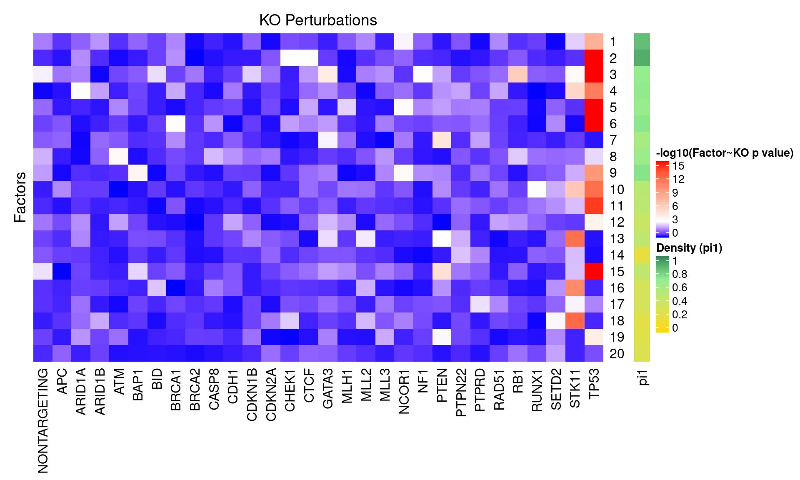
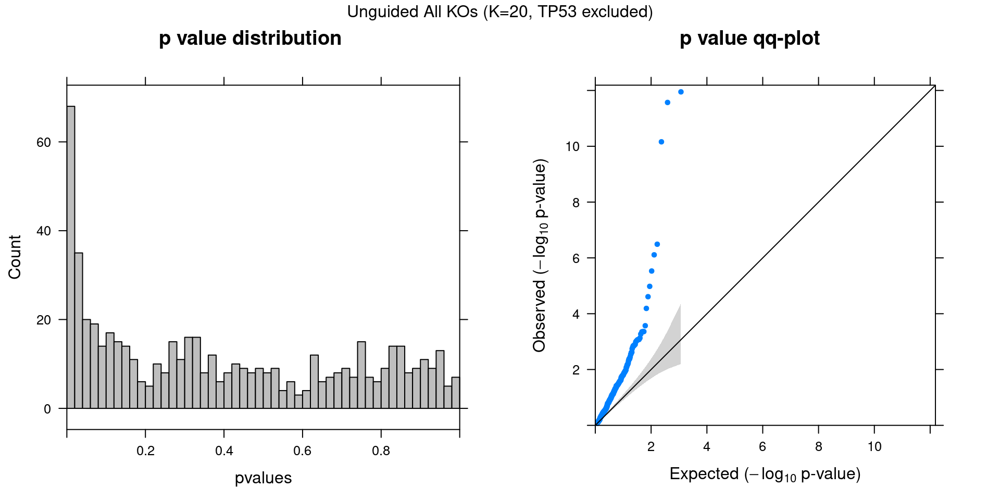

CROP-seq data are from this paper: On the design of CRISPR-based single cell molecular screens, GEO accession: GSE108699.
Perturbations:
Knock-outs of 29 tumor-suppressor genes (TP53, …), 1 non-targeting control.
Cells:
MCF10A cells (normal human breast epithelial cells) with exposure to a DNA damaging agent, doxorubicin.
Only cells with gRNA readout were kept, resulted in 5584 cells.
Genes:
Only genes detected in > 10% of cells were kept, resulted in 8046 genes.
Normalization:
Seurat “LogNormalize”: log(count per 10K + 1).
Library size was regressed out, and the residuals were used as input.
Unguided sparse factor analysis, with \(G\) being 0s.


Genes w/ non-zero loadings vs all genes selected for factor analysis.
GO category: Biological Process.
| ID | Description | GeneRatio | BgRatio | pvalue | qvalue |
|---|---|---|---|---|---|
| GO:0006613 | cotranslational protein targeting to membrane | 95/6058 | 95/7132 | 1.65e-07 | 0.000449 |
| GO:0006612 | protein targeting to membrane | 139/6058 | 142/7132 | 2.10e-07 | 0.000449 |
| GO:0006614 | SRP-dependent cotranslational protein targeting to membrane | 91/6058 | 91/7132 | 3.20e-07 | 0.000456 |
| GO:0006397 | mRNA processing | 367/6058 | 397/7132 | 2.53e-06 | 0.002181 |
| GO:0022613 | ribonucleoprotein complex biogenesis | 351/6058 | 379/7132 | 2.55e-06 | 0.002181 |
| GO:0008380 | RNA splicing | 331/6058 | 357/7132 | 3.69e-06 | 0.002632 |
| GO:0000375 | RNA splicing, via transesterification reactions | 264/6058 | 283/7132 | 9.35e-06 | 0.005718 |
| GO:0000377 | RNA splicing, via transesterification reactions with bulged adenosine as nucleophile | 261/6058 | 280/7132 | 1.26e-05 | 0.006000 |
| GO:0000398 | mRNA splicing, via spliceosome | 261/6058 | 280/7132 | 1.26e-05 | 0.006000 |
| GO:0070972 | protein localization to endoplasmic reticulum | 118/6058 | 122/7132 | 2.12e-05 | 0.009082 |
| GO:0042254 | ribosome biogenesis | 228/6058 | 244/7132 | 2.77e-05 | 0.010774 |
| GO:0045047 | protein targeting to ER | 98/6058 | 101/7132 | 7.06e-05 | 0.025181 |
| ID | Description | GeneRatio | BgRatio | pvalue | qvalue |
|---|---|---|---|---|---|
| GO:0006613 | cotranslational protein targeting to membrane | 85/4551 | 95/7132 | 1.06e-08 | 4.42e-05 |
| GO:0006614 | SRP-dependent cotranslational protein targeting to membrane | 81/4551 | 91/7132 | 4.19e-08 | 8.76e-05 |
| GO:0072599 | establishment of protein localization to endoplasmic reticulum | 90/4551 | 104/7132 | 1.66e-07 | 1.81e-04 |
| GO:0000184 | nuclear-transcribed mRNA catabolic process, nonsense-mediated decay | 93/4551 | 108/7132 | 1.73e-07 | 1.81e-04 |
| GO:0006413 | translational initiation | 137/4551 | 168/7132 | 2.92e-07 | 2.44e-04 |
| GO:0045047 | protein targeting to ER | 87/4551 | 101/7132 | 4.23e-07 | 2.95e-04 |
| GO:0006333 | chromatin assembly or disassembly | 79/4551 | 92/7132 | 1.92e-06 | 1.15e-03 |
| GO:0070972 | protein localization to endoplasmic reticulum | 101/4551 | 122/7132 | 2.84e-06 | 1.48e-03 |
| GO:0006338 | chromatin remodeling | 86/4551 | 102/7132 | 3.48e-06 | 1.62e-03 |
| GO:0071824 | protein-DNA complex subunit organization | 130/4551 | 163/7132 | 5.96e-06 | 2.49e-03 |
| GO:0034728 | nucleosome organization | 71/4551 | 83/7132 | 8.67e-06 | 3.29e-03 |
| GO:0031497 | chromatin assembly | 64/4551 | 74/7132 | 1.12e-05 | 3.90e-03 |
| GO:0006323 | DNA packaging | 79/4551 | 95/7132 | 2.52e-05 | 8.09e-03 |
| GO:0006612 | protein targeting to membrane | 113/4551 | 142/7132 | 2.93e-05 | 8.75e-03 |
| GO:0065004 | protein-DNA complex assembly | 111/4551 | 140/7132 | 4.65e-05 | 1.30e-02 |
| GO:0006334 | nucleosome assembly | 52/4551 | 60/7132 | 6.82e-05 | 1.78e-02 |
| GO:0031055 | chromatin remodeling at centromere | 26/4551 | 27/7132 | 8.61e-05 | 2.12e-02 |
| ID | Description | GeneRatio | BgRatio | pvalue | qvalue |
|---|---|---|---|---|---|
| GO:0070972 | protein localization to endoplasmic reticulum | 114/4865 | 122/7132 | 9.93e-12 | 4.04e-08 |
| GO:0006614 | SRP-dependent cotranslational protein targeting to membrane | 87/4865 | 91/7132 | 8.68e-11 | 1.77e-07 |
| GO:0006613 | cotranslational protein targeting to membrane | 90/4865 | 95/7132 | 1.93e-10 | 2.62e-07 |
| GO:0072599 | establishment of protein localization to endoplasmic reticulum | 97/4865 | 104/7132 | 5.04e-10 | 5.13e-07 |
| GO:0000184 | nuclear-transcribed mRNA catabolic process, nonsense-mediated decay | 100/4865 | 108/7132 | 8.55e-10 | 6.96e-07 |
| GO:0045047 | protein targeting to ER | 94/4865 | 101/7132 | 1.31e-09 | 8.91e-07 |
| GO:0006612 | protein targeting to membrane | 123/4865 | 142/7132 | 2.75e-07 | 1.60e-04 |
| GO:1902653 | secondary alcohol biosynthetic process | 46/4865 | 47/7132 | 3.35e-07 | 1.70e-04 |
| GO:0006695 | cholesterol biosynthetic process | 45/4865 | 46/7132 | 4.82e-07 | 2.18e-04 |
| GO:0090150 | establishment of protein localization to membrane | 182/4865 | 221/7132 | 1.09e-06 | 4.45e-04 |
| GO:0016126 | sterol biosynthetic process | 47/4865 | 49/7132 | 1.91e-06 | 7.05e-04 |
| GO:0006413 | translational initiation | 141/4865 | 168/7132 | 2.20e-06 | 7.45e-04 |
| GO:0072657 | protein localization to membrane | 279/4865 | 354/7132 | 3.75e-06 | 1.17e-03 |
| GO:0006694 | steroid biosynthetic process | 81/4865 | 93/7132 | 2.01e-05 | 5.64e-03 |
| GO:0010035 | response to inorganic substance | 207/4865 | 260/7132 | 2.08e-05 | 5.64e-03 |
| GO:0006120 | mitochondrial electron transport, NADH to ubiquinone | 44/4865 | 47/7132 | 2.82e-05 | 7.17e-03 |
| GO:0006163 | purine nucleotide metabolic process | 250/4865 | 320/7132 | 3.90e-05 | 9.34e-03 |
| GO:0009150 | purine ribonucleotide metabolic process | 238/4865 | 304/7132 | 4.62e-05 | 1.04e-02 |
| GO:0050810 | regulation of steroid biosynthetic process | 42/4865 | 45/7132 | 5.37e-05 | 1.14e-02 |
| GO:0072521 | purine-containing compound metabolic process | 261/4865 | 336/7132 | 5.59e-05 | 1.14e-02 |
| GO:0009126 | purine nucleoside monophosphate metabolic process | 165/4865 | 206/7132 | 7.85e-05 | 1.40e-02 |
| GO:0009167 | purine ribonucleoside monophosphate metabolic process | 165/4865 | 206/7132 | 7.85e-05 | 1.40e-02 |
| GO:0072594 | establishment of protein localization to organelle | 306/4865 | 399/7132 | 7.90e-05 | 1.40e-02 |
| GO:0046034 | ATP metabolic process | 144/4865 | 178/7132 | 8.89e-05 | 1.49e-02 |
| GO:0036293 | response to decreased oxygen levels | 132/4865 | 162/7132 | 9.16e-05 | 1.49e-02 |
| GO:0045540 | regulation of cholesterol biosynthetic process | 30/4865 | 31/7132 | 1.07e-04 | 1.61e-02 |
| GO:0106118 | regulation of sterol biosynthetic process | 30/4865 | 31/7132 | 1.07e-04 | 1.61e-02 |
| GO:0019439 | aromatic compound catabolic process | 300/4865 | 392/7132 | 1.22e-04 | 1.78e-02 |
| GO:0046165 | alcohol biosynthetic process | 70/4865 | 81/7132 | 1.30e-04 | 1.79e-02 |
| GO:0043062 | extracellular structure organization | 115/4865 | 140/7132 | 1.33e-04 | 1.79e-02 |
| GO:1901361 | organic cyclic compound catabolic process | 304/4865 | 398/7132 | 1.42e-04 | 1.79e-02 |
| GO:0006605 | protein targeting | 241/4865 | 311/7132 | 1.43e-04 | 1.79e-02 |
| GO:0009144 | purine nucleoside triphosphate metabolic process | 164/4865 | 206/7132 | 1.51e-04 | 1.79e-02 |
| GO:0030198 | extracellular matrix organization | 102/4865 | 123/7132 | 1.53e-04 | 1.79e-02 |
| GO:0046700 | heterocycle catabolic process | 293/4865 | 383/7132 | 1.54e-04 | 1.79e-02 |
| GO:0051186 | cofactor metabolic process | 237/4865 | 306/7132 | 1.72e-04 | 1.95e-02 |
| GO:0070482 | response to oxygen levels | 143/4865 | 178/7132 | 1.79e-04 | 1.97e-02 |
| GO:0044270 | cellular nitrogen compound catabolic process | 294/4865 | 385/7132 | 1.89e-04 | 2.02e-02 |
| GO:0001666 | response to hypoxia | 125/4865 | 154/7132 | 1.95e-04 | 2.03e-02 |
| GO:1901617 | organic hydroxy compound biosynthetic process | 88/4865 | 105/7132 | 2.05e-04 | 2.08e-02 |
| GO:0006887 | exocytosis | 338/4865 | 447/7132 | 2.43e-04 | 2.41e-02 |
| GO:0017144 | drug metabolic process | 302/4865 | 398/7132 | 3.42e-04 | 3.32e-02 |
| GO:0008202 | steroid metabolic process | 107/4865 | 131/7132 | 3.51e-04 | 3.32e-02 |
| GO:0019693 | ribose phosphate metabolic process | 255/4865 | 333/7132 | 3.69e-04 | 3.41e-02 |
| GO:0009259 | ribonucleotide metabolic process | 244/4865 | 318/7132 | 3.97e-04 | 3.47e-02 |
| GO:0009205 | purine ribonucleoside triphosphate metabolic process | 158/4865 | 200/7132 | 4.00e-04 | 3.47e-02 |
| GO:0046890 | regulation of lipid biosynthetic process | 72/4865 | 85/7132 | 4.02e-04 | 3.47e-02 |
| GO:0006119 | oxidative phosphorylation | 91/4865 | 110/7132 | 4.10e-04 | 3.47e-02 |
| GO:0034655 | nucleobase-containing compound catabolic process | 285/4865 | 375/7132 | 4.18e-04 | 3.47e-02 |
| GO:0045055 | regulated exocytosis | 295/4865 | 389/7132 | 4.29e-04 | 3.49e-02 |
| GO:0051188 | cofactor biosynthetic process | 132/4865 | 165/7132 | 4.45e-04 | 3.55e-02 |
| GO:0055086 | nucleobase-containing small molecule metabolic process | 342/4865 | 455/7132 | 4.84e-04 | 3.79e-02 |
| GO:0022610 | biological adhesion | 374/4865 | 500/7132 | 5.07e-04 | 3.89e-02 |
| GO:1901615 | organic hydroxy compound metabolic process | 156/4865 | 198/7132 | 5.49e-04 | 4.12e-02 |
| GO:0009117 | nucleotide metabolic process | 308/4865 | 408/7132 | 5.58e-04 | 4.12e-02 |
| GO:0006401 | RNA catabolic process | 207/4865 | 268/7132 | 5.77e-04 | 4.12e-02 |
| GO:0006402 | mRNA catabolic process | 191/4865 | 246/7132 | 5.78e-04 | 4.12e-02 |
| GO:0009141 | nucleoside triphosphate metabolic process | 172/4865 | 220/7132 | 5.87e-04 | 4.12e-02 |
| GO:0022900 | electron transport chain | 113/4865 | 140/7132 | 5.99e-04 | 4.13e-02 |
| GO:1902930 | regulation of alcohol biosynthetic process | 34/4865 | 37/7132 | 6.60e-04 | 4.43e-02 |
| GO:0006753 | nucleoside phosphate metabolic process | 309/4865 | 410/7132 | 6.63e-04 | 4.43e-02 |
| GO:0007155 | cell adhesion | 371/4865 | 497/7132 | 6.94e-04 | 4.55e-02 |
| GO:0002181 | cytoplasmic translation | 66/4865 | 78/7132 | 7.48e-04 | 4.75e-02 |
| GO:0016125 | sterol metabolic process | 66/4865 | 78/7132 | 7.48e-04 | 4.75e-02 |
| ID | Description | GeneRatio | BgRatio | pvalue | qvalue |
|---|---|---|---|---|---|
| GO:0007155 | cell adhesion | 373/4467 | 497/7132 | 7.56e-10 | 1.83e-06 |
| GO:0043062 | extracellular structure organization | 120/4467 | 140/7132 | 9.62e-10 | 1.83e-06 |
| GO:0022610 | biological adhesion | 374/4467 | 500/7132 | 1.47e-09 | 1.86e-06 |
| GO:0030198 | extracellular matrix organization | 106/4467 | 123/7132 | 4.87e-09 | 4.65e-06 |
| GO:0048646 | anatomical structure formation involved in morphogenesis | 296/4467 | 396/7132 | 9.60e-08 | 7.32e-05 |
| GO:0051270 | regulation of cellular component movement | 284/4467 | 381/7132 | 2.74e-07 | 1.74e-04 |
| GO:0045055 | regulated exocytosis | 289/4467 | 389/7132 | 3.62e-07 | 1.97e-04 |
| GO:2000145 | regulation of cell motility | 265/4467 | 355/7132 | 5.67e-07 | 2.56e-04 |
| GO:0002274 | myeloid leukocyte activation | 245/4467 | 326/7132 | 6.04e-07 | 2.56e-04 |
| GO:0030334 | regulation of cell migration | 246/4467 | 329/7132 | 1.16e-06 | 4.45e-04 |
| GO:0002366 | leukocyte activation involved in immune response | 258/4467 | 347/7132 | 1.41e-06 | 4.89e-04 |
| GO:0002263 | cell activation involved in immune response | 259/4467 | 350/7132 | 2.59e-06 | 8.22e-04 |
| GO:0035295 | tube development | 284/4467 | 387/7132 | 2.81e-06 | 8.23e-04 |
| GO:0001525 | angiogenesis | 144/4467 | 184/7132 | 3.02e-06 | 8.23e-04 |
| GO:0050900 | leukocyte migration | 104/4467 | 128/7132 | 3.27e-06 | 8.32e-04 |
| GO:0036230 | granulocyte activation | 216/4467 | 288/7132 | 3.67e-06 | 8.75e-04 |
| GO:0002443 | leukocyte mediated immunity | 273/4467 | 372/7132 | 4.39e-06 | 9.85e-04 |
| GO:0002275 | myeloid cell activation involved in immune response | 221/4467 | 296/7132 | 4.95e-06 | 1.05e-03 |
| GO:0002444 | myeloid leukocyte mediated immunity | 225/4467 | 303/7132 | 7.89e-06 | 1.51e-03 |
| GO:0042119 | neutrophil activation | 212/4467 | 284/7132 | 7.91e-06 | 1.51e-03 |
| GO:0098609 | cell-cell adhesion | 203/4467 | 271/7132 | 8.32e-06 | 1.51e-03 |
| GO:0006613 | cotranslational protein targeting to membrane | 79/4467 | 95/7132 | 9.31e-06 | 1.61e-03 |
| GO:0048514 | blood vessel morphogenesis | 164/4467 | 215/7132 | 1.05e-05 | 1.71e-03 |
| GO:0043299 | leukocyte degranulation | 219/4467 | 295/7132 | 1.08e-05 | 1.71e-03 |
| GO:0002283 | neutrophil activation involved in immune response | 209/4467 | 281/7132 | 1.39e-05 | 2.04e-03 |
| GO:0043312 | neutrophil degranulation | 209/4467 | 281/7132 | 1.39e-05 | 2.04e-03 |
| GO:0040012 | regulation of locomotion | 282/4467 | 389/7132 | 1.59e-05 | 2.24e-03 |
| GO:0002446 | neutrophil mediated immunity | 212/4467 | 286/7132 | 1.77e-05 | 2.41e-03 |
| GO:0006887 | exocytosis | 320/4467 | 447/7132 | 2.44e-05 | 3.22e-03 |
| GO:0006614 | SRP-dependent cotranslational protein targeting to membrane | 75/4467 | 91/7132 | 2.97e-05 | 3.78e-03 |
| GO:0031589 | cell-substrate adhesion | 122/4467 | 157/7132 | 3.18e-05 | 3.82e-03 |
| GO:0030855 | epithelial cell differentiation | 198/4467 | 267/7132 | 3.20e-05 | 3.82e-03 |
| GO:0050678 | regulation of epithelial cell proliferation | 105/4467 | 133/7132 | 3.38e-05 | 3.90e-03 |
| GO:0030216 | keratinocyte differentiation | 69/4467 | 83/7132 | 3.53e-05 | 3.96e-03 |
| GO:0001568 | blood vessel development | 188/4467 | 253/7132 | 4.13e-05 | 4.50e-03 |
| GO:0035239 | tube morphogenesis | 226/4467 | 309/7132 | 4.34e-05 | 4.55e-03 |
| GO:2000146 | negative regulation of cell motility | 94/4467 | 118/7132 | 4.52e-05 | 4.55e-03 |
| GO:0030336 | negative regulation of cell migration | 89/4467 | 111/7132 | 4.53e-05 | 4.55e-03 |
| GO:0007229 | integrin-mediated signaling pathway | 38/4467 | 42/7132 | 4.76e-05 | 4.65e-03 |
| GO:0060429 | epithelium development | 328/4467 | 462/7132 | 5.86e-05 | 5.59e-03 |
| GO:0008285 | negative regulation of cell proliferation | 226/4467 | 310/7132 | 6.16e-05 | 5.74e-03 |
| GO:0050673 | epithelial cell proliferation | 123/4467 | 160/7132 | 7.19e-05 | 6.53e-03 |
| GO:0009913 | epidermal cell differentiation | 82/4467 | 102/7132 | 7.55e-05 | 6.70e-03 |
| GO:0051271 | negative regulation of cellular component movement | 99/4467 | 126/7132 | 8.02e-05 | 6.96e-03 |
| GO:0050680 | negative regulation of epithelial cell proliferation | 49/4467 | 57/7132 | 8.85e-05 | 7.50e-03 |
| GO:0008544 | epidermis development | 115/4467 | 149/7132 | 9.08e-05 | 7.53e-03 |
| GO:1901342 | regulation of vasculature development | 91/4467 | 115/7132 | 9.57e-05 | 7.77e-03 |
| GO:0045047 | protein targeting to ER | 81/4467 | 101/7132 | 9.80e-05 | 7.79e-03 |
| GO:0045765 | regulation of angiogenesis | 83/4467 | 104/7132 | 1.11e-04 | 8.51e-03 |
| GO:0072599 | establishment of protein localization to endoplasmic reticulum | 83/4467 | 104/7132 | 1.11e-04 | 8.51e-03 |
| GO:0022612 | gland morphogenesis | 45/4467 | 52/7132 | 1.23e-04 | 9.22e-03 |
| GO:0030278 | regulation of ossification | 56/4467 | 67/7132 | 1.45e-04 | 1.07e-02 |
| GO:0042330 | taxis | 142/4467 | 189/7132 | 1.49e-04 | 1.07e-02 |
| GO:0001944 | vasculature development | 197/4467 | 270/7132 | 1.68e-04 | 1.17e-02 |
| GO:0072358 | cardiovascular system development | 199/4467 | 273/7132 | 1.71e-04 | 1.17e-02 |
| GO:0003158 | endothelium development | 44/4467 | 51/7132 | 1.72e-04 | 1.17e-02 |
| GO:0006935 | chemotaxis | 141/4467 | 188/7132 | 1.81e-04 | 1.21e-02 |
| GO:0010469 | regulation of signaling receptor activity | 93/4467 | 119/7132 | 1.89e-04 | 1.24e-02 |
| GO:0070482 | response to oxygen levels | 134/4467 | 178/7132 | 1.95e-04 | 1.26e-02 |
| GO:0070972 | protein localization to endoplasmic reticulum | 95/4467 | 122/7132 | 2.06e-04 | 1.31e-02 |
| GO:0090150 | establishment of protein localization to membrane | 163/4467 | 221/7132 | 2.52e-04 | 1.58e-02 |
| GO:0001666 | response to hypoxia | 117/4467 | 154/7132 | 2.58e-04 | 1.59e-02 |
| GO:0002576 | platelet degranulation | 48/4467 | 57/7132 | 3.05e-04 | 1.84e-02 |
| GO:0072359 | circulatory system development | 290/4467 | 411/7132 | 3.15e-04 | 1.88e-02 |
| GO:0072657 | protein localization to membrane | 252/4467 | 354/7132 | 3.25e-04 | 1.89e-02 |
| GO:0009123 | nucleoside monophosphate metabolic process | 170/4467 | 232/7132 | 3.26e-04 | 1.89e-02 |
| GO:0034330 | cell junction organization | 120/4467 | 159/7132 | 3.48e-04 | 1.98e-02 |
| GO:0071363 | cellular response to growth factor stimulus | 224/4467 | 313/7132 | 4.24e-04 | 2.38e-02 |
| GO:0042060 | wound healing | 162/4467 | 221/7132 | 4.35e-04 | 2.40e-02 |
| GO:0008217 | regulation of blood pressure | 38/4467 | 44/7132 | 4.67e-04 | 2.52e-02 |
| GO:0006909 | phagocytosis | 82/4467 | 105/7132 | 4.68e-04 | 2.52e-02 |
| GO:0001667 | ameboidal-type cell migration | 125/4467 | 167/7132 | 4.78e-04 | 2.53e-02 |
| GO:0002684 | positive regulation of immune system process | 261/4467 | 369/7132 | 4.91e-04 | 2.57e-02 |
| GO:0009141 | nucleoside triphosphate metabolic process | 161/4467 | 220/7132 | 5.16e-04 | 2.64e-02 |
| GO:0051241 | negative regulation of multicellular organismal process | 292/4467 | 416/7132 | 5.26e-04 | 2.64e-02 |
| GO:0009100 | glycoprotein metabolic process | 131/4467 | 176/7132 | 5.29e-04 | 2.64e-02 |
| GO:0006753 | nucleoside phosphate metabolic process | 288/4467 | 410/7132 | 5.32e-04 | 2.64e-02 |
| GO:0001974 | blood vessel remodeling | 16/4467 | 16/7132 | 5.55e-04 | 2.72e-02 |
| GO:0070848 | response to growth factor | 232/4467 | 326/7132 | 5.73e-04 | 2.77e-02 |
| GO:0048762 | mesenchymal cell differentiation | 59/4467 | 73/7132 | 5.93e-04 | 2.83e-02 |
| GO:0009611 | response to wounding | 191/4467 | 265/7132 | 6.17e-04 | 2.91e-02 |
| GO:0090100 | positive regulation of transmembrane receptor protein serine/threonine kinase signaling pathway | 34/4467 | 39/7132 | 6.50e-04 | 2.98e-02 |
| GO:0008015 | blood circulation | 99/4467 | 130/7132 | 6.53e-04 | 2.98e-02 |
| GO:0046034 | ATP metabolic process | 132/4467 | 178/7132 | 6.56e-04 | 2.98e-02 |
| GO:0010594 | regulation of endothelial cell migration | 56/4467 | 69/7132 | 6.69e-04 | 3.00e-02 |
| GO:0036293 | response to decreased oxygen levels | 121/4467 | 162/7132 | 6.77e-04 | 3.00e-02 |
| GO:0009117 | nucleotide metabolic process | 286/4467 | 408/7132 | 6.88e-04 | 3.02e-02 |
| GO:0003013 | circulatory system process | 103/4467 | 136/7132 | 7.24e-04 | 3.10e-02 |
| GO:0034329 | cell junction assembly | 103/4467 | 136/7132 | 7.24e-04 | 3.10e-02 |
| GO:0090287 | regulation of cellular response to growth factor stimulus | 87/4467 | 113/7132 | 7.41e-04 | 3.14e-02 |
| GO:0006612 | protein targeting to membrane | 107/4467 | 142/7132 | 7.93e-04 | 3.33e-02 |
| GO:0072332 | intrinsic apoptotic signaling pathway by p53 class mediator | 42/4467 | 50/7132 | 8.17e-04 | 3.35e-02 |
| GO:0097529 | myeloid leukocyte migration | 42/4467 | 50/7132 | 8.17e-04 | 3.35e-02 |
| GO:0019221 | cytokine-mediated signaling pathway | 201/4467 | 281/7132 | 8.62e-04 | 3.50e-02 |
| GO:0090130 | tissue migration | 102/4467 | 135/7132 | 8.87e-04 | 3.56e-02 |
| GO:0010632 | regulation of epithelial cell migration | 79/4467 | 102/7132 | 9.36e-04 | 3.72e-02 |
| GO:0010631 | epithelial cell migration | 101/4467 | 134/7132 | 1.08e-03 | 4.21e-02 |
| GO:0090132 | epithelium migration | 101/4467 | 134/7132 | 1.08e-03 | 4.21e-02 |
| GO:0048771 | tissue remodeling | 49/4467 | 60/7132 | 1.11e-03 | 4.21e-02 |
| GO:0009126 | purine nucleoside monophosphate metabolic process | 150/4467 | 206/7132 | 1.14e-03 | 4.21e-02 |
| GO:0009144 | purine nucleoside triphosphate metabolic process | 150/4467 | 206/7132 | 1.14e-03 | 4.21e-02 |
| GO:0009167 | purine ribonucleoside monophosphate metabolic process | 150/4467 | 206/7132 | 1.14e-03 | 4.21e-02 |
| GO:0060326 | cell chemotaxis | 59/4467 | 74/7132 | 1.15e-03 | 4.21e-02 |
| GO:0007044 | cell-substrate junction assembly | 54/4467 | 67/7132 | 1.15e-03 | 4.21e-02 |
| GO:0043542 | endothelial cell migration | 71/4467 | 91/7132 | 1.17e-03 | 4.24e-02 |
| GO:0045446 | endothelial cell differentiation | 38/4467 | 45/7132 | 1.19e-03 | 4.27e-02 |
| GO:0009161 | ribonucleoside monophosphate metabolic process | 158/4467 | 218/7132 | 1.20e-03 | 4.27e-02 |
| GO:0009887 | animal organ morphogenesis | 232/4467 | 329/7132 | 1.31e-03 | 4.61e-02 |
| GO:0030155 | regulation of cell adhesion | 200/4467 | 281/7132 | 1.34e-03 | 4.68e-02 |
| GO:0051272 | positive regulation of cellular component movement | 151/4467 | 208/7132 | 1.36e-03 | 4.68e-02 |
| GO:1902533 | positive regulation of intracellular signal transduction | 296/4467 | 426/7132 | 1.36e-03 | 4.68e-02 |
| GO:0040013 | negative regulation of locomotion | 102/4467 | 136/7132 | 1.38e-03 | 4.68e-02 |
| GO:0055086 | nucleobase-containing small molecule metabolic process | 315/4467 | 455/7132 | 1.40e-03 | 4.68e-02 |
| GO:0003197 | endocardial cushion development | 14/4467 | 14/7132 | 1.42e-03 | 4.68e-02 |
| GO:0060317 | cardiac epithelial to mesenchymal transition | 14/4467 | 14/7132 | 1.42e-03 | 4.68e-02 |
| GO:0007167 | enzyme linked receptor protein signaling pathway | 311/4467 | 449/7132 | 1.42e-03 | 4.68e-02 |
| GO:0030162 | regulation of proteolysis | 270/4467 | 387/7132 | 1.51e-03 | 4.93e-02 |
| ID | Description | GeneRatio | BgRatio | pvalue | qvalue |
|---|---|---|---|---|---|
| GO:0042254 | ribosome biogenesis | 216/4964 | 244/7132 | 1.05e-12 | 4.47e-09 |
| GO:0006364 | rRNA processing | 161/4964 | 179/7132 | 4.40e-11 | 9.36e-08 |
| GO:0016072 | rRNA metabolic process | 182/4964 | 208/7132 | 6.73e-10 | 9.54e-07 |
| GO:0034470 | ncRNA processing | 258/4964 | 306/7132 | 1.07e-09 | 1.14e-06 |
| GO:0034660 | ncRNA metabolic process | 357/4964 | 437/7132 | 2.24e-09 | 1.91e-06 |
| GO:0022613 | ribonucleoprotein complex biogenesis | 309/4964 | 379/7132 | 4.32e-08 | 3.06e-05 |
| GO:0006614 | SRP-dependent cotranslational protein targeting to membrane | 84/4964 | 91/7132 | 1.24e-07 | 7.54e-05 |
| GO:0006613 | cotranslational protein targeting to membrane | 87/4964 | 95/7132 | 1.95e-07 | 1.04e-04 |
| GO:0006413 | translational initiation | 143/4964 | 168/7132 | 2.01e-06 | 9.49e-04 |
| GO:0006412 | translation | 389/4964 | 496/7132 | 3.32e-06 | 1.41e-03 |
| GO:0042273 | ribosomal large subunit biogenesis | 61/4964 | 66/7132 | 6.56e-06 | 2.54e-03 |
| GO:0045047 | protein targeting to ER | 89/4964 | 101/7132 | 9.20e-06 | 3.26e-03 |
| GO:0072599 | establishment of protein localization to endoplasmic reticulum | 91/4964 | 104/7132 | 1.43e-05 | 4.67e-03 |
| GO:0006401 | RNA catabolic process | 216/4964 | 268/7132 | 2.34e-05 | 7.10e-03 |
| GO:0000956 | nuclear-transcribed mRNA catabolic process | 146/4964 | 176/7132 | 3.09e-05 | 8.76e-03 |
| GO:0042274 | ribosomal small subunit biogenesis | 55/4964 | 60/7132 | 3.67e-05 | 9.75e-03 |
| GO:0070972 | protein localization to endoplasmic reticulum | 104/4964 | 122/7132 | 4.48e-05 | 1.12e-02 |
| GO:0006402 | mRNA catabolic process | 198/4964 | 246/7132 | 5.99e-05 | 1.42e-02 |
| GO:0009451 | RNA modification | 98/4964 | 115/7132 | 7.66e-05 | 1.72e-02 |
| GO:0045861 | negative regulation of proteolysis | 134/4964 | 163/7132 | 1.53e-04 | 3.26e-02 |
| GO:0043462 | regulation of ATPase activity | 45/4964 | 49/7132 | 1.77e-04 | 3.59e-02 |
| ID | Description | GeneRatio | BgRatio | pvalue | qvalue |
|---|---|---|---|---|---|
| GO:0006614 | SRP-dependent cotranslational protein targeting to membrane | 77/3801 | 91/7132 | 2.25e-10 | 9.09e-07 |
| GO:0006613 | cotranslational protein targeting to membrane | 79/3801 | 95/7132 | 7.43e-10 | 1.50e-06 |
| GO:0070972 | protein localization to endoplasmic reticulum | 97/3801 | 122/7132 | 1.15e-09 | 1.55e-06 |
| GO:0000184 | nuclear-transcribed mRNA catabolic process, nonsense-mediated decay | 86/3801 | 108/7132 | 8.96e-09 | 9.04e-06 |
| GO:0045047 | protein targeting to ER | 81/3801 | 101/7132 | 1.32e-08 | 9.04e-06 |
| GO:0072599 | establishment of protein localization to endoplasmic reticulum | 83/3801 | 104/7132 | 1.34e-08 | 9.04e-06 |
| GO:0006413 | translational initiation | 123/3801 | 168/7132 | 6.75e-08 | 3.89e-05 |
| GO:0006959 | humoral immune response | 39/3801 | 43/7132 | 1.35e-07 | 6.80e-05 |
| GO:0036230 | granulocyte activation | 195/3801 | 288/7132 | 2.77e-07 | 1.24e-04 |
| GO:0002181 | cytoplasmic translation | 63/3801 | 78/7132 | 3.44e-07 | 1.33e-04 |
| GO:0042119 | neutrophil activation | 192/3801 | 284/7132 | 4.05e-07 | 1.33e-04 |
| GO:0002283 | neutrophil activation involved in immune response | 190/3801 | 281/7132 | 4.59e-07 | 1.33e-04 |
| GO:0043312 | neutrophil degranulation | 190/3801 | 281/7132 | 4.59e-07 | 1.33e-04 |
| GO:0002446 | neutrophil mediated immunity | 193/3801 | 286/7132 | 4.61e-07 | 1.33e-04 |
| GO:0002275 | myeloid cell activation involved in immune response | 198/3801 | 296/7132 | 8.61e-07 | 2.32e-04 |
| GO:0002444 | myeloid leukocyte mediated immunity | 202/3801 | 303/7132 | 9.63e-07 | 2.43e-04 |
| GO:0022900 | electron transport chain | 102/3801 | 140/7132 | 1.32e-06 | 3.14e-04 |
| GO:0002274 | myeloid leukocyte activation | 215/3801 | 326/7132 | 1.44e-06 | 3.24e-04 |
| GO:0043299 | leukocyte degranulation | 196/3801 | 295/7132 | 2.00e-06 | 4.25e-04 |
| GO:0017144 | drug metabolic process | 255/3801 | 398/7132 | 5.01e-06 | 1.01e-03 |
| GO:0006612 | protein targeting to membrane | 101/3801 | 142/7132 | 8.86e-06 | 1.67e-03 |
| GO:0007229 | integrin-mediated signaling pathway | 36/3801 | 42/7132 | 9.11e-06 | 1.67e-03 |
| GO:0002443 | leukocyte mediated immunity | 238/3801 | 372/7132 | 1.22e-05 | 2.14e-03 |
| GO:0070126 | mitochondrial translational termination | 63/3801 | 83/7132 | 1.67e-05 | 2.80e-03 |
| GO:0019730 | antimicrobial humoral response | 21/3801 | 22/7132 | 1.92e-05 | 3.11e-03 |
| GO:0043062 | extracellular structure organization | 98/3801 | 140/7132 | 3.49e-05 | 5.34e-03 |
| GO:0022904 | respiratory electron transport chain | 68/3801 | 92/7132 | 3.57e-05 | 5.34e-03 |
| GO:0061844 | antimicrobial humoral immune response mediated by antimicrobial peptide | 16/3801 | 16/7132 | 4.17e-05 | 5.59e-03 |
| GO:0072376 | protein activation cascade | 16/3801 | 16/7132 | 4.17e-05 | 5.59e-03 |
| GO:0071345 | cellular response to cytokine stimulus | 270/3801 | 432/7132 | 4.24e-05 | 5.59e-03 |
| GO:0022610 | biological adhesion | 309/3801 | 500/7132 | 4.29e-05 | 5.59e-03 |
| GO:0070125 | mitochondrial translational elongation | 62/3801 | 83/7132 | 4.58e-05 | 5.78e-03 |
| GO:0042773 | ATP synthesis coupled electron transport | 60/3801 | 80/7132 | 4.94e-05 | 6.05e-03 |
| GO:0030198 | extracellular matrix organization | 87/3801 | 123/7132 | 5.16e-05 | 6.13e-03 |
| GO:0006414 | translational elongation | 83/3801 | 117/7132 | 6.45e-05 | 7.45e-03 |
| GO:0042775 | mitochondrial ATP synthesis coupled electron transport | 59/3801 | 79/7132 | 7.05e-05 | 7.70e-03 |
| GO:0007155 | cell adhesion | 306/3801 | 497/7132 | 7.06e-05 | 7.70e-03 |
| GO:0006120 | mitochondrial electron transport, NADH to ubiquinone | 38/3801 | 47/7132 | 7.56e-05 | 8.04e-03 |
| GO:0019221 | cytokine-mediated signaling pathway | 181/3801 | 281/7132 | 7.82e-05 | 8.10e-03 |
| GO:0002183 | cytoplasmic translational initiation | 24/3801 | 27/7132 | 9.21e-05 | 9.30e-03 |
| GO:0034097 | response to cytokine | 292/3801 | 474/7132 | 9.81e-05 | 9.33e-03 |
| GO:0010257 | NADH dehydrogenase complex assembly | 49/3801 | 64/7132 | 9.93e-05 | 9.33e-03 |
| GO:0032981 | mitochondrial respiratory chain complex I assembly | 49/3801 | 64/7132 | 9.93e-05 | 9.33e-03 |
| GO:0001704 | formation of primary germ layer | 37/3801 | 46/7132 | 1.16e-04 | 1.07e-02 |
| GO:0045055 | regulated exocytosis | 242/3801 | 389/7132 | 1.63e-04 | 1.47e-02 |
| GO:0002263 | cell activation involved in immune response | 219/3801 | 350/7132 | 2.05e-04 | 1.80e-02 |
| GO:0006119 | oxidative phosphorylation | 77/3801 | 110/7132 | 2.37e-04 | 2.03e-02 |
| GO:0006605 | protein targeting | 196/3801 | 311/7132 | 2.50e-04 | 2.11e-02 |
| GO:0006415 | translational termination | 67/3801 | 94/7132 | 2.58e-04 | 2.13e-02 |
| GO:1903317 | regulation of protein maturation | 35/3801 | 44/7132 | 2.69e-04 | 2.18e-02 |
| GO:0002366 | leukocyte activation involved in immune response | 216/3801 | 347/7132 | 3.48e-04 | 2.75e-02 |
| GO:0043207 | response to external biotic stimulus | 213/3801 | 342/7132 | 3.66e-04 | 2.79e-02 |
| GO:0051707 | response to other organism | 213/3801 | 342/7132 | 3.66e-04 | 2.79e-02 |
| GO:0007156 | homophilic cell adhesion via plasma membrane adhesion molecules | 28/3801 | 34/7132 | 3.89e-04 | 2.91e-02 |
| GO:0009607 | response to biotic stimulus | 222/3801 | 358/7132 | 3.96e-04 | 2.91e-02 |
| GO:0070613 | regulation of protein processing | 34/3801 | 43/7132 | 4.07e-04 | 2.91e-02 |
| GO:0031424 | keratinization | 32/3801 | 40/7132 | 4.11e-04 | 2.91e-02 |
| GO:0006412 | translation | 300/3801 | 496/7132 | 4.95e-04 | 3.44e-02 |
| GO:0002920 | regulation of humoral immune response | 12/3801 | 12/7132 | 5.21e-04 | 3.55e-02 |
| GO:0048646 | anatomical structure formation involved in morphogenesis | 243/3801 | 396/7132 | 5.27e-04 | 3.55e-02 |
| GO:0034341 | response to interferon-gamma | 58/3801 | 81/7132 | 5.45e-04 | 3.61e-02 |
| GO:0098609 | cell-cell adhesion | 171/3801 | 271/7132 | 5.62e-04 | 3.66e-02 |
| GO:0001906 | cell killing | 35/3801 | 45/7132 | 5.92e-04 | 3.80e-02 |
| GO:0030216 | keratinocyte differentiation | 59/3801 | 83/7132 | 6.66e-04 | 4.20e-02 |
| GO:0072594 | establishment of protein localization to organelle | 244/3801 | 399/7132 | 6.84e-04 | 4.25e-02 |
| GO:0098742 | cell-cell adhesion via plasma-membrane adhesion molecules | 40/3801 | 53/7132 | 7.25e-04 | 4.44e-02 |
| GO:0051604 | protein maturation | 106/3801 | 161/7132 | 7.45e-04 | 4.49e-02 |
| GO:0006091 | generation of precursor metabolites and energy | 187/3801 | 300/7132 | 7.76e-04 | 4.61e-02 |
| ID | Description | GeneRatio | BgRatio | pvalue | qvalue |
|---|---|---|---|---|---|
| GO:0007155 | cell adhesion | 291/2962 | 497/7132 | 1.82e-15 | 4.68e-12 |
| GO:0022610 | biological adhesion | 292/2962 | 500/7132 | 2.60e-15 | 4.68e-12 |
| GO:0098609 | cell-cell adhesion | 165/2962 | 271/7132 | 4.86e-11 | 5.83e-08 |
| GO:0010469 | regulation of signaling receptor activity | 83/2962 | 119/7132 | 3.35e-10 | 3.02e-07 |
| GO:0048646 | anatomical structure formation involved in morphogenesis | 218/2962 | 396/7132 | 1.71e-08 | 1.23e-05 |
| GO:0045055 | regulated exocytosis | 213/2962 | 389/7132 | 4.50e-08 | 2.38e-05 |
| GO:0035295 | tube development | 212/2962 | 387/7132 | 4.62e-08 | 2.38e-05 |
| GO:0051270 | regulation of cellular component movement | 207/2962 | 381/7132 | 1.57e-07 | 7.05e-05 |
| GO:0030334 | regulation of cell migration | 181/2962 | 329/7132 | 3.14e-07 | 1.26e-04 |
| GO:2000145 | regulation of cell motility | 193/2962 | 355/7132 | 3.94e-07 | 1.42e-04 |
| GO:0043062 | extracellular structure organization | 87/2962 | 140/7132 | 5.61e-07 | 1.84e-04 |
| GO:0030198 | extracellular matrix organization | 78/2962 | 123/7132 | 6.66e-07 | 1.99e-04 |
| GO:0052548 | regulation of endopeptidase activity | 113/2962 | 192/7132 | 7.18e-07 | 1.99e-04 |
| GO:0002283 | neutrophil activation involved in immune response | 156/2962 | 281/7132 | 1.01e-06 | 2.43e-04 |
| GO:0043312 | neutrophil degranulation | 156/2962 | 281/7132 | 1.01e-06 | 2.43e-04 |
| GO:0035239 | tube morphogenesis | 169/2962 | 309/7132 | 1.29e-06 | 2.79e-04 |
| GO:0042119 | neutrophil activation | 157/2962 | 284/7132 | 1.32e-06 | 2.79e-04 |
| GO:0030155 | regulation of cell adhesion | 155/2962 | 281/7132 | 1.84e-06 | 3.33e-04 |
| GO:0060429 | epithelium development | 240/2962 | 462/7132 | 1.96e-06 | 3.33e-04 |
| GO:0040012 | regulation of locomotion | 206/2962 | 389/7132 | 1.97e-06 | 3.33e-04 |
| GO:0006887 | exocytosis | 233/2962 | 447/7132 | 2.00e-06 | 3.33e-04 |
| GO:0061458 | reproductive system development | 102/2962 | 173/7132 | 2.22e-06 | 3.33e-04 |
| GO:0036230 | granulocyte activation | 158/2962 | 288/7132 | 2.25e-06 | 3.33e-04 |
| GO:0072359 | circulatory system development | 216/2962 | 411/7132 | 2.27e-06 | 3.33e-04 |
| GO:0002446 | neutrophil mediated immunity | 157/2962 | 286/7132 | 2.31e-06 | 3.33e-04 |
| GO:0043299 | leukocyte degranulation | 161/2962 | 295/7132 | 2.74e-06 | 3.75e-04 |
| GO:0052547 | regulation of peptidase activity | 117/2962 | 204/7132 | 2.81e-06 | 3.75e-04 |
| GO:0050878 | regulation of body fluid levels | 106/2962 | 182/7132 | 3.13e-06 | 4.00e-04 |
| GO:0048608 | reproductive structure development | 100/2962 | 170/7132 | 3.22e-06 | 4.00e-04 |
| GO:0002275 | myeloid cell activation involved in immune response | 161/2962 | 296/7132 | 3.58e-06 | 4.30e-04 |
| GO:0030855 | epithelial cell differentiation | 147/2962 | 267/7132 | 3.91e-06 | 4.54e-04 |
| GO:0034330 | cell junction organization | 94/2962 | 159/7132 | 4.71e-06 | 5.30e-04 |
| GO:0002274 | myeloid leukocyte activation | 174/2962 | 326/7132 | 6.81e-06 | 7.43e-04 |
| GO:0002526 | acute inflammatory response | 30/2962 | 39/7132 | 7.13e-06 | 7.55e-04 |
| GO:0003015 | heart process | 49/2962 | 73/7132 | 8.14e-06 | 8.38e-04 |
| GO:0070268 | cornification | 25/2962 | 31/7132 | 9.66e-06 | 9.47e-04 |
| GO:0031589 | cell-substrate adhesion | 92/2962 | 157/7132 | 9.86e-06 | 9.47e-04 |
| GO:0006954 | inflammatory response | 114/2962 | 202/7132 | 1.06e-05 | 9.47e-04 |
| GO:0002576 | platelet degranulation | 40/2962 | 57/7132 | 1.07e-05 | 9.47e-04 |
| GO:0006936 | muscle contraction | 63/2962 | 100/7132 | 1.07e-05 | 9.47e-04 |
| GO:0051241 | negative regulation of multicellular organismal process | 215/2962 | 416/7132 | 1.08e-05 | 9.47e-04 |
| GO:0002444 | myeloid leukocyte mediated immunity | 162/2962 | 303/7132 | 1.25e-05 | 1.05e-03 |
| GO:0009611 | response to wounding | 144/2962 | 265/7132 | 1.26e-05 | 1.05e-03 |
| GO:0002443 | leukocyte mediated immunity | 194/2962 | 372/7132 | 1.43e-05 | 1.16e-03 |
| GO:0034329 | cell junction assembly | 81/2962 | 136/7132 | 1.44e-05 | 1.16e-03 |
| GO:0031424 | keratinization | 30/2962 | 40/7132 | 1.72e-05 | 1.34e-03 |
| GO:0051051 | negative regulation of transport | 103/2962 | 181/7132 | 1.74e-05 | 1.34e-03 |
| GO:0060047 | heart contraction | 45/2962 | 67/7132 | 1.86e-05 | 1.39e-03 |
| GO:0072358 | cardiovascular system development | 147/2962 | 273/7132 | 1.94e-05 | 1.42e-03 |
| GO:0050918 | positive chemotaxis | 17/2962 | 19/7132 | 2.01e-05 | 1.45e-03 |
| GO:0042060 | wound healing | 122/2962 | 221/7132 | 2.19e-05 | 1.55e-03 |
| GO:0048514 | blood vessel morphogenesis | 119/2962 | 215/7132 | 2.35e-05 | 1.60e-03 |
| GO:0001525 | angiogenesis | 104/2962 | 184/7132 | 2.36e-05 | 1.60e-03 |
| GO:0050728 | negative regulation of inflammatory response | 28/2962 | 37/7132 | 2.49e-05 | 1.65e-03 |
| GO:0030029 | actin filament-based process | 176/2962 | 336/7132 | 2.59e-05 | 1.65e-03 |
| GO:0010951 | negative regulation of endopeptidase activity | 62/2962 | 100/7132 | 2.61e-05 | 1.65e-03 |
| GO:1903317 | regulation of protein maturation | 32/2962 | 44/7132 | 2.61e-05 | 1.65e-03 |
| GO:0050727 | regulation of inflammatory response | 63/2962 | 102/7132 | 2.67e-05 | 1.66e-03 |
| GO:0002366 | leukocyte activation involved in immune response | 181/2962 | 347/7132 | 2.74e-05 | 1.66e-03 |
| GO:0098742 | cell-cell adhesion via plasma-membrane adhesion molecules | 37/2962 | 53/7132 | 2.77e-05 | 1.66e-03 |
| GO:0048871 | multicellular organismal homeostasis | 91/2962 | 158/7132 | 2.83e-05 | 1.67e-03 |
| GO:0002263 | cell activation involved in immune response | 182/2962 | 350/7132 | 3.29e-05 | 1.91e-03 |
| GO:0007156 | homophilic cell adhesion via plasma membrane adhesion molecules | 26/2962 | 34/7132 | 3.57e-05 | 2.04e-03 |
| GO:0006613 | cotranslational protein targeting to membrane | 59/2962 | 95/7132 | 3.79e-05 | 2.13e-03 |
| GO:0010466 | negative regulation of peptidase activity | 62/2962 | 101/7132 | 4.04e-05 | 2.21e-03 |
| GO:0045785 | positive regulation of cell adhesion | 89/2962 | 155/7132 | 4.05e-05 | 2.21e-03 |
| GO:0001568 | blood vessel development | 136/2962 | 253/7132 | 4.41e-05 | 2.36e-03 |
| GO:0001944 | vasculature development | 144/2962 | 270/7132 | 4.46e-05 | 2.36e-03 |
| GO:0070613 | regulation of protein processing | 31/2962 | 43/7132 | 4.63e-05 | 2.42e-03 |
| GO:0043086 | negative regulation of catalytic activity | 189/2962 | 367/7132 | 4.88e-05 | 2.51e-03 |
| GO:0044706 | multi-multicellular organism process | 53/2962 | 84/7132 | 5.01e-05 | 2.54e-03 |
| GO:0030162 | regulation of proteolysis | 198/2962 | 387/7132 | 5.35e-05 | 2.65e-03 |
| GO:0010942 | positive regulation of cell death | 180/2962 | 348/7132 | 5.38e-05 | 2.65e-03 |
| GO:0030036 | actin cytoskeleton organization | 163/2962 | 312/7132 | 6.17e-05 | 2.99e-03 |
| GO:0003013 | circulatory system process | 79/2962 | 136/7132 | 6.30e-05 | 2.99e-03 |
| GO:0010810 | regulation of cell-substrate adhesion | 64/2962 | 106/7132 | 6.31e-05 | 2.99e-03 |
| GO:0022603 | regulation of anatomical structure morphogenesis | 200/2962 | 393/7132 | 7.38e-05 | 3.45e-03 |
| GO:1903522 | regulation of blood circulation | 41/2962 | 62/7132 | 7.54e-05 | 3.48e-03 |
| GO:0043065 | positive regulation of apoptotic process | 169/2962 | 326/7132 | 7.78e-05 | 3.50e-03 |
| GO:0043068 | positive regulation of programmed cell death | 169/2962 | 326/7132 | 7.78e-05 | 3.50e-03 |
| GO:0003008 | system process | 234/2962 | 468/7132 | 8.03e-05 | 3.57e-03 |
| GO:0003006 | developmental process involved in reproduction | 131/2962 | 245/7132 | 8.39e-05 | 3.68e-03 |
| GO:0006614 | SRP-dependent cotranslational protein targeting to membrane | 56/2962 | 91/7132 | 8.56e-05 | 3.71e-03 |
| GO:2001233 | regulation of apoptotic signaling pathway | 128/2962 | 239/7132 | 9.16e-05 | 3.88e-03 |
| GO:0045047 | protein targeting to ER | 61/2962 | 101/7132 | 9.20e-05 | 3.88e-03 |
| GO:1903319 | positive regulation of protein maturation | 13/2962 | 14/7132 | 9.28e-05 | 3.88e-03 |
| GO:0048729 | tissue morphogenesis | 128/2962 | 240/7132 | 1.17e-04 | 4.85e-03 |
| GO:0040017 | positive regulation of locomotion | 119/2962 | 221/7132 | 1.19e-04 | 4.86e-03 |
| GO:0003012 | muscle system process | 81/2962 | 142/7132 | 1.21e-04 | 4.89e-03 |
| GO:0007599 | hemostasis | 75/2962 | 130/7132 | 1.30e-04 | 5.14e-03 |
| GO:0008015 | blood circulation | 75/2962 | 130/7132 | 1.30e-04 | 5.14e-03 |
| GO:0007596 | blood coagulation | 74/2962 | 128/7132 | 1.31e-04 | 5.14e-03 |
| GO:0072593 | reactive oxygen species metabolic process | 72/2962 | 124/7132 | 1.34e-04 | 5.14e-03 |
| GO:0009913 | epidermal cell differentiation | 61/2962 | 102/7132 | 1.37e-04 | 5.14e-03 |
| GO:0072599 | establishment of protein localization to endoplasmic reticulum | 62/2962 | 104/7132 | 1.38e-04 | 5.14e-03 |
| GO:0032102 | negative regulation of response to external stimulus | 63/2962 | 106/7132 | 1.38e-04 | 5.14e-03 |
| GO:0045861 | negative regulation of proteolysis | 91/2962 | 163/7132 | 1.39e-04 | 5.14e-03 |
| GO:0043066 | negative regulation of apoptotic process | 223/2962 | 447/7132 | 1.41e-04 | 5.18e-03 |
| GO:0008016 | regulation of heart contraction | 36/2962 | 54/7132 | 1.60e-04 | 5.83e-03 |
| GO:0042742 | defense response to bacterium | 30/2962 | 43/7132 | 1.63e-04 | 5.87e-03 |
| GO:0023014 | signal transduction by protein phosphorylation | 180/2962 | 354/7132 | 1.79e-04 | 6.34e-03 |
| GO:0046649 | lymphocyte activation | 129/2962 | 244/7132 | 1.83e-04 | 6.34e-03 |
| GO:0034109 | homotypic cell-cell adhesion | 26/2962 | 36/7132 | 1.83e-04 | 6.34e-03 |
| GO:0050817 | coagulation | 74/2962 | 129/7132 | 1.84e-04 | 6.34e-03 |
| GO:0030216 | keratinocyte differentiation | 51/2962 | 83/7132 | 1.85e-04 | 6.34e-03 |
| GO:0097191 | extrinsic apoptotic signaling pathway | 73/2962 | 127/7132 | 1.87e-04 | 6.34e-03 |
| GO:0042110 | T cell activation | 90/2962 | 162/7132 | 1.90e-04 | 6.40e-03 |
| GO:0045597 | positive regulation of cell differentiation | 194/2962 | 385/7132 | 1.92e-04 | 6.41e-03 |
| GO:0050673 | epithelial cell proliferation | 89/2962 | 160/7132 | 1.94e-04 | 6.41e-03 |
| GO:2001235 | positive regulation of apoptotic signaling pathway | 66/2962 | 113/7132 | 1.98e-04 | 6.50e-03 |
| GO:0014014 | negative regulation of gliogenesis | 14/2962 | 16/7132 | 2.02e-04 | 6.53e-03 |
| GO:0045766 | positive regulation of angiogenesis | 40/2962 | 62/7132 | 2.07e-04 | 6.53e-03 |
| GO:0048598 | embryonic morphogenesis | 117/2962 | 219/7132 | 2.07e-04 | 6.53e-03 |
| GO:0010954 | positive regulation of protein processing | 12/2962 | 13/7132 | 2.09e-04 | 6.53e-03 |
| GO:2000243 | positive regulation of reproductive process | 12/2962 | 13/7132 | 2.09e-04 | 6.53e-03 |
| GO:0006937 | regulation of muscle contraction | 33/2962 | 49/7132 | 2.24e-04 | 6.95e-03 |
| GO:0043269 | regulation of ion transport | 93/2962 | 169/7132 | 2.36e-04 | 7.27e-03 |
| GO:1904018 | positive regulation of vasculature development | 44/2962 | 70/7132 | 2.44e-04 | 7.44e-03 |
| GO:0097190 | apoptotic signaling pathway | 179/2962 | 354/7132 | 2.70e-04 | 8.17e-03 |
| GO:0001649 | osteoblast differentiation | 54/2962 | 90/7132 | 2.90e-04 | 8.72e-03 |
| GO:0045598 | regulation of fat cell differentiation | 37/2962 | 57/7132 | 2.97e-04 | 8.83e-03 |
| GO:0051272 | positive regulation of cellular component movement | 111/2962 | 208/7132 | 3.16e-04 | 9.31e-03 |
| GO:0042330 | taxis | 102/2962 | 189/7132 | 3.19e-04 | 9.31e-03 |
| GO:0098657 | import into cell | 174/2962 | 344/7132 | 3.21e-04 | 9.31e-03 |
| GO:0019221 | cytokine-mediated signaling pathway | 145/2962 | 281/7132 | 3.26e-04 | 9.31e-03 |
| GO:2000147 | positive regulation of cell motility | 110/2962 | 206/7132 | 3.26e-04 | 9.31e-03 |
| GO:0001704 | formation of primary germ layer | 31/2962 | 46/7132 | 3.40e-04 | 9.60e-03 |
| GO:0046661 | male sex differentiation | 40/2962 | 63/7132 | 3.41e-04 | 9.60e-03 |
| GO:0007215 | glutamate receptor signaling pathway | 15/2962 | 18/7132 | 3.47e-04 | 9.64e-03 |
| GO:0032989 | cellular component morphogenesis | 221/2962 | 448/7132 | 3.48e-04 | 9.64e-03 |
| GO:0043069 | negative regulation of programmed cell death | 225/2962 | 457/7132 | 3.55e-04 | 9.76e-03 |
| GO:0007044 | cell-substrate junction assembly | 42/2962 | 67/7132 | 3.66e-04 | 9.97e-03 |
| GO:0000165 | MAPK cascade | 175/2962 | 347/7132 | 3.73e-04 | 1.01e-02 |
| GO:0044057 | regulation of system process | 85/2962 | 154/7132 | 3.78e-04 | 1.02e-02 |
| GO:0010821 | regulation of mitochondrion organization | 69/2962 | 121/7132 | 3.81e-04 | 1.02e-02 |
| GO:0007565 | female pregnancy | 47/2962 | 77/7132 | 4.08e-04 | 1.08e-02 |
| GO:0051896 | regulation of protein kinase B signaling | 49/2962 | 81/7132 | 4.18e-04 | 1.10e-02 |
| GO:0006935 | chemotaxis | 101/2962 | 188/7132 | 4.24e-04 | 1.10e-02 |
| GO:0045444 | fat cell differentiation | 58/2962 | 99/7132 | 4.25e-04 | 1.10e-02 |
| GO:0030168 | platelet activation | 35/2962 | 54/7132 | 4.49e-04 | 1.16e-02 |
| GO:0030335 | positive regulation of cell migration | 107/2962 | 201/7132 | 4.55e-04 | 1.16e-02 |
| GO:0071345 | cellular response to cytokine stimulus | 213/2962 | 432/7132 | 4.60e-04 | 1.17e-02 |
| GO:0031581 | hemidesmosome assembly | 11/2962 | 12/7132 | 4.67e-04 | 1.18e-02 |
| GO:2000116 | regulation of cysteine-type endopeptidase activity | 74/2962 | 132/7132 | 4.79e-04 | 1.20e-02 |
| GO:0046546 | development of primary male sexual characteristics | 37/2962 | 58/7132 | 4.94e-04 | 1.23e-02 |
| GO:0051271 | negative regulation of cellular component movement | 71/2962 | 126/7132 | 5.07e-04 | 1.25e-02 |
| GO:0002673 | regulation of acute inflammatory response | 16/2962 | 20/7132 | 5.19e-04 | 1.26e-02 |
| GO:0034113 | heterotypic cell-cell adhesion | 16/2962 | 20/7132 | 5.19e-04 | 1.26e-02 |
| GO:0043408 | regulation of MAPK cascade | 149/2962 | 292/7132 | 5.19e-04 | 1.26e-02 |
| GO:0097435 | supramolecular fiber organization | 154/2962 | 303/7132 | 5.31e-04 | 1.27e-02 |
| GO:0001894 | tissue homeostasis | 45/2962 | 74/7132 | 6.05e-04 | 1.44e-02 |
| GO:0034097 | response to cytokine | 231/2962 | 474/7132 | 6.23e-04 | 1.47e-02 |
| GO:0045137 | development of primary sexual characteristics | 49/2962 | 82/7132 | 6.24e-04 | 1.47e-02 |
| GO:0051093 | negative regulation of developmental process | 174/2962 | 348/7132 | 6.60e-04 | 1.54e-02 |
| GO:0034762 | regulation of transmembrane transport | 84/2962 | 154/7132 | 6.76e-04 | 1.57e-02 |
| GO:0061098 | positive regulation of protein tyrosine kinase activity | 14/2962 | 17/7132 | 7.04e-04 | 1.62e-02 |
| GO:0051050 | positive regulation of transport | 191/2962 | 386/7132 | 7.17e-04 | 1.65e-02 |
| GO:0001816 | cytokine production | 145/2962 | 285/7132 | 7.23e-04 | 1.65e-02 |
| GO:0001817 | regulation of cytokine production | 133/2962 | 259/7132 | 7.34e-04 | 1.66e-02 |
| GO:1902107 | positive regulation of leukocyte differentiation | 35/2962 | 55/7132 | 7.46e-04 | 1.68e-02 |
| GO:0016485 | protein processing | 65/2962 | 115/7132 | 7.71e-04 | 1.72e-02 |
| GO:0008584 | male gonad development | 36/2962 | 57/7132 | 7.74e-04 | 1.72e-02 |
| GO:0007005 | mitochondrion organization | 197/2962 | 400/7132 | 8.05e-04 | 1.78e-02 |
| GO:0007167 | enzyme linked receptor protein signaling pathway | 219/2962 | 449/7132 | 8.13e-04 | 1.78e-02 |
| GO:0070371 | ERK1 and ERK2 cascade | 61/2962 | 107/7132 | 8.22e-04 | 1.79e-02 |
| GO:0007160 | cell-matrix adhesion | 59/2962 | 103/7132 | 8.45e-04 | 1.83e-02 |
| GO:1902105 | regulation of leukocyte differentiation | 58/2962 | 101/7132 | 8.56e-04 | 1.84e-02 |
| GO:0070372 | regulation of ERK1 and ERK2 cascade | 57/2962 | 99/7132 | 8.66e-04 | 1.86e-02 |
| GO:0007548 | sex differentiation | 55/2962 | 95/7132 | 8.84e-04 | 1.88e-02 |
| GO:0050730 | regulation of peptidyl-tyrosine phosphorylation | 53/2962 | 91/7132 | 8.99e-04 | 1.90e-02 |
| GO:0007566 | embryo implantation | 18/2962 | 24/7132 | 9.07e-04 | 1.91e-02 |
| GO:0008406 | gonad development | 48/2962 | 81/7132 | 9.16e-04 | 1.91e-02 |
| GO:0045667 | regulation of osteoblast differentiation | 29/2962 | 44/7132 | 9.20e-04 | 1.91e-02 |
| GO:0070972 | protein localization to endoplasmic reticulum | 68/2962 | 122/7132 | 9.89e-04 | 2.05e-02 |
| GO:0002521 | leukocyte differentiation | 96/2962 | 181/7132 | 1.03e-03 | 2.11e-02 |
| GO:0001503 | ossification | 78/2962 | 143/7132 | 1.03e-03 | 2.11e-02 |
| GO:0022407 | regulation of cell-cell adhesion | 78/2962 | 143/7132 | 1.03e-03 | 2.11e-02 |
| GO:0000904 | cell morphogenesis involved in differentiation | 144/2962 | 285/7132 | 1.09e-03 | 2.21e-02 |
| GO:0009887 | animal organ morphogenesis | 164/2962 | 329/7132 | 1.11e-03 | 2.24e-02 |
| GO:0048660 | regulation of smooth muscle cell proliferation | 33/2962 | 52/7132 | 1.13e-03 | 2.25e-02 |
| GO:0032101 | regulation of response to external stimulus | 126/2962 | 246/7132 | 1.14e-03 | 2.26e-02 |
| GO:0050678 | regulation of epithelial cell proliferation | 73/2962 | 133/7132 | 1.18e-03 | 2.33e-02 |
| GO:0001667 | ameboidal-type cell migration | 89/2962 | 167/7132 | 1.27e-03 | 2.50e-02 |
| GO:0008285 | negative regulation of cell proliferation | 155/2962 | 310/7132 | 1.28e-03 | 2.50e-02 |
| GO:0010257 | NADH dehydrogenase complex assembly | 39/2962 | 64/7132 | 1.30e-03 | 2.51e-02 |
| GO:0032981 | mitochondrial respiratory chain complex I assembly | 39/2962 | 64/7132 | 1.30e-03 | 2.51e-02 |
| GO:0055123 | digestive system development | 26/2962 | 39/7132 | 1.31e-03 | 2.51e-02 |
| GO:0003007 | heart morphogenesis | 50/2962 | 86/7132 | 1.31e-03 | 2.51e-02 |
| GO:0072376 | protein activation cascade | 13/2962 | 16/7132 | 1.41e-03 | 2.69e-02 |
| GO:0008284 | positive regulation of cell proliferation | 175/2962 | 355/7132 | 1.47e-03 | 2.79e-02 |
| GO:0070252 | actin-mediated cell contraction | 21/2962 | 30/7132 | 1.50e-03 | 2.82e-02 |
| GO:0010959 | regulation of metal ion transport | 62/2962 | 111/7132 | 1.51e-03 | 2.84e-02 |
| GO:0001906 | cell killing | 29/2962 | 45/7132 | 1.57e-03 | 2.92e-02 |
| GO:0006897 | endocytosis | 154/2962 | 309/7132 | 1.57e-03 | 2.92e-02 |
| GO:0008544 | epidermis development | 80/2962 | 149/7132 | 1.65e-03 | 3.05e-02 |
| GO:0007507 | heart development | 113/2962 | 220/7132 | 1.77e-03 | 3.25e-02 |
| GO:0033108 | mitochondrial respiratory chain complex assembly | 53/2962 | 93/7132 | 1.78e-03 | 3.25e-02 |
| GO:0043281 | regulation of cysteine-type endopeptidase activity involved in apoptotic process | 67/2962 | 122/7132 | 1.80e-03 | 3.25e-02 |
| GO:0048659 | smooth muscle cell proliferation | 33/2962 | 53/7132 | 1.80e-03 | 3.25e-02 |
| GO:0043491 | protein kinase B signaling | 52/2962 | 91/7132 | 1.81e-03 | 3.25e-02 |
| GO:0010811 | positive regulation of cell-substrate adhesion | 34/2962 | 55/7132 | 1.85e-03 | 3.31e-02 |
| GO:1903034 | regulation of response to wounding | 35/2962 | 57/7132 | 1.88e-03 | 3.33e-02 |
| GO:2000273 | positive regulation of signaling receptor activity | 11/2962 | 13/7132 | 1.89e-03 | 3.33e-02 |
| GO:2000146 | negative regulation of cell motility | 65/2962 | 118/7132 | 1.89e-03 | 3.33e-02 |
| GO:0034332 | adherens junction organization | 48/2962 | 83/7132 | 1.90e-03 | 3.33e-02 |
| GO:0030278 | regulation of ossification | 40/2962 | 67/7132 | 1.97e-03 | 3.44e-02 |
| GO:0090130 | tissue migration | 73/2962 | 135/7132 | 2.02e-03 | 3.51e-02 |
| GO:0070201 | regulation of establishment of protein localization | 170/2962 | 346/7132 | 2.05e-03 | 3.56e-02 |
| GO:0015672 | monovalent inorganic cation transport | 88/2962 | 167/7132 | 2.10e-03 | 3.62e-02 |
| GO:0046660 | female sex differentiation | 25/2962 | 38/7132 | 2.14e-03 | 3.67e-02 |
| GO:0090150 | establishment of protein localization to membrane | 113/2962 | 221/7132 | 2.16e-03 | 3.69e-02 |
| GO:0060048 | cardiac muscle contraction | 26/2962 | 40/7132 | 2.27e-03 | 3.78e-02 |
| GO:0061097 | regulation of protein tyrosine kinase activity | 26/2962 | 40/7132 | 2.27e-03 | 3.78e-02 |
| GO:0022617 | extracellular matrix disassembly | 19/2962 | 27/7132 | 2.29e-03 | 3.78e-02 |
| GO:0045932 | negative regulation of muscle contraction | 9/2962 | 10/7132 | 2.29e-03 | 3.78e-02 |
| GO:1900115 | extracellular regulation of signal transduction | 9/2962 | 10/7132 | 2.29e-03 | 3.78e-02 |
| GO:1900116 | extracellular negative regulation of signal transduction | 9/2962 | 10/7132 | 2.29e-03 | 3.78e-02 |
| GO:2000171 | negative regulation of dendrite development | 9/2962 | 10/7132 | 2.29e-03 | 3.78e-02 |
| GO:0009617 | response to bacterium | 92/2962 | 176/7132 | 2.32e-03 | 3.82e-02 |
| GO:0003206 | cardiac chamber morphogenesis | 28/2962 | 44/7132 | 2.49e-03 | 4.06e-02 |
| GO:0090303 | positive regulation of wound healing | 15/2962 | 20/7132 | 2.49e-03 | 4.06e-02 |
| GO:0007159 | leukocyte cell-cell adhesion | 65/2962 | 119/7132 | 2.50e-03 | 4.06e-02 |
| GO:0072657 | protein localization to membrane | 173/2962 | 354/7132 | 2.52e-03 | 4.08e-02 |
| GO:0045596 | negative regulation of cell differentiation | 130/2962 | 259/7132 | 2.55e-03 | 4.10e-02 |
| GO:0007169 | transmembrane receptor protein tyrosine kinase signaling pathway | 159/2962 | 323/7132 | 2.57e-03 | 4.11e-02 |
| GO:0022409 | positive regulation of cell-cell adhesion | 49/2962 | 86/7132 | 2.63e-03 | 4.16e-02 |
| GO:2000377 | regulation of reactive oxygen species metabolic process | 49/2962 | 86/7132 | 2.63e-03 | 4.16e-02 |
| GO:0030098 | lymphocyte differentiation | 63/2962 | 115/7132 | 2.64e-03 | 4.16e-02 |
| GO:0010631 | epithelial cell migration | 72/2962 | 134/7132 | 2.69e-03 | 4.21e-02 |
| GO:0090132 | epithelium migration | 72/2962 | 134/7132 | 2.69e-03 | 4.21e-02 |
| GO:0007186 | G protein-coupled receptor signaling pathway | 94/2962 | 181/7132 | 2.71e-03 | 4.22e-02 |
| GO:2001234 | negative regulation of apoptotic signaling pathway | 71/2962 | 132/7132 | 2.77e-03 | 4.28e-02 |
| GO:0030336 | negative regulation of cell migration | 61/2962 | 111/7132 | 2.77e-03 | 4.28e-02 |
| GO:0014075 | response to amine | 12/2962 | 15/7132 | 2.80e-03 | 4.28e-02 |
| GO:0030199 | collagen fibril organization | 12/2962 | 15/7132 | 2.80e-03 | 4.28e-02 |
| GO:0050731 | positive regulation of peptidyl-tyrosine phosphorylation | 33/2962 | 54/7132 | 2.81e-03 | 4.28e-02 |
| GO:0003281 | ventricular septum development | 21/2962 | 31/7132 | 2.83e-03 | 4.28e-02 |
| GO:0072009 | nephron epithelium development | 21/2962 | 31/7132 | 2.83e-03 | 4.28e-02 |
| GO:0001890 | placenta development | 40/2962 | 68/7132 | 2.88e-03 | 4.32e-02 |
| GO:0048771 | tissue remodeling | 36/2962 | 60/7132 | 2.88e-03 | 4.32e-02 |
| GO:0001659 | temperature homeostasis | 39/2962 | 66/7132 | 2.89e-03 | 4.32e-02 |
| GO:0000902 | cell morphogenesis | 198/2962 | 411/7132 | 2.97e-03 | 4.42e-02 |
| GO:0006909 | phagocytosis | 58/2962 | 105/7132 | 2.98e-03 | 4.42e-02 |
| GO:0035987 | endodermal cell differentiation | 16/2962 | 22/7132 | 3.02e-03 | 4.42e-02 |
| GO:0051085 | chaperone cofactor-dependent protein refolding | 16/2962 | 22/7132 | 3.02e-03 | 4.42e-02 |
| GO:1903036 | positive regulation of response to wounding | 16/2962 | 22/7132 | 3.02e-03 | 4.42e-02 |
| GO:0090066 | regulation of anatomical structure size | 103/2962 | 201/7132 | 3.04e-03 | 4.43e-02 |
| GO:0043588 | skin development | 67/2962 | 124/7132 | 3.10e-03 | 4.50e-02 |
| GO:0099175 | regulation of postsynapse organization | 23/2962 | 35/7132 | 3.28e-03 | 4.74e-02 |
| GO:0006812 | cation transport | 174/2962 | 358/7132 | 3.29e-03 | 4.74e-02 |
| GO:0022604 | regulation of cell morphogenesis | 106/2962 | 208/7132 | 3.34e-03 | 4.79e-02 |
| GO:1904062 | regulation of cation transmembrane transport | 52/2962 | 93/7132 | 3.41e-03 | 4.87e-02 |
| GO:0048565 | digestive tract development | 24/2962 | 37/7132 | 3.47e-03 | 4.92e-02 |
| GO:0097345 | mitochondrial outer membrane permeabilization | 24/2962 | 37/7132 | 3.47e-03 | 4.92e-02 |
| GO:1903530 | regulation of secretion by cell | 121/2962 | 241/7132 | 3.49e-03 | 4.93e-02 |
| ID | Description | GeneRatio | BgRatio | pvalue | qvalue |
|---|---|---|---|---|---|
| GO:0006119 | oxidative phosphorylation | 80/2766 | 110/7132 | 3.58e-13 | 1.16e-09 |
| GO:0022900 | electron transport chain | 96/2766 | 140/7132 | 5.73e-13 | 1.16e-09 |
| GO:0042773 | ATP synthesis coupled electron transport | 62/2766 | 80/7132 | 1.49e-12 | 2.01e-09 |
| GO:0042775 | mitochondrial ATP synthesis coupled electron transport | 61/2766 | 79/7132 | 3.01e-12 | 3.06e-09 |
| GO:0022904 | respiratory electron transport chain | 68/2766 | 92/7132 | 6.19e-12 | 5.03e-09 |
| GO:0070125 | mitochondrial translational elongation | 61/2766 | 83/7132 | 1.15e-10 | 7.77e-08 |
| GO:0033108 | mitochondrial respiratory chain complex assembly | 66/2766 | 93/7132 | 2.49e-10 | 1.26e-07 |
| GO:0009205 | purine ribonucleoside triphosphate metabolic process | 121/2766 | 200/7132 | 2.52e-10 | 1.26e-07 |
| GO:0046034 | ATP metabolic process | 110/2766 | 178/7132 | 2.79e-10 | 1.26e-07 |
| GO:0006120 | mitochondrial electron transport, NADH to ubiquinone | 39/2766 | 47/7132 | 5.66e-10 | 2.17e-07 |
| GO:0009144 | purine nucleoside triphosphate metabolic process | 123/2766 | 206/7132 | 5.89e-10 | 2.17e-07 |
| GO:0009199 | ribonucleoside triphosphate metabolic process | 122/2766 | 205/7132 | 9.26e-10 | 3.13e-07 |
| GO:0009150 | purine ribonucleotide metabolic process | 169/2766 | 304/7132 | 1.00e-09 | 3.14e-07 |
| GO:0009141 | nucleoside triphosphate metabolic process | 129/2766 | 220/7132 | 1.17e-09 | 3.38e-07 |
| GO:0009259 | ribonucleotide metabolic process | 175/2766 | 318/7132 | 1.45e-09 | 3.92e-07 |
| GO:0070126 | mitochondrial translational termination | 59/2766 | 83/7132 | 2.03e-09 | 5.16e-07 |
| GO:0072599 | establishment of protein localization to endoplasmic reticulum | 70/2766 | 104/7132 | 2.90e-09 | 6.46e-07 |
| GO:0009117 | nucleotide metabolic process | 215/2766 | 408/7132 | 3.13e-09 | 6.46e-07 |
| GO:0006614 | SRP-dependent cotranslational protein targeting to membrane | 63/2766 | 91/7132 | 3.20e-09 | 6.46e-07 |
| GO:0009126 | purine nucleoside monophosphate metabolic process | 121/2766 | 206/7132 | 3.34e-09 | 6.46e-07 |
| GO:0009167 | purine ribonucleoside monophosphate metabolic process | 121/2766 | 206/7132 | 3.34e-09 | 6.46e-07 |
| GO:0010257 | NADH dehydrogenase complex assembly | 48/2766 | 64/7132 | 3.66e-09 | 6.46e-07 |
| GO:0032981 | mitochondrial respiratory chain complex I assembly | 48/2766 | 64/7132 | 3.66e-09 | 6.46e-07 |
| GO:0006613 | cotranslational protein targeting to membrane | 65/2766 | 95/7132 | 3.84e-09 | 6.49e-07 |
| GO:0070972 | protein localization to endoplasmic reticulum | 79/2766 | 122/7132 | 4.43e-09 | 7.19e-07 |
| GO:0006091 | generation of precursor metabolites and energy | 165/2766 | 300/7132 | 4.61e-09 | 7.20e-07 |
| GO:0045333 | cellular respiration | 92/2766 | 148/7132 | 5.35e-09 | 7.64e-07 |
| GO:0006753 | nucleoside phosphate metabolic process | 215/2766 | 410/7132 | 5.41e-09 | 7.64e-07 |
| GO:0006163 | purine nucleotide metabolic process | 174/2766 | 320/7132 | 5.46e-09 | 7.64e-07 |
| GO:0006414 | translational elongation | 76/2766 | 117/7132 | 7.09e-09 | 9.59e-07 |
| GO:0019693 | ribose phosphate metabolic process | 179/2766 | 333/7132 | 1.04e-08 | 1.35e-06 |
| GO:0009123 | nucleoside monophosphate metabolic process | 132/2766 | 232/7132 | 1.07e-08 | 1.35e-06 |
| GO:0009161 | ribonucleoside monophosphate metabolic process | 125/2766 | 218/7132 | 1.40e-08 | 1.73e-06 |
| GO:0045047 | protein targeting to ER | 67/2766 | 101/7132 | 1.57e-08 | 1.88e-06 |
| GO:0006415 | translational termination | 63/2766 | 94/7132 | 2.32e-08 | 2.69e-06 |
| GO:0072521 | purine-containing compound metabolic process | 179/2766 | 336/7132 | 2.50e-08 | 2.77e-06 |
| GO:0017144 | drug metabolic process | 207/2766 | 398/7132 | 2.53e-08 | 2.77e-06 |
| GO:0015980 | energy derivation by oxidation of organic compounds | 108/2766 | 186/7132 | 5.54e-08 | 5.92e-06 |
| GO:0007005 | mitochondrion organization | 204/2766 | 400/7132 | 2.25e-07 | 2.34e-05 |
| GO:0055086 | nucleobase-containing small molecule metabolic process | 227/2766 | 455/7132 | 4.34e-07 | 4.41e-05 |
| GO:0072594 | establishment of protein localization to organelle | 202/2766 | 399/7132 | 5.16e-07 | 5.11e-05 |
| GO:0090150 | establishment of protein localization to membrane | 121/2766 | 221/7132 | 7.60e-07 | 7.35e-05 |
| GO:0016126 | sterol biosynthetic process | 36/2766 | 49/7132 | 8.11e-07 | 7.66e-05 |
| GO:1902600 | proton transmembrane transport | 54/2766 | 83/7132 | 1.01e-06 | 9.27e-05 |
| GO:0032543 | mitochondrial translation | 73/2766 | 123/7132 | 2.61e-06 | 2.36e-04 |
| GO:1902653 | secondary alcohol biosynthetic process | 34/2766 | 47/7132 | 2.97e-06 | 2.62e-04 |
| GO:0006694 | steroid biosynthetic process | 58/2766 | 93/7132 | 3.13e-06 | 2.70e-04 |
| GO:0031424 | keratinization | 30/2766 | 40/7132 | 3.36e-06 | 2.84e-04 |
| GO:0000184 | nuclear-transcribed mRNA catabolic process, nonsense-mediated decay | 65/2766 | 108/7132 | 4.74e-06 | 3.93e-04 |
| GO:0006695 | cholesterol biosynthetic process | 33/2766 | 46/7132 | 5.62e-06 | 4.56e-04 |
| GO:0006612 | protein targeting to membrane | 81/2766 | 142/7132 | 6.61e-06 | 5.26e-04 |
| GO:0006413 | translational initiation | 92/2766 | 168/7132 | 1.58e-05 | 1.24e-03 |
| GO:0022411 | cellular component disassembly | 169/2766 | 340/7132 | 1.80e-05 | 1.38e-03 |
| GO:1901617 | organic hydroxy compound biosynthetic process | 62/2766 | 105/7132 | 1.84e-05 | 1.38e-03 |
| GO:0006412 | translation | 236/2766 | 496/7132 | 2.23e-05 | 1.64e-03 |
| GO:0008202 | steroid metabolic process | 74/2766 | 131/7132 | 2.61e-05 | 1.89e-03 |
| GO:0006605 | protein targeting | 155/2766 | 311/7132 | 3.35e-05 | 2.39e-03 |
| GO:0043624 | cellular protein complex disassembly | 80/2766 | 145/7132 | 3.93e-05 | 2.75e-03 |
| GO:0052547 | regulation of peptidase activity | 107/2766 | 204/7132 | 4.07e-05 | 2.80e-03 |
| GO:0140053 | mitochondrial gene expression | 79/2766 | 144/7132 | 5.71e-05 | 3.87e-03 |
| GO:0072657 | protein localization to membrane | 172/2766 | 354/7132 | 7.58e-05 | 5.05e-03 |
| GO:0099132 | ATP hydrolysis coupled cation transmembrane transport | 24/2766 | 33/7132 | 7.71e-05 | 5.05e-03 |
| GO:0052548 | regulation of endopeptidase activity | 100/2766 | 192/7132 | 1.03e-04 | 6.64e-03 |
| GO:0046165 | alcohol biosynthetic process | 48/2766 | 81/7132 | 1.40e-04 | 8.91e-03 |
| GO:0072593 | reactive oxygen species metabolic process | 68/2766 | 124/7132 | 1.87e-04 | 1.17e-02 |
| GO:0015985 | energy coupled proton transport, down electrochemical gradient | 16/2766 | 20/7132 | 2.04e-04 | 1.22e-02 |
| GO:0015986 | ATP synthesis coupled proton transport | 16/2766 | 20/7132 | 2.04e-04 | 1.22e-02 |
| GO:0015988 | energy coupled proton transmembrane transport, against electrochemical gradient | 16/2766 | 20/7132 | 2.04e-04 | 1.22e-02 |
| GO:0016125 | sterol metabolic process | 46/2766 | 78/7132 | 2.25e-04 | 1.32e-02 |
| GO:0006122 | mitochondrial electron transport, ubiquinol to cytochrome c | 11/2766 | 12/7132 | 2.28e-04 | 1.32e-02 |
| GO:0044283 | small molecule biosynthetic process | 179/2766 | 377/7132 | 2.56e-04 | 1.46e-02 |
| GO:0019218 | regulation of steroid metabolic process | 34/2766 | 54/7132 | 2.64e-04 | 1.49e-02 |
| GO:0070268 | cornification | 22/2766 | 31/7132 | 2.76e-04 | 1.54e-02 |
| GO:0010035 | response to inorganic substance | 128/2766 | 260/7132 | 3.12e-04 | 1.71e-02 |
| GO:0030216 | keratinocyte differentiation | 48/2766 | 83/7132 | 3.16e-04 | 1.71e-02 |
| GO:1902652 | secondary alcohol metabolic process | 43/2766 | 73/7132 | 3.71e-04 | 1.98e-02 |
| GO:0007338 | single fertilization | 27/2766 | 41/7132 | 3.96e-04 | 2.09e-02 |
| GO:0050810 | regulation of steroid biosynthetic process | 29/2766 | 45/7132 | 4.21e-04 | 2.16e-02 |
| GO:1901570 | fatty acid derivative biosynthetic process | 29/2766 | 45/7132 | 4.21e-04 | 2.16e-02 |
| GO:0032984 | protein-containing complex disassembly | 110/2766 | 221/7132 | 4.84e-04 | 2.46e-02 |
| GO:1904816 | positive regulation of protein localization to chromosome, telomeric region | 10/2766 | 11/7132 | 5.43e-04 | 2.72e-02 |
| GO:0097237 | cellular response to toxic substance | 63/2766 | 117/7132 | 6.14e-04 | 3.04e-02 |
| GO:0000302 | response to reactive oxygen species | 68/2766 | 128/7132 | 6.27e-04 | 3.07e-02 |
| GO:0071392 | cellular response to estradiol stimulus | 13/2766 | 16/7132 | 6.54e-04 | 3.16e-02 |
| GO:0051186 | cofactor metabolic process | 146/2766 | 306/7132 | 7.19e-04 | 3.44e-02 |
| GO:0010952 | positive regulation of peptidase activity | 57/2766 | 105/7132 | 8.43e-04 | 3.98e-02 |
| GO:0015672 | monovalent inorganic cation transport | 85/2766 | 167/7132 | 8.62e-04 | 4.02e-02 |
| GO:0008203 | cholesterol metabolic process | 41/2766 | 71/7132 | 8.83e-04 | 4.08e-02 |
| GO:1904814 | regulation of protein localization to chromosome, telomeric region | 11/2766 | 13/7132 | 9.60e-04 | 4.38e-02 |
| GO:0045540 | regulation of cholesterol biosynthetic process | 21/2766 | 31/7132 | 1.01e-03 | 4.53e-02 |
| GO:0106118 | regulation of sterol biosynthetic process | 21/2766 | 31/7132 | 1.01e-03 | 4.53e-02 |
| ID | Description | GeneRatio | BgRatio | pvalue | qvalue |
|---|---|---|---|---|---|
| GO:0045047 | protein targeting to ER | 75/2194 | 101/7132 | 1.65e-19 | 6.71e-16 |
| GO:0072599 | establishment of protein localization to endoplasmic reticulum | 76/2194 | 104/7132 | 4.67e-19 | 9.18e-16 |
| GO:0006614 | SRP-dependent cotranslational protein targeting to membrane | 69/2194 | 91/7132 | 6.79e-19 | 9.18e-16 |
| GO:0000184 | nuclear-transcribed mRNA catabolic process, nonsense-mediated decay | 77/2194 | 108/7132 | 3.03e-18 | 3.07e-15 |
| GO:0006613 | cotranslational protein targeting to membrane | 70/2194 | 95/7132 | 5.62e-18 | 4.56e-15 |
| GO:0070972 | protein localization to endoplasmic reticulum | 83/2194 | 122/7132 | 1.47e-17 | 9.97e-15 |
| GO:0006413 | translational initiation | 98/2194 | 168/7132 | 7.05e-14 | 4.08e-11 |
| GO:0090150 | establishment of protein localization to membrane | 117/2194 | 221/7132 | 2.78e-12 | 1.41e-09 |
| GO:0006612 | protein targeting to membrane | 83/2194 | 142/7132 | 5.18e-12 | 2.33e-09 |
| GO:0000956 | nuclear-transcribed mRNA catabolic process | 92/2194 | 176/7132 | 1.50e-09 | 6.09e-07 |
| GO:0072657 | protein localization to membrane | 161/2194 | 354/7132 | 1.70e-09 | 6.28e-07 |
| GO:0006402 | mRNA catabolic process | 116/2194 | 246/7132 | 3.08e-08 | 1.04e-05 |
| GO:0006605 | protein targeting | 140/2194 | 311/7132 | 4.56e-08 | 1.42e-05 |
| GO:0072594 | establishment of protein localization to organelle | 172/2194 | 399/7132 | 5.77e-08 | 1.67e-05 |
| GO:0019439 | aromatic compound catabolic process | 167/2194 | 392/7132 | 2.36e-07 | 6.37e-05 |
| GO:0006401 | RNA catabolic process | 121/2194 | 268/7132 | 3.16e-07 | 8.01e-05 |
| GO:0044270 | cellular nitrogen compound catabolic process | 163/2194 | 385/7132 | 5.34e-07 | 1.27e-04 |
| GO:0046700 | heterocycle catabolic process | 162/2194 | 383/7132 | 6.22e-07 | 1.40e-04 |
| GO:1901361 | organic cyclic compound catabolic process | 167/2194 | 398/7132 | 7.67e-07 | 1.64e-04 |
| GO:0034655 | nucleobase-containing compound catabolic process | 158/2194 | 375/7132 | 1.15e-06 | 2.32e-04 |
| GO:0002181 | cytoplasmic translation | 44/2194 | 78/7132 | 2.09e-06 | 4.03e-04 |
| GO:0006749 | glutathione metabolic process | 19/2194 | 26/7132 | 1.06e-05 | 1.96e-03 |
| GO:0006412 | translation | 194/2194 | 496/7132 | 2.54e-05 | 4.49e-03 |
| GO:0035036 | sperm-egg recognition | 12/2194 | 14/7132 | 3.29e-05 | 5.57e-03 |
| GO:0009566 | fertilization | 30/2194 | 52/7132 | 4.91e-05 | 7.97e-03 |
| GO:0045055 | regulated exocytosis | 155/2194 | 389/7132 | 5.73e-05 | 8.93e-03 |
| GO:0006887 | exocytosis | 174/2194 | 447/7132 | 9.14e-05 | 1.37e-02 |
| GO:0002283 | neutrophil activation involved in immune response | 115/2194 | 281/7132 | 1.48e-04 | 2.06e-02 |
| GO:0043312 | neutrophil degranulation | 115/2194 | 281/7132 | 1.48e-04 | 2.06e-02 |
| GO:0042119 | neutrophil activation | 116/2194 | 284/7132 | 1.52e-04 | 2.06e-02 |
| GO:0036230 | granulocyte activation | 117/2194 | 288/7132 | 1.86e-04 | 2.43e-02 |
| GO:0007338 | single fertilization | 24/2194 | 41/7132 | 2.04e-04 | 2.59e-02 |
| GO:0002274 | myeloid leukocyte activation | 130/2194 | 326/7132 | 2.17e-04 | 2.67e-02 |
| GO:0051384 | response to glucocorticoid | 34/2194 | 65/7132 | 2.26e-04 | 2.70e-02 |
| GO:0007339 | binding of sperm to zona pellucida | 10/2194 | 12/7132 | 2.57e-04 | 2.98e-02 |
| GO:0002275 | myeloid cell activation involved in immune response | 119/2194 | 296/7132 | 2.72e-04 | 3.06e-02 |
| GO:0043496 | regulation of protein homodimerization activity | 11/2194 | 14/7132 | 3.11e-04 | 3.41e-02 |
| GO:0002443 | leukocyte mediated immunity | 145/2194 | 372/7132 | 3.28e-04 | 3.46e-02 |
| GO:0002446 | neutrophil mediated immunity | 115/2194 | 286/7132 | 3.40e-04 | 3.46e-02 |
| GO:0051186 | cofactor metabolic process | 122/2194 | 306/7132 | 3.41e-04 | 3.46e-02 |
| GO:0043299 | leukocyte degranulation | 118/2194 | 295/7132 | 3.65e-04 | 3.61e-02 |
| GO:0007155 | cell adhesion | 187/2194 | 497/7132 | 4.25e-04 | 4.03e-02 |
| GO:0022610 | biological adhesion | 188/2194 | 500/7132 | 4.27e-04 | 4.03e-02 |
| GO:0009410 | response to xenobiotic stimulus | 47/2194 | 100/7132 | 4.39e-04 | 4.05e-02 |
| GO:0002444 | myeloid leukocyte mediated immunity | 120/2194 | 303/7132 | 5.18e-04 | 4.67e-02 |
| ID | Description | GeneRatio | BgRatio | pvalue | qvalue |
|---|---|---|---|---|---|
| GO:0022610 | biological adhesion | 264/2717 | 500/7132 | 3.21e-12 | 9.12e-09 |
| GO:0007155 | cell adhesion | 262/2717 | 497/7132 | 4.93e-12 | 9.12e-09 |
| GO:0030198 | extracellular matrix organization | 79/2717 | 123/7132 | 2.98e-09 | 2.74e-06 |
| GO:0046034 | ATP metabolic process | 106/2717 | 178/7132 | 3.63e-09 | 2.74e-06 |
| GO:0017144 | drug metabolic process | 207/2717 | 398/7132 | 4.60e-09 | 2.74e-06 |
| GO:0009126 | purine nucleoside monophosphate metabolic process | 119/2717 | 206/7132 | 5.18e-09 | 2.74e-06 |
| GO:0009167 | purine ribonucleoside monophosphate metabolic process | 119/2717 | 206/7132 | 5.18e-09 | 2.74e-06 |
| GO:0009123 | nucleoside monophosphate metabolic process | 130/2717 | 232/7132 | 1.38e-08 | 6.38e-06 |
| GO:0009141 | nucleoside triphosphate metabolic process | 124/2717 | 220/7132 | 1.88e-08 | 7.31e-06 |
| GO:0009161 | ribonucleoside monophosphate metabolic process | 123/2717 | 218/7132 | 1.98e-08 | 7.31e-06 |
| GO:0009144 | purine nucleoside triphosphate metabolic process | 117/2717 | 206/7132 | 2.65e-08 | 8.93e-06 |
| GO:0009205 | purine ribonucleoside triphosphate metabolic process | 114/2717 | 200/7132 | 3.06e-08 | 9.11e-06 |
| GO:0006091 | generation of precursor metabolites and energy | 160/2717 | 300/7132 | 3.20e-08 | 9.11e-06 |
| GO:0009199 | ribonucleoside triphosphate metabolic process | 116/2717 | 205/7132 | 4.04e-08 | 1.00e-05 |
| GO:0006119 | oxidative phosphorylation | 70/2717 | 110/7132 | 4.15e-08 | 1.00e-05 |
| GO:0045861 | negative regulation of proteolysis | 96/2717 | 163/7132 | 4.32e-08 | 1.00e-05 |
| GO:0072521 | purine-containing compound metabolic process | 175/2717 | 336/7132 | 6.71e-08 | 1.38e-05 |
| GO:0045047 | protein targeting to ER | 65/2717 | 101/7132 | 6.73e-08 | 1.38e-05 |
| GO:0043062 | extracellular structure organization | 84/2717 | 140/7132 | 9.62e-08 | 1.87e-05 |
| GO:0006163 | purine nucleotide metabolic process | 167/2717 | 320/7132 | 1.14e-07 | 1.99e-05 |
| GO:0070972 | protein localization to endoplasmic reticulum | 75/2717 | 122/7132 | 1.15e-07 | 1.99e-05 |
| GO:0072599 | establishment of protein localization to endoplasmic reticulum | 66/2717 | 104/7132 | 1.18e-07 | 1.99e-05 |
| GO:2000117 | negative regulation of cysteine-type endopeptidase activity | 40/2717 | 55/7132 | 1.77e-07 | 2.84e-05 |
| GO:0006614 | SRP-dependent cotranslational protein targeting to membrane | 59/2717 | 91/7132 | 1.85e-07 | 2.84e-05 |
| GO:0006613 | cotranslational protein targeting to membrane | 61/2717 | 95/7132 | 1.93e-07 | 2.84e-05 |
| GO:0010466 | negative regulation of peptidase activity | 64/2717 | 101/7132 | 1.99e-07 | 2.84e-05 |
| GO:0022900 | electron transport chain | 83/2717 | 140/7132 | 2.39e-07 | 3.28e-05 |
| GO:2000145 | regulation of cell motility | 181/2717 | 355/7132 | 2.80e-07 | 3.70e-05 |
| GO:0010951 | negative regulation of endopeptidase activity | 63/2717 | 100/7132 | 3.37e-07 | 4.30e-05 |
| GO:0055086 | nucleobase-containing small molecule metabolic process | 224/2717 | 455/7132 | 3.84e-07 | 4.74e-05 |
| GO:0001666 | response to hypoxia | 89/2717 | 154/7132 | 4.39e-07 | 5.24e-05 |
| GO:0030855 | epithelial cell differentiation | 141/2717 | 267/7132 | 4.64e-07 | 5.36e-05 |
| GO:0071456 | cellular response to hypoxia | 54/2717 | 83/7132 | 5.18e-07 | 5.81e-05 |
| GO:0043154 | negative regulation of cysteine-type endopeptidase activity involved in apoptotic process | 37/2717 | 51/7132 | 5.72e-07 | 6.22e-05 |
| GO:0051270 | regulation of cellular component movement | 191/2717 | 381/7132 | 6.07e-07 | 6.42e-05 |
| GO:0009150 | purine ribonucleotide metabolic process | 157/2717 | 304/7132 | 6.46e-07 | 6.58e-05 |
| GO:0098742 | cell-cell adhesion via plasma-membrane adhesion molecules | 38/2717 | 53/7132 | 6.58e-07 | 6.58e-05 |
| GO:0009259 | ribonucleotide metabolic process | 163/2717 | 318/7132 | 7.28e-07 | 7.09e-05 |
| GO:0036293 | response to decreased oxygen levels | 92/2717 | 162/7132 | 8.29e-07 | 7.73e-05 |
| GO:0006753 | nucleoside phosphate metabolic process | 203/2717 | 410/7132 | 8.35e-07 | 7.73e-05 |
| GO:0019693 | ribose phosphate metabolic process | 169/2717 | 333/7132 | 1.03e-06 | 9.32e-05 |
| GO:0030334 | regulation of cell migration | 167/2717 | 329/7132 | 1.18e-06 | 1.04e-04 |
| GO:0009117 | nucleotide metabolic process | 201/2717 | 408/7132 | 1.48e-06 | 1.28e-04 |
| GO:0015985 | energy coupled proton transport, down electrochemical gradient | 18/2717 | 20/7132 | 2.15e-06 | 1.77e-04 |
| GO:0015986 | ATP synthesis coupled proton transport | 18/2717 | 20/7132 | 2.15e-06 | 1.77e-04 |
| GO:0030162 | regulation of proteolysis | 191/2717 | 387/7132 | 2.35e-06 | 1.86e-04 |
| GO:0052547 | regulation of peptidase activity | 110/2717 | 204/7132 | 2.37e-06 | 1.86e-04 |
| GO:0070482 | response to oxygen levels | 98/2717 | 178/7132 | 2.50e-06 | 1.93e-04 |
| GO:0006413 | translational initiation | 93/2717 | 168/7132 | 3.29e-06 | 2.49e-04 |
| GO:0036294 | cellular response to decreased oxygen levels | 56/2717 | 91/7132 | 4.41e-06 | 3.26e-04 |
| GO:0046890 | regulation of lipid biosynthetic process | 53/2717 | 85/7132 | 4.53e-06 | 3.28e-04 |
| GO:0098609 | cell-cell adhesion | 139/2717 | 271/7132 | 4.63e-06 | 3.29e-04 |
| GO:0042776 | mitochondrial ATP synthesis coupled proton transport | 15/2717 | 16/7132 | 5.20e-06 | 3.63e-04 |
| GO:0000184 | nuclear-transcribed mRNA catabolic process, nonsense-mediated decay | 64/2717 | 108/7132 | 5.81e-06 | 3.95e-04 |
| GO:0040012 | regulation of locomotion | 190/2717 | 389/7132 | 5.88e-06 | 3.95e-04 |
| GO:0052548 | regulation of endopeptidase activity | 103/2717 | 192/7132 | 6.69e-06 | 4.35e-04 |
| GO:0050810 | regulation of steroid biosynthetic process | 32/2717 | 45/7132 | 6.79e-06 | 4.35e-04 |
| GO:0034097 | response to cytokine | 226/2717 | 474/7132 | 6.81e-06 | 4.35e-04 |
| GO:0042273 | ribosomal large subunit biogenesis | 43/2717 | 66/7132 | 7.10e-06 | 4.45e-04 |
| GO:2000116 | regulation of cysteine-type endopeptidase activity | 75/2717 | 132/7132 | 8.31e-06 | 5.12e-04 |
| GO:0043069 | negative regulation of programmed cell death | 218/2717 | 457/7132 | 9.59e-06 | 5.82e-04 |
| GO:0071453 | cellular response to oxygen levels | 60/2717 | 101/7132 | 1.01e-05 | 6.05e-04 |
| GO:0043086 | negative regulation of catalytic activity | 179/2717 | 367/7132 | 1.23e-05 | 7.21e-04 |
| GO:0060429 | epithelium development | 218/2717 | 462/7132 | 2.37e-05 | 1.37e-03 |
| GO:0071345 | cellular response to cytokine stimulus | 205/2717 | 432/7132 | 2.70e-05 | 1.54e-03 |
| GO:0007167 | enzyme linked receptor protein signaling pathway | 212/2717 | 449/7132 | 2.93e-05 | 1.64e-03 |
| GO:0043066 | negative regulation of apoptotic process | 211/2717 | 447/7132 | 3.13e-05 | 1.73e-03 |
| GO:0051896 | regulation of protein kinase B signaling | 49/2717 | 81/7132 | 3.34e-05 | 1.82e-03 |
| GO:0042775 | mitochondrial ATP synthesis coupled electron transport | 48/2717 | 79/7132 | 3.41e-05 | 1.83e-03 |
| GO:0045540 | regulation of cholesterol biosynthetic process | 23/2717 | 31/7132 | 4.69e-05 | 2.44e-03 |
| GO:0106118 | regulation of sterol biosynthetic process | 23/2717 | 31/7132 | 4.69e-05 | 2.44e-03 |
| GO:0051346 | negative regulation of hydrolase activity | 99/2717 | 190/7132 | 4.86e-05 | 2.48e-03 |
| GO:0003007 | heart morphogenesis | 51/2717 | 86/7132 | 4.95e-05 | 2.48e-03 |
| GO:0030155 | regulation of cell adhesion | 139/2717 | 281/7132 | 4.96e-05 | 2.48e-03 |
| GO:0043281 | regulation of cysteine-type endopeptidase activity involved in apoptotic process | 68/2717 | 122/7132 | 5.04e-05 | 2.49e-03 |
| GO:0048514 | blood vessel morphogenesis | 110/2717 | 215/7132 | 5.21e-05 | 2.54e-03 |
| GO:0042773 | ATP synthesis coupled electron transport | 48/2717 | 80/7132 | 5.40e-05 | 2.59e-03 |
| GO:0002181 | cytoplasmic translation | 47/2717 | 78/7132 | 5.54e-05 | 2.60e-03 |
| GO:0001944 | vasculature development | 134/2717 | 270/7132 | 5.55e-05 | 2.60e-03 |
| GO:0043618 | regulation of transcription from RNA polymerase II promoter in response to stress | 34/2717 | 52/7132 | 5.80e-05 | 2.68e-03 |
| GO:0043620 | regulation of DNA-templated transcription in response to stress | 36/2717 | 56/7132 | 6.05e-05 | 2.77e-03 |
| GO:0007157 | heterophilic cell-cell adhesion via plasma membrane cell adhesion molecules | 10/2717 | 10/7132 | 6.37e-05 | 2.88e-03 |
| GO:0072358 | cardiovascular system development | 135/2717 | 273/7132 | 6.47e-05 | 2.88e-03 |
| GO:0071560 | cellular response to transforming growth factor beta stimulus | 63/2717 | 112/7132 | 6.53e-05 | 2.88e-03 |
| GO:0009887 | animal organ morphogenesis | 159/2717 | 329/7132 | 6.93e-05 | 2.98e-03 |
| GO:0009127 | purine nucleoside monophosphate biosynthetic process | 53/2717 | 91/7132 | 7.02e-05 | 2.98e-03 |
| GO:0009168 | purine ribonucleoside monophosphate biosynthetic process | 53/2717 | 91/7132 | 7.02e-05 | 2.98e-03 |
| GO:0072522 | purine-containing compound biosynthetic process | 84/2717 | 158/7132 | 7.14e-05 | 3.00e-03 |
| GO:1902533 | positive regulation of intracellular signal transduction | 200/2717 | 426/7132 | 7.54e-05 | 3.13e-03 |
| GO:0000027 | ribosomal large subunit assembly | 21/2717 | 28/7132 | 7.78e-05 | 3.20e-03 |
| GO:1901361 | organic cyclic compound catabolic process | 188/2717 | 398/7132 | 8.12e-05 | 3.30e-03 |
| GO:0009152 | purine ribonucleotide biosynthetic process | 76/2717 | 141/7132 | 8.60e-05 | 3.46e-03 |
| GO:0071559 | response to transforming growth factor beta | 64/2717 | 115/7132 | 8.85e-05 | 3.52e-03 |
| GO:0006120 | mitochondrial electron transport, NADH to ubiquinone | 31/2717 | 47/7132 | 9.61e-05 | 3.70e-03 |
| GO:1902653 | secondary alcohol biosynthetic process | 31/2717 | 47/7132 | 9.61e-05 | 3.70e-03 |
| GO:0006754 | ATP biosynthetic process | 43/2717 | 71/7132 | 9.64e-05 | 3.70e-03 |
| GO:0006164 | purine nucleotide biosynthetic process | 79/2717 | 148/7132 | 9.73e-05 | 3.70e-03 |
| GO:0019439 | aromatic compound catabolic process | 185/2717 | 392/7132 | 9.84e-05 | 3.70e-03 |
| GO:0016126 | sterol biosynthetic process | 32/2717 | 49/7132 | 9.91e-05 | 3.70e-03 |
| GO:0046700 | heterocycle catabolic process | 181/2717 | 383/7132 | 1.07e-04 | 3.95e-03 |
| GO:0097193 | intrinsic apoptotic signaling pathway | 94/2717 | 182/7132 | 1.15e-04 | 4.18e-03 |
| GO:0009260 | ribonucleotide biosynthetic process | 81/2717 | 153/7132 | 1.15e-04 | 4.18e-03 |
| GO:0071363 | cellular response to growth factor stimulus | 151/2717 | 313/7132 | 1.17e-04 | 4.21e-03 |
| GO:0042254 | ribosome biogenesis | 121/2717 | 244/7132 | 1.32e-04 | 4.69e-03 |
| GO:0016125 | sterol metabolic process | 46/2717 | 78/7132 | 1.38e-04 | 4.86e-03 |
| GO:0042445 | hormone metabolic process | 45/2717 | 76/7132 | 1.43e-04 | 4.98e-03 |
| GO:0070848 | response to growth factor | 156/2717 | 326/7132 | 1.50e-04 | 5.14e-03 |
| GO:0031424 | keratinization | 27/2717 | 40/7132 | 1.51e-04 | 5.14e-03 |
| GO:0044270 | cellular nitrogen compound catabolic process | 181/2717 | 385/7132 | 1.51e-04 | 5.14e-03 |
| GO:0006694 | steroid biosynthetic process | 53/2717 | 93/7132 | 1.54e-04 | 5.19e-03 |
| GO:0016999 | antibiotic metabolic process | 42/2717 | 70/7132 | 1.56e-04 | 5.21e-03 |
| GO:0001503 | ossification | 76/2717 | 143/7132 | 1.58e-04 | 5.21e-03 |
| GO:0043491 | protein kinase B signaling | 52/2717 | 91/7132 | 1.62e-04 | 5.29e-03 |
| GO:0006695 | cholesterol biosynthetic process | 30/2717 | 46/7132 | 1.69e-04 | 5.50e-03 |
| GO:0019218 | regulation of steroid metabolic process | 34/2717 | 54/7132 | 1.77e-04 | 5.69e-03 |
| GO:0022613 | ribonucleoprotein complex biogenesis | 178/2717 | 379/7132 | 1.83e-04 | 5.84e-03 |
| GO:0045333 | cellular respiration | 78/2717 | 148/7132 | 1.86e-04 | 5.88e-03 |
| GO:0031589 | cell-substrate adhesion | 82/2717 | 157/7132 | 1.91e-04 | 5.98e-03 |
| GO:0001525 | angiogenesis | 94/2717 | 184/7132 | 1.92e-04 | 5.98e-03 |
| GO:0048646 | anatomical structure formation involved in morphogenesis | 185/2717 | 396/7132 | 1.95e-04 | 6.02e-03 |
| GO:0050878 | regulation of body fluid levels | 93/2717 | 182/7132 | 2.05e-04 | 6.26e-03 |
| GO:0001568 | blood vessel development | 124/2717 | 253/7132 | 2.06e-04 | 6.26e-03 |
| GO:0009206 | purine ribonucleoside triphosphate biosynthetic process | 46/2717 | 79/7132 | 2.10e-04 | 6.30e-03 |
| GO:0006612 | protein targeting to membrane | 75/2717 | 142/7132 | 2.25e-04 | 6.70e-03 |
| GO:0008202 | steroid metabolic process | 70/2717 | 131/7132 | 2.29e-04 | 6.77e-03 |
| GO:0009142 | nucleoside triphosphate biosynthetic process | 52/2717 | 92/7132 | 2.36e-04 | 6.86e-03 |
| GO:0022904 | respiratory electron transport chain | 52/2717 | 92/7132 | 2.36e-04 | 6.86e-03 |
| GO:0008544 | epidermis development | 78/2717 | 149/7132 | 2.46e-04 | 7.12e-03 |
| GO:0009156 | ribonucleoside monophosphate biosynthetic process | 57/2717 | 103/7132 | 2.59e-04 | 7.36e-03 |
| GO:0007044 | cell-substrate junction assembly | 40/2717 | 67/7132 | 2.59e-04 | 7.36e-03 |
| GO:0009201 | ribonucleoside triphosphate biosynthetic process | 48/2717 | 84/7132 | 2.86e-04 | 8.06e-03 |
| GO:0009124 | nucleoside monophosphate biosynthetic process | 61/2717 | 112/7132 | 2.87e-04 | 8.06e-03 |
| GO:0051604 | protein maturation | 83/2717 | 161/7132 | 3.06e-04 | 8.51e-03 |
| GO:0009145 | purine nucleoside triphosphate biosynthetic process | 46/2717 | 80/7132 | 3.13e-04 | 8.64e-03 |
| GO:0072359 | circulatory system development | 190/2717 | 411/7132 | 3.21e-04 | 8.81e-03 |
| GO:0050900 | leukocyte migration | 68/2717 | 128/7132 | 3.49e-04 | 9.43e-03 |
| GO:0033627 | cell adhesion mediated by integrin | 20/2717 | 28/7132 | 3.49e-04 | 9.43e-03 |
| GO:0032787 | monocarboxylic acid metabolic process | 128/2717 | 265/7132 | 3.58e-04 | 9.60e-03 |
| GO:0016485 | protein processing | 62/2717 | 115/7132 | 3.72e-04 | 9.91e-03 |
| GO:0090287 | regulation of cellular response to growth factor stimulus | 61/2717 | 113/7132 | 3.95e-04 | 1.05e-02 |
| GO:0051272 | positive regulation of cellular component movement | 103/2717 | 208/7132 | 4.36e-04 | 1.13e-02 |
| GO:0030216 | keratinocyte differentiation | 47/2717 | 83/7132 | 4.37e-04 | 1.13e-02 |
| GO:1902600 | proton transmembrane transport | 47/2717 | 83/7132 | 4.37e-04 | 1.13e-02 |
| GO:0046390 | ribose phosphate biosynthetic process | 81/2717 | 158/7132 | 4.52e-04 | 1.16e-02 |
| GO:0034655 | nucleobase-containing compound catabolic process | 174/2717 | 375/7132 | 4.57e-04 | 1.17e-02 |
| GO:0007178 | transmembrane receptor protein serine/threonine kinase signaling pathway | 72/2717 | 138/7132 | 4.78e-04 | 1.21e-02 |
| GO:0019752 | carboxylic acid metabolic process | 219/2717 | 484/7132 | 5.19e-04 | 1.31e-02 |
| GO:1902652 | secondary alcohol metabolic process | 42/2717 | 73/7132 | 5.54e-04 | 1.38e-02 |
| GO:0009611 | response to wounding | 127/2717 | 265/7132 | 5.63e-04 | 1.40e-02 |
| GO:0008203 | cholesterol metabolic process | 41/2717 | 71/7132 | 5.79e-04 | 1.42e-02 |
| GO:0034330 | cell junction organization | 81/2717 | 159/7132 | 5.82e-04 | 1.42e-02 |
| GO:0030029 | actin filament-based process | 157/2717 | 336/7132 | 5.82e-04 | 1.42e-02 |
| GO:0061418 | regulation of transcription from RNA polymerase II promoter in response to hypoxia | 18/2717 | 25/7132 | 5.98e-04 | 1.45e-02 |
| GO:0046394 | carboxylic acid biosynthetic process | 91/2717 | 182/7132 | 6.16e-04 | 1.48e-02 |
| GO:0044283 | small molecule biosynthetic process | 174/2717 | 377/7132 | 6.28e-04 | 1.50e-02 |
| GO:0033108 | mitochondrial respiratory chain complex assembly | 51/2717 | 93/7132 | 7.13e-04 | 1.69e-02 |
| GO:0019216 | regulation of lipid metabolic process | 85/2717 | 169/7132 | 7.27e-04 | 1.69e-02 |
| GO:0030260 | entry into host cell | 44/2717 | 78/7132 | 7.37e-04 | 1.69e-02 |
| GO:0044409 | entry into host | 44/2717 | 78/7132 | 7.37e-04 | 1.69e-02 |
| GO:0051806 | entry into cell of other organism involved in symbiotic interaction | 44/2717 | 78/7132 | 7.37e-04 | 1.69e-02 |
| GO:0051828 | entry into other organism involved in symbiotic interaction | 44/2717 | 78/7132 | 7.37e-04 | 1.69e-02 |
| GO:0072330 | monocarboxylic acid biosynthetic process | 65/2717 | 124/7132 | 7.51e-04 | 1.71e-02 |
| GO:0032989 | cellular component morphogenesis | 203/2717 | 448/7132 | 7.57e-04 | 1.72e-02 |
| GO:2000147 | positive regulation of cell motility | 101/2717 | 206/7132 | 7.67e-04 | 1.72e-02 |
| GO:0070268 | cornification | 21/2717 | 31/7132 | 7.70e-04 | 1.72e-02 |
| GO:0016053 | organic acid biosynthetic process | 91/2717 | 183/7132 | 7.74e-04 | 1.72e-02 |
| GO:0009913 | epidermal cell differentiation | 55/2717 | 102/7132 | 7.77e-04 | 1.72e-02 |
| GO:0051897 | positive regulation of protein kinase B signaling | 32/2717 | 53/7132 | 8.00e-04 | 1.76e-02 |
| GO:0099132 | ATP hydrolysis coupled cation transmembrane transport | 22/2717 | 33/7132 | 8.07e-04 | 1.77e-02 |
| GO:0061077 | chaperone-mediated protein folding | 29/2717 | 47/7132 | 8.51e-04 | 1.83e-02 |
| GO:0090181 | regulation of cholesterol metabolic process | 24/2717 | 37/7132 | 8.53e-04 | 1.83e-02 |
| GO:1902930 | regulation of alcohol biosynthetic process | 24/2717 | 37/7132 | 8.53e-04 | 1.83e-02 |
| GO:0006633 | fatty acid biosynthetic process | 41/2717 | 72/7132 | 8.55e-04 | 1.83e-02 |
| GO:0034754 | cellular hormone metabolic process | 26/2717 | 41/7132 | 8.69e-04 | 1.85e-02 |
| GO:0034113 | heterotypic cell-cell adhesion | 15/2717 | 20/7132 | 8.77e-04 | 1.85e-02 |
| GO:0048608 | reproductive structure development | 85/2717 | 170/7132 | 9.18e-04 | 1.93e-02 |
| GO:0034329 | cell junction assembly | 70/2717 | 136/7132 | 9.32e-04 | 1.95e-02 |
| GO:0040017 | positive regulation of locomotion | 107/2717 | 221/7132 | 9.56e-04 | 1.99e-02 |
| GO:0010257 | NADH dehydrogenase complex assembly | 37/2717 | 64/7132 | 1.03e-03 | 2.11e-02 |
| GO:0032981 | mitochondrial respiratory chain complex I assembly | 37/2717 | 64/7132 | 1.03e-03 | 2.11e-02 |
| GO:2000811 | negative regulation of anoikis | 9/2717 | 10/7132 | 1.10e-03 | 2.25e-02 |
| GO:0060485 | mesenchyme development | 49/2717 | 90/7132 | 1.11e-03 | 2.27e-02 |
| GO:0048662 | negative regulation of smooth muscle cell proliferation | 12/2717 | 15/7132 | 1.15e-03 | 2.32e-02 |
| GO:0060043 | regulation of cardiac muscle cell proliferation | 12/2717 | 15/7132 | 1.15e-03 | 2.32e-02 |
| GO:0042255 | ribosome assembly | 33/2717 | 56/7132 | 1.21e-03 | 2.42e-02 |
| GO:1901293 | nucleoside phosphate biosynthetic process | 100/2717 | 206/7132 | 1.24e-03 | 2.46e-02 |
| GO:0098754 | detoxification | 32/2717 | 54/7132 | 1.25e-03 | 2.48e-02 |
| GO:0002446 | neutrophil mediated immunity | 134/2717 | 286/7132 | 1.26e-03 | 2.48e-02 |
| GO:0015672 | monovalent inorganic cation transport | 83/2717 | 167/7132 | 1.32e-03 | 2.57e-02 |
| GO:0014909 | smooth muscle cell migration | 19/2717 | 28/7132 | 1.33e-03 | 2.57e-02 |
| GO:0034446 | substrate adhesion-dependent cell spreading | 30/2717 | 50/7132 | 1.34e-03 | 2.57e-02 |
| GO:2001242 | regulation of intrinsic apoptotic signaling pathway | 56/2717 | 106/7132 | 1.34e-03 | 2.57e-02 |
| GO:0042119 | neutrophil activation | 133/2717 | 284/7132 | 1.34e-03 | 2.58e-02 |
| GO:0035295 | tube development | 176/2717 | 387/7132 | 1.37e-03 | 2.60e-02 |
| GO:0048871 | multicellular organismal homeostasis | 79/2717 | 158/7132 | 1.37e-03 | 2.60e-02 |
| GO:0043410 | positive regulation of MAPK cascade | 92/2717 | 188/7132 | 1.39e-03 | 2.63e-02 |
| GO:0071229 | cellular response to acid chemical | 45/2717 | 82/7132 | 1.41e-03 | 2.65e-02 |
| GO:0003206 | cardiac chamber morphogenesis | 27/2717 | 44/7132 | 1.44e-03 | 2.65e-02 |
| GO:1903317 | regulation of protein maturation | 27/2717 | 44/7132 | 1.44e-03 | 2.65e-02 |
| GO:0006575 | cellular modified amino acid metabolic process | 50/2717 | 93/7132 | 1.44e-03 | 2.65e-02 |
| GO:0014812 | muscle cell migration | 22/2717 | 34/7132 | 1.47e-03 | 2.65e-02 |
| GO:0060038 | cardiac muscle cell proliferation | 13/2717 | 17/7132 | 1.47e-03 | 2.65e-02 |
| GO:0034109 | homotypic cell-cell adhesion | 23/2717 | 36/7132 | 1.48e-03 | 2.65e-02 |
| GO:0051186 | cofactor metabolic process | 142/2717 | 306/7132 | 1.48e-03 | 2.65e-02 |
| GO:0006401 | RNA catabolic process | 126/2717 | 268/7132 | 1.48e-03 | 2.65e-02 |
| GO:0006984 | ER-nucleus signaling pathway | 24/2717 | 38/7132 | 1.49e-03 | 2.65e-02 |
| GO:1900034 | regulation of cellular response to heat | 24/2717 | 38/7132 | 1.49e-03 | 2.65e-02 |
| GO:0030879 | mammary gland development | 36/2717 | 63/7132 | 1.60e-03 | 2.84e-02 |
| GO:0009165 | nucleotide biosynthetic process | 99/2717 | 205/7132 | 1.62e-03 | 2.85e-02 |
| GO:0006936 | muscle contraction | 53/2717 | 100/7132 | 1.62e-03 | 2.85e-02 |
| GO:0003006 | developmental process involved in reproduction | 116/2717 | 245/7132 | 1.66e-03 | 2.91e-02 |
| GO:0002274 | myeloid leukocyte activation | 150/2717 | 326/7132 | 1.71e-03 | 2.96e-02 |
| GO:0042330 | taxis | 92/2717 | 189/7132 | 1.71e-03 | 2.96e-02 |
| GO:1905897 | regulation of response to endoplasmic reticulum stress | 34/2717 | 59/7132 | 1.75e-03 | 2.96e-02 |
| GO:1990845 | adaptive thermogenesis | 34/2717 | 59/7132 | 1.75e-03 | 2.96e-02 |
| GO:0010955 | negative regulation of protein processing | 14/2717 | 19/7132 | 1.76e-03 | 2.96e-02 |
| GO:0036003 | positive regulation of transcription from RNA polymerase II promoter in response to stress | 14/2717 | 19/7132 | 1.76e-03 | 2.96e-02 |
| GO:0070228 | regulation of lymphocyte apoptotic process | 14/2717 | 19/7132 | 1.76e-03 | 2.96e-02 |
| GO:1903318 | negative regulation of protein maturation | 14/2717 | 19/7132 | 1.76e-03 | 2.96e-02 |
| GO:0036230 | granulocyte activation | 134/2717 | 288/7132 | 1.76e-03 | 2.96e-02 |
| GO:0061458 | reproductive system development | 85/2717 | 173/7132 | 1.79e-03 | 2.98e-02 |
| GO:0042391 | regulation of membrane potential | 64/2717 | 125/7132 | 1.80e-03 | 2.98e-02 |
| GO:0008210 | estrogen metabolic process | 10/2717 | 12/7132 | 1.81e-03 | 2.98e-02 |
| GO:0035767 | endothelial cell chemotaxis | 10/2717 | 12/7132 | 1.81e-03 | 2.98e-02 |
| GO:0106106 | cold-induced thermogenesis | 33/2717 | 57/7132 | 1.83e-03 | 3.00e-02 |
| GO:0120161 | regulation of cold-induced thermogenesis | 33/2717 | 57/7132 | 1.83e-03 | 3.00e-02 |
| GO:0030335 | positive regulation of cell migration | 97/2717 | 201/7132 | 1.84e-03 | 3.00e-02 |
| GO:0006733 | oxidoreduction coenzyme metabolic process | 50/2717 | 94/7132 | 1.96e-03 | 3.17e-02 |
| GO:0001101 | response to acid chemical | 73/2717 | 146/7132 | 2.05e-03 | 3.31e-02 |
| GO:0000956 | nuclear-transcribed mRNA catabolic process | 86/2717 | 176/7132 | 2.07e-03 | 3.33e-02 |
| GO:0009636 | response to toxic substance | 112/2717 | 237/7132 | 2.14e-03 | 3.43e-02 |
| GO:0097190 | apoptotic signaling pathway | 161/2717 | 354/7132 | 2.16e-03 | 3.44e-02 |
| GO:0001667 | ameboidal-type cell migration | 82/2717 | 167/7132 | 2.19e-03 | 3.47e-02 |
| GO:0043393 | regulation of protein binding | 61/2717 | 119/7132 | 2.19e-03 | 3.47e-02 |
| GO:0046718 | viral entry into host cell | 37/2717 | 66/7132 | 2.21e-03 | 3.47e-02 |
| GO:0090092 | regulation of transmembrane receptor protein serine/threonine kinase signaling pathway | 48/2717 | 90/7132 | 2.22e-03 | 3.48e-02 |
| GO:0003231 | cardiac ventricle development | 28/2717 | 47/7132 | 2.23e-03 | 3.48e-02 |
| GO:0006935 | chemotaxis | 91/2717 | 188/7132 | 2.24e-03 | 3.49e-02 |
| GO:0022603 | regulation of anatomical structure morphogenesis | 177/2717 | 393/7132 | 2.26e-03 | 3.50e-02 |
| GO:0030048 | actin filament-based movement | 27/2717 | 45/7132 | 2.30e-03 | 3.53e-02 |
| GO:0003208 | cardiac ventricle morphogenesis | 17/2717 | 25/7132 | 2.32e-03 | 3.53e-02 |
| GO:0006636 | unsaturated fatty acid biosynthetic process | 17/2717 | 25/7132 | 2.32e-03 | 3.53e-02 |
| GO:2000106 | regulation of leukocyte apoptotic process | 17/2717 | 25/7132 | 2.32e-03 | 3.53e-02 |
| GO:2001243 | negative regulation of intrinsic apoptotic signaling pathway | 36/2717 | 64/7132 | 2.33e-03 | 3.53e-02 |
| GO:0031214 | biomineral tissue development | 26/2717 | 43/7132 | 2.37e-03 | 3.56e-02 |
| GO:0070613 | regulation of protein processing | 26/2717 | 43/7132 | 2.37e-03 | 3.56e-02 |
| GO:0035239 | tube morphogenesis | 142/2717 | 309/7132 | 2.38e-03 | 3.56e-02 |
| GO:0070527 | platelet aggregation | 18/2717 | 27/7132 | 2.43e-03 | 3.59e-02 |
| GO:1905898 | positive regulation of response to endoplasmic reticulum stress | 18/2717 | 27/7132 | 2.43e-03 | 3.59e-02 |
| GO:0006081 | cellular aldehyde metabolic process | 25/2717 | 41/7132 | 2.43e-03 | 3.59e-02 |
| GO:0090201 | negative regulation of release of cytochrome c from mitochondria | 11/2717 | 14/7132 | 2.45e-03 | 3.61e-02 |
| GO:0006412 | translation | 219/2717 | 496/7132 | 2.46e-03 | 3.61e-02 |
| GO:1903573 | negative regulation of response to endoplasmic reticulum stress | 22/2717 | 35/7132 | 2.54e-03 | 3.71e-02 |
| GO:0001570 | vasculogenesis | 21/2717 | 33/7132 | 2.55e-03 | 3.71e-02 |
| GO:0030036 | actin cytoskeleton organization | 143/2717 | 312/7132 | 2.60e-03 | 3.78e-02 |
| GO:0002283 | neutrophil activation involved in immune response | 130/2717 | 281/7132 | 2.65e-03 | 3.80e-02 |
| GO:0019221 | cytokine-mediated signaling pathway | 130/2717 | 281/7132 | 2.65e-03 | 3.80e-02 |
| GO:0043312 | neutrophil degranulation | 130/2717 | 281/7132 | 2.65e-03 | 3.80e-02 |
| GO:0010817 | regulation of hormone levels | 82/2717 | 168/7132 | 2.70e-03 | 3.86e-02 |
| GO:0045597 | positive regulation of cell differentiation | 173/2717 | 385/7132 | 2.84e-03 | 4.03e-02 |
| GO:0002444 | myeloid leukocyte mediated immunity | 139/2717 | 303/7132 | 2.85e-03 | 4.03e-02 |
| GO:0045137 | development of primary sexual characteristics | 44/2717 | 82/7132 | 2.85e-03 | 4.03e-02 |
| GO:2000107 | negative regulation of leukocyte apoptotic process | 12/2717 | 16/7132 | 3.01e-03 | 4.22e-02 |
| GO:2000209 | regulation of anoikis | 12/2717 | 16/7132 | 3.01e-03 | 4.22e-02 |
| GO:0045785 | positive regulation of cell adhesion | 76/2717 | 155/7132 | 3.27e-03 | 4.56e-02 |
| GO:0072332 | intrinsic apoptotic signaling pathway by p53 class mediator | 29/2717 | 50/7132 | 3.28e-03 | 4.56e-02 |
| GO:0045454 | cell redox homeostasis | 28/2717 | 48/7132 | 3.43e-03 | 4.73e-02 |
| GO:1990748 | cellular detoxification | 28/2717 | 48/7132 | 3.43e-03 | 4.73e-02 |
| GO:0034612 | response to tumor necrosis factor | 54/2717 | 105/7132 | 3.49e-03 | 4.80e-02 |
| GO:0061061 | muscle structure development | 120/2717 | 259/7132 | 3.57e-03 | 4.87e-02 |
| GO:0042060 | wound healing | 104/2717 | 221/7132 | 3.57e-03 | 4.87e-02 |
| ID | Description | GeneRatio | BgRatio | pvalue | qvalue |
|---|---|---|---|---|---|
| GO:0006614 | SRP-dependent cotranslational protein targeting to membrane | 73/1031 | 91/7132 | 1.82e-45 | 7.01e-42 |
| GO:0045047 | protein targeting to ER | 77/1031 | 101/7132 | 5.79e-45 | 1.11e-41 |
| GO:0072599 | establishment of protein localization to endoplasmic reticulum | 78/1031 | 104/7132 | 1.27e-44 | 1.63e-41 |
| GO:0006613 | cotranslational protein targeting to membrane | 74/1031 | 95/7132 | 2.08e-44 | 2.00e-41 |
| GO:0070972 | protein localization to endoplasmic reticulum | 83/1031 | 122/7132 | 4.86e-42 | 3.75e-39 |
| GO:0000184 | nuclear-transcribed mRNA catabolic process, nonsense-mediated decay | 76/1031 | 108/7132 | 3.44e-40 | 2.21e-37 |
| GO:0006413 | translational initiation | 97/1031 | 168/7132 | 8.11e-40 | 4.47e-37 |
| GO:0006612 | protein targeting to membrane | 79/1031 | 142/7132 | 5.66e-31 | 2.73e-28 |
| GO:0000956 | nuclear-transcribed mRNA catabolic process | 83/1031 | 176/7132 | 7.31e-26 | 3.13e-23 |
| GO:0006402 | mRNA catabolic process | 101/1031 | 246/7132 | 2.49e-25 | 9.60e-23 |
| GO:0006412 | translation | 155/1031 | 496/7132 | 2.42e-23 | 8.47e-21 |
| GO:0006401 | RNA catabolic process | 103/1031 | 268/7132 | 3.95e-23 | 1.27e-20 |
| GO:0090150 | establishment of protein localization to membrane | 91/1031 | 221/7132 | 5.44e-23 | 1.61e-20 |
| GO:0034655 | nucleobase-containing compound catabolic process | 125/1031 | 375/7132 | 1.62e-21 | 4.47e-19 |
| GO:0044270 | cellular nitrogen compound catabolic process | 126/1031 | 385/7132 | 6.69e-21 | 1.72e-18 |
| GO:0046700 | heterocycle catabolic process | 125/1031 | 383/7132 | 1.27e-20 | 3.07e-18 |
| GO:0019439 | aromatic compound catabolic process | 125/1031 | 392/7132 | 1.17e-19 | 2.65e-17 |
| GO:1901361 | organic cyclic compound catabolic process | 126/1031 | 398/7132 | 1.63e-19 | 3.48e-17 |
| GO:0006605 | protein targeting | 105/1031 | 311/7132 | 1.31e-18 | 2.65e-16 |
| GO:0072657 | protein localization to membrane | 113/1031 | 354/7132 | 7.44e-18 | 1.43e-15 |
| GO:0072594 | establishment of protein localization to organelle | 118/1031 | 399/7132 | 8.88e-16 | 1.63e-13 |
| GO:0002181 | cytoplasmic translation | 38/1031 | 78/7132 | 5.02e-13 | 8.79e-11 |
| GO:0009126 | purine nucleoside monophosphate metabolic process | 66/1031 | 206/7132 | 6.41e-11 | 1.03e-08 |
| GO:0009167 | purine ribonucleoside monophosphate metabolic process | 66/1031 | 206/7132 | 6.41e-11 | 1.03e-08 |
| GO:0009161 | ribonucleoside monophosphate metabolic process | 68/1031 | 218/7132 | 1.24e-10 | 1.87e-08 |
| GO:0009123 | nucleoside monophosphate metabolic process | 71/1031 | 232/7132 | 1.26e-10 | 1.87e-08 |
| GO:0046034 | ATP metabolic process | 59/1031 | 178/7132 | 1.50e-10 | 2.14e-08 |
| GO:0009144 | purine nucleoside triphosphate metabolic process | 65/1031 | 206/7132 | 1.87e-10 | 2.58e-08 |
| GO:0009205 | purine ribonucleoside triphosphate metabolic process | 63/1031 | 200/7132 | 3.89e-10 | 5.17e-08 |
| GO:0009141 | nucleoside triphosphate metabolic process | 67/1031 | 220/7132 | 5.39e-10 | 6.93e-08 |
| GO:0009199 | ribonucleoside triphosphate metabolic process | 63/1031 | 205/7132 | 1.20e-09 | 1.49e-07 |
| GO:0006091 | generation of precursor metabolites and energy | 81/1031 | 300/7132 | 5.12e-09 | 6.16e-07 |
| GO:0006119 | oxidative phosphorylation | 40/1031 | 110/7132 | 7.38e-09 | 8.62e-07 |
| GO:0009150 | purine ribonucleotide metabolic process | 80/1031 | 304/7132 | 2.25e-08 | 2.55e-06 |
| GO:0006163 | purine nucleotide metabolic process | 83/1031 | 320/7132 | 2.47e-08 | 2.72e-06 |
| GO:0072521 | purine-containing compound metabolic process | 86/1031 | 336/7132 | 2.66e-08 | 2.85e-06 |
| GO:0009259 | ribonucleotide metabolic process | 82/1031 | 318/7132 | 4.00e-08 | 4.17e-06 |
| GO:0009117 | nucleotide metabolic process | 99/1031 | 408/7132 | 4.25e-08 | 4.31e-06 |
| GO:1902600 | proton transmembrane transport | 32/1031 | 83/7132 | 4.79e-08 | 4.73e-06 |
| GO:0006753 | nucleoside phosphate metabolic process | 99/1031 | 410/7132 | 5.53e-08 | 5.32e-06 |
| GO:0019693 | ribose phosphate metabolic process | 84/1031 | 333/7132 | 7.88e-08 | 7.41e-06 |
| GO:0055086 | nucleobase-containing small molecule metabolic process | 105/1031 | 455/7132 | 2.51e-07 | 2.30e-05 |
| GO:0045333 | cellular respiration | 45/1031 | 148/7132 | 4.12e-07 | 3.69e-05 |
| GO:0042775 | mitochondrial ATP synthesis coupled electron transport | 29/1031 | 79/7132 | 6.89e-07 | 6.04e-05 |
| GO:0017144 | drug metabolic process | 93/1031 | 398/7132 | 7.13e-07 | 6.11e-05 |
| GO:0042773 | ATP synthesis coupled electron transport | 29/1031 | 80/7132 | 9.34e-07 | 7.83e-05 |
| GO:0015980 | energy derivation by oxidation of organic compounds | 51/1031 | 186/7132 | 2.34e-06 | 1.92e-04 |
| GO:0009206 | purine ribonucleoside triphosphate biosynthetic process | 28/1031 | 79/7132 | 2.41e-06 | 1.94e-04 |
| GO:0015985 | energy coupled proton transport, down electrochemical gradient | 12/1031 | 20/7132 | 3.21e-06 | 2.42e-04 |
| GO:0015986 | ATP synthesis coupled proton transport | 12/1031 | 20/7132 | 3.21e-06 | 2.42e-04 |
| GO:0009145 | purine nucleoside triphosphate biosynthetic process | 28/1031 | 80/7132 | 3.21e-06 | 2.42e-04 |
| GO:0022900 | electron transport chain | 41/1031 | 140/7132 | 3.90e-06 | 2.89e-04 |
| GO:0042255 | ribosome assembly | 22/1031 | 56/7132 | 4.19e-06 | 3.04e-04 |
| GO:0009127 | purine nucleoside monophosphate biosynthetic process | 30/1031 | 91/7132 | 5.87e-06 | 4.11e-04 |
| GO:0009168 | purine ribonucleoside monophosphate biosynthetic process | 30/1031 | 91/7132 | 5.87e-06 | 4.11e-04 |
| GO:0022613 | ribonucleoprotein complex biogenesis | 86/1031 | 379/7132 | 6.72e-06 | 4.63e-04 |
| GO:0009142 | nucleoside triphosphate biosynthetic process | 30/1031 | 92/7132 | 7.53e-06 | 5.00e-04 |
| GO:0022904 | respiratory electron transport chain | 30/1031 | 92/7132 | 7.53e-06 | 5.00e-04 |
| GO:0009201 | ribonucleoside triphosphate biosynthetic process | 28/1031 | 84/7132 | 9.42e-06 | 6.10e-04 |
| GO:0006754 | ATP biosynthetic process | 25/1031 | 71/7132 | 9.51e-06 | 6.10e-04 |
| GO:0071826 | ribonucleoprotein complex subunit organization | 54/1031 | 210/7132 | 9.66e-06 | 6.10e-04 |
| GO:0009124 | nucleoside monophosphate biosynthetic process | 34/1031 | 112/7132 | 1.11e-05 | 6.89e-04 |
| GO:0009156 | ribonucleoside monophosphate biosynthetic process | 32/1031 | 103/7132 | 1.18e-05 | 7.22e-04 |
| GO:0022618 | ribonucleoprotein complex assembly | 51/1031 | 198/7132 | 1.62e-05 | 9.76e-04 |
| GO:0015672 | monovalent inorganic cation transport | 44/1031 | 167/7132 | 3.39e-05 | 2.01e-03 |
| GO:0001732 | formation of cytoplasmic translation initiation complex | 8/1031 | 12/7132 | 5.35e-05 | 3.12e-03 |
| GO:0000028 | ribosomal small subunit assembly | 9/1031 | 15/7132 | 5.86e-05 | 3.37e-03 |
| GO:0042254 | ribosome biogenesis | 57/1031 | 244/7132 | 1.08e-04 | 6.05e-03 |
| GO:0009060 | aerobic respiration | 22/1031 | 67/7132 | 1.08e-04 | 6.05e-03 |
| GO:0042776 | mitochondrial ATP synthesis coupled proton transport | 9/1031 | 16/7132 | 1.17e-04 | 6.43e-03 |
| GO:0042407 | cristae formation | 13/1031 | 30/7132 | 1.22e-04 | 6.61e-03 |
| GO:0002446 | neutrophil mediated immunity | 64/1031 | 286/7132 | 1.59e-04 | 8.53e-03 |
| GO:0002183 | cytoplasmic translational initiation | 12/1031 | 27/7132 | 1.66e-04 | 8.76e-03 |
| GO:0006120 | mitochondrial electron transport, NADH to ubiquinone | 17/1031 | 47/7132 | 1.73e-04 | 9.02e-03 |
| GO:0015988 | energy coupled proton transmembrane transport, against electrochemical gradient | 10/1031 | 20/7132 | 1.77e-04 | 9.09e-03 |
| GO:0072522 | purine-containing compound biosynthetic process | 40/1031 | 158/7132 | 1.95e-04 | 9.89e-03 |
| GO:0042119 | neutrophil activation | 63/1031 | 284/7132 | 2.32e-04 | 1.16e-02 |
| GO:0035036 | sperm-egg recognition | 8/1031 | 14/7132 | 2.48e-04 | 1.21e-02 |
| GO:0006123 | mitochondrial electron transport, cytochrome c to oxygen | 7/1031 | 11/7132 | 2.50e-04 | 1.21e-02 |
| GO:0019646 | aerobic electron transport chain | 7/1031 | 11/7132 | 2.50e-04 | 1.21e-02 |
| GO:0042273 | ribosomal large subunit biogenesis | 21/1031 | 66/7132 | 2.54e-04 | 1.21e-02 |
| GO:0002444 | myeloid leukocyte mediated immunity | 66/1031 | 303/7132 | 2.87e-04 | 1.35e-02 |
| GO:0002274 | myeloid leukocyte activation | 70/1031 | 326/7132 | 2.96e-04 | 1.37e-02 |
| GO:0009152 | purine ribonucleotide biosynthetic process | 36/1031 | 141/7132 | 3.36e-04 | 1.54e-02 |
| GO:0036230 | granulocyte activation | 63/1031 | 288/7132 | 3.48e-04 | 1.58e-02 |
| GO:0007007 | inner mitochondrial membrane organization | 15/1031 | 41/7132 | 3.59e-04 | 1.61e-02 |
| GO:0010499 | proteasomal ubiquitin-independent protein catabolic process | 9/1031 | 18/7132 | 3.78e-04 | 1.67e-02 |
| GO:0099132 | ATP hydrolysis coupled cation transmembrane transport | 13/1031 | 33/7132 | 3.83e-04 | 1.68e-02 |
| GO:0043299 | leukocyte degranulation | 64/1031 | 295/7132 | 3.97e-04 | 1.72e-02 |
| GO:0002366 | leukocyte activation involved in immune response | 73/1031 | 347/7132 | 4.19e-04 | 1.79e-02 |
| GO:0009260 | ribonucleotide biosynthetic process | 38/1031 | 153/7132 | 4.22e-04 | 1.79e-02 |
| GO:0006164 | purine nucleotide biosynthetic process | 37/1031 | 148/7132 | 4.36e-04 | 1.83e-02 |
| GO:0010257 | NADH dehydrogenase complex assembly | 20/1031 | 64/7132 | 4.62e-04 | 1.89e-02 |
| GO:0032981 | mitochondrial respiratory chain complex I assembly | 20/1031 | 64/7132 | 4.62e-04 | 1.89e-02 |
| GO:0010800 | positive regulation of peptidyl-threonine phosphorylation | 7/1031 | 12/7132 | 5.26e-04 | 2.09e-02 |
| GO:0002283 | neutrophil activation involved in immune response | 61/1031 | 281/7132 | 5.32e-04 | 2.09e-02 |
| GO:0043312 | neutrophil degranulation | 61/1031 | 281/7132 | 5.32e-04 | 2.09e-02 |
| GO:0009617 | response to bacterium | 42/1031 | 176/7132 | 5.32e-04 | 2.09e-02 |
| GO:0002263 | cell activation involved in immune response | 73/1031 | 350/7132 | 5.45e-04 | 2.12e-02 |
| GO:0007005 | mitochondrion organization | 81/1031 | 400/7132 | 7.16e-04 | 2.76e-02 |
| GO:0009409 | response to cold | 10/1031 | 23/7132 | 7.25e-04 | 2.77e-02 |
| GO:1901293 | nucleoside phosphate biosynthetic process | 47/1031 | 206/7132 | 7.43e-04 | 2.80e-02 |
| GO:0002275 | myeloid cell activation involved in immune response | 63/1031 | 296/7132 | 7.49e-04 | 2.80e-02 |
| GO:0046939 | nucleotide phosphorylation | 16/1031 | 48/7132 | 7.65e-04 | 2.83e-02 |
| GO:0032368 | regulation of lipid transport | 12/1031 | 31/7132 | 7.71e-04 | 2.83e-02 |
| GO:0002443 | leukocyte mediated immunity | 76/1031 | 372/7132 | 7.98e-04 | 2.90e-02 |
| GO:0061844 | antimicrobial humoral immune response mediated by antimicrobial peptide | 8/1031 | 16/7132 | 8.10e-04 | 2.92e-02 |
| GO:0046390 | ribose phosphate biosynthetic process | 38/1031 | 158/7132 | 8.22e-04 | 2.93e-02 |
| GO:0001666 | response to hypoxia | 37/1031 | 154/7132 | 9.77e-04 | 3.45e-02 |
| GO:0009165 | nucleotide biosynthetic process | 46/1031 | 205/7132 | 1.22e-03 | 4.28e-02 |
| GO:0042451 | purine nucleoside biosynthetic process | 8/1031 | 17/7132 | 1.34e-03 | 4.60e-02 |
| GO:0046129 | purine ribonucleoside biosynthetic process | 8/1031 | 17/7132 | 1.34e-03 | 4.60e-02 |
| GO:0036293 | response to decreased oxygen levels | 38/1031 | 162/7132 | 1.35e-03 | 4.62e-02 |
| GO:0006165 | nucleoside diphosphate phosphorylation | 15/1031 | 46/7132 | 1.43e-03 | 4.84e-02 |
| GO:0042274 | ribosomal small subunit biogenesis | 18/1031 | 60/7132 | 1.49e-03 | 4.98e-02 |
| ID | Description | GeneRatio | BgRatio | pvalue | qvalue |
|---|---|---|---|---|---|
| GO:0006613 | cotranslational protein targeting to membrane | 66/2603 | 95/7132 | 5.18e-11 | 2.02e-07 |
| GO:0006614 | SRP-dependent cotranslational protein targeting to membrane | 63/2603 | 91/7132 | 1.81e-10 | 3.10e-07 |
| GO:0045047 | protein targeting to ER | 68/2603 | 101/7132 | 2.38e-10 | 3.10e-07 |
| GO:0072599 | establishment of protein localization to endoplasmic reticulum | 69/2603 | 104/7132 | 4.74e-10 | 4.63e-07 |
| GO:0070972 | protein localization to endoplasmic reticulum | 75/2603 | 122/7132 | 1.42e-08 | 1.11e-05 |
| GO:0006612 | protein targeting to membrane | 84/2603 | 142/7132 | 2.53e-08 | 1.65e-05 |
| GO:0009126 | purine nucleoside monophosphate metabolic process | 109/2603 | 206/7132 | 8.05e-07 | 3.93e-04 |
| GO:0009167 | purine ribonucleoside monophosphate metabolic process | 109/2603 | 206/7132 | 8.05e-07 | 3.93e-04 |
| GO:0000184 | nuclear-transcribed mRNA catabolic process, nonsense-mediated decay | 64/2603 | 108/7132 | 1.07e-06 | 4.64e-04 |
| GO:0017144 | drug metabolic process | 190/2603 | 398/7132 | 1.50e-06 | 5.88e-04 |
| GO:0045055 | regulated exocytosis | 186/2603 | 389/7132 | 1.71e-06 | 6.07e-04 |
| GO:0009161 | ribonucleoside monophosphate metabolic process | 113/2603 | 218/7132 | 1.94e-06 | 6.30e-04 |
| GO:0072657 | protein localization to membrane | 170/2603 | 354/7132 | 3.48e-06 | 1.05e-03 |
| GO:0009123 | nucleoside monophosphate metabolic process | 118/2603 | 232/7132 | 3.91e-06 | 1.09e-03 |
| GO:0003013 | circulatory system process | 75/2603 | 136/7132 | 5.98e-06 | 1.56e-03 |
| GO:0009127 | purine nucleoside monophosphate biosynthetic process | 54/2603 | 91/7132 | 6.96e-06 | 1.59e-03 |
| GO:0009168 | purine ribonucleoside monophosphate biosynthetic process | 54/2603 | 91/7132 | 6.96e-06 | 1.59e-03 |
| GO:0009152 | purine ribonucleotide biosynthetic process | 77/2603 | 141/7132 | 7.35e-06 | 1.59e-03 |
| GO:0006164 | purine nucleotide biosynthetic process | 80/2603 | 148/7132 | 8.22e-06 | 1.69e-03 |
| GO:0072522 | purine-containing compound biosynthetic process | 84/2603 | 158/7132 | 1.15e-05 | 2.15e-03 |
| GO:0009144 | purine nucleoside triphosphate metabolic process | 105/2603 | 206/7132 | 1.18e-05 | 2.15e-03 |
| GO:0009141 | nucleoside triphosphate metabolic process | 111/2603 | 220/7132 | 1.21e-05 | 2.15e-03 |
| GO:0052547 | regulation of peptidase activity | 104/2603 | 204/7132 | 1.28e-05 | 2.18e-03 |
| GO:0009205 | purine ribonucleoside triphosphate metabolic process | 102/2603 | 200/7132 | 1.52e-05 | 2.39e-03 |
| GO:0090150 | establishment of protein localization to membrane | 111/2603 | 221/7132 | 1.57e-05 | 2.39e-03 |
| GO:0006753 | nucleoside phosphate metabolic process | 190/2603 | 410/7132 | 1.62e-05 | 2.39e-03 |
| GO:0009165 | nucleotide biosynthetic process | 104/2603 | 205/7132 | 1.68e-05 | 2.39e-03 |
| GO:0009150 | purine ribonucleotide metabolic process | 146/2603 | 304/7132 | 1.71e-05 | 2.39e-03 |
| GO:0031100 | animal organ regeneration | 30/2603 | 44/7132 | 1.85e-05 | 2.50e-03 |
| GO:0046034 | ATP metabolic process | 92/2603 | 178/7132 | 2.01e-05 | 2.55e-03 |
| GO:0009260 | ribonucleotide biosynthetic process | 81/2603 | 153/7132 | 2.02e-05 | 2.55e-03 |
| GO:1901293 | nucleoside phosphate biosynthetic process | 104/2603 | 206/7132 | 2.19e-05 | 2.68e-03 |
| GO:0046390 | ribose phosphate biosynthetic process | 83/2603 | 158/7132 | 2.34e-05 | 2.77e-03 |
| GO:0006163 | purine nucleotide metabolic process | 152/2603 | 320/7132 | 2.41e-05 | 2.77e-03 |
| GO:0043069 | negative regulation of programmed cell death | 208/2603 | 457/7132 | 2.69e-05 | 2.95e-03 |
| GO:0009117 | nucleotide metabolic process | 188/2603 | 408/7132 | 2.74e-05 | 2.95e-03 |
| GO:0003015 | heart process | 44/2603 | 73/7132 | 2.84e-05 | 2.95e-03 |
| GO:0019693 | ribose phosphate metabolic process | 157/2603 | 333/7132 | 2.93e-05 | 2.95e-03 |
| GO:0009156 | ribonucleoside monophosphate biosynthetic process | 58/2603 | 103/7132 | 2.95e-05 | 2.95e-03 |
| GO:0002274 | myeloid leukocyte activation | 154/2603 | 326/7132 | 3.07e-05 | 2.96e-03 |
| GO:0009199 | ribonucleoside triphosphate metabolic process | 103/2603 | 205/7132 | 3.10e-05 | 2.96e-03 |
| GO:0008015 | blood circulation | 70/2603 | 130/7132 | 3.53e-05 | 3.28e-03 |
| GO:0098657 | import into cell | 161/2603 | 344/7132 | 3.80e-05 | 3.39e-03 |
| GO:0061844 | antimicrobial humoral immune response mediated by antimicrobial peptide | 14/2603 | 16/7132 | 3.81e-05 | 3.39e-03 |
| GO:0052548 | regulation of endopeptidase activity | 97/2603 | 192/7132 | 3.97e-05 | 3.45e-03 |
| GO:0009259 | ribonucleotide metabolic process | 150/2603 | 318/7132 | 4.27e-05 | 3.63e-03 |
| GO:0055086 | nucleobase-containing small molecule metabolic process | 206/2603 | 455/7132 | 4.40e-05 | 3.65e-03 |
| GO:0006091 | generation of precursor metabolites and energy | 142/2603 | 300/7132 | 5.54e-05 | 4.51e-03 |
| GO:0043066 | negative regulation of apoptotic process | 202/2603 | 447/7132 | 5.99e-05 | 4.67e-03 |
| GO:0002446 | neutrophil mediated immunity | 136/2603 | 286/7132 | 6.04e-05 | 4.67e-03 |
| GO:0002444 | myeloid leukocyte mediated immunity | 143/2603 | 303/7132 | 6.23e-05 | 4.67e-03 |
| GO:0031424 | keratinization | 27/2603 | 40/7132 | 6.42e-05 | 4.67e-03 |
| GO:0019725 | cellular homeostasis | 166/2603 | 359/7132 | 6.47e-05 | 4.67e-03 |
| GO:0042119 | neutrophil activation | 135/2603 | 284/7132 | 6.57e-05 | 4.67e-03 |
| GO:0009142 | nucleoside triphosphate biosynthetic process | 52/2603 | 92/7132 | 6.57e-05 | 4.67e-03 |
| GO:0030198 | extracellular matrix organization | 66/2603 | 123/7132 | 6.75e-05 | 4.71e-03 |
| GO:0009124 | nucleoside monophosphate biosynthetic process | 61/2603 | 112/7132 | 7.12e-05 | 4.88e-03 |
| GO:0006119 | oxidative phosphorylation | 60/2603 | 110/7132 | 7.69e-05 | 5.18e-03 |
| GO:0010469 | regulation of signaling receptor activity | 64/2603 | 119/7132 | 7.92e-05 | 5.24e-03 |
| GO:0072521 | purine-containing compound metabolic process | 156/2603 | 336/7132 | 8.33e-05 | 5.42e-03 |
| GO:0060047 | heart contraction | 40/2603 | 67/7132 | 8.82e-05 | 5.62e-03 |
| GO:0006887 | exocytosis | 201/2603 | 447/7132 | 8.94e-05 | 5.62e-03 |
| GO:0036230 | granulocyte activation | 136/2603 | 288/7132 | 9.09e-05 | 5.62e-03 |
| GO:0002283 | neutrophil activation involved in immune response | 133/2603 | 281/7132 | 9.51e-05 | 5.62e-03 |
| GO:0043312 | neutrophil degranulation | 133/2603 | 281/7132 | 9.51e-05 | 5.62e-03 |
| GO:0009145 | purine nucleoside triphosphate biosynthetic process | 46/2603 | 80/7132 | 9.76e-05 | 5.62e-03 |
| GO:0042773 | ATP synthesis coupled electron transport | 46/2603 | 80/7132 | 9.76e-05 | 5.62e-03 |
| GO:0022900 | electron transport chain | 73/2603 | 140/7132 | 9.78e-05 | 5.62e-03 |
| GO:0002275 | myeloid cell activation involved in immune response | 139/2603 | 296/7132 | 1.06e-04 | 5.98e-03 |
| GO:0002576 | platelet degranulation | 35/2603 | 57/7132 | 1.09e-04 | 6.08e-03 |
| GO:0007155 | cell adhesion | 220/2603 | 497/7132 | 1.35e-04 | 7.37e-03 |
| GO:1901137 | carbohydrate derivative biosynthetic process | 170/2603 | 373/7132 | 1.36e-04 | 7.37e-03 |
| GO:0043299 | leukocyte degranulation | 138/2603 | 295/7132 | 1.39e-04 | 7.45e-03 |
| GO:0009617 | response to bacterium | 88/2603 | 176/7132 | 1.44e-04 | 7.58e-03 |
| GO:0031099 | regeneration | 46/2603 | 81/7132 | 1.47e-04 | 7.64e-03 |
| GO:0009206 | purine ribonucleoside triphosphate biosynthetic process | 45/2603 | 79/7132 | 1.57e-04 | 7.96e-03 |
| GO:0042775 | mitochondrial ATP synthesis coupled electron transport | 45/2603 | 79/7132 | 1.57e-04 | 7.96e-03 |
| GO:1903522 | regulation of blood circulation | 37/2603 | 62/7132 | 1.63e-04 | 8.16e-03 |
| GO:0070252 | actin-mediated cell contraction | 21/2603 | 30/7132 | 1.93e-04 | 9.49e-03 |
| GO:0008016 | regulation of heart contraction | 33/2603 | 54/7132 | 1.94e-04 | 9.49e-03 |
| GO:0022610 | biological adhesion | 220/2603 | 500/7132 | 2.09e-04 | 1.01e-02 |
| GO:0007186 | G protein-coupled receptor signaling pathway | 89/2603 | 181/7132 | 2.77e-04 | 1.32e-02 |
| GO:0033993 | response to lipid | 171/2603 | 380/7132 | 2.87e-04 | 1.35e-02 |
| GO:0046033 | AMP metabolic process | 10/2603 | 11/7132 | 3.05e-04 | 1.42e-02 |
| GO:0043062 | extracellular structure organization | 71/2603 | 140/7132 | 3.61e-04 | 1.66e-02 |
| GO:0010038 | response to metal ion | 78/2603 | 157/7132 | 4.33e-04 | 1.95e-02 |
| GO:0006605 | protein targeting | 142/2603 | 311/7132 | 4.34e-04 | 1.95e-02 |
| GO:0009201 | ribonucleoside triphosphate biosynthetic process | 46/2603 | 84/7132 | 4.55e-04 | 2.00e-02 |
| GO:0010035 | response to inorganic substance | 121/2603 | 260/7132 | 4.56e-04 | 2.00e-02 |
| GO:0006754 | ATP biosynthetic process | 40/2603 | 71/7132 | 4.89e-04 | 2.12e-02 |
| GO:0051048 | negative regulation of secretion | 38/2603 | 67/7132 | 5.62e-04 | 2.41e-02 |
| GO:0009636 | response to toxic substance | 111/2603 | 237/7132 | 5.79e-04 | 2.46e-02 |
| GO:0010952 | positive regulation of peptidase activity | 55/2603 | 105/7132 | 5.90e-04 | 2.48e-02 |
| GO:0002263 | cell activation involved in immune response | 157/2603 | 350/7132 | 6.03e-04 | 2.51e-02 |
| GO:0006812 | cation transport | 160/2603 | 358/7132 | 6.57e-04 | 2.70e-02 |
| GO:0014070 | response to organic cyclic compound | 182/2603 | 413/7132 | 6.72e-04 | 2.72e-02 |
| GO:0030855 | epithelial cell differentiation | 123/2603 | 267/7132 | 6.75e-04 | 2.72e-02 |
| GO:0019932 | second-messenger-mediated signaling | 53/2603 | 101/7132 | 6.97e-04 | 2.78e-02 |
| GO:0006897 | endocytosis | 140/2603 | 309/7132 | 7.10e-04 | 2.80e-02 |
| GO:0035637 | multicellular organismal signaling | 25/2603 | 40/7132 | 7.16e-04 | 2.80e-02 |
| GO:0098739 | import across plasma membrane | 21/2603 | 32/7132 | 7.53e-04 | 2.89e-02 |
| GO:0061337 | cardiac conduction | 22/2603 | 34/7132 | 7.54e-04 | 2.89e-02 |
| GO:0055082 | cellular chemical homeostasis | 123/2603 | 268/7132 | 8.07e-04 | 3.06e-02 |
| GO:0002366 | leukocyte activation involved in immune response | 155/2603 | 347/7132 | 8.18e-04 | 3.07e-02 |
| GO:0098742 | cell-cell adhesion via plasma-membrane adhesion molecules | 31/2603 | 53/7132 | 8.82e-04 | 3.28e-02 |
| GO:2000116 | regulation of cysteine-type endopeptidase activity | 66/2603 | 132/7132 | 9.36e-04 | 3.45e-02 |
| GO:0010257 | NADH dehydrogenase complex assembly | 36/2603 | 64/7132 | 9.59e-04 | 3.47e-02 |
| GO:0032981 | mitochondrial respiratory chain complex I assembly | 36/2603 | 64/7132 | 9.59e-04 | 3.47e-02 |
| GO:0006937 | regulation of muscle contraction | 29/2603 | 49/7132 | 9.89e-04 | 3.55e-02 |
| GO:0098655 | cation transmembrane transport | 120/2603 | 262/7132 | 1.02e-03 | 3.61e-02 |
| GO:0006936 | muscle contraction | 52/2603 | 100/7132 | 1.03e-03 | 3.61e-02 |
| GO:0010243 | response to organonitrogen compound | 201/2603 | 464/7132 | 1.04e-03 | 3.64e-02 |
| GO:0018279 | protein N-linked glycosylation via asparagine | 14/2603 | 19/7132 | 1.08e-03 | 3.69e-02 |
| GO:0006413 | translational initiation | 81/2603 | 168/7132 | 1.09e-03 | 3.69e-02 |
| GO:0010817 | regulation of hormone levels | 81/2603 | 168/7132 | 1.09e-03 | 3.69e-02 |
| GO:0042742 | defense response to bacterium | 26/2603 | 43/7132 | 1.15e-03 | 3.88e-02 |
| GO:0001836 | release of cytochrome c from mitochondria | 25/2603 | 41/7132 | 1.20e-03 | 4.02e-02 |
| GO:0045920 | negative regulation of exocytosis | 10/2603 | 12/7132 | 1.23e-03 | 4.03e-02 |
| GO:0050829 | defense response to Gram-negative bacterium | 10/2603 | 12/7132 | 1.23e-03 | 4.03e-02 |
| GO:0043281 | regulation of cysteine-type endopeptidase activity involved in apoptotic process | 61/2603 | 122/7132 | 1.44e-03 | 4.64e-02 |
| GO:0010950 | positive regulation of endopeptidase activity | 48/2603 | 92/7132 | 1.44e-03 | 4.64e-02 |
| GO:1903531 | negative regulation of secretion by cell | 35/2603 | 63/7132 | 1.51e-03 | 4.85e-02 |
| ID | Description | GeneRatio | BgRatio | pvalue | qvalue |
|---|---|---|---|---|---|
| GO:0022610 | biological adhesion | 211/1727 | 500/7132 | 2.79e-20 | 8.81e-17 |
| GO:0007155 | cell adhesion | 209/1727 | 497/7132 | 7.17e-20 | 1.13e-16 |
| GO:0060429 | epithelium development | 191/1727 | 462/7132 | 3.09e-17 | 3.25e-14 |
| GO:0030855 | epithelial cell differentiation | 125/1727 | 267/7132 | 2.00e-16 | 1.58e-13 |
| GO:0051270 | regulation of cellular component movement | 160/1727 | 381/7132 | 2.86e-15 | 1.81e-12 |
| GO:2000145 | regulation of cell motility | 151/1727 | 355/7132 | 5.01e-15 | 2.64e-12 |
| GO:0030334 | regulation of cell migration | 142/1727 | 329/7132 | 8.29e-15 | 3.74e-12 |
| GO:0034097 | response to cytokine | 187/1727 | 474/7132 | 1.82e-14 | 7.17e-12 |
| GO:0040012 | regulation of locomotion | 158/1727 | 389/7132 | 1.37e-13 | 4.82e-11 |
| GO:0043062 | extracellular structure organization | 74/1727 | 140/7132 | 1.66e-13 | 5.22e-11 |
| GO:0030198 | extracellular matrix organization | 66/1727 | 123/7132 | 1.39e-12 | 3.98e-10 |
| GO:0035239 | tube morphogenesis | 129/1727 | 309/7132 | 2.84e-12 | 7.48e-10 |
| GO:0071345 | cellular response to cytokine stimulus | 167/1727 | 432/7132 | 4.05e-12 | 9.82e-10 |
| GO:0035295 | tube development | 153/1727 | 387/7132 | 4.53e-12 | 1.02e-09 |
| GO:0098609 | cell-cell adhesion | 116/1727 | 271/7132 | 5.38e-12 | 1.13e-09 |
| GO:0034330 | cell junction organization | 78/1727 | 159/7132 | 5.79e-12 | 1.13e-09 |
| GO:1904018 | positive regulation of vasculature development | 44/1727 | 70/7132 | 6.08e-12 | 1.13e-09 |
| GO:0030155 | regulation of cell adhesion | 119/1727 | 281/7132 | 6.70e-12 | 1.18e-09 |
| GO:0001525 | angiogenesis | 86/1727 | 184/7132 | 1.31e-11 | 2.18e-09 |
| GO:0048646 | anatomical structure formation involved in morphogenesis | 154/1727 | 396/7132 | 1.75e-11 | 2.77e-09 |
| GO:0019221 | cytokine-mediated signaling pathway | 117/1727 | 281/7132 | 3.82e-11 | 5.74e-09 |
| GO:0034329 | cell junction assembly | 68/1727 | 136/7132 | 4.55e-11 | 6.53e-09 |
| GO:0030216 | keratinocyte differentiation | 48/1727 | 83/7132 | 4.91e-11 | 6.74e-09 |
| GO:0048514 | blood vessel morphogenesis | 95/1727 | 215/7132 | 5.84e-11 | 7.68e-09 |
| GO:0001568 | blood vessel development | 107/1727 | 253/7132 | 8.94e-11 | 1.13e-08 |
| GO:0008544 | epidermis development | 71/1727 | 149/7132 | 2.82e-10 | 3.42e-08 |
| GO:0045766 | positive regulation of angiogenesis | 38/1727 | 62/7132 | 5.00e-10 | 5.84e-08 |
| GO:0030335 | positive regulation of cell migration | 88/1727 | 201/7132 | 5.41e-10 | 6.10e-08 |
| GO:0010631 | epithelial cell migration | 64/1727 | 134/7132 | 1.91e-09 | 2.01e-07 |
| GO:0090132 | epithelium migration | 64/1727 | 134/7132 | 1.91e-09 | 2.01e-07 |
| GO:0045047 | protein targeting to ER | 52/1727 | 101/7132 | 2.39e-09 | 2.40e-07 |
| GO:2000147 | positive regulation of cell motility | 88/1727 | 206/7132 | 2.43e-09 | 2.40e-07 |
| GO:0090130 | tissue migration | 64/1727 | 135/7132 | 2.80e-09 | 2.67e-07 |
| GO:0072358 | cardiovascular system development | 109/1727 | 273/7132 | 3.34e-09 | 3.07e-07 |
| GO:0006614 | SRP-dependent cotranslational protein targeting to membrane | 48/1727 | 91/7132 | 3.49e-09 | 3.07e-07 |
| GO:0001944 | vasculature development | 108/1727 | 270/7132 | 3.50e-09 | 3.07e-07 |
| GO:0051272 | positive regulation of cellular component movement | 88/1727 | 208/7132 | 4.32e-09 | 3.68e-07 |
| GO:0070972 | protein localization to endoplasmic reticulum | 59/1727 | 122/7132 | 4.55e-09 | 3.78e-07 |
| GO:0072359 | circulatory system development | 150/1727 | 411/7132 | 6.53e-09 | 5.28e-07 |
| GO:1901701 | cellular response to oxygen-containing compound | 168/1727 | 473/7132 | 7.56e-09 | 5.96e-07 |
| GO:1901342 | regulation of vasculature development | 56/1727 | 115/7132 | 8.21e-09 | 6.32e-07 |
| GO:0072599 | establishment of protein localization to endoplasmic reticulum | 52/1727 | 104/7132 | 8.92e-09 | 6.70e-07 |
| GO:0043588 | skin development | 59/1727 | 124/7132 | 9.85e-09 | 7.23e-07 |
| GO:0040017 | positive regulation of locomotion | 91/1727 | 221/7132 | 1.18e-08 | 8.48e-07 |
| GO:0009913 | epidermal cell differentiation | 51/1727 | 102/7132 | 1.24e-08 | 8.69e-07 |
| GO:0052547 | regulation of peptidase activity | 85/1727 | 204/7132 | 1.88e-08 | 1.29e-06 |
| GO:0052548 | regulation of endopeptidase activity | 81/1727 | 192/7132 | 2.10e-08 | 1.41e-06 |
| GO:0006613 | cotranslational protein targeting to membrane | 48/1727 | 95/7132 | 2.17e-08 | 1.42e-06 |
| GO:0007162 | negative regulation of cell adhesion | 55/1727 | 115/7132 | 2.49e-08 | 1.61e-06 |
| GO:0006954 | inflammatory response | 84/1727 | 202/7132 | 2.55e-08 | 1.61e-06 |
| GO:0045765 | regulation of angiogenesis | 51/1727 | 104/7132 | 2.84e-08 | 1.76e-06 |
| GO:0008285 | negative regulation of cell proliferation | 117/1727 | 310/7132 | 4.02e-08 | 2.44e-06 |
| GO:0001667 | ameboidal-type cell migration | 72/1727 | 167/7132 | 4.46e-08 | 2.66e-06 |
| GO:0031424 | keratinization | 26/1727 | 40/7132 | 5.01e-08 | 2.93e-06 |
| GO:0010035 | response to inorganic substance | 101/1727 | 260/7132 | 6.72e-08 | 3.86e-06 |
| GO:0006612 | protein targeting to membrane | 63/1727 | 142/7132 | 8.72e-08 | 4.92e-06 |
| GO:0043069 | negative regulation of programmed cell death | 158/1727 | 457/7132 | 1.69e-07 | 9.26e-06 |
| GO:0007044 | cell-substrate junction assembly | 36/1727 | 67/7132 | 1.73e-07 | 9.26e-06 |
| GO:0045216 | cell-cell junction organization | 36/1727 | 67/7132 | 1.73e-07 | 9.26e-06 |
| GO:0010810 | regulation of cell-substrate adhesion | 50/1727 | 106/7132 | 1.86e-07 | 9.78e-06 |
| GO:2000146 | negative regulation of cell motility | 54/1727 | 118/7132 | 2.12e-07 | 1.08e-05 |
| GO:0001816 | cytokine production | 107/1727 | 285/7132 | 2.13e-07 | 1.08e-05 |
| GO:0072657 | protein localization to membrane | 127/1727 | 354/7132 | 3.08e-07 | 1.54e-05 |
| GO:0098660 | inorganic ion transmembrane transport | 97/1727 | 254/7132 | 3.18e-07 | 1.57e-05 |
| GO:0070268 | cornification | 21/1727 | 31/7132 | 3.52e-07 | 1.71e-05 |
| GO:0022603 | regulation of anatomical structure morphogenesis | 138/1727 | 393/7132 | 3.92e-07 | 1.88e-05 |
| GO:0002685 | regulation of leukocyte migration | 30/1727 | 53/7132 | 4.11e-07 | 1.94e-05 |
| GO:0098655 | cation transmembrane transport | 99/1727 | 262/7132 | 4.31e-07 | 2.00e-05 |
| GO:0050673 | epithelial cell proliferation | 67/1727 | 160/7132 | 4.91e-07 | 2.24e-05 |
| GO:0010038 | response to metal ion | 66/1727 | 157/7132 | 5.04e-07 | 2.24e-05 |
| GO:0031589 | cell-substrate adhesion | 66/1727 | 157/7132 | 5.04e-07 | 2.24e-05 |
| GO:0001666 | response to hypoxia | 65/1727 | 154/7132 | 5.16e-07 | 2.26e-05 |
| GO:1902533 | positive regulation of intracellular signal transduction | 147/1727 | 426/7132 | 5.34e-07 | 2.29e-05 |
| GO:0043066 | negative regulation of apoptotic process | 153/1727 | 447/7132 | 5.43e-07 | 2.29e-05 |
| GO:0003008 | system process | 159/1727 | 468/7132 | 5.44e-07 | 2.29e-05 |
| GO:0002687 | positive regulation of leukocyte migration | 25/1727 | 41/7132 | 5.55e-07 | 2.29e-05 |
| GO:0009636 | response to toxic substance | 91/1727 | 237/7132 | 5.60e-07 | 2.29e-05 |
| GO:0009607 | response to biotic stimulus | 127/1727 | 358/7132 | 6.23e-07 | 2.52e-05 |
| GO:0030001 | metal ion transport | 98/1727 | 261/7132 | 6.94e-07 | 2.77e-05 |
| GO:0043207 | response to external biotic stimulus | 122/1727 | 342/7132 | 7.50e-07 | 2.89e-05 |
| GO:0051707 | response to other organism | 122/1727 | 342/7132 | 7.50e-07 | 2.89e-05 |
| GO:0070371 | ERK1 and ERK2 cascade | 49/1727 | 107/7132 | 7.52e-07 | 2.89e-05 |
| GO:0010469 | regulation of signaling receptor activity | 53/1727 | 119/7132 | 7.94e-07 | 3.02e-05 |
| GO:0036293 | response to decreased oxygen levels | 67/1727 | 162/7132 | 8.45e-07 | 3.10e-05 |
| GO:0051347 | positive regulation of transferase activity | 107/1727 | 292/7132 | 8.52e-07 | 3.10e-05 |
| GO:0010562 | positive regulation of phosphorus metabolic process | 147/1727 | 429/7132 | 8.55e-07 | 3.10e-05 |
| GO:0045937 | positive regulation of phosphate metabolic process | 147/1727 | 429/7132 | 8.55e-07 | 3.10e-05 |
| GO:1903034 | regulation of response to wounding | 31/1727 | 57/7132 | 8.74e-07 | 3.14e-05 |
| GO:0001817 | regulation of cytokine production | 97/1727 | 259/7132 | 9.06e-07 | 3.21e-05 |
| GO:0070372 | regulation of ERK1 and ERK2 cascade | 46/1727 | 99/7132 | 9.83e-07 | 3.45e-05 |
| GO:0001934 | positive regulation of protein phosphorylation | 132/1727 | 378/7132 | 1.01e-06 | 3.47e-05 |
| GO:0097435 | supramolecular fiber organization | 110/1727 | 303/7132 | 1.01e-06 | 3.47e-05 |
| GO:0042327 | positive regulation of phosphorylation | 138/1727 | 399/7132 | 1.05e-06 | 3.53e-05 |
| GO:0000184 | nuclear-transcribed mRNA catabolic process, nonsense-mediated decay | 49/1727 | 108/7132 | 1.06e-06 | 3.53e-05 |
| GO:0098662 | inorganic cation transmembrane transport | 91/1727 | 240/7132 | 1.07e-06 | 3.53e-05 |
| GO:0030336 | negative regulation of cell migration | 50/1727 | 111/7132 | 1.07e-06 | 3.53e-05 |
| GO:0051271 | negative regulation of cellular component movement | 55/1727 | 126/7132 | 1.09e-06 | 3.53e-05 |
| GO:0006812 | cation transport | 126/1727 | 358/7132 | 1.12e-06 | 3.61e-05 |
| GO:0090150 | establishment of protein localization to membrane | 85/1727 | 221/7132 | 1.22e-06 | 3.89e-05 |
| GO:0060326 | cell chemotaxis | 37/1727 | 74/7132 | 1.25e-06 | 3.89e-05 |
| GO:0043491 | protein kinase B signaling | 43/1727 | 91/7132 | 1.26e-06 | 3.89e-05 |
| GO:0043542 | endothelial cell migration | 43/1727 | 91/7132 | 1.26e-06 | 3.89e-05 |
| GO:0045860 | positive regulation of protein kinase activity | 87/1727 | 228/7132 | 1.35e-06 | 4.14e-05 |
| GO:0015672 | monovalent inorganic cation transport | 68/1727 | 167/7132 | 1.38e-06 | 4.18e-05 |
| GO:0033674 | positive regulation of kinase activity | 92/1727 | 245/7132 | 1.52e-06 | 4.57e-05 |
| GO:0010634 | positive regulation of epithelial cell migration | 35/1727 | 69/7132 | 1.56e-06 | 4.66e-05 |
| GO:0043408 | regulation of MAPK cascade | 106/1727 | 292/7132 | 1.61e-06 | 4.73e-05 |
| GO:0006413 | translational initiation | 68/1727 | 168/7132 | 1.78e-06 | 5.19e-05 |
| GO:0045055 | regulated exocytosis | 134/1727 | 389/7132 | 1.94e-06 | 5.62e-05 |
| GO:0051896 | regulation of protein kinase B signaling | 39/1727 | 81/7132 | 2.18e-06 | 6.25e-05 |
| GO:0051241 | negative regulation of multicellular organismal process | 141/1727 | 416/7132 | 2.88e-06 | 8.19e-05 |
| GO:0009611 | response to wounding | 97/1727 | 265/7132 | 2.95e-06 | 8.33e-05 |
| GO:0000165 | MAPK cascade | 121/1727 | 347/7132 | 3.14e-06 | 8.77e-05 |
| GO:0040013 | negative regulation of locomotion | 57/1727 | 136/7132 | 3.37e-06 | 9.32e-05 |
| GO:0045785 | positive regulation of cell adhesion | 63/1727 | 155/7132 | 3.60e-06 | 9.85e-05 |
| GO:0032101 | regulation of response to external stimulus | 91/1727 | 246/7132 | 3.62e-06 | 9.85e-05 |
| GO:0010951 | negative regulation of endopeptidase activity | 45/1727 | 100/7132 | 3.80e-06 | 1.03e-04 |
| GO:0070482 | response to oxygen levels | 70/1727 | 178/7132 | 4.29e-06 | 1.15e-04 |
| GO:0009725 | response to hormone | 149/1727 | 447/7132 | 4.34e-06 | 1.15e-04 |
| GO:0050921 | positive regulation of chemotaxis | 24/1727 | 42/7132 | 4.77e-06 | 1.25e-04 |
| GO:0050900 | leukocyte migration | 54/1727 | 128/7132 | 4.79e-06 | 1.25e-04 |
| GO:0030029 | actin filament-based process | 117/1727 | 336/7132 | 4.96e-06 | 1.28e-04 |
| GO:0002274 | myeloid leukocyte activation | 114/1727 | 326/7132 | 5.24e-06 | 1.33e-04 |
| GO:0045597 | positive regulation of cell differentiation | 131/1727 | 385/7132 | 5.26e-06 | 1.33e-04 |
| GO:0010466 | negative regulation of peptidase activity | 45/1727 | 101/7132 | 5.28e-06 | 1.33e-04 |
| GO:0097529 | myeloid leukocyte migration | 27/1727 | 50/7132 | 5.33e-06 | 1.33e-04 |
| GO:0023014 | signal transduction by protein phosphorylation | 122/1727 | 354/7132 | 5.55e-06 | 1.38e-04 |
| GO:0009617 | response to bacterium | 69/1727 | 176/7132 | 5.69e-06 | 1.40e-04 |
| GO:0042330 | taxis | 73/1727 | 189/7132 | 5.78e-06 | 1.41e-04 |
| GO:0007178 | transmembrane receptor protein serine/threonine kinase signaling pathway | 57/1727 | 138/7132 | 5.79e-06 | 1.41e-04 |
| GO:0071363 | cellular response to growth factor stimulus | 110/1727 | 313/7132 | 5.93e-06 | 1.43e-04 |
| GO:0001952 | regulation of cell-matrix adhesion | 32/1727 | 64/7132 | 6.49e-06 | 1.54e-04 |
| GO:0008284 | positive regulation of cell proliferation | 122/1727 | 355/7132 | 6.49e-06 | 1.54e-04 |
| GO:0090092 | regulation of transmembrane receptor protein serine/threonine kinase signaling pathway | 41/1727 | 90/7132 | 7.01e-06 | 1.65e-04 |
| GO:0010632 | regulation of epithelial cell migration | 45/1727 | 102/7132 | 7.26e-06 | 1.70e-04 |
| GO:0048729 | tissue morphogenesis | 88/1727 | 240/7132 | 7.88e-06 | 1.83e-04 |
| GO:0070848 | response to growth factor | 113/1727 | 326/7132 | 9.18e-06 | 2.11e-04 |
| GO:0042110 | T cell activation | 64/1727 | 162/7132 | 9.22e-06 | 2.11e-04 |
| GO:0022407 | regulation of cell-cell adhesion | 58/1727 | 143/7132 | 9.41e-06 | 2.14e-04 |
| GO:0006935 | chemotaxis | 72/1727 | 188/7132 | 9.48e-06 | 2.14e-04 |
| GO:0070661 | leukocyte proliferation | 41/1727 | 91/7132 | 9.81e-06 | 2.19e-04 |
| GO:0050663 | cytokine secretion | 32/1727 | 65/7132 | 9.84e-06 | 2.19e-04 |
| GO:0034220 | ion transmembrane transport | 121/1727 | 355/7132 | 1.11e-05 | 2.45e-04 |
| GO:0030856 | regulation of epithelial cell differentiation | 29/1727 | 57/7132 | 1.14e-05 | 2.47e-04 |
| GO:0050707 | regulation of cytokine secretion | 29/1727 | 57/7132 | 1.14e-05 | 2.47e-04 |
| GO:0061041 | regulation of wound healing | 26/1727 | 49/7132 | 1.21e-05 | 2.62e-04 |
| GO:0032103 | positive regulation of response to external stimulus | 39/1727 | 86/7132 | 1.33e-05 | 2.86e-04 |
| GO:0001659 | temperature homeostasis | 32/1727 | 66/7132 | 1.47e-05 | 3.14e-04 |
| GO:0007167 | enzyme linked receptor protein signaling pathway | 147/1727 | 449/7132 | 1.50e-05 | 3.18e-04 |
| GO:0007043 | cell-cell junction assembly | 28/1727 | 55/7132 | 1.58e-05 | 3.30e-04 |
| GO:0030595 | leukocyte chemotaxis | 28/1727 | 55/7132 | 1.58e-05 | 3.30e-04 |
| GO:0048871 | multicellular organismal homeostasis | 62/1727 | 158/7132 | 1.63e-05 | 3.38e-04 |
| GO:1901698 | response to nitrogen compound | 159/1727 | 493/7132 | 1.70e-05 | 3.50e-04 |
| GO:0051051 | negative regulation of transport | 69/1727 | 181/7132 | 1.73e-05 | 3.50e-04 |
| GO:0003013 | circulatory system process | 55/1727 | 136/7132 | 1.76e-05 | 3.50e-04 |
| GO:0030260 | entry into host cell | 36/1727 | 78/7132 | 1.76e-05 | 3.50e-04 |
| GO:0044409 | entry into host | 36/1727 | 78/7132 | 1.76e-05 | 3.50e-04 |
| GO:0051806 | entry into cell of other organism involved in symbiotic interaction | 36/1727 | 78/7132 | 1.76e-05 | 3.50e-04 |
| GO:0051828 | entry into other organism involved in symbiotic interaction | 36/1727 | 78/7132 | 1.76e-05 | 3.50e-04 |
| GO:0031099 | regeneration | 37/1727 | 81/7132 | 1.81e-05 | 3.56e-04 |
| GO:0072073 | kidney epithelium development | 23/1727 | 42/7132 | 1.96e-05 | 3.84e-04 |
| GO:0072593 | reactive oxygen species metabolic process | 51/1727 | 124/7132 | 2.04e-05 | 3.98e-04 |
| GO:0046677 | response to antibiotic | 66/1727 | 172/7132 | 2.06e-05 | 3.99e-04 |
| GO:0051897 | positive regulation of protein kinase B signaling | 27/1727 | 53/7132 | 2.20e-05 | 4.19e-04 |
| GO:0006953 | acute-phase response | 9/1727 | 10/7132 | 2.21e-05 | 4.19e-04 |
| GO:0086005 | ventricular cardiac muscle cell action potential | 9/1727 | 10/7132 | 2.21e-05 | 4.19e-04 |
| GO:0014070 | response to organic cyclic compound | 136/1727 | 413/7132 | 2.30e-05 | 4.35e-04 |
| GO:0048598 | embryonic morphogenesis | 80/1727 | 219/7132 | 2.37e-05 | 4.46e-04 |
| GO:0007160 | cell-matrix adhesion | 44/1727 | 103/7132 | 2.46e-05 | 4.60e-04 |
| GO:0006936 | muscle contraction | 43/1727 | 100/7132 | 2.50e-05 | 4.64e-04 |
| GO:0061458 | reproductive system development | 66/1727 | 173/7132 | 2.56e-05 | 4.72e-04 |
| GO:1901699 | cellular response to nitrogen compound | 96/1727 | 274/7132 | 2.68e-05 | 4.92e-04 |
| GO:0048608 | reproductive structure development | 65/1727 | 170/7132 | 2.71e-05 | 4.92e-04 |
| GO:0010595 | positive regulation of endothelial cell migration | 25/1727 | 48/7132 | 2.71e-05 | 4.92e-04 |
| GO:0031581 | hemidesmosome assembly | 10/1727 | 12/7132 | 2.74e-05 | 4.93e-04 |
| GO:0098901 | regulation of cardiac muscle cell action potential | 11/1727 | 14/7132 | 2.82e-05 | 5.06e-04 |
| GO:0044057 | regulation of system process | 60/1727 | 154/7132 | 2.86e-05 | 5.09e-04 |
| GO:0006887 | exocytosis | 145/1727 | 447/7132 | 2.93e-05 | 5.20e-04 |
| GO:0046649 | lymphocyte activation | 87/1727 | 244/7132 | 3.04e-05 | 5.32e-04 |
| GO:0043534 | blood vessel endothelial cell migration | 26/1727 | 51/7132 | 3.07e-05 | 5.32e-04 |
| GO:0090101 | negative regulation of transmembrane receptor protein serine/threonine kinase signaling pathway | 26/1727 | 51/7132 | 3.07e-05 | 5.32e-04 |
| GO:1901888 | regulation of cell junction assembly | 26/1727 | 51/7132 | 3.07e-05 | 5.32e-04 |
| GO:0071248 | cellular response to metal ion | 32/1727 | 68/7132 | 3.16e-05 | 5.45e-04 |
| GO:0033993 | response to lipid | 126/1727 | 380/7132 | 3.24e-05 | 5.56e-04 |
| GO:0042060 | wound healing | 80/1727 | 221/7132 | 3.44e-05 | 5.88e-04 |
| GO:0071902 | positive regulation of protein serine/threonine kinase activity | 56/1727 | 142/7132 | 3.50e-05 | 5.92e-04 |
| GO:0046688 | response to copper ion | 15/1727 | 23/7132 | 3.53e-05 | 5.92e-04 |
| GO:2000377 | regulation of reactive oxygen species metabolic process | 38/1727 | 86/7132 | 3.53e-05 | 5.92e-04 |
| GO:0050920 | regulation of chemotaxis | 29/1727 | 60/7132 | 3.96e-05 | 6.60e-04 |
| GO:0032496 | response to lipopolysaccharide | 47/1727 | 114/7132 | 3.97e-05 | 6.60e-04 |
| GO:0050678 | regulation of epithelial cell proliferation | 53/1727 | 133/7132 | 4.03e-05 | 6.66e-04 |
| GO:0002690 | positive regulation of leukocyte chemotaxis | 17/1727 | 28/7132 | 4.09e-05 | 6.69e-04 |
| GO:0002688 | regulation of leukocyte chemotaxis | 19/1727 | 33/7132 | 4.09e-05 | 6.69e-04 |
| GO:0042493 | response to drug | 137/1727 | 421/7132 | 4.13e-05 | 6.71e-04 |
| GO:0002263 | cell activation involved in immune response | 117/1727 | 350/7132 | 4.17e-05 | 6.75e-04 |
| GO:0009887 | animal organ morphogenesis | 111/1727 | 329/7132 | 4.23e-05 | 6.81e-04 |
| GO:0006937 | regulation of muscle contraction | 25/1727 | 49/7132 | 4.28e-05 | 6.85e-04 |
| GO:0043269 | regulation of ion transport | 64/1727 | 169/7132 | 4.40e-05 | 7.02e-04 |
| GO:0050727 | regulation of inflammatory response | 43/1727 | 102/7132 | 4.46e-05 | 7.06e-04 |
| GO:0002366 | leukocyte activation involved in immune response | 116/1727 | 347/7132 | 4.49e-05 | 7.06e-04 |
| GO:0035088 | establishment or maintenance of apical/basal cell polarity | 14/1727 | 21/7132 | 4.52e-05 | 7.06e-04 |
| GO:0061245 | establishment or maintenance of bipolar cell polarity | 14/1727 | 21/7132 | 4.52e-05 | 7.06e-04 |
| GO:0045444 | fat cell differentiation | 42/1727 | 99/7132 | 4.56e-05 | 7.09e-04 |
| GO:0051017 | actin filament bundle assembly | 36/1727 | 81/7132 | 4.84e-05 | 7.49e-04 |
| GO:0006873 | cellular ion homeostasis | 76/1727 | 210/7132 | 5.43e-05 | 8.36e-04 |
| GO:0006942 | regulation of striated muscle contraction | 18/1727 | 31/7132 | 5.60e-05 | 8.58e-04 |
| GO:0050918 | positive chemotaxis | 13/1727 | 19/7132 | 5.69e-05 | 8.67e-04 |
| GO:0010243 | response to organonitrogen compound | 148/1727 | 464/7132 | 6.29e-05 | 9.50e-04 |
| GO:0002526 | acute inflammatory response | 21/1727 | 39/7132 | 6.29e-05 | 9.50e-04 |
| GO:0007159 | leukocyte cell-cell adhesion | 48/1727 | 119/7132 | 6.42e-05 | 9.64e-04 |
| GO:0032943 | mononuclear cell proliferation | 38/1727 | 88/7132 | 6.53e-05 | 9.73e-04 |
| GO:0046651 | lymphocyte proliferation | 38/1727 | 88/7132 | 6.53e-05 | 9.73e-04 |
| GO:0061572 | actin filament bundle organization | 36/1727 | 82/7132 | 6.64e-05 | 9.84e-04 |
| GO:0001655 | urogenital system development | 47/1727 | 116/7132 | 6.68e-05 | 9.85e-04 |
| GO:0043410 | positive regulation of MAPK cascade | 69/1727 | 188/7132 | 7.18e-05 | 1.05e-03 |
| GO:0003012 | muscle system process | 55/1727 | 142/7132 | 7.35e-05 | 1.07e-03 |
| GO:0050801 | ion homeostasis | 91/1727 | 263/7132 | 7.37e-05 | 1.07e-03 |
| GO:0055117 | regulation of cardiac muscle contraction | 17/1727 | 29/7132 | 7.66e-05 | 1.11e-03 |
| GO:0072001 | renal system development | 42/1727 | 101/7132 | 7.97e-05 | 1.15e-03 |
| GO:0036230 | granulocyte activation | 98/1727 | 288/7132 | 8.21e-05 | 1.18e-03 |
| GO:0018149 | peptide cross-linking | 11/1727 | 15/7132 | 8.27e-05 | 1.18e-03 |
| GO:0071417 | cellular response to organonitrogen compound | 87/1727 | 250/7132 | 8.39e-05 | 1.19e-03 |
| GO:0051093 | negative regulation of developmental process | 115/1727 | 348/7132 | 8.43e-05 | 1.19e-03 |
| GO:0051592 | response to calcium ion | 29/1727 | 62/7132 | 8.44e-05 | 1.19e-03 |
| GO:0001819 | positive regulation of cytokine production | 60/1727 | 159/7132 | 8.50e-05 | 1.19e-03 |
| GO:0002237 | response to molecule of bacterial origin | 47/1727 | 117/7132 | 8.59e-05 | 1.20e-03 |
| GO:0006690 | icosanoid metabolic process | 20/1727 | 37/7132 | 8.75e-05 | 1.22e-03 |
| GO:0002009 | morphogenesis of an epithelium | 74/1727 | 206/7132 | 8.96e-05 | 1.24e-03 |
| GO:0034332 | adherens junction organization | 36/1727 | 83/7132 | 9.04e-05 | 1.24e-03 |
| GO:0008015 | blood circulation | 51/1727 | 130/7132 | 9.06e-05 | 1.24e-03 |
| GO:0071280 | cellular response to copper ion | 9/1727 | 11/7132 | 9.51e-05 | 1.30e-03 |
| GO:0033619 | membrane protein proteolysis | 18/1727 | 32/7132 | 9.92e-05 | 1.34e-03 |
| GO:0071349 | cellular response to interleukin-12 | 18/1727 | 32/7132 | 9.92e-05 | 1.34e-03 |
| GO:0034612 | response to tumor necrosis factor | 43/1727 | 105/7132 | 1.01e-04 | 1.36e-03 |
| GO:0016032 | viral process | 154/1727 | 490/7132 | 1.02e-04 | 1.37e-03 |
| GO:0098771 | inorganic ion homeostasis | 84/1727 | 241/7132 | 1.04e-04 | 1.39e-03 |
| GO:0071621 | granulocyte chemotaxis | 16/1727 | 27/7132 | 1.04e-04 | 1.39e-03 |
| GO:0030003 | cellular cation homeostasis | 74/1727 | 207/7132 | 1.07e-04 | 1.42e-03 |
| GO:1901652 | response to peptide | 81/1727 | 231/7132 | 1.09e-04 | 1.44e-03 |
| GO:0007584 | response to nutrient | 40/1727 | 96/7132 | 1.11e-04 | 1.46e-03 |
| GO:0031214 | biomineral tissue development | 22/1727 | 43/7132 | 1.16e-04 | 1.52e-03 |
| GO:0000302 | response to reactive oxygen species | 50/1727 | 128/7132 | 1.20e-04 | 1.57e-03 |
| GO:0010812 | negative regulation of cell-substrate adhesion | 19/1727 | 35/7132 | 1.22e-04 | 1.58e-03 |
| GO:0010594 | regulation of endothelial cell migration | 31/1727 | 69/7132 | 1.25e-04 | 1.61e-03 |
| GO:0043270 | positive regulation of ion transport | 31/1727 | 69/7132 | 1.25e-04 | 1.61e-03 |
| GO:0030036 | actin cytoskeleton organization | 104/1727 | 312/7132 | 1.26e-04 | 1.62e-03 |
| GO:0034113 | heterotypic cell-cell adhesion | 13/1727 | 20/7132 | 1.26e-04 | 1.62e-03 |
| GO:0042119 | neutrophil activation | 96/1727 | 284/7132 | 1.28e-04 | 1.63e-03 |
| GO:0032102 | negative regulation of response to external stimulus | 43/1727 | 106/7132 | 1.30e-04 | 1.65e-03 |
| GO:0002367 | cytokine production involved in immune response | 17/1727 | 30/7132 | 1.37e-04 | 1.70e-03 |
| GO:0032612 | interleukin-1 production | 17/1727 | 30/7132 | 1.37e-04 | 1.70e-03 |
| GO:0035722 | interleukin-12-mediated signaling pathway | 17/1727 | 30/7132 | 1.37e-04 | 1.70e-03 |
| GO:0070830 | bicellular tight junction assembly | 17/1727 | 30/7132 | 1.37e-04 | 1.70e-03 |
| GO:1903035 | negative regulation of response to wounding | 17/1727 | 30/7132 | 1.37e-04 | 1.70e-03 |
| GO:0070838 | divalent metal ion transport | 55/1727 | 145/7132 | 1.41e-04 | 1.73e-03 |
| GO:0072511 | divalent inorganic cation transport | 55/1727 | 145/7132 | 1.41e-04 | 1.73e-03 |
| GO:2000106 | regulation of leukocyte apoptotic process | 15/1727 | 25/7132 | 1.42e-04 | 1.73e-03 |
| GO:0030512 | negative regulation of transforming growth factor beta receptor signaling pathway | 20/1727 | 38/7132 | 1.43e-04 | 1.73e-03 |
| GO:0051893 | regulation of focal adhesion assembly | 20/1727 | 38/7132 | 1.43e-04 | 1.73e-03 |
| GO:0071887 | leukocyte apoptotic process | 20/1727 | 38/7132 | 1.43e-04 | 1.73e-03 |
| GO:0090109 | regulation of cell-substrate junction assembly | 20/1727 | 38/7132 | 1.43e-04 | 1.73e-03 |
| GO:0050865 | regulation of cell activation | 67/1727 | 185/7132 | 1.44e-04 | 1.74e-03 |
| GO:0072507 | divalent inorganic cation homeostasis | 54/1727 | 142/7132 | 1.50e-04 | 1.80e-03 |
| GO:0072594 | establishment of protein localization to organelle | 128/1727 | 399/7132 | 1.51e-04 | 1.80e-03 |
| GO:0090287 | regulation of cellular response to growth factor stimulus | 45/1727 | 113/7132 | 1.53e-04 | 1.83e-03 |
| GO:0043086 | negative regulation of catalytic activity | 119/1727 | 367/7132 | 1.57e-04 | 1.86e-03 |
| GO:0048878 | chemical homeostasis | 129/1727 | 403/7132 | 1.58e-04 | 1.87e-03 |
| GO:0002275 | myeloid cell activation involved in immune response | 99/1727 | 296/7132 | 1.59e-04 | 1.87e-03 |
| GO:0070671 | response to interleukin-12 | 18/1727 | 33/7132 | 1.69e-04 | 1.99e-03 |
| GO:0042445 | hormone metabolic process | 33/1727 | 76/7132 | 1.71e-04 | 1.99e-03 |
| GO:1902532 | negative regulation of intracellular signal transduction | 94/1727 | 279/7132 | 1.72e-04 | 1.99e-03 |
| GO:0070663 | regulation of leukocyte proliferation | 30/1727 | 67/7132 | 1.72e-04 | 1.99e-03 |
| GO:0003015 | heart process | 32/1727 | 73/7132 | 1.72e-04 | 1.99e-03 |
| GO:0001101 | response to acid chemical | 55/1727 | 146/7132 | 1.74e-04 | 2.01e-03 |
| GO:0001823 | mesonephros development | 16/1727 | 28/7132 | 1.89e-04 | 2.15e-03 |
| GO:0033627 | cell adhesion mediated by integrin | 16/1727 | 28/7132 | 1.89e-04 | 2.15e-03 |
| GO:0061045 | negative regulation of wound healing | 16/1727 | 28/7132 | 1.89e-04 | 2.15e-03 |
| GO:0051346 | negative regulation of hydrolase activity | 68/1727 | 190/7132 | 1.94e-04 | 2.20e-03 |
| GO:0030162 | regulation of proteolysis | 124/1727 | 387/7132 | 2.02e-04 | 2.29e-03 |
| GO:0046683 | response to organophosphorus | 24/1727 | 50/7132 | 2.08e-04 | 2.34e-03 |
| GO:0006979 | response to oxidative stress | 89/1727 | 263/7132 | 2.15e-04 | 2.41e-03 |
| GO:0022409 | positive regulation of cell-cell adhesion | 36/1727 | 86/7132 | 2.16e-04 | 2.41e-03 |
| GO:0098742 | cell-cell adhesion via plasma-membrane adhesion molecules | 25/1727 | 53/7132 | 2.18e-04 | 2.43e-03 |
| GO:0010952 | positive regulation of peptidase activity | 42/1727 | 105/7132 | 2.24e-04 | 2.49e-03 |
| GO:0043299 | leukocyte degranulation | 98/1727 | 295/7132 | 2.26e-04 | 2.50e-03 |
| GO:0072006 | nephron development | 20/1727 | 39/7132 | 2.27e-04 | 2.50e-03 |
| GO:1903845 | negative regulation of cellular response to transforming growth factor beta stimulus | 20/1727 | 39/7132 | 2.27e-04 | 2.50e-03 |
| GO:0002283 | neutrophil activation involved in immune response | 94/1727 | 281/7132 | 2.29e-04 | 2.50e-03 |
| GO:0043312 | neutrophil degranulation | 94/1727 | 281/7132 | 2.29e-04 | 2.50e-03 |
| GO:0034333 | adherens junction assembly | 27/1727 | 59/7132 | 2.31e-04 | 2.51e-03 |
| GO:1990845 | adaptive thermogenesis | 27/1727 | 59/7132 | 2.31e-04 | 2.51e-03 |
| GO:0007369 | gastrulation | 32/1727 | 74/7132 | 2.34e-04 | 2.51e-03 |
| GO:0006814 | sodium ion transport | 28/1727 | 62/7132 | 2.35e-04 | 2.51e-03 |
| GO:0045840 | positive regulation of mitotic nuclear division | 17/1727 | 31/7132 | 2.35e-04 | 2.51e-03 |
| GO:0097530 | granulocyte migration | 17/1727 | 31/7132 | 2.35e-04 | 2.51e-03 |
| GO:0120192 | tight junction assembly | 17/1727 | 31/7132 | 2.35e-04 | 2.51e-03 |
| GO:0090288 | negative regulation of cellular response to growth factor stimulus | 29/1727 | 65/7132 | 2.37e-04 | 2.52e-03 |
| GO:0032412 | regulation of ion transmembrane transporter activity | 30/1727 | 68/7132 | 2.37e-04 | 2.52e-03 |
| GO:0019439 | aromatic compound catabolic process | 125/1727 | 392/7132 | 2.39e-04 | 2.52e-03 |
| GO:1903391 | regulation of adherens junction organization | 21/1727 | 42/7132 | 2.52e-04 | 2.65e-03 |
| GO:0001822 | kidney development | 39/1727 | 96/7132 | 2.55e-04 | 2.67e-03 |
| GO:0072503 | cellular divalent inorganic cation homeostasis | 52/1727 | 138/7132 | 2.58e-04 | 2.69e-03 |
| GO:0033628 | regulation of cell adhesion mediated by integrin | 13/1727 | 21/7132 | 2.59e-04 | 2.69e-03 |
| GO:0071560 | cellular response to transforming growth factor beta stimulus | 44/1727 | 112/7132 | 2.59e-04 | 2.69e-03 |
| GO:0001657 | ureteric bud development | 15/1727 | 26/7132 | 2.61e-04 | 2.69e-03 |
| GO:0070167 | regulation of biomineral tissue development | 15/1727 | 26/7132 | 2.61e-04 | 2.69e-03 |
| GO:0042391 | regulation of membrane potential | 48/1727 | 125/7132 | 2.63e-04 | 2.70e-03 |
| GO:0007179 | transforming growth factor beta receptor signaling pathway | 38/1727 | 93/7132 | 2.65e-04 | 2.71e-03 |
| GO:0055082 | cellular chemical homeostasis | 90/1727 | 268/7132 | 2.67e-04 | 2.73e-03 |
| GO:0051249 | regulation of lymphocyte activation | 57/1727 | 155/7132 | 2.81e-04 | 2.86e-03 |
| GO:0090257 | regulation of muscle system process | 36/1727 | 87/7132 | 2.84e-04 | 2.88e-03 |
| GO:0055080 | cation homeostasis | 81/1727 | 237/7132 | 2.85e-04 | 2.89e-03 |
| GO:1903037 | regulation of leukocyte cell-cell adhesion | 42/1727 | 106/7132 | 2.86e-04 | 2.89e-03 |
| GO:0006605 | protein targeting | 102/1727 | 311/7132 | 2.89e-04 | 2.90e-03 |
| GO:0002443 | leukocyte mediated immunity | 119/1727 | 372/7132 | 2.92e-04 | 2.92e-03 |
| GO:0035767 | endothelial cell chemotaxis | 9/1727 | 12/7132 | 2.98e-04 | 2.97e-03 |
| GO:0086002 | cardiac muscle cell action potential involved in contraction | 9/1727 | 12/7132 | 2.98e-04 | 2.97e-03 |
| GO:0008637 | apoptotic mitochondrial changes | 34/1727 | 81/7132 | 3.01e-04 | 2.98e-03 |
| GO:0071241 | cellular response to inorganic substance | 34/1727 | 81/7132 | 3.01e-04 | 2.98e-03 |
| GO:0032409 | regulation of transporter activity | 33/1727 | 78/7132 | 3.08e-04 | 3.04e-03 |
| GO:1901361 | organic cyclic compound catabolic process | 126/1727 | 398/7132 | 3.16e-04 | 3.08e-03 |
| GO:0002028 | regulation of sodium ion transport | 19/1727 | 37/7132 | 3.18e-04 | 3.08e-03 |
| GO:0043297 | apical junction assembly | 19/1727 | 37/7132 | 3.18e-04 | 3.08e-03 |
| GO:0050728 | negative regulation of inflammatory response | 19/1727 | 37/7132 | 3.18e-04 | 3.08e-03 |
| GO:0022898 | regulation of transmembrane transporter activity | 31/1727 | 72/7132 | 3.20e-04 | 3.08e-03 |
| GO:0071222 | cellular response to lipopolysaccharide | 31/1727 | 72/7132 | 3.20e-04 | 3.08e-03 |
| GO:0106106 | cold-induced thermogenesis | 26/1727 | 57/7132 | 3.21e-04 | 3.08e-03 |
| GO:0120161 | regulation of cold-induced thermogenesis | 26/1727 | 57/7132 | 3.21e-04 | 3.08e-03 |
| GO:0086091 | regulation of heart rate by cardiac conduction | 8/1727 | 10/7132 | 3.24e-04 | 3.11e-03 |
| GO:0046718 | viral entry into host cell | 29/1727 | 66/7132 | 3.27e-04 | 3.11e-03 |
| GO:0000956 | nuclear-transcribed mRNA catabolic process | 63/1727 | 176/7132 | 3.27e-04 | 3.11e-03 |
| GO:0032623 | interleukin-2 production | 16/1727 | 29/7132 | 3.28e-04 | 3.11e-03 |
| GO:0071356 | cellular response to tumor necrosis factor | 38/1727 | 94/7132 | 3.42e-04 | 3.23e-03 |
| GO:0030593 | neutrophil chemotaxis | 12/1727 | 19/7132 | 3.46e-04 | 3.23e-03 |
| GO:0045197 | establishment or maintenance of epithelial cell apical/basal polarity | 12/1727 | 19/7132 | 3.46e-04 | 3.23e-03 |
| GO:0070228 | regulation of lymphocyte apoptotic process | 12/1727 | 19/7132 | 3.46e-04 | 3.23e-03 |
| GO:0086001 | cardiac muscle cell action potential | 12/1727 | 19/7132 | 3.46e-04 | 3.23e-03 |
| GO:0098900 | regulation of action potential | 12/1727 | 19/7132 | 3.46e-04 | 3.23e-03 |
| GO:0010717 | regulation of epithelial to mesenchymal transition | 20/1727 | 40/7132 | 3.52e-04 | 3.28e-03 |
| GO:0043549 | regulation of kinase activity | 126/1727 | 399/7132 | 3.54e-04 | 3.29e-03 |
| GO:0042542 | response to hydrogen peroxide | 37/1727 | 91/7132 | 3.56e-04 | 3.30e-03 |
| GO:0001503 | ossification | 53/1727 | 143/7132 | 3.63e-04 | 3.35e-03 |
| GO:0007568 | aging | 61/1727 | 170/7132 | 3.75e-04 | 3.45e-03 |
| GO:0045859 | regulation of protein kinase activity | 117/1727 | 367/7132 | 3.80e-04 | 3.49e-03 |
| GO:0006402 | mRNA catabolic process | 83/1727 | 246/7132 | 3.86e-04 | 3.53e-03 |
| GO:0032870 | cellular response to hormone stimulus | 105/1727 | 324/7132 | 3.89e-04 | 3.54e-03 |
| GO:0120193 | tight junction organization | 17/1727 | 32/7132 | 3.90e-04 | 3.54e-03 |
| GO:0071229 | cellular response to acid chemical | 34/1727 | 82/7132 | 3.96e-04 | 3.59e-03 |
| GO:0051046 | regulation of secretion | 84/1727 | 250/7132 | 4.15e-04 | 3.75e-03 |
| GO:0034655 | nucleobase-containing compound catabolic process | 119/1727 | 375/7132 | 4.16e-04 | 3.75e-03 |
| GO:0002694 | regulation of leukocyte activation | 62/1727 | 174/7132 | 4.18e-04 | 3.76e-03 |
| GO:0071219 | cellular response to molecule of bacterial origin | 31/1727 | 73/7132 | 4.29e-04 | 3.85e-03 |
| GO:0007045 | cell-substrate adherens junction assembly | 24/1727 | 52/7132 | 4.35e-04 | 3.87e-03 |
| GO:0022612 | gland morphogenesis | 24/1727 | 52/7132 | 4.35e-04 | 3.87e-03 |
| GO:0048041 | focal adhesion assembly | 24/1727 | 52/7132 | 4.35e-04 | 3.87e-03 |
| GO:0010811 | positive regulation of cell-substrate adhesion | 25/1727 | 55/7132 | 4.44e-04 | 3.93e-03 |
| GO:0030278 | regulation of ossification | 29/1727 | 67/7132 | 4.44e-04 | 3.93e-03 |
| GO:1902903 | regulation of supramolecular fiber organization | 61/1727 | 171/7132 | 4.49e-04 | 3.95e-03 |
| GO:0017015 | regulation of transforming growth factor beta receptor signaling pathway | 26/1727 | 58/7132 | 4.49e-04 | 3.95e-03 |
| GO:0046700 | heterocycle catabolic process | 121/1727 | 383/7132 | 4.54e-04 | 3.96e-03 |
| GO:0072163 | mesonephric epithelium development | 15/1727 | 27/7132 | 4.56e-04 | 3.96e-03 |
| GO:0072164 | mesonephric tubule development | 15/1727 | 27/7132 | 4.56e-04 | 3.96e-03 |
| GO:0002446 | neutrophil mediated immunity | 94/1727 | 286/7132 | 4.57e-04 | 3.96e-03 |
| GO:0032350 | regulation of hormone metabolic process | 11/1727 | 17/7132 | 4.57e-04 | 3.96e-03 |
| GO:0010950 | positive regulation of endopeptidase activity | 37/1727 | 92/7132 | 4.59e-04 | 3.97e-03 |
| GO:0032147 | activation of protein kinase activity | 55/1727 | 151/7132 | 4.69e-04 | 4.05e-03 |
| GO:0019730 | antimicrobial humoral response | 13/1727 | 22/7132 | 4.93e-04 | 4.22e-03 |
| GO:0032637 | interleukin-8 production | 13/1727 | 22/7132 | 4.93e-04 | 4.22e-03 |
| GO:0071559 | response to transforming growth factor beta | 44/1727 | 115/7132 | 5.11e-04 | 4.37e-03 |
| GO:1902600 | proton transmembrane transport | 34/1727 | 83/7132 | 5.17e-04 | 4.41e-03 |
| GO:0010942 | positive regulation of cell death | 111/1727 | 348/7132 | 5.23e-04 | 4.45e-03 |
| GO:0042035 | regulation of cytokine biosynthetic process | 16/1727 | 30/7132 | 5.45e-04 | 4.61e-03 |
| GO:0072091 | regulation of stem cell proliferation | 16/1727 | 30/7132 | 5.45e-04 | 4.61e-03 |
| GO:0044270 | cellular nitrogen compound catabolic process | 121/1727 | 385/7132 | 5.69e-04 | 4.80e-03 |
| GO:0006941 | striated muscle contraction | 22/1727 | 47/7132 | 5.88e-04 | 4.95e-03 |
| GO:0090183 | regulation of kidney development | 10/1727 | 15/7132 | 5.96e-04 | 5.00e-03 |
| GO:0051302 | regulation of cell division | 29/1727 | 68/7132 | 5.98e-04 | 5.01e-03 |
| GO:0048144 | fibroblast proliferation | 23/1727 | 50/7132 | 6.05e-04 | 5.02e-03 |
| GO:0048145 | regulation of fibroblast proliferation | 23/1727 | 50/7132 | 6.05e-04 | 5.02e-03 |
| GO:1902905 | positive regulation of supramolecular fiber organization | 41/1727 | 106/7132 | 6.05e-04 | 5.02e-03 |
| GO:0022408 | negative regulation of cell-cell adhesion | 28/1727 | 65/7132 | 6.09e-04 | 5.02e-03 |
| GO:0032944 | regulation of mononuclear cell proliferation | 28/1727 | 65/7132 | 6.09e-04 | 5.02e-03 |
| GO:0050670 | regulation of lymphocyte proliferation | 28/1727 | 65/7132 | 6.09e-04 | 5.02e-03 |
| GO:1903522 | regulation of blood circulation | 27/1727 | 62/7132 | 6.16e-04 | 5.07e-03 |
| GO:0001837 | epithelial to mesenchymal transition | 26/1727 | 59/7132 | 6.20e-04 | 5.07e-03 |
| GO:1903844 | regulation of cellular response to transforming growth factor beta stimulus | 26/1727 | 59/7132 | 6.20e-04 | 5.07e-03 |
| GO:0042089 | cytokine biosynthetic process | 17/1727 | 33/7132 | 6.24e-04 | 5.08e-03 |
| GO:0042107 | cytokine metabolic process | 17/1727 | 33/7132 | 6.24e-04 | 5.08e-03 |
| GO:0002444 | myeloid leukocyte mediated immunity | 98/1727 | 303/7132 | 6.50e-04 | 5.27e-03 |
| GO:0051701 | interaction with host | 50/1727 | 136/7132 | 6.53e-04 | 5.29e-03 |
| GO:0050863 | regulation of T cell activation | 43/1727 | 113/7132 | 6.73e-04 | 5.43e-03 |
| GO:0033273 | response to vitamin | 19/1727 | 39/7132 | 7.45e-04 | 6.00e-03 |
| GO:0001818 | negative regulation of cytokine production | 37/1727 | 94/7132 | 7.47e-04 | 6.00e-03 |
| GO:0070229 | negative regulation of lymphocyte apoptotic process | 9/1727 | 13/7132 | 7.60e-04 | 6.07e-03 |
| GO:1905517 | macrophage migration | 9/1727 | 13/7132 | 7.60e-04 | 6.07e-03 |
| GO:0001954 | positive regulation of cell-matrix adhesion | 15/1727 | 28/7132 | 7.64e-04 | 6.07e-03 |
| GO:0032652 | regulation of interleukin-1 production | 15/1727 | 28/7132 | 7.64e-04 | 6.07e-03 |
| GO:0043065 | positive regulation of apoptotic process | 104/1727 | 326/7132 | 7.73e-04 | 6.11e-03 |
| GO:0043068 | positive regulation of programmed cell death | 104/1727 | 326/7132 | 7.73e-04 | 6.11e-03 |
| GO:0050730 | regulation of peptidyl-tyrosine phosphorylation | 36/1727 | 91/7132 | 7.85e-04 | 6.19e-03 |
| GO:0045446 | endothelial cell differentiation | 21/1727 | 45/7132 | 8.19e-04 | 6.44e-03 |
| GO:0031032 | actomyosin structure organization | 35/1727 | 88/7132 | 8.23e-04 | 6.46e-03 |
| GO:0050867 | positive regulation of cell activation | 43/1727 | 114/7132 | 8.32e-04 | 6.52e-03 |
| GO:0015698 | inorganic anion transport | 22/1727 | 48/7132 | 8.40e-04 | 6.56e-03 |
| GO:0003158 | endothelium development | 23/1727 | 51/7132 | 8.52e-04 | 6.62e-03 |
| GO:0045598 | regulation of fat cell differentiation | 25/1727 | 57/7132 | 8.54e-04 | 6.62e-03 |
| GO:0070374 | positive regulation of ERK1 and ERK2 cascade | 25/1727 | 57/7132 | 8.54e-04 | 6.62e-03 |
| GO:0008016 | regulation of heart contraction | 24/1727 | 54/7132 | 8.57e-04 | 6.63e-03 |
| GO:0072009 | nephron epithelium development | 16/1727 | 31/7132 | 8.76e-04 | 6.75e-03 |
| GO:0051338 | regulation of transferase activity | 143/1727 | 470/7132 | 8.77e-04 | 6.75e-03 |
| GO:0009409 | response to cold | 13/1727 | 23/7132 | 8.83e-04 | 6.75e-03 |
| GO:0046717 | acid secretion | 13/1727 | 23/7132 | 8.83e-04 | 6.75e-03 |
| GO:1990266 | neutrophil migration | 13/1727 | 23/7132 | 8.83e-04 | 6.75e-03 |
| GO:0003006 | developmental process involved in reproduction | 81/1727 | 245/7132 | 9.09e-04 | 6.93e-03 |
| GO:0050710 | negative regulation of cytokine secretion | 11/1727 | 18/7132 | 9.19e-04 | 6.97e-03 |
| GO:1901890 | positive regulation of cell junction assembly | 11/1727 | 18/7132 | 9.19e-04 | 6.97e-03 |
| GO:0009162 | deoxyribonucleoside monophosphate metabolic process | 8/1727 | 11/7132 | 9.36e-04 | 7.09e-03 |
| GO:0002064 | epithelial cell development | 37/1727 | 95/7132 | 9.43e-04 | 7.12e-03 |
| GO:0046632 | alpha-beta T cell differentiation | 17/1727 | 34/7132 | 9.70e-04 | 7.27e-03 |
| GO:0051785 | positive regulation of nuclear division | 17/1727 | 34/7132 | 9.70e-04 | 7.27e-03 |
| GO:0061337 | cardiac conduction | 17/1727 | 34/7132 | 9.70e-04 | 7.27e-03 |
| GO:0019058 | viral life cycle | 64/1727 | 186/7132 | 9.84e-04 | 7.36e-03 |
| GO:0009123 | nucleoside monophosphate metabolic process | 77/1727 | 232/7132 | 1.06e-03 | 7.93e-03 |
| GO:0002260 | lymphocyte homeostasis | 14/1727 | 26/7132 | 1.07e-03 | 7.97e-03 |
| GO:0060047 | heart contraction | 28/1727 | 67/7132 | 1.08e-03 | 8.03e-03 |
| GO:0061138 | morphogenesis of a branching epithelium | 28/1727 | 67/7132 | 1.08e-03 | 8.03e-03 |
| GO:0051495 | positive regulation of cytoskeleton organization | 42/1727 | 112/7132 | 1.09e-03 | 8.04e-03 |
| GO:0009790 | embryo development | 124/1727 | 402/7132 | 1.09e-03 | 8.04e-03 |
| GO:0071216 | cellular response to biotic stimulus | 34/1727 | 86/7132 | 1.10e-03 | 8.04e-03 |
| GO:0035637 | multicellular organismal signaling | 19/1727 | 40/7132 | 1.10e-03 | 8.04e-03 |
| GO:0043535 | regulation of blood vessel endothelial cell migration | 19/1727 | 40/7132 | 1.10e-03 | 8.04e-03 |
| GO:0060048 | cardiac muscle contraction | 19/1727 | 40/7132 | 1.10e-03 | 8.04e-03 |
| GO:0006401 | RNA catabolic process | 87/1727 | 268/7132 | 1.13e-03 | 8.24e-03 |
| GO:0006959 | humoral immune response | 20/1727 | 43/7132 | 1.14e-03 | 8.30e-03 |
| GO:0071407 | cellular response to organic cyclic compound | 85/1727 | 261/7132 | 1.15e-03 | 8.36e-03 |
| GO:0001704 | formation of primary germ layer | 21/1727 | 46/7132 | 1.17e-03 | 8.41e-03 |
| GO:0060562 | epithelial tube morphogenesis | 47/1727 | 129/7132 | 1.17e-03 | 8.41e-03 |
| GO:0030038 | contractile actin filament bundle assembly | 24/1727 | 55/7132 | 1.18e-03 | 8.41e-03 |
| GO:0033209 | tumor necrosis factor-mediated signaling pathway | 24/1727 | 55/7132 | 1.18e-03 | 8.41e-03 |
| GO:0043149 | stress fiber assembly | 24/1727 | 55/7132 | 1.18e-03 | 8.41e-03 |
| GO:0090559 | regulation of membrane permeability | 24/1727 | 55/7132 | 1.18e-03 | 8.41e-03 |
| GO:1901222 | regulation of NIK/NF-kappaB signaling | 22/1727 | 49/7132 | 1.18e-03 | 8.41e-03 |
| GO:0045861 | negative regulation of proteolysis | 57/1727 | 163/7132 | 1.18e-03 | 8.41e-03 |
| GO:0048754 | branching morphogenesis of an epithelial tube | 23/1727 | 52/7132 | 1.18e-03 | 8.41e-03 |
| GO:0032677 | regulation of interleukin-8 production | 12/1727 | 21/7132 | 1.23e-03 | 8.66e-03 |
| GO:0070227 | lymphocyte apoptotic process | 15/1727 | 29/7132 | 1.23e-03 | 8.66e-03 |
| GO:0043406 | positive regulation of MAP kinase activity | 40/1727 | 106/7132 | 1.23e-03 | 8.66e-03 |
| GO:0050708 | regulation of protein secretion | 54/1727 | 153/7132 | 1.24e-03 | 8.66e-03 |
| GO:0050873 | brown fat cell differentiation | 10/1727 | 16/7132 | 1.25e-03 | 8.66e-03 |
| GO:0086003 | cardiac muscle cell contraction | 10/1727 | 16/7132 | 1.25e-03 | 8.66e-03 |
| GO:0086004 | regulation of cardiac muscle cell contraction | 10/1727 | 16/7132 | 1.25e-03 | 8.66e-03 |
| GO:1990868 | response to chemokine | 10/1727 | 16/7132 | 1.25e-03 | 8.66e-03 |
| GO:1990869 | cellular response to chemokine | 10/1727 | 16/7132 | 1.25e-03 | 8.66e-03 |
| GO:2000107 | negative regulation of leukocyte apoptotic process | 10/1727 | 16/7132 | 1.25e-03 | 8.66e-03 |
| GO:0043434 | response to peptide hormone | 67/1727 | 198/7132 | 1.25e-03 | 8.68e-03 |
| GO:0044089 | positive regulation of cellular component biogenesis | 89/1727 | 276/7132 | 1.26e-03 | 8.70e-03 |
| GO:2001236 | regulation of extrinsic apoptotic signaling pathway | 35/1727 | 90/7132 | 1.32e-03 | 9.12e-03 |
| GO:0007186 | G protein-coupled receptor signaling pathway | 62/1727 | 181/7132 | 1.33e-03 | 9.17e-03 |
| GO:0001776 | leukocyte homeostasis | 16/1727 | 32/7132 | 1.36e-03 | 9.37e-03 |
| GO:0042326 | negative regulation of phosphorylation | 79/1727 | 241/7132 | 1.38e-03 | 9.44e-03 |
| GO:1903530 | regulation of secretion by cell | 79/1727 | 241/7132 | 1.38e-03 | 9.44e-03 |
| GO:0045596 | negative regulation of cell differentiation | 84/1727 | 259/7132 | 1.41e-03 | 9.63e-03 |
| GO:0002696 | positive regulation of leukocyte activation | 41/1727 | 110/7132 | 1.42e-03 | 9.67e-03 |
| GO:0042098 | T cell proliferation | 28/1727 | 68/7132 | 1.42e-03 | 9.67e-03 |
| GO:1901568 | fatty acid derivative metabolic process | 28/1727 | 68/7132 | 1.42e-03 | 9.67e-03 |
| GO:0032663 | regulation of interleukin-2 production | 13/1727 | 24/7132 | 1.50e-03 | 1.02e-02 |
| GO:0097191 | extrinsic apoptotic signaling pathway | 46/1727 | 127/7132 | 1.51e-03 | 1.02e-02 |
| GO:0010817 | regulation of hormone levels | 58/1727 | 168/7132 | 1.52e-03 | 1.03e-02 |
| GO:0120162 | positive regulation of cold-induced thermogenesis | 18/1727 | 38/7132 | 1.54e-03 | 1.04e-02 |
| GO:0006875 | cellular metal ion homeostasis | 62/1727 | 182/7132 | 1.55e-03 | 1.04e-02 |
| GO:0002684 | positive regulation of immune system process | 114/1727 | 369/7132 | 1.61e-03 | 1.08e-02 |
| GO:0031100 | animal organ regeneration | 20/1727 | 44/7132 | 1.62e-03 | 1.09e-02 |
| GO:0043537 | negative regulation of blood vessel endothelial cell migration | 9/1727 | 14/7132 | 1.67e-03 | 1.11e-02 |
| GO:0099601 | regulation of neurotransmitter receptor activity | 9/1727 | 14/7132 | 1.67e-03 | 1.11e-02 |
| GO:2001233 | regulation of apoptotic signaling pathway | 78/1727 | 239/7132 | 1.69e-03 | 1.12e-02 |
| GO:0030858 | positive regulation of epithelial cell differentiation | 11/1727 | 19/7132 | 1.71e-03 | 1.13e-02 |
| GO:0031112 | positive regulation of microtubule polymerization or depolymerization | 11/1727 | 19/7132 | 1.71e-03 | 1.13e-02 |
| GO:0045687 | positive regulation of glial cell differentiation | 11/1727 | 19/7132 | 1.71e-03 | 1.13e-02 |
| GO:0002027 | regulation of heart rate | 14/1727 | 27/7132 | 1.73e-03 | 1.13e-02 |
| GO:0043094 | cellular metabolic compound salvage | 14/1727 | 27/7132 | 1.73e-03 | 1.13e-02 |
| GO:0048146 | positive regulation of fibroblast proliferation | 14/1727 | 27/7132 | 1.73e-03 | 1.13e-02 |
| GO:0061326 | renal tubule development | 14/1727 | 27/7132 | 1.73e-03 | 1.13e-02 |
| GO:0010959 | regulation of metal ion transport | 41/1727 | 111/7132 | 1.74e-03 | 1.14e-02 |
| GO:0018108 | peptidyl-tyrosine phosphorylation | 49/1727 | 138/7132 | 1.76e-03 | 1.15e-02 |
| GO:0001763 | morphogenesis of a branching structure | 29/1727 | 72/7132 | 1.78e-03 | 1.16e-02 |
| GO:0019725 | cellular homeostasis | 111/1727 | 359/7132 | 1.79e-03 | 1.16e-02 |
| GO:0007015 | actin filament organization | 64/1727 | 190/7132 | 1.81e-03 | 1.17e-02 |
| GO:0099177 | regulation of trans-synaptic signaling | 46/1727 | 128/7132 | 1.82e-03 | 1.17e-02 |
| GO:0001933 | negative regulation of protein phosphorylation | 73/1727 | 222/7132 | 1.88e-03 | 1.21e-02 |
| GO:0001885 | endothelial cell development | 15/1727 | 30/7132 | 1.92e-03 | 1.23e-02 |
| GO:0070252 | actin-mediated cell contraction | 15/1727 | 30/7132 | 1.92e-03 | 1.23e-02 |
| GO:0032970 | regulation of actin filament-based process | 61/1727 | 180/7132 | 1.94e-03 | 1.25e-02 |
| GO:0016485 | protein processing | 42/1727 | 115/7132 | 1.98e-03 | 1.26e-02 |
| GO:0042063 | gliogenesis | 42/1727 | 115/7132 | 1.98e-03 | 1.26e-02 |
| GO:0002791 | regulation of peptide secretion | 54/1727 | 156/7132 | 2.04e-03 | 1.30e-02 |
| GO:0099132 | ATP hydrolysis coupled cation transmembrane transport | 16/1727 | 33/7132 | 2.06e-03 | 1.31e-02 |
| GO:0048771 | tissue remodeling | 25/1727 | 60/7132 | 2.07e-03 | 1.31e-02 |
| GO:0009306 | protein secretion | 66/1727 | 198/7132 | 2.08e-03 | 1.32e-02 |
| GO:0002718 | regulation of cytokine production involved in immune response | 12/1727 | 22/7132 | 2.11e-03 | 1.33e-02 |
| GO:0035987 | endodermal cell differentiation | 12/1727 | 22/7132 | 2.11e-03 | 1.33e-02 |
| GO:0042116 | macrophage activation | 12/1727 | 22/7132 | 2.11e-03 | 1.33e-02 |
| GO:0002576 | platelet degranulation | 24/1727 | 57/7132 | 2.13e-03 | 1.34e-02 |
| GO:0050680 | negative regulation of epithelial cell proliferation | 24/1727 | 57/7132 | 2.13e-03 | 1.34e-02 |
| GO:0035725 | sodium ion transmembrane transport | 17/1727 | 36/7132 | 2.16e-03 | 1.35e-02 |
| GO:1903426 | regulation of reactive oxygen species biosynthetic process | 17/1727 | 36/7132 | 2.16e-03 | 1.35e-02 |
| GO:0009263 | deoxyribonucleotide biosynthetic process | 8/1727 | 12/7132 | 2.21e-03 | 1.37e-02 |
| GO:0048246 | macrophage chemotaxis | 8/1727 | 12/7132 | 2.21e-03 | 1.37e-02 |
| GO:0050892 | intestinal absorption | 8/1727 | 12/7132 | 2.21e-03 | 1.37e-02 |
| GO:0070098 | chemokine-mediated signaling pathway | 8/1727 | 12/7132 | 2.21e-03 | 1.37e-02 |
| GO:0072678 | T cell migration | 8/1727 | 12/7132 | 2.21e-03 | 1.37e-02 |
| GO:0097305 | response to alcohol | 37/1727 | 99/7132 | 2.25e-03 | 1.39e-02 |
| GO:1901653 | cellular response to peptide | 59/1727 | 174/7132 | 2.25e-03 | 1.39e-02 |
| GO:0007229 | integrin-mediated signaling pathway | 19/1727 | 42/7132 | 2.26e-03 | 1.39e-02 |
| GO:0030048 | actin filament-based movement | 20/1727 | 45/7132 | 2.27e-03 | 1.39e-02 |
| GO:1903409 | reactive oxygen species biosynthetic process | 20/1727 | 45/7132 | 2.27e-03 | 1.39e-02 |
| GO:0050870 | positive regulation of T cell activation | 29/1727 | 73/7132 | 2.28e-03 | 1.39e-02 |
| GO:0097190 | apoptotic signaling pathway | 109/1727 | 354/7132 | 2.29e-03 | 1.40e-02 |
| GO:0030195 | negative regulation of blood coagulation | 10/1727 | 17/7132 | 2.37e-03 | 1.43e-02 |
| GO:0031116 | positive regulation of microtubule polymerization | 10/1727 | 17/7132 | 2.37e-03 | 1.43e-02 |
| GO:0090162 | establishment of epithelial cell polarity | 10/1727 | 17/7132 | 2.37e-03 | 1.43e-02 |
| GO:1900047 | negative regulation of hemostasis | 10/1727 | 17/7132 | 2.37e-03 | 1.43e-02 |
| GO:1903115 | regulation of actin filament-based movement | 10/1727 | 17/7132 | 2.37e-03 | 1.43e-02 |
| GO:0001889 | liver development | 28/1727 | 70/7132 | 2.39e-03 | 1.44e-02 |
| GO:0002042 | cell migration involved in sprouting angiogenesis | 13/1727 | 25/7132 | 2.44e-03 | 1.46e-02 |
| GO:0030279 | negative regulation of ossification | 13/1727 | 25/7132 | 2.44e-03 | 1.46e-02 |
| GO:0032611 | interleukin-1 beta production | 13/1727 | 25/7132 | 2.44e-03 | 1.46e-02 |
| GO:0043536 | positive regulation of blood vessel endothelial cell migration | 13/1727 | 25/7132 | 2.44e-03 | 1.46e-02 |
| GO:0071456 | cellular response to hypoxia | 32/1727 | 83/7132 | 2.46e-03 | 1.47e-02 |
| GO:0018212 | peptidyl-tyrosine modification | 49/1727 | 140/7132 | 2.48e-03 | 1.48e-02 |
| GO:0048568 | embryonic organ development | 49/1727 | 140/7132 | 2.48e-03 | 1.48e-02 |
| GO:1904062 | regulation of cation transmembrane transport | 35/1727 | 93/7132 | 2.55e-03 | 1.52e-02 |
| GO:2001056 | positive regulation of cysteine-type endopeptidase activity | 31/1727 | 80/7132 | 2.60e-03 | 1.54e-02 |
| GO:0045936 | negative regulation of phosphate metabolic process | 92/1727 | 293/7132 | 2.60e-03 | 1.54e-02 |
| GO:0000187 | activation of MAPK activity | 26/1727 | 64/7132 | 2.61e-03 | 1.54e-02 |
| GO:0051651 | maintenance of location in cell | 26/1727 | 64/7132 | 2.61e-03 | 1.54e-02 |
| GO:0030282 | bone mineralization | 14/1727 | 28/7132 | 2.70e-03 | 1.59e-02 |
| GO:0110110 | positive regulation of animal organ morphogenesis | 14/1727 | 28/7132 | 2.70e-03 | 1.59e-02 |
| GO:0070555 | response to interleukin-1 | 25/1727 | 61/7132 | 2.71e-03 | 1.59e-02 |
| GO:0060485 | mesenchyme development | 34/1727 | 90/7132 | 2.71e-03 | 1.59e-02 |
| GO:0051251 | positive regulation of lymphocyte activation | 37/1727 | 100/7132 | 2.76e-03 | 1.61e-02 |
| GO:0050804 | modulation of chemical synaptic transmission | 45/1727 | 127/7132 | 2.78e-03 | 1.62e-02 |
| GO:1990778 | protein localization to cell periphery | 54/1727 | 158/7132 | 2.79e-03 | 1.63e-02 |
| GO:0048732 | gland development | 62/1727 | 186/7132 | 2.80e-03 | 1.63e-02 |
| GO:0010839 | negative regulation of keratinocyte proliferation | 7/1727 | 10/7132 | 2.86e-03 | 1.65e-02 |
| GO:0042730 | fibrinolysis | 7/1727 | 10/7132 | 2.86e-03 | 1.65e-02 |
| GO:0061684 | chaperone-mediated autophagy | 7/1727 | 10/7132 | 2.86e-03 | 1.65e-02 |
| GO:2000811 | negative regulation of anoikis | 7/1727 | 10/7132 | 2.86e-03 | 1.65e-02 |
| GO:0034765 | regulation of ion transmembrane transport | 42/1727 | 117/7132 | 2.88e-03 | 1.65e-02 |
| GO:0055065 | metal ion homeostasis | 69/1727 | 211/7132 | 2.88e-03 | 1.65e-02 |
| GO:0030301 | cholesterol transport | 15/1727 | 31/7132 | 2.89e-03 | 1.65e-02 |
| GO:0045778 | positive regulation of ossification | 15/1727 | 31/7132 | 2.89e-03 | 1.65e-02 |
| GO:0051781 | positive regulation of cell division | 15/1727 | 31/7132 | 2.89e-03 | 1.65e-02 |
| GO:1903039 | positive regulation of leukocyte cell-cell adhesion | 29/1727 | 74/7132 | 2.89e-03 | 1.65e-02 |
| GO:1902107 | positive regulation of leukocyte differentiation | 23/1727 | 55/7132 | 2.91e-03 | 1.66e-02 |
| GO:0010563 | negative regulation of phosphorus metabolic process | 92/1727 | 294/7132 | 2.91e-03 | 1.66e-02 |
| GO:0015988 | energy coupled proton transmembrane transport, against electrochemical gradient | 11/1727 | 20/7132 | 2.97e-03 | 1.68e-02 |
| GO:0030500 | regulation of bone mineralization | 11/1727 | 20/7132 | 2.97e-03 | 1.68e-02 |
| GO:0043616 | keratinocyte proliferation | 11/1727 | 20/7132 | 2.97e-03 | 1.68e-02 |
| GO:0070231 | T cell apoptotic process | 11/1727 | 20/7132 | 2.97e-03 | 1.68e-02 |
| GO:0043618 | regulation of transcription from RNA polymerase II promoter in response to stress | 22/1727 | 52/7132 | 2.99e-03 | 1.69e-02 |
| GO:0071396 | cellular response to lipid | 82/1727 | 258/7132 | 3.01e-03 | 1.69e-02 |
| GO:0007492 | endoderm development | 16/1727 | 34/7132 | 3.02e-03 | 1.70e-02 |
| GO:0061008 | hepaticobiliary system development | 28/1727 | 71/7132 | 3.05e-03 | 1.71e-02 |
| GO:0032963 | collagen metabolic process | 17/1727 | 37/7132 | 3.10e-03 | 1.74e-02 |
| GO:0071706 | tumor necrosis factor superfamily cytokine production | 20/1727 | 46/7132 | 3.11e-03 | 1.74e-02 |
| GO:0033559 | unsaturated fatty acid metabolic process | 19/1727 | 43/7132 | 3.14e-03 | 1.74e-02 |
| GO:0072089 | stem cell proliferation | 19/1727 | 43/7132 | 3.14e-03 | 1.74e-02 |
| GO:1903038 | negative regulation of leukocyte cell-cell adhesion | 19/1727 | 43/7132 | 3.14e-03 | 1.74e-02 |
| GO:0040007 | growth | 128/1727 | 428/7132 | 3.22e-03 | 1.79e-02 |
| GO:0010837 | regulation of keratinocyte proliferation | 9/1727 | 15/7132 | 3.29e-03 | 1.81e-02 |
| GO:0034405 | response to fluid shear stress | 9/1727 | 15/7132 | 3.29e-03 | 1.81e-02 |
| GO:0051894 | positive regulation of focal adhesion assembly | 9/1727 | 15/7132 | 3.29e-03 | 1.81e-02 |
| GO:0001706 | endoderm formation | 12/1727 | 23/7132 | 3.45e-03 | 1.89e-02 |
| GO:0006509 | membrane protein ectodomain proteolysis | 12/1727 | 23/7132 | 3.45e-03 | 1.89e-02 |
| GO:0022600 | digestive system process | 12/1727 | 23/7132 | 3.45e-03 | 1.89e-02 |
| GO:0072676 | lymphocyte migration | 12/1727 | 23/7132 | 3.45e-03 | 1.89e-02 |
| GO:0043903 | regulation of symbiosis, encompassing mutualism through parasitism | 44/1727 | 125/7132 | 3.55e-03 | 1.94e-02 |
| GO:0002790 | peptide secretion | 66/1727 | 202/7132 | 3.59e-03 | 1.96e-02 |
| GO:0045087 | innate immune response | 95/1727 | 307/7132 | 3.63e-03 | 1.98e-02 |
| GO:0007586 | digestion | 13/1727 | 26/7132 | 3.82e-03 | 2.07e-02 |
| GO:0014015 | positive regulation of gliogenesis | 13/1727 | 26/7132 | 3.82e-03 | 2.07e-02 |
| GO:0032602 | chemokine production | 13/1727 | 26/7132 | 3.82e-03 | 2.07e-02 |
| GO:0072080 | nephron tubule development | 13/1727 | 26/7132 | 3.82e-03 | 2.07e-02 |
| GO:0043620 | regulation of DNA-templated transcription in response to stress | 23/1727 | 56/7132 | 3.82e-03 | 2.07e-02 |
| GO:0043280 | positive regulation of cysteine-type endopeptidase activity involved in apoptotic process | 28/1727 | 72/7132 | 3.86e-03 | 2.08e-02 |
| GO:0071347 | cellular response to interleukin-1 | 22/1727 | 53/7132 | 3.96e-03 | 2.14e-02 |
| GO:0045137 | development of primary sexual characteristics | 31/1727 | 82/7132 | 4.04e-03 | 2.17e-02 |
| GO:0035710 | CD4-positive, alpha-beta T cell activation | 14/1727 | 29/7132 | 4.08e-03 | 2.17e-02 |
| GO:0045600 | positive regulation of fat cell differentiation | 14/1727 | 29/7132 | 4.08e-03 | 2.17e-02 |
| GO:0051453 | regulation of intracellular pH | 14/1727 | 29/7132 | 4.08e-03 | 2.17e-02 |
| GO:1900408 | negative regulation of cellular response to oxidative stress | 14/1727 | 29/7132 | 4.08e-03 | 2.17e-02 |
| GO:1902883 | negative regulation of response to oxidative stress | 14/1727 | 29/7132 | 4.08e-03 | 2.17e-02 |
| GO:1903202 | negative regulation of oxidative stress-induced cell death | 14/1727 | 29/7132 | 4.08e-03 | 2.17e-02 |
| GO:0046902 | regulation of mitochondrial membrane permeability | 21/1727 | 50/7132 | 4.09e-03 | 2.17e-02 |
| GO:0051250 | negative regulation of lymphocyte activation | 21/1727 | 50/7132 | 4.09e-03 | 2.17e-02 |
| GO:0051050 | positive regulation of transport | 116/1727 | 386/7132 | 4.15e-03 | 2.20e-02 |
| GO:0003170 | heart valve development | 10/1727 | 18/7132 | 4.19e-03 | 2.21e-02 |
| GO:0050819 | negative regulation of coagulation | 10/1727 | 18/7132 | 4.19e-03 | 2.21e-02 |
| GO:0090049 | regulation of cell migration involved in sprouting angiogenesis | 10/1727 | 18/7132 | 4.19e-03 | 2.21e-02 |
| GO:0051492 | regulation of stress fiber assembly | 20/1727 | 47/7132 | 4.20e-03 | 2.21e-02 |
| GO:0001508 | action potential | 15/1727 | 32/7132 | 4.24e-03 | 2.22e-02 |
| GO:0042136 | neurotransmitter biosynthetic process | 15/1727 | 32/7132 | 4.24e-03 | 2.22e-02 |
| GO:0006813 | potassium ion transport | 19/1727 | 44/7132 | 4.29e-03 | 2.24e-02 |
| GO:1903708 | positive regulation of hemopoiesis | 30/1727 | 79/7132 | 4.30e-03 | 2.24e-02 |
| GO:0030004 | cellular monovalent inorganic cation homeostasis | 16/1727 | 35/7132 | 4.34e-03 | 2.26e-02 |
| GO:0051403 | stress-activated MAPK cascade | 48/1727 | 140/7132 | 4.34e-03 | 2.26e-02 |
| GO:0034754 | cellular hormone metabolic process | 18/1727 | 41/7132 | 4.35e-03 | 2.26e-02 |
| GO:0046631 | alpha-beta T cell activation | 18/1727 | 41/7132 | 4.35e-03 | 2.26e-02 |
| GO:0050868 | negative regulation of T cell activation | 17/1727 | 38/7132 | 4.37e-03 | 2.26e-02 |
| GO:0009266 | response to temperature stimulus | 41/1727 | 116/7132 | 4.41e-03 | 2.28e-02 |
| GO:1903531 | negative regulation of secretion by cell | 25/1727 | 63/7132 | 4.52e-03 | 2.33e-02 |
| GO:0070169 | positive regulation of biomineral tissue development | 8/1727 | 13/7132 | 4.54e-03 | 2.33e-02 |
| GO:0071711 | basement membrane organization | 8/1727 | 13/7132 | 4.54e-03 | 2.33e-02 |
| GO:0150076 | neuroinflammatory response | 8/1727 | 13/7132 | 4.54e-03 | 2.33e-02 |
| GO:1904385 | cellular response to angiotensin | 8/1727 | 13/7132 | 4.54e-03 | 2.33e-02 |
| GO:0035690 | cellular response to drug | 57/1727 | 172/7132 | 4.66e-03 | 2.39e-02 |
| GO:0007163 | establishment or maintenance of cell polarity | 40/1727 | 113/7132 | 4.73e-03 | 2.42e-02 |
| GO:0048545 | response to steroid hormone | 62/1727 | 190/7132 | 4.83e-03 | 2.46e-02 |
| GO:0048762 | mesenchymal cell differentiation | 28/1727 | 73/7132 | 4.84e-03 | 2.46e-02 |
| GO:0001953 | negative regulation of cell-matrix adhesion | 11/1727 | 21/7132 | 4.89e-03 | 2.46e-02 |
| GO:0006692 | prostanoid metabolic process | 11/1727 | 21/7132 | 4.89e-03 | 2.46e-02 |
| GO:0006693 | prostaglandin metabolic process | 11/1727 | 21/7132 | 4.89e-03 | 2.46e-02 |
| GO:0014009 | glial cell proliferation | 11/1727 | 21/7132 | 4.89e-03 | 2.46e-02 |
| GO:0015682 | ferric iron transport | 11/1727 | 21/7132 | 4.89e-03 | 2.46e-02 |
| GO:0033572 | transferrin transport | 11/1727 | 21/7132 | 4.89e-03 | 2.46e-02 |
| GO:0072512 | trivalent inorganic cation transport | 11/1727 | 21/7132 | 4.89e-03 | 2.46e-02 |
| GO:0001935 | endothelial cell proliferation | 23/1727 | 57/7132 | 4.97e-03 | 2.50e-02 |
| GO:0010638 | positive regulation of organelle organization | 109/1727 | 362/7132 | 5.03e-03 | 2.53e-02 |
| GO:0006820 | anion transport | 63/1727 | 194/7132 | 5.11e-03 | 2.56e-02 |
| GO:0050731 | positive regulation of peptidyl-tyrosine phosphorylation | 22/1727 | 54/7132 | 5.19e-03 | 2.60e-02 |
| GO:0009991 | response to extracellular stimulus | 76/1727 | 241/7132 | 5.23e-03 | 2.61e-02 |
| GO:0097237 | cellular response to toxic substance | 41/1727 | 117/7132 | 5.23e-03 | 2.61e-02 |
| GO:0001649 | osteoblast differentiation | 33/1727 | 90/7132 | 5.34e-03 | 2.65e-02 |
| GO:0055074 | calcium ion homeostasis | 43/1727 | 124/7132 | 5.34e-03 | 2.65e-02 |
| GO:0032231 | regulation of actin filament bundle assembly | 21/1727 | 51/7132 | 5.40e-03 | 2.65e-02 |
| GO:0032507 | maintenance of protein location in cell | 21/1727 | 51/7132 | 5.40e-03 | 2.65e-02 |
| GO:0010718 | positive regulation of epithelial to mesenchymal transition | 12/1727 | 24/7132 | 5.40e-03 | 2.65e-02 |
| GO:0030193 | regulation of blood coagulation | 12/1727 | 24/7132 | 5.40e-03 | 2.65e-02 |
| GO:0032414 | positive regulation of ion transmembrane transporter activity | 12/1727 | 24/7132 | 5.40e-03 | 2.65e-02 |
| GO:0032651 | regulation of interleukin-1 beta production | 12/1727 | 24/7132 | 5.40e-03 | 2.65e-02 |
| GO:0038066 | p38MAPK cascade | 12/1727 | 24/7132 | 5.40e-03 | 2.65e-02 |
| GO:0043367 | CD4-positive, alpha-beta T cell differentiation | 12/1727 | 24/7132 | 5.40e-03 | 2.65e-02 |
| GO:0060395 | SMAD protein signal transduction | 12/1727 | 24/7132 | 5.40e-03 | 2.65e-02 |
| GO:1900046 | regulation of hemostasis | 12/1727 | 24/7132 | 5.40e-03 | 2.65e-02 |
| GO:0051048 | negative regulation of secretion | 26/1727 | 67/7132 | 5.43e-03 | 2.66e-02 |
| GO:0031667 | response to nutrient levels | 72/1727 | 227/7132 | 5.53e-03 | 2.70e-02 |
| GO:0006816 | calcium ion transport | 42/1727 | 121/7132 | 5.75e-03 | 2.77e-02 |
| GO:0006874 | cellular calcium ion homeostasis | 42/1727 | 121/7132 | 5.75e-03 | 2.77e-02 |
| GO:0002286 | T cell activation involved in immune response | 13/1727 | 27/7132 | 5.75e-03 | 2.77e-02 |
| GO:0009262 | deoxyribonucleotide metabolic process | 13/1727 | 27/7132 | 5.75e-03 | 2.77e-02 |
| GO:0022617 | extracellular matrix disassembly | 13/1727 | 27/7132 | 5.75e-03 | 2.77e-02 |
| GO:0043266 | regulation of potassium ion transport | 13/1727 | 27/7132 | 5.75e-03 | 2.77e-02 |
| GO:0048678 | response to axon injury | 13/1727 | 27/7132 | 5.75e-03 | 2.77e-02 |
| GO:2000378 | negative regulation of reactive oxygen species metabolic process | 13/1727 | 27/7132 | 5.75e-03 | 2.77e-02 |
| GO:0002792 | negative regulation of peptide secretion | 19/1727 | 45/7132 | 5.77e-03 | 2.77e-02 |
| GO:0032640 | tumor necrosis factor production | 19/1727 | 45/7132 | 5.77e-03 | 2.77e-02 |
| GO:0050709 | negative regulation of protein secretion | 19/1727 | 45/7132 | 5.77e-03 | 2.77e-02 |
| GO:0051098 | regulation of binding | 68/1727 | 213/7132 | 5.84e-03 | 2.79e-02 |
| GO:0002931 | response to ischemia | 9/1727 | 16/7132 | 5.91e-03 | 2.79e-02 |
| GO:0003179 | heart valve morphogenesis | 9/1727 | 16/7132 | 5.91e-03 | 2.79e-02 |
| GO:0032835 | glomerulus development | 9/1727 | 16/7132 | 5.91e-03 | 2.79e-02 |
| GO:0042108 | positive regulation of cytokine biosynthetic process | 9/1727 | 16/7132 | 5.91e-03 | 2.79e-02 |
| GO:0042698 | ovulation cycle | 9/1727 | 16/7132 | 5.91e-03 | 2.79e-02 |
| GO:0050701 | interleukin-1 secretion | 9/1727 | 16/7132 | 5.91e-03 | 2.79e-02 |
| GO:0060675 | ureteric bud morphogenesis | 9/1727 | 16/7132 | 5.91e-03 | 2.79e-02 |
| GO:0061844 | antimicrobial humoral immune response mediated by antimicrobial peptide | 9/1727 | 16/7132 | 5.91e-03 | 2.79e-02 |
| GO:0072171 | mesonephric tubule morphogenesis | 9/1727 | 16/7132 | 5.91e-03 | 2.79e-02 |
| GO:1903672 | positive regulation of sprouting angiogenesis | 9/1727 | 16/7132 | 5.91e-03 | 2.79e-02 |
| GO:0006458 | ‘de novo’ protein folding | 14/1727 | 30/7132 | 5.96e-03 | 2.81e-02 |
| GO:0051591 | response to cAMP | 17/1727 | 39/7132 | 6.03e-03 | 2.83e-02 |
| GO:0055123 | digestive system development | 17/1727 | 39/7132 | 6.03e-03 | 2.83e-02 |
| GO:0002521 | leukocyte differentiation | 59/1727 | 181/7132 | 6.03e-03 | 2.83e-02 |
| GO:0051216 | cartilage development | 24/1727 | 61/7132 | 6.06e-03 | 2.84e-02 |
| GO:0010803 | regulation of tumor necrosis factor-mediated signaling pathway | 15/1727 | 33/7132 | 6.07e-03 | 2.84e-02 |
| GO:0034109 | homotypic cell-cell adhesion | 16/1727 | 36/7132 | 6.08e-03 | 2.84e-02 |
| GO:0050715 | positive regulation of cytokine secretion | 16/1727 | 36/7132 | 6.08e-03 | 2.84e-02 |
| GO:0061448 | connective tissue development | 31/1727 | 84/7132 | 6.11e-03 | 2.85e-02 |
| GO:0010470 | regulation of gastrulation | 7/1727 | 11/7132 | 6.22e-03 | 2.85e-02 |
| GO:0032703 | negative regulation of interleukin-2 production | 7/1727 | 11/7132 | 6.22e-03 | 2.85e-02 |
| GO:0042088 | T-helper 1 type immune response | 7/1727 | 11/7132 | 6.22e-03 | 2.85e-02 |
| GO:0043173 | nucleotide salvage | 7/1727 | 11/7132 | 6.22e-03 | 2.85e-02 |
| GO:0046006 | regulation of activated T cell proliferation | 7/1727 | 11/7132 | 6.22e-03 | 2.85e-02 |
| GO:0061162 | establishment of monopolar cell polarity | 7/1727 | 11/7132 | 6.22e-03 | 2.85e-02 |
| GO:0061339 | establishment or maintenance of monopolar cell polarity | 7/1727 | 11/7132 | 6.22e-03 | 2.85e-02 |
| GO:0070232 | regulation of T cell apoptotic process | 7/1727 | 11/7132 | 6.22e-03 | 2.85e-02 |
| GO:0071622 | regulation of granulocyte chemotaxis | 7/1727 | 11/7132 | 6.22e-03 | 2.85e-02 |
| GO:1900449 | regulation of glutamate receptor signaling pathway | 7/1727 | 11/7132 | 6.22e-03 | 2.85e-02 |
| GO:1905314 | semi-lunar valve development | 7/1727 | 11/7132 | 6.22e-03 | 2.85e-02 |
| GO:0071453 | cellular response to oxygen levels | 36/1727 | 101/7132 | 6.30e-03 | 2.88e-02 |
| GO:1902105 | regulation of leukocyte differentiation | 36/1727 | 101/7132 | 6.30e-03 | 2.88e-02 |
| GO:0031098 | stress-activated protein kinase signaling cascade | 51/1727 | 153/7132 | 6.33e-03 | 2.89e-02 |
| GO:2000116 | regulation of cysteine-type endopeptidase activity | 45/1727 | 132/7132 | 6.34e-03 | 2.89e-02 |
| GO:0000041 | transition metal ion transport | 23/1727 | 58/7132 | 6.39e-03 | 2.90e-02 |
| GO:0045165 | cell fate commitment | 23/1727 | 58/7132 | 6.39e-03 | 2.90e-02 |
| GO:0036294 | cellular response to decreased oxygen levels | 33/1727 | 91/7132 | 6.47e-03 | 2.94e-02 |
| GO:0008406 | gonad development | 30/1727 | 81/7132 | 6.53e-03 | 2.96e-02 |
| GO:0043281 | regulation of cysteine-type endopeptidase activity involved in apoptotic process | 42/1727 | 122/7132 | 6.76e-03 | 3.06e-02 |
| GO:0001890 | placenta development | 26/1727 | 68/7132 | 6.81e-03 | 3.08e-02 |
| GO:0110053 | regulation of actin filament organization | 44/1727 | 129/7132 | 6.82e-03 | 3.08e-02 |
| GO:0031102 | neuron projection regeneration | 10/1727 | 19/7132 | 6.94e-03 | 3.11e-02 |
| GO:0060350 | endochondral bone morphogenesis | 10/1727 | 19/7132 | 6.94e-03 | 3.11e-02 |
| GO:0071674 | mononuclear cell migration | 10/1727 | 19/7132 | 6.94e-03 | 3.11e-02 |
| GO:0086065 | cell communication involved in cardiac conduction | 10/1727 | 19/7132 | 6.94e-03 | 3.11e-02 |
| GO:1903393 | positive regulation of adherens junction organization | 10/1727 | 19/7132 | 6.94e-03 | 3.11e-02 |
| GO:0002181 | cytoplasmic translation | 29/1727 | 78/7132 | 6.97e-03 | 3.12e-02 |
| GO:0009124 | nucleoside monophosphate biosynthetic process | 39/1727 | 112/7132 | 7.16e-03 | 3.20e-02 |
| GO:0034762 | regulation of transmembrane transport | 51/1727 | 154/7132 | 7.29e-03 | 3.25e-02 |
| GO:0010165 | response to X-ray | 11/1727 | 22/7132 | 7.67e-03 | 3.40e-02 |
| GO:0050435 | amyloid-beta metabolic process | 11/1727 | 22/7132 | 7.67e-03 | 3.40e-02 |
| GO:0051085 | chaperone cofactor-dependent protein refolding | 11/1727 | 22/7132 | 7.67e-03 | 3.40e-02 |
| GO:1903036 | positive regulation of response to wounding | 11/1727 | 22/7132 | 7.67e-03 | 3.40e-02 |
| GO:0051129 | negative regulation of cellular component organization | 104/1727 | 348/7132 | 7.70e-03 | 3.41e-02 |
| GO:0050866 | negative regulation of cell activation | 23/1727 | 59/7132 | 8.12e-03 | 3.59e-02 |
| GO:0019692 | deoxyribose phosphate metabolic process | 12/1727 | 25/7132 | 8.13e-03 | 3.59e-02 |
| GO:0048332 | mesoderm morphogenesis | 12/1727 | 25/7132 | 8.13e-03 | 3.59e-02 |
| GO:0061097 | regulation of protein tyrosine kinase activity | 17/1727 | 40/7132 | 8.16e-03 | 3.60e-02 |
| GO:2001242 | regulation of intrinsic apoptotic signaling pathway | 37/1727 | 106/7132 | 8.30e-03 | 3.61e-02 |
| GO:0002062 | chondrocyte differentiation | 16/1727 | 37/7132 | 8.35e-03 | 3.61e-02 |
| GO:0045621 | positive regulation of lymphocyte differentiation | 16/1727 | 37/7132 | 8.35e-03 | 3.61e-02 |
| GO:0048565 | digestive tract development | 16/1727 | 37/7132 | 8.35e-03 | 3.61e-02 |
| GO:0070373 | negative regulation of ERK1 and ERK2 cascade | 16/1727 | 37/7132 | 8.35e-03 | 3.61e-02 |
| GO:0001658 | branching involved in ureteric bud morphogenesis | 8/1727 | 14/7132 | 8.36e-03 | 3.61e-02 |
| GO:0001782 | B cell homeostasis | 8/1727 | 14/7132 | 8.36e-03 | 3.61e-02 |
| GO:0009200 | deoxyribonucleoside triphosphate metabolic process | 8/1727 | 14/7132 | 8.36e-03 | 3.61e-02 |
| GO:0035635 | entry of bacterium into host cell | 8/1727 | 14/7132 | 8.36e-03 | 3.61e-02 |
| GO:0045601 | regulation of endothelial cell differentiation | 8/1727 | 14/7132 | 8.36e-03 | 3.61e-02 |
| GO:0062033 | positive regulation of mitotic sister chromatid segregation | 8/1727 | 14/7132 | 8.36e-03 | 3.61e-02 |
| GO:0071675 | regulation of mononuclear cell migration | 8/1727 | 14/7132 | 8.36e-03 | 3.61e-02 |
| GO:1990776 | response to angiotensin | 8/1727 | 14/7132 | 8.36e-03 | 3.61e-02 |
| GO:0006809 | nitric oxide biosynthetic process | 13/1727 | 28/7132 | 8.39e-03 | 3.61e-02 |
| GO:0032411 | positive regulation of transporter activity | 13/1727 | 28/7132 | 8.39e-03 | 3.61e-02 |
| GO:0050854 | regulation of antigen receptor-mediated signaling pathway | 13/1727 | 28/7132 | 8.39e-03 | 3.61e-02 |
| GO:1903670 | regulation of sprouting angiogenesis | 13/1727 | 28/7132 | 8.39e-03 | 3.61e-02 |
| GO:2000177 | regulation of neural precursor cell proliferation | 13/1727 | 28/7132 | 8.39e-03 | 3.61e-02 |
| GO:0051235 | maintenance of location | 49/1727 | 148/7132 | 8.47e-03 | 3.62e-02 |
| GO:0007156 | homophilic cell adhesion via plasma membrane adhesion molecules | 15/1727 | 34/7132 | 8.47e-03 | 3.62e-02 |
| GO:0032233 | positive regulation of actin filament bundle assembly | 15/1727 | 34/7132 | 8.47e-03 | 3.62e-02 |
| GO:0046545 | development of primary female sexual characteristics | 15/1727 | 34/7132 | 8.47e-03 | 3.62e-02 |
| GO:0010633 | negative regulation of epithelial cell migration | 14/1727 | 31/7132 | 8.49e-03 | 3.62e-02 |
| GO:0030641 | regulation of cellular pH | 14/1727 | 31/7132 | 8.49e-03 | 3.62e-02 |
| GO:1901224 | positive regulation of NIK/NF-kappaB signaling | 14/1727 | 31/7132 | 8.49e-03 | 3.62e-02 |
| GO:0051090 | regulation of DNA-binding transcription factor activity | 61/1727 | 191/7132 | 8.63e-03 | 3.67e-02 |
| GO:0007507 | heart development | 69/1727 | 220/7132 | 8.67e-03 | 3.68e-02 |
| GO:0051493 | regulation of cytoskeleton organization | 81/1727 | 264/7132 | 8.74e-03 | 3.71e-02 |
| GO:0003007 | heart morphogenesis | 31/1727 | 86/7132 | 8.99e-03 | 3.81e-02 |
| GO:0002695 | negative regulation of leukocyte activation | 21/1727 | 53/7132 | 9.05e-03 | 3.82e-02 |
| GO:0031532 | actin cytoskeleton reorganization | 21/1727 | 53/7132 | 9.05e-03 | 3.82e-02 |
| GO:0042129 | regulation of T cell proliferation | 21/1727 | 53/7132 | 9.05e-03 | 3.82e-02 |
| GO:0032872 | regulation of stress-activated MAPK cascade | 38/1727 | 110/7132 | 9.09e-03 | 3.83e-02 |
| GO:0051099 | positive regulation of binding | 38/1727 | 110/7132 | 9.09e-03 | 3.83e-02 |
| GO:0043409 | negative regulation of MAPK cascade | 33/1727 | 93/7132 | 9.35e-03 | 3.93e-02 |
| GO:0045619 | regulation of lymphocyte differentiation | 24/1727 | 63/7132 | 9.61e-03 | 4.02e-02 |
| GO:0046661 | male sex differentiation | 24/1727 | 63/7132 | 9.61e-03 | 4.02e-02 |
| GO:1902904 | negative regulation of supramolecular fiber organization | 24/1727 | 63/7132 | 9.61e-03 | 4.02e-02 |
| GO:0071375 | cellular response to peptide hormone stimulus | 49/1727 | 149/7132 | 9.72e-03 | 4.06e-02 |
| GO:0031960 | response to corticosteroid | 27/1727 | 73/7132 | 9.77e-03 | 4.07e-02 |
| GO:0035264 | multicellular organism growth | 27/1727 | 73/7132 | 9.77e-03 | 4.07e-02 |
| GO:0006882 | cellular zinc ion homeostasis | 9/1727 | 17/7132 | 9.89e-03 | 4.10e-02 |
| GO:0031103 | axon regeneration | 9/1727 | 17/7132 | 9.89e-03 | 4.10e-02 |
| GO:0032570 | response to progesterone | 9/1727 | 17/7132 | 9.89e-03 | 4.10e-02 |
| GO:0055069 | zinc ion homeostasis | 9/1727 | 17/7132 | 9.89e-03 | 4.10e-02 |
| GO:0061098 | positive regulation of protein tyrosine kinase activity | 9/1727 | 17/7132 | 9.89e-03 | 4.10e-02 |
| GO:0072659 | protein localization to plasma membrane | 45/1727 | 135/7132 | 9.92e-03 | 4.10e-02 |
| GO:0002040 | sprouting angiogenesis | 19/1727 | 47/7132 | 9.98e-03 | 4.12e-02 |
| GO:0043271 | negative regulation of ion transport | 19/1727 | 47/7132 | 9.98e-03 | 4.12e-02 |
| GO:0014013 | regulation of gliogenesis | 18/1727 | 44/7132 | 1.04e-02 | 4.29e-02 |
| GO:0045667 | regulation of osteoblast differentiation | 18/1727 | 44/7132 | 1.04e-02 | 4.29e-02 |
| GO:0055067 | monovalent inorganic cation homeostasis | 18/1727 | 44/7132 | 1.04e-02 | 4.29e-02 |
| GO:0043405 | regulation of MAP kinase activity | 48/1727 | 146/7132 | 1.05e-02 | 4.30e-02 |
| GO:0070302 | regulation of stress-activated protein kinase signaling cascade | 38/1727 | 111/7132 | 1.07e-02 | 4.38e-02 |
| GO:0046394 | carboxylic acid biosynthetic process | 58/1727 | 182/7132 | 1.08e-02 | 4.41e-02 |
| GO:0001836 | release of cytochrome c from mitochondria | 17/1727 | 41/7132 | 1.09e-02 | 4.42e-02 |
| GO:0002287 | alpha-beta T cell activation involved in immune response | 10/1727 | 20/7132 | 1.09e-02 | 4.42e-02 |
| GO:0002293 | alpha-beta T cell differentiation involved in immune response | 10/1727 | 20/7132 | 1.09e-02 | 4.42e-02 |
| GO:0002294 | CD4-positive, alpha-beta T cell differentiation involved in immune response | 10/1727 | 20/7132 | 1.09e-02 | 4.42e-02 |
| GO:0009988 | cell-cell recognition | 10/1727 | 20/7132 | 1.09e-02 | 4.42e-02 |
| GO:0010596 | negative regulation of endothelial cell migration | 10/1727 | 20/7132 | 1.09e-02 | 4.42e-02 |
| GO:0042093 | T-helper cell differentiation | 10/1727 | 20/7132 | 1.09e-02 | 4.42e-02 |
| GO:0090303 | positive regulation of wound healing | 10/1727 | 20/7132 | 1.09e-02 | 4.42e-02 |
| GO:0008037 | cell recognition | 16/1727 | 38/7132 | 1.12e-02 | 4.54e-02 |
| GO:0045682 | regulation of epidermis development | 16/1727 | 38/7132 | 1.12e-02 | 4.54e-02 |
| GO:0046660 | female sex differentiation | 16/1727 | 38/7132 | 1.12e-02 | 4.54e-02 |
| GO:0019932 | second-messenger-mediated signaling | 35/1727 | 101/7132 | 1.14e-02 | 4.58e-02 |
| GO:0032092 | positive regulation of protein binding | 21/1727 | 54/7132 | 1.15e-02 | 4.60e-02 |
| GO:0009394 | 2’-deoxyribonucleotide metabolic process | 11/1727 | 23/7132 | 1.15e-02 | 4.60e-02 |
| GO:0031663 | lipopolysaccharide-mediated signaling pathway | 11/1727 | 23/7132 | 1.15e-02 | 4.60e-02 |
| GO:0032642 | regulation of chemokine production | 11/1727 | 23/7132 | 1.15e-02 | 4.60e-02 |
| GO:0061035 | regulation of cartilage development | 11/1727 | 23/7132 | 1.15e-02 | 4.60e-02 |
| GO:0031644 | regulation of neurological system process | 15/1727 | 35/7132 | 1.16e-02 | 4.60e-02 |
| GO:0050954 | sensory perception of mechanical stimulus | 15/1727 | 35/7132 | 1.16e-02 | 4.60e-02 |
| GO:0071230 | cellular response to amino acid stimulus | 15/1727 | 35/7132 | 1.16e-02 | 4.60e-02 |
| GO:1904064 | positive regulation of cation transmembrane transport | 15/1727 | 35/7132 | 1.16e-02 | 4.60e-02 |
| GO:0031334 | positive regulation of protein complex assembly | 50/1727 | 154/7132 | 1.18e-02 | 4.60e-02 |
| GO:0006805 | xenobiotic metabolic process | 14/1727 | 32/7132 | 1.18e-02 | 4.60e-02 |
| GO:1904377 | positive regulation of protein localization to cell periphery | 14/1727 | 32/7132 | 1.18e-02 | 4.60e-02 |
| GO:0006027 | glycosaminoglycan catabolic process | 12/1727 | 26/7132 | 1.18e-02 | 4.60e-02 |
| GO:0032410 | negative regulation of transporter activity | 12/1727 | 26/7132 | 1.18e-02 | 4.60e-02 |
| GO:0046637 | regulation of alpha-beta T cell differentiation | 12/1727 | 26/7132 | 1.18e-02 | 4.60e-02 |
| GO:0050818 | regulation of coagulation | 12/1727 | 26/7132 | 1.18e-02 | 4.60e-02 |
| GO:0051084 | ‘de novo’ posttranslational protein folding | 12/1727 | 26/7132 | 1.18e-02 | 4.60e-02 |
| GO:0071277 | cellular response to calcium ion | 12/1727 | 26/7132 | 1.18e-02 | 4.60e-02 |
| GO:1902305 | regulation of sodium ion transmembrane transport | 12/1727 | 26/7132 | 1.18e-02 | 4.60e-02 |
| GO:0010575 | positive regulation of vascular endothelial growth factor production | 7/1727 | 12/7132 | 1.18e-02 | 4.60e-02 |
| GO:0030574 | collagen catabolic process | 7/1727 | 12/7132 | 1.18e-02 | 4.60e-02 |
| GO:0031293 | membrane protein intracellular domain proteolysis | 7/1727 | 12/7132 | 1.18e-02 | 4.60e-02 |
| GO:0031579 | membrane raft organization | 7/1727 | 12/7132 | 1.18e-02 | 4.60e-02 |
| GO:0045606 | positive regulation of epidermal cell differentiation | 7/1727 | 12/7132 | 1.18e-02 | 4.60e-02 |
| GO:0046885 | regulation of hormone biosynthetic process | 7/1727 | 12/7132 | 1.18e-02 | 4.60e-02 |
| GO:0051043 | regulation of membrane protein ectodomain proteolysis | 7/1727 | 12/7132 | 1.18e-02 | 4.60e-02 |
| GO:0071709 | membrane assembly | 7/1727 | 12/7132 | 1.18e-02 | 4.60e-02 |
| GO:2000403 | positive regulation of lymphocyte migration | 7/1727 | 12/7132 | 1.18e-02 | 4.60e-02 |
| GO:0045604 | regulation of epidermal cell differentiation | 13/1727 | 29/7132 | 1.19e-02 | 4.62e-02 |
| GO:0015850 | organic hydroxy compound transport | 24/1727 | 64/7132 | 1.19e-02 | 4.63e-02 |
| GO:0007169 | transmembrane receptor protein tyrosine kinase signaling pathway | 96/1727 | 323/7132 | 1.20e-02 | 4.64e-02 |
| GO:0016053 | organic acid biosynthetic process | 58/1727 | 183/7132 | 1.21e-02 | 4.70e-02 |
| GO:0110020 | regulation of actomyosin structure organization | 20/1727 | 51/7132 | 1.22e-02 | 4.71e-02 |
| GO:0040008 | regulation of growth | 93/1727 | 312/7132 | 1.22e-02 | 4.71e-02 |
| GO:0034341 | response to interferon-gamma | 29/1727 | 81/7132 | 1.25e-02 | 4.81e-02 |
| GO:0071236 | cellular response to antibiotic | 29/1727 | 81/7132 | 1.25e-02 | 4.81e-02 |
| GO:0043393 | regulation of protein binding | 40/1727 | 119/7132 | 1.25e-02 | 4.81e-02 |
| GO:2000027 | regulation of animal organ morphogenesis | 26/1727 | 71/7132 | 1.28e-02 | 4.91e-02 |
| GO:1903510 | mucopolysaccharide metabolic process | 19/1727 | 48/7132 | 1.29e-02 | 4.94e-02 |
| ID | Description | GeneRatio | BgRatio | pvalue | qvalue |
|---|---|---|---|---|---|
| GO:0022610 | biological adhesion | 211/1732 | 500/7132 | 4.08e-20 | 6.61e-17 |
| GO:0007155 | cell adhesion | 210/1732 | 497/7132 | 4.22e-20 | 6.61e-17 |
| GO:0030029 | actin filament-based process | 143/1732 | 336/7132 | 3.42e-14 | 3.57e-11 |
| GO:0030334 | regulation of cell migration | 138/1732 | 329/7132 | 3.84e-13 | 2.95e-10 |
| GO:0048646 | anatomical structure formation involved in morphogenesis | 159/1732 | 396/7132 | 4.71e-13 | 2.95e-10 |
| GO:0030036 | actin cytoskeleton organization | 132/1732 | 312/7132 | 6.04e-13 | 3.15e-10 |
| GO:0051270 | regulation of cellular component movement | 153/1732 | 381/7132 | 1.34e-12 | 5.57e-10 |
| GO:0097435 | supramolecular fiber organization | 128/1732 | 303/7132 | 1.58e-12 | 5.57e-10 |
| GO:0030198 | extracellular matrix organization | 66/1732 | 123/7132 | 1.60e-12 | 5.57e-10 |
| GO:2000145 | regulation of cell motility | 144/1732 | 355/7132 | 2.61e-12 | 8.15e-10 |
| GO:0035295 | tube development | 152/1732 | 387/7132 | 1.24e-11 | 3.54e-09 |
| GO:0060429 | epithelium development | 174/1732 | 462/7132 | 2.38e-11 | 6.20e-09 |
| GO:0032970 | regulation of actin filament-based process | 84/1732 | 180/7132 | 2.97e-11 | 7.15e-09 |
| GO:0098609 | cell-cell adhesion | 114/1732 | 271/7132 | 3.86e-11 | 8.62e-09 |
| GO:0007015 | actin filament organization | 87/1732 | 190/7132 | 4.61e-11 | 9.61e-09 |
| GO:0043062 | extracellular structure organization | 69/1732 | 140/7132 | 8.68e-11 | 1.69e-08 |
| GO:0071345 | cellular response to cytokine stimulus | 163/1732 | 432/7132 | 9.20e-11 | 1.69e-08 |
| GO:0034097 | response to cytokine | 175/1732 | 474/7132 | 1.39e-10 | 2.41e-08 |
| GO:0040012 | regulation of locomotion | 149/1732 | 389/7132 | 1.79e-10 | 2.91e-08 |
| GO:0034330 | cell junction organization | 75/1732 | 159/7132 | 1.86e-10 | 2.91e-08 |
| GO:0035239 | tube morphogenesis | 124/1732 | 309/7132 | 2.18e-10 | 3.22e-08 |
| GO:0009611 | response to wounding | 110/1732 | 265/7132 | 2.27e-10 | 3.22e-08 |
| GO:0042060 | wound healing | 95/1732 | 221/7132 | 4.35e-10 | 5.91e-08 |
| GO:0034329 | cell junction assembly | 66/1732 | 136/7132 | 5.20e-10 | 6.77e-08 |
| GO:0030155 | regulation of cell adhesion | 113/1732 | 281/7132 | 1.24e-09 | 1.55e-07 |
| GO:0032956 | regulation of actin cytoskeleton organization | 74/1732 | 162/7132 | 1.52e-09 | 1.83e-07 |
| GO:0030855 | epithelial cell differentiation | 108/1732 | 267/7132 | 1.98e-09 | 2.29e-07 |
| GO:0048514 | blood vessel morphogenesis | 91/1732 | 215/7132 | 2.66e-09 | 2.98e-07 |
| GO:0072358 | cardiovascular system development | 109/1732 | 273/7132 | 3.98e-09 | 4.29e-07 |
| GO:0001944 | vasculature development | 108/1732 | 270/7132 | 4.16e-09 | 4.34e-07 |
| GO:0031589 | cell-substrate adhesion | 71/1732 | 157/7132 | 5.59e-09 | 5.53e-07 |
| GO:0001525 | angiogenesis | 80/1732 | 184/7132 | 5.71e-09 | 5.53e-07 |
| GO:0019221 | cytokine-mediated signaling pathway | 111/1732 | 281/7132 | 5.84e-09 | 5.53e-07 |
| GO:0022603 | regulation of anatomical structure morphogenesis | 145/1732 | 393/7132 | 6.37e-09 | 5.86e-07 |
| GO:0061572 | actin filament bundle organization | 44/1732 | 82/7132 | 8.64e-09 | 7.68e-07 |
| GO:0009607 | response to biotic stimulus | 134/1732 | 358/7132 | 8.84e-09 | 7.68e-07 |
| GO:0001568 | blood vessel development | 101/1732 | 253/7132 | 1.52e-08 | 1.29e-06 |
| GO:0051017 | actin filament bundle assembly | 43/1732 | 81/7132 | 1.95e-08 | 1.61e-06 |
| GO:0051271 | negative regulation of cellular component movement | 59/1732 | 126/7132 | 2.32e-08 | 1.86e-06 |
| GO:0072359 | circulatory system development | 148/1732 | 411/7132 | 2.82e-08 | 2.21e-06 |
| GO:0043069 | negative regulation of programmed cell death | 161/1732 | 457/7132 | 3.75e-08 | 2.80e-06 |
| GO:0001666 | response to hypoxia | 68/1732 | 154/7132 | 3.82e-08 | 2.80e-06 |
| GO:0090287 | regulation of cellular response to growth factor stimulus | 54/1732 | 113/7132 | 3.84e-08 | 2.80e-06 |
| GO:0007044 | cell-substrate junction assembly | 37/1732 | 67/7132 | 4.85e-08 | 3.45e-06 |
| GO:0030335 | positive regulation of cell migration | 83/1732 | 201/7132 | 5.18e-08 | 3.60e-06 |
| GO:0030336 | negative regulation of cell migration | 53/1732 | 111/7132 | 5.32e-08 | 3.62e-06 |
| GO:0051272 | positive regulation of cellular component movement | 85/1732 | 208/7132 | 6.28e-08 | 4.18e-06 |
| GO:0036293 | response to decreased oxygen levels | 70/1732 | 162/7132 | 6.98e-08 | 4.55e-06 |
| GO:2000146 | negative regulation of cell motility | 55/1732 | 118/7132 | 8.43e-08 | 5.13e-06 |
| GO:1901293 | nucleoside phosphate biosynthetic process | 84/1732 | 206/7132 | 8.44e-08 | 5.13e-06 |
| GO:2000147 | positive regulation of cell motility | 84/1732 | 206/7132 | 8.44e-08 | 5.13e-06 |
| GO:0070482 | response to oxygen levels | 75/1732 | 178/7132 | 8.53e-08 | 5.13e-06 |
| GO:0050673 | epithelial cell proliferation | 69/1732 | 160/7132 | 9.51e-08 | 5.61e-06 |
| GO:0007167 | enzyme linked receptor protein signaling pathway | 157/1732 | 449/7132 | 9.86e-08 | 5.71e-06 |
| GO:0043066 | negative regulation of apoptotic process | 156/1732 | 447/7132 | 1.25e-07 | 7.12e-06 |
| GO:0072522 | purine-containing compound biosynthetic process | 68/1732 | 158/7132 | 1.29e-07 | 7.23e-06 |
| GO:0043207 | response to external biotic stimulus | 125/1732 | 342/7132 | 1.39e-07 | 7.50e-06 |
| GO:0051707 | response to other organism | 125/1732 | 342/7132 | 1.39e-07 | 7.50e-06 |
| GO:0009165 | nucleotide biosynthetic process | 83/1732 | 205/7132 | 1.46e-07 | 7.74e-06 |
| GO:0070252 | actin-mediated cell contraction | 21/1732 | 30/7132 | 1.55e-07 | 8.08e-06 |
| GO:1902903 | regulation of supramolecular fiber organization | 72/1732 | 171/7132 | 1.60e-07 | 8.21e-06 |
| GO:0030216 | keratinocyte differentiation | 42/1732 | 83/7132 | 1.70e-07 | 8.58e-06 |
| GO:0110053 | regulation of actin filament organization | 58/1732 | 129/7132 | 1.80e-07 | 8.93e-06 |
| GO:0007160 | cell-matrix adhesion | 49/1732 | 103/7132 | 1.95e-07 | 9.54e-06 |
| GO:1902905 | positive regulation of supramolecular fiber organization | 50/1732 | 106/7132 | 2.05e-07 | 9.86e-06 |
| GO:0051093 | negative regulation of developmental process | 126/1732 | 348/7132 | 2.27e-07 | 1.08e-05 |
| GO:0002576 | platelet degranulation | 32/1732 | 57/7132 | 2.35e-07 | 1.10e-05 |
| GO:0006164 | purine nucleotide biosynthetic process | 64/1732 | 148/7132 | 2.46e-07 | 1.13e-05 |
| GO:0050678 | regulation of epithelial cell proliferation | 59/1732 | 133/7132 | 2.50e-07 | 1.14e-05 |
| GO:0090288 | negative regulation of cellular response to growth factor stimulus | 35/1732 | 65/7132 | 2.58e-07 | 1.15e-05 |
| GO:0009152 | purine ribonucleotide biosynthetic process | 61/1732 | 141/7132 | 4.61e-07 | 2.03e-05 |
| GO:0048729 | tissue morphogenesis | 92/1732 | 240/7132 | 6.07e-07 | 2.64e-05 |
| GO:1901342 | regulation of vasculature development | 52/1732 | 115/7132 | 6.23e-07 | 2.67e-05 |
| GO:1902533 | positive regulation of intracellular signal transduction | 147/1732 | 426/7132 | 6.42e-07 | 2.71e-05 |
| GO:0040017 | positive regulation of locomotion | 86/1732 | 221/7132 | 6.75e-07 | 2.81e-05 |
| GO:0006613 | cotranslational protein targeting to membrane | 45/1732 | 95/7132 | 7.15e-07 | 2.94e-05 |
| GO:0046390 | ribose phosphate biosynthetic process | 66/1732 | 158/7132 | 7.42e-07 | 3.02e-05 |
| GO:0045765 | regulation of angiogenesis | 48/1732 | 104/7132 | 8.02e-07 | 3.22e-05 |
| GO:0002009 | morphogenesis of an epithelium | 81/1732 | 206/7132 | 8.71e-07 | 3.43e-05 |
| GO:0070972 | protein localization to endoplasmic reticulum | 54/1732 | 122/7132 | 8.78e-07 | 3.43e-05 |
| GO:0009260 | ribonucleotide biosynthetic process | 64/1732 | 153/7132 | 1.03e-06 | 3.98e-05 |
| GO:0006754 | ATP biosynthetic process | 36/1732 | 71/7132 | 1.21e-06 | 4.62e-05 |
| GO:0006090 | pyruvate metabolic process | 30/1732 | 55/7132 | 1.29e-06 | 4.86e-05 |
| GO:0009617 | response to bacterium | 71/1732 | 176/7132 | 1.37e-06 | 5.10e-05 |
| GO:0040013 | negative regulation of locomotion | 58/1732 | 136/7132 | 1.56e-06 | 5.66e-05 |
| GO:0031581 | hemidesmosome assembly | 11/1732 | 12/7132 | 1.58e-06 | 5.66e-05 |
| GO:0009145 | purine nucleoside triphosphate biosynthetic process | 39/1732 | 80/7132 | 1.59e-06 | 5.66e-05 |
| GO:0010810 | regulation of cell-substrate adhesion | 48/1732 | 106/7132 | 1.59e-06 | 5.66e-05 |
| GO:0017144 | drug metabolic process | 137/1732 | 398/7132 | 1.84e-06 | 6.47e-05 |
| GO:0009142 | nucleoside triphosphate biosynthetic process | 43/1732 | 92/7132 | 1.97e-06 | 6.85e-05 |
| GO:0001655 | urogenital system development | 51/1732 | 116/7132 | 2.25e-06 | 7.73e-05 |
| GO:0010942 | positive regulation of cell death | 122/1732 | 348/7132 | 2.45e-06 | 8.34e-05 |
| GO:1904018 | positive regulation of vasculature development | 35/1732 | 70/7132 | 2.59e-06 | 8.70e-05 |
| GO:0034109 | homotypic cell-cell adhesion | 22/1732 | 36/7132 | 2.69e-06 | 8.94e-05 |
| GO:0051493 | regulation of cytoskeleton organization | 97/1732 | 264/7132 | 2.79e-06 | 9.20e-05 |
| GO:0072525 | pyridine-containing compound biosynthetic process | 29/1732 | 54/7132 | 2.96e-06 | 9.63e-05 |
| GO:0009206 | purine ribonucleoside triphosphate biosynthetic process | 38/1732 | 79/7132 | 3.26e-06 | 1.05e-04 |
| GO:0061041 | regulation of wound healing | 27/1732 | 49/7132 | 3.37e-06 | 1.07e-04 |
| GO:0051241 | negative regulation of multicellular organismal process | 141/1732 | 416/7132 | 3.41e-06 | 1.07e-04 |
| GO:0070848 | response to growth factor | 115/1732 | 326/7132 | 3.42e-06 | 1.07e-04 |
| GO:0031032 | actomyosin structure organization | 41/1732 | 88/7132 | 3.76e-06 | 1.16e-04 |
| GO:1903845 | negative regulation of cellular response to transforming growth factor beta stimulus | 23/1732 | 39/7132 | 3.79e-06 | 1.16e-04 |
| GO:0006614 | SRP-dependent cotranslational protein targeting to membrane | 42/1732 | 91/7132 | 3.89e-06 | 1.16e-04 |
| GO:0009127 | purine nucleoside monophosphate biosynthetic process | 42/1732 | 91/7132 | 3.89e-06 | 1.16e-04 |
| GO:0009168 | purine ribonucleoside monophosphate biosynthetic process | 42/1732 | 91/7132 | 3.89e-06 | 1.16e-04 |
| GO:0006163 | purine nucleotide metabolic process | 113/1732 | 320/7132 | 3.94e-06 | 1.16e-04 |
| GO:0045785 | positive regulation of cell adhesion | 63/1732 | 155/7132 | 3.99e-06 | 1.17e-04 |
| GO:0043588 | skin development | 53/1732 | 124/7132 | 4.03e-06 | 1.17e-04 |
| GO:0009150 | purine ribonucleotide metabolic process | 108/1732 | 304/7132 | 4.73e-06 | 1.36e-04 |
| GO:2000377 | regulation of reactive oxygen species metabolic process | 40/1732 | 86/7132 | 5.19e-06 | 1.48e-04 |
| GO:0002064 | epithelial cell development | 43/1732 | 95/7132 | 5.60e-06 | 1.58e-04 |
| GO:0045047 | protein targeting to ER | 45/1732 | 101/7132 | 5.73e-06 | 1.59e-04 |
| GO:0072521 | purine-containing compound metabolic process | 117/1732 | 336/7132 | 5.75e-06 | 1.59e-04 |
| GO:0043065 | positive regulation of apoptotic process | 114/1732 | 326/7132 | 6.06e-06 | 1.65e-04 |
| GO:0043068 | positive regulation of programmed cell death | 114/1732 | 326/7132 | 6.06e-06 | 1.65e-04 |
| GO:0030048 | actin filament-based movement | 25/1732 | 45/7132 | 6.39e-06 | 1.72e-04 |
| GO:0042330 | taxis | 73/1732 | 189/7132 | 6.45e-06 | 1.73e-04 |
| GO:0045055 | regulated exocytosis | 132/1732 | 389/7132 | 6.64e-06 | 1.75e-04 |
| GO:0051897 | positive regulation of protein kinase B signaling | 28/1732 | 53/7132 | 6.67e-06 | 1.75e-04 |
| GO:0031424 | keratinization | 23/1732 | 40/7132 | 6.87e-06 | 1.79e-04 |
| GO:0048608 | reproductive structure development | 67/1732 | 170/7132 | 6.98e-06 | 1.81e-04 |
| GO:0009201 | ribonucleoside triphosphate biosynthetic process | 39/1732 | 84/7132 | 7.17e-06 | 1.84e-04 |
| GO:0008285 | negative regulation of cell proliferation | 109/1732 | 310/7132 | 7.33e-06 | 1.86e-04 |
| GO:0090092 | regulation of transmembrane receptor protein serine/threonine kinase signaling pathway | 41/1732 | 90/7132 | 7.56e-06 | 1.91e-04 |
| GO:0006091 | generation of precursor metabolites and energy | 106/1732 | 300/7132 | 7.66e-06 | 1.92e-04 |
| GO:0032101 | regulation of response to external stimulus | 90/1732 | 246/7132 | 7.82e-06 | 1.94e-04 |
| GO:0045214 | sarcomere organization | 11/1732 | 13/7132 | 8.00e-06 | 1.96e-04 |
| GO:0110110 | positive regulation of animal organ morphogenesis | 18/1732 | 28/7132 | 8.02e-06 | 1.96e-04 |
| GO:0033993 | response to lipid | 129/1732 | 380/7132 | 8.29e-06 | 2.01e-04 |
| GO:1903844 | regulation of cellular response to transforming growth factor beta stimulus | 30/1732 | 59/7132 | 8.68e-06 | 2.09e-04 |
| GO:0009259 | ribonucleotide metabolic process | 111/1732 | 318/7132 | 8.85e-06 | 2.11e-04 |
| GO:0019359 | nicotinamide nucleotide biosynthetic process | 27/1732 | 51/7132 | 9.25e-06 | 2.18e-04 |
| GO:0019363 | pyridine nucleotide biosynthetic process | 27/1732 | 51/7132 | 9.25e-06 | 2.18e-04 |
| GO:0030512 | negative regulation of transforming growth factor beta receptor signaling pathway | 22/1732 | 38/7132 | 9.37e-06 | 2.18e-04 |
| GO:0055086 | nucleobase-containing small molecule metabolic process | 150/1732 | 455/7132 | 9.50e-06 | 2.18e-04 |
| GO:0045766 | positive regulation of angiogenesis | 31/1732 | 62/7132 | 9.62e-06 | 2.18e-04 |
| GO:0072593 | reactive oxygen species metabolic process | 52/1732 | 124/7132 | 9.62e-06 | 2.18e-04 |
| GO:0032989 | cellular component morphogenesis | 148/1732 | 448/7132 | 9.63e-06 | 2.18e-04 |
| GO:0051495 | positive regulation of cytoskeleton organization | 48/1732 | 112/7132 | 1.04e-05 | 2.35e-04 |
| GO:0006935 | chemotaxis | 72/1732 | 188/7132 | 1.06e-05 | 2.35e-04 |
| GO:0002274 | myeloid leukocyte activation | 113/1732 | 326/7132 | 1.06e-05 | 2.35e-04 |
| GO:0019693 | ribose phosphate metabolic process | 115/1732 | 333/7132 | 1.07e-05 | 2.36e-04 |
| GO:0010631 | epithelial cell migration | 55/1732 | 134/7132 | 1.15e-05 | 2.50e-04 |
| GO:0090132 | epithelium migration | 55/1732 | 134/7132 | 1.15e-05 | 2.50e-04 |
| GO:0071363 | cellular response to growth factor stimulus | 109/1732 | 313/7132 | 1.20e-05 | 2.59e-04 |
| GO:0009108 | coenzyme biosynthetic process | 53/1732 | 128/7132 | 1.23e-05 | 2.62e-04 |
| GO:0070268 | cornification | 19/1732 | 31/7132 | 1.23e-05 | 2.62e-04 |
| GO:0006954 | inflammatory response | 76/1732 | 202/7132 | 1.28e-05 | 2.70e-04 |
| GO:0010469 | regulation of signaling receptor activity | 50/1732 | 119/7132 | 1.33e-05 | 2.80e-04 |
| GO:0061458 | reproductive system development | 67/1732 | 173/7132 | 1.39e-05 | 2.89e-04 |
| GO:0030968 | endoplasmic reticulum unfolded protein response | 40/1732 | 89/7132 | 1.45e-05 | 2.97e-04 |
| GO:0072599 | establishment of protein localization to endoplasmic reticulum | 45/1732 | 104/7132 | 1.45e-05 | 2.97e-04 |
| GO:0072001 | renal system development | 44/1732 | 101/7132 | 1.47e-05 | 2.97e-04 |
| GO:0009126 | purine nucleoside monophosphate metabolic process | 77/1732 | 206/7132 | 1.47e-05 | 2.97e-04 |
| GO:0009167 | purine ribonucleoside monophosphate metabolic process | 77/1732 | 206/7132 | 1.47e-05 | 2.97e-04 |
| GO:0090130 | tissue migration | 55/1732 | 135/7132 | 1.49e-05 | 2.99e-04 |
| GO:0072006 | nephron development | 22/1732 | 39/7132 | 1.66e-05 | 3.31e-04 |
| GO:0017015 | regulation of transforming growth factor beta receptor signaling pathway | 29/1732 | 58/7132 | 1.86e-05 | 3.66e-04 |
| GO:0097190 | apoptotic signaling pathway | 120/1732 | 354/7132 | 1.86e-05 | 3.66e-04 |
| GO:0007169 | transmembrane receptor protein tyrosine kinase signaling pathway | 111/1732 | 323/7132 | 1.96e-05 | 3.83e-04 |
| GO:0009913 | epidermal cell differentiation | 44/1732 | 102/7132 | 1.98e-05 | 3.85e-04 |
| GO:0070372 | regulation of ERK1 and ERK2 cascade | 43/1732 | 99/7132 | 2.00e-05 | 3.86e-04 |
| GO:0090066 | regulation of anatomical structure size | 75/1732 | 201/7132 | 2.03e-05 | 3.90e-04 |
| GO:0032787 | monocarboxylic acid metabolic process | 94/1732 | 265/7132 | 2.10e-05 | 4.01e-04 |
| GO:0008284 | positive regulation of cell proliferation | 120/1732 | 355/7132 | 2.16e-05 | 4.09e-04 |
| GO:0061138 | morphogenesis of a branching epithelium | 32/1732 | 67/7132 | 2.31e-05 | 4.35e-04 |
| GO:0097193 | intrinsic apoptotic signaling pathway | 69/1732 | 182/7132 | 2.38e-05 | 4.45e-04 |
| GO:0045596 | negative regulation of cell differentiation | 92/1732 | 259/7132 | 2.42e-05 | 4.48e-04 |
| GO:0061061 | muscle structure development | 92/1732 | 259/7132 | 2.42e-05 | 4.48e-04 |
| GO:0009123 | nucleoside monophosphate metabolic process | 84/1732 | 232/7132 | 2.45e-05 | 4.51e-04 |
| GO:0009156 | ribonucleoside monophosphate biosynthetic process | 44/1732 | 103/7132 | 2.66e-05 | 4.86e-04 |
| GO:0043542 | endothelial cell migration | 40/1732 | 91/7132 | 2.76e-05 | 5.02e-04 |
| GO:0050900 | leukocyte migration | 52/1732 | 128/7132 | 2.78e-05 | 5.03e-04 |
| GO:0006753 | nucleoside phosphate metabolic process | 135/1732 | 410/7132 | 2.89e-05 | 5.20e-04 |
| GO:0001667 | ameboidal-type cell migration | 64/1732 | 167/7132 | 3.16e-05 | 5.65e-04 |
| GO:0090101 | negative regulation of transmembrane receptor protein serine/threonine kinase signaling pathway | 26/1732 | 51/7132 | 3.24e-05 | 5.76e-04 |
| GO:0070371 | ERK1 and ERK2 cascade | 45/1732 | 107/7132 | 3.46e-05 | 6.12e-04 |
| GO:0009117 | nucleotide metabolic process | 134/1732 | 408/7132 | 3.55e-05 | 6.24e-04 |
| GO:0030168 | platelet activation | 27/1732 | 54/7132 | 3.59e-05 | 6.25e-04 |
| GO:0060326 | cell chemotaxis | 34/1732 | 74/7132 | 3.59e-05 | 6.25e-04 |
| GO:0071456 | cellular response to hypoxia | 37/1732 | 83/7132 | 3.76e-05 | 6.46e-04 |
| GO:0072524 | pyridine-containing compound metabolic process | 37/1732 | 83/7132 | 3.76e-05 | 6.46e-04 |
| GO:0032103 | positive regulation of response to external stimulus | 38/1732 | 86/7132 | 3.78e-05 | 6.46e-04 |
| GO:0003012 | muscle system process | 56/1732 | 142/7132 | 3.82e-05 | 6.49e-04 |
| GO:0019752 | carboxylic acid metabolic process | 155/1732 | 484/7132 | 3.90e-05 | 6.58e-04 |
| GO:1903034 | regulation of response to wounding | 28/1732 | 57/7132 | 3.91e-05 | 6.58e-04 |
| GO:0046034 | ATP metabolic process | 67/1732 | 178/7132 | 4.05e-05 | 6.78e-04 |
| GO:0090407 | organophosphate biosynthetic process | 121/1732 | 363/7132 | 4.10e-05 | 6.80e-04 |
| GO:0009161 | ribonucleoside monophosphate metabolic process | 79/1732 | 218/7132 | 4.11e-05 | 6.80e-04 |
| GO:0051188 | cofactor biosynthetic process | 63/1732 | 165/7132 | 4.14e-05 | 6.82e-04 |
| GO:0048771 | tissue remodeling | 29/1732 | 60/7132 | 4.20e-05 | 6.87e-04 |
| GO:0008544 | epidermis development | 58/1732 | 149/7132 | 4.36e-05 | 7.10e-04 |
| GO:0034620 | cellular response to unfolded protein | 42/1732 | 99/7132 | 4.90e-05 | 7.94e-04 |
| GO:0001763 | morphogenesis of a branching structure | 33/1732 | 72/7132 | 4.96e-05 | 8.00e-04 |
| GO:0001816 | cytokine production | 98/1732 | 285/7132 | 5.85e-05 | 9.38e-04 |
| GO:0009141 | nucleoside triphosphate metabolic process | 79/1732 | 220/7132 | 5.90e-05 | 9.41e-04 |
| GO:0010038 | response to metal ion | 60/1732 | 157/7132 | 6.08e-05 | 9.66e-04 |
| GO:0006936 | muscle contraction | 42/1732 | 100/7132 | 6.50e-05 | 1.03e-03 |
| GO:0045216 | cell-cell junction organization | 31/1732 | 67/7132 | 6.67e-05 | 1.05e-03 |
| GO:0036294 | cellular response to decreased oxygen levels | 39/1732 | 91/7132 | 6.90e-05 | 1.08e-03 |
| GO:0002521 | leukocyte differentiation | 67/1732 | 181/7132 | 7.40e-05 | 1.15e-03 |
| GO:2001233 | regulation of apoptotic signaling pathway | 84/1732 | 239/7132 | 8.33e-05 | 1.29e-03 |
| GO:0060537 | muscle tissue development | 58/1732 | 152/7132 | 8.44e-05 | 1.30e-03 |
| GO:0071453 | cellular response to oxygen levels | 42/1732 | 101/7132 | 8.55e-05 | 1.31e-03 |
| GO:0010035 | response to inorganic substance | 90/1732 | 260/7132 | 8.87e-05 | 1.35e-03 |
| GO:0002237 | response to molecule of bacterial origin | 47/1732 | 117/7132 | 9.26e-05 | 1.41e-03 |
| GO:0032496 | response to lipopolysaccharide | 46/1732 | 114/7132 | 9.65e-05 | 1.45e-03 |
| GO:0035967 | cellular response to topologically incorrect protein | 46/1732 | 114/7132 | 9.65e-05 | 1.45e-03 |
| GO:0046939 | nucleotide phosphorylation | 24/1732 | 48/7132 | 9.69e-05 | 1.45e-03 |
| GO:0045662 | negative regulation of myoblast differentiation | 9/1732 | 11/7132 | 9.74e-05 | 1.45e-03 |
| GO:0048732 | gland development | 68/1732 | 186/7132 | 1.02e-04 | 1.51e-03 |
| GO:0061326 | renal tubule development | 16/1732 | 27/7132 | 1.08e-04 | 1.59e-03 |
| GO:0070527 | platelet aggregation | 16/1732 | 27/7132 | 1.08e-04 | 1.59e-03 |
| GO:0048534 | hematopoietic or lymphoid organ development | 116/1732 | 353/7132 | 1.17e-04 | 1.70e-03 |
| GO:0003008 | system process | 148/1732 | 468/7132 | 1.17e-04 | 1.70e-03 |
| GO:0050920 | regulation of chemotaxis | 28/1732 | 60/7132 | 1.24e-04 | 1.78e-03 |
| GO:0071559 | response to transforming growth factor beta | 46/1732 | 115/7132 | 1.24e-04 | 1.78e-03 |
| GO:0006887 | exocytosis | 142/1732 | 447/7132 | 1.27e-04 | 1.83e-03 |
| GO:0009124 | nucleoside monophosphate biosynthetic process | 45/1732 | 112/7132 | 1.29e-04 | 1.84e-03 |
| GO:0034341 | response to interferon-gamma | 35/1732 | 81/7132 | 1.31e-04 | 1.86e-03 |
| GO:0032535 | regulation of cellular component size | 64/1732 | 174/7132 | 1.32e-04 | 1.86e-03 |
| GO:0032273 | positive regulation of protein polymerization | 31/1732 | 69/7132 | 1.32e-04 | 1.86e-03 |
| GO:0072657 | protein localization to membrane | 116/1732 | 354/7132 | 1.33e-04 | 1.87e-03 |
| GO:1901701 | cellular response to oxygen-containing compound | 149/1732 | 473/7132 | 1.36e-04 | 1.90e-03 |
| GO:0007178 | transmembrane receptor protein serine/threonine kinase signaling pathway | 53/1732 | 138/7132 | 1.39e-04 | 1.93e-03 |
| GO:0032102 | negative regulation of response to external stimulus | 43/1732 | 106/7132 | 1.40e-04 | 1.94e-03 |
| GO:0040008 | regulation of growth | 104/1732 | 312/7132 | 1.42e-04 | 1.95e-03 |
| GO:0030808 | regulation of nucleotide biosynthetic process | 17/1732 | 30/7132 | 1.42e-04 | 1.95e-03 |
| GO:1900371 | regulation of purine nucleotide biosynthetic process | 17/1732 | 30/7132 | 1.42e-04 | 1.95e-03 |
| GO:0014706 | striated muscle tissue development | 56/1732 | 148/7132 | 1.45e-04 | 1.97e-03 |
| GO:0008154 | actin polymerization or depolymerization | 42/1732 | 103/7132 | 1.45e-04 | 1.97e-03 |
| GO:0006732 | coenzyme metabolic process | 72/1732 | 202/7132 | 1.61e-04 | 2.18e-03 |
| GO:0060562 | epithelial tube morphogenesis | 50/1732 | 129/7132 | 1.63e-04 | 2.18e-03 |
| GO:0014070 | response to organic cyclic compound | 132/1732 | 413/7132 | 1.64e-04 | 2.18e-03 |
| GO:0070661 | leukocyte proliferation | 38/1732 | 91/7132 | 1.65e-04 | 2.18e-03 |
| GO:1901698 | response to nitrogen compound | 154/1732 | 493/7132 | 1.66e-04 | 2.18e-03 |
| GO:0003170 | heart valve development | 12/1732 | 18/7132 | 1.68e-04 | 2.18e-03 |
| GO:0030239 | myofibril assembly | 12/1732 | 18/7132 | 1.68e-04 | 2.18e-03 |
| GO:1903524 | positive regulation of blood circulation | 12/1732 | 18/7132 | 1.68e-04 | 2.18e-03 |
| GO:0010243 | response to organonitrogen compound | 146/1732 | 464/7132 | 1.69e-04 | 2.18e-03 |
| GO:0050878 | regulation of body fluid levels | 66/1732 | 182/7132 | 1.69e-04 | 2.18e-03 |
| GO:0008064 | regulation of actin polymerization or depolymerization | 37/1732 | 88/7132 | 1.69e-04 | 2.18e-03 |
| GO:0030832 | regulation of actin filament length | 37/1732 | 88/7132 | 1.69e-04 | 2.18e-03 |
| GO:0051193 | regulation of cofactor metabolic process | 18/1732 | 33/7132 | 1.76e-04 | 2.26e-03 |
| GO:0009144 | purine nucleoside triphosphate metabolic process | 73/1732 | 206/7132 | 1.79e-04 | 2.27e-03 |
| GO:0019362 | pyridine nucleotide metabolic process | 34/1732 | 79/7132 | 1.79e-04 | 2.27e-03 |
| GO:0046496 | nicotinamide nucleotide metabolic process | 34/1732 | 79/7132 | 1.79e-04 | 2.27e-03 |
| GO:0001952 | regulation of cell-matrix adhesion | 29/1732 | 64/7132 | 1.80e-04 | 2.27e-03 |
| GO:0042445 | hormone metabolic process | 33/1732 | 76/7132 | 1.81e-04 | 2.28e-03 |
| GO:0009636 | response to toxic substance | 82/1732 | 237/7132 | 1.84e-04 | 2.30e-03 |
| GO:0003206 | cardiac chamber morphogenesis | 22/1732 | 44/7132 | 1.88e-04 | 2.35e-03 |
| GO:0061045 | negative regulation of wound healing | 16/1732 | 28/7132 | 1.96e-04 | 2.43e-03 |
| GO:0009205 | purine ribonucleoside triphosphate metabolic process | 71/1732 | 200/7132 | 2.06e-04 | 2.53e-03 |
| GO:0044089 | positive regulation of cellular component biogenesis | 93/1732 | 276/7132 | 2.07e-04 | 2.53e-03 |
| GO:0006096 | glycolytic process | 19/1732 | 36/7132 | 2.08e-04 | 2.53e-03 |
| GO:0006757 | ATP generation from ADP | 19/1732 | 36/7132 | 2.08e-04 | 2.53e-03 |
| GO:0042866 | pyruvate biosynthetic process | 19/1732 | 36/7132 | 2.08e-04 | 2.53e-03 |
| GO:0006986 | response to unfolded protein | 49/1732 | 127/7132 | 2.15e-04 | 2.60e-03 |
| GO:0007568 | aging | 62/1732 | 170/7132 | 2.20e-04 | 2.66e-03 |
| GO:0001817 | regulation of cytokine production | 88/1732 | 259/7132 | 2.21e-04 | 2.66e-03 |
| GO:0098742 | cell-cell adhesion via plasma-membrane adhesion molecules | 25/1732 | 53/7132 | 2.29e-04 | 2.74e-03 |
| GO:0022409 | positive regulation of cell-cell adhesion | 36/1732 | 86/7132 | 2.29e-04 | 2.74e-03 |
| GO:0030097 | hemopoiesis | 110/1732 | 337/7132 | 2.35e-04 | 2.79e-03 |
| GO:0055123 | digestive system development | 20/1732 | 39/7132 | 2.37e-04 | 2.81e-03 |
| GO:0010952 | positive regulation of peptidase activity | 42/1732 | 105/7132 | 2.40e-04 | 2.83e-03 |
| GO:0072009 | nephron epithelium development | 17/1732 | 31/7132 | 2.44e-04 | 2.87e-03 |
| GO:0050679 | positive regulation of epithelial cell proliferation | 29/1732 | 65/7132 | 2.50e-04 | 2.93e-03 |
| GO:0045933 | positive regulation of muscle contraction | 10/1732 | 14/7132 | 2.60e-04 | 3.04e-03 |
| GO:0007229 | integrin-mediated signaling pathway | 21/1732 | 42/7132 | 2.63e-04 | 3.04e-03 |
| GO:0050921 | positive regulation of chemotaxis | 21/1732 | 42/7132 | 2.63e-04 | 3.04e-03 |
| GO:0072594 | establishment of protein localization to organelle | 127/1732 | 399/7132 | 2.64e-04 | 3.05e-03 |
| GO:0007596 | blood coagulation | 49/1732 | 128/7132 | 2.67e-04 | 3.08e-03 |
| GO:0009199 | ribonucleoside triphosphate metabolic process | 72/1732 | 205/7132 | 2.69e-04 | 3.08e-03 |
| GO:0072080 | nephron tubule development | 15/1732 | 26/7132 | 2.70e-04 | 3.08e-03 |
| GO:0001822 | kidney development | 39/1732 | 96/7132 | 2.71e-04 | 3.09e-03 |
| GO:0071560 | cellular response to transforming growth factor beta stimulus | 44/1732 | 112/7132 | 2.78e-04 | 3.15e-03 |
| GO:0007179 | transforming growth factor beta receptor signaling pathway | 38/1732 | 93/7132 | 2.82e-04 | 3.18e-03 |
| GO:0010817 | regulation of hormone levels | 61/1732 | 168/7132 | 2.83e-04 | 3.19e-03 |
| GO:2000379 | positive regulation of reactive oxygen species metabolic process | 22/1732 | 45/7132 | 2.85e-04 | 3.19e-03 |
| GO:0031529 | ruffle organization | 18/1732 | 34/7132 | 2.90e-04 | 3.24e-03 |
| GO:0010562 | positive regulation of phosphorus metabolic process | 135/1732 | 429/7132 | 2.96e-04 | 3.29e-03 |
| GO:0045937 | positive regulation of phosphate metabolic process | 135/1732 | 429/7132 | 2.96e-04 | 3.29e-03 |
| GO:0000902 | cell morphogenesis | 130/1732 | 411/7132 | 3.02e-04 | 3.30e-03 |
| GO:0062012 | regulation of small molecule metabolic process | 60/1732 | 165/7132 | 3.02e-04 | 3.30e-03 |
| GO:0031579 | membrane raft organization | 9/1732 | 12/7132 | 3.05e-04 | 3.30e-03 |
| GO:0035767 | endothelial cell chemotaxis | 9/1732 | 12/7132 | 3.05e-04 | 3.30e-03 |
| GO:0045823 | positive regulation of heart contraction | 9/1732 | 12/7132 | 3.05e-04 | 3.30e-03 |
| GO:0086002 | cardiac muscle cell action potential involved in contraction | 9/1732 | 12/7132 | 3.05e-04 | 3.30e-03 |
| GO:0032271 | regulation of protein polymerization | 42/1732 | 106/7132 | 3.06e-04 | 3.30e-03 |
| GO:2001242 | regulation of intrinsic apoptotic signaling pathway | 42/1732 | 106/7132 | 3.06e-04 | 3.30e-03 |
| GO:0061448 | connective tissue development | 35/1732 | 84/7132 | 3.10e-04 | 3.33e-03 |
| GO:0046394 | carboxylic acid biosynthetic process | 65/1732 | 182/7132 | 3.10e-04 | 3.33e-03 |
| GO:0002263 | cell activation involved in immune response | 113/1732 | 350/7132 | 3.13e-04 | 3.34e-03 |
| GO:0003158 | endothelium development | 24/1732 | 51/7132 | 3.18e-04 | 3.37e-03 |
| GO:0032231 | regulation of actin filament bundle assembly | 24/1732 | 51/7132 | 3.18e-04 | 3.37e-03 |
| GO:0051896 | regulation of protein kinase B signaling | 34/1732 | 81/7132 | 3.19e-04 | 3.37e-03 |
| GO:0006612 | protein targeting to membrane | 53/1732 | 142/7132 | 3.21e-04 | 3.37e-03 |
| GO:0072507 | divalent inorganic cation homeostasis | 53/1732 | 142/7132 | 3.21e-04 | 3.37e-03 |
| GO:0010927 | cellular component assembly involved in morphogenesis | 19/1732 | 37/7132 | 3.31e-04 | 3.43e-03 |
| GO:0048565 | digestive tract development | 19/1732 | 37/7132 | 3.31e-04 | 3.43e-03 |
| GO:0050817 | coagulation | 49/1732 | 129/7132 | 3.31e-04 | 3.43e-03 |
| GO:0006953 | acute-phase response | 8/1732 | 10/7132 | 3.32e-04 | 3.43e-03 |
| GO:1901292 | nucleoside phosphate catabolic process | 32/1732 | 75/7132 | 3.33e-04 | 3.44e-03 |
| GO:0002366 | leukocyte activation involved in immune response | 112/1732 | 347/7132 | 3.36e-04 | 3.46e-03 |
| GO:0043627 | response to estrogen | 16/1732 | 29/7132 | 3.39e-04 | 3.48e-03 |
| GO:0001819 | positive regulation of cytokine production | 58/1732 | 159/7132 | 3.45e-04 | 3.52e-03 |
| GO:0002520 | immune system development | 120/1732 | 376/7132 | 3.46e-04 | 3.52e-03 |
| GO:0002684 | positive regulation of immune system process | 118/1732 | 369/7132 | 3.55e-04 | 3.59e-03 |
| GO:0050918 | positive chemotaxis | 12/1732 | 19/7132 | 3.56e-04 | 3.59e-03 |
| GO:0090200 | positive regulation of release of cytochrome c from mitochondria | 12/1732 | 19/7132 | 3.56e-04 | 3.59e-03 |
| GO:0045445 | myoblast differentiation | 20/1732 | 40/7132 | 3.67e-04 | 3.69e-03 |
| GO:0016053 | organic acid biosynthetic process | 65/1732 | 183/7132 | 3.70e-04 | 3.70e-03 |
| GO:0051196 | regulation of coenzyme metabolic process | 14/1732 | 24/7132 | 3.70e-04 | 3.70e-03 |
| GO:0042119 | neutrophil activation | 94/1732 | 284/7132 | 3.88e-04 | 3.86e-03 |
| GO:0032943 | mononuclear cell proliferation | 36/1732 | 88/7132 | 3.93e-04 | 3.89e-03 |
| GO:0046651 | lymphocyte proliferation | 36/1732 | 88/7132 | 3.93e-04 | 3.89e-03 |
| GO:0040007 | growth | 134/1732 | 428/7132 | 3.97e-04 | 3.92e-03 |
| GO:0007599 | hemostasis | 49/1732 | 130/7132 | 4.09e-04 | 4.02e-03 |
| GO:0042493 | response to drug | 132/1732 | 421/7132 | 4.10e-04 | 4.02e-03 |
| GO:0036230 | granulocyte activation | 95/1732 | 288/7132 | 4.13e-04 | 4.03e-03 |
| GO:0048568 | embryonic organ development | 52/1732 | 140/7132 | 4.17e-04 | 4.07e-03 |
| GO:0006165 | nucleoside diphosphate phosphorylation | 22/1732 | 46/7132 | 4.22e-04 | 4.10e-03 |
| GO:0006937 | regulation of muscle contraction | 23/1732 | 49/7132 | 4.41e-04 | 4.26e-03 |
| GO:1901222 | regulation of NIK/NF-kappaB signaling | 23/1732 | 49/7132 | 4.41e-04 | 4.26e-03 |
| GO:0009166 | nucleotide catabolic process | 31/1732 | 73/7132 | 4.53e-04 | 4.36e-03 |
| GO:0007045 | cell-substrate adherens junction assembly | 24/1732 | 52/7132 | 4.56e-04 | 4.36e-03 |
| GO:0048041 | focal adhesion assembly | 24/1732 | 52/7132 | 4.56e-04 | 4.36e-03 |
| GO:0007043 | cell-cell junction assembly | 25/1732 | 55/7132 | 4.65e-04 | 4.39e-03 |
| GO:0010811 | positive regulation of cell-substrate adhesion | 25/1732 | 55/7132 | 4.65e-04 | 4.39e-03 |
| GO:0030038 | contractile actin filament bundle assembly | 25/1732 | 55/7132 | 4.65e-04 | 4.39e-03 |
| GO:0030595 | leukocyte chemotaxis | 25/1732 | 55/7132 | 4.65e-04 | 4.39e-03 |
| GO:0043149 | stress fiber assembly | 25/1732 | 55/7132 | 4.65e-04 | 4.39e-03 |
| GO:0032350 | regulation of hormone metabolic process | 11/1732 | 17/7132 | 4.70e-04 | 4.41e-03 |
| GO:0022617 | extracellular matrix disassembly | 15/1732 | 27/7132 | 4.71e-04 | 4.42e-03 |
| GO:0051216 | cartilage development | 27/1732 | 61/7132 | 4.73e-04 | 4.42e-03 |
| GO:0035966 | response to topologically incorrect protein | 53/1732 | 144/7132 | 4.77e-04 | 4.43e-03 |
| GO:0051050 | positive regulation of transport | 122/1732 | 386/7132 | 4.77e-04 | 4.43e-03 |
| GO:0045087 | innate immune response | 100/1732 | 307/7132 | 4.85e-04 | 4.49e-03 |
| GO:0030834 | regulation of actin filament depolymerization | 13/1732 | 22/7132 | 5.08e-04 | 4.68e-03 |
| GO:0006909 | phagocytosis | 41/1732 | 105/7132 | 5.13e-04 | 4.71e-03 |
| GO:0034404 | nucleobase-containing small molecule biosynthetic process | 41/1732 | 105/7132 | 5.13e-04 | 4.71e-03 |
| GO:0007162 | negative regulation of cell adhesion | 44/1732 | 115/7132 | 5.46e-04 | 4.99e-03 |
| GO:0034332 | adherens junction organization | 34/1732 | 83/7132 | 5.48e-04 | 4.99e-03 |
| GO:0098657 | import into cell | 110/1732 | 344/7132 | 5.60e-04 | 5.09e-03 |
| GO:0001885 | endothelial cell development | 16/1732 | 30/7132 | 5.65e-04 | 5.11e-03 |
| GO:1903035 | negative regulation of response to wounding | 16/1732 | 30/7132 | 5.65e-04 | 5.11e-03 |
| GO:0098771 | inorganic ion homeostasis | 81/1732 | 241/7132 | 5.69e-04 | 5.13e-03 |
| GO:0034976 | response to endoplasmic reticulum stress | 68/1732 | 196/7132 | 5.84e-04 | 5.25e-03 |
| GO:0044283 | small molecule biosynthetic process | 119/1732 | 377/7132 | 5.90e-04 | 5.29e-03 |
| GO:0042327 | positive regulation of phosphorylation | 125/1732 | 399/7132 | 6.03e-04 | 5.39e-03 |
| GO:0003382 | epithelial cell morphogenesis | 10/1732 | 15/7132 | 6.11e-04 | 5.43e-03 |
| GO:0090183 | regulation of kidney development | 10/1732 | 15/7132 | 6.11e-04 | 5.43e-03 |
| GO:0009135 | purine nucleoside diphosphate metabolic process | 23/1732 | 50/7132 | 6.32e-04 | 5.54e-03 |
| GO:0009179 | purine ribonucleoside diphosphate metabolic process | 23/1732 | 50/7132 | 6.32e-04 | 5.54e-03 |
| GO:0036498 | IRE1-mediated unfolded protein response | 23/1732 | 50/7132 | 6.32e-04 | 5.54e-03 |
| GO:0072332 | intrinsic apoptotic signaling pathway by p53 class mediator | 23/1732 | 50/7132 | 6.32e-04 | 5.54e-03 |
| GO:0097529 | myeloid leukocyte migration | 23/1732 | 50/7132 | 6.32e-04 | 5.54e-03 |
| GO:0002685 | regulation of leukocyte migration | 24/1732 | 53/7132 | 6.44e-04 | 5.62e-03 |
| GO:0009132 | nucleoside diphosphate metabolic process | 27/1732 | 62/7132 | 6.47e-04 | 5.62e-03 |
| GO:0006637 | acyl-CoA metabolic process | 25/1732 | 56/7132 | 6.50e-04 | 5.62e-03 |
| GO:0035383 | thioester metabolic process | 25/1732 | 56/7132 | 6.50e-04 | 5.62e-03 |
| GO:0038061 | NIK/NF-kappaB signaling | 26/1732 | 59/7132 | 6.50e-04 | 5.62e-03 |
| GO:0003208 | cardiac ventricle morphogenesis | 14/1732 | 25/7132 | 6.55e-04 | 5.63e-03 |
| GO:0090150 | establishment of protein localization to membrane | 75/1732 | 221/7132 | 6.56e-04 | 5.63e-03 |
| GO:0001934 | positive regulation of protein phosphorylation | 119/1732 | 378/7132 | 6.61e-04 | 5.66e-03 |
| GO:0002283 | neutrophil activation involved in immune response | 92/1732 | 281/7132 | 6.69e-04 | 5.70e-03 |
| GO:0043312 | neutrophil degranulation | 92/1732 | 281/7132 | 6.69e-04 | 5.70e-03 |
| GO:0030041 | actin filament polymerization | 35/1732 | 87/7132 | 6.80e-04 | 5.78e-03 |
| GO:0050708 | regulation of protein secretion | 55/1732 | 153/7132 | 7.32e-04 | 6.20e-03 |
| GO:2000177 | regulation of neural precursor cell proliferation | 15/1732 | 28/7132 | 7.89e-04 | 6.66e-03 |
| GO:0015672 | monovalent inorganic cation transport | 59/1732 | 167/7132 | 7.90e-04 | 6.66e-03 |
| GO:0006733 | oxidoreduction coenzyme metabolic process | 37/1732 | 94/7132 | 7.92e-04 | 6.66e-03 |
| GO:0002446 | neutrophil mediated immunity | 93/1732 | 286/7132 | 8.05e-04 | 6.75e-03 |
| GO:0098662 | inorganic cation transmembrane transport | 80/1732 | 240/7132 | 8.13e-04 | 6.80e-03 |
| GO:0072073 | kidney epithelium development | 20/1732 | 42/7132 | 8.19e-04 | 6.84e-03 |
| GO:0044272 | sulfur compound biosynthetic process | 36/1732 | 91/7132 | 8.31e-04 | 6.90e-03 |
| GO:0007186 | G protein-coupled receptor signaling pathway | 63/1732 | 181/7132 | 8.32e-04 | 6.90e-03 |
| GO:0032640 | tumor necrosis factor production | 21/1732 | 45/7132 | 8.53e-04 | 7.04e-03 |
| GO:0045446 | endothelial cell differentiation | 21/1732 | 45/7132 | 8.53e-04 | 7.04e-03 |
| GO:0055080 | cation homeostasis | 79/1732 | 237/7132 | 8.74e-04 | 7.20e-03 |
| GO:0043534 | blood vessel endothelial cell migration | 23/1732 | 51/7132 | 8.90e-04 | 7.31e-03 |
| GO:0070374 | positive regulation of ERK1 and ERK2 cascade | 25/1732 | 57/7132 | 8.94e-04 | 7.31e-03 |
| GO:0008016 | regulation of heart contraction | 24/1732 | 54/7132 | 8.95e-04 | 7.31e-03 |
| GO:0051146 | striated muscle cell differentiation | 39/1732 | 101/7132 | 8.98e-04 | 7.31e-03 |
| GO:0048878 | chemical homeostasis | 125/1732 | 403/7132 | 9.27e-04 | 7.53e-03 |
| GO:1901890 | positive regulation of cell junction assembly | 11/1732 | 18/7132 | 9.44e-04 | 7.65e-03 |
| GO:0006897 | endocytosis | 99/1732 | 309/7132 | 9.70e-04 | 7.84e-03 |
| GO:1901652 | response to peptide | 77/1732 | 231/7132 | 1.01e-03 | 8.15e-03 |
| GO:0043299 | leukocyte degranulation | 95/1732 | 295/7132 | 1.01e-03 | 8.16e-03 |
| GO:0050801 | ion homeostasis | 86/1732 | 263/7132 | 1.03e-03 | 8.28e-03 |
| GO:0051186 | cofactor metabolic process | 98/1732 | 306/7132 | 1.04e-03 | 8.34e-03 |
| GO:0003015 | heart process | 30/1732 | 73/7132 | 1.07e-03 | 8.50e-03 |
| GO:0031960 | response to corticosteroid | 30/1732 | 73/7132 | 1.07e-03 | 8.50e-03 |
| GO:0006690 | icosanoid metabolic process | 18/1732 | 37/7132 | 1.08e-03 | 8.58e-03 |
| GO:0019674 | NAD metabolic process | 18/1732 | 37/7132 | 1.08e-03 | 8.58e-03 |
| GO:0030098 | lymphocyte differentiation | 43/1732 | 115/7132 | 1.09e-03 | 8.61e-03 |
| GO:0001657 | ureteric bud development | 14/1732 | 26/7132 | 1.10e-03 | 8.64e-03 |
| GO:0009435 | NAD biosynthetic process | 14/1732 | 26/7132 | 1.10e-03 | 8.64e-03 |
| GO:0050818 | regulation of coagulation | 14/1732 | 26/7132 | 1.10e-03 | 8.64e-03 |
| GO:2001169 | regulation of ATP biosynthetic process | 14/1732 | 26/7132 | 1.10e-03 | 8.64e-03 |
| GO:0000904 | cell morphogenesis involved in differentiation | 92/1732 | 285/7132 | 1.11e-03 | 8.68e-03 |
| GO:0002444 | myeloid leukocyte mediated immunity | 97/1732 | 303/7132 | 1.12e-03 | 8.72e-03 |
| GO:0070663 | regulation of leukocyte proliferation | 28/1732 | 67/7132 | 1.14e-03 | 8.83e-03 |
| GO:0002275 | myeloid cell activation involved in immune response | 95/1732 | 296/7132 | 1.15e-03 | 8.87e-03 |
| GO:0003007 | heart morphogenesis | 34/1732 | 86/7132 | 1.16e-03 | 8.94e-03 |
| GO:0071216 | cellular response to biotic stimulus | 34/1732 | 86/7132 | 1.16e-03 | 8.94e-03 |
| GO:0046031 | ADP metabolic process | 20/1732 | 43/7132 | 1.19e-03 | 9.12e-03 |
| GO:0051046 | regulation of secretion | 82/1732 | 250/7132 | 1.21e-03 | 9.28e-03 |
| GO:0071706 | tumor necrosis factor superfamily cytokine production | 21/1732 | 46/7132 | 1.21e-03 | 9.29e-03 |
| GO:0006140 | regulation of nucleotide metabolic process | 22/1732 | 49/7132 | 1.23e-03 | 9.35e-03 |
| GO:0006605 | protein targeting | 99/1732 | 311/7132 | 1.23e-03 | 9.35e-03 |
| GO:0009185 | ribonucleoside diphosphate metabolic process | 23/1732 | 52/7132 | 1.23e-03 | 9.35e-03 |
| GO:0048754 | branching morphogenesis of an epithelial tube | 23/1732 | 52/7132 | 1.23e-03 | 9.35e-03 |
| GO:0002791 | regulation of peptide secretion | 55/1732 | 156/7132 | 1.24e-03 | 9.35e-03 |
| GO:0010638 | positive regulation of organelle organization | 113/1732 | 362/7132 | 1.26e-03 | 9.41e-03 |
| GO:0006692 | prostanoid metabolic process | 12/1732 | 21/7132 | 1.26e-03 | 9.41e-03 |
| GO:0006693 | prostaglandin metabolic process | 12/1732 | 21/7132 | 1.26e-03 | 9.41e-03 |
| GO:0050886 | endocrine process | 12/1732 | 21/7132 | 1.26e-03 | 9.41e-03 |
| GO:0061333 | renal tubule morphogenesis | 12/1732 | 21/7132 | 1.26e-03 | 9.41e-03 |
| GO:0001974 | blood vessel remodeling | 10/1732 | 16/7132 | 1.28e-03 | 9.41e-03 |
| GO:0003179 | heart valve morphogenesis | 10/1732 | 16/7132 | 1.28e-03 | 9.41e-03 |
| GO:0060675 | ureteric bud morphogenesis | 10/1732 | 16/7132 | 1.28e-03 | 9.41e-03 |
| GO:0072171 | mesonephric tubule morphogenesis | 10/1732 | 16/7132 | 1.28e-03 | 9.41e-03 |
| GO:0086003 | cardiac muscle cell contraction | 10/1732 | 16/7132 | 1.28e-03 | 9.41e-03 |
| GO:0098660 | inorganic ion transmembrane transport | 83/1732 | 254/7132 | 1.28e-03 | 9.44e-03 |
| GO:1902532 | negative regulation of intracellular signal transduction | 90/1732 | 279/7132 | 1.29e-03 | 9.44e-03 |
| GO:0003013 | circulatory system process | 49/1732 | 136/7132 | 1.32e-03 | 9.63e-03 |
| GO:0009725 | response to hormone | 136/1732 | 447/7132 | 1.32e-03 | 9.65e-03 |
| GO:0030833 | regulation of actin filament polymerization | 31/1732 | 77/7132 | 1.33e-03 | 9.70e-03 |
| GO:0019725 | cellular homeostasis | 112/1732 | 359/7132 | 1.35e-03 | 9.82e-03 |
| GO:0022407 | regulation of cell-cell adhesion | 51/1732 | 143/7132 | 1.37e-03 | 9.96e-03 |
| GO:1903039 | positive regulation of leukocyte cell-cell adhesion | 30/1732 | 74/7132 | 1.39e-03 | 1.00e-02 |
| GO:0060485 | mesenchyme development | 35/1732 | 90/7132 | 1.39e-03 | 1.01e-02 |
| GO:0046649 | lymphocyte activation | 80/1732 | 244/7132 | 1.40e-03 | 1.01e-02 |
| GO:0045597 | positive regulation of cell differentiation | 119/1732 | 385/7132 | 1.41e-03 | 1.01e-02 |
| GO:0002011 | morphogenesis of an epithelial sheet | 16/1732 | 32/7132 | 1.41e-03 | 1.01e-02 |
| GO:2001235 | positive regulation of apoptotic signaling pathway | 42/1732 | 113/7132 | 1.42e-03 | 1.02e-02 |
| GO:0098655 | cation transmembrane transport | 85/1732 | 262/7132 | 1.44e-03 | 1.03e-02 |
| GO:0043410 | positive regulation of MAPK cascade | 64/1732 | 188/7132 | 1.45e-03 | 1.03e-02 |
| GO:0090257 | regulation of muscle system process | 34/1732 | 87/7132 | 1.47e-03 | 1.04e-02 |
| GO:1901568 | fatty acid derivative metabolic process | 28/1732 | 68/7132 | 1.49e-03 | 1.06e-02 |
| GO:1903530 | regulation of secretion by cell | 79/1732 | 241/7132 | 1.50e-03 | 1.06e-02 |
| GO:0050663 | cytokine secretion | 27/1732 | 65/7132 | 1.54e-03 | 1.08e-02 |
| GO:0030193 | regulation of blood coagulation | 13/1732 | 24/7132 | 1.55e-03 | 1.08e-02 |
| GO:0032651 | regulation of interleukin-1 beta production | 13/1732 | 24/7132 | 1.55e-03 | 1.08e-02 |
| GO:1900046 | regulation of hemostasis | 13/1732 | 24/7132 | 1.55e-03 | 1.08e-02 |
| GO:1903522 | regulation of blood circulation | 26/1732 | 62/7132 | 1.59e-03 | 1.11e-02 |
| GO:0003006 | developmental process involved in reproduction | 80/1732 | 245/7132 | 1.59e-03 | 1.11e-02 |
| GO:0097191 | extrinsic apoptotic signaling pathway | 46/1732 | 127/7132 | 1.61e-03 | 1.12e-02 |
| GO:0034333 | adherens junction assembly | 25/1732 | 59/7132 | 1.63e-03 | 1.13e-02 |
| GO:0002443 | leukocyte mediated immunity | 115/1732 | 372/7132 | 1.67e-03 | 1.16e-02 |
| GO:0006873 | cellular ion homeostasis | 70/1732 | 210/7132 | 1.68e-03 | 1.16e-02 |
| GO:0030099 | myeloid cell differentiation | 64/1732 | 189/7132 | 1.68e-03 | 1.16e-02 |
| GO:0003231 | cardiac ventricle development | 21/1732 | 47/7132 | 1.70e-03 | 1.17e-02 |
| GO:0001658 | branching involved in ureteric bud morphogenesis | 9/1732 | 14/7132 | 1.71e-03 | 1.17e-02 |
| GO:0030947 | regulation of vascular endothelial growth factor receptor signaling pathway | 9/1732 | 14/7132 | 1.71e-03 | 1.17e-02 |
| GO:0072330 | monocarboxylic acid biosynthetic process | 45/1732 | 124/7132 | 1.72e-03 | 1.18e-02 |
| GO:0043491 | protein kinase B signaling | 35/1732 | 91/7132 | 1.75e-03 | 1.19e-02 |
| GO:0010955 | negative regulation of protein processing | 11/1732 | 19/7132 | 1.75e-03 | 1.19e-02 |
| GO:0030593 | neutrophil chemotaxis | 11/1732 | 19/7132 | 1.75e-03 | 1.19e-02 |
| GO:1903318 | negative regulation of protein maturation | 11/1732 | 19/7132 | 1.75e-03 | 1.19e-02 |
| GO:0072163 | mesonephric epithelium development | 14/1732 | 27/7132 | 1.79e-03 | 1.21e-02 |
| GO:0072164 | mesonephric tubule development | 14/1732 | 27/7132 | 1.79e-03 | 1.21e-02 |
| GO:0030003 | cellular cation homeostasis | 69/1732 | 207/7132 | 1.81e-03 | 1.22e-02 |
| GO:1901137 | carbohydrate derivative biosynthetic process | 115/1732 | 373/7132 | 1.86e-03 | 1.25e-02 |
| GO:0072503 | cellular divalent inorganic cation homeostasis | 49/1732 | 138/7132 | 1.88e-03 | 1.26e-02 |
| GO:0042110 | T cell activation | 56/1732 | 162/7132 | 1.89e-03 | 1.26e-02 |
| GO:0098542 | defense response to other organism | 56/1732 | 162/7132 | 1.89e-03 | 1.26e-02 |
| GO:0055082 | cellular chemical homeostasis | 86/1732 | 268/7132 | 1.94e-03 | 1.29e-02 |
| GO:0010634 | positive regulation of epithelial cell migration | 28/1732 | 69/7132 | 1.94e-03 | 1.29e-02 |
| GO:0052547 | regulation of peptidase activity | 68/1732 | 204/7132 | 1.94e-03 | 1.29e-02 |
| GO:0019439 | aromatic compound catabolic process | 120/1732 | 392/7132 | 1.97e-03 | 1.31e-02 |
| GO:0032612 | interleukin-1 production | 15/1732 | 30/7132 | 1.98e-03 | 1.31e-02 |
| GO:0007517 | muscle organ development | 53/1732 | 152/7132 | 1.99e-03 | 1.31e-02 |
| GO:0001659 | temperature homeostasis | 27/1732 | 66/7132 | 2.02e-03 | 1.33e-02 |
| GO:0050714 | positive regulation of protein secretion | 32/1732 | 82/7132 | 2.05e-03 | 1.35e-02 |
| GO:0055001 | muscle cell development | 26/1732 | 63/7132 | 2.09e-03 | 1.37e-02 |
| GO:0002688 | regulation of leukocyte chemotaxis | 16/1732 | 33/7132 | 2.12e-03 | 1.38e-02 |
| GO:0032946 | positive regulation of mononuclear cell proliferation | 16/1732 | 33/7132 | 2.12e-03 | 1.38e-02 |
| GO:0042446 | hormone biosynthetic process | 16/1732 | 33/7132 | 2.12e-03 | 1.38e-02 |
| GO:0050671 | positive regulation of lymphocyte proliferation | 16/1732 | 33/7132 | 2.12e-03 | 1.38e-02 |
| GO:0070665 | positive regulation of leukocyte proliferation | 16/1732 | 33/7132 | 2.12e-03 | 1.38e-02 |
| GO:0010950 | positive regulation of endopeptidase activity | 35/1732 | 92/7132 | 2.17e-03 | 1.41e-02 |
| GO:0010632 | regulation of epithelial cell migration | 38/1732 | 102/7132 | 2.23e-03 | 1.44e-02 |
| GO:0009306 | protein secretion | 66/1732 | 198/7132 | 2.25e-03 | 1.44e-02 |
| GO:0010575 | positive regulation of vascular endothelial growth factor production | 8/1732 | 12/7132 | 2.26e-03 | 1.44e-02 |
| GO:0046885 | regulation of hormone biosynthetic process | 8/1732 | 12/7132 | 2.26e-03 | 1.44e-02 |
| GO:0070098 | chemokine-mediated signaling pathway | 8/1732 | 12/7132 | 2.26e-03 | 1.44e-02 |
| GO:1902742 | apoptotic process involved in development | 8/1732 | 12/7132 | 2.26e-03 | 1.44e-02 |
| GO:2000179 | positive regulation of neural precursor cell proliferation | 8/1732 | 12/7132 | 2.26e-03 | 1.44e-02 |
| GO:2000242 | negative regulation of reproductive process | 8/1732 | 12/7132 | 2.26e-03 | 1.44e-02 |
| GO:0032092 | positive regulation of protein binding | 23/1732 | 54/7132 | 2.27e-03 | 1.45e-02 |
| GO:0002526 | acute inflammatory response | 18/1732 | 39/7132 | 2.30e-03 | 1.46e-02 |
| GO:1901654 | response to ketone | 34/1732 | 89/7132 | 2.30e-03 | 1.46e-02 |
| GO:0110020 | regulation of actomyosin structure organization | 22/1732 | 51/7132 | 2.32e-03 | 1.46e-02 |
| GO:1903391 | regulation of adherens junction organization | 19/1732 | 42/7132 | 2.34e-03 | 1.47e-02 |
| GO:0010595 | positive regulation of endothelial cell migration | 21/1732 | 48/7132 | 2.34e-03 | 1.47e-02 |
| GO:0007159 | leukocyte cell-cell adhesion | 43/1732 | 119/7132 | 2.37e-03 | 1.49e-02 |
| GO:0097305 | response to alcohol | 37/1732 | 99/7132 | 2.38e-03 | 1.49e-02 |
| GO:0050870 | positive regulation of T cell activation | 29/1732 | 73/7132 | 2.39e-03 | 1.49e-02 |
| GO:0002790 | peptide secretion | 67/1732 | 202/7132 | 2.40e-03 | 1.50e-02 |
| GO:0051051 | negative regulation of transport | 61/1732 | 181/7132 | 2.42e-03 | 1.51e-02 |
| GO:1903115 | regulation of actin filament-based movement | 10/1732 | 17/7132 | 2.43e-03 | 1.51e-02 |
| GO:0001503 | ossification | 50/1732 | 143/7132 | 2.46e-03 | 1.53e-02 |
| GO:1901361 | organic cyclic compound catabolic process | 121/1732 | 398/7132 | 2.47e-03 | 1.53e-02 |
| GO:0030042 | actin filament depolymerization | 13/1732 | 25/7132 | 2.51e-03 | 1.55e-02 |
| GO:0032611 | interleukin-1 beta production | 13/1732 | 25/7132 | 2.51e-03 | 1.55e-02 |
| GO:0042102 | positive regulation of T cell proliferation | 13/1732 | 25/7132 | 2.51e-03 | 1.55e-02 |
| GO:0046434 | organophosphate catabolic process | 36/1732 | 96/7132 | 2.53e-03 | 1.55e-02 |
| GO:1902600 | proton transmembrane transport | 32/1732 | 83/7132 | 2.58e-03 | 1.58e-02 |
| GO:0043900 | regulation of multi-organism process | 62/1732 | 185/7132 | 2.61e-03 | 1.59e-02 |
| GO:0006109 | regulation of carbohydrate metabolic process | 27/1732 | 67/7132 | 2.61e-03 | 1.59e-02 |
| GO:0060047 | heart contraction | 27/1732 | 67/7132 | 2.61e-03 | 1.59e-02 |
| GO:0006812 | cation transport | 110/1732 | 358/7132 | 2.62e-03 | 1.59e-02 |
| GO:1904951 | positive regulation of establishment of protein localization | 71/1732 | 217/7132 | 2.69e-03 | 1.63e-02 |
| GO:0044057 | regulation of system process | 53/1732 | 154/7132 | 2.74e-03 | 1.66e-02 |
| GO:0001823 | mesonephros development | 14/1732 | 28/7132 | 2.78e-03 | 1.67e-02 |
| GO:0001954 | positive regulation of cell-matrix adhesion | 14/1732 | 28/7132 | 2.78e-03 | 1.67e-02 |
| GO:0032652 | regulation of interleukin-1 production | 14/1732 | 28/7132 | 2.78e-03 | 1.67e-02 |
| GO:0097178 | ruffle assembly | 14/1732 | 28/7132 | 2.78e-03 | 1.67e-02 |
| GO:1904591 | positive regulation of protein import | 14/1732 | 28/7132 | 2.78e-03 | 1.67e-02 |
| GO:0032990 | cell part morphogenesis | 84/1732 | 264/7132 | 2.84e-03 | 1.70e-02 |
| GO:0050821 | protein stabilization | 40/1732 | 110/7132 | 2.90e-03 | 1.72e-02 |
| GO:0019471 | 4-hydroxyproline metabolic process | 7/1732 | 10/7132 | 2.91e-03 | 1.72e-02 |
| GO:0035902 | response to immobilization stress | 7/1732 | 10/7132 | 2.91e-03 | 1.72e-02 |
| GO:0060841 | venous blood vessel development | 7/1732 | 10/7132 | 2.91e-03 | 1.72e-02 |
| GO:0086005 | ventricular cardiac muscle cell action potential | 7/1732 | 10/7132 | 2.91e-03 | 1.72e-02 |
| GO:0097284 | hepatocyte apoptotic process | 7/1732 | 10/7132 | 2.91e-03 | 1.72e-02 |
| GO:2000811 | negative regulation of anoikis | 7/1732 | 10/7132 | 2.91e-03 | 1.72e-02 |
| GO:0044270 | cellular nitrogen compound catabolic process | 117/1732 | 385/7132 | 2.94e-03 | 1.74e-02 |
| GO:1901224 | positive regulation of NIK/NF-kappaB signaling | 15/1732 | 31/7132 | 2.98e-03 | 1.76e-02 |
| GO:0071479 | cellular response to ionizing radiation | 23/1732 | 55/7132 | 3.03e-03 | 1.77e-02 |
| GO:0016052 | carbohydrate catabolic process | 29/1732 | 74/7132 | 3.03e-03 | 1.77e-02 |
| GO:0015949 | nucleobase-containing small molecule interconversion | 11/1732 | 20/7132 | 3.05e-03 | 1.77e-02 |
| GO:0044319 | wound healing, spreading of cells | 11/1732 | 20/7132 | 3.05e-03 | 1.77e-02 |
| GO:0045661 | regulation of myoblast differentiation | 11/1732 | 20/7132 | 3.05e-03 | 1.77e-02 |
| GO:0090303 | positive regulation of wound healing | 11/1732 | 20/7132 | 3.05e-03 | 1.77e-02 |
| GO:0090504 | epiboly | 11/1732 | 20/7132 | 3.05e-03 | 1.77e-02 |
| GO:0090505 | epiboly involved in wound healing | 11/1732 | 20/7132 | 3.05e-03 | 1.77e-02 |
| GO:0022612 | gland morphogenesis | 22/1732 | 52/7132 | 3.11e-03 | 1.79e-02 |
| GO:0061351 | neural precursor cell proliferation | 22/1732 | 52/7132 | 3.11e-03 | 1.79e-02 |
| GO:0055065 | metal ion homeostasis | 69/1732 | 211/7132 | 3.11e-03 | 1.79e-02 |
| GO:0007156 | homophilic cell adhesion via plasma membrane adhesion molecules | 16/1732 | 34/7132 | 3.12e-03 | 1.80e-02 |
| GO:0055074 | calcium ion homeostasis | 44/1732 | 124/7132 | 3.17e-03 | 1.82e-02 |
| GO:0071346 | cellular response to interferon-gamma | 28/1732 | 71/7132 | 3.19e-03 | 1.83e-02 |
| GO:2000027 | regulation of animal organ morphogenesis | 28/1732 | 71/7132 | 3.19e-03 | 1.83e-02 |
| GO:0002062 | chondrocyte differentiation | 17/1732 | 37/7132 | 3.21e-03 | 1.83e-02 |
| GO:1900542 | regulation of purine nucleotide metabolic process | 20/1732 | 46/7132 | 3.23e-03 | 1.84e-02 |
| GO:0031647 | regulation of protein stability | 59/1732 | 176/7132 | 3.24e-03 | 1.84e-02 |
| GO:0043269 | regulation of ion transport | 57/1732 | 169/7132 | 3.24e-03 | 1.84e-02 |
| GO:0032680 | regulation of tumor necrosis factor production | 19/1732 | 43/7132 | 3.25e-03 | 1.84e-02 |
| GO:0033559 | unsaturated fatty acid metabolic process | 19/1732 | 43/7132 | 3.25e-03 | 1.84e-02 |
| GO:1903555 | regulation of tumor necrosis factor superfamily cytokine production | 19/1732 | 43/7132 | 3.25e-03 | 1.84e-02 |
| GO:0034655 | nucleobase-containing compound catabolic process | 114/1732 | 375/7132 | 3.27e-03 | 1.85e-02 |
| GO:0071396 | cellular response to lipid | 82/1732 | 258/7132 | 3.28e-03 | 1.85e-02 |
| GO:0022604 | regulation of cell morphogenesis | 68/1732 | 208/7132 | 3.34e-03 | 1.88e-02 |
| GO:0001890 | placenta development | 27/1732 | 68/7132 | 3.35e-03 | 1.88e-02 |
| GO:0051894 | positive regulation of focal adhesion assembly | 9/1732 | 15/7132 | 3.36e-03 | 1.88e-02 |
| GO:0007266 | Rho protein signal transduction | 31/1732 | 81/7132 | 3.41e-03 | 1.90e-02 |
| GO:0008406 | gonad development | 31/1732 | 81/7132 | 3.41e-03 | 1.90e-02 |
| GO:0046700 | heterocycle catabolic process | 116/1732 | 383/7132 | 3.46e-03 | 1.93e-02 |
| GO:0032944 | regulation of mononuclear cell proliferation | 26/1732 | 65/7132 | 3.51e-03 | 1.95e-02 |
| GO:0050670 | regulation of lymphocyte proliferation | 26/1732 | 65/7132 | 3.51e-03 | 1.95e-02 |
| GO:0051384 | response to glucocorticoid | 26/1732 | 65/7132 | 3.51e-03 | 1.95e-02 |
| GO:0046688 | response to copper ion | 12/1732 | 23/7132 | 3.54e-03 | 1.95e-02 |
| GO:0061035 | regulation of cartilage development | 12/1732 | 23/7132 | 3.54e-03 | 1.95e-02 |
| GO:1990266 | neutrophil migration | 12/1732 | 23/7132 | 3.54e-03 | 1.95e-02 |
| GO:0030260 | entry into host cell | 30/1732 | 78/7132 | 3.61e-03 | 1.97e-02 |
| GO:0044409 | entry into host | 30/1732 | 78/7132 | 3.61e-03 | 1.97e-02 |
| GO:0051806 | entry into cell of other organism involved in symbiotic interaction | 30/1732 | 78/7132 | 3.61e-03 | 1.97e-02 |
| GO:0051828 | entry into other organism involved in symbiotic interaction | 30/1732 | 78/7132 | 3.61e-03 | 1.97e-02 |
| GO:0048858 | cell projection morphogenesis | 79/1732 | 248/7132 | 3.61e-03 | 1.97e-02 |
| GO:0009790 | embryo development | 121/1732 | 402/7132 | 3.61e-03 | 1.97e-02 |
| GO:0044087 | regulation of cellular component biogenesis | 144/1732 | 488/7132 | 3.61e-03 | 1.97e-02 |
| GO:1901615 | organic hydroxy compound metabolic process | 65/1732 | 198/7132 | 3.64e-03 | 1.98e-02 |
| GO:0003205 | cardiac chamber development | 25/1732 | 62/7132 | 3.67e-03 | 1.99e-02 |
| GO:0043408 | regulation of MAPK cascade | 91/1732 | 292/7132 | 3.81e-03 | 2.07e-02 |
| GO:0002831 | regulation of response to biotic stimulus | 24/1732 | 59/7132 | 3.82e-03 | 2.07e-02 |
| GO:0051047 | positive regulation of secretion | 46/1732 | 132/7132 | 3.86e-03 | 2.09e-02 |
| GO:1901699 | cellular response to nitrogen compound | 86/1732 | 274/7132 | 3.90e-03 | 2.10e-02 |
| GO:0060411 | cardiac septum morphogenesis | 13/1732 | 26/7132 | 3.92e-03 | 2.11e-02 |
| GO:0007507 | heart development | 71/1732 | 220/7132 | 3.95e-03 | 2.12e-02 |
| GO:0009887 | animal organ morphogenesis | 101/1732 | 329/7132 | 3.96e-03 | 2.13e-02 |
| GO:0002793 | positive regulation of peptide secretion | 32/1732 | 85/7132 | 3.98e-03 | 2.13e-02 |
| GO:1901653 | cellular response to peptide | 58/1732 | 174/7132 | 4.02e-03 | 2.15e-02 |
| GO:0033002 | muscle cell proliferation | 28/1732 | 72/7132 | 4.03e-03 | 2.15e-02 |
| GO:0071222 | cellular response to lipopolysaccharide | 28/1732 | 72/7132 | 4.03e-03 | 2.15e-02 |
| GO:0002683 | negative regulation of immune system process | 54/1732 | 160/7132 | 4.04e-03 | 2.15e-02 |
| GO:0034220 | ion transmembrane transport | 108/1732 | 355/7132 | 4.04e-03 | 2.15e-02 |
| GO:0071347 | cellular response to interleukin-1 | 22/1732 | 53/7132 | 4.12e-03 | 2.18e-02 |
| GO:0032623 | interleukin-2 production | 14/1732 | 29/7132 | 4.19e-03 | 2.22e-02 |
| GO:0055117 | regulation of cardiac muscle contraction | 14/1732 | 29/7132 | 4.19e-03 | 2.22e-02 |
| GO:0051222 | positive regulation of protein transport | 63/1732 | 192/7132 | 4.21e-03 | 2.22e-02 |
| GO:0052548 | regulation of endopeptidase activity | 63/1732 | 192/7132 | 4.21e-03 | 2.22e-02 |
| GO:0045137 | development of primary sexual characteristics | 31/1732 | 82/7132 | 4.23e-03 | 2.22e-02 |
| GO:0030838 | positive regulation of actin filament polymerization | 21/1732 | 50/7132 | 4.25e-03 | 2.22e-02 |
| GO:0090263 | positive regulation of canonical Wnt signaling pathway | 21/1732 | 50/7132 | 4.25e-03 | 2.22e-02 |
| GO:0050727 | regulation of inflammatory response | 37/1732 | 102/7132 | 4.28e-03 | 2.23e-02 |
| GO:0060284 | regulation of cell development | 110/1732 | 363/7132 | 4.28e-03 | 2.23e-02 |
| GO:0032330 | regulation of chondrocyte differentiation | 10/1732 | 18/7132 | 4.28e-03 | 2.23e-02 |
| GO:0050819 | negative regulation of coagulation | 10/1732 | 18/7132 | 4.28e-03 | 2.23e-02 |
| GO:0043393 | regulation of protein binding | 42/1732 | 119/7132 | 4.33e-03 | 2.25e-02 |
| GO:0051492 | regulation of stress fiber assembly | 20/1732 | 47/7132 | 4.36e-03 | 2.26e-02 |
| GO:0006112 | energy reserve metabolic process | 16/1732 | 35/7132 | 4.47e-03 | 2.31e-02 |
| GO:0010812 | negative regulation of cell-substrate adhesion | 16/1732 | 35/7132 | 4.47e-03 | 2.31e-02 |
| GO:1903708 | positive regulation of hemopoiesis | 30/1732 | 79/7132 | 4.49e-03 | 2.31e-02 |
| GO:0002687 | positive regulation of leukocyte migration | 18/1732 | 41/7132 | 4.50e-03 | 2.31e-02 |
| GO:0006081 | cellular aldehyde metabolic process | 18/1732 | 41/7132 | 4.50e-03 | 2.31e-02 |
| GO:0051893 | regulation of focal adhesion assembly | 17/1732 | 38/7132 | 4.51e-03 | 2.31e-02 |
| GO:0090109 | regulation of cell-substrate junction assembly | 17/1732 | 38/7132 | 4.51e-03 | 2.31e-02 |
| GO:0071417 | cellular response to organonitrogen compound | 79/1732 | 250/7132 | 4.56e-03 | 2.33e-02 |
| GO:0006875 | cellular metal ion homeostasis | 60/1732 | 182/7132 | 4.59e-03 | 2.34e-02 |
| GO:0035455 | response to interferon-alpha | 8/1732 | 13/7132 | 4.62e-03 | 2.36e-02 |
| GO:0043030 | regulation of macrophage activation | 8/1732 | 13/7132 | 4.62e-03 | 2.36e-02 |
| GO:0031334 | positive regulation of protein complex assembly | 52/1732 | 154/7132 | 4.67e-03 | 2.37e-02 |
| GO:0034762 | regulation of transmembrane transport | 52/1732 | 154/7132 | 4.67e-03 | 2.37e-02 |
| GO:0009615 | response to virus | 54/1732 | 161/7132 | 4.67e-03 | 2.37e-02 |
| GO:0030177 | positive regulation of Wnt signaling pathway | 25/1732 | 63/7132 | 4.71e-03 | 2.37e-02 |
| GO:0030879 | mammary gland development | 25/1732 | 63/7132 | 4.71e-03 | 2.37e-02 |
| GO:1902904 | negative regulation of supramolecular fiber organization | 25/1732 | 63/7132 | 4.71e-03 | 2.37e-02 |
| GO:0060541 | respiratory system development | 29/1732 | 76/7132 | 4.77e-03 | 2.40e-02 |
| GO:0008015 | blood circulation | 45/1732 | 130/7132 | 4.88e-03 | 2.46e-02 |
| GO:0120039 | plasma membrane bounded cell projection morphogenesis | 78/1732 | 247/7132 | 4.89e-03 | 2.46e-02 |
| GO:0042692 | muscle cell differentiation | 47/1732 | 137/7132 | 4.96e-03 | 2.48e-02 |
| GO:0046677 | response to antibiotic | 57/1732 | 172/7132 | 4.98e-03 | 2.48e-02 |
| GO:0007163 | establishment or maintenance of cell polarity | 40/1732 | 113/7132 | 4.99e-03 | 2.48e-02 |
| GO:0032760 | positive regulation of tumor necrosis factor production | 11/1732 | 21/7132 | 5.01e-03 | 2.48e-02 |
| GO:0045599 | negative regulation of fat cell differentiation | 11/1732 | 21/7132 | 5.01e-03 | 2.48e-02 |
| GO:0048147 | negative regulation of fibroblast proliferation | 11/1732 | 21/7132 | 5.01e-03 | 2.48e-02 |
| GO:1903053 | regulation of extracellular matrix organization | 11/1732 | 21/7132 | 5.01e-03 | 2.48e-02 |
| GO:1903557 | positive regulation of tumor necrosis factor superfamily cytokine production | 11/1732 | 21/7132 | 5.01e-03 | 2.48e-02 |
| GO:0071219 | cellular response to molecule of bacterial origin | 28/1732 | 73/7132 | 5.06e-03 | 2.50e-02 |
| GO:0008584 | male gonad development | 23/1732 | 57/7132 | 5.16e-03 | 2.54e-02 |
| GO:0030856 | regulation of epithelial cell differentiation | 23/1732 | 57/7132 | 5.16e-03 | 2.54e-02 |
| GO:0050707 | regulation of cytokine secretion | 23/1732 | 57/7132 | 5.16e-03 | 2.54e-02 |
| GO:0000956 | nuclear-transcribed mRNA catabolic process | 58/1732 | 176/7132 | 5.31e-03 | 2.61e-02 |
| GO:0060538 | skeletal muscle organ development | 27/1732 | 70/7132 | 5.35e-03 | 2.63e-02 |
| GO:0051099 | positive regulation of binding | 39/1732 | 110/7132 | 5.36e-03 | 2.63e-02 |
| GO:0051258 | protein polymerization | 48/1732 | 141/7132 | 5.38e-03 | 2.63e-02 |
| GO:0045471 | response to ethanol | 22/1732 | 54/7132 | 5.38e-03 | 2.63e-02 |
| GO:0048598 | embryonic morphogenesis | 70/1732 | 219/7132 | 5.42e-03 | 2.65e-02 |
| GO:1901888 | regulation of cell junction assembly | 21/1732 | 51/7132 | 5.60e-03 | 2.73e-02 |
| GO:0008202 | steroid metabolic process | 45/1732 | 131/7132 | 5.73e-03 | 2.79e-02 |
| GO:0010212 | response to ionizing radiation | 38/1732 | 107/7132 | 5.75e-03 | 2.79e-02 |
| GO:0006979 | response to oxidative stress | 82/1732 | 263/7132 | 5.77e-03 | 2.80e-02 |
| GO:0002027 | regulation of heart rate | 13/1732 | 27/7132 | 5.90e-03 | 2.84e-02 |
| GO:0003151 | outflow tract morphogenesis | 13/1732 | 27/7132 | 5.90e-03 | 2.84e-02 |
| GO:0019320 | hexose catabolic process | 13/1732 | 27/7132 | 5.90e-03 | 2.84e-02 |
| GO:0042307 | positive regulation of protein import into nucleus | 13/1732 | 27/7132 | 5.90e-03 | 2.84e-02 |
| GO:0043094 | cellular metabolic compound salvage | 13/1732 | 27/7132 | 5.90e-03 | 2.84e-02 |
| GO:0071621 | granulocyte chemotaxis | 13/1732 | 27/7132 | 5.90e-03 | 2.84e-02 |
| GO:0002065 | columnar/cuboidal epithelial cell differentiation | 19/1732 | 45/7132 | 5.97e-03 | 2.86e-02 |
| GO:2001243 | negative regulation of intrinsic apoptotic signaling pathway | 25/1732 | 64/7132 | 5.98e-03 | 2.86e-02 |
| GO:0086004 | regulation of cardiac muscle cell contraction | 9/1732 | 16/7132 | 6.03e-03 | 2.88e-02 |
| GO:1903203 | regulation of oxidative stress-induced neuron death | 9/1732 | 16/7132 | 6.03e-03 | 2.88e-02 |
| GO:2000107 | negative regulation of leukocyte apoptotic process | 9/1732 | 16/7132 | 6.03e-03 | 2.88e-02 |
| GO:0010721 | negative regulation of cell development | 42/1732 | 121/7132 | 6.06e-03 | 2.89e-02 |
| GO:0035384 | thioester biosynthetic process | 14/1732 | 30/7132 | 6.13e-03 | 2.91e-02 |
| GO:0045582 | positive regulation of T cell differentiation | 14/1732 | 30/7132 | 6.13e-03 | 2.91e-02 |
| GO:0071616 | acyl-CoA biosynthetic process | 14/1732 | 30/7132 | 6.13e-03 | 2.91e-02 |
| GO:1901879 | regulation of protein depolymerization | 16/1732 | 36/7132 | 6.26e-03 | 2.96e-02 |
| GO:0070555 | response to interleukin-1 | 24/1732 | 61/7132 | 6.30e-03 | 2.96e-02 |
| GO:0006085 | acetyl-CoA biosynthetic process | 7/1732 | 11/7132 | 6.33e-03 | 2.96e-02 |
| GO:0046037 | GMP metabolic process | 7/1732 | 11/7132 | 6.33e-03 | 2.96e-02 |
| GO:0060561 | apoptotic process involved in morphogenesis | 7/1732 | 11/7132 | 6.33e-03 | 2.96e-02 |
| GO:0097028 | dendritic cell differentiation | 7/1732 | 11/7132 | 6.33e-03 | 2.96e-02 |
| GO:1905314 | semi-lunar valve development | 7/1732 | 11/7132 | 6.33e-03 | 2.96e-02 |
| GO:0071356 | cellular response to tumor necrosis factor | 34/1732 | 94/7132 | 6.33e-03 | 2.96e-02 |
| GO:0002573 | myeloid leukocyte differentiation | 31/1732 | 84/7132 | 6.39e-03 | 2.99e-02 |
| GO:0046546 | development of primary male sexual characteristics | 23/1732 | 58/7132 | 6.63e-03 | 3.09e-02 |
| GO:0051223 | regulation of protein transport | 96/1732 | 316/7132 | 6.79e-03 | 3.17e-02 |
| GO:0000184 | nuclear-transcribed mRNA catabolic process, nonsense-mediated decay | 38/1732 | 108/7132 | 6.84e-03 | 3.18e-02 |
| GO:0071407 | cellular response to organic cyclic compound | 81/1732 | 261/7132 | 6.89e-03 | 3.20e-02 |
| GO:0070201 | regulation of establishment of protein localization | 104/1732 | 346/7132 | 7.01e-03 | 3.25e-02 |
| GO:0042098 | T cell proliferation | 26/1732 | 68/7132 | 7.09e-03 | 3.26e-02 |
| GO:0006007 | glucose catabolic process | 10/1732 | 19/7132 | 7.10e-03 | 3.26e-02 |
| GO:0010830 | regulation of myotube differentiation | 10/1732 | 19/7132 | 7.10e-03 | 3.26e-02 |
| GO:0051452 | intracellular pH reduction | 10/1732 | 19/7132 | 7.10e-03 | 3.26e-02 |
| GO:0072078 | nephron tubule morphogenesis | 10/1732 | 19/7132 | 7.10e-03 | 3.26e-02 |
| GO:1903393 | positive regulation of adherens junction organization | 10/1732 | 19/7132 | 7.10e-03 | 3.26e-02 |
| GO:0048738 | cardiac muscle tissue development | 29/1732 | 78/7132 | 7.28e-03 | 3.34e-02 |
| GO:0043618 | regulation of transcription from RNA polymerase II promoter in response to stress | 21/1732 | 52/7132 | 7.28e-03 | 3.34e-02 |
| GO:0007548 | sex differentiation | 34/1732 | 95/7132 | 7.61e-03 | 3.49e-02 |
| GO:0090087 | regulation of peptide transport | 97/1732 | 321/7132 | 7.69e-03 | 3.52e-02 |
| GO:0003229 | ventricular cardiac muscle tissue development | 11/1732 | 22/7132 | 7.84e-03 | 3.56e-02 |
| GO:0042100 | B cell proliferation | 11/1732 | 22/7132 | 7.84e-03 | 3.56e-02 |
| GO:0042116 | macrophage activation | 11/1732 | 22/7132 | 7.84e-03 | 3.56e-02 |
| GO:0043470 | regulation of carbohydrate catabolic process | 11/1732 | 22/7132 | 7.84e-03 | 3.56e-02 |
| GO:1903036 | positive regulation of response to wounding | 11/1732 | 22/7132 | 7.84e-03 | 3.56e-02 |
| GO:0008630 | intrinsic apoptotic signaling pathway in response to DNA damage | 24/1732 | 62/7132 | 7.96e-03 | 3.61e-02 |
| GO:0051960 | regulation of nervous system development | 102/1732 | 340/7132 | 8.00e-03 | 3.62e-02 |
| GO:0035690 | cellular response to drug | 56/1732 | 172/7132 | 8.02e-03 | 3.63e-02 |
| GO:0042742 | defense response to bacterium | 18/1732 | 43/7132 | 8.17e-03 | 3.68e-02 |
| GO:1903578 | regulation of ATP metabolic process | 18/1732 | 43/7132 | 8.17e-03 | 3.68e-02 |
| GO:0048871 | multicellular organismal homeostasis | 52/1732 | 158/7132 | 8.24e-03 | 3.71e-02 |
| GO:0071229 | cellular response to acid chemical | 30/1732 | 82/7132 | 8.31e-03 | 3.72e-02 |
| GO:0006636 | unsaturated fatty acid biosynthetic process | 12/1732 | 25/7132 | 8.33e-03 | 3.72e-02 |
| GO:0043536 | positive regulation of blood vessel endothelial cell migration | 12/1732 | 25/7132 | 8.33e-03 | 3.72e-02 |
| GO:0061418 | regulation of transcription from RNA polymerase II promoter in response to hypoxia | 12/1732 | 25/7132 | 8.33e-03 | 3.72e-02 |
| GO:0061462 | protein localization to lysosome | 12/1732 | 25/7132 | 8.33e-03 | 3.72e-02 |
| GO:0050776 | regulation of immune response | 100/1732 | 333/7132 | 8.33e-03 | 3.72e-02 |
| GO:0043535 | regulation of blood vessel endothelial cell migration | 17/1732 | 40/7132 | 8.41e-03 | 3.72e-02 |
| GO:0072665 | protein localization to vacuole | 17/1732 | 40/7132 | 8.41e-03 | 3.72e-02 |
| GO:0001837 | epithelial to mesenchymal transition | 23/1732 | 59/7132 | 8.42e-03 | 3.72e-02 |
| GO:0045444 | fat cell differentiation | 35/1732 | 99/7132 | 8.47e-03 | 3.72e-02 |
| GO:0031347 | regulation of defense response | 78/1732 | 252/7132 | 8.49e-03 | 3.72e-02 |
| GO:0003044 | regulation of systemic arterial blood pressure mediated by a chemical signal | 8/1732 | 14/7132 | 8.51e-03 | 3.72e-02 |
| GO:0010573 | vascular endothelial growth factor production | 8/1732 | 14/7132 | 8.51e-03 | 3.72e-02 |
| GO:0010574 | regulation of vascular endothelial growth factor production | 8/1732 | 14/7132 | 8.51e-03 | 3.72e-02 |
| GO:0032732 | positive regulation of interleukin-1 production | 8/1732 | 14/7132 | 8.51e-03 | 3.72e-02 |
| GO:0043537 | negative regulation of blood vessel endothelial cell migration | 8/1732 | 14/7132 | 8.51e-03 | 3.72e-02 |
| GO:0045980 | negative regulation of nucleotide metabolic process | 8/1732 | 14/7132 | 8.51e-03 | 3.72e-02 |
| GO:0050922 | negative regulation of chemotaxis | 8/1732 | 14/7132 | 8.51e-03 | 3.72e-02 |
| GO:0060317 | cardiac epithelial to mesenchymal transition | 8/1732 | 14/7132 | 8.51e-03 | 3.72e-02 |
| GO:0060416 | response to growth hormone | 8/1732 | 14/7132 | 8.51e-03 | 3.72e-02 |
| GO:0098901 | regulation of cardiac muscle cell action potential | 8/1732 | 14/7132 | 8.51e-03 | 3.72e-02 |
| GO:0035282 | segmentation | 16/1732 | 37/7132 | 8.60e-03 | 3.72e-02 |
| GO:0002690 | positive regulation of leukocyte chemotaxis | 13/1732 | 28/7132 | 8.61e-03 | 3.72e-02 |
| GO:0009308 | amine metabolic process | 13/1732 | 28/7132 | 8.61e-03 | 3.72e-02 |
| GO:0031638 | zymogen activation | 13/1732 | 28/7132 | 8.61e-03 | 3.72e-02 |
| GO:0033627 | cell adhesion mediated by integrin | 13/1732 | 28/7132 | 8.61e-03 | 3.72e-02 |
| GO:0042771 | intrinsic apoptotic signaling pathway in response to DNA damage by p53 class mediator | 13/1732 | 28/7132 | 8.61e-03 | 3.72e-02 |
| GO:0044106 | cellular amine metabolic process | 13/1732 | 28/7132 | 8.61e-03 | 3.72e-02 |
| GO:0006885 | regulation of pH | 15/1732 | 34/7132 | 8.71e-03 | 3.72e-02 |
| GO:0014902 | myotube differentiation | 15/1732 | 34/7132 | 8.71e-03 | 3.72e-02 |
| GO:0032233 | positive regulation of actin filament bundle assembly | 15/1732 | 34/7132 | 8.71e-03 | 3.72e-02 |
| GO:0060419 | heart growth | 15/1732 | 34/7132 | 8.71e-03 | 3.72e-02 |
| GO:0071384 | cellular response to corticosteroid stimulus | 15/1732 | 34/7132 | 8.71e-03 | 3.72e-02 |
| GO:0003281 | ventricular septum development | 14/1732 | 31/7132 | 8.72e-03 | 3.72e-02 |
| GO:0006942 | regulation of striated muscle contraction | 14/1732 | 31/7132 | 8.72e-03 | 3.72e-02 |
| GO:0010633 | negative regulation of epithelial cell migration | 14/1732 | 31/7132 | 8.72e-03 | 3.72e-02 |
| GO:0071385 | cellular response to glucocorticoid stimulus | 14/1732 | 31/7132 | 8.72e-03 | 3.72e-02 |
| GO:0097530 | granulocyte migration | 14/1732 | 31/7132 | 8.72e-03 | 3.72e-02 |
| GO:0010594 | regulation of endothelial cell migration | 26/1732 | 69/7132 | 8.81e-03 | 3.75e-02 |
| GO:0030323 | respiratory tube development | 26/1732 | 69/7132 | 8.81e-03 | 3.75e-02 |
| GO:0055002 | striated muscle cell development | 22/1732 | 56/7132 | 8.89e-03 | 3.78e-02 |
| GO:0043434 | response to peptide hormone | 63/1732 | 198/7132 | 8.98e-03 | 3.81e-02 |
| GO:1903532 | positive regulation of secretion by cell | 43/1732 | 127/7132 | 9.04e-03 | 3.83e-02 |
| GO:0007584 | response to nutrient | 34/1732 | 96/7132 | 9.10e-03 | 3.85e-02 |
| GO:0042129 | regulation of T cell proliferation | 21/1732 | 53/7132 | 9.36e-03 | 3.96e-02 |
| GO:0046718 | viral entry into host cell | 25/1732 | 66/7132 | 9.38e-03 | 3.96e-02 |
| GO:0034765 | regulation of ion transmembrane transport | 40/1732 | 117/7132 | 9.67e-03 | 4.08e-02 |
| GO:0046824 | positive regulation of nucleocytoplasmic transport | 20/1732 | 50/7132 | 9.84e-03 | 4.14e-02 |
| GO:0046661 | male sex differentiation | 24/1732 | 63/7132 | 9.97e-03 | 4.19e-02 |
| GO:0045860 | positive regulation of protein kinase activity | 71/1732 | 228/7132 | 1.01e-02 | 4.20e-02 |
| GO:0006084 | acetyl-CoA metabolic process | 9/1732 | 17/7132 | 1.01e-02 | 4.20e-02 |
| GO:0006110 | regulation of glycolytic process | 9/1732 | 17/7132 | 1.01e-02 | 4.20e-02 |
| GO:0030195 | negative regulation of blood coagulation | 9/1732 | 17/7132 | 1.01e-02 | 4.20e-02 |
| GO:0031116 | positive regulation of microtubule polymerization | 9/1732 | 17/7132 | 1.01e-02 | 4.20e-02 |
| GO:0036475 | neuron death in response to oxidative stress | 9/1732 | 17/7132 | 1.01e-02 | 4.20e-02 |
| GO:1900047 | negative regulation of hemostasis | 9/1732 | 17/7132 | 1.01e-02 | 4.20e-02 |
| GO:0033865 | nucleoside bisphosphate metabolic process | 27/1732 | 73/7132 | 1.02e-02 | 4.21e-02 |
| GO:0033875 | ribonucleoside bisphosphate metabolic process | 27/1732 | 73/7132 | 1.02e-02 | 4.21e-02 |
| GO:0034032 | purine nucleoside bisphosphate metabolic process | 27/1732 | 73/7132 | 1.02e-02 | 4.21e-02 |
| GO:0048762 | mesenchymal cell differentiation | 27/1732 | 73/7132 | 1.02e-02 | 4.21e-02 |
| GO:0051961 | negative regulation of nervous system development | 37/1732 | 107/7132 | 1.03e-02 | 4.25e-02 |
| GO:0006874 | cellular calcium ion homeostasis | 41/1732 | 121/7132 | 1.05e-02 | 4.33e-02 |
| GO:0050865 | regulation of cell activation | 59/1732 | 185/7132 | 1.06e-02 | 4.39e-02 |
| GO:0000165 | MAPK cascade | 103/1732 | 347/7132 | 1.07e-02 | 4.41e-02 |
| GO:0003279 | cardiac septum development | 18/1732 | 44/7132 | 1.08e-02 | 4.41e-02 |
| GO:0008217 | regulation of blood pressure | 18/1732 | 44/7132 | 1.08e-02 | 4.41e-02 |
| GO:0030316 | osteoclast differentiation | 18/1732 | 44/7132 | 1.08e-02 | 4.41e-02 |
| GO:0031100 | animal organ regeneration | 18/1732 | 44/7132 | 1.08e-02 | 4.41e-02 |
| GO:1903317 | regulation of protein maturation | 18/1732 | 44/7132 | 1.08e-02 | 4.41e-02 |
| GO:2001056 | positive regulation of cysteine-type endopeptidase activity | 29/1732 | 80/7132 | 1.08e-02 | 4.41e-02 |
| GO:0001889 | liver development | 26/1732 | 70/7132 | 1.09e-02 | 4.43e-02 |
| GO:0015988 | energy coupled proton transmembrane transport, against electrochemical gradient | 10/1732 | 20/7132 | 1.11e-02 | 4.49e-02 |
| GO:0034113 | heterotypic cell-cell adhesion | 10/1732 | 20/7132 | 1.11e-02 | 4.49e-02 |
| GO:0045851 | pH reduction | 10/1732 | 20/7132 | 1.11e-02 | 4.49e-02 |
| GO:0072028 | nephron morphogenesis | 10/1732 | 20/7132 | 1.11e-02 | 4.49e-02 |
| GO:0072088 | nephron epithelium morphogenesis | 10/1732 | 20/7132 | 1.11e-02 | 4.49e-02 |
| GO:1902175 | regulation of oxidative stress-induced intrinsic apoptotic signaling pathway | 10/1732 | 20/7132 | 1.11e-02 | 4.49e-02 |
| GO:0010332 | response to gamma radiation | 17/1732 | 41/7132 | 1.12e-02 | 4.49e-02 |
| GO:0033866 | nucleoside bisphosphate biosynthetic process | 17/1732 | 41/7132 | 1.12e-02 | 4.49e-02 |
| GO:0034030 | ribonucleoside bisphosphate biosynthetic process | 17/1732 | 41/7132 | 1.12e-02 | 4.49e-02 |
| GO:0034033 | purine nucleoside bisphosphate biosynthetic process | 17/1732 | 41/7132 | 1.12e-02 | 4.49e-02 |
| GO:0034754 | cellular hormone metabolic process | 17/1732 | 41/7132 | 1.12e-02 | 4.49e-02 |
| GO:0051153 | regulation of striated muscle cell differentiation | 17/1732 | 41/7132 | 1.12e-02 | 4.49e-02 |
| GO:1903201 | regulation of oxidative stress-induced cell death | 17/1732 | 41/7132 | 1.12e-02 | 4.49e-02 |
| GO:0045598 | regulation of fat cell differentiation | 22/1732 | 57/7132 | 1.12e-02 | 4.50e-02 |
| GO:0030217 | T cell differentiation | 28/1732 | 77/7132 | 1.16e-02 | 4.62e-02 |
| GO:0007173 | epidermal growth factor receptor signaling pathway | 25/1732 | 67/7132 | 1.16e-02 | 4.62e-02 |
| GO:0007519 | skeletal muscle tissue development | 25/1732 | 67/7132 | 1.16e-02 | 4.62e-02 |
| GO:0030324 | lung development | 25/1732 | 67/7132 | 1.16e-02 | 4.62e-02 |
| GO:0019748 | secondary metabolic process | 11/1732 | 23/7132 | 1.18e-02 | 4.69e-02 |
| GO:0022600 | digestive system process | 11/1732 | 23/7132 | 1.18e-02 | 4.69e-02 |
| GO:0007589 | body fluid secretion | 15/1732 | 35/7132 | 1.19e-02 | 4.71e-02 |
| GO:0051345 | positive regulation of hydrolase activity | 104/1732 | 352/7132 | 1.19e-02 | 4.71e-02 |
| GO:0006413 | translational initiation | 54/1732 | 168/7132 | 1.20e-02 | 4.71e-02 |
| GO:0009110 | vitamin biosynthetic process | 7/1732 | 12/7132 | 1.20e-02 | 4.71e-02 |
| GO:0030574 | collagen catabolic process | 7/1732 | 12/7132 | 1.20e-02 | 4.71e-02 |
| GO:0031639 | plasminogen activation | 7/1732 | 12/7132 | 1.20e-02 | 4.71e-02 |
| GO:0032607 | interferon-alpha production | 7/1732 | 12/7132 | 1.20e-02 | 4.71e-02 |
| GO:0032731 | positive regulation of interleukin-1 beta production | 7/1732 | 12/7132 | 1.20e-02 | 4.71e-02 |
| GO:0048710 | regulation of astrocyte differentiation | 7/1732 | 12/7132 | 1.20e-02 | 4.71e-02 |
| GO:0050869 | negative regulation of B cell activation | 7/1732 | 12/7132 | 1.20e-02 | 4.71e-02 |
| GO:0060547 | negative regulation of necrotic cell death | 7/1732 | 12/7132 | 1.20e-02 | 4.71e-02 |
| GO:0051701 | interaction with host | 45/1732 | 136/7132 | 1.20e-02 | 4.71e-02 |
| GO:0044706 | multi-multicellular organism process | 30/1732 | 84/7132 | 1.21e-02 | 4.71e-02 |
| GO:0090199 | regulation of release of cytochrome c from mitochondria | 14/1732 | 32/7132 | 1.21e-02 | 4.71e-02 |
| GO:0006939 | smooth muscle contraction | 12/1732 | 26/7132 | 1.21e-02 | 4.71e-02 |
| GO:0007586 | digestion | 12/1732 | 26/7132 | 1.21e-02 | 4.71e-02 |
| GO:0032602 | chemokine production | 12/1732 | 26/7132 | 1.21e-02 | 4.71e-02 |
| GO:0034308 | primary alcohol metabolic process | 12/1732 | 26/7132 | 1.21e-02 | 4.71e-02 |
| GO:0060993 | kidney morphogenesis | 12/1732 | 26/7132 | 1.21e-02 | 4.71e-02 |
| GO:0051453 | regulation of intracellular pH | 13/1732 | 29/7132 | 1.22e-02 | 4.73e-02 |
| GO:0070997 | neuron death | 52/1732 | 161/7132 | 1.22e-02 | 4.74e-02 |
| GO:0030218 | erythrocyte differentiation | 24/1732 | 64/7132 | 1.24e-02 | 4.79e-02 |
| GO:0051480 | regulation of cytosolic calcium ion concentration | 27/1732 | 74/7132 | 1.24e-02 | 4.79e-02 |
| GO:0048545 | response to steroid hormone | 60/1732 | 190/7132 | 1.25e-02 | 4.83e-02 |
| GO:0008625 | extrinsic apoptotic signaling pathway via death domain receptors | 20/1732 | 51/7132 | 1.26e-02 | 4.83e-02 |
| GO:0010675 | regulation of cellular carbohydrate metabolic process | 20/1732 | 51/7132 | 1.26e-02 | 4.83e-02 |
| GO:0097581 | lamellipodium organization | 20/1732 | 51/7132 | 1.26e-02 | 4.83e-02 |
| GO:0006631 | fatty acid metabolic process | 55/1732 | 172/7132 | 1.26e-02 | 4.83e-02 |
| GO:0071214 | cellular response to abiotic stimulus | 55/1732 | 172/7132 | 1.26e-02 | 4.83e-02 |
| GO:0104004 | cellular response to environmental stimulus | 55/1732 | 172/7132 | 1.26e-02 | 4.83e-02 |
| GO:0007417 | central nervous system development | 107/1732 | 364/7132 | 1.27e-02 | 4.86e-02 |
| GO:0022900 | electron transport chain | 46/1732 | 140/7132 | 1.28e-02 | 4.91e-02 |
| GO:0008637 | apoptotic mitochondrial changes | 29/1732 | 81/7132 | 1.30e-02 | 4.96e-02 |
| GO:0031099 | regeneration | 29/1732 | 81/7132 | 1.30e-02 | 4.96e-02 |
| GO:0071478 | cellular response to radiation | 38/1732 | 112/7132 | 1.31e-02 | 4.99e-02 |
| ID | Description | GeneRatio | BgRatio | pvalue | qvalue |
|---|---|---|---|---|---|
| GO:0006614 | SRP-dependent cotranslational protein targeting to membrane | 43/1067 | 91/7132 | 1.93e-13 | 4.73e-10 |
| GO:0006613 | cotranslational protein targeting to membrane | 44/1067 | 95/7132 | 2.46e-13 | 4.73e-10 |
| GO:0000184 | nuclear-transcribed mRNA catabolic process, nonsense-mediated decay | 46/1067 | 108/7132 | 2.93e-12 | 3.31e-09 |
| GO:0045047 | protein targeting to ER | 44/1067 | 101/7132 | 3.44e-12 | 3.31e-09 |
| GO:0072599 | establishment of protein localization to endoplasmic reticulum | 44/1067 | 104/7132 | 1.16e-11 | 8.92e-09 |
| GO:0070972 | protein localization to endoplasmic reticulum | 47/1067 | 122/7132 | 1.17e-10 | 7.54e-08 |
| GO:0006413 | translational initiation | 55/1067 | 168/7132 | 3.88e-09 | 1.89e-06 |
| GO:0006612 | protein targeting to membrane | 49/1067 | 142/7132 | 3.92e-09 | 1.89e-06 |
| GO:0007155 | cell adhesion | 117/1067 | 497/7132 | 1.05e-07 | 4.50e-05 |
| GO:0022610 | biological adhesion | 117/1067 | 500/7132 | 1.49e-07 | 5.73e-05 |
| GO:0000956 | nuclear-transcribed mRNA catabolic process | 53/1067 | 176/7132 | 1.74e-07 | 6.09e-05 |
| GO:0017144 | drug metabolic process | 97/1067 | 398/7132 | 2.58e-07 | 8.26e-05 |
| GO:0009144 | purine nucleoside triphosphate metabolic process | 56/1067 | 206/7132 | 3.06e-06 | 9.07e-04 |
| GO:0006163 | purine nucleotide metabolic process | 78/1067 | 320/7132 | 4.05e-06 | 1.11e-03 |
| GO:0009205 | purine ribonucleoside triphosphate metabolic process | 54/1067 | 200/7132 | 5.73e-06 | 1.47e-03 |
| GO:0090150 | establishment of protein localization to membrane | 58/1067 | 221/7132 | 6.79e-06 | 1.63e-03 |
| GO:0009150 | purine ribonucleotide metabolic process | 74/1067 | 304/7132 | 7.58e-06 | 1.69e-03 |
| GO:0072521 | purine-containing compound metabolic process | 80/1067 | 336/7132 | 7.90e-06 | 1.69e-03 |
| GO:0070268 | cornification | 15/1067 | 31/7132 | 1.08e-05 | 2.19e-03 |
| GO:0009141 | nucleoside triphosphate metabolic process | 57/1067 | 220/7132 | 1.24e-05 | 2.30e-03 |
| GO:0009199 | ribonucleoside triphosphate metabolic process | 54/1067 | 205/7132 | 1.26e-05 | 2.30e-03 |
| GO:1902600 | proton transmembrane transport | 28/1067 | 83/7132 | 1.41e-05 | 2.47e-03 |
| GO:0019439 | aromatic compound catabolic process | 89/1067 | 392/7132 | 1.83e-05 | 3.06e-03 |
| GO:0006123 | mitochondrial electron transport, cytochrome c to oxygen | 8/1067 | 11/7132 | 2.65e-05 | 4.08e-03 |
| GO:0019646 | aerobic electron transport chain | 8/1067 | 11/7132 | 2.65e-05 | 4.08e-03 |
| GO:1901361 | organic cyclic compound catabolic process | 89/1067 | 398/7132 | 3.38e-05 | 5.01e-03 |
| GO:0046700 | heterocycle catabolic process | 86/1067 | 383/7132 | 3.93e-05 | 5.49e-03 |
| GO:0009259 | ribonucleotide metabolic process | 74/1067 | 318/7132 | 4.00e-05 | 5.49e-03 |
| GO:0046034 | ATP metabolic process | 47/1067 | 178/7132 | 4.27e-05 | 5.66e-03 |
| GO:0042775 | mitochondrial ATP synthesis coupled electron transport | 26/1067 | 79/7132 | 4.62e-05 | 5.77e-03 |
| GO:0048646 | anatomical structure formation involved in morphogenesis | 88/1067 | 396/7132 | 4.79e-05 | 5.77e-03 |
| GO:0044270 | cellular nitrogen compound catabolic process | 86/1067 | 385/7132 | 4.80e-05 | 5.77e-03 |
| GO:0006402 | mRNA catabolic process | 60/1067 | 246/7132 | 5.22e-05 | 6.09e-03 |
| GO:0072657 | protein localization to membrane | 80/1067 | 354/7132 | 5.81e-05 | 6.44e-03 |
| GO:0042773 | ATP synthesis coupled electron transport | 26/1067 | 80/7132 | 5.88e-05 | 6.44e-03 |
| GO:0006605 | protein targeting | 72/1067 | 311/7132 | 6.07e-05 | 6.44e-03 |
| GO:0019693 | ribose phosphate metabolic process | 76/1067 | 333/7132 | 6.31e-05 | 6.44e-03 |
| GO:0006753 | nucleoside phosphate metabolic process | 90/1067 | 410/7132 | 6.36e-05 | 6.44e-03 |
| GO:0009117 | nucleotide metabolic process | 89/1067 | 408/7132 | 8.89e-05 | 8.78e-03 |
| GO:0034655 | nucleobase-containing compound catabolic process | 83/1067 | 375/7132 | 9.14e-05 | 8.80e-03 |
| GO:0006119 | oxidative phosphorylation | 32/1067 | 110/7132 | 1.01e-04 | 9.28e-03 |
| GO:0031424 | keratinization | 16/1067 | 40/7132 | 1.01e-04 | 9.28e-03 |
| GO:0006401 | RNA catabolic process | 63/1067 | 268/7132 | 1.10e-04 | 9.81e-03 |
| GO:0022900 | electron transport chain | 38/1067 | 140/7132 | 1.21e-04 | 1.06e-02 |
| GO:0009126 | purine nucleoside monophosphate metabolic process | 51/1067 | 206/7132 | 1.26e-04 | 1.06e-02 |
| GO:0009167 | purine ribonucleoside monophosphate metabolic process | 51/1067 | 206/7132 | 1.26e-04 | 1.06e-02 |
| GO:0030593 | neutrophil chemotaxis | 10/1067 | 19/7132 | 1.37e-04 | 1.12e-02 |
| GO:0006937 | regulation of muscle contraction | 18/1067 | 49/7132 | 1.40e-04 | 1.12e-02 |
| GO:0050810 | regulation of steroid biosynthetic process | 17/1067 | 45/7132 | 1.43e-04 | 1.13e-02 |
| GO:0003073 | regulation of systemic arterial blood pressure | 12/1067 | 26/7132 | 1.49e-04 | 1.15e-02 |
| GO:0015672 | monovalent inorganic cation transport | 43/1067 | 167/7132 | 1.66e-04 | 1.25e-02 |
| GO:0019218 | regulation of steroid metabolic process | 19/1067 | 54/7132 | 1.78e-04 | 1.32e-02 |
| GO:0002027 | regulation of heart rate | 12/1067 | 27/7132 | 2.32e-04 | 1.68e-02 |
| GO:0022904 | respiratory electron transport chain | 27/1067 | 92/7132 | 2.94e-04 | 2.08e-02 |
| GO:0072594 | establishment of protein localization to organelle | 85/1067 | 399/7132 | 2.97e-04 | 2.08e-02 |
| GO:0016999 | antibiotic metabolic process | 22/1067 | 70/7132 | 3.67e-04 | 2.52e-02 |
| GO:0008217 | regulation of blood pressure | 16/1067 | 44/7132 | 3.72e-04 | 2.52e-02 |
| GO:0055086 | nucleobase-containing small molecule metabolic process | 94/1067 | 455/7132 | 4.42e-04 | 2.93e-02 |
| GO:0009161 | ribonucleoside monophosphate metabolic process | 51/1067 | 218/7132 | 5.48e-04 | 3.57e-02 |
| GO:0016485 | protein processing | 31/1067 | 115/7132 | 5.68e-04 | 3.58e-02 |
| GO:0030855 | epithelial cell differentiation | 60/1067 | 267/7132 | 5.68e-04 | 3.58e-02 |
| GO:1901615 | organic hydroxy compound metabolic process | 47/1067 | 198/7132 | 6.36e-04 | 3.91e-02 |
| GO:0031581 | hemidesmosome assembly | 7/1067 | 12/7132 | 6.53e-04 | 3.91e-02 |
| GO:0070098 | chemokine-mediated signaling pathway | 7/1067 | 12/7132 | 6.53e-04 | 3.91e-02 |
| GO:0042737 | drug catabolic process | 16/1067 | 46/7132 | 6.61e-04 | 3.91e-02 |
| GO:0030595 | leukocyte chemotaxis | 18/1067 | 55/7132 | 7.18e-04 | 4.19e-02 |
| GO:0060429 | epithelium development | 94/1067 | 462/7132 | 7.55e-04 | 4.34e-02 |
| GO:0009123 | nucleoside monophosphate metabolic process | 53/1067 | 232/7132 | 7.82e-04 | 4.37e-02 |
| GO:0030216 | keratinocyte differentiation | 24/1067 | 83/7132 | 7.92e-04 | 4.37e-02 |
| GO:0001525 | angiogenesis | 44/1067 | 184/7132 | 7.95e-04 | 4.37e-02 |
| GO:0060326 | cell chemotaxis | 22/1067 | 74/7132 | 8.58e-04 | 4.62e-02 |
| GO:0006120 | mitochondrial electron transport, NADH to ubiquinone | 16/1067 | 47/7132 | 8.65e-04 | 4.62e-02 |
| GO:0030198 | extracellular matrix organization | 32/1067 | 123/7132 | 9.07e-04 | 4.74e-02 |
| GO:0043086 | negative regulation of catalytic activity | 77/1067 | 367/7132 | 9.11e-04 | 4.74e-02 |
| GO:0070613 | regulation of protein processing | 15/1067 | 43/7132 | 9.34e-04 | 4.79e-02 |
| GO:1990266 | neutrophil migration | 10/1067 | 23/7132 | 9.57e-04 | 4.85e-02 |
| GO:0051186 | cofactor metabolic process | 66/1067 | 306/7132 | 9.91e-04 | 4.95e-02 |
| GO:1990868 | response to chemokine | 8/1067 | 16/7132 | 1.02e-03 | 4.95e-02 |
| GO:1990869 | cellular response to chemokine | 8/1067 | 16/7132 | 1.02e-03 | 4.95e-02 |
| GO:0071621 | granulocyte chemotaxis | 11/1067 | 27/7132 | 1.03e-03 | 4.95e-02 |
| GO:0045540 | regulation of cholesterol biosynthetic process | 12/1067 | 31/7132 | 1.06e-03 | 4.95e-02 |
| GO:0106118 | regulation of sterol biosynthetic process | 12/1067 | 31/7132 | 1.06e-03 | 4.95e-02 |
| ID | Description | GeneRatio | BgRatio | pvalue | qvalue |
|---|---|---|---|---|---|
| GO:0006613 | cotranslational protein targeting to membrane | 85/1197 | 95/7132 | 1.88e-55 | 7.36e-52 |
| GO:0006614 | SRP-dependent cotranslational protein targeting to membrane | 81/1197 | 91/7132 | 1.91e-52 | 3.73e-49 |
| GO:0045047 | protein targeting to ER | 82/1197 | 101/7132 | 1.66e-46 | 2.16e-43 |
| GO:0072599 | establishment of protein localization to endoplasmic reticulum | 82/1197 | 104/7132 | 1.17e-44 | 1.15e-41 |
| GO:0000184 | nuclear-transcribed mRNA catabolic process, nonsense-mediated decay | 83/1197 | 108/7132 | 1.25e-43 | 9.82e-41 |
| GO:0006413 | translational initiation | 105/1197 | 168/7132 | 2.42e-41 | 1.58e-38 |
| GO:0070972 | protein localization to endoplasmic reticulum | 87/1197 | 122/7132 | 3.02e-41 | 1.69e-38 |
| GO:0006612 | protein targeting to membrane | 92/1197 | 142/7132 | 3.66e-38 | 1.79e-35 |
| GO:0000956 | nuclear-transcribed mRNA catabolic process | 94/1197 | 176/7132 | 2.13e-29 | 9.26e-27 |
| GO:0090150 | establishment of protein localization to membrane | 108/1197 | 221/7132 | 2.91e-29 | 1.14e-26 |
| GO:0006605 | protein targeting | 126/1197 | 311/7132 | 2.03e-24 | 7.20e-22 |
| GO:0006402 | mRNA catabolic process | 105/1197 | 246/7132 | 1.55e-22 | 5.05e-20 |
| GO:0006401 | RNA catabolic process | 110/1197 | 268/7132 | 6.37e-22 | 1.92e-19 |
| GO:0072594 | establishment of protein localization to organelle | 142/1197 | 399/7132 | 5.41e-21 | 1.51e-18 |
| GO:0006412 | translation | 163/1197 | 496/7132 | 5.98e-20 | 1.56e-17 |
| GO:0002181 | cytoplasmic translation | 48/1197 | 78/7132 | 5.35e-19 | 1.31e-16 |
| GO:0034655 | nucleobase-containing compound catabolic process | 130/1197 | 375/7132 | 3.82e-18 | 8.80e-16 |
| GO:0019439 | aromatic compound catabolic process | 134/1197 | 392/7132 | 4.34e-18 | 9.43e-16 |
| GO:0072657 | protein localization to membrane | 124/1197 | 354/7132 | 9.53e-18 | 1.96e-15 |
| GO:0044270 | cellular nitrogen compound catabolic process | 131/1197 | 385/7132 | 1.66e-17 | 3.25e-15 |
| GO:1901361 | organic cyclic compound catabolic process | 134/1197 | 398/7132 | 1.88e-17 | 3.50e-15 |
| GO:0046700 | heterocycle catabolic process | 130/1197 | 383/7132 | 2.82e-17 | 5.01e-15 |
| GO:0006091 | generation of precursor metabolites and energy | 98/1197 | 300/7132 | 4.30e-12 | 7.32e-10 |
| GO:0022900 | electron transport chain | 57/1197 | 140/7132 | 1.04e-11 | 1.70e-09 |
| GO:0006119 | oxidative phosphorylation | 48/1197 | 110/7132 | 2.46e-11 | 3.86e-09 |
| GO:0046034 | ATP metabolic process | 66/1197 | 178/7132 | 3.58e-11 | 5.39e-09 |
| GO:0009126 | purine nucleoside monophosphate metabolic process | 71/1197 | 206/7132 | 3.08e-10 | 4.31e-08 |
| GO:0009167 | purine ribonucleoside monophosphate metabolic process | 71/1197 | 206/7132 | 3.08e-10 | 4.31e-08 |
| GO:0009205 | purine ribonucleoside triphosphate metabolic process | 68/1197 | 200/7132 | 1.43e-09 | 1.93e-07 |
| GO:0009199 | ribonucleoside triphosphate metabolic process | 69/1197 | 205/7132 | 1.76e-09 | 2.30e-07 |
| GO:0009161 | ribonucleoside monophosphate metabolic process | 72/1197 | 218/7132 | 1.99e-09 | 2.51e-07 |
| GO:0042773 | ATP synthesis coupled electron transport | 36/1197 | 80/7132 | 2.83e-09 | 3.46e-07 |
| GO:0009141 | nucleoside triphosphate metabolic process | 72/1197 | 220/7132 | 3.12e-09 | 3.69e-07 |
| GO:0009150 | purine ribonucleotide metabolic process | 91/1197 | 304/7132 | 4.41e-09 | 5.08e-07 |
| GO:0009144 | purine nucleoside triphosphate metabolic process | 68/1197 | 206/7132 | 5.81e-09 | 6.49e-07 |
| GO:0042775 | mitochondrial ATP synthesis coupled electron transport | 35/1197 | 79/7132 | 7.79e-09 | 8.47e-07 |
| GO:0042255 | ribosome assembly | 28/1197 | 56/7132 | 9.22e-09 | 9.75e-07 |
| GO:0022613 | ribonucleoprotein complex biogenesis | 106/1197 | 379/7132 | 1.42e-08 | 1.46e-06 |
| GO:0009123 | nucleoside monophosphate metabolic process | 73/1197 | 232/7132 | 1.62e-08 | 1.58e-06 |
| GO:0022618 | ribonucleoprotein complex assembly | 65/1197 | 198/7132 | 1.62e-08 | 1.58e-06 |
| GO:0009636 | response to toxic substance | 74/1197 | 237/7132 | 1.86e-08 | 1.77e-06 |
| GO:0022904 | respiratory electron transport chain | 38/1197 | 92/7132 | 1.90e-08 | 1.77e-06 |
| GO:0009259 | ribonucleotide metabolic process | 92/1197 | 318/7132 | 2.33e-08 | 2.08e-06 |
| GO:0010035 | response to inorganic substance | 79/1197 | 260/7132 | 2.34e-08 | 2.08e-06 |
| GO:0006163 | purine nucleotide metabolic process | 92/1197 | 320/7132 | 3.25e-08 | 2.83e-06 |
| GO:0071826 | ribonucleoprotein complex subunit organization | 67/1197 | 210/7132 | 3.48e-08 | 2.96e-06 |
| GO:0072521 | purine-containing compound metabolic process | 95/1197 | 336/7132 | 4.72e-08 | 3.93e-06 |
| GO:0019693 | ribose phosphate metabolic process | 94/1197 | 333/7132 | 6.07e-08 | 4.95e-06 |
| GO:0000028 | ribosomal small subunit assembly | 12/1197 | 15/7132 | 1.32e-07 | 1.05e-05 |
| GO:0017144 | drug metabolic process | 105/1197 | 398/7132 | 4.27e-07 | 3.34e-05 |
| GO:0031424 | keratinization | 20/1197 | 40/7132 | 1.24e-06 | 9.54e-05 |
| GO:0045333 | cellular respiration | 48/1197 | 148/7132 | 1.84e-06 | 1.38e-04 |
| GO:0097237 | cellular response to toxic substance | 40/1197 | 117/7132 | 3.07e-06 | 2.27e-04 |
| GO:0042254 | ribosome biogenesis | 69/1197 | 244/7132 | 3.43e-06 | 2.48e-04 |
| GO:0042274 | ribosomal small subunit biogenesis | 25/1197 | 60/7132 | 4.28e-06 | 3.04e-04 |
| GO:1902600 | proton transmembrane transport | 31/1197 | 83/7132 | 5.03e-06 | 3.51e-04 |
| GO:0006753 | nucleoside phosphate metabolic process | 103/1197 | 410/7132 | 6.28e-06 | 4.31e-04 |
| GO:0098754 | detoxification | 23/1197 | 54/7132 | 6.62e-06 | 4.44e-04 |
| GO:0006120 | mitochondrial electron transport, NADH to ubiquinone | 21/1197 | 47/7132 | 6.69e-06 | 4.44e-04 |
| GO:0009117 | nucleotide metabolic process | 102/1197 | 408/7132 | 8.76e-06 | 5.71e-04 |
| GO:0055086 | nucleobase-containing small molecule metabolic process | 111/1197 | 455/7132 | 1.15e-05 | 7.40e-04 |
| GO:0042542 | response to hydrogen peroxide | 32/1197 | 91/7132 | 1.53e-05 | 9.67e-04 |
| GO:0015980 | energy derivation by oxidation of organic compounds | 54/1197 | 186/7132 | 1.76e-05 | 1.09e-03 |
| GO:0046677 | response to antibiotic | 50/1197 | 172/7132 | 3.45e-05 | 2.11e-03 |
| GO:0070268 | cornification | 15/1197 | 31/7132 | 4.46e-05 | 2.69e-03 |
| GO:0061844 | antimicrobial humoral immune response mediated by antimicrobial peptide | 10/1197 | 16/7132 | 5.16e-05 | 3.06e-03 |
| GO:0007005 | mitochondrion organization | 97/1197 | 400/7132 | 5.41e-05 | 3.16e-03 |
| GO:1902041 | regulation of extrinsic apoptotic signaling pathway via death domain receptors | 16/1197 | 35/7132 | 5.98e-05 | 3.44e-03 |
| GO:2001233 | regulation of apoptotic signaling pathway | 63/1197 | 239/7132 | 9.53e-05 | 5.33e-03 |
| GO:0042273 | ribosomal large subunit biogenesis | 24/1197 | 66/7132 | 9.53e-05 | 5.33e-03 |
| GO:1990748 | cellular detoxification | 19/1197 | 48/7132 | 1.38e-04 | 7.62e-03 |
| GO:0002183 | cytoplasmic translational initiation | 13/1197 | 27/7132 | 1.54e-04 | 8.39e-03 |
| GO:0010257 | NADH dehydrogenase complex assembly | 23/1197 | 64/7132 | 1.63e-04 | 8.62e-03 |
| GO:0032981 | mitochondrial respiratory chain complex I assembly | 23/1197 | 64/7132 | 1.63e-04 | 8.62e-03 |
| GO:0009152 | purine ribonucleotide biosynthetic process | 41/1197 | 141/7132 | 1.70e-04 | 8.89e-03 |
| GO:0006364 | rRNA processing | 49/1197 | 179/7132 | 2.13e-04 | 1.10e-02 |
| GO:0000027 | ribosomal large subunit assembly | 13/1197 | 28/7132 | 2.44e-04 | 1.21e-02 |
| GO:0098869 | cellular oxidant detoxification | 18/1197 | 46/7132 | 2.45e-04 | 1.21e-02 |
| GO:1900542 | regulation of purine nucleotide metabolic process | 18/1197 | 46/7132 | 2.45e-04 | 1.21e-02 |
| GO:0010038 | response to metal ion | 44/1197 | 157/7132 | 2.51e-04 | 1.23e-02 |
| GO:2001235 | positive regulation of apoptotic signaling pathway | 34/1197 | 113/7132 | 2.97e-04 | 1.43e-02 |
| GO:1903578 | regulation of ATP metabolic process | 17/1197 | 43/7132 | 3.14e-04 | 1.50e-02 |
| GO:0019730 | antimicrobial humoral response | 11/1197 | 22/7132 | 3.31e-04 | 1.56e-02 |
| GO:0000302 | response to reactive oxygen species | 37/1197 | 128/7132 | 3.96e-04 | 1.84e-02 |
| GO:2001242 | regulation of intrinsic apoptotic signaling pathway | 32/1197 | 106/7132 | 4.15e-04 | 1.91e-02 |
| GO:0006164 | purine nucleotide biosynthetic process | 41/1197 | 148/7132 | 5.23e-04 | 2.38e-02 |
| GO:0009260 | ribonucleotide biosynthetic process | 42/1197 | 153/7132 | 5.53e-04 | 2.49e-02 |
| GO:0006140 | regulation of nucleotide metabolic process | 18/1197 | 49/7132 | 6.07e-04 | 2.70e-02 |
| GO:0042493 | response to drug | 96/1197 | 421/7132 | 6.29e-04 | 2.77e-02 |
| GO:0090201 | negative regulation of release of cytochrome c from mitochondria | 8/1197 | 14/7132 | 7.11e-04 | 3.09e-02 |
| GO:0008380 | RNA splicing | 83/1197 | 357/7132 | 7.85e-04 | 3.38e-02 |
| GO:0006754 | ATP biosynthetic process | 23/1197 | 71/7132 | 8.98e-04 | 3.82e-02 |
| GO:0046390 | ribose phosphate biosynthetic process | 42/1197 | 158/7132 | 1.12e-03 | 4.67e-02 |
| GO:0072522 | purine-containing compound biosynthetic process | 42/1197 | 158/7132 | 1.12e-03 | 4.67e-02 |
| GO:0010043 | response to zinc ion | 9/1197 | 18/7132 | 1.17e-03 | 4.83e-02 |
| GO:0071236 | cellular response to antibiotic | 25/1197 | 81/7132 | 1.21e-03 | 4.92e-02 |
| ID | Description | GeneRatio | BgRatio | pvalue | qvalue |
|---|---|---|---|---|---|
| GO:0045047 | protein targeting to ER | 72/1383 | 101/7132 | 5.45e-30 | 2.07e-26 |
| GO:0006613 | cotranslational protein targeting to membrane | 69/1383 | 95/7132 | 1.33e-29 | 2.53e-26 |
| GO:0006614 | SRP-dependent cotranslational protein targeting to membrane | 67/1383 | 91/7132 | 2.29e-29 | 2.90e-26 |
| GO:0072599 | establishment of protein localization to endoplasmic reticulum | 72/1383 | 104/7132 | 1.09e-28 | 1.04e-25 |
| GO:0070972 | protein localization to endoplasmic reticulum | 77/1383 | 122/7132 | 1.55e-26 | 1.18e-23 |
| GO:0000184 | nuclear-transcribed mRNA catabolic process, nonsense-mediated decay | 67/1383 | 108/7132 | 1.31e-22 | 8.31e-20 |
| GO:0006612 | protein targeting to membrane | 75/1383 | 142/7132 | 2.68e-19 | 1.46e-16 |
| GO:0006413 | translational initiation | 79/1383 | 168/7132 | 2.12e-16 | 1.01e-13 |
| GO:0000956 | nuclear-transcribed mRNA catabolic process | 80/1383 | 176/7132 | 1.55e-15 | 6.56e-13 |
| GO:0090150 | establishment of protein localization to membrane | 91/1383 | 221/7132 | 2.98e-14 | 1.14e-11 |
| GO:0006605 | protein targeting | 113/1383 | 311/7132 | 6.44e-13 | 2.23e-10 |
| GO:0006402 | mRNA catabolic process | 95/1383 | 246/7132 | 8.24e-13 | 2.61e-10 |
| GO:0072657 | protein localization to membrane | 124/1383 | 354/7132 | 9.14e-13 | 2.68e-10 |
| GO:0044270 | cellular nitrogen compound catabolic process | 131/1383 | 385/7132 | 2.23e-12 | 6.05e-10 |
| GO:0006401 | RNA catabolic process | 99/1383 | 268/7132 | 6.13e-12 | 1.55e-09 |
| GO:0046700 | heterocycle catabolic process | 129/1383 | 383/7132 | 7.54e-12 | 1.79e-09 |
| GO:0034655 | nucleobase-containing compound catabolic process | 126/1383 | 375/7132 | 1.63e-11 | 3.64e-09 |
| GO:0072594 | establishment of protein localization to organelle | 132/1383 | 399/7132 | 1.78e-11 | 3.75e-09 |
| GO:0019439 | aromatic compound catabolic process | 130/1383 | 392/7132 | 2.12e-11 | 4.24e-09 |
| GO:0045055 | regulated exocytosis | 129/1383 | 389/7132 | 2.56e-11 | 4.87e-09 |
| GO:1901361 | organic cyclic compound catabolic process | 130/1383 | 398/7132 | 6.88e-11 | 1.25e-08 |
| GO:0002283 | neutrophil activation involved in immune response | 98/1383 | 281/7132 | 3.42e-10 | 5.66e-08 |
| GO:0043312 | neutrophil degranulation | 98/1383 | 281/7132 | 3.42e-10 | 5.66e-08 |
| GO:0002446 | neutrophil mediated immunity | 99/1383 | 286/7132 | 4.45e-10 | 7.05e-08 |
| GO:0042119 | neutrophil activation | 98/1383 | 284/7132 | 6.65e-10 | 1.01e-07 |
| GO:0036230 | granulocyte activation | 99/1383 | 288/7132 | 6.88e-10 | 1.01e-07 |
| GO:0043299 | leukocyte degranulation | 100/1383 | 295/7132 | 1.34e-09 | 1.89e-07 |
| GO:0002275 | myeloid cell activation involved in immune response | 100/1383 | 296/7132 | 1.65e-09 | 2.25e-07 |
| GO:0002444 | myeloid leukocyte mediated immunity | 101/1383 | 303/7132 | 3.12e-09 | 4.09e-07 |
| GO:0002274 | myeloid leukocyte activation | 106/1383 | 326/7132 | 5.90e-09 | 7.48e-07 |
| GO:0006887 | exocytosis | 135/1383 | 447/7132 | 9.94e-09 | 1.22e-06 |
| GO:0006695 | cholesterol biosynthetic process | 26/1383 | 46/7132 | 2.41e-08 | 2.87e-06 |
| GO:0009126 | purine nucleoside monophosphate metabolic process | 73/1383 | 206/7132 | 3.10e-08 | 3.47e-06 |
| GO:0009167 | purine ribonucleoside monophosphate metabolic process | 73/1383 | 206/7132 | 3.10e-08 | 3.47e-06 |
| GO:1902653 | secondary alcohol biosynthetic process | 26/1383 | 47/7132 | 4.41e-08 | 4.79e-06 |
| GO:0002263 | cell activation involved in immune response | 109/1383 | 350/7132 | 4.97e-08 | 5.25e-06 |
| GO:0002366 | leukocyte activation involved in immune response | 108/1383 | 347/7132 | 5.95e-08 | 6.12e-06 |
| GO:0016126 | sterol biosynthetic process | 26/1383 | 49/7132 | 1.37e-07 | 1.37e-05 |
| GO:0009161 | ribonucleoside monophosphate metabolic process | 74/1383 | 218/7132 | 1.88e-07 | 1.83e-05 |
| GO:0046034 | ATP metabolic process | 63/1383 | 178/7132 | 2.90e-07 | 2.76e-05 |
| GO:0009123 | nucleoside monophosphate metabolic process | 77/1383 | 232/7132 | 3.02e-07 | 2.80e-05 |
| GO:0009150 | purine ribonucleotide metabolic process | 94/1383 | 304/7132 | 6.19e-07 | 5.55e-05 |
| GO:0006091 | generation of precursor metabolites and energy | 93/1383 | 300/7132 | 6.27e-07 | 5.55e-05 |
| GO:0008203 | cholesterol metabolic process | 32/1383 | 71/7132 | 6.76e-07 | 5.85e-05 |
| GO:0046165 | alcohol biosynthetic process | 35/1383 | 81/7132 | 7.11e-07 | 6.01e-05 |
| GO:0002181 | cytoplasmic translation | 34/1383 | 78/7132 | 7.99e-07 | 6.61e-05 |
| GO:0006163 | purine nucleotide metabolic process | 97/1383 | 320/7132 | 1.12e-06 | 9.06e-05 |
| GO:0009205 | purine ribonucleoside triphosphate metabolic process | 67/1383 | 200/7132 | 1.23e-06 | 9.75e-05 |
| GO:1902652 | secondary alcohol metabolic process | 32/1383 | 73/7132 | 1.45e-06 | 1.12e-04 |
| GO:0006412 | translation | 138/1383 | 496/7132 | 1.50e-06 | 1.12e-04 |
| GO:0002443 | leukocyte mediated immunity | 109/1383 | 372/7132 | 1.50e-06 | 1.12e-04 |
| GO:0017144 | drug metabolic process | 115/1383 | 398/7132 | 1.65e-06 | 1.20e-04 |
| GO:0009144 | purine nucleoside triphosphate metabolic process | 68/1383 | 206/7132 | 1.87e-06 | 1.34e-04 |
| GO:0019693 | ribose phosphate metabolic process | 99/1383 | 333/7132 | 2.29e-06 | 1.61e-04 |
| GO:0016125 | sterol metabolic process | 33/1383 | 78/7132 | 2.61e-06 | 1.80e-04 |
| GO:0009259 | ribonucleotide metabolic process | 95/1383 | 318/7132 | 2.93e-06 | 1.99e-04 |
| GO:0044283 | small molecule biosynthetic process | 109/1383 | 377/7132 | 3.02e-06 | 2.01e-04 |
| GO:0009199 | ribonucleoside triphosphate metabolic process | 67/1383 | 205/7132 | 3.28e-06 | 2.15e-04 |
| GO:0072521 | purine-containing compound metabolic process | 99/1383 | 336/7132 | 3.55e-06 | 2.29e-04 |
| GO:1901617 | organic hydroxy compound biosynthetic process | 40/1383 | 105/7132 | 5.66e-06 | 3.58e-04 |
| GO:0009117 | nucleotide metabolic process | 115/1383 | 408/7132 | 6.13e-06 | 3.82e-04 |
| GO:0006753 | nucleoside phosphate metabolic process | 115/1383 | 410/7132 | 7.87e-06 | 4.83e-04 |
| GO:0009152 | purine ribonucleotide biosynthetic process | 49/1383 | 141/7132 | 1.08e-05 | 6.51e-04 |
| GO:0009141 | nucleoside triphosphate metabolic process | 69/1383 | 220/7132 | 1.16e-05 | 6.92e-04 |
| GO:0030198 | extracellular matrix organization | 44/1383 | 123/7132 | 1.31e-05 | 7.68e-04 |
| GO:0043062 | extracellular structure organization | 48/1383 | 140/7132 | 1.99e-05 | 1.15e-03 |
| GO:0006119 | oxidative phosphorylation | 40/1383 | 110/7132 | 2.07e-05 | 1.18e-03 |
| GO:0006164 | purine nucleotide biosynthetic process | 50/1383 | 148/7132 | 2.12e-05 | 1.19e-03 |
| GO:0032787 | monocarboxylic acid metabolic process | 79/1383 | 265/7132 | 2.20e-05 | 1.21e-03 |
| GO:0009611 | response to wounding | 78/1383 | 265/7132 | 4.05e-05 | 2.20e-03 |
| GO:0031581 | hemidesmosome assembly | 9/1383 | 12/7132 | 4.72e-05 | 2.53e-03 |
| GO:0009260 | ribonucleotide biosynthetic process | 50/1383 | 153/7132 | 5.73e-05 | 3.02e-03 |
| GO:0006936 | muscle contraction | 36/1383 | 100/7132 | 6.76e-05 | 3.52e-03 |
| GO:0072522 | purine-containing compound biosynthetic process | 51/1383 | 158/7132 | 6.97e-05 | 3.58e-03 |
| GO:0006735 | NADH regeneration | 10/1383 | 15/7132 | 8.42e-05 | 4.16e-03 |
| GO:0061621 | canonical glycolysis | 10/1383 | 15/7132 | 8.42e-05 | 4.16e-03 |
| GO:0061718 | glucose catabolic process to pyruvate | 10/1383 | 15/7132 | 8.42e-05 | 4.16e-03 |
| GO:0072330 | monocarboxylic acid biosynthetic process | 42/1383 | 124/7132 | 8.90e-05 | 4.34e-03 |
| GO:1902600 | proton transmembrane transport | 31/1383 | 83/7132 | 9.70e-05 | 4.67e-03 |
| GO:0055086 | nucleobase-containing small molecule metabolic process | 120/1383 | 455/7132 | 1.06e-04 | 5.03e-03 |
| GO:2001242 | regulation of intrinsic apoptotic signaling pathway | 37/1383 | 106/7132 | 1.14e-04 | 5.34e-03 |
| GO:1901698 | response to nitrogen compound | 128/1383 | 493/7132 | 1.32e-04 | 6.11e-03 |
| GO:0097193 | intrinsic apoptotic signaling pathway | 56/1383 | 182/7132 | 1.36e-04 | 6.25e-03 |
| GO:0070482 | response to oxygen levels | 55/1383 | 178/7132 | 1.38e-04 | 6.25e-03 |
| GO:0034109 | homotypic cell-cell adhesion | 17/1383 | 36/7132 | 1.41e-04 | 6.30e-03 |
| GO:0046390 | ribose phosphate biosynthetic process | 50/1383 | 158/7132 | 1.43e-04 | 6.32e-03 |
| GO:0070527 | platelet aggregation | 14/1383 | 27/7132 | 1.57e-04 | 6.86e-03 |
| GO:0042060 | wound healing | 65/1383 | 221/7132 | 1.80e-04 | 7.67e-03 |
| GO:0006694 | steroid biosynthetic process | 33/1383 | 93/7132 | 1.84e-04 | 7.67e-03 |
| GO:0016486 | peptide hormone processing | 8/1383 | 11/7132 | 1.85e-04 | 7.67e-03 |
| GO:0061615 | glycolytic process through fructose-6-phosphate | 10/1383 | 16/7132 | 1.86e-04 | 7.67e-03 |
| GO:0061620 | glycolytic process through glucose-6-phosphate | 10/1383 | 16/7132 | 1.86e-04 | 7.67e-03 |
| GO:0048878 | chemical homeostasis | 107/1383 | 403/7132 | 1.91e-04 | 7.80e-03 |
| GO:0090181 | regulation of cholesterol metabolic process | 17/1383 | 37/7132 | 2.14e-04 | 8.66e-03 |
| GO:0006007 | glucose catabolic process | 11/1383 | 19/7132 | 2.27e-04 | 9.10e-03 |
| GO:0045540 | regulation of cholesterol biosynthetic process | 15/1383 | 31/7132 | 2.48e-04 | 9.72e-03 |
| GO:0106118 | regulation of sterol biosynthetic process | 15/1383 | 31/7132 | 2.48e-04 | 9.72e-03 |
| GO:0006734 | NADH metabolic process | 12/1383 | 22/7132 | 2.52e-04 | 9.76e-03 |
| GO:0015980 | energy derivation by oxidation of organic compounds | 56/1383 | 186/7132 | 2.57e-04 | 9.85e-03 |
| GO:0009127 | purine nucleoside monophosphate biosynthetic process | 32/1383 | 91/7132 | 2.77e-04 | 1.04e-02 |
| GO:0009168 | purine ribonucleoside monophosphate biosynthetic process | 32/1383 | 91/7132 | 2.77e-04 | 1.04e-02 |
| GO:0036293 | response to decreased oxygen levels | 50/1383 | 162/7132 | 2.82e-04 | 1.05e-02 |
| GO:0001666 | response to hypoxia | 48/1383 | 154/7132 | 2.88e-04 | 1.06e-02 |
| GO:0043069 | negative regulation of programmed cell death | 118/1383 | 457/7132 | 3.08e-04 | 1.13e-02 |
| GO:0014070 | response to organic cyclic compound | 108/1383 | 413/7132 | 3.34e-04 | 1.21e-02 |
| GO:0008202 | steroid metabolic process | 42/1383 | 131/7132 | 3.48e-04 | 1.25e-02 |
| GO:0050810 | regulation of steroid biosynthetic process | 19/1383 | 45/7132 | 3.58e-04 | 1.27e-02 |
| GO:0010243 | response to organonitrogen compound | 119/1383 | 464/7132 | 3.88e-04 | 1.37e-02 |
| GO:0046890 | regulation of lipid biosynthetic process | 30/1383 | 85/7132 | 3.96e-04 | 1.38e-02 |
| GO:0042255 | ribosome assembly | 22/1383 | 56/7132 | 4.31e-04 | 1.49e-02 |
| GO:0019216 | regulation of lipid metabolic process | 51/1383 | 169/7132 | 4.48e-04 | 1.54e-02 |
| GO:0046394 | carboxylic acid biosynthetic process | 54/1383 | 182/7132 | 4.89e-04 | 1.66e-02 |
| GO:0034220 | ion transmembrane transport | 94/1383 | 355/7132 | 5.14e-04 | 1.73e-02 |
| GO:0042775 | mitochondrial ATP synthesis coupled electron transport | 28/1383 | 79/7132 | 5.66e-04 | 1.87e-02 |
| GO:0016053 | organic acid biosynthetic process | 54/1383 | 183/7132 | 5.66e-04 | 1.87e-02 |
| GO:0002576 | platelet degranulation | 22/1383 | 57/7132 | 5.75e-04 | 1.89e-02 |
| GO:0030199 | collagen fibril organization | 9/1383 | 15/7132 | 6.09e-04 | 1.98e-02 |
| GO:0015672 | monovalent inorganic cation transport | 50/1383 | 167/7132 | 6.21e-04 | 2.00e-02 |
| GO:0070252 | actin-mediated cell contraction | 14/1383 | 30/7132 | 6.34e-04 | 2.03e-02 |
| GO:0043066 | negative regulation of apoptotic process | 114/1383 | 447/7132 | 6.44e-04 | 2.04e-02 |
| GO:0006066 | alcohol metabolic process | 47/1383 | 155/7132 | 6.57e-04 | 2.07e-02 |
| GO:0019218 | regulation of steroid metabolic process | 21/1383 | 54/7132 | 6.78e-04 | 2.11e-02 |
| GO:0019320 | hexose catabolic process | 13/1383 | 27/7132 | 6.82e-04 | 2.11e-02 |
| GO:0042773 | ATP synthesis coupled electron transport | 28/1383 | 80/7132 | 7.12e-04 | 2.18e-02 |
| GO:1902930 | regulation of alcohol biosynthetic process | 16/1383 | 37/7132 | 7.54e-04 | 2.29e-02 |
| GO:0046364 | monosaccharide biosynthetic process | 20/1383 | 51/7132 | 7.98e-04 | 2.41e-02 |
| GO:0030855 | epithelial cell differentiation | 73/1383 | 267/7132 | 8.19e-04 | 2.45e-02 |
| GO:0046365 | monosaccharide catabolic process | 15/1383 | 34/7132 | 8.52e-04 | 2.53e-02 |
| GO:0010038 | response to metal ion | 47/1383 | 157/7132 | 8.95e-04 | 2.64e-02 |
| GO:0097435 | supramolecular fiber organization | 81/1383 | 303/7132 | 9.10e-04 | 2.66e-02 |
| GO:0070268 | cornification | 14/1383 | 31/7132 | 9.53e-04 | 2.77e-02 |
| GO:0010035 | response to inorganic substance | 71/1383 | 260/7132 | 9.95e-04 | 2.83e-02 |
| GO:0043065 | positive regulation of apoptotic process | 86/1383 | 326/7132 | 9.97e-04 | 2.83e-02 |
| GO:0043068 | positive regulation of programmed cell death | 86/1383 | 326/7132 | 9.97e-04 | 2.83e-02 |
| GO:0034976 | response to endoplasmic reticulum stress | 56/1383 | 196/7132 | 1.07e-03 | 3.00e-02 |
| GO:0001101 | response to acid chemical | 44/1383 | 146/7132 | 1.11e-03 | 3.10e-02 |
| GO:0003012 | muscle system process | 43/1383 | 142/7132 | 1.13e-03 | 3.13e-02 |
| GO:0022610 | biological adhesion | 124/1383 | 500/7132 | 1.20e-03 | 3.32e-02 |
| GO:0009206 | purine ribonucleoside triphosphate biosynthetic process | 27/1383 | 79/7132 | 1.33e-03 | 3.63e-02 |
| GO:0098660 | inorganic ion transmembrane transport | 69/1383 | 254/7132 | 1.36e-03 | 3.67e-02 |
| GO:0034097 | response to cytokine | 118/1383 | 474/7132 | 1.36e-03 | 3.67e-02 |
| GO:1901615 | organic hydroxy compound metabolic process | 56/1383 | 198/7132 | 1.38e-03 | 3.71e-02 |
| GO:0006979 | response to oxidative stress | 71/1383 | 263/7132 | 1.39e-03 | 3.71e-02 |
| GO:0009156 | ribonucleoside monophosphate biosynthetic process | 33/1383 | 103/7132 | 1.46e-03 | 3.86e-02 |
| GO:2000241 | regulation of reproductive process | 16/1383 | 39/7132 | 1.49e-03 | 3.90e-02 |
| GO:0010942 | positive regulation of cell death | 90/1383 | 348/7132 | 1.50e-03 | 3.90e-02 |
| GO:0106106 | cold-induced thermogenesis | 21/1383 | 57/7132 | 1.53e-03 | 3.92e-02 |
| GO:0120161 | regulation of cold-induced thermogenesis | 21/1383 | 57/7132 | 1.53e-03 | 3.92e-02 |
| GO:0035966 | response to topologically incorrect protein | 43/1383 | 144/7132 | 1.54e-03 | 3.92e-02 |
| GO:0062012 | regulation of small molecule metabolic process | 48/1383 | 165/7132 | 1.56e-03 | 3.95e-02 |
| GO:0022900 | electron transport chain | 42/1383 | 140/7132 | 1.57e-03 | 3.95e-02 |
| GO:0009145 | purine nucleoside triphosphate biosynthetic process | 27/1383 | 80/7132 | 1.64e-03 | 4.06e-02 |
| GO:0009135 | purine nucleoside diphosphate metabolic process | 19/1383 | 50/7132 | 1.67e-03 | 4.06e-02 |
| GO:0009179 | purine ribonucleoside diphosphate metabolic process | 19/1383 | 50/7132 | 1.67e-03 | 4.06e-02 |
| GO:0048144 | fibroblast proliferation | 19/1383 | 50/7132 | 1.67e-03 | 4.06e-02 |
| GO:0048145 | regulation of fibroblast proliferation | 19/1383 | 50/7132 | 1.67e-03 | 4.06e-02 |
| GO:0097190 | apoptotic signaling pathway | 91/1383 | 354/7132 | 1.72e-03 | 4.16e-02 |
| GO:0009124 | nucleoside monophosphate biosynthetic process | 35/1383 | 112/7132 | 1.74e-03 | 4.16e-02 |
| GO:0009435 | NAD biosynthetic process | 12/1383 | 26/7132 | 1.74e-03 | 4.16e-02 |
| GO:2001233 | regulation of apoptotic signaling pathway | 65/1383 | 239/7132 | 1.79e-03 | 4.25e-02 |
| GO:0019725 | cellular homeostasis | 92/1383 | 359/7132 | 1.80e-03 | 4.25e-02 |
| GO:0032365 | intracellular lipid transport | 8/1383 | 14/7132 | 1.92e-03 | 4.52e-02 |
| GO:0009165 | nucleotide biosynthetic process | 57/1383 | 205/7132 | 1.94e-03 | 4.53e-02 |
| GO:0006120 | mitochondrial electron transport, NADH to ubiquinone | 18/1383 | 47/7132 | 1.97e-03 | 4.56e-02 |
| GO:0098662 | inorganic cation transmembrane transport | 65/1383 | 240/7132 | 2.00e-03 | 4.56e-02 |
| GO:0015988 | energy coupled proton transmembrane transport, against electrochemical gradient | 10/1383 | 20/7132 | 2.00e-03 | 4.56e-02 |
| GO:0046949 | fatty-acyl-CoA biosynthetic process | 10/1383 | 20/7132 | 2.00e-03 | 4.56e-02 |
| GO:0016051 | carbohydrate biosynthetic process | 30/1383 | 93/7132 | 2.09e-03 | 4.74e-02 |
| GO:0006873 | cellular ion homeostasis | 58/1383 | 210/7132 | 2.11e-03 | 4.74e-02 |
| GO:1901293 | nucleoside phosphate biosynthetic process | 57/1383 | 206/7132 | 2.19e-03 | 4.90e-02 |
| GO:0001659 | temperature homeostasis | 23/1383 | 66/7132 | 2.21e-03 | 4.91e-02 |
| GO:0007599 | hemostasis | 39/1383 | 130/7132 | 2.27e-03 | 4.96e-02 |
| GO:0006631 | fatty acid metabolic process | 49/1383 | 172/7132 | 2.28e-03 | 4.96e-02 |
| GO:0035384 | thioester biosynthetic process | 13/1383 | 30/7132 | 2.28e-03 | 4.96e-02 |
| GO:0071616 | acyl-CoA biosynthetic process | 13/1383 | 30/7132 | 2.28e-03 | 4.96e-02 |
| ID | Description | GeneRatio | BgRatio | pvalue | qvalue |
|---|---|---|---|---|---|
| GO:0006613 | cotranslational protein targeting to membrane | 95/4982 | 95/7132 | 1.20e-15 | 5.00e-12 |
| GO:0006614 | SRP-dependent cotranslational protein targeting to membrane | 91/4982 | 91/7132 | 5.16e-15 | 1.07e-11 |
| GO:0006612 | protein targeting to membrane | 132/4982 | 142/7132 | 9.36e-12 | 1.30e-08 |
| GO:0090150 | establishment of protein localization to membrane | 195/4982 | 221/7132 | 4.69e-11 | 4.88e-08 |
| GO:0070972 | protein localization to endoplasmic reticulum | 114/4982 | 122/7132 | 1.02e-10 | 8.49e-08 |
| GO:0045047 | protein targeting to ER | 96/4982 | 101/7132 | 1.98e-10 | 1.37e-07 |
| GO:0022613 | ribonucleoprotein complex biogenesis | 316/4982 | 379/7132 | 3.98e-10 | 2.37e-07 |
| GO:0072599 | establishment of protein localization to endoplasmic reticulum | 98/4982 | 104/7132 | 5.72e-10 | 2.98e-07 |
| GO:0006413 | translational initiation | 150/4982 | 168/7132 | 1.18e-09 | 5.47e-07 |
| GO:0006397 | mRNA processing | 327/4982 | 397/7132 | 3.40e-09 | 1.42e-06 |
| GO:0000184 | nuclear-transcribed mRNA catabolic process, nonsense-mediated decay | 100/4982 | 108/7132 | 6.27e-09 | 2.37e-06 |
| GO:0008380 | RNA splicing | 294/4982 | 357/7132 | 2.29e-08 | 7.95e-06 |
| GO:0042254 | ribosome biogenesis | 207/4982 | 244/7132 | 2.80e-08 | 8.98e-06 |
| GO:0072657 | protein localization to membrane | 291/4982 | 354/7132 | 3.89e-08 | 1.16e-05 |
| GO:0006605 | protein targeting | 257/4982 | 311/7132 | 9.92e-08 | 2.75e-05 |
| GO:0000375 | RNA splicing, via transesterification reactions | 235/4982 | 283/7132 | 1.59e-07 | 3.90e-05 |
| GO:0072594 | establishment of protein localization to organelle | 323/4982 | 399/7132 | 1.59e-07 | 3.90e-05 |
| GO:0000377 | RNA splicing, via transesterification reactions with bulged adenosine as nucleophile | 232/4982 | 280/7132 | 2.75e-07 | 6.02e-05 |
| GO:0000398 | mRNA splicing, via spliceosome | 232/4982 | 280/7132 | 2.75e-07 | 6.02e-05 |
| GO:0000956 | nuclear-transcribed mRNA catabolic process | 151/4982 | 176/7132 | 5.10e-07 | 1.06e-04 |
| GO:0006412 | translation | 392/4982 | 496/7132 | 1.25e-06 | 2.48e-04 |
| GO:0006364 | rRNA processing | 152/4982 | 179/7132 | 1.82e-06 | 3.45e-04 |
| GO:0034660 | ncRNA metabolic process | 347/4982 | 437/7132 | 2.31e-06 | 4.18e-04 |
| GO:0016072 | rRNA metabolic process | 174/4982 | 208/7132 | 2.59e-06 | 4.50e-04 |
| GO:0034470 | ncRNA processing | 248/4982 | 306/7132 | 3.91e-06 | 6.51e-04 |
| GO:0006401 | RNA catabolic process | 219/4982 | 268/7132 | 4.70e-06 | 7.53e-04 |
| GO:0006457 | protein folding | 135/4982 | 159/7132 | 7.05e-06 | 1.09e-03 |
| GO:0019693 | ribose phosphate metabolic process | 267/4982 | 333/7132 | 8.78e-06 | 1.31e-03 |
| GO:1901361 | organic cyclic compound catabolic process | 315/4982 | 398/7132 | 1.17e-05 | 1.64e-03 |
| GO:0006402 | mRNA catabolic process | 201/4982 | 246/7132 | 1.18e-05 | 1.64e-03 |
| GO:0044270 | cellular nitrogen compound catabolic process | 305/4982 | 385/7132 | 1.40e-05 | 1.86e-03 |
| GO:0015980 | energy derivation by oxidation of organic compounds | 155/4982 | 186/7132 | 1.44e-05 | 1.86e-03 |
| GO:0009117 | nucleotide metabolic process | 322/4982 | 408/7132 | 1.47e-05 | 1.86e-03 |
| GO:0046700 | heterocycle catabolic process | 303/4982 | 383/7132 | 1.84e-05 | 2.19e-03 |
| GO:0009150 | purine ribonucleotide metabolic process | 244/4982 | 304/7132 | 1.87e-05 | 2.19e-03 |
| GO:0006753 | nucleoside phosphate metabolic process | 323/4982 | 410/7132 | 1.89e-05 | 2.19e-03 |
| GO:0009259 | ribonucleotide metabolic process | 254/4982 | 318/7132 | 2.49e-05 | 2.80e-03 |
| GO:0019439 | aromatic compound catabolic process | 309/4982 | 392/7132 | 2.64e-05 | 2.89e-03 |
| GO:0034655 | nucleobase-containing compound catabolic process | 296/4982 | 375/7132 | 3.22e-05 | 3.44e-03 |
| GO:0006091 | generation of precursor metabolites and energy | 240/4982 | 300/7132 | 3.40e-05 | 3.54e-03 |
| GO:0022618 | ribonucleoprotein complex assembly | 163/4982 | 198/7132 | 3.54e-05 | 3.59e-03 |
| GO:0006163 | purine nucleotide metabolic process | 254/4982 | 320/7132 | 5.78e-05 | 5.73e-03 |
| GO:0006367 | transcription initiation from RNA polymerase II promoter | 92/4982 | 107/7132 | 7.59e-05 | 7.29e-03 |
| GO:0071826 | ribonucleoprotein complex subunit organization | 171/4982 | 210/7132 | 7.71e-05 | 7.29e-03 |
| GO:0034605 | cellular response to heat | 61/4982 | 68/7132 | 8.60e-05 | 7.95e-03 |
| GO:0072521 | purine-containing compound metabolic process | 265/4982 | 336/7132 | 9.34e-05 | 8.45e-03 |
| GO:0009408 | response to heat | 78/4982 | 90/7132 | 1.51e-04 | 1.34e-02 |
| GO:0070125 | mitochondrial translational elongation | 72/4982 | 83/7132 | 2.56e-04 | 2.22e-02 |
| GO:1903364 | positive regulation of cellular protein catabolic process | 82/4982 | 96/7132 | 3.03e-04 | 2.53e-02 |
| GO:0045333 | cellular respiration | 122/4982 | 148/7132 | 3.04e-04 | 2.53e-02 |
| GO:0055086 | nucleobase-containing small molecule metabolic process | 350/4982 | 455/7132 | 3.18e-04 | 2.60e-02 |
| GO:0017144 | drug metabolic process | 308/4982 | 398/7132 | 3.47e-04 | 2.78e-02 |
| GO:0061077 | chaperone-mediated protein folding | 43/4982 | 47/7132 | 3.54e-04 | 2.78e-02 |
| GO:0009205 | purine ribonucleoside triphosphate metabolic process | 161/4982 | 200/7132 | 3.79e-04 | 2.92e-02 |
| GO:0042773 | ATP synthesis coupled electron transport | 69/4982 | 80/7132 | 5.01e-04 | 3.79e-02 |
| GO:0009199 | ribonucleoside triphosphate metabolic process | 164/4982 | 205/7132 | 5.95e-04 | 4.42e-02 |
| GO:0042775 | mitochondrial ATP synthesis coupled electron transport | 68/4982 | 79/7132 | 6.25e-04 | 4.53e-02 |
| GO:0006119 | oxidative phosphorylation | 92/4982 | 110/7132 | 6.31e-04 | 4.53e-02 |
| GO:0009141 | nucleoside triphosphate metabolic process | 175/4982 | 220/7132 | 6.72e-04 | 4.73e-02 |
| GO:0045862 | positive regulation of proteolysis | 169/4982 | 212/7132 | 6.82e-04 | 4.73e-02 |
| GO:0070126 | mitochondrial translational termination | 71/4982 | 83/7132 | 7.04e-04 | 4.80e-02 |
| ID | Description | GeneRatio | BgRatio | pvalue | qvalue |
|---|---|---|---|---|---|
| GO:0072599 | establishment of protein localization to endoplasmic reticulum | 99/5482 | 104/7132 | 3.05e-07 | 0.000647 |
| GO:0045047 | protein targeting to ER | 96/5482 | 101/7132 | 5.89e-07 | 0.000647 |
| GO:0090150 | establishment of protein localization to membrane | 198/5482 | 221/7132 | 6.43e-07 | 0.000647 |
| GO:0070972 | protein localization to endoplasmic reticulum | 114/5482 | 122/7132 | 8.11e-07 | 0.000647 |
| GO:0006614 | SRP-dependent cotranslational protein targeting to membrane | 87/5482 | 91/7132 | 9.12e-07 | 0.000647 |
| GO:0006612 | protein targeting to membrane | 131/5482 | 142/7132 | 9.78e-07 | 0.000647 |
| GO:0034330 | cell junction organization | 145/5482 | 159/7132 | 1.67e-06 | 0.000946 |
| GO:0006613 | cotranslational protein targeting to membrane | 90/5482 | 95/7132 | 2.16e-06 | 0.001069 |
| GO:0034329 | cell junction assembly | 125/5482 | 136/7132 | 3.02e-06 | 0.001330 |
| GO:0072657 | protein localization to membrane | 304/5482 | 354/7132 | 1.01e-05 | 0.004021 |
| GO:0032147 | activation of protein kinase activity | 136/5482 | 151/7132 | 1.98e-05 | 0.007135 |
| GO:0060429 | epithelium development | 389/5482 | 462/7132 | 3.87e-05 | 0.012787 |
| GO:0030855 | epithelial cell differentiation | 230/5482 | 267/7132 | 8.02e-05 | 0.022998 |
| GO:0022610 | biological adhesion | 418/5482 | 500/7132 | 8.11e-05 | 0.022998 |
| GO:0006887 | exocytosis | 375/5482 | 447/7132 | 1.04e-04 | 0.026687 |
| GO:0007155 | cell adhesion | 415/5482 | 497/7132 | 1.08e-04 | 0.026687 |
| GO:0030036 | actin cytoskeleton organization | 266/5482 | 312/7132 | 1.15e-04 | 0.026804 |
| GO:0006605 | protein targeting | 265/5482 | 311/7132 | 1.29e-04 | 0.027067 |
| GO:0016032 | viral process | 409/5482 | 490/7132 | 1.30e-04 | 0.027067 |
| GO:0030029 | actin filament-based process | 285/5482 | 336/7132 | 1.46e-04 | 0.029004 |
| GO:0045216 | cell-cell junction organization | 63/5482 | 67/7132 | 1.64e-04 | 0.030944 |
| GO:0045860 | positive regulation of protein kinase activity | 197/5482 | 228/7132 | 1.78e-04 | 0.032120 |
| GO:0030155 | regulation of cell adhesion | 240/5482 | 281/7132 | 1.94e-04 | 0.033444 |
| ID | Description | GeneRatio | BgRatio | pvalue | qvalue |
|---|---|---|---|---|---|
| GO:0006613 | cotranslational protein targeting to membrane | 75/3409 | 95/7132 | 3.57e-10 | 1.36e-06 |
| GO:0006614 | SRP-dependent cotranslational protein targeting to membrane | 72/3409 | 91/7132 | 6.74e-10 | 1.36e-06 |
| GO:0045047 | protein targeting to ER | 77/3409 | 101/7132 | 3.96e-09 | 5.33e-06 |
| GO:0072599 | establishment of protein localization to endoplasmic reticulum | 78/3409 | 104/7132 | 1.15e-08 | 1.16e-05 |
| GO:0006413 | translational initiation | 115/3409 | 168/7132 | 3.58e-08 | 2.89e-05 |
| GO:0000184 | nuclear-transcribed mRNA catabolic process, nonsense-mediated decay | 79/3409 | 108/7132 | 6.14e-08 | 4.13e-05 |
| GO:0070972 | protein localization to endoplasmic reticulum | 86/3409 | 122/7132 | 2.58e-07 | 1.49e-04 |
| GO:0006612 | protein targeting to membrane | 97/3409 | 142/7132 | 4.93e-07 | 2.49e-04 |
| GO:0006333 | chromatin assembly or disassembly | 66/3409 | 92/7132 | 2.39e-06 | 1.07e-03 |
| GO:0072594 | establishment of protein localization to organelle | 234/3409 | 399/7132 | 5.03e-06 | 1.93e-03 |
| GO:0006338 | chromatin remodeling | 71/3409 | 102/7132 | 5.94e-06 | 1.93e-03 |
| GO:0034508 | centromere complex assembly | 29/3409 | 34/7132 | 6.10e-06 | 1.93e-03 |
| GO:0090150 | establishment of protein localization to membrane | 138/3409 | 221/7132 | 6.20e-06 | 1.93e-03 |
| GO:0031497 | chromatin assembly | 54/3409 | 74/7132 | 8.69e-06 | 2.45e-03 |
| GO:0031055 | chromatin remodeling at centromere | 24/3409 | 27/7132 | 9.10e-06 | 2.45e-03 |
| GO:0046700 | heterocycle catabolic process | 224/3409 | 383/7132 | 1.05e-05 | 2.56e-03 |
| GO:0044270 | cellular nitrogen compound catabolic process | 225/3409 | 385/7132 | 1.08e-05 | 2.56e-03 |
| GO:0071824 | protein-DNA complex subunit organization | 105/3409 | 163/7132 | 1.15e-05 | 2.57e-03 |
| GO:0034728 | nucleosome organization | 59/3409 | 83/7132 | 1.31e-05 | 2.60e-03 |
| GO:0034080 | CENP-A containing nucleosome assembly | 21/3409 | 23/7132 | 1.35e-05 | 2.60e-03 |
| GO:0061641 | CENP-A containing chromatin organization | 21/3409 | 23/7132 | 1.35e-05 | 2.60e-03 |
| GO:0019439 | aromatic compound catabolic process | 228/3409 | 392/7132 | 1.48e-05 | 2.65e-03 |
| GO:0034655 | nucleobase-containing compound catabolic process | 219/3409 | 375/7132 | 1.51e-05 | 2.65e-03 |
| GO:0010638 | positive regulation of organelle organization | 212/3409 | 362/7132 | 1.61e-05 | 2.71e-03 |
| GO:0006401 | RNA catabolic process | 161/3409 | 268/7132 | 2.63e-05 | 4.25e-03 |
| GO:0006323 | DNA packaging | 65/3409 | 95/7132 | 3.49e-05 | 5.25e-03 |
| GO:0043486 | histone exchange | 26/3409 | 31/7132 | 3.51e-05 | 5.25e-03 |
| GO:1901361 | organic cyclic compound catabolic process | 229/3409 | 398/7132 | 3.87e-05 | 5.58e-03 |
| GO:0072657 | protein localization to membrane | 205/3409 | 354/7132 | 5.82e-05 | 8.11e-03 |
| GO:0006297 | nucleotide-excision repair, DNA gap filling | 16/3409 | 17/7132 | 6.83e-05 | 9.19e-03 |
| GO:0043044 | ATP-dependent chromatin remodeling | 38/3409 | 51/7132 | 8.99e-05 | 1.17e-02 |
| GO:0065004 | protein-DNA complex assembly | 89/3409 | 140/7132 | 1.08e-04 | 1.32e-02 |
| GO:0002443 | leukocyte mediated immunity | 213/3409 | 372/7132 | 1.08e-04 | 1.32e-02 |
| GO:0042776 | mitochondrial ATP synthesis coupled proton transport | 15/3409 | 16/7132 | 1.35e-04 | 1.60e-02 |
| GO:0031581 | hemidesmosome assembly | 12/3409 | 12/7132 | 1.41e-04 | 1.62e-02 |
| GO:0006334 | nucleosome assembly | 43/3409 | 60/7132 | 1.44e-04 | 1.62e-02 |
| GO:0002446 | neutrophil mediated immunity | 167/3409 | 286/7132 | 1.58e-04 | 1.72e-02 |
| GO:0051301 | cell division | 195/3409 | 340/7132 | 1.86e-04 | 1.88e-02 |
| GO:0002283 | neutrophil activation involved in immune response | 164/3409 | 281/7132 | 1.87e-04 | 1.88e-02 |
| GO:0043312 | neutrophil degranulation | 164/3409 | 281/7132 | 1.87e-04 | 1.88e-02 |
| GO:1902600 | proton transmembrane transport | 56/3409 | 83/7132 | 2.16e-04 | 2.12e-02 |
| GO:0042119 | neutrophil activation | 165/3409 | 284/7132 | 2.44e-04 | 2.35e-02 |
| GO:0000956 | nuclear-transcribed mRNA catabolic process | 107/3409 | 176/7132 | 3.09e-04 | 2.90e-02 |
| GO:0045055 | regulated exocytosis | 219/3409 | 389/7132 | 3.38e-04 | 3.04e-02 |
| GO:0007346 | regulation of mitotic cell cycle | 205/3409 | 362/7132 | 3.39e-04 | 3.04e-02 |
| GO:0006402 | mRNA catabolic process | 144/3409 | 246/7132 | 3.78e-04 | 3.32e-02 |
| GO:0071103 | DNA conformation change | 87/3409 | 140/7132 | 3.99e-04 | 3.33e-02 |
| GO:0036230 | granulocyte activation | 166/3409 | 288/7132 | 3.99e-04 | 3.33e-02 |
| GO:0006605 | protein targeting | 178/3409 | 311/7132 | 4.06e-04 | 3.33e-02 |
| GO:0052548 | regulation of endopeptidase activity | 115/3409 | 192/7132 | 4.31e-04 | 3.33e-02 |
| GO:0001906 | cell killing | 33/3409 | 45/7132 | 4.32e-04 | 3.33e-02 |
| GO:0007059 | chromosome segregation | 108/3409 | 179/7132 | 4.35e-04 | 3.33e-02 |
| GO:0034724 | DNA replication-independent nucleosome organization | 25/3409 | 32/7132 | 4.37e-04 | 3.33e-02 |
| GO:0044786 | cell cycle DNA replication | 28/3409 | 37/7132 | 5.03e-04 | 3.73e-02 |
| GO:0033260 | nuclear DNA replication | 23/3409 | 29/7132 | 5.08e-04 | 3.73e-02 |
| GO:0043299 | leukocyte degranulation | 169/3409 | 295/7132 | 5.31e-04 | 3.83e-02 |
| GO:0002366 | leukocyte activation involved in immune response | 196/3409 | 347/7132 | 5.46e-04 | 3.87e-02 |
| GO:0002181 | cytoplasmic translation | 52/3409 | 78/7132 | 5.62e-04 | 3.91e-02 |
| GO:0002444 | myeloid leukocyte mediated immunity | 173/3409 | 303/7132 | 5.72e-04 | 3.91e-02 |
| GO:0042769 | DNA damage response, detection of DNA damage | 26/3409 | 34/7132 | 6.07e-04 | 4.08e-02 |
| GO:0006261 | DNA-dependent DNA replication | 53/3409 | 80/7132 | 6.28e-04 | 4.15e-02 |
| GO:0002275 | myeloid cell activation involved in immune response | 169/3409 | 296/7132 | 6.61e-04 | 4.30e-02 |
| GO:0002263 | cell activation involved in immune response | 197/3409 | 350/7132 | 6.77e-04 | 4.33e-02 |
| GO:0006336 | DNA replication-independent nucleosome assembly | 24/3409 | 31/7132 | 7.25e-04 | 4.50e-02 |
| GO:0070268 | cornification | 24/3409 | 31/7132 | 7.25e-04 | 4.50e-02 |
| ID | Description | GeneRatio | BgRatio | pvalue | qvalue |
|---|---|---|---|---|---|
| GO:0070972 | protein localization to endoplasmic reticulum | 104/3468 | 122/7132 | 1.71e-17 | 6.72e-14 |
| GO:0006614 | SRP-dependent cotranslational protein targeting to membrane | 81/3468 | 91/7132 | 2.75e-16 | 3.45e-13 |
| GO:0045047 | protein targeting to ER | 88/3468 | 101/7132 | 2.98e-16 | 3.45e-13 |
| GO:0072599 | establishment of protein localization to endoplasmic reticulum | 90/3468 | 104/7132 | 3.51e-16 | 3.45e-13 |
| GO:0006613 | cotranslational protein targeting to membrane | 82/3468 | 95/7132 | 1.04e-14 | 8.17e-12 |
| GO:0000184 | nuclear-transcribed mRNA catabolic process, nonsense-mediated decay | 89/3468 | 108/7132 | 2.43e-13 | 1.59e-10 |
| GO:0006612 | protein targeting to membrane | 107/3468 | 142/7132 | 4.74e-11 | 2.66e-08 |
| GO:0006413 | translational initiation | 122/3468 | 168/7132 | 1.39e-10 | 6.82e-08 |
| GO:0090150 | establishment of protein localization to membrane | 153/3468 | 221/7132 | 2.49e-10 | 1.09e-07 |
| GO:0045055 | regulated exocytosis | 245/3468 | 389/7132 | 3.38e-09 | 1.33e-06 |
| GO:0072657 | protein localization to membrane | 224/3468 | 354/7132 | 9.22e-09 | 3.29e-06 |
| GO:0006887 | exocytosis | 275/3468 | 447/7132 | 1.06e-08 | 3.48e-06 |
| GO:0006605 | protein targeting | 197/3468 | 311/7132 | 6.67e-08 | 1.94e-05 |
| GO:0002181 | cytoplasmic translation | 61/3468 | 78/7132 | 6.93e-08 | 1.94e-05 |
| GO:0006694 | steroid biosynthetic process | 70/3468 | 93/7132 | 1.20e-07 | 3.14e-05 |
| GO:0036230 | granulocyte activation | 183/3468 | 288/7132 | 1.43e-07 | 3.52e-05 |
| GO:0002444 | myeloid leukocyte mediated immunity | 191/3468 | 303/7132 | 1.79e-07 | 4.13e-05 |
| GO:1902653 | secondary alcohol biosynthetic process | 40/3468 | 47/7132 | 1.94e-07 | 4.23e-05 |
| GO:0042119 | neutrophil activation | 180/3468 | 284/7132 | 2.36e-07 | 4.88e-05 |
| GO:0002446 | neutrophil mediated immunity | 181/3468 | 286/7132 | 2.54e-07 | 4.98e-05 |
| GO:0002283 | neutrophil activation involved in immune response | 178/3468 | 281/7132 | 2.92e-07 | 5.20e-05 |
| GO:0043312 | neutrophil degranulation | 178/3468 | 281/7132 | 2.92e-07 | 5.20e-05 |
| GO:0006695 | cholesterol biosynthetic process | 39/3468 | 46/7132 | 3.42e-07 | 5.65e-05 |
| GO:0016126 | sterol biosynthetic process | 41/3468 | 49/7132 | 3.55e-07 | 5.65e-05 |
| GO:0002275 | myeloid cell activation involved in immune response | 186/3468 | 296/7132 | 3.60e-07 | 5.65e-05 |
| GO:0072594 | establishment of protein localization to organelle | 242/3468 | 399/7132 | 4.64e-07 | 6.88e-05 |
| GO:0043299 | leukocyte degranulation | 185/3468 | 295/7132 | 4.74e-07 | 6.88e-05 |
| GO:0002274 | myeloid leukocyte activation | 202/3468 | 326/7132 | 5.02e-07 | 7.04e-05 |
| GO:0006119 | oxidative phosphorylation | 79/3468 | 110/7132 | 5.52e-07 | 7.47e-05 |
| GO:0008202 | steroid metabolic process | 91/3468 | 131/7132 | 8.92e-07 | 1.17e-04 |
| GO:0052547 | regulation of peptidase activity | 133/3468 | 204/7132 | 9.67e-07 | 1.22e-04 |
| GO:0017144 | drug metabolic process | 240/3468 | 398/7132 | 9.94e-07 | 1.22e-04 |
| GO:0052548 | regulation of endopeptidase activity | 126/3468 | 192/7132 | 1.11e-06 | 1.32e-04 |
| GO:0030198 | extracellular matrix organization | 86/3468 | 123/7132 | 1.15e-06 | 1.33e-04 |
| GO:0006091 | generation of precursor metabolites and energy | 186/3468 | 300/7132 | 1.36e-06 | 1.52e-04 |
| GO:0019439 | aromatic compound catabolic process | 236/3468 | 392/7132 | 1.46e-06 | 1.60e-04 |
| GO:1901361 | organic cyclic compound catabolic process | 239/3468 | 398/7132 | 1.66e-06 | 1.76e-04 |
| GO:0009126 | purine nucleoside monophosphate metabolic process | 133/3468 | 206/7132 | 2.15e-06 | 2.16e-04 |
| GO:0009167 | purine ribonucleoside monophosphate metabolic process | 133/3468 | 206/7132 | 2.15e-06 | 2.16e-04 |
| GO:0002576 | platelet degranulation | 45/3468 | 57/7132 | 2.34e-06 | 2.27e-04 |
| GO:0046034 | ATP metabolic process | 117/3468 | 178/7132 | 2.37e-06 | 2.27e-04 |
| GO:1902652 | secondary alcohol metabolic process | 55/3468 | 73/7132 | 2.61e-06 | 2.44e-04 |
| GO:0022900 | electron transport chain | 95/3468 | 140/7132 | 2.69e-06 | 2.45e-04 |
| GO:0016125 | sterol metabolic process | 58/3468 | 78/7132 | 2.90e-06 | 2.59e-04 |
| GO:0050810 | regulation of steroid biosynthetic process | 37/3468 | 45/7132 | 3.16e-06 | 2.75e-04 |
| GO:0046700 | heterocycle catabolic process | 229/3468 | 383/7132 | 4.30e-06 | 3.65e-04 |
| GO:0002443 | leukocyte mediated immunity | 223/3468 | 372/7132 | 4.45e-06 | 3.65e-04 |
| GO:0044270 | cellular nitrogen compound catabolic process | 230/3468 | 385/7132 | 4.46e-06 | 3.65e-04 |
| GO:0006120 | mitochondrial electron transport, NADH to ubiquinone | 38/3468 | 47/7132 | 5.10e-06 | 4.08e-04 |
| GO:0008203 | cholesterol metabolic process | 53/3468 | 71/7132 | 6.41e-06 | 5.03e-04 |
| GO:0043062 | extracellular structure organization | 93/3468 | 140/7132 | 1.34e-05 | 1.03e-03 |
| GO:0034655 | nucleobase-containing compound catabolic process | 222/3468 | 375/7132 | 1.57e-05 | 1.19e-03 |
| GO:0006163 | purine nucleotide metabolic process | 192/3468 | 320/7132 | 1.93e-05 | 1.43e-03 |
| GO:0009150 | purine ribonucleotide metabolic process | 183/3468 | 304/7132 | 2.30e-05 | 1.67e-03 |
| GO:0042773 | ATP synthesis coupled electron transport | 57/3468 | 80/7132 | 3.08e-05 | 2.20e-03 |
| GO:0030855 | epithelial cell differentiation | 162/3468 | 267/7132 | 3.72e-05 | 2.61e-03 |
| GO:0031424 | keratinization | 32/3468 | 40/7132 | 4.37e-05 | 3.01e-03 |
| GO:0042775 | mitochondrial ATP synthesis coupled electron transport | 56/3468 | 79/7132 | 4.58e-05 | 3.10e-03 |
| GO:0030162 | regulation of proteolysis | 226/3468 | 387/7132 | 4.66e-05 | 3.10e-03 |
| GO:0010952 | positive regulation of peptidase activity | 71/3468 | 105/7132 | 5.81e-05 | 3.80e-03 |
| GO:0022610 | biological adhesion | 285/3468 | 500/7132 | 6.12e-05 | 3.94e-03 |
| GO:0072521 | purine-containing compound metabolic process | 198/3468 | 336/7132 | 6.67e-05 | 4.22e-03 |
| GO:0010035 | response to inorganic substance | 157/3468 | 260/7132 | 6.96e-05 | 4.34e-03 |
| GO:0001676 | long-chain fatty acid metabolic process | 31/3468 | 39/7132 | 7.28e-05 | 4.47e-03 |
| GO:0009161 | ribonucleoside monophosphate metabolic process | 134/3468 | 218/7132 | 7.39e-05 | 4.47e-03 |
| GO:0019693 | ribose phosphate metabolic process | 196/3468 | 333/7132 | 7.98e-05 | 4.69e-03 |
| GO:0034109 | homotypic cell-cell adhesion | 29/3468 | 36/7132 | 8.00e-05 | 4.69e-03 |
| GO:0010950 | positive regulation of endopeptidase activity | 63/3468 | 92/7132 | 8.44e-05 | 4.87e-03 |
| GO:0007155 | cell adhesion | 282/3468 | 497/7132 | 1.04e-04 | 5.88e-03 |
| GO:0009123 | nucleoside monophosphate metabolic process | 141/3468 | 232/7132 | 1.05e-04 | 5.88e-03 |
| GO:0006081 | cellular aldehyde metabolic process | 32/3468 | 41/7132 | 1.06e-04 | 5.88e-03 |
| GO:0019218 | regulation of steroid metabolic process | 40/3468 | 54/7132 | 1.19e-04 | 6.48e-03 |
| GO:0006401 | RNA catabolic process | 160/3468 | 268/7132 | 1.35e-04 | 7.27e-03 |
| GO:0009205 | purine ribonucleoside triphosphate metabolic process | 123/3468 | 200/7132 | 1.40e-04 | 7.43e-03 |
| GO:0009144 | purine nucleoside triphosphate metabolic process | 126/3468 | 206/7132 | 1.64e-04 | 8.58e-03 |
| GO:0031639 | plasminogen activation | 12/3468 | 12/7132 | 1.73e-04 | 8.94e-03 |
| GO:0006457 | protein folding | 100/3468 | 159/7132 | 1.77e-04 | 9.00e-03 |
| GO:0060429 | epithelium development | 262/3468 | 462/7132 | 1.93e-04 | 9.66e-03 |
| GO:0009259 | ribonucleotide metabolic process | 186/3468 | 318/7132 | 1.94e-04 | 9.66e-03 |
| GO:2001056 | positive regulation of cysteine-type endopeptidase activity | 55/3468 | 80/7132 | 2.00e-04 | 9.83e-03 |
| GO:0097190 | apoptotic signaling pathway | 205/3468 | 354/7132 | 2.05e-04 | 9.93e-03 |
| GO:0000956 | nuclear-transcribed mRNA catabolic process | 109/3468 | 176/7132 | 2.24e-04 | 1.07e-02 |
| GO:1901615 | organic hydroxy compound metabolic process | 121/3468 | 198/7132 | 2.31e-04 | 1.09e-02 |
| GO:0006402 | mRNA catabolic process | 147/3468 | 246/7132 | 2.36e-04 | 1.10e-02 |
| GO:0045540 | regulation of cholesterol biosynthetic process | 25/3468 | 31/7132 | 2.47e-04 | 1.13e-02 |
| GO:0106118 | regulation of sterol biosynthetic process | 25/3468 | 31/7132 | 2.47e-04 | 1.13e-02 |
| GO:0061045 | negative regulation of wound healing | 23/3468 | 28/7132 | 2.65e-04 | 1.20e-02 |
| GO:1901617 | organic hydroxy compound biosynthetic process | 69/3468 | 105/7132 | 2.79e-04 | 1.25e-02 |
| GO:2000116 | regulation of cysteine-type endopeptidase activity | 84/3468 | 132/7132 | 3.26e-04 | 1.44e-02 |
| GO:0046165 | alcohol biosynthetic process | 55/3468 | 81/7132 | 3.31e-04 | 1.44e-02 |
| GO:0061041 | regulation of wound healing | 36/3468 | 49/7132 | 3.42e-04 | 1.48e-02 |
| GO:0060669 | embryonic placenta morphogenesis | 11/3468 | 11/7132 | 3.56e-04 | 1.51e-02 |
| GO:0009199 | ribonucleoside triphosphate metabolic process | 124/3468 | 205/7132 | 3.57e-04 | 1.51e-02 |
| GO:0009141 | nucleoside triphosphate metabolic process | 132/3468 | 220/7132 | 3.81e-04 | 1.59e-02 |
| GO:0043281 | regulation of cysteine-type endopeptidase activity involved in apoptotic process | 78/3468 | 122/7132 | 4.26e-04 | 1.74e-02 |
| GO:0046890 | regulation of lipid biosynthetic process | 57/3468 | 85/7132 | 4.28e-04 | 1.74e-02 |
| GO:0010942 | positive regulation of cell death | 200/3468 | 348/7132 | 4.30e-04 | 1.74e-02 |
| GO:0022904 | respiratory electron transport chain | 61/3468 | 92/7132 | 4.34e-04 | 1.74e-02 |
| GO:0032970 | regulation of actin filament-based process | 110/3468 | 180/7132 | 4.39e-04 | 1.74e-02 |
| GO:0098609 | cell-cell adhesion | 159/3468 | 271/7132 | 4.57e-04 | 1.79e-02 |
| GO:0030193 | regulation of blood coagulation | 20/3468 | 24/7132 | 4.78e-04 | 1.84e-02 |
| GO:1900046 | regulation of hemostasis | 20/3468 | 24/7132 | 4.78e-04 | 1.84e-02 |
| GO:0043065 | positive regulation of apoptotic process | 188/3468 | 326/7132 | 5.01e-04 | 1.89e-02 |
| GO:0043068 | positive regulation of programmed cell death | 188/3468 | 326/7132 | 5.01e-04 | 1.89e-02 |
| GO:0006066 | alcohol metabolic process | 96/3468 | 155/7132 | 5.18e-04 | 1.92e-02 |
| GO:0009117 | nucleotide metabolic process | 231/3468 | 408/7132 | 5.25e-04 | 1.92e-02 |
| GO:0045454 | cell redox homeostasis | 35/3468 | 48/7132 | 5.25e-04 | 1.92e-02 |
| GO:0006753 | nucleoside phosphate metabolic process | 232/3468 | 410/7132 | 5.33e-04 | 1.92e-02 |
| GO:0045862 | positive regulation of proteolysis | 127/3468 | 212/7132 | 5.34e-04 | 1.92e-02 |
| GO:0010038 | response to metal ion | 97/3468 | 157/7132 | 5.49e-04 | 1.96e-02 |
| GO:0006805 | xenobiotic metabolic process | 25/3468 | 32/7132 | 6.07e-04 | 2.15e-02 |
| GO:0051604 | protein maturation | 99/3468 | 161/7132 | 6.14e-04 | 2.15e-02 |
| GO:0043280 | positive regulation of cysteine-type endopeptidase activity involved in apoptotic process | 49/3468 | 72/7132 | 6.37e-04 | 2.20e-02 |
| GO:0001906 | cell killing | 33/3468 | 45/7132 | 6.39e-04 | 2.20e-02 |
| GO:2001233 | regulation of apoptotic signaling pathway | 141/3468 | 239/7132 | 6.84e-04 | 2.33e-02 |
| GO:0006412 | translation | 276/3468 | 496/7132 | 6.95e-04 | 2.35e-02 |
| GO:0090181 | regulation of cholesterol metabolic process | 28/3468 | 37/7132 | 7.14e-04 | 2.38e-02 |
| GO:1902930 | regulation of alcohol biosynthetic process | 28/3468 | 37/7132 | 7.14e-04 | 2.38e-02 |
| GO:0002366 | leukocyte activation involved in immune response | 198/3468 | 347/7132 | 7.62e-04 | 2.51e-02 |
| GO:1903034 | regulation of response to wounding | 40/3468 | 57/7132 | 7.72e-04 | 2.53e-02 |
| GO:0030195 | negative regulation of blood coagulation | 15/3468 | 17/7132 | 8.02e-04 | 2.58e-02 |
| GO:1900047 | negative regulation of hemostasis | 15/3468 | 17/7132 | 8.02e-04 | 2.58e-02 |
| GO:0019748 | secondary metabolic process | 19/3468 | 23/7132 | 8.30e-04 | 2.65e-02 |
| GO:0030216 | keratinocyte differentiation | 55/3468 | 83/7132 | 8.38e-04 | 2.65e-02 |
| GO:0055086 | nucleobase-containing small molecule metabolic process | 254/3468 | 455/7132 | 8.81e-04 | 2.77e-02 |
| GO:0002263 | cell activation involved in immune response | 199/3468 | 350/7132 | 9.46e-04 | 2.95e-02 |
| GO:0070268 | cornification | 24/3468 | 31/7132 | 9.90e-04 | 3.06e-02 |
| GO:0044283 | small molecule biosynthetic process | 213/3468 | 377/7132 | 9.97e-04 | 3.06e-02 |
| GO:0031960 | response to corticosteroid | 49/3468 | 73/7132 | 1.03e-03 | 3.14e-02 |
| GO:0031638 | zymogen activation | 22/3468 | 28/7132 | 1.14e-03 | 3.45e-02 |
| GO:0007005 | mitochondrion organization | 224/3468 | 400/7132 | 1.41e-03 | 4.19e-02 |
| GO:0051384 | response to glucocorticoid | 44/3468 | 65/7132 | 1.41e-03 | 4.19e-02 |
| GO:2000377 | regulation of reactive oxygen species metabolic process | 56/3468 | 86/7132 | 1.42e-03 | 4.19e-02 |
| GO:0097066 | response to thyroid hormone | 14/3468 | 16/7132 | 1.47e-03 | 4.30e-02 |
| GO:0018126 | protein hydroxylation | 16/3468 | 19/7132 | 1.50e-03 | 4.37e-02 |
| GO:0009611 | response to wounding | 153/3468 | 265/7132 | 1.52e-03 | 4.39e-02 |
| GO:1903035 | negative regulation of response to wounding | 23/3468 | 30/7132 | 1.60e-03 | 4.58e-02 |
| GO:0072593 | reactive oxygen species metabolic process | 77/3468 | 124/7132 | 1.61e-03 | 4.58e-02 |
| GO:0071345 | cellular response to cytokine stimulus | 240/3468 | 432/7132 | 1.73e-03 | 4.88e-02 |
| GO:0030029 | actin filament-based process | 190/3468 | 336/7132 | 1.74e-03 | 4.88e-02 |
| ID | Description | GeneRatio | BgRatio | pvalue | qvalue |
|---|---|---|---|---|---|
| GO:0006613 | cotranslational protein targeting to membrane | 74/3170 | 95/7132 | 2.23e-11 | 8.20e-08 |
| GO:0043062 | extracellular structure organization | 100/3170 | 140/7132 | 6.37e-11 | 1.17e-07 |
| GO:0006614 | SRP-dependent cotranslational protein targeting to membrane | 70/3170 | 91/7132 | 2.18e-10 | 2.21e-07 |
| GO:0030198 | extracellular matrix organization | 89/3170 | 123/7132 | 2.40e-10 | 2.21e-07 |
| GO:0007155 | cell adhesion | 287/3170 | 497/7132 | 4.76e-10 | 3.50e-07 |
| GO:0022610 | biological adhesion | 288/3170 | 500/7132 | 6.43e-10 | 3.93e-07 |
| GO:0045047 | protein targeting to ER | 75/3170 | 101/7132 | 8.88e-10 | 4.66e-07 |
| GO:0070972 | protein localization to endoplasmic reticulum | 87/3170 | 122/7132 | 1.30e-09 | 5.95e-07 |
| GO:0072599 | establishment of protein localization to endoplasmic reticulum | 75/3170 | 104/7132 | 8.09e-09 | 3.30e-06 |
| GO:0051270 | regulation of cellular component movement | 221/3170 | 381/7132 | 3.30e-08 | 1.21e-05 |
| GO:0006612 | protein targeting to membrane | 95/3170 | 142/7132 | 4.30e-08 | 1.43e-05 |
| GO:0045055 | regulated exocytosis | 222/3170 | 389/7132 | 1.88e-07 | 5.60e-05 |
| GO:0002274 | myeloid leukocyte activation | 190/3170 | 326/7132 | 1.98e-07 | 5.60e-05 |
| GO:0009141 | nucleoside triphosphate metabolic process | 135/3170 | 220/7132 | 2.26e-07 | 5.93e-05 |
| GO:0030334 | regulation of cell migration | 191/3170 | 329/7132 | 2.71e-07 | 6.64e-05 |
| GO:0046034 | ATP metabolic process | 112/3170 | 178/7132 | 3.99e-07 | 9.17e-05 |
| GO:2000145 | regulation of cell motility | 203/3170 | 355/7132 | 5.27e-07 | 1.13e-04 |
| GO:0009123 | nucleoside monophosphate metabolic process | 140/3170 | 232/7132 | 5.54e-07 | 1.13e-04 |
| GO:0022900 | electron transport chain | 91/3170 | 140/7132 | 6.14e-07 | 1.19e-04 |
| GO:0009126 | purine nucleoside monophosphate metabolic process | 126/3170 | 206/7132 | 7.37e-07 | 1.23e-04 |
| GO:0009144 | purine nucleoside triphosphate metabolic process | 126/3170 | 206/7132 | 7.37e-07 | 1.23e-04 |
| GO:0009167 | purine ribonucleoside monophosphate metabolic process | 126/3170 | 206/7132 | 7.37e-07 | 1.23e-04 |
| GO:0042773 | ATP synthesis coupled electron transport | 57/3170 | 80/7132 | 9.85e-07 | 1.57e-04 |
| GO:0009205 | purine ribonucleoside triphosphate metabolic process | 122/3170 | 200/7132 | 1.35e-06 | 2.07e-04 |
| GO:0042775 | mitochondrial ATP synthesis coupled electron transport | 56/3170 | 79/7132 | 1.60e-06 | 2.35e-04 |
| GO:0036230 | granulocyte activation | 167/3170 | 288/7132 | 1.72e-06 | 2.41e-04 |
| GO:0009161 | ribonucleoside monophosphate metabolic process | 131/3170 | 218/7132 | 1.77e-06 | 2.41e-04 |
| GO:0006753 | nucleoside phosphate metabolic process | 228/3170 | 410/7132 | 1.95e-06 | 2.48e-04 |
| GO:0009117 | nucleotide metabolic process | 227/3170 | 408/7132 | 1.95e-06 | 2.48e-04 |
| GO:0009199 | ribonucleoside triphosphate metabolic process | 124/3170 | 205/7132 | 2.07e-06 | 2.54e-04 |
| GO:0030216 | keratinocyte differentiation | 58/3170 | 83/7132 | 2.22e-06 | 2.62e-04 |
| GO:0000184 | nuclear-transcribed mRNA catabolic process, nonsense-mediated decay | 72/3170 | 108/7132 | 2.28e-06 | 2.62e-04 |
| GO:0002444 | myeloid leukocyte mediated immunity | 174/3170 | 303/7132 | 2.44e-06 | 2.71e-04 |
| GO:0006119 | oxidative phosphorylation | 73/3170 | 110/7132 | 2.52e-06 | 2.71e-04 |
| GO:0035295 | tube development | 216/3170 | 387/7132 | 2.59e-06 | 2.71e-04 |
| GO:0042119 | neutrophil activation | 164/3170 | 284/7132 | 3.01e-06 | 3.08e-04 |
| GO:0002275 | myeloid cell activation involved in immune response | 170/3170 | 296/7132 | 3.15e-06 | 3.13e-04 |
| GO:0048646 | anatomical structure formation involved in morphogenesis | 220/3170 | 396/7132 | 3.26e-06 | 3.15e-04 |
| GO:0051271 | negative regulation of cellular component movement | 81/3170 | 126/7132 | 4.85e-06 | 4.57e-04 |
| GO:0002446 | neutrophil mediated immunity | 164/3170 | 286/7132 | 5.35e-06 | 4.91e-04 |
| GO:0008544 | epidermis development | 93/3170 | 149/7132 | 6.31e-06 | 5.65e-04 |
| GO:0002283 | neutrophil activation involved in immune response | 161/3170 | 281/7132 | 6.97e-06 | 5.95e-04 |
| GO:0043312 | neutrophil degranulation | 161/3170 | 281/7132 | 6.97e-06 | 5.95e-04 |
| GO:0043299 | leukocyte degranulation | 168/3170 | 295/7132 | 7.21e-06 | 6.02e-04 |
| GO:0001525 | angiogenesis | 111/3170 | 184/7132 | 8.43e-06 | 6.83e-04 |
| GO:2000146 | negative regulation of cell motility | 76/3170 | 118/7132 | 8.55e-06 | 6.83e-04 |
| GO:0008285 | negative regulation of cell proliferation | 175/3170 | 310/7132 | 9.57e-06 | 7.48e-04 |
| GO:1901615 | organic hydroxy compound metabolic process | 118/3170 | 198/7132 | 1.01e-05 | 7.62e-04 |
| GO:0030336 | negative regulation of cell migration | 72/3170 | 111/7132 | 1.02e-05 | 7.62e-04 |
| GO:0040012 | regulation of locomotion | 214/3170 | 389/7132 | 1.09e-05 | 8.04e-04 |
| GO:0050900 | leukocyte migration | 81/3170 | 128/7132 | 1.18e-05 | 8.48e-04 |
| GO:0002366 | leukocyte activation involved in immune response | 193/3170 | 347/7132 | 1.21e-05 | 8.52e-04 |
| GO:0002263 | cell activation involved in immune response | 194/3170 | 350/7132 | 1.53e-05 | 1.06e-03 |
| GO:0070125 | mitochondrial translational elongation | 56/3170 | 83/7132 | 1.77e-05 | 1.16e-03 |
| GO:0070126 | mitochondrial translational termination | 56/3170 | 83/7132 | 1.77e-05 | 1.16e-03 |
| GO:1902600 | proton transmembrane transport | 56/3170 | 83/7132 | 1.77e-05 | 1.16e-03 |
| GO:0019725 | cellular homeostasis | 198/3170 | 359/7132 | 1.90e-05 | 1.22e-03 |
| GO:0002576 | platelet degranulation | 41/3170 | 57/7132 | 2.30e-05 | 1.44e-03 |
| GO:0002443 | leukocyte mediated immunity | 204/3170 | 372/7132 | 2.31e-05 | 1.44e-03 |
| GO:0090287 | regulation of cellular response to growth factor stimulus | 72/3170 | 113/7132 | 2.54e-05 | 1.55e-03 |
| GO:0006163 | purine nucleotide metabolic process | 178/3170 | 320/7132 | 2.62e-05 | 1.58e-03 |
| GO:0006120 | mitochondrial electron transport, NADH to ubiquinone | 35/3170 | 47/7132 | 2.72e-05 | 1.61e-03 |
| GO:0090150 | establishment of protein localization to membrane | 128/3170 | 221/7132 | 3.03e-05 | 1.76e-03 |
| GO:0002526 | acute inflammatory response | 30/3170 | 39/7132 | 3.58e-05 | 2.04e-03 |
| GO:1903317 | regulation of protein maturation | 33/3170 | 44/7132 | 3.61e-05 | 2.04e-03 |
| GO:0052547 | regulation of peptidase activity | 119/3170 | 204/7132 | 3.69e-05 | 2.05e-03 |
| GO:0072657 | protein localization to membrane | 194/3170 | 354/7132 | 3.87e-05 | 2.12e-03 |
| GO:0055086 | nucleobase-containing small molecule metabolic process | 243/3170 | 455/7132 | 4.57e-05 | 2.47e-03 |
| GO:0006415 | translational termination | 61/3170 | 94/7132 | 4.69e-05 | 2.50e-03 |
| GO:0019693 | ribose phosphate metabolic process | 183/3170 | 333/7132 | 5.19e-05 | 2.73e-03 |
| GO:0030855 | epithelial cell differentiation | 150/3170 | 267/7132 | 5.78e-05 | 2.96e-03 |
| GO:0006936 | muscle contraction | 64/3170 | 100/7132 | 5.80e-05 | 2.96e-03 |
| GO:0070613 | regulation of protein processing | 32/3170 | 43/7132 | 6.18e-05 | 3.11e-03 |
| GO:0045765 | regulation of angiogenesis | 66/3170 | 104/7132 | 6.57e-05 | 3.26e-03 |
| GO:0015672 | monovalent inorganic cation transport | 99/3170 | 167/7132 | 6.89e-05 | 3.38e-03 |
| GO:0009150 | purine ribonucleotide metabolic process | 168/3170 | 304/7132 | 7.07e-05 | 3.40e-03 |
| GO:0006887 | exocytosis | 238/3170 | 447/7132 | 7.13e-05 | 3.40e-03 |
| GO:0009887 | animal organ morphogenesis | 180/3170 | 329/7132 | 8.31e-05 | 3.91e-03 |
| GO:0022612 | gland morphogenesis | 37/3170 | 52/7132 | 8.44e-05 | 3.92e-03 |
| GO:0035239 | tube morphogenesis | 170/3170 | 309/7132 | 8.83e-05 | 4.06e-03 |
| GO:0048514 | blood vessel morphogenesis | 123/3170 | 215/7132 | 9.18e-05 | 4.17e-03 |
| GO:0098609 | cell-cell adhesion | 151/3170 | 271/7132 | 9.53e-05 | 4.19e-03 |
| GO:0006413 | translational initiation | 99/3170 | 168/7132 | 9.53e-05 | 4.19e-03 |
| GO:0009611 | response to wounding | 148/3170 | 265/7132 | 9.58e-05 | 4.19e-03 |
| GO:0022904 | respiratory electron transport chain | 59/3170 | 92/7132 | 1.03e-04 | 4.44e-03 |
| GO:0009259 | ribonucleotide metabolic process | 174/3170 | 318/7132 | 1.08e-04 | 4.62e-03 |
| GO:0032963 | collagen metabolic process | 28/3170 | 37/7132 | 1.09e-04 | 4.62e-03 |
| GO:0052548 | regulation of endopeptidase activity | 111/3170 | 192/7132 | 1.12e-04 | 4.66e-03 |
| GO:0006091 | generation of precursor metabolites and energy | 165/3170 | 300/7132 | 1.14e-04 | 4.67e-03 |
| GO:0006066 | alcohol metabolic process | 92/3170 | 155/7132 | 1.16e-04 | 4.67e-03 |
| GO:0008015 | blood circulation | 79/3170 | 130/7132 | 1.17e-04 | 4.67e-03 |
| GO:0031589 | cell-substrate adhesion | 93/3170 | 157/7132 | 1.18e-04 | 4.67e-03 |
| GO:0006949 | syncytium formation | 16/3170 | 18/7132 | 1.18e-04 | 4.67e-03 |
| GO:0045861 | negative regulation of proteolysis | 96/3170 | 163/7132 | 1.25e-04 | 4.87e-03 |
| GO:1901342 | regulation of vasculature development | 71/3170 | 115/7132 | 1.27e-04 | 4.90e-03 |
| GO:0003013 | circulatory system process | 82/3170 | 136/7132 | 1.28e-04 | 4.90e-03 |
| GO:0009913 | epidermal cell differentiation | 64/3170 | 102/7132 | 1.38e-04 | 5.23e-03 |
| GO:0090100 | positive regulation of transmembrane receptor protein serine/threonine kinase signaling pathway | 29/3170 | 39/7132 | 1.41e-04 | 5.29e-03 |
| GO:0042330 | taxis | 109/3170 | 189/7132 | 1.47e-04 | 5.45e-03 |
| GO:0072521 | purine-containing compound metabolic process | 182/3170 | 336/7132 | 1.57e-04 | 5.72e-03 |
| GO:0001568 | blood vessel development | 141/3170 | 253/7132 | 1.59e-04 | 5.72e-03 |
| GO:0042060 | wound healing | 125/3170 | 221/7132 | 1.59e-04 | 5.72e-03 |
| GO:0006575 | cellular modified amino acid metabolic process | 59/3170 | 93/7132 | 1.60e-04 | 5.72e-03 |
| GO:0070482 | response to oxygen levels | 103/3170 | 178/7132 | 1.86e-04 | 6.48e-03 |
| GO:0045454 | cell redox homeostasis | 34/3170 | 48/7132 | 1.89e-04 | 6.48e-03 |
| GO:0006875 | cellular metal ion homeostasis | 105/3170 | 182/7132 | 1.90e-04 | 6.48e-03 |
| GO:0010257 | NADH dehydrogenase complex assembly | 43/3170 | 64/7132 | 1.92e-04 | 6.48e-03 |
| GO:0032981 | mitochondrial respiratory chain complex I assembly | 43/3170 | 64/7132 | 1.92e-04 | 6.48e-03 |
| GO:0072359 | circulatory system development | 218/3170 | 411/7132 | 1.94e-04 | 6.48e-03 |
| GO:0006935 | chemotaxis | 108/3170 | 188/7132 | 1.94e-04 | 6.48e-03 |
| GO:0098655 | cation transmembrane transport | 145/3170 | 262/7132 | 2.00e-04 | 6.62e-03 |
| GO:0006954 | inflammatory response | 115/3170 | 202/7132 | 2.02e-04 | 6.63e-03 |
| GO:0043588 | skin development | 75/3170 | 124/7132 | 2.13e-04 | 6.93e-03 |
| GO:0097529 | myeloid leukocyte migration | 35/3170 | 50/7132 | 2.21e-04 | 7.13e-03 |
| GO:0015988 | energy coupled proton transmembrane transport, against electrochemical gradient | 17/3170 | 20/7132 | 2.27e-04 | 7.24e-03 |
| GO:0000768 | syncytium formation by plasma membrane fusion | 15/3170 | 17/7132 | 2.39e-04 | 7.49e-03 |
| GO:0140253 | cell-cell fusion | 15/3170 | 17/7132 | 2.39e-04 | 7.49e-03 |
| GO:0040013 | negative regulation of locomotion | 81/3170 | 136/7132 | 2.49e-04 | 7.75e-03 |
| GO:0031099 | regeneration | 52/3170 | 81/7132 | 2.52e-04 | 7.77e-03 |
| GO:0017144 | drug metabolic process | 211/3170 | 398/7132 | 2.54e-04 | 7.78e-03 |
| GO:1904018 | positive regulation of vasculature development | 46/3170 | 70/7132 | 2.56e-04 | 7.78e-03 |
| GO:0003012 | muscle system process | 84/3170 | 142/7132 | 2.65e-04 | 7.97e-03 |
| GO:0006414 | translational elongation | 71/3170 | 117/7132 | 2.71e-04 | 8.09e-03 |
| GO:0031424 | keratinization | 29/3170 | 40/7132 | 2.96e-04 | 8.76e-03 |
| GO:0007167 | enzyme linked receptor protein signaling pathway | 235/3170 | 449/7132 | 3.18e-04 | 9.33e-03 |
| GO:0034976 | response to endoplasmic reticulum stress | 111/3170 | 196/7132 | 3.42e-04 | 9.97e-03 |
| GO:0006873 | cellular ion homeostasis | 118/3170 | 210/7132 | 3.45e-04 | 9.99e-03 |
| GO:0007229 | integrin-mediated signaling pathway | 30/3170 | 42/7132 | 3.57e-04 | 1.02e-02 |
| GO:0046546 | development of primary male sexual characteristics | 39/3170 | 58/7132 | 3.69e-04 | 1.05e-02 |
| GO:0072358 | cardiovascular system development | 149/3170 | 273/7132 | 3.88e-04 | 1.10e-02 |
| GO:0003158 | endothelium development | 35/3170 | 51/7132 | 4.05e-04 | 1.14e-02 |
| GO:0048771 | tissue remodeling | 40/3170 | 60/7132 | 4.09e-04 | 1.14e-02 |
| GO:0036296 | response to increased oxygen levels | 16/3170 | 19/7132 | 4.38e-04 | 1.21e-02 |
| GO:0030003 | cellular cation homeostasis | 116/3170 | 207/7132 | 4.46e-04 | 1.22e-02 |
| GO:0031960 | response to corticosteroid | 47/3170 | 73/7132 | 4.48e-04 | 1.22e-02 |
| GO:0045766 | positive regulation of angiogenesis | 41/3170 | 62/7132 | 4.50e-04 | 1.22e-02 |
| GO:0006812 | cation transport | 190/3170 | 358/7132 | 4.76e-04 | 1.26e-02 |
| GO:0061615 | glycolytic process through fructose-6-phosphate | 14/3170 | 16/7132 | 4.78e-04 | 1.26e-02 |
| GO:0061620 | glycolytic process through glucose-6-phosphate | 14/3170 | 16/7132 | 4.78e-04 | 1.26e-02 |
| GO:0090092 | regulation of transmembrane receptor protein serine/threonine kinase signaling pathway | 56/3170 | 90/7132 | 4.84e-04 | 1.27e-02 |
| GO:0060429 | epithelium development | 240/3170 | 462/7132 | 4.90e-04 | 1.27e-02 |
| GO:0001944 | vasculature development | 147/3170 | 270/7132 | 4.90e-04 | 1.27e-02 |
| GO:0055082 | cellular chemical homeostasis | 146/3170 | 268/7132 | 4.94e-04 | 1.27e-02 |
| GO:0009142 | nucleoside triphosphate biosynthetic process | 57/3170 | 92/7132 | 5.06e-04 | 1.29e-02 |
| GO:0098660 | inorganic ion transmembrane transport | 139/3170 | 254/7132 | 5.18e-04 | 1.31e-02 |
| GO:0016485 | protein processing | 69/3170 | 115/7132 | 5.22e-04 | 1.31e-02 |
| GO:0046718 | viral entry into host cell | 43/3170 | 66/7132 | 5.34e-04 | 1.33e-02 |
| GO:0034765 | regulation of ion transmembrane transport | 70/3170 | 117/7132 | 5.35e-04 | 1.33e-02 |
| GO:0098662 | inorganic cation transmembrane transport | 132/3170 | 240/7132 | 5.40e-04 | 1.33e-02 |
| GO:0010469 | regulation of signaling receptor activity | 71/3170 | 119/7132 | 5.47e-04 | 1.34e-02 |
| GO:0042246 | tissue regeneration | 19/3170 | 24/7132 | 5.55e-04 | 1.35e-02 |
| GO:0046939 | nucleotide phosphorylation | 33/3170 | 48/7132 | 5.63e-04 | 1.36e-02 |
| GO:0008584 | male gonad development | 38/3170 | 57/7132 | 5.69e-04 | 1.37e-02 |
| GO:0030155 | regulation of cell adhesion | 152/3170 | 281/7132 | 5.83e-04 | 1.39e-02 |
| GO:0034220 | ion transmembrane transport | 188/3170 | 355/7132 | 5.88e-04 | 1.39e-02 |
| GO:0050867 | positive regulation of cell activation | 68/3170 | 114/7132 | 7.18e-04 | 1.69e-02 |
| GO:0001667 | ameboidal-type cell migration | 95/3170 | 167/7132 | 7.28e-04 | 1.69e-02 |
| GO:0043269 | regulation of ion transport | 96/3170 | 169/7132 | 7.31e-04 | 1.69e-02 |
| GO:0006412 | translation | 255/3170 | 496/7132 | 7.38e-04 | 1.69e-02 |
| GO:0046661 | male sex differentiation | 41/3170 | 63/7132 | 7.40e-04 | 1.69e-02 |
| GO:0051051 | negative regulation of transport | 102/3170 | 181/7132 | 7.42e-04 | 1.69e-02 |
| GO:0033108 | mitochondrial respiratory chain complex assembly | 57/3170 | 93/7132 | 7.46e-04 | 1.69e-02 |
| GO:0006027 | glycosaminoglycan catabolic process | 20/3170 | 26/7132 | 7.67e-04 | 1.71e-02 |
| GO:0006939 | smooth muscle contraction | 20/3170 | 26/7132 | 7.67e-04 | 1.71e-02 |
| GO:0009435 | NAD biosynthetic process | 20/3170 | 26/7132 | 7.67e-04 | 1.71e-02 |
| GO:0045446 | endothelial cell differentiation | 31/3170 | 45/7132 | 7.82e-04 | 1.73e-02 |
| GO:0003170 | heart valve development | 15/3170 | 18/7132 | 8.40e-04 | 1.85e-02 |
| GO:0006909 | phagocytosis | 63/3170 | 105/7132 | 8.98e-04 | 1.94e-02 |
| GO:0061448 | connective tissue development | 52/3170 | 84/7132 | 9.04e-04 | 1.94e-02 |
| GO:0003008 | system process | 241/3170 | 468/7132 | 9.13e-04 | 1.94e-02 |
| GO:0099132 | ATP hydrolysis coupled cation transmembrane transport | 24/3170 | 33/7132 | 9.23e-04 | 1.94e-02 |
| GO:0001666 | response to hypoxia | 88/3170 | 154/7132 | 9.29e-04 | 1.94e-02 |
| GO:0050673 | epithelial cell proliferation | 91/3170 | 160/7132 | 9.42e-04 | 1.94e-02 |
| GO:0031639 | plasminogen activation | 11/3170 | 12/7132 | 9.43e-04 | 1.94e-02 |
| GO:0071709 | membrane assembly | 11/3170 | 12/7132 | 9.43e-04 | 1.94e-02 |
| GO:0006735 | NADH regeneration | 13/3170 | 15/7132 | 9.49e-04 | 1.94e-02 |
| GO:0018149 | peptide cross-linking | 13/3170 | 15/7132 | 9.49e-04 | 1.94e-02 |
| GO:0061621 | canonical glycolysis | 13/3170 | 15/7132 | 9.49e-04 | 1.94e-02 |
| GO:0061718 | glucose catabolic process to pyruvate | 13/3170 | 15/7132 | 9.49e-04 | 1.94e-02 |
| GO:0022603 | regulation of anatomical structure morphogenesis | 205/3170 | 393/7132 | 9.53e-04 | 1.94e-02 |
| GO:0000956 | nuclear-transcribed mRNA catabolic process | 99/3170 | 176/7132 | 9.59e-04 | 1.94e-02 |
| GO:0009617 | response to bacterium | 99/3170 | 176/7132 | 9.59e-04 | 1.94e-02 |
| GO:0006937 | regulation of muscle contraction | 33/3170 | 49/7132 | 9.93e-04 | 1.99e-02 |
| GO:0009166 | nucleotide catabolic process | 46/3170 | 73/7132 | 1.02e-03 | 2.04e-02 |
| GO:0098771 | inorganic ion homeostasis | 131/3170 | 241/7132 | 1.06e-03 | 2.11e-02 |
| GO:1901292 | nucleoside phosphate catabolic process | 47/3170 | 75/7132 | 1.08e-03 | 2.13e-02 |
| GO:0006986 | response to unfolded protein | 74/3170 | 127/7132 | 1.10e-03 | 2.16e-02 |
| GO:0046434 | organophosphate catabolic process | 58/3170 | 96/7132 | 1.12e-03 | 2.18e-02 |
| GO:0055065 | metal ion homeostasis | 116/3170 | 211/7132 | 1.17e-03 | 2.27e-02 |
| GO:2001242 | regulation of intrinsic apoptotic signaling pathway | 63/3170 | 106/7132 | 1.26e-03 | 2.44e-02 |
| GO:0006165 | nucleoside diphosphate phosphorylation | 31/3170 | 46/7132 | 1.38e-03 | 2.65e-02 |
| GO:0098869 | cellular oxidant detoxification | 31/3170 | 46/7132 | 1.38e-03 | 2.65e-02 |
| GO:1904062 | regulation of cation transmembrane transport | 56/3170 | 93/7132 | 1.51e-03 | 2.87e-02 |
| GO:0033273 | response to vitamin | 27/3170 | 39/7132 | 1.51e-03 | 2.87e-02 |
| GO:1903844 | regulation of cellular response to transforming growth factor beta stimulus | 38/3170 | 59/7132 | 1.53e-03 | 2.87e-02 |
| GO:1990748 | cellular detoxification | 32/3170 | 48/7132 | 1.53e-03 | 2.87e-02 |
| GO:1901361 | organic cyclic compound catabolic process | 206/3170 | 398/7132 | 1.54e-03 | 2.87e-02 |
| GO:0001501 | skeletal system development | 98/3170 | 176/7132 | 1.59e-03 | 2.94e-02 |
| GO:0007431 | salivary gland development | 14/3170 | 17/7132 | 1.59e-03 | 2.94e-02 |
| GO:0036293 | response to decreased oxygen levels | 91/3170 | 162/7132 | 1.60e-03 | 2.94e-02 |
| GO:0019439 | aromatic compound catabolic process | 203/3170 | 392/7132 | 1.61e-03 | 2.94e-02 |
| GO:0097305 | response to alcohol | 59/3170 | 99/7132 | 1.62e-03 | 2.95e-02 |
| GO:0010466 | negative regulation of peptidase activity | 60/3170 | 101/7132 | 1.66e-03 | 2.96e-02 |
| GO:0055080 | cation homeostasis | 128/3170 | 237/7132 | 1.66e-03 | 2.96e-02 |
| GO:0016125 | sterol metabolic process | 48/3170 | 78/7132 | 1.69e-03 | 2.96e-02 |
| GO:0030260 | entry into host cell | 48/3170 | 78/7132 | 1.69e-03 | 2.96e-02 |
| GO:0044409 | entry into host | 48/3170 | 78/7132 | 1.69e-03 | 2.96e-02 |
| GO:0051806 | entry into cell of other organism involved in symbiotic interaction | 48/3170 | 78/7132 | 1.69e-03 | 2.96e-02 |
| GO:0051828 | entry into other organism involved in symbiotic interaction | 48/3170 | 78/7132 | 1.69e-03 | 2.96e-02 |
| GO:0006026 | aminoglycan catabolic process | 20/3170 | 27/7132 | 1.72e-03 | 2.99e-02 |
| GO:0009262 | deoxyribonucleotide metabolic process | 20/3170 | 27/7132 | 1.72e-03 | 2.99e-02 |
| GO:0050764 | regulation of phagocytosis | 20/3170 | 27/7132 | 1.72e-03 | 2.99e-02 |
| GO:0009145 | purine nucleoside triphosphate biosynthetic process | 49/3170 | 80/7132 | 1.75e-03 | 3.02e-02 |
| GO:0007492 | endoderm development | 24/3170 | 34/7132 | 1.82e-03 | 3.11e-02 |
| GO:0014902 | myotube differentiation | 24/3170 | 34/7132 | 1.82e-03 | 3.11e-02 |
| GO:0051384 | response to glucocorticoid | 41/3170 | 65/7132 | 1.84e-03 | 3.13e-02 |
| GO:0003197 | endocardial cushion development | 12/3170 | 14/7132 | 1.87e-03 | 3.17e-02 |
| GO:0009165 | nucleotide biosynthetic process | 112/3170 | 205/7132 | 1.88e-03 | 3.18e-02 |
| GO:0060047 | heart contraction | 42/3170 | 67/7132 | 1.94e-03 | 3.24e-02 |
| GO:0070663 | regulation of leukocyte proliferation | 42/3170 | 67/7132 | 1.94e-03 | 3.24e-02 |
| GO:0071295 | cellular response to vitamin | 10/3170 | 11/7132 | 1.96e-03 | 3.26e-02 |
| GO:0098754 | detoxification | 35/3170 | 54/7132 | 1.98e-03 | 3.27e-02 |
| GO:0044270 | cellular nitrogen compound catabolic process | 199/3170 | 385/7132 | 2.00e-03 | 3.29e-02 |
| GO:0050678 | regulation of epithelial cell proliferation | 76/3170 | 133/7132 | 2.01e-03 | 3.30e-02 |
| GO:0090130 | tissue migration | 77/3170 | 135/7132 | 2.02e-03 | 3.30e-02 |
| GO:0046700 | heterocycle catabolic process | 198/3170 | 383/7132 | 2.03e-03 | 3.30e-02 |
| GO:0043624 | cellular protein complex disassembly | 82/3170 | 145/7132 | 2.06e-03 | 3.33e-02 |
| GO:0034109 | homotypic cell-cell adhesion | 25/3170 | 36/7132 | 2.11e-03 | 3.40e-02 |
| GO:0006979 | response to oxidative stress | 140/3170 | 263/7132 | 2.20e-03 | 3.52e-02 |
| GO:0003015 | heart process | 45/3170 | 73/7132 | 2.21e-03 | 3.54e-02 |
| GO:0017015 | regulation of transforming growth factor beta receptor signaling pathway | 37/3170 | 58/7132 | 2.26e-03 | 3.59e-02 |
| GO:0010951 | negative regulation of endopeptidase activity | 59/3170 | 100/7132 | 2.27e-03 | 3.59e-02 |
| GO:0051272 | positive regulation of cellular component movement | 113/3170 | 208/7132 | 2.33e-03 | 3.64e-02 |
| GO:0018126 | protein hydroxylation | 15/3170 | 19/7132 | 2.34e-03 | 3.64e-02 |
| GO:0071674 | mononuclear cell migration | 15/3170 | 19/7132 | 2.34e-03 | 3.64e-02 |
| GO:0071363 | cellular response to growth factor stimulus | 164/3170 | 313/7132 | 2.35e-03 | 3.64e-02 |
| GO:1901293 | nucleoside phosphate biosynthetic process | 112/3170 | 206/7132 | 2.35e-03 | 3.64e-02 |
| GO:0048878 | chemical homeostasis | 207/3170 | 403/7132 | 2.42e-03 | 3.74e-02 |
| GO:0002696 | positive regulation of leukocyte activation | 64/3170 | 110/7132 | 2.44e-03 | 3.75e-02 |
| GO:0009206 | purine ribonucleoside triphosphate biosynthetic process | 48/3170 | 79/7132 | 2.46e-03 | 3.77e-02 |
| GO:0009636 | response to toxic substance | 127/3170 | 237/7132 | 2.53e-03 | 3.85e-02 |
| GO:0051896 | regulation of protein kinase B signaling | 49/3170 | 81/7132 | 2.54e-03 | 3.85e-02 |
| GO:0070848 | response to growth factor | 170/3170 | 326/7132 | 2.57e-03 | 3.88e-02 |
| GO:0010631 | epithelial cell migration | 76/3170 | 134/7132 | 2.65e-03 | 3.98e-02 |
| GO:0090132 | epithelium migration | 76/3170 | 134/7132 | 2.65e-03 | 3.98e-02 |
| GO:0030162 | regulation of proteolysis | 199/3170 | 387/7132 | 2.73e-03 | 4.08e-02 |
| GO:0090257 | regulation of muscle system process | 52/3170 | 87/7132 | 2.75e-03 | 4.09e-02 |
| GO:0043491 | protein kinase B signaling | 54/3170 | 91/7132 | 2.87e-03 | 4.21e-02 |
| GO:0043542 | endothelial cell migration | 54/3170 | 91/7132 | 2.87e-03 | 4.21e-02 |
| GO:0006749 | glutathione metabolic process | 19/3170 | 26/7132 | 2.93e-03 | 4.21e-02 |
| GO:0060411 | cardiac septum morphogenesis | 19/3170 | 26/7132 | 2.93e-03 | 4.21e-02 |
| GO:0097190 | apoptotic signaling pathway | 183/3170 | 354/7132 | 2.96e-03 | 4.21e-02 |
| GO:0034655 | nucleobase-containing compound catabolic process | 193/3170 | 375/7132 | 2.99e-03 | 4.21e-02 |
| GO:0001974 | blood vessel remodeling | 13/3170 | 16/7132 | 2.99e-03 | 4.21e-02 |
| GO:0003179 | heart valve morphogenesis | 13/3170 | 16/7132 | 2.99e-03 | 4.21e-02 |
| GO:0015991 | ATP hydrolysis coupled proton transport | 13/3170 | 16/7132 | 2.99e-03 | 4.21e-02 |
| GO:0030511 | positive regulation of transforming growth factor beta receptor signaling pathway | 13/3170 | 16/7132 | 2.99e-03 | 4.21e-02 |
| GO:0030513 | positive regulation of BMP signaling pathway | 13/3170 | 16/7132 | 2.99e-03 | 4.21e-02 |
| GO:0090662 | ATP hydrolysis coupled transmembrane transport | 13/3170 | 16/7132 | 2.99e-03 | 4.21e-02 |
| GO:0099131 | ATP hydrolysis coupled ion transmembrane transport | 13/3170 | 16/7132 | 2.99e-03 | 4.21e-02 |
| GO:1903846 | positive regulation of cellular response to transforming growth factor beta stimulus | 13/3170 | 16/7132 | 2.99e-03 | 4.21e-02 |
| GO:0034620 | cellular response to unfolded protein | 58/3170 | 99/7132 | 3.07e-03 | 4.31e-02 |
| GO:0007169 | transmembrane receptor protein tyrosine kinase signaling pathway | 168/3170 | 323/7132 | 3.12e-03 | 4.36e-02 |
| GO:0040007 | growth | 218/3170 | 428/7132 | 3.19e-03 | 4.43e-02 |
| GO:0010952 | positive regulation of peptidase activity | 61/3170 | 105/7132 | 3.20e-03 | 4.43e-02 |
| GO:0060326 | cell chemotaxis | 45/3170 | 74/7132 | 3.24e-03 | 4.48e-02 |
| GO:0008217 | regulation of blood pressure | 29/3170 | 44/7132 | 3.28e-03 | 4.49e-02 |
| GO:0031100 | animal organ regeneration | 29/3170 | 44/7132 | 3.28e-03 | 4.49e-02 |
| GO:0061458 | reproductive system development | 95/3170 | 173/7132 | 3.29e-03 | 4.49e-02 |
| GO:0061061 | muscle structure development | 137/3170 | 259/7132 | 3.32e-03 | 4.51e-02 |
| GO:0051604 | protein maturation | 89/3170 | 161/7132 | 3.38e-03 | 4.59e-02 |
| GO:0008202 | steroid metabolic process | 74/3170 | 131/7132 | 3.46e-03 | 4.67e-02 |
| GO:0031638 | zymogen activation | 20/3170 | 28/7132 | 3.52e-03 | 4.72e-02 |
| GO:0033627 | cell adhesion mediated by integrin | 20/3170 | 28/7132 | 3.52e-03 | 4.72e-02 |
| GO:2000147 | positive regulation of cell motility | 111/3170 | 206/7132 | 3.62e-03 | 4.84e-02 |
| GO:0055093 | response to hyperoxia | 11/3170 | 13/7132 | 3.65e-03 | 4.86e-02 |
| GO:0051216 | cartilage development | 38/3170 | 61/7132 | 3.67e-03 | 4.87e-02 |
| GO:0009201 | ribonucleoside triphosphate biosynthetic process | 50/3170 | 84/7132 | 3.70e-03 | 4.89e-02 |
| GO:0002062 | chondrocyte differentiation | 25/3170 | 37/7132 | 3.78e-03 | 4.96e-02 |
| GO:0048565 | digestive tract development | 25/3170 | 37/7132 | 3.78e-03 | 4.96e-02 |
| ID | Description | GeneRatio | BgRatio | pvalue | qvalue |
|---|---|---|---|---|---|
| GO:0042254 | ribosome biogenesis | 196/3402 | 244/7132 | 1.37e-26 | 5.66e-23 |
| GO:0006364 | rRNA processing | 148/3402 | 179/7132 | 1.05e-22 | 2.17e-19 |
| GO:0016072 | rRNA metabolic process | 164/3402 | 208/7132 | 8.44e-21 | 1.16e-17 |
| GO:0022613 | ribonucleoprotein complex biogenesis | 262/3402 | 379/7132 | 3.86e-18 | 4.00e-15 |
| GO:0034470 | ncRNA processing | 217/3402 | 306/7132 | 3.67e-17 | 3.04e-14 |
| GO:0034660 | ncRNA metabolic process | 288/3402 | 437/7132 | 2.01e-15 | 1.38e-12 |
| GO:0006614 | SRP-dependent cotranslational protein targeting to membrane | 76/3402 | 91/7132 | 1.09e-12 | 6.45e-10 |
| GO:0042273 | ribosomal large subunit biogenesis | 58/3402 | 66/7132 | 6.80e-12 | 3.52e-09 |
| GO:0006613 | cotranslational protein targeting to membrane | 76/3402 | 95/7132 | 7.34e-11 | 3.37e-08 |
| GO:0042274 | ribosomal small subunit biogenesis | 52/3402 | 60/7132 | 2.73e-10 | 1.13e-07 |
| GO:0045047 | protein targeting to ER | 78/3402 | 101/7132 | 9.54e-10 | 3.59e-07 |
| GO:0072599 | establishment of protein localization to endoplasmic reticulum | 79/3402 | 104/7132 | 2.97e-09 | 1.02e-06 |
| GO:0006401 | RNA catabolic process | 174/3402 | 268/7132 | 5.42e-09 | 1.72e-06 |
| GO:0006412 | translation | 298/3402 | 496/7132 | 6.62e-09 | 1.96e-06 |
| GO:0042255 | ribosome assembly | 47/3402 | 56/7132 | 1.84e-08 | 5.09e-06 |
| GO:0070972 | protein localization to endoplasmic reticulum | 88/3402 | 122/7132 | 2.93e-08 | 7.56e-06 |
| GO:0006413 | translational initiation | 115/3402 | 168/7132 | 3.10e-08 | 7.56e-06 |
| GO:0000184 | nuclear-transcribed mRNA catabolic process, nonsense-mediated decay | 79/3402 | 108/7132 | 5.50e-08 | 1.26e-05 |
| GO:0000956 | nuclear-transcribed mRNA catabolic process | 118/3402 | 176/7132 | 1.25e-07 | 2.72e-05 |
| GO:0006402 | mRNA catabolic process | 157/3402 | 246/7132 | 1.66e-07 | 3.43e-05 |
| GO:0030490 | maturation of SSU-rRNA | 36/3402 | 43/7132 | 1.04e-06 | 2.02e-04 |
| GO:0019439 | aromatic compound catabolic process | 233/3402 | 392/7132 | 1.08e-06 | 2.02e-04 |
| GO:0046700 | heterocycle catabolic process | 228/3402 | 383/7132 | 1.20e-06 | 2.14e-04 |
| GO:0044270 | cellular nitrogen compound catabolic process | 229/3402 | 385/7132 | 1.24e-06 | 2.14e-04 |
| GO:0034655 | nucleobase-containing compound catabolic process | 223/3402 | 375/7132 | 1.76e-06 | 2.92e-04 |
| GO:1901361 | organic cyclic compound catabolic process | 235/3402 | 398/7132 | 1.97e-06 | 3.13e-04 |
| GO:0000027 | ribosomal large subunit assembly | 25/3402 | 28/7132 | 4.62e-06 | 7.07e-04 |
| GO:0006753 | nucleoside phosphate metabolic process | 238/3402 | 410/7132 | 9.70e-06 | 1.43e-03 |
| GO:0009117 | nucleotide metabolic process | 236/3402 | 408/7132 | 1.49e-05 | 2.13e-03 |
| GO:0006612 | protein targeting to membrane | 92/3402 | 142/7132 | 2.57e-05 | 3.54e-03 |
| GO:0055086 | nucleobase-containing small molecule metabolic process | 259/3402 | 455/7132 | 2.88e-05 | 3.85e-03 |
| GO:0070125 | mitochondrial translational elongation | 58/3402 | 83/7132 | 3.26e-05 | 4.21e-03 |
| GO:0006414 | translational elongation | 77/3402 | 117/7132 | 5.22e-05 | 6.55e-03 |
| GO:0000462 | maturation of SSU-rRNA from tricistronic rRNA transcript (SSU-rRNA, 5.8S rRNA, LSU-rRNA) | 27/3402 | 33/7132 | 5.63e-05 | 6.77e-03 |
| GO:0140053 | mitochondrial gene expression | 92/3402 | 144/7132 | 5.72e-05 | 6.77e-03 |
| GO:0048146 | positive regulation of fibroblast proliferation | 23/3402 | 27/7132 | 6.03e-05 | 6.93e-03 |
| GO:0043462 | regulation of ATPase activity | 37/3402 | 49/7132 | 6.47e-05 | 7.23e-03 |
| GO:0007005 | mitochondrion organization | 227/3402 | 400/7132 | 1.18e-04 | 1.28e-02 |
| GO:1901570 | fatty acid derivative biosynthetic process | 34/3402 | 45/7132 | 1.26e-04 | 1.34e-02 |
| GO:0006399 | tRNA metabolic process | 96/3402 | 154/7132 | 1.57e-04 | 1.63e-02 |
| GO:0017004 | cytochrome complex assembly | 25/3402 | 31/7132 | 1.68e-04 | 1.70e-02 |
| GO:0046456 | icosanoid biosynthetic process | 17/3402 | 19/7132 | 1.74e-04 | 1.71e-02 |
| GO:0090150 | establishment of protein localization to membrane | 132/3402 | 221/7132 | 1.77e-04 | 1.71e-02 |
| GO:0019693 | ribose phosphate metabolic process | 191/3402 | 333/7132 | 1.87e-04 | 1.76e-02 |
| GO:0031100 | animal organ regeneration | 33/3402 | 44/7132 | 2.02e-04 | 1.86e-02 |
| GO:0052548 | regulation of endopeptidase activity | 116/3402 | 192/7132 | 2.26e-04 | 2.04e-02 |
| GO:0072521 | purine-containing compound metabolic process | 192/3402 | 336/7132 | 2.38e-04 | 2.09e-02 |
| GO:0006415 | translational termination | 62/3402 | 94/7132 | 2.51e-04 | 2.16e-02 |
| GO:0022618 | ribonucleoprotein complex assembly | 119/3402 | 198/7132 | 2.56e-04 | 2.16e-02 |
| GO:0009123 | nucleoside monophosphate metabolic process | 137/3402 | 232/7132 | 2.75e-04 | 2.28e-02 |
| GO:0032781 | positive regulation of ATPase activity | 29/3402 | 38/7132 | 2.97e-04 | 2.37e-02 |
| GO:1901293 | nucleoside phosphate biosynthetic process | 123/3402 | 206/7132 | 2.97e-04 | 2.37e-02 |
| GO:0000470 | maturation of LSU-rRNA | 16/3402 | 18/7132 | 3.30e-04 | 2.57e-02 |
| GO:0008033 | tRNA processing | 65/3402 | 100/7132 | 3.36e-04 | 2.57e-02 |
| GO:0009165 | nucleotide biosynthetic process | 122/3402 | 205/7132 | 3.79e-04 | 2.85e-02 |
| GO:0031099 | regeneration | 54/3402 | 81/7132 | 4.15e-04 | 3.07e-02 |
| GO:0072594 | establishment of protein localization to organelle | 223/3402 | 399/7132 | 4.53e-04 | 3.27e-02 |
| GO:0070126 | mitochondrial translational termination | 55/3402 | 83/7132 | 4.64e-04 | 3.27e-02 |
| GO:0009259 | ribonucleotide metabolic process | 181/3402 | 318/7132 | 4.67e-04 | 3.27e-02 |
| GO:0006163 | purine nucleotide metabolic process | 182/3402 | 320/7132 | 4.75e-04 | 3.27e-02 |
| GO:0052547 | regulation of peptidase activity | 121/3402 | 204/7132 | 4.82e-04 | 3.27e-02 |
| GO:0043624 | cellular protein complex disassembly | 89/3402 | 145/7132 | 5.70e-04 | 3.74e-02 |
| GO:0009161 | ribonucleoside monophosphate metabolic process | 128/3402 | 218/7132 | 5.98e-04 | 3.74e-02 |
| GO:0000478 | endonucleolytic cleavage involved in rRNA processing | 10/3402 | 10/7132 | 6.06e-04 | 3.74e-02 |
| GO:0000479 | endonucleolytic cleavage of tricistronic rRNA transcript (SSU-rRNA, 5.8S rRNA, LSU-rRNA) | 10/3402 | 10/7132 | 6.06e-04 | 3.74e-02 |
| GO:1902570 | protein localization to nucleolus | 10/3402 | 10/7132 | 6.06e-04 | 3.74e-02 |
| GO:0030261 | chromosome condensation | 19/3402 | 23/7132 | 6.13e-04 | 3.74e-02 |
| GO:0009141 | nucleoside triphosphate metabolic process | 129/3402 | 220/7132 | 6.15e-04 | 3.74e-02 |
| GO:0000466 | maturation of 5.8S rRNA from tricistronic rRNA transcript (SSU-rRNA, 5.8S rRNA, LSU-rRNA) | 17/3402 | 20/7132 | 6.43e-04 | 3.85e-02 |
| GO:0006605 | protein targeting | 176/3402 | 311/7132 | 8.12e-04 | 4.70e-02 |
| GO:0009126 | purine nucleoside monophosphate metabolic process | 121/3402 | 206/7132 | 8.18e-04 | 4.70e-02 |
| GO:0009167 | purine ribonucleoside monophosphate metabolic process | 121/3402 | 206/7132 | 8.18e-04 | 4.70e-02 |
| ID | Description | GeneRatio | BgRatio | pvalue | qvalue |
|---|---|---|---|---|---|
| GO:0006614 | SRP-dependent cotranslational protein targeting to membrane | 68/2379 | 91/7132 | 5.38e-16 | 1.35e-12 |
| GO:0006613 | cotranslational protein targeting to membrane | 70/2379 | 95/7132 | 6.97e-16 | 1.35e-12 |
| GO:0070972 | protein localization to endoplasmic reticulum | 82/2379 | 122/7132 | 1.38e-14 | 1.78e-11 |
| GO:0045047 | protein targeting to ER | 71/2379 | 101/7132 | 2.44e-14 | 2.36e-11 |
| GO:0072599 | establishment of protein localization to endoplasmic reticulum | 72/2379 | 104/7132 | 5.61e-14 | 4.34e-11 |
| GO:0002274 | myeloid leukocyte activation | 169/2379 | 326/7132 | 1.49e-12 | 9.63e-10 |
| GO:0002275 | myeloid cell activation involved in immune response | 156/2379 | 296/7132 | 2.03e-12 | 1.12e-09 |
| GO:0036230 | granulocyte activation | 152/2379 | 288/7132 | 3.42e-12 | 1.34e-09 |
| GO:0002283 | neutrophil activation involved in immune response | 149/2379 | 281/7132 | 3.51e-12 | 1.34e-09 |
| GO:0043312 | neutrophil degranulation | 149/2379 | 281/7132 | 3.51e-12 | 1.34e-09 |
| GO:0002446 | neutrophil mediated immunity | 151/2379 | 286/7132 | 3.89e-12 | 1.34e-09 |
| GO:0042119 | neutrophil activation | 150/2379 | 284/7132 | 4.43e-12 | 1.34e-09 |
| GO:0002444 | myeloid leukocyte mediated immunity | 158/2379 | 303/7132 | 4.51e-12 | 1.34e-09 |
| GO:0043299 | leukocyte degranulation | 154/2379 | 295/7132 | 7.62e-12 | 2.11e-09 |
| GO:0000184 | nuclear-transcribed mRNA catabolic process, nonsense-mediated decay | 70/2379 | 108/7132 | 1.68e-11 | 4.33e-09 |
| GO:0017144 | drug metabolic process | 192/2379 | 398/7132 | 1.83e-10 | 4.42e-08 |
| GO:0022900 | electron transport chain | 83/2379 | 140/7132 | 1.98e-10 | 4.51e-08 |
| GO:0002443 | leukocyte mediated immunity | 181/2379 | 372/7132 | 2.63e-10 | 5.66e-08 |
| GO:0045055 | regulated exocytosis | 187/2379 | 389/7132 | 4.63e-10 | 9.43e-08 |
| GO:0002366 | leukocyte activation involved in immune response | 169/2379 | 347/7132 | 9.76e-10 | 1.89e-07 |
| GO:0002263 | cell activation involved in immune response | 170/2379 | 350/7132 | 1.13e-09 | 2.08e-07 |
| GO:0006612 | protein targeting to membrane | 81/2379 | 142/7132 | 4.26e-09 | 7.49e-07 |
| GO:0006413 | translational initiation | 92/2379 | 168/7132 | 6.50e-09 | 1.09e-06 |
| GO:0006119 | oxidative phosphorylation | 64/2379 | 110/7132 | 6.54e-08 | 1.05e-05 |
| GO:0042773 | ATP synthesis coupled electron transport | 50/2379 | 80/7132 | 7.82e-08 | 1.21e-05 |
| GO:0006887 | exocytosis | 201/2379 | 447/7132 | 9.05e-08 | 1.35e-05 |
| GO:0007155 | cell adhesion | 220/2379 | 497/7132 | 1.01e-07 | 1.45e-05 |
| GO:0042775 | mitochondrial ATP synthesis coupled electron transport | 49/2379 | 79/7132 | 1.49e-07 | 2.06e-05 |
| GO:0022610 | biological adhesion | 220/2379 | 500/7132 | 1.81e-07 | 2.41e-05 |
| GO:0022904 | respiratory electron transport chain | 54/2379 | 92/7132 | 4.70e-07 | 6.06e-05 |
| GO:0006091 | generation of precursor metabolites and energy | 140/2379 | 300/7132 | 7.14e-07 | 8.92e-05 |
| GO:0006605 | protein targeting | 144/2379 | 311/7132 | 8.72e-07 | 1.05e-04 |
| GO:0072594 | establishment of protein localization to organelle | 178/2379 | 399/7132 | 9.82e-07 | 1.15e-04 |
| GO:0006959 | humoral immune response | 30/2379 | 43/7132 | 1.08e-06 | 1.23e-04 |
| GO:0019221 | cytokine-mediated signaling pathway | 131/2379 | 281/7132 | 1.75e-06 | 1.94e-04 |
| GO:0002181 | cytoplasmic translation | 46/2379 | 78/7132 | 2.76e-06 | 2.96e-04 |
| GO:0000956 | nuclear-transcribed mRNA catabolic process | 88/2379 | 176/7132 | 2.87e-06 | 3.00e-04 |
| GO:0010466 | negative regulation of peptidase activity | 56/2379 | 101/7132 | 3.59e-06 | 3.65e-04 |
| GO:0046034 | ATP metabolic process | 88/2379 | 178/7132 | 5.17e-06 | 5.13e-04 |
| GO:1903319 | positive regulation of protein maturation | 13/2379 | 14/7132 | 5.99e-06 | 5.74e-04 |
| GO:0010951 | negative regulation of endopeptidase activity | 55/2379 | 100/7132 | 6.08e-06 | 5.74e-04 |
| GO:0009126 | purine nucleoside monophosphate metabolic process | 99/2379 | 206/7132 | 6.59e-06 | 5.93e-04 |
| GO:0009167 | purine ribonucleoside monophosphate metabolic process | 99/2379 | 206/7132 | 6.59e-06 | 5.93e-04 |
| GO:0030162 | regulation of proteolysis | 169/2379 | 387/7132 | 8.96e-06 | 7.88e-04 |
| GO:1903317 | regulation of protein maturation | 29/2379 | 44/7132 | 9.63e-06 | 8.28e-04 |
| GO:0031424 | keratinization | 27/2379 | 40/7132 | 1.00e-05 | 8.43e-04 |
| GO:0098609 | cell-cell adhesion | 124/2379 | 271/7132 | 1.04e-05 | 8.59e-04 |
| GO:0030198 | extracellular matrix organization | 64/2379 | 123/7132 | 1.27e-05 | 1.03e-03 |
| GO:0043062 | extracellular structure organization | 71/2379 | 140/7132 | 1.39e-05 | 1.10e-03 |
| GO:0009611 | response to wounding | 121/2379 | 265/7132 | 1.51e-05 | 1.17e-03 |
| GO:0052548 | regulation of endopeptidase activity | 92/2379 | 192/7132 | 1.61e-05 | 1.22e-03 |
| GO:0010954 | positive regulation of protein processing | 12/2379 | 13/7132 | 1.68e-05 | 1.25e-03 |
| GO:0009205 | purine ribonucleoside triphosphate metabolic process | 95/2379 | 200/7132 | 1.84e-05 | 1.34e-03 |
| GO:0070613 | regulation of protein processing | 28/2379 | 43/7132 | 1.93e-05 | 1.39e-03 |
| GO:0009161 | ribonucleoside monophosphate metabolic process | 102/2379 | 218/7132 | 2.03e-05 | 1.43e-03 |
| GO:0071345 | cellular response to cytokine stimulus | 184/2379 | 432/7132 | 2.26e-05 | 1.54e-03 |
| GO:0090150 | establishment of protein localization to membrane | 103/2379 | 221/7132 | 2.27e-05 | 1.54e-03 |
| GO:0009144 | purine nucleoside triphosphate metabolic process | 97/2379 | 206/7132 | 2.35e-05 | 1.57e-03 |
| GO:0052547 | regulation of peptidase activity | 96/2379 | 204/7132 | 2.66e-05 | 1.75e-03 |
| GO:0072657 | protein localization to membrane | 154/2379 | 354/7132 | 2.89e-05 | 1.86e-03 |
| GO:0019730 | antimicrobial humoral response | 17/2379 | 22/7132 | 3.05e-05 | 1.93e-03 |
| GO:0000028 | ribosomal small subunit assembly | 13/2379 | 15/7132 | 3.11e-05 | 1.94e-03 |
| GO:0006412 | translation | 207/2379 | 496/7132 | 3.28e-05 | 2.01e-03 |
| GO:0042060 | wound healing | 102/2379 | 221/7132 | 4.10e-05 | 2.48e-03 |
| GO:0007156 | homophilic cell adhesion via plasma membrane adhesion molecules | 23/2379 | 34/7132 | 4.38e-05 | 2.61e-03 |
| GO:0034097 | response to cytokine | 198/2379 | 474/7132 | 4.59e-05 | 2.69e-03 |
| GO:0010257 | NADH dehydrogenase complex assembly | 37/2379 | 64/7132 | 4.75e-05 | 2.71e-03 |
| GO:0032981 | mitochondrial respiratory chain complex I assembly | 37/2379 | 64/7132 | 4.75e-05 | 2.71e-03 |
| GO:0009123 | nucleoside monophosphate metabolic process | 106/2379 | 232/7132 | 4.90e-05 | 2.75e-03 |
| GO:0006120 | mitochondrial electron transport, NADH to ubiquinone | 29/2379 | 47/7132 | 6.09e-05 | 3.36e-03 |
| GO:0009199 | ribonucleoside triphosphate metabolic process | 95/2379 | 205/7132 | 6.16e-05 | 3.36e-03 |
| GO:0006402 | mRNA catabolic process | 111/2379 | 246/7132 | 6.29e-05 | 3.38e-03 |
| GO:0030216 | keratinocyte differentiation | 45/2379 | 83/7132 | 6.72e-05 | 3.56e-03 |
| GO:0098754 | detoxification | 32/2379 | 54/7132 | 7.94e-05 | 4.15e-03 |
| GO:0033108 | mitochondrial respiratory chain complex assembly | 49/2379 | 93/7132 | 8.57e-05 | 4.42e-03 |
| GO:0008544 | epidermis development | 72/2379 | 149/7132 | 9.40e-05 | 4.79e-03 |
| GO:0009141 | nucleoside triphosphate metabolic process | 100/2379 | 220/7132 | 1.02e-04 | 5.11e-03 |
| GO:1990748 | cellular detoxification | 29/2379 | 48/7132 | 1.05e-04 | 5.22e-03 |
| GO:0061844 | antimicrobial humoral immune response mediated by antimicrobial peptide | 13/2379 | 16/7132 | 1.15e-04 | 5.63e-03 |
| GO:0019439 | aromatic compound catabolic process | 165/2379 | 392/7132 | 1.26e-04 | 6.10e-03 |
| GO:0043069 | negative regulation of programmed cell death | 189/2379 | 457/7132 | 1.34e-04 | 6.39e-03 |
| GO:1901361 | organic cyclic compound catabolic process | 167/2379 | 398/7132 | 1.39e-04 | 6.57e-03 |
| GO:0009913 | epidermal cell differentiation | 52/2379 | 102/7132 | 1.61e-04 | 7.48e-03 |
| GO:0010469 | regulation of signaling receptor activity | 59/2379 | 119/7132 | 1.64e-04 | 7.48e-03 |
| GO:0045862 | positive regulation of proteolysis | 96/2379 | 212/7132 | 1.65e-04 | 7.48e-03 |
| GO:0034109 | homotypic cell-cell adhesion | 23/2379 | 36/7132 | 1.66e-04 | 7.48e-03 |
| GO:0043588 | skin development | 61/2379 | 124/7132 | 1.69e-04 | 7.51e-03 |
| GO:0017001 | antibiotic catabolic process | 16/2379 | 22/7132 | 1.81e-04 | 7.86e-03 |
| GO:0051187 | cofactor catabolic process | 16/2379 | 22/7132 | 1.81e-04 | 7.86e-03 |
| GO:0007162 | negative regulation of cell adhesion | 57/2379 | 115/7132 | 2.12e-04 | 9.09e-03 |
| GO:0001906 | cell killing | 27/2379 | 45/7132 | 2.14e-04 | 9.09e-03 |
| GO:0006401 | RNA catabolic process | 117/2379 | 268/7132 | 2.20e-04 | 9.18e-03 |
| GO:0043066 | negative regulation of apoptotic process | 184/2379 | 447/7132 | 2.21e-04 | 9.18e-03 |
| GO:0030855 | epithelial cell differentiation | 116/2379 | 267/7132 | 2.95e-04 | 1.21e-02 |
| GO:0009150 | purine ribonucleotide metabolic process | 130/2379 | 304/7132 | 2.96e-04 | 1.21e-02 |
| GO:0006954 | inflammatory response | 91/2379 | 202/7132 | 3.02e-04 | 1.22e-02 |
| GO:0044270 | cellular nitrogen compound catabolic process | 160/2379 | 385/7132 | 3.33e-04 | 1.32e-02 |
| GO:0072593 | reactive oxygen species metabolic process | 60/2379 | 124/7132 | 3.36e-04 | 1.32e-02 |
| GO:0042737 | drug catabolic process | 27/2379 | 46/7132 | 3.54e-04 | 1.37e-02 |
| GO:0098869 | cellular oxidant detoxification | 27/2379 | 46/7132 | 3.54e-04 | 1.37e-02 |
| GO:0070268 | cornification | 20/2379 | 31/7132 | 3.68e-04 | 1.38e-02 |
| GO:0046700 | heterocycle catabolic process | 159/2379 | 383/7132 | 3.69e-04 | 1.38e-02 |
| GO:0070126 | mitochondrial translational termination | 43/2379 | 83/7132 | 3.71e-04 | 1.38e-02 |
| GO:0006414 | translational elongation | 57/2379 | 117/7132 | 3.76e-04 | 1.38e-02 |
| GO:0097237 | cellular response to toxic substance | 57/2379 | 117/7132 | 3.76e-04 | 1.38e-02 |
| GO:0070527 | platelet aggregation | 18/2379 | 27/7132 | 4.01e-04 | 1.46e-02 |
| GO:0098742 | cell-cell adhesion via plasma-membrane adhesion molecules | 30/2379 | 53/7132 | 4.06e-04 | 1.47e-02 |
| GO:0007005 | mitochondrion organization | 165/2379 | 400/7132 | 4.13e-04 | 1.48e-02 |
| GO:0019693 | ribose phosphate metabolic process | 140/2379 | 333/7132 | 4.32e-04 | 1.52e-02 |
| GO:0007229 | integrin-mediated signaling pathway | 25/2379 | 42/7132 | 4.34e-04 | 1.52e-02 |
| GO:0045333 | cellular respiration | 69/2379 | 148/7132 | 4.89e-04 | 1.70e-02 |
| GO:0048646 | anatomical structure formation involved in morphogenesis | 163/2379 | 396/7132 | 5.04e-04 | 1.74e-02 |
| GO:0061041 | regulation of wound healing | 28/2379 | 49/7132 | 5.09e-04 | 1.74e-02 |
| GO:0008037 | cell recognition | 23/2379 | 38/7132 | 5.24e-04 | 1.77e-02 |
| GO:0051604 | protein maturation | 74/2379 | 161/7132 | 5.25e-04 | 1.77e-02 |
| GO:0031581 | hemidesmosome assembly | 10/2379 | 12/7132 | 5.42e-04 | 1.79e-02 |
| GO:0042744 | hydrogen peroxide catabolic process | 10/2379 | 12/7132 | 5.42e-04 | 1.79e-02 |
| GO:0034655 | nucleobase-containing compound catabolic process | 155/2379 | 375/7132 | 5.52e-04 | 1.81e-02 |
| GO:0001655 | urogenital system development | 56/2379 | 116/7132 | 5.62e-04 | 1.83e-02 |
| GO:0050878 | regulation of body fluid levels | 82/2379 | 182/7132 | 5.86e-04 | 1.89e-02 |
| GO:0030168 | platelet activation | 30/2379 | 54/7132 | 6.24e-04 | 2.00e-02 |
| GO:1901568 | fatty acid derivative metabolic process | 36/2379 | 68/7132 | 6.43e-04 | 2.04e-02 |
| GO:0072521 | purine-containing compound metabolic process | 140/2379 | 336/7132 | 6.81e-04 | 2.14e-02 |
| GO:0006163 | purine nucleotide metabolic process | 134/2379 | 320/7132 | 6.93e-04 | 2.16e-02 |
| GO:0009259 | ribonucleotide metabolic process | 133/2379 | 318/7132 | 7.69e-04 | 2.38e-02 |
| GO:0033627 | cell adhesion mediated by integrin | 18/2379 | 28/7132 | 7.74e-04 | 2.38e-02 |
| GO:0072376 | protein activation cascade | 12/2379 | 16/7132 | 7.88e-04 | 2.40e-02 |
| GO:0070125 | mitochondrial translational elongation | 42/2379 | 83/7132 | 8.14e-04 | 2.46e-02 |
| GO:0007599 | hemostasis | 61/2379 | 130/7132 | 8.27e-04 | 2.47e-02 |
| GO:0002576 | platelet degranulation | 31/2379 | 57/7132 | 8.30e-04 | 2.47e-02 |
| GO:0010035 | response to inorganic substance | 111/2379 | 260/7132 | 8.63e-04 | 2.55e-02 |
| GO:0045454 | cell redox homeostasis | 27/2379 | 48/7132 | 8.93e-04 | 2.62e-02 |
| GO:0050900 | leukocyte migration | 60/2379 | 128/7132 | 9.38e-04 | 2.72e-02 |
| GO:0035295 | tube development | 158/2379 | 387/7132 | 9.42e-04 | 2.72e-02 |
| GO:1903364 | positive regulation of cellular protein catabolic process | 47/2379 | 96/7132 | 1.04e-03 | 2.98e-02 |
| GO:0072001 | renal system development | 49/2379 | 101/7132 | 1.06e-03 | 3.01e-02 |
| GO:0019752 | carboxylic acid metabolic process | 193/2379 | 484/7132 | 1.09e-03 | 3.07e-02 |
| GO:0006415 | translational termination | 46/2379 | 94/7132 | 1.18e-03 | 3.32e-02 |
| GO:1904018 | positive regulation of vasculature development | 36/2379 | 70/7132 | 1.29e-03 | 3.59e-02 |
| GO:0045861 | negative regulation of proteolysis | 73/2379 | 163/7132 | 1.40e-03 | 3.87e-02 |
| GO:0009636 | response to toxic substance | 101/2379 | 237/7132 | 1.55e-03 | 4.27e-02 |
| GO:0043551 | regulation of phosphatidylinositol 3-kinase activity | 10/2379 | 13/7132 | 1.64e-03 | 4.47e-02 |
| GO:0019216 | regulation of lipid metabolic process | 75/2379 | 169/7132 | 1.65e-03 | 4.47e-02 |
| GO:0007596 | blood coagulation | 59/2379 | 128/7132 | 1.71e-03 | 4.58e-02 |
| GO:0019748 | secondary metabolic process | 15/2379 | 23/7132 | 1.73e-03 | 4.62e-02 |
| GO:1901570 | fatty acid derivative biosynthetic process | 25/2379 | 45/7132 | 1.74e-03 | 4.62e-02 |
| GO:0001909 | leukocyte mediated cytotoxicity | 21/2379 | 36/7132 | 1.77e-03 | 4.65e-02 |
| GO:0034330 | cell junction organization | 71/2379 | 159/7132 | 1.78e-03 | 4.65e-02 |
| GO:0014009 | glial cell proliferation | 14/2379 | 21/7132 | 1.81e-03 | 4.69e-02 |
| GO:0031343 | positive regulation of cell killing | 13/2379 | 19/7132 | 1.86e-03 | 4.69e-02 |
| GO:0050918 | positive chemotaxis | 13/2379 | 19/7132 | 1.86e-03 | 4.69e-02 |
| GO:0001912 | positive regulation of leukocyte mediated cytotoxicity | 12/2379 | 17/7132 | 1.87e-03 | 4.69e-02 |
| GO:0042451 | purine nucleoside biosynthetic process | 12/2379 | 17/7132 | 1.87e-03 | 4.69e-02 |
| GO:0046129 | purine ribonucleoside biosynthetic process | 12/2379 | 17/7132 | 1.87e-03 | 4.69e-02 |
| GO:0006935 | chemotaxis | 82/2379 | 188/7132 | 1.90e-03 | 4.74e-02 |
| GO:0034341 | response to interferon-gamma | 40/2379 | 81/7132 | 1.95e-03 | 4.82e-02 |
| GO:0060337 | type I interferon signaling pathway | 24/2379 | 43/7132 | 1.97e-03 | 4.82e-02 |
| GO:0071357 | cellular response to type I interferon | 24/2379 | 43/7132 | 1.97e-03 | 4.82e-02 |
| ID | Description | GeneRatio | BgRatio | pvalue | qvalue |
|---|---|---|---|---|---|
| GO:0006612 | protein targeting to membrane | 87/2433 | 142/7132 | 2.31e-11 | 8.91e-08 |
| GO:0045047 | protein targeting to ER | 66/2433 | 101/7132 | 1.13e-10 | 1.15e-07 |
| GO:0006613 | cotranslational protein targeting to membrane | 63/2433 | 95/7132 | 1.18e-10 | 1.15e-07 |
| GO:0006614 | SRP-dependent cotranslational protein targeting to membrane | 61/2433 | 91/7132 | 1.19e-10 | 1.15e-07 |
| GO:0072599 | establishment of protein localization to endoplasmic reticulum | 67/2433 | 104/7132 | 2.09e-10 | 1.61e-07 |
| GO:0090150 | establishment of protein localization to membrane | 118/2433 | 221/7132 | 1.81e-09 | 1.16e-06 |
| GO:0006605 | protein targeting | 153/2433 | 311/7132 | 1.49e-08 | 8.21e-06 |
| GO:0000184 | nuclear-transcribed mRNA catabolic process, nonsense-mediated decay | 65/2433 | 108/7132 | 2.19e-08 | 1.05e-05 |
| GO:0070972 | protein localization to endoplasmic reticulum | 71/2433 | 122/7132 | 3.52e-08 | 1.51e-05 |
| GO:0006413 | translational initiation | 91/2433 | 168/7132 | 5.45e-08 | 2.10e-05 |
| GO:0072594 | establishment of protein localization to organelle | 186/2433 | 399/7132 | 7.25e-08 | 2.54e-05 |
| GO:0072657 | protein localization to membrane | 167/2433 | 354/7132 | 1.31e-07 | 4.20e-05 |
| GO:0002274 | myeloid leukocyte activation | 155/2433 | 326/7132 | 2.03e-07 | 6.03e-05 |
| GO:0036230 | granulocyte activation | 139/2433 | 288/7132 | 2.97e-07 | 8.18e-05 |
| GO:0045055 | regulated exocytosis | 179/2433 | 389/7132 | 3.92e-07 | 1.01e-04 |
| GO:0002275 | myeloid cell activation involved in immune response | 141/2433 | 296/7132 | 6.41e-07 | 1.54e-04 |
| GO:0042119 | neutrophil activation | 136/2433 | 284/7132 | 7.01e-07 | 1.59e-04 |
| GO:0043299 | leukocyte degranulation | 140/2433 | 295/7132 | 9.18e-07 | 1.97e-04 |
| GO:0002444 | myeloid leukocyte mediated immunity | 143/2433 | 303/7132 | 1.05e-06 | 2.01e-04 |
| GO:0002283 | neutrophil activation involved in immune response | 134/2433 | 281/7132 | 1.13e-06 | 2.01e-04 |
| GO:0043312 | neutrophil degranulation | 134/2433 | 281/7132 | 1.13e-06 | 2.01e-04 |
| GO:0002446 | neutrophil mediated immunity | 136/2433 | 286/7132 | 1.15e-06 | 2.01e-04 |
| GO:0006412 | translation | 218/2433 | 496/7132 | 1.55e-06 | 2.60e-04 |
| GO:0002443 | leukocyte mediated immunity | 168/2433 | 372/7132 | 3.78e-06 | 5.92e-04 |
| GO:0043069 | negative regulation of programmed cell death | 201/2433 | 457/7132 | 3.84e-06 | 5.92e-04 |
| GO:0006887 | exocytosis | 197/2433 | 447/7132 | 4.10e-06 | 6.08e-04 |
| GO:0043066 | negative regulation of apoptotic process | 194/2433 | 447/7132 | 1.59e-05 | 2.19e-03 |
| GO:0000956 | nuclear-transcribed mRNA catabolic process | 87/2433 | 176/7132 | 1.59e-05 | 2.19e-03 |
| GO:0002366 | leukocyte activation involved in immune response | 154/2433 | 347/7132 | 3.06e-05 | 4.02e-03 |
| GO:0070671 | response to interleukin-12 | 23/2433 | 33/7132 | 3.13e-05 | 4.02e-03 |
| GO:0002263 | cell activation involved in immune response | 155/2433 | 350/7132 | 3.31e-05 | 4.05e-03 |
| GO:0019221 | cytokine-mediated signaling pathway | 128/2433 | 281/7132 | 3.36e-05 | 4.05e-03 |
| GO:0019058 | viral life cycle | 89/2433 | 186/7132 | 6.12e-05 | 7.15e-03 |
| GO:0035722 | interleukin-12-mediated signaling pathway | 21/2433 | 30/7132 | 6.31e-05 | 7.15e-03 |
| GO:0071349 | cellular response to interleukin-12 | 22/2433 | 32/7132 | 6.49e-05 | 7.15e-03 |
| GO:0010469 | regulation of signaling receptor activity | 61/2433 | 119/7132 | 7.71e-05 | 8.26e-03 |
| GO:0001836 | release of cytochrome c from mitochondria | 26/2433 | 41/7132 | 1.15e-04 | 1.20e-02 |
| GO:0010035 | response to inorganic substance | 117/2433 | 260/7132 | 1.37e-04 | 1.39e-02 |
| GO:1903047 | mitotic cell cycle process | 206/2433 | 494/7132 | 1.65e-04 | 1.63e-02 |
| GO:0008584 | male gonad development | 33/2433 | 57/7132 | 1.90e-04 | 1.83e-02 |
| GO:0009123 | nucleoside monophosphate metabolic process | 105/2433 | 232/7132 | 2.28e-04 | 2.14e-02 |
| GO:0046700 | heterocycle catabolic process | 163/2433 | 383/7132 | 2.52e-04 | 2.28e-02 |
| GO:1901264 | carbohydrate derivative transport | 22/2433 | 34/7132 | 2.54e-04 | 2.28e-02 |
| GO:0090199 | regulation of release of cytochrome c from mitochondria | 21/2433 | 32/7132 | 2.63e-04 | 2.30e-02 |
| GO:0055086 | nucleobase-containing small molecule metabolic process | 190/2433 | 455/7132 | 2.72e-04 | 2.33e-02 |
| GO:0034097 | response to cytokine | 197/2433 | 474/7132 | 2.85e-04 | 2.39e-02 |
| GO:0046546 | development of primary male sexual characteristics | 33/2433 | 58/7132 | 2.97e-04 | 2.44e-02 |
| GO:0051301 | cell division | 146/2433 | 340/7132 | 3.26e-04 | 2.60e-02 |
| GO:0009126 | purine nucleoside monophosphate metabolic process | 94/2433 | 206/7132 | 3.37e-04 | 2.60e-02 |
| GO:0009167 | purine ribonucleoside monophosphate metabolic process | 94/2433 | 206/7132 | 3.37e-04 | 2.60e-02 |
| GO:0019079 | viral genome replication | 42/2433 | 79/7132 | 3.61e-04 | 2.62e-02 |
| GO:2000377 | regulation of reactive oxygen species metabolic process | 45/2433 | 86/7132 | 3.61e-04 | 2.62e-02 |
| GO:0046661 | male sex differentiation | 35/2433 | 63/7132 | 3.68e-04 | 2.62e-02 |
| GO:0034655 | nucleobase-containing compound catabolic process | 159/2433 | 375/7132 | 3.71e-04 | 2.62e-02 |
| GO:0006401 | RNA catabolic process | 118/2433 | 268/7132 | 3.77e-04 | 2.62e-02 |
| GO:0007346 | regulation of mitotic cell cycle | 154/2433 | 362/7132 | 3.81e-04 | 2.62e-02 |
| GO:0006119 | oxidative phosphorylation | 55/2433 | 110/7132 | 3.89e-04 | 2.63e-02 |
| GO:0051783 | regulation of nuclear division | 57/2433 | 115/7132 | 4.10e-04 | 2.72e-02 |
| GO:0009117 | nucleotide metabolic process | 171/2433 | 408/7132 | 4.44e-04 | 2.90e-02 |
| GO:0044270 | cellular nitrogen compound catabolic process | 162/2433 | 385/7132 | 5.02e-04 | 3.23e-02 |
| GO:0046034 | ATP metabolic process | 82/2433 | 178/7132 | 5.50e-04 | 3.38e-02 |
| GO:0140014 | mitotic nuclear division | 80/2433 | 173/7132 | 5.53e-04 | 3.38e-02 |
| GO:0009144 | purine nucleoside triphosphate metabolic process | 93/2433 | 206/7132 | 5.65e-04 | 3.38e-02 |
| GO:0016032 | viral process | 201/2433 | 490/7132 | 5.69e-04 | 3.38e-02 |
| GO:0048285 | organelle fission | 107/2433 | 242/7132 | 5.79e-04 | 3.38e-02 |
| GO:0007088 | regulation of mitotic nuclear division | 54/2433 | 109/7132 | 5.84e-04 | 3.38e-02 |
| GO:0006753 | nucleoside phosphate metabolic process | 171/2433 | 410/7132 | 5.87e-04 | 3.38e-02 |
| GO:0019439 | aromatic compound catabolic process | 164/2433 | 392/7132 | 6.39e-04 | 3.59e-02 |
| GO:0071345 | cellular response to cytokine stimulus | 179/2433 | 432/7132 | 6.43e-04 | 3.59e-02 |
| GO:0031581 | hemidesmosome assembly | 10/2433 | 12/7132 | 6.65e-04 | 3.66e-02 |
| GO:0006334 | nucleosome assembly | 33/2433 | 60/7132 | 6.85e-04 | 3.72e-02 |
| GO:1901361 | organic cyclic compound catabolic process | 166/2433 | 398/7132 | 7.03e-04 | 3.76e-02 |
| GO:0009141 | nucleoside triphosphate metabolic process | 98/2433 | 220/7132 | 7.16e-04 | 3.78e-02 |
| GO:0006402 | mRNA catabolic process | 108/2433 | 246/7132 | 7.47e-04 | 3.89e-02 |
| GO:0010038 | response to metal ion | 73/2433 | 157/7132 | 7.83e-04 | 3.99e-02 |
| GO:0000280 | nuclear division | 97/2433 | 218/7132 | 7.96e-04 | 3.99e-02 |
| GO:0009161 | ribonucleoside monophosphate metabolic process | 97/2433 | 218/7132 | 7.96e-04 | 3.99e-02 |
| GO:2000272 | negative regulation of signaling receptor activity | 11/2433 | 14/7132 | 8.55e-04 | 4.23e-02 |
| GO:0007005 | mitochondrion organization | 166/2433 | 400/7132 | 9.23e-04 | 4.50e-02 |
| GO:0042776 | mitochondrial ATP synthesis coupled proton transport | 12/2433 | 16/7132 | 9.92e-04 | 4.73e-02 |
| GO:0051347 | positive regulation of transferase activity | 125/2433 | 292/7132 | 9.94e-04 | 4.73e-02 |
| GO:0045071 | negative regulation of viral genome replication | 18/2433 | 28/7132 | 1.05e-03 | 4.91e-02 |
| GO:0070372 | regulation of ERK1 and ERK2 cascade | 49/2433 | 99/7132 | 1.06e-03 | 4.91e-02 |
| ID | Description | GeneRatio | BgRatio | pvalue | qvalue |
|---|---|---|---|---|---|
| GO:0006887 | exocytosis | 247/2943 | 447/7132 | 5.23e-10 | 2.04e-06 |
| GO:0036230 | granulocyte activation | 168/2943 | 288/7132 | 1.95e-09 | 2.51e-06 |
| GO:0002283 | neutrophil activation involved in immune response | 164/2943 | 281/7132 | 2.90e-09 | 2.51e-06 |
| GO:0043312 | neutrophil degranulation | 164/2943 | 281/7132 | 2.90e-09 | 2.51e-06 |
| GO:0002446 | neutrophil mediated immunity | 166/2943 | 286/7132 | 4.07e-09 | 2.51e-06 |
| GO:0042119 | neutrophil activation | 165/2943 | 284/7132 | 4.11e-09 | 2.51e-06 |
| GO:0006614 | SRP-dependent cotranslational protein targeting to membrane | 65/2943 | 91/7132 | 4.52e-09 | 2.51e-06 |
| GO:0002444 | myeloid leukocyte mediated immunity | 174/2943 | 303/7132 | 5.16e-09 | 2.51e-06 |
| GO:0006613 | cotranslational protein targeting to membrane | 67/2943 | 95/7132 | 6.14e-09 | 2.66e-06 |
| GO:0002275 | myeloid cell activation involved in immune response | 170/2943 | 296/7132 | 7.71e-09 | 3.00e-06 |
| GO:0043299 | leukocyte degranulation | 169/2943 | 295/7132 | 1.10e-08 | 3.76e-06 |
| GO:0072594 | establishment of protein localization to organelle | 219/2943 | 399/7132 | 1.16e-08 | 3.76e-06 |
| GO:0045055 | regulated exocytosis | 214/2943 | 389/7132 | 1.34e-08 | 4.00e-06 |
| GO:0070972 | protein localization to endoplasmic reticulum | 81/2943 | 122/7132 | 1.44e-08 | 4.00e-06 |
| GO:0006413 | translational initiation | 104/2943 | 168/7132 | 3.96e-08 | 1.03e-05 |
| GO:0072599 | establishment of protein localization to endoplasmic reticulum | 70/2943 | 104/7132 | 6.00e-08 | 1.46e-05 |
| GO:0045047 | protein targeting to ER | 68/2943 | 101/7132 | 9.11e-08 | 2.09e-05 |
| GO:0002274 | myeloid leukocyte activation | 180/2943 | 326/7132 | 1.43e-07 | 3.08e-05 |
| GO:0006402 | mRNA catabolic process | 141/2943 | 246/7132 | 1.79e-07 | 3.66e-05 |
| GO:0000184 | nuclear-transcribed mRNA catabolic process, nonsense-mediated decay | 71/2943 | 108/7132 | 2.04e-07 | 3.97e-05 |
| GO:0002263 | cell activation involved in immune response | 189/2943 | 350/7132 | 5.72e-07 | 1.06e-04 |
| GO:0002443 | leukocyte mediated immunity | 199/2943 | 372/7132 | 6.95e-07 | 1.23e-04 |
| GO:0010608 | posttranscriptional regulation of gene expression | 192/2943 | 358/7132 | 8.73e-07 | 1.48e-04 |
| GO:0002366 | leukocyte activation involved in immune response | 186/2943 | 347/7132 | 1.36e-06 | 2.21e-04 |
| GO:0006401 | RNA catabolic process | 148/2943 | 268/7132 | 1.86e-06 | 2.90e-04 |
| GO:0001503 | ossification | 86/2943 | 143/7132 | 3.36e-06 | 5.03e-04 |
| GO:0000956 | nuclear-transcribed mRNA catabolic process | 102/2943 | 176/7132 | 4.62e-06 | 6.67e-04 |
| GO:0006612 | protein targeting to membrane | 85/2943 | 142/7132 | 4.99e-06 | 6.94e-04 |
| GO:0001649 | osteoblast differentiation | 58/2943 | 90/7132 | 6.84e-06 | 9.18e-04 |
| GO:0090150 | establishment of protein localization to membrane | 123/2943 | 221/7132 | 8.32e-06 | 1.08e-03 |
| GO:0019439 | aromatic compound catabolic process | 202/2943 | 392/7132 | 1.57e-05 | 1.98e-03 |
| GO:0006412 | translation | 249/2943 | 496/7132 | 1.93e-05 | 2.35e-03 |
| GO:0006605 | protein targeting | 164/2943 | 311/7132 | 1.99e-05 | 2.35e-03 |
| GO:0034655 | nucleobase-containing compound catabolic process | 193/2943 | 375/7132 | 2.69e-05 | 3.08e-03 |
| GO:0006457 | protein folding | 91/2943 | 159/7132 | 2.95e-05 | 3.28e-03 |
| GO:0072657 | protein localization to membrane | 183/2943 | 354/7132 | 3.13e-05 | 3.38e-03 |
| GO:0044270 | cellular nitrogen compound catabolic process | 197/2943 | 385/7132 | 3.51e-05 | 3.69e-03 |
| GO:0046700 | heterocycle catabolic process | 196/2943 | 383/7132 | 3.64e-05 | 3.73e-03 |
| GO:1901361 | organic cyclic compound catabolic process | 202/2943 | 398/7132 | 5.28e-05 | 5.27e-03 |
| GO:0006417 | regulation of translation | 132/2943 | 247/7132 | 5.71e-05 | 5.55e-03 |
| GO:0034248 | regulation of cellular amide metabolic process | 146/2943 | 277/7132 | 5.85e-05 | 5.55e-03 |
| GO:0017144 | drug metabolic process | 201/2943 | 398/7132 | 8.04e-05 | 7.45e-03 |
| GO:1901698 | response to nitrogen compound | 243/2943 | 493/7132 | 1.16e-04 | 1.05e-02 |
| GO:0016072 | rRNA metabolic process | 112/2943 | 208/7132 | 1.37e-04 | 1.19e-02 |
| GO:0034097 | response to cytokine | 234/2943 | 474/7132 | 1.38e-04 | 1.19e-02 |
| GO:0019882 | antigen processing and presentation | 56/2943 | 93/7132 | 1.61e-04 | 1.35e-02 |
| GO:0061013 | regulation of mRNA catabolic process | 61/2943 | 103/7132 | 1.63e-04 | 1.35e-02 |
| GO:0048009 | insulin-like growth factor receptor signaling pathway | 12/2943 | 13/7132 | 1.94e-04 | 1.57e-02 |
| GO:0071345 | cellular response to cytokine stimulus | 214/2943 | 432/7132 | 2.08e-04 | 1.65e-02 |
| GO:0046034 | ATP metabolic process | 97/2943 | 178/7132 | 2.13e-04 | 1.66e-02 |
| GO:0009144 | purine nucleoside triphosphate metabolic process | 110/2943 | 206/7132 | 2.43e-04 | 1.85e-02 |
| GO:0006364 | rRNA processing | 97/2943 | 179/7132 | 2.79e-04 | 2.09e-02 |
| GO:1901699 | cellular response to nitrogen compound | 141/2943 | 274/7132 | 3.27e-04 | 2.40e-02 |
| GO:0035194 | posttranscriptional gene silencing by RNA | 46/2943 | 75/7132 | 3.37e-04 | 2.40e-02 |
| GO:0090066 | regulation of anatomical structure size | 107/2943 | 201/7132 | 3.42e-04 | 2.40e-02 |
| GO:1901701 | cellular response to oxygen-containing compound | 231/2943 | 473/7132 | 3.45e-04 | 2.40e-02 |
| GO:0060147 | regulation of posttranscriptional gene silencing | 28/2943 | 41/7132 | 4.15e-04 | 2.79e-02 |
| GO:0060966 | regulation of gene silencing by RNA | 28/2943 | 41/7132 | 4.15e-04 | 2.79e-02 |
| GO:0009123 | nucleoside monophosphate metabolic process | 121/2943 | 232/7132 | 4.31e-04 | 2.83e-02 |
| GO:0051131 | chaperone-mediated protein complex assembly | 11/2943 | 12/7132 | 4.36e-04 | 2.83e-02 |
| GO:0009205 | purine ribonucleoside triphosphate metabolic process | 106/2943 | 200/7132 | 4.51e-04 | 2.88e-02 |
| GO:0006119 | oxidative phosphorylation | 63/2943 | 110/7132 | 4.68e-04 | 2.94e-02 |
| GO:0018196 | peptidyl-asparagine modification | 16/2943 | 20/7132 | 4.75e-04 | 2.94e-02 |
| GO:0010243 | response to organonitrogen compound | 226/2943 | 464/7132 | 4.84e-04 | 2.94e-02 |
| GO:0035195 | gene silencing by miRNA | 44/2943 | 72/7132 | 5.06e-04 | 3.02e-02 |
| GO:0016441 | posttranscriptional gene silencing | 46/2943 | 76/7132 | 5.16e-04 | 3.02e-02 |
| GO:0002181 | cytoplasmic translation | 47/2943 | 78/7132 | 5.20e-04 | 3.02e-02 |
| GO:0009141 | nucleoside triphosphate metabolic process | 115/2943 | 220/7132 | 5.30e-04 | 3.02e-02 |
| GO:0009199 | ribonucleoside triphosphate metabolic process | 108/2943 | 205/7132 | 5.35e-04 | 3.02e-02 |
| GO:0009161 | ribonucleoside monophosphate metabolic process | 114/2943 | 218/7132 | 5.49e-04 | 3.05e-02 |
| GO:0031063 | regulation of histone deacetylation | 14/2943 | 17/7132 | 6.51e-04 | 3.57e-02 |
| GO:0009126 | purine nucleoside monophosphate metabolic process | 108/2943 | 206/7132 | 6.74e-04 | 3.60e-02 |
| GO:0009167 | purine ribonucleoside monophosphate metabolic process | 108/2943 | 206/7132 | 6.74e-04 | 3.60e-02 |
| GO:0060964 | regulation of gene silencing by miRNA | 27/2943 | 40/7132 | 7.00e-04 | 3.68e-02 |
| GO:0044089 | positive regulation of cellular component biogenesis | 140/2943 | 276/7132 | 7.59e-04 | 3.94e-02 |
| GO:0007265 | Ras protein signal transduction | 104/2943 | 198/7132 | 7.72e-04 | 3.94e-02 |
| GO:0060341 | regulation of cellular localization | 221/2943 | 456/7132 | 7.86e-04 | 3.94e-02 |
| GO:0071417 | cellular response to organonitrogen compound | 128/2943 | 250/7132 | 7.89e-04 | 3.94e-02 |
| GO:0019221 | cytokine-mediated signaling pathway | 142/2943 | 281/7132 | 8.54e-04 | 4.21e-02 |
| GO:0018279 | protein N-linked glycosylation via asparagine | 15/2943 | 19/7132 | 9.34e-04 | 4.47e-02 |
| GO:0022610 | biological adhesion | 240/2943 | 500/7132 | 9.39e-04 | 4.47e-02 |
| GO:0032271 | regulation of protein polymerization | 60/2943 | 106/7132 | 9.52e-04 | 4.47e-02 |
| GO:0034698 | response to gonadotropin | 10/2943 | 11/7132 | 9.76e-04 | 4.47e-02 |
| GO:0070203 | regulation of establishment of protein localization to telomere | 10/2943 | 11/7132 | 9.76e-04 | 4.47e-02 |
| GO:1904816 | positive regulation of protein localization to chromosome, telomeric region | 10/2943 | 11/7132 | 9.76e-04 | 4.47e-02 |
| GO:0006936 | muscle contraction | 57/2943 | 100/7132 | 1.01e-03 | 4.55e-02 |
| GO:0042274 | ribosomal small subunit biogenesis | 37/2943 | 60/7132 | 1.09e-03 | 4.84e-02 |
| GO:0031047 | gene silencing by RNA | 51/2943 | 88/7132 | 1.10e-03 | 4.84e-02 |
| GO:0019884 | antigen processing and presentation of exogenous antigen | 46/2943 | 78/7132 | 1.14e-03 | 4.99e-02 |
| ID | Description | GeneRatio | BgRatio | pvalue | qvalue |
|---|---|---|---|---|---|
| GO:0007155 | cell adhesion | 214/1739 | 497/7132 | 1.81e-21 | 6.18e-18 |
| GO:0022610 | biological adhesion | 214/1739 | 500/7132 | 4.48e-21 | 7.63e-18 |
| GO:0098609 | cell-cell adhesion | 121/1739 | 271/7132 | 8.29e-14 | 9.41e-11 |
| GO:0051270 | regulation of cellular component movement | 151/1739 | 381/7132 | 9.01e-12 | 7.68e-09 |
| GO:2000145 | regulation of cell motility | 141/1739 | 355/7132 | 3.87e-11 | 2.63e-08 |
| GO:0030334 | regulation of cell migration | 132/1739 | 329/7132 | 7.53e-11 | 4.28e-08 |
| GO:0060429 | epithelium development | 172/1739 | 462/7132 | 1.33e-10 | 6.46e-08 |
| GO:0030855 | epithelial cell differentiation | 110/1739 | 267/7132 | 5.00e-10 | 2.13e-07 |
| GO:0048646 | anatomical structure formation involved in morphogenesis | 149/1739 | 396/7132 | 1.08e-09 | 4.10e-07 |
| GO:0030029 | actin filament-based process | 130/1739 | 336/7132 | 1.76e-09 | 5.99e-07 |
| GO:0040012 | regulation of locomotion | 146/1739 | 389/7132 | 1.97e-09 | 6.11e-07 |
| GO:0030155 | regulation of cell adhesion | 112/1739 | 281/7132 | 3.48e-09 | 9.87e-07 |
| GO:0031589 | cell-substrate adhesion | 71/1739 | 157/7132 | 6.71e-09 | 1.68e-06 |
| GO:0070268 | cornification | 23/1739 | 31/7132 | 6.91e-09 | 1.68e-06 |
| GO:0035295 | tube development | 143/1739 | 387/7132 | 9.68e-09 | 2.20e-06 |
| GO:0030036 | actin cytoskeleton organization | 120/1739 | 312/7132 | 1.15e-08 | 2.45e-06 |
| GO:0034330 | cell junction organization | 70/1739 | 159/7132 | 3.33e-08 | 6.67e-06 |
| GO:0010469 | regulation of signaling receptor activity | 56/1739 | 119/7132 | 4.93e-08 | 8.93e-06 |
| GO:0051241 | negative regulation of multicellular organismal process | 149/1739 | 416/7132 | 4.98e-08 | 8.93e-06 |
| GO:0031424 | keratinization | 26/1739 | 40/7132 | 5.83e-08 | 9.94e-06 |
| GO:0045055 | regulated exocytosis | 140/1739 | 389/7132 | 9.30e-08 | 1.51e-05 |
| GO:0072359 | circulatory system development | 146/1739 | 411/7132 | 1.24e-07 | 1.92e-05 |
| GO:0008544 | epidermis development | 65/1739 | 149/7132 | 1.57e-07 | 2.23e-05 |
| GO:0052548 | regulation of endopeptidase activity | 79/1739 | 192/7132 | 1.57e-07 | 2.23e-05 |
| GO:0006936 | muscle contraction | 48/1739 | 100/7132 | 2.10e-07 | 2.87e-05 |
| GO:0009611 | response to wounding | 101/1739 | 265/7132 | 2.90e-07 | 3.80e-05 |
| GO:0052547 | regulation of peptidase activity | 82/1739 | 204/7132 | 3.01e-07 | 3.80e-05 |
| GO:0048729 | tissue morphogenesis | 93/1739 | 240/7132 | 3.61e-07 | 4.25e-05 |
| GO:0035239 | tube morphogenesis | 114/1739 | 309/7132 | 3.62e-07 | 4.25e-05 |
| GO:0007167 | enzyme linked receptor protein signaling pathway | 155/1739 | 449/7132 | 3.96e-07 | 4.50e-05 |
| GO:0009913 | epidermal cell differentiation | 48/1739 | 102/7132 | 4.45e-07 | 4.89e-05 |
| GO:0098742 | cell-cell adhesion via plasma-membrane adhesion molecules | 30/1739 | 53/7132 | 4.83e-07 | 5.15e-05 |
| GO:0006614 | SRP-dependent cotranslational protein targeting to membrane | 44/1739 | 91/7132 | 5.20e-07 | 5.37e-05 |
| GO:0030216 | keratinocyte differentiation | 41/1739 | 83/7132 | 6.17e-07 | 6.18e-05 |
| GO:0010810 | regulation of cell-substrate adhesion | 49/1739 | 106/7132 | 6.62e-07 | 6.45e-05 |
| GO:0007156 | homophilic cell adhesion via plasma membrane adhesion molecules | 22/1739 | 34/7132 | 7.02e-07 | 6.65e-05 |
| GO:0034329 | cell junction assembly | 59/1739 | 136/7132 | 7.33e-07 | 6.75e-05 |
| GO:0042330 | taxis | 76/1739 | 189/7132 | 8.03e-07 | 7.05e-05 |
| GO:0006613 | cotranslational protein targeting to membrane | 45/1739 | 95/7132 | 8.07e-07 | 7.05e-05 |
| GO:0043066 | negative regulation of apoptotic process | 153/1739 | 447/7132 | 8.52e-07 | 7.26e-05 |
| GO:0045785 | positive regulation of cell adhesion | 65/1739 | 155/7132 | 8.88e-07 | 7.38e-05 |
| GO:0042119 | neutrophil activation | 105/1739 | 284/7132 | 9.43e-07 | 7.65e-05 |
| GO:0002283 | neutrophil activation involved in immune response | 104/1739 | 281/7132 | 1.00e-06 | 7.77e-05 |
| GO:0043312 | neutrophil degranulation | 104/1739 | 281/7132 | 1.00e-06 | 7.77e-05 |
| GO:0001525 | angiogenesis | 74/1739 | 184/7132 | 1.11e-06 | 8.43e-05 |
| GO:0043299 | leukocyte degranulation | 108/1739 | 295/7132 | 1.14e-06 | 8.45e-05 |
| GO:0006935 | chemotaxis | 75/1739 | 188/7132 | 1.36e-06 | 9.43e-05 |
| GO:0030198 | extracellular matrix organization | 54/1739 | 123/7132 | 1.37e-06 | 9.43e-05 |
| GO:0002275 | myeloid cell activation involved in immune response | 108/1739 | 296/7132 | 1.38e-06 | 9.43e-05 |
| GO:0002446 | neutrophil mediated immunity | 105/1739 | 286/7132 | 1.38e-06 | 9.43e-05 |
| GO:0097435 | supramolecular fiber organization | 110/1739 | 303/7132 | 1.45e-06 | 9.70e-05 |
| GO:0050878 | regulation of body fluid levels | 73/1739 | 182/7132 | 1.48e-06 | 9.71e-05 |
| GO:0031581 | hemidesmosome assembly | 11/1739 | 12/7132 | 1.65e-06 | 1.05e-04 |
| GO:0042060 | wound healing | 85/1739 | 221/7132 | 1.66e-06 | 1.05e-04 |
| GO:0010951 | negative regulation of endopeptidase activity | 46/1739 | 100/7132 | 1.72e-06 | 1.06e-04 |
| GO:0002443 | leukocyte mediated immunity | 130/1739 | 372/7132 | 1.74e-06 | 1.06e-04 |
| GO:0048514 | blood vessel morphogenesis | 83/1739 | 215/7132 | 1.85e-06 | 1.10e-04 |
| GO:0036230 | granulocyte activation | 105/1739 | 288/7132 | 2.02e-06 | 1.18e-04 |
| GO:0002274 | myeloid leukocyte activation | 116/1739 | 326/7132 | 2.36e-06 | 1.35e-04 |
| GO:0010466 | negative regulation of peptidase activity | 46/1739 | 101/7132 | 2.42e-06 | 1.35e-04 |
| GO:0045047 | protein targeting to ER | 46/1739 | 101/7132 | 2.42e-06 | 1.35e-04 |
| GO:0072599 | establishment of protein localization to endoplasmic reticulum | 47/1739 | 104/7132 | 2.47e-06 | 1.36e-04 |
| GO:0060047 | heart contraction | 34/1739 | 67/7132 | 2.57e-06 | 1.39e-04 |
| GO:0045597 | positive regulation of cell differentiation | 133/1739 | 385/7132 | 2.66e-06 | 1.40e-04 |
| GO:0002444 | myeloid leukocyte mediated immunity | 109/1739 | 303/7132 | 2.67e-06 | 1.40e-04 |
| GO:0072358 | cardiovascular system development | 100/1739 | 273/7132 | 2.79e-06 | 1.44e-04 |
| GO:0034109 | homotypic cell-cell adhesion | 22/1739 | 36/7132 | 2.89e-06 | 1.47e-04 |
| GO:0001944 | vasculature development | 99/1739 | 270/7132 | 2.97e-06 | 1.49e-04 |
| GO:0003015 | heart process | 36/1739 | 73/7132 | 3.13e-06 | 1.53e-04 |
| GO:0022603 | regulation of anatomical structure morphogenesis | 135/1739 | 393/7132 | 3.14e-06 | 1.53e-04 |
| GO:0045861 | negative regulation of proteolysis | 66/1739 | 163/7132 | 3.20e-06 | 1.54e-04 |
| GO:0043069 | negative regulation of programmed cell death | 153/1739 | 457/7132 | 3.69e-06 | 1.75e-04 |
| GO:0003206 | cardiac chamber morphogenesis | 25/1739 | 44/7132 | 3.99e-06 | 1.84e-04 |
| GO:1903317 | regulation of protein maturation | 25/1739 | 44/7132 | 3.99e-06 | 1.84e-04 |
| GO:0032970 | regulation of actin filament-based process | 71/1739 | 180/7132 | 4.21e-06 | 1.90e-04 |
| GO:0003013 | circulatory system process | 57/1739 | 136/7132 | 4.24e-06 | 1.90e-04 |
| GO:0007015 | actin filament organization | 74/1739 | 190/7132 | 4.58e-06 | 1.98e-04 |
| GO:0072593 | reactive oxygen species metabolic process | 53/1739 | 124/7132 | 4.58e-06 | 1.98e-04 |
| GO:0032989 | cellular component morphogenesis | 150/1739 | 448/7132 | 4.60e-06 | 1.98e-04 |
| GO:0001568 | blood vessel development | 93/1739 | 253/7132 | 5.26e-06 | 2.24e-04 |
| GO:0000902 | cell morphogenesis | 139/1739 | 411/7132 | 5.78e-06 | 2.43e-04 |
| GO:0030162 | regulation of proteolysis | 132/1739 | 387/7132 | 6.15e-06 | 2.56e-04 |
| GO:0003008 | system process | 155/1739 | 468/7132 | 6.37e-06 | 2.62e-04 |
| GO:0051272 | positive regulation of cellular component movement | 79/1739 | 208/7132 | 6.73e-06 | 2.73e-04 |
| GO:0043086 | negative regulation of catalytic activity | 126/1739 | 367/7132 | 6.98e-06 | 2.80e-04 |
| GO:0072657 | protein localization to membrane | 122/1739 | 354/7132 | 7.96e-06 | 3.15e-04 |
| GO:1902532 | negative regulation of intracellular signal transduction | 100/1739 | 279/7132 | 8.32e-06 | 3.26e-04 |
| GO:2000147 | positive regulation of cell motility | 78/1739 | 206/7132 | 8.77e-06 | 3.40e-04 |
| GO:0003012 | muscle system process | 58/1739 | 142/7132 | 9.14e-06 | 3.47e-04 |
| GO:0051093 | negative regulation of developmental process | 120/1739 | 348/7132 | 9.18e-06 | 3.47e-04 |
| GO:0070613 | regulation of protein processing | 24/1739 | 43/7132 | 9.47e-06 | 3.55e-04 |
| GO:0007599 | hemostasis | 54/1739 | 130/7132 | 1.03e-05 | 3.79e-04 |
| GO:0008015 | blood circulation | 54/1739 | 130/7132 | 1.03e-05 | 3.79e-04 |
| GO:1903522 | regulation of blood circulation | 31/1739 | 62/7132 | 1.05e-05 | 3.81e-04 |
| GO:0043588 | skin development | 52/1739 | 124/7132 | 1.09e-05 | 3.90e-04 |
| GO:0008016 | regulation of heart contraction | 28/1739 | 54/7132 | 1.16e-05 | 4.07e-04 |
| GO:0030168 | platelet activation | 28/1739 | 54/7132 | 1.16e-05 | 4.07e-04 |
| GO:0030335 | positive regulation of cell migration | 76/1739 | 201/7132 | 1.21e-05 | 4.17e-04 |
| GO:0090066 | regulation of anatomical structure size | 76/1739 | 201/7132 | 1.21e-05 | 4.17e-04 |
| GO:0040017 | positive regulation of locomotion | 82/1739 | 221/7132 | 1.27e-05 | 4.28e-04 |
| GO:0090150 | establishment of protein localization to membrane | 82/1739 | 221/7132 | 1.27e-05 | 4.28e-04 |
| GO:0000904 | cell morphogenesis involved in differentiation | 101/1739 | 285/7132 | 1.31e-05 | 4.34e-04 |
| GO:0002576 | platelet degranulation | 29/1739 | 57/7132 | 1.31e-05 | 4.34e-04 |
| GO:0007596 | blood coagulation | 53/1739 | 128/7132 | 1.39e-05 | 4.55e-04 |
| GO:0098657 | import into cell | 118/1739 | 344/7132 | 1.44e-05 | 4.67e-04 |
| GO:0070972 | protein localization to endoplasmic reticulum | 51/1739 | 122/7132 | 1.47e-05 | 4.71e-04 |
| GO:0050817 | coagulation | 53/1739 | 129/7132 | 1.81e-05 | 5.73e-04 |
| GO:0010811 | positive regulation of cell-substrate adhesion | 28/1739 | 55/7132 | 1.82e-05 | 5.73e-04 |
| GO:0002263 | cell activation involved in immune response | 119/1739 | 350/7132 | 2.11e-05 | 6.59e-04 |
| GO:0051896 | regulation of protein kinase B signaling | 37/1739 | 81/7132 | 2.13e-05 | 6.60e-04 |
| GO:0034446 | substrate adhesion-dependent cell spreading | 26/1739 | 50/7132 | 2.22e-05 | 6.82e-04 |
| GO:0002366 | leukocyte activation involved in immune response | 118/1739 | 347/7132 | 2.26e-05 | 6.85e-04 |
| GO:0097190 | apoptotic signaling pathway | 120/1739 | 354/7132 | 2.27e-05 | 6.85e-04 |
| GO:0007169 | transmembrane receptor protein tyrosine kinase signaling pathway | 111/1739 | 323/7132 | 2.37e-05 | 7.08e-04 |
| GO:0010942 | positive regulation of cell death | 118/1739 | 348/7132 | 2.62e-05 | 7.77e-04 |
| GO:0043062 | extracellular structure organization | 56/1739 | 140/7132 | 2.68e-05 | 7.87e-04 |
| GO:0031639 | plasminogen activation | 10/1739 | 12/7132 | 2.92e-05 | 8.51e-04 |
| GO:2001233 | regulation of apoptotic signaling pathway | 86/1739 | 239/7132 | 3.01e-05 | 8.70e-04 |
| GO:0001667 | ameboidal-type cell migration | 64/1739 | 167/7132 | 3.61e-05 | 1.03e-03 |
| GO:0019221 | cytokine-mediated signaling pathway | 98/1739 | 281/7132 | 3.68e-05 | 1.05e-03 |
| GO:0023014 | signal transduction by protein phosphorylation | 119/1739 | 354/7132 | 3.77e-05 | 1.05e-03 |
| GO:0000165 | MAPK cascade | 117/1739 | 347/7132 | 3.77e-05 | 1.05e-03 |
| GO:0060326 | cell chemotaxis | 34/1739 | 74/7132 | 3.93e-05 | 1.09e-03 |
| GO:0072001 | renal system development | 43/1739 | 101/7132 | 4.00e-05 | 1.10e-03 |
| GO:0031344 | regulation of cell projection organization | 99/1739 | 285/7132 | 4.03e-05 | 1.10e-03 |
| GO:0051271 | negative regulation of cellular component movement | 51/1739 | 126/7132 | 4.18e-05 | 1.13e-03 |
| GO:0006887 | exocytosis | 145/1739 | 447/7132 | 4.26e-05 | 1.14e-03 |
| GO:0008284 | positive regulation of cell proliferation | 119/1739 | 355/7132 | 4.34e-05 | 1.16e-03 |
| GO:0007186 | G protein-coupled receptor signaling pathway | 68/1739 | 181/7132 | 4.38e-05 | 1.16e-03 |
| GO:1902533 | positive regulation of intracellular signal transduction | 139/1739 | 426/7132 | 4.49e-05 | 1.18e-03 |
| GO:0022604 | regulation of cell morphogenesis | 76/1739 | 208/7132 | 4.81e-05 | 1.25e-03 |
| GO:0006937 | regulation of muscle contraction | 25/1739 | 49/7132 | 4.85e-05 | 1.25e-03 |
| GO:0032956 | regulation of actin cytoskeleton organization | 62/1739 | 162/7132 | 4.99e-05 | 1.28e-03 |
| GO:0120035 | regulation of plasma membrane bounded cell projection organization | 98/1739 | 283/7132 | 5.06e-05 | 1.28e-03 |
| GO:0000184 | nuclear-transcribed mRNA catabolic process, nonsense-mediated decay | 45/1739 | 108/7132 | 5.07e-05 | 1.28e-03 |
| GO:0048660 | regulation of smooth muscle cell proliferation | 26/1739 | 52/7132 | 5.38e-05 | 1.35e-03 |
| GO:0001822 | kidney development | 41/1739 | 96/7132 | 5.51e-05 | 1.37e-03 |
| GO:0044706 | multi-multicellular organism process | 37/1739 | 84/7132 | 5.68e-05 | 1.40e-03 |
| GO:0010035 | response to inorganic substance | 91/1739 | 260/7132 | 5.98e-05 | 1.47e-03 |
| GO:0002009 | morphogenesis of an epithelium | 75/1739 | 206/7132 | 6.17e-05 | 1.49e-03 |
| GO:0043065 | positive regulation of apoptotic process | 110/1739 | 326/7132 | 6.21e-05 | 1.49e-03 |
| GO:0043068 | positive regulation of programmed cell death | 110/1739 | 326/7132 | 6.21e-05 | 1.49e-03 |
| GO:0042391 | regulation of membrane potential | 50/1739 | 125/7132 | 7.13e-05 | 1.70e-03 |
| GO:0007044 | cell-substrate junction assembly | 31/1739 | 67/7132 | 7.24e-05 | 1.71e-03 |
| GO:0043491 | protein kinase B signaling | 39/1739 | 91/7132 | 7.58e-05 | 1.78e-03 |
| GO:1900024 | regulation of substrate adhesion-dependent cell spreading | 19/1739 | 34/7132 | 7.95e-05 | 1.85e-03 |
| GO:0007566 | embryo implantation | 15/1739 | 24/7132 | 7.96e-05 | 1.85e-03 |
| GO:0048659 | smooth muscle cell proliferation | 26/1739 | 53/7132 | 8.14e-05 | 1.87e-03 |
| GO:0098655 | cation transmembrane transport | 91/1739 | 262/7132 | 8.25e-05 | 1.89e-03 |
| GO:0048662 | negative regulation of smooth muscle cell proliferation | 11/1739 | 15/7132 | 8.85e-05 | 2.01e-03 |
| GO:0001906 | cell killing | 23/1739 | 45/7132 | 9.34e-05 | 2.11e-03 |
| GO:0009887 | animal organ morphogenesis | 110/1739 | 329/7132 | 9.51e-05 | 2.13e-03 |
| GO:0003205 | cardiac chamber development | 29/1739 | 62/7132 | 9.64e-05 | 2.15e-03 |
| GO:0003007 | heart morphogenesis | 37/1739 | 86/7132 | 1.04e-04 | 2.30e-03 |
| GO:1903036 | positive regulation of response to wounding | 14/1739 | 22/7132 | 1.05e-04 | 2.30e-03 |
| GO:0007565 | female pregnancy | 34/1739 | 77/7132 | 1.06e-04 | 2.30e-03 |
| GO:0006812 | cation transport | 118/1739 | 358/7132 | 1.06e-04 | 2.30e-03 |
| GO:0070527 | platelet aggregation | 16/1739 | 27/7132 | 1.14e-04 | 2.46e-03 |
| GO:0043408 | regulation of MAPK cascade | 99/1739 | 292/7132 | 1.18e-04 | 2.52e-03 |
| GO:0061458 | reproductive system development | 64/1739 | 173/7132 | 1.23e-04 | 2.63e-03 |
| GO:0060284 | regulation of cell development | 119/1739 | 363/7132 | 1.28e-04 | 2.71e-03 |
| GO:0050673 | epithelial cell proliferation | 60/1739 | 160/7132 | 1.29e-04 | 2.71e-03 |
| GO:0090303 | positive regulation of wound healing | 13/1739 | 20/7132 | 1.37e-04 | 2.85e-03 |
| GO:0044057 | regulation of system process | 58/1739 | 154/7132 | 1.45e-04 | 3.00e-03 |
| GO:0070252 | actin-mediated cell contraction | 17/1739 | 30/7132 | 1.50e-04 | 3.10e-03 |
| GO:0045596 | negative regulation of cell differentiation | 89/1739 | 259/7132 | 1.52e-04 | 3.12e-03 |
| GO:0007160 | cell-matrix adhesion | 42/1739 | 103/7132 | 1.60e-04 | 3.26e-03 |
| GO:0090130 | tissue migration | 52/1739 | 135/7132 | 1.63e-04 | 3.31e-03 |
| GO:0048871 | multicellular organismal homeostasis | 59/1739 | 158/7132 | 1.67e-04 | 3.37e-03 |
| GO:0001655 | urogenital system development | 46/1739 | 116/7132 | 1.74e-04 | 3.49e-03 |
| GO:0006897 | endocytosis | 103/1739 | 309/7132 | 1.80e-04 | 3.57e-03 |
| GO:0034220 | ion transmembrane transport | 116/1739 | 355/7132 | 1.81e-04 | 3.57e-03 |
| GO:0110053 | regulation of actin filament organization | 50/1739 | 129/7132 | 1.81e-04 | 3.57e-03 |
| GO:2001235 | positive regulation of apoptotic signaling pathway | 45/1739 | 113/7132 | 1.82e-04 | 3.57e-03 |
| GO:0031638 | zymogen activation | 16/1739 | 28/7132 | 2.06e-04 | 4.00e-03 |
| GO:0008285 | negative regulation of cell proliferation | 103/1739 | 310/7132 | 2.07e-04 | 4.00e-03 |
| GO:0003231 | cardiac ventricle development | 23/1739 | 47/7132 | 2.18e-04 | 4.17e-03 |
| GO:0009617 | response to bacterium | 64/1739 | 176/7132 | 2.18e-04 | 4.17e-03 |
| GO:0001934 | positive regulation of protein phosphorylation | 122/1739 | 378/7132 | 2.21e-04 | 4.19e-03 |
| GO:0071345 | cellular response to cytokine stimulus | 137/1739 | 432/7132 | 2.21e-04 | 4.19e-03 |
| GO:0022407 | regulation of cell-cell adhesion | 54/1739 | 143/7132 | 2.24e-04 | 4.21e-03 |
| GO:0002064 | epithelial cell development | 39/1739 | 95/7132 | 2.29e-04 | 4.29e-03 |
| GO:0046683 | response to organophosphorus | 24/1739 | 50/7132 | 2.33e-04 | 4.33e-03 |
| GO:0031532 | actin cytoskeleton reorganization | 25/1739 | 53/7132 | 2.45e-04 | 4.51e-03 |
| GO:0051897 | positive regulation of protein kinase B signaling | 25/1739 | 53/7132 | 2.45e-04 | 4.51e-03 |
| GO:0048608 | reproductive structure development | 62/1739 | 170/7132 | 2.48e-04 | 4.54e-03 |
| GO:0051591 | response to cAMP | 20/1739 | 39/7132 | 2.51e-04 | 4.58e-03 |
| GO:0001817 | regulation of cytokine production | 88/1739 | 259/7132 | 2.56e-04 | 4.64e-03 |
| GO:0010038 | response to metal ion | 58/1739 | 157/7132 | 2.63e-04 | 4.71e-03 |
| GO:0070848 | response to growth factor | 107/1739 | 326/7132 | 2.65e-04 | 4.71e-03 |
| GO:0010631 | epithelial cell migration | 51/1739 | 134/7132 | 2.65e-04 | 4.71e-03 |
| GO:0090132 | epithelium migration | 51/1739 | 134/7132 | 2.65e-04 | 4.71e-03 |
| GO:1903319 | positive regulation of protein maturation | 10/1739 | 14/7132 | 2.70e-04 | 4.77e-03 |
| GO:2000146 | negative regulation of cell motility | 46/1739 | 118/7132 | 2.77e-04 | 4.85e-03 |
| GO:0034097 | response to cytokine | 148/1739 | 474/7132 | 2.78e-04 | 4.85e-03 |
| GO:0033993 | response to lipid | 122/1739 | 380/7132 | 2.81e-04 | 4.89e-03 |
| GO:0060411 | cardiac septum morphogenesis | 15/1739 | 26/7132 | 2.83e-04 | 4.89e-03 |
| GO:0016485 | protein processing | 45/1739 | 115/7132 | 2.91e-04 | 5.02e-03 |
| GO:0051051 | negative regulation of transport | 65/1739 | 181/7132 | 2.93e-04 | 5.02e-03 |
| GO:0006413 | translational initiation | 61/1739 | 168/7132 | 3.18e-04 | 5.42e-03 |
| GO:0030041 | actin filament polymerization | 36/1739 | 87/7132 | 3.28e-04 | 5.55e-03 |
| GO:0098662 | inorganic cation transmembrane transport | 82/1739 | 240/7132 | 3.37e-04 | 5.65e-03 |
| GO:0098660 | inorganic ion transmembrane transport | 86/1739 | 254/7132 | 3.42e-04 | 5.65e-03 |
| GO:0042730 | fibrinolysis | 8/1739 | 10/7132 | 3.42e-04 | 5.65e-03 |
| GO:1900115 | extracellular regulation of signal transduction | 8/1739 | 10/7132 | 3.42e-04 | 5.65e-03 |
| GO:1900116 | extracellular negative regulation of signal transduction | 8/1739 | 10/7132 | 3.42e-04 | 5.65e-03 |
| GO:0008154 | actin polymerization or depolymerization | 41/1739 | 103/7132 | 3.51e-04 | 5.77e-03 |
| GO:0006612 | protein targeting to membrane | 53/1739 | 142/7132 | 3.57e-04 | 5.85e-03 |
| GO:1903034 | regulation of response to wounding | 26/1739 | 57/7132 | 3.60e-04 | 5.88e-03 |
| GO:0001818 | negative regulation of cytokine production | 38/1739 | 94/7132 | 3.97e-04 | 6.43e-03 |
| GO:0010769 | regulation of cell morphogenesis involved in differentiation | 47/1739 | 123/7132 | 4.10e-04 | 6.62e-03 |
| GO:0006959 | humoral immune response | 21/1739 | 43/7132 | 4.21e-04 | 6.77e-03 |
| GO:0050678 | regulation of epithelial cell proliferation | 50/1739 | 133/7132 | 4.26e-04 | 6.80e-03 |
| GO:0017144 | drug metabolic process | 126/1739 | 398/7132 | 4.27e-04 | 6.80e-03 |
| GO:0019932 | second-messenger-mediated signaling | 40/1739 | 101/7132 | 4.66e-04 | 7.38e-03 |
| GO:0071363 | cellular response to growth factor stimulus | 102/1739 | 313/7132 | 4.89e-04 | 7.72e-03 |
| GO:0002027 | regulation of heart rate | 15/1739 | 27/7132 | 4.94e-04 | 7.72e-03 |
| GO:0022617 | extracellular matrix disassembly | 15/1739 | 27/7132 | 4.94e-04 | 7.72e-03 |
| GO:1904018 | positive regulation of vasculature development | 30/1739 | 70/7132 | 4.97e-04 | 7.73e-03 |
| GO:0030336 | negative regulation of cell migration | 43/1739 | 111/7132 | 5.07e-04 | 7.85e-03 |
| GO:0032535 | regulation of cellular component size | 62/1739 | 174/7132 | 5.09e-04 | 7.85e-03 |
| GO:0019730 | antimicrobial humoral response | 13/1739 | 22/7132 | 5.30e-04 | 8.06e-03 |
| GO:0010562 | positive regulation of phosphorus metabolic process | 134/1739 | 429/7132 | 5.30e-04 | 8.06e-03 |
| GO:0045937 | positive regulation of phosphate metabolic process | 134/1739 | 429/7132 | 5.30e-04 | 8.06e-03 |
| GO:0050900 | leukocyte migration | 48/1739 | 128/7132 | 5.88e-04 | 8.90e-03 |
| GO:0034332 | adherens junction organization | 34/1739 | 83/7132 | 5.92e-04 | 8.93e-03 |
| GO:0009126 | purine nucleoside monophosphate metabolic process | 71/1739 | 206/7132 | 6.24e-04 | 9.33e-03 |
| GO:0009167 | purine ribonucleoside monophosphate metabolic process | 71/1739 | 206/7132 | 6.24e-04 | 9.33e-03 |
| GO:0030833 | regulation of actin filament polymerization | 32/1739 | 77/7132 | 6.30e-04 | 9.38e-03 |
| GO:0097529 | myeloid leukocyte migration | 23/1739 | 50/7132 | 6.71e-04 | 9.94e-03 |
| GO:2000116 | regulation of cysteine-type endopeptidase activity | 49/1739 | 132/7132 | 6.77e-04 | 9.94e-03 |
| GO:2001234 | negative regulation of apoptotic signaling pathway | 49/1739 | 132/7132 | 6.77e-04 | 9.94e-03 |
| GO:0042102 | positive regulation of T cell proliferation | 14/1739 | 25/7132 | 6.84e-04 | 1.00e-02 |
| GO:0045766 | positive regulation of angiogenesis | 27/1739 | 62/7132 | 6.92e-04 | 1.01e-02 |
| GO:2001242 | regulation of intrinsic apoptotic signaling pathway | 41/1739 | 106/7132 | 7.03e-04 | 1.02e-02 |
| GO:0042327 | positive regulation of phosphorylation | 125/1739 | 399/7132 | 7.14e-04 | 1.03e-02 |
| GO:0034113 | heterotypic cell-cell adhesion | 12/1739 | 20/7132 | 7.21e-04 | 1.04e-02 |
| GO:0001101 | response to acid chemical | 53/1739 | 146/7132 | 7.71e-04 | 1.10e-02 |
| GO:0007163 | establishment or maintenance of cell polarity | 43/1739 | 113/7132 | 7.84e-04 | 1.11e-02 |
| GO:0090287 | regulation of cellular response to growth factor stimulus | 43/1739 | 113/7132 | 7.84e-04 | 1.11e-02 |
| GO:0043207 | response to external biotic stimulus | 109/1739 | 342/7132 | 7.90e-04 | 1.11e-02 |
| GO:0051707 | response to other organism | 109/1739 | 342/7132 | 7.90e-04 | 1.11e-02 |
| GO:0008637 | apoptotic mitochondrial changes | 33/1739 | 81/7132 | 7.95e-04 | 1.11e-02 |
| GO:0010954 | positive regulation of protein processing | 9/1739 | 13/7132 | 8.03e-04 | 1.12e-02 |
| GO:0009123 | nucleoside monophosphate metabolic process | 78/1739 | 232/7132 | 8.03e-04 | 1.12e-02 |
| GO:0002526 | acute inflammatory response | 19/1739 | 39/7132 | 8.17e-04 | 1.13e-02 |
| GO:0072006 | nephron development | 19/1739 | 39/7132 | 8.17e-04 | 1.13e-02 |
| GO:0001823 | mesonephros development | 15/1739 | 28/7132 | 8.26e-04 | 1.13e-02 |
| GO:0033627 | cell adhesion mediated by integrin | 15/1739 | 28/7132 | 8.26e-04 | 1.13e-02 |
| GO:0072073 | kidney epithelium development | 20/1739 | 42/7132 | 8.66e-04 | 1.18e-02 |
| GO:0033002 | muscle cell proliferation | 30/1739 | 72/7132 | 8.75e-04 | 1.18e-02 |
| GO:0070371 | ERK1 and ERK2 cascade | 41/1739 | 107/7132 | 8.76e-04 | 1.18e-02 |
| GO:0050730 | regulation of peptidyl-tyrosine phosphorylation | 36/1739 | 91/7132 | 8.99e-04 | 1.21e-02 |
| GO:0070661 | leukocyte proliferation | 36/1739 | 91/7132 | 8.99e-04 | 1.21e-02 |
| GO:0030048 | actin filament-based movement | 21/1739 | 45/7132 | 9.02e-04 | 1.21e-02 |
| GO:0046661 | male sex differentiation | 27/1739 | 63/7132 | 9.34e-04 | 1.24e-02 |
| GO:0008064 | regulation of actin polymerization or depolymerization | 35/1739 | 88/7132 | 9.41e-04 | 1.24e-02 |
| GO:0030832 | regulation of actin filament length | 35/1739 | 88/7132 | 9.41e-04 | 1.24e-02 |
| GO:0043534 | blood vessel endothelial cell migration | 23/1739 | 51/7132 | 9.45e-04 | 1.24e-02 |
| GO:0090101 | negative regulation of transmembrane receptor protein serine/threonine kinase signaling pathway | 23/1739 | 51/7132 | 9.45e-04 | 1.24e-02 |
| GO:0003281 | ventricular septum development | 16/1739 | 31/7132 | 9.50e-04 | 1.24e-02 |
| GO:0072009 | nephron epithelium development | 16/1739 | 31/7132 | 9.50e-04 | 1.24e-02 |
| GO:0034762 | regulation of transmembrane transport | 55/1739 | 154/7132 | 9.68e-04 | 1.25e-02 |
| GO:0050819 | negative regulation of coagulation | 11/1739 | 18/7132 | 9.79e-04 | 1.26e-02 |
| GO:0045662 | negative regulation of myoblast differentiation | 8/1739 | 11/7132 | 9.84e-04 | 1.26e-02 |
| GO:0046649 | lymphocyte activation | 81/1739 | 244/7132 | 9.87e-04 | 1.26e-02 |
| GO:0051604 | protein maturation | 57/1739 | 161/7132 | 1.01e-03 | 1.28e-02 |
| GO:0071229 | cellular response to acid chemical | 33/1739 | 82/7132 | 1.02e-03 | 1.30e-02 |
| GO:0010821 | regulation of mitochondrion organization | 45/1739 | 121/7132 | 1.05e-03 | 1.33e-02 |
| GO:0009144 | purine nucleoside triphosphate metabolic process | 70/1739 | 206/7132 | 1.06e-03 | 1.33e-02 |
| GO:0007507 | heart development | 74/1739 | 220/7132 | 1.07e-03 | 1.34e-02 |
| GO:0009141 | nucleoside triphosphate metabolic process | 74/1739 | 220/7132 | 1.07e-03 | 1.34e-02 |
| GO:0050848 | regulation of calcium-mediated signaling | 18/1739 | 37/7132 | 1.14e-03 | 1.42e-02 |
| GO:0097345 | mitochondrial outer membrane permeabilization | 18/1739 | 37/7132 | 1.14e-03 | 1.42e-02 |
| GO:0001657 | ureteric bud development | 14/1739 | 26/7132 | 1.15e-03 | 1.42e-02 |
| GO:0060993 | kidney morphogenesis | 14/1739 | 26/7132 | 1.15e-03 | 1.42e-02 |
| GO:0072080 | nephron tubule development | 14/1739 | 26/7132 | 1.15e-03 | 1.42e-02 |
| GO:0007005 | mitochondrion organization | 124/1739 | 400/7132 | 1.17e-03 | 1.43e-02 |
| GO:0035637 | multicellular organismal signaling | 19/1739 | 40/7132 | 1.20e-03 | 1.47e-02 |
| GO:0060048 | cardiac muscle contraction | 19/1739 | 40/7132 | 1.20e-03 | 1.47e-02 |
| GO:0045216 | cell-cell junction organization | 28/1739 | 67/7132 | 1.22e-03 | 1.47e-02 |
| GO:0009205 | purine ribonucleoside triphosphate metabolic process | 68/1739 | 200/7132 | 1.22e-03 | 1.47e-02 |
| GO:0043269 | regulation of ion transport | 59/1739 | 169/7132 | 1.23e-03 | 1.48e-02 |
| GO:0001952 | regulation of cell-matrix adhesion | 27/1739 | 64/7132 | 1.25e-03 | 1.48e-02 |
| GO:0022409 | positive regulation of cell-cell adhesion | 34/1739 | 86/7132 | 1.25e-03 | 1.48e-02 |
| GO:0071902 | positive regulation of protein serine/threonine kinase activity | 51/1739 | 142/7132 | 1.26e-03 | 1.48e-02 |
| GO:0001816 | cytokine production | 92/1739 | 285/7132 | 1.27e-03 | 1.48e-02 |
| GO:0043281 | regulation of cysteine-type endopeptidase activity involved in apoptotic process | 45/1739 | 122/7132 | 1.28e-03 | 1.48e-02 |
| GO:0045444 | fat cell differentiation | 38/1739 | 99/7132 | 1.28e-03 | 1.48e-02 |
| GO:0070372 | regulation of ERK1 and ERK2 cascade | 38/1739 | 99/7132 | 1.28e-03 | 1.48e-02 |
| GO:0001704 | formation of primary germ layer | 21/1739 | 46/7132 | 1.28e-03 | 1.48e-02 |
| GO:0046546 | development of primary male sexual characteristics | 25/1739 | 58/7132 | 1.29e-03 | 1.48e-02 |
| GO:0032101 | regulation of response to external stimulus | 81/1739 | 246/7132 | 1.29e-03 | 1.48e-02 |
| GO:0061041 | regulation of wound healing | 22/1739 | 49/7132 | 1.30e-03 | 1.48e-02 |
| GO:0030595 | leukocyte chemotaxis | 24/1739 | 55/7132 | 1.30e-03 | 1.48e-02 |
| GO:0071479 | cellular response to ionizing radiation | 24/1739 | 55/7132 | 1.30e-03 | 1.48e-02 |
| GO:0033628 | regulation of cell adhesion mediated by integrin | 12/1739 | 21/7132 | 1.31e-03 | 1.48e-02 |
| GO:0050886 | endocrine process | 12/1739 | 21/7132 | 1.31e-03 | 1.48e-02 |
| GO:0061333 | renal tubule morphogenesis | 12/1739 | 21/7132 | 1.31e-03 | 1.48e-02 |
| GO:0060675 | ureteric bud morphogenesis | 10/1739 | 16/7132 | 1.32e-03 | 1.48e-02 |
| GO:0061844 | antimicrobial humoral immune response mediated by antimicrobial peptide | 10/1739 | 16/7132 | 1.32e-03 | 1.48e-02 |
| GO:0072171 | mesonephric tubule morphogenesis | 10/1739 | 16/7132 | 1.32e-03 | 1.48e-02 |
| GO:0072376 | protein activation cascade | 10/1739 | 16/7132 | 1.32e-03 | 1.48e-02 |
| GO:0009161 | ribonucleoside monophosphate metabolic process | 73/1739 | 218/7132 | 1.32e-03 | 1.48e-02 |
| GO:0009607 | response to biotic stimulus | 112/1739 | 358/7132 | 1.41e-03 | 1.57e-02 |
| GO:0001933 | negative regulation of protein phosphorylation | 74/1739 | 222/7132 | 1.41e-03 | 1.57e-02 |
| GO:1902905 | positive regulation of supramolecular fiber organization | 40/1739 | 106/7132 | 1.42e-03 | 1.57e-02 |
| GO:0043409 | negative regulation of MAPK cascade | 36/1739 | 93/7132 | 1.43e-03 | 1.57e-02 |
| GO:1904062 | regulation of cation transmembrane transport | 36/1739 | 93/7132 | 1.43e-03 | 1.57e-02 |
| GO:0001894 | tissue homeostasis | 30/1739 | 74/7132 | 1.48e-03 | 1.63e-02 |
| GO:0051480 | regulation of cytosolic calcium ion concentration | 30/1739 | 74/7132 | 1.48e-03 | 1.63e-02 |
| GO:0090092 | regulation of transmembrane receptor protein serine/threonine kinase signaling pathway | 35/1739 | 90/7132 | 1.50e-03 | 1.64e-02 |
| GO:0009199 | ribonucleoside triphosphate metabolic process | 69/1739 | 205/7132 | 1.52e-03 | 1.65e-02 |
| GO:0042493 | response to drug | 129/1739 | 421/7132 | 1.53e-03 | 1.66e-02 |
| GO:0015672 | monovalent inorganic cation transport | 58/1739 | 167/7132 | 1.54e-03 | 1.67e-02 |
| GO:0048878 | chemical homeostasis | 124/1739 | 403/7132 | 1.59e-03 | 1.70e-02 |
| GO:0010823 | negative regulation of mitochondrion organization | 17/1739 | 35/7132 | 1.59e-03 | 1.70e-02 |
| GO:0001890 | placenta development | 28/1739 | 68/7132 | 1.59e-03 | 1.70e-02 |
| GO:0042098 | T cell proliferation | 28/1739 | 68/7132 | 1.59e-03 | 1.70e-02 |
| GO:0071480 | cellular response to gamma radiation | 13/1739 | 24/7132 | 1.61e-03 | 1.70e-02 |
| GO:0018212 | peptidyl-tyrosine modification | 50/1739 | 140/7132 | 1.61e-03 | 1.70e-02 |
| GO:0043410 | positive regulation of MAPK cascade | 64/1739 | 188/7132 | 1.61e-03 | 1.70e-02 |
| GO:0051345 | positive regulation of hydrolase activity | 110/1739 | 352/7132 | 1.62e-03 | 1.70e-02 |
| GO:0006954 | inflammatory response | 68/1739 | 202/7132 | 1.63e-03 | 1.72e-02 |
| GO:0006119 | oxidative phosphorylation | 41/1739 | 110/7132 | 1.64e-03 | 1.72e-02 |
| GO:0090288 | negative regulation of cellular response to growth factor stimulus | 27/1739 | 65/7132 | 1.64e-03 | 1.72e-02 |
| GO:0030512 | negative regulation of transforming growth factor beta receptor signaling pathway | 18/1739 | 38/7132 | 1.68e-03 | 1.75e-02 |
| GO:1902903 | regulation of supramolecular fiber organization | 59/1739 | 171/7132 | 1.69e-03 | 1.75e-02 |
| GO:0006163 | purine nucleotide metabolic process | 101/1739 | 320/7132 | 1.74e-03 | 1.79e-02 |
| GO:0001836 | release of cytochrome c from mitochondria | 19/1739 | 41/7132 | 1.74e-03 | 1.79e-02 |
| GO:0061061 | muscle structure development | 84/1739 | 259/7132 | 1.75e-03 | 1.80e-02 |
| GO:0097191 | extrinsic apoptotic signaling pathway | 46/1739 | 127/7132 | 1.76e-03 | 1.80e-02 |
| GO:0003044 | regulation of systemic arterial blood pressure mediated by a chemical signal | 9/1739 | 14/7132 | 1.76e-03 | 1.80e-02 |
| GO:0043537 | negative regulation of blood vessel endothelial cell migration | 9/1739 | 14/7132 | 1.76e-03 | 1.80e-02 |
| GO:0034765 | regulation of ion transmembrane transport | 43/1739 | 117/7132 | 1.76e-03 | 1.80e-02 |
| GO:0003279 | cardiac septum development | 20/1739 | 44/7132 | 1.78e-03 | 1.80e-02 |
| GO:1903747 | regulation of establishment of protein localization to mitochondrion | 23/1739 | 53/7132 | 1.79e-03 | 1.80e-02 |
| GO:0046902 | regulation of mitochondrial membrane permeability | 22/1739 | 50/7132 | 1.80e-03 | 1.80e-02 |
| GO:0010955 | negative regulation of protein processing | 11/1739 | 19/7132 | 1.82e-03 | 1.80e-02 |
| GO:0030593 | neutrophil chemotaxis | 11/1739 | 19/7132 | 1.82e-03 | 1.80e-02 |
| GO:0050918 | positive chemotaxis | 11/1739 | 19/7132 | 1.82e-03 | 1.80e-02 |
| GO:0072078 | nephron tubule morphogenesis | 11/1739 | 19/7132 | 1.82e-03 | 1.80e-02 |
| GO:1903318 | negative regulation of protein maturation | 11/1739 | 19/7132 | 1.82e-03 | 1.80e-02 |
| GO:0061326 | renal tubule development | 14/1739 | 27/7132 | 1.86e-03 | 1.83e-02 |
| GO:0072163 | mesonephric epithelium development | 14/1739 | 27/7132 | 1.86e-03 | 1.83e-02 |
| GO:0072164 | mesonephric tubule development | 14/1739 | 27/7132 | 1.86e-03 | 1.83e-02 |
| GO:0045860 | positive regulation of protein kinase activity | 75/1739 | 228/7132 | 1.98e-03 | 1.94e-02 |
| GO:0050767 | regulation of neurogenesis | 99/1739 | 314/7132 | 1.99e-03 | 1.95e-02 |
| GO:0010959 | regulation of metal ion transport | 41/1739 | 111/7132 | 2.00e-03 | 1.95e-02 |
| GO:0018108 | peptidyl-tyrosine phosphorylation | 49/1739 | 138/7132 | 2.06e-03 | 2.00e-02 |
| GO:0042110 | T cell activation | 56/1739 | 162/7132 | 2.08e-03 | 2.02e-02 |
| GO:0051960 | regulation of nervous system development | 106/1739 | 340/7132 | 2.12e-03 | 2.06e-02 |
| GO:1905477 | positive regulation of protein localization to membrane | 27/1739 | 66/7132 | 2.15e-03 | 2.07e-02 |
| GO:1901701 | cellular response to oxygen-containing compound | 142/1739 | 473/7132 | 2.21e-03 | 2.11e-02 |
| GO:0032526 | response to retinoic acid | 16/1739 | 33/7132 | 2.22e-03 | 2.11e-02 |
| GO:0032946 | positive regulation of mononuclear cell proliferation | 16/1739 | 33/7132 | 2.22e-03 | 2.11e-02 |
| GO:0050671 | positive regulation of lymphocyte proliferation | 16/1739 | 33/7132 | 2.22e-03 | 2.11e-02 |
| GO:0070665 | positive regulation of leukocyte proliferation | 16/1739 | 33/7132 | 2.22e-03 | 2.11e-02 |
| GO:0001656 | metanephros development | 12/1739 | 22/7132 | 2.25e-03 | 2.11e-02 |
| GO:0003229 | ventricular cardiac muscle tissue development | 12/1739 | 22/7132 | 2.25e-03 | 2.11e-02 |
| GO:0006195 | purine nucleotide catabolic process | 12/1739 | 22/7132 | 2.25e-03 | 2.11e-02 |
| GO:0035987 | endodermal cell differentiation | 12/1739 | 22/7132 | 2.25e-03 | 2.11e-02 |
| GO:0045103 | intermediate filament-based process | 12/1739 | 22/7132 | 2.25e-03 | 2.11e-02 |
| GO:0045104 | intermediate filament cytoskeleton organization | 12/1739 | 22/7132 | 2.25e-03 | 2.11e-02 |
| GO:0072655 | establishment of protein localization to mitochondrion | 39/1739 | 105/7132 | 2.27e-03 | 2.11e-02 |
| GO:0007162 | negative regulation of cell adhesion | 42/1739 | 115/7132 | 2.28e-03 | 2.11e-02 |
| GO:1901342 | regulation of vasculature development | 42/1739 | 115/7132 | 2.28e-03 | 2.11e-02 |
| GO:0051129 | negative regulation of cellular component organization | 108/1739 | 348/7132 | 2.29e-03 | 2.12e-02 |
| GO:0002548 | monocyte chemotaxis | 8/1739 | 12/7132 | 2.32e-03 | 2.13e-02 |
| GO:0050829 | defense response to Gram-negative bacterium | 8/1739 | 12/7132 | 2.32e-03 | 2.13e-02 |
| GO:0060706 | cell differentiation involved in embryonic placenta development | 8/1739 | 12/7132 | 2.32e-03 | 2.13e-02 |
| GO:0008584 | male gonad development | 24/1739 | 57/7132 | 2.35e-03 | 2.15e-02 |
| GO:0045598 | regulation of fat cell differentiation | 24/1739 | 57/7132 | 2.35e-03 | 2.15e-02 |
| GO:0050727 | regulation of inflammatory response | 38/1739 | 102/7132 | 2.41e-03 | 2.18e-02 |
| GO:1905475 | regulation of protein localization to membrane | 38/1739 | 102/7132 | 2.41e-03 | 2.18e-02 |
| GO:0043407 | negative regulation of MAP kinase activity | 18/1739 | 39/7132 | 2.41e-03 | 2.18e-02 |
| GO:1902110 | positive regulation of mitochondrial membrane permeability involved in apoptotic process | 18/1739 | 39/7132 | 2.41e-03 | 2.18e-02 |
| GO:1903845 | negative regulation of cellular response to transforming growth factor beta stimulus | 18/1739 | 39/7132 | 2.41e-03 | 2.18e-02 |
| GO:0050807 | regulation of synapse organization | 30/1739 | 76/7132 | 2.43e-03 | 2.18e-02 |
| GO:0007568 | aging | 58/1739 | 170/7132 | 2.47e-03 | 2.21e-02 |
| GO:0007265 | Ras protein signal transduction | 66/1739 | 198/7132 | 2.50e-03 | 2.23e-02 |
| GO:0030195 | negative regulation of blood coagulation | 10/1739 | 17/7132 | 2.51e-03 | 2.23e-02 |
| GO:1900047 | negative regulation of hemostasis | 10/1739 | 17/7132 | 2.51e-03 | 2.23e-02 |
| GO:0043405 | regulation of MAP kinase activity | 51/1739 | 146/7132 | 2.51e-03 | 2.23e-02 |
| GO:0009636 | response to toxic substance | 77/1739 | 237/7132 | 2.53e-03 | 2.24e-02 |
| GO:0007159 | leukocyte cell-cell adhesion | 43/1739 | 119/7132 | 2.57e-03 | 2.27e-02 |
| GO:0003208 | cardiac ventricle morphogenesis | 13/1739 | 25/7132 | 2.61e-03 | 2.30e-02 |
| GO:2000377 | regulation of reactive oxygen species metabolic process | 33/1739 | 86/7132 | 2.62e-03 | 2.30e-02 |
| GO:0042326 | negative regulation of phosphorylation | 78/1739 | 241/7132 | 2.67e-03 | 2.34e-02 |
| GO:0032102 | negative regulation of response to external stimulus | 39/1739 | 106/7132 | 2.76e-03 | 2.39e-02 |
| GO:0032271 | regulation of protein polymerization | 39/1739 | 106/7132 | 2.76e-03 | 2.39e-02 |
| GO:1903037 | regulation of leukocyte cell-cell adhesion | 39/1739 | 106/7132 | 2.76e-03 | 2.39e-02 |
| GO:1902600 | proton transmembrane transport | 32/1739 | 83/7132 | 2.76e-03 | 2.39e-02 |
| GO:0070663 | regulation of leukocyte proliferation | 27/1739 | 67/7132 | 2.78e-03 | 2.40e-02 |
| GO:0046034 | ATP metabolic process | 60/1739 | 178/7132 | 2.88e-03 | 2.48e-02 |
| GO:0022900 | electron transport chain | 49/1739 | 140/7132 | 2.88e-03 | 2.48e-02 |
| GO:2001243 | negative regulation of intrinsic apoptotic signaling pathway | 26/1739 | 64/7132 | 2.89e-03 | 2.48e-02 |
| GO:0014909 | smooth muscle cell migration | 14/1739 | 28/7132 | 2.90e-03 | 2.48e-02 |
| GO:0045664 | regulation of neuron differentiation | 82/1739 | 256/7132 | 2.91e-03 | 2.48e-02 |
| GO:0007006 | mitochondrial membrane organization | 38/1739 | 103/7132 | 2.94e-03 | 2.50e-02 |
| GO:0014912 | negative regulation of smooth muscle cell migration | 7/1739 | 10/7132 | 2.98e-03 | 2.51e-02 |
| GO:0030449 | regulation of complement activation | 7/1739 | 10/7132 | 2.98e-03 | 2.51e-02 |
| GO:0045932 | negative regulation of muscle contraction | 7/1739 | 10/7132 | 2.98e-03 | 2.51e-02 |
| GO:2000171 | negative regulation of dendrite development | 7/1739 | 10/7132 | 2.98e-03 | 2.51e-02 |
| GO:2000257 | regulation of protein activation cascade | 7/1739 | 10/7132 | 2.98e-03 | 2.51e-02 |
| GO:1901028 | regulation of mitochondrial outer membrane permeabilization involved in apoptotic signaling pathway | 15/1739 | 31/7132 | 3.11e-03 | 2.59e-02 |
| GO:0002673 | regulation of acute inflammatory response | 11/1739 | 20/7132 | 3.15e-03 | 2.59e-02 |
| GO:0015949 | nucleobase-containing small molecule interconversion | 11/1739 | 20/7132 | 3.15e-03 | 2.59e-02 |
| GO:0044319 | wound healing, spreading of cells | 11/1739 | 20/7132 | 3.15e-03 | 2.59e-02 |
| GO:0072028 | nephron morphogenesis | 11/1739 | 20/7132 | 3.15e-03 | 2.59e-02 |
| GO:0072088 | nephron epithelium morphogenesis | 11/1739 | 20/7132 | 3.15e-03 | 2.59e-02 |
| GO:0090504 | epiboly | 11/1739 | 20/7132 | 3.15e-03 | 2.59e-02 |
| GO:0090505 | epiboly involved in wound healing | 11/1739 | 20/7132 | 3.15e-03 | 2.59e-02 |
| GO:1900026 | positive regulation of substrate adhesion-dependent cell spreading | 11/1739 | 20/7132 | 3.15e-03 | 2.59e-02 |
| GO:0014074 | response to purine-containing compound | 23/1739 | 55/7132 | 3.20e-03 | 2.61e-02 |
| GO:0090559 | regulation of membrane permeability | 23/1739 | 55/7132 | 3.20e-03 | 2.61e-02 |
| GO:1902107 | positive regulation of leukocyte differentiation | 23/1739 | 55/7132 | 3.20e-03 | 2.61e-02 |
| GO:0014812 | muscle cell migration | 16/1739 | 34/7132 | 3.26e-03 | 2.65e-02 |
| GO:0061337 | cardiac conduction | 16/1739 | 34/7132 | 3.26e-03 | 2.65e-02 |
| GO:0050808 | synapse organization | 47/1739 | 134/7132 | 3.31e-03 | 2.69e-02 |
| GO:0051881 | regulation of mitochondrial membrane potential | 21/1739 | 49/7132 | 3.35e-03 | 2.71e-02 |
| GO:0043535 | regulation of blood vessel endothelial cell migration | 18/1739 | 40/7132 | 3.40e-03 | 2.74e-02 |
| GO:0035794 | positive regulation of mitochondrial membrane permeability | 19/1739 | 43/7132 | 3.41e-03 | 2.74e-02 |
| GO:0042742 | defense response to bacterium | 19/1739 | 43/7132 | 3.41e-03 | 2.74e-02 |
| GO:1905710 | positive regulation of membrane permeability | 19/1739 | 43/7132 | 3.41e-03 | 2.74e-02 |
| GO:0000028 | ribosomal small subunit assembly | 9/1739 | 15/7132 | 3.46e-03 | 2.74e-02 |
| GO:0003382 | epithelial cell morphogenesis | 9/1739 | 15/7132 | 3.46e-03 | 2.74e-02 |
| GO:0006940 | regulation of smooth muscle contraction | 9/1739 | 15/7132 | 3.46e-03 | 2.74e-02 |
| GO:0009164 | nucleoside catabolic process | 9/1739 | 15/7132 | 3.46e-03 | 2.74e-02 |
| GO:0014075 | response to amine | 9/1739 | 15/7132 | 3.46e-03 | 2.74e-02 |
| GO:0051346 | negative regulation of hydrolase activity | 63/1739 | 190/7132 | 3.55e-03 | 2.81e-02 |
| GO:0045765 | regulation of angiogenesis | 38/1739 | 104/7132 | 3.57e-03 | 2.81e-02 |
| GO:0051017 | actin filament bundle assembly | 31/1739 | 81/7132 | 3.64e-03 | 2.86e-02 |
| GO:0001706 | endoderm formation | 12/1739 | 23/7132 | 3.67e-03 | 2.88e-02 |
| GO:0007204 | positive regulation of cytosolic calcium ion concentration | 26/1739 | 65/7132 | 3.72e-03 | 2.91e-02 |
| GO:0050679 | positive regulation of epithelial cell proliferation | 26/1739 | 65/7132 | 3.72e-03 | 2.91e-02 |
| GO:0043542 | endothelial cell migration | 34/1739 | 91/7132 | 3.77e-03 | 2.94e-02 |
| GO:0050803 | regulation of synapse structure or activity | 30/1739 | 78/7132 | 3.85e-03 | 2.99e-02 |
| GO:0032943 | mononuclear cell proliferation | 33/1739 | 88/7132 | 4.00e-03 | 3.10e-02 |
| GO:0046651 | lymphocyte proliferation | 33/1739 | 88/7132 | 4.00e-03 | 3.10e-02 |
| GO:0070585 | protein localization to mitochondrion | 39/1739 | 108/7132 | 4.03e-03 | 3.11e-02 |
| GO:0042475 | odontogenesis of dentin-containing tooth | 13/1739 | 26/7132 | 4.07e-03 | 3.13e-02 |
| GO:0050818 | regulation of coagulation | 13/1739 | 26/7132 | 4.07e-03 | 3.13e-02 |
| GO:0071901 | negative regulation of protein serine/threonine kinase activity | 28/1739 | 72/7132 | 4.28e-03 | 3.29e-02 |
| GO:0002685 | regulation of leukocyte migration | 22/1739 | 53/7132 | 4.34e-03 | 3.31e-02 |
| GO:0042129 | regulation of T cell proliferation | 22/1739 | 53/7132 | 4.34e-03 | 3.31e-02 |
| GO:0072521 | purine-containing compound metabolic process | 103/1739 | 336/7132 | 4.36e-03 | 3.31e-02 |
| GO:0043627 | response to estrogen | 14/1739 | 29/7132 | 4.36e-03 | 3.31e-02 |
| GO:0060191 | regulation of lipase activity | 14/1739 | 29/7132 | 4.36e-03 | 3.31e-02 |
| GO:1900739 | regulation of protein insertion into mitochondrial membrane involved in apoptotic signaling pathway | 10/1739 | 18/7132 | 4.42e-03 | 3.33e-02 |
| GO:1900740 | positive regulation of protein insertion into mitochondrial membrane involved in apoptotic signaling pathway | 10/1739 | 18/7132 | 4.42e-03 | 3.33e-02 |
| GO:1902253 | regulation of intrinsic apoptotic signaling pathway by p53 class mediator | 10/1739 | 18/7132 | 4.42e-03 | 3.33e-02 |
| GO:0072594 | establishment of protein localization to organelle | 120/1739 | 399/7132 | 4.45e-03 | 3.35e-02 |
| GO:0030838 | positive regulation of actin filament polymerization | 21/1739 | 50/7132 | 4.47e-03 | 3.35e-02 |
| GO:0051495 | positive regulation of cytoskeleton organization | 40/1739 | 112/7132 | 4.51e-03 | 3.36e-02 |
| GO:0032273 | positive regulation of protein polymerization | 27/1739 | 69/7132 | 4.51e-03 | 3.36e-02 |
| GO:0045137 | development of primary sexual characteristics | 31/1739 | 82/7132 | 4.51e-03 | 3.36e-02 |
| GO:0061572 | actin filament bundle organization | 31/1739 | 82/7132 | 4.51e-03 | 3.36e-02 |
| GO:0006941 | striated muscle contraction | 20/1739 | 47/7132 | 4.58e-03 | 3.40e-02 |
| GO:0040013 | negative regulation of locomotion | 47/1739 | 136/7132 | 4.59e-03 | 3.40e-02 |
| GO:0010632 | regulation of epithelial cell migration | 37/1739 | 102/7132 | 4.60e-03 | 3.40e-02 |
| GO:0010950 | positive regulation of endopeptidase activity | 34/1739 | 92/7132 | 4.61e-03 | 3.40e-02 |
| GO:0099175 | regulation of postsynapse organization | 16/1739 | 35/7132 | 4.67e-03 | 3.43e-02 |
| GO:0002456 | T cell mediated immunity | 18/1739 | 41/7132 | 4.71e-03 | 3.43e-02 |
| GO:0019935 | cyclic-nucleotide-mediated signaling | 18/1739 | 41/7132 | 4.71e-03 | 3.43e-02 |
| GO:1902108 | regulation of mitochondrial membrane permeability involved in apoptotic process | 18/1739 | 41/7132 | 4.71e-03 | 3.43e-02 |
| GO:1902686 | mitochondrial outer membrane permeabilization involved in programmed cell death | 18/1739 | 41/7132 | 4.71e-03 | 3.43e-02 |
| GO:0050798 | activated T cell proliferation | 8/1739 | 13/7132 | 4.75e-03 | 3.44e-02 |
| GO:0050849 | negative regulation of calcium-mediated signaling | 8/1739 | 13/7132 | 4.75e-03 | 3.44e-02 |
| GO:0071526 | semaphorin-plexin signaling pathway | 8/1739 | 13/7132 | 4.75e-03 | 3.44e-02 |
| GO:0042775 | mitochondrial ATP synthesis coupled electron transport | 30/1739 | 79/7132 | 4.79e-03 | 3.46e-02 |
| GO:0044270 | cellular nitrogen compound catabolic process | 116/1739 | 385/7132 | 4.80e-03 | 3.47e-02 |
| GO:0055082 | cellular chemical homeostasis | 84/1739 | 268/7132 | 5.03e-03 | 3.63e-02 |
| GO:0031175 | neuron projection development | 118/1739 | 393/7132 | 5.06e-03 | 3.64e-02 |
| GO:0043406 | positive regulation of MAP kinase activity | 38/1739 | 106/7132 | 5.16e-03 | 3.70e-02 |
| GO:0030001 | metal ion transport | 82/1739 | 261/7132 | 5.17e-03 | 3.70e-02 |
| GO:0016601 | Rac protein signal transduction | 11/1739 | 21/7132 | 5.18e-03 | 3.70e-02 |
| GO:0050920 | regulation of chemotaxis | 24/1739 | 60/7132 | 5.21e-03 | 3.71e-02 |
| GO:0071900 | regulation of protein serine/threonine kinase activity | 75/1739 | 236/7132 | 5.35e-03 | 3.80e-02 |
| GO:0051348 | negative regulation of transferase activity | 53/1739 | 158/7132 | 5.48e-03 | 3.89e-02 |
| GO:0002449 | lymphocyte mediated immunity | 31/1739 | 83/7132 | 5.56e-03 | 3.94e-02 |
| GO:0010975 | regulation of neuron projection development | 64/1739 | 197/7132 | 5.61e-03 | 3.96e-02 |
| GO:0050731 | positive regulation of peptidyl-tyrosine phosphorylation | 22/1739 | 54/7132 | 5.67e-03 | 4.00e-02 |
| GO:0030193 | regulation of blood coagulation | 12/1739 | 24/7132 | 5.74e-03 | 4.03e-02 |
| GO:1900046 | regulation of hemostasis | 12/1739 | 24/7132 | 5.74e-03 | 4.03e-02 |
| GO:0031346 | positive regulation of cell projection organization | 56/1739 | 169/7132 | 5.86e-03 | 4.11e-02 |
| GO:0042773 | ATP synthesis coupled electron transport | 30/1739 | 80/7132 | 5.91e-03 | 4.13e-02 |
| GO:0060485 | mesenchyme development | 33/1739 | 90/7132 | 5.97e-03 | 4.17e-02 |
| GO:0061138 | morphogenesis of a branching epithelium | 26/1739 | 67/7132 | 5.99e-03 | 4.17e-02 |
| GO:0048598 | embryonic morphogenesis | 70/1739 | 219/7132 | 6.00e-03 | 4.17e-02 |
| GO:0051205 | protein insertion into membrane | 13/1739 | 27/7132 | 6.12e-03 | 4.24e-02 |
| GO:0071621 | granulocyte chemotaxis | 13/1739 | 27/7132 | 6.12e-03 | 4.24e-02 |
| GO:0060412 | ventricular septum morphogenesis | 9/1739 | 16/7132 | 6.21e-03 | 4.29e-02 |
| GO:1904019 | epithelial cell apoptotic process | 19/1739 | 45/7132 | 6.25e-03 | 4.30e-02 |
| GO:2000379 | positive regulation of reactive oxygen species metabolic process | 19/1739 | 45/7132 | 6.25e-03 | 4.30e-02 |
| GO:0007178 | transmembrane receptor protein serine/threonine kinase signaling pathway | 47/1739 | 138/7132 | 6.27e-03 | 4.31e-02 |
| GO:0090257 | regulation of muscle system process | 32/1739 | 87/7132 | 6.37e-03 | 4.32e-02 |
| GO:0050921 | positive regulation of chemotaxis | 18/1739 | 42/7132 | 6.39e-03 | 4.32e-02 |
| GO:0019439 | aromatic compound catabolic process | 117/1739 | 392/7132 | 6.45e-03 | 4.32e-02 |
| GO:0005980 | glycogen catabolic process | 7/1739 | 11/7132 | 6.48e-03 | 4.32e-02 |
| GO:0006956 | complement activation | 7/1739 | 11/7132 | 6.48e-03 | 4.32e-02 |
| GO:0009251 | glucan catabolic process | 7/1739 | 11/7132 | 6.48e-03 | 4.32e-02 |
| GO:0044794 | positive regulation by host of viral process | 7/1739 | 11/7132 | 6.48e-03 | 4.32e-02 |
| GO:0046006 | regulation of activated T cell proliferation | 7/1739 | 11/7132 | 6.48e-03 | 4.32e-02 |
| GO:0060986 | endocrine hormone secretion | 7/1739 | 11/7132 | 6.48e-03 | 4.32e-02 |
| GO:0071800 | podosome assembly | 7/1739 | 11/7132 | 6.48e-03 | 4.32e-02 |
| GO:1900449 | regulation of glutamate receptor signaling pathway | 7/1739 | 11/7132 | 6.48e-03 | 4.32e-02 |
| GO:0042476 | odontogenesis | 17/1739 | 39/7132 | 6.49e-03 | 4.32e-02 |
| GO:0055123 | digestive system development | 17/1739 | 39/7132 | 6.49e-03 | 4.32e-02 |
| GO:0002688 | regulation of leukocyte chemotaxis | 15/1739 | 33/7132 | 6.50e-03 | 4.32e-02 |
| GO:0006721 | terpenoid metabolic process | 15/1739 | 33/7132 | 6.50e-03 | 4.32e-02 |
| GO:0042089 | cytokine biosynthetic process | 15/1739 | 33/7132 | 6.50e-03 | 4.32e-02 |
| GO:0042107 | cytokine metabolic process | 15/1739 | 33/7132 | 6.50e-03 | 4.32e-02 |
| GO:0001909 | leukocyte mediated cytotoxicity | 16/1739 | 36/7132 | 6.53e-03 | 4.32e-02 |
| GO:0010721 | negative regulation of cell development | 42/1739 | 121/7132 | 6.54e-03 | 4.32e-02 |
| GO:0003006 | developmental process involved in reproduction | 77/1739 | 245/7132 | 6.55e-03 | 4.32e-02 |
| GO:1903039 | positive regulation of leukocyte cell-cell adhesion | 28/1739 | 74/7132 | 6.67e-03 | 4.39e-02 |
| GO:0019725 | cellular homeostasis | 108/1739 | 359/7132 | 6.71e-03 | 4.42e-02 |
| GO:0048666 | neuron development | 127/1739 | 430/7132 | 6.81e-03 | 4.47e-02 |
| GO:0017015 | regulation of transforming growth factor beta receptor signaling pathway | 23/1739 | 58/7132 | 6.98e-03 | 4.57e-02 |
| GO:0007264 | small GTPase mediated signal transduction | 76/1739 | 242/7132 | 7.02e-03 | 4.59e-02 |
| GO:0002521 | leukocyte differentiation | 59/1739 | 181/7132 | 7.05e-03 | 4.60e-02 |
| GO:0009117 | nucleotide metabolic process | 121/1739 | 408/7132 | 7.07e-03 | 4.60e-02 |
| GO:0045859 | regulation of protein kinase activity | 110/1739 | 367/7132 | 7.07e-03 | 4.60e-02 |
| GO:0032990 | cell part morphogenesis | 82/1739 | 264/7132 | 7.16e-03 | 4.65e-02 |
| GO:0007266 | Rho protein signal transduction | 30/1739 | 81/7132 | 7.24e-03 | 4.68e-02 |
| GO:0008406 | gonad development | 30/1739 | 81/7132 | 7.24e-03 | 4.68e-02 |
| GO:0001844 | protein insertion into mitochondrial membrane involved in apoptotic signaling pathway | 10/1739 | 19/7132 | 7.31e-03 | 4.71e-02 |
| GO:0086065 | cell communication involved in cardiac conduction | 10/1739 | 19/7132 | 7.31e-03 | 4.71e-02 |
| GO:0050865 | regulation of cell activation | 60/1739 | 185/7132 | 7.46e-03 | 4.80e-02 |
| GO:0120034 | positive regulation of plasma membrane bounded cell projection assembly | 21/1739 | 52/7132 | 7.65e-03 | 4.91e-02 |
| GO:0060562 | epithelial tube morphogenesis | 44/1739 | 129/7132 | 7.77e-03 | 4.98e-02 |
| GO:0046700 | heterocycle catabolic process | 114/1739 | 383/7132 | 7.80e-03 | 4.98e-02 |
| ID | Description | GeneRatio | BgRatio | pvalue | qvalue |
|---|---|---|---|---|---|
| GO:0022900 | electron transport chain | 85/1596 | 140/7132 | 6.82e-23 | 2.68e-19 |
| GO:0006119 | oxidative phosphorylation | 72/1596 | 110/7132 | 2.37e-22 | 4.66e-19 |
| GO:0042773 | ATP synthesis coupled electron transport | 58/1596 | 80/7132 | 1.17e-21 | 1.54e-18 |
| GO:0022904 | respiratory electron transport chain | 63/1596 | 92/7132 | 2.77e-21 | 2.73e-18 |
| GO:0042775 | mitochondrial ATP synthesis coupled electron transport | 57/1596 | 79/7132 | 3.90e-21 | 3.07e-18 |
| GO:0046034 | ATP metabolic process | 94/1596 | 178/7132 | 3.02e-19 | 1.98e-16 |
| GO:0009205 | purine ribonucleoside triphosphate metabolic process | 98/1596 | 200/7132 | 4.37e-17 | 1.84e-14 |
| GO:0009126 | purine nucleoside monophosphate metabolic process | 100/1596 | 206/7132 | 4.67e-17 | 1.84e-14 |
| GO:0009144 | purine nucleoside triphosphate metabolic process | 100/1596 | 206/7132 | 4.67e-17 | 1.84e-14 |
| GO:0009167 | purine ribonucleoside monophosphate metabolic process | 100/1596 | 206/7132 | 4.67e-17 | 1.84e-14 |
| GO:0009199 | ribonucleoside triphosphate metabolic process | 99/1596 | 205/7132 | 1.05e-16 | 3.49e-14 |
| GO:0009141 | nucleoside triphosphate metabolic process | 104/1596 | 220/7132 | 1.14e-16 | 3.49e-14 |
| GO:0006091 | generation of precursor metabolites and energy | 130/1596 | 300/7132 | 1.15e-16 | 3.49e-14 |
| GO:0017144 | drug metabolic process | 159/1596 | 398/7132 | 3.61e-16 | 1.01e-13 |
| GO:0009123 | nucleoside monophosphate metabolic process | 106/1596 | 232/7132 | 1.12e-15 | 2.94e-13 |
| GO:0009161 | ribonucleoside monophosphate metabolic process | 101/1596 | 218/7132 | 1.74e-15 | 4.28e-13 |
| GO:0009150 | purine ribonucleotide metabolic process | 128/1596 | 304/7132 | 3.11e-15 | 7.19e-13 |
| GO:0006120 | mitochondrial electron transport, NADH to ubiquinone | 36/1596 | 47/7132 | 3.56e-15 | 7.77e-13 |
| GO:0006614 | SRP-dependent cotranslational protein targeting to membrane | 55/1596 | 91/7132 | 4.11e-15 | 8.50e-13 |
| GO:0009117 | nucleotide metabolic process | 159/1596 | 408/7132 | 5.05e-15 | 9.93e-13 |
| GO:0045333 | cellular respiration | 76/1596 | 148/7132 | 6.57e-15 | 1.23e-12 |
| GO:0006163 | purine nucleotide metabolic process | 132/1596 | 320/7132 | 7.77e-15 | 1.39e-12 |
| GO:0006753 | nucleoside phosphate metabolic process | 159/1596 | 410/7132 | 8.40e-15 | 1.44e-12 |
| GO:0006613 | cotranslational protein targeting to membrane | 56/1596 | 95/7132 | 1.08e-14 | 1.76e-12 |
| GO:0009259 | ribonucleotide metabolic process | 131/1596 | 318/7132 | 1.12e-14 | 1.76e-12 |
| GO:0045047 | protein targeting to ER | 58/1596 | 101/7132 | 1.83e-14 | 2.59e-12 |
| GO:0010257 | NADH dehydrogenase complex assembly | 43/1596 | 64/7132 | 1.85e-14 | 2.59e-12 |
| GO:0032981 | mitochondrial respiratory chain complex I assembly | 43/1596 | 64/7132 | 1.85e-14 | 2.59e-12 |
| GO:0015980 | energy derivation by oxidation of organic compounds | 88/1596 | 186/7132 | 2.64e-14 | 3.58e-12 |
| GO:0019693 | ribose phosphate metabolic process | 134/1596 | 333/7132 | 4.83e-14 | 6.33e-12 |
| GO:0033108 | mitochondrial respiratory chain complex assembly | 54/1596 | 93/7132 | 7.85e-14 | 9.95e-12 |
| GO:0072599 | establishment of protein localization to endoplasmic reticulum | 58/1596 | 104/7132 | 1.06e-13 | 1.30e-11 |
| GO:0072521 | purine-containing compound metabolic process | 134/1596 | 336/7132 | 1.09e-13 | 1.30e-11 |
| GO:0055086 | nucleobase-containing small molecule metabolic process | 167/1596 | 455/7132 | 5.11e-13 | 5.90e-11 |
| GO:0070972 | protein localization to endoplasmic reticulum | 63/1596 | 122/7132 | 1.02e-12 | 1.15e-10 |
| GO:0070125 | mitochondrial translational elongation | 48/1596 | 83/7132 | 2.38e-12 | 2.60e-10 |
| GO:0006412 | translation | 174/1596 | 496/7132 | 1.44e-11 | 1.53e-09 |
| GO:0000184 | nuclear-transcribed mRNA catabolic process, nonsense-mediated decay | 56/1596 | 108/7132 | 1.53e-11 | 1.58e-09 |
| GO:0006414 | translational elongation | 59/1596 | 117/7132 | 1.97e-11 | 1.98e-09 |
| GO:0070126 | mitochondrial translational termination | 46/1596 | 83/7132 | 5.21e-11 | 5.12e-09 |
| GO:0007005 | mitochondrion organization | 145/1596 | 400/7132 | 5.85e-11 | 5.61e-09 |
| GO:0006612 | protein targeting to membrane | 66/1596 | 142/7132 | 1.28e-10 | 1.20e-08 |
| GO:0006413 | translational initiation | 74/1596 | 168/7132 | 2.22e-10 | 1.98e-08 |
| GO:1902600 | proton transmembrane transport | 45/1596 | 83/7132 | 2.27e-10 | 1.98e-08 |
| GO:0006415 | translational termination | 49/1596 | 94/7132 | 2.27e-10 | 1.98e-08 |
| GO:0090150 | establishment of protein localization to membrane | 89/1596 | 221/7132 | 9.99e-10 | 8.54e-08 |
| GO:1902653 | secondary alcohol biosynthetic process | 28/1596 | 47/7132 | 3.84e-08 | 3.22e-06 |
| GO:0072657 | protein localization to membrane | 122/1596 | 354/7132 | 6.51e-08 | 5.33e-06 |
| GO:0032543 | mitochondrial translation | 54/1596 | 123/7132 | 7.14e-08 | 5.73e-06 |
| GO:0072594 | establishment of protein localization to organelle | 134/1596 | 399/7132 | 8.35e-08 | 6.57e-06 |
| GO:0006695 | cholesterol biosynthetic process | 27/1596 | 46/7132 | 1.04e-07 | 8.04e-06 |
| GO:0016126 | sterol biosynthetic process | 28/1596 | 49/7132 | 1.34e-07 | 1.01e-05 |
| GO:0072593 | reactive oxygen species metabolic process | 53/1596 | 124/7132 | 2.73e-07 | 2.02e-05 |
| GO:0015672 | monovalent inorganic cation transport | 66/1596 | 167/7132 | 3.45e-07 | 2.51e-05 |
| GO:1901617 | organic hydroxy compound biosynthetic process | 46/1596 | 105/7132 | 7.13e-07 | 5.10e-05 |
| GO:0006605 | protein targeting | 106/1596 | 311/7132 | 9.06e-07 | 6.36e-05 |
| GO:0043624 | cellular protein complex disassembly | 58/1596 | 145/7132 | 1.11e-06 | 7.68e-05 |
| GO:0000956 | nuclear-transcribed mRNA catabolic process | 67/1596 | 176/7132 | 1.40e-06 | 9.49e-05 |
| GO:0046165 | alcohol biosynthetic process | 37/1596 | 81/7132 | 2.58e-06 | 1.72e-04 |
| GO:0022411 | cellular component disassembly | 111/1596 | 340/7132 | 5.22e-06 | 3.42e-04 |
| GO:0031424 | keratinization | 22/1596 | 40/7132 | 7.07e-06 | 4.55e-04 |
| GO:0015985 | energy coupled proton transport, down electrochemical gradient | 14/1596 | 20/7132 | 7.29e-06 | 4.55e-04 |
| GO:0015986 | ATP synthesis coupled proton transport | 14/1596 | 20/7132 | 7.29e-06 | 4.55e-04 |
| GO:0140053 | mitochondrial gene expression | 55/1596 | 144/7132 | 1.09e-05 | 6.69e-04 |
| GO:0032984 | protein-containing complex disassembly | 77/1596 | 221/7132 | 1.18e-05 | 7.14e-04 |
| GO:0006122 | mitochondrial electron transport, ubiquinol to cytochrome c | 10/1596 | 12/7132 | 1.29e-05 | 7.71e-04 |
| GO:0052547 | regulation of peptidase activity | 72/1596 | 204/7132 | 1.37e-05 | 8.02e-04 |
| GO:0044283 | small molecule biosynthetic process | 119/1596 | 377/7132 | 1.46e-05 | 8.42e-04 |
| GO:0006694 | steroid biosynthetic process | 39/1596 | 93/7132 | 1.74e-05 | 9.94e-04 |
| GO:0052548 | regulation of endopeptidase activity | 68/1596 | 192/7132 | 2.07e-05 | 1.17e-03 |
| GO:0019218 | regulation of steroid metabolic process | 26/1596 | 54/7132 | 2.54e-05 | 1.41e-03 |
| GO:0071349 | cellular response to interleukin-12 | 18/1596 | 32/7132 | 3.24e-05 | 1.77e-03 |
| GO:1902652 | secondary alcohol metabolic process | 32/1596 | 73/7132 | 3.41e-05 | 1.84e-03 |
| GO:0051186 | cofactor metabolic process | 98/1596 | 306/7132 | 4.46e-05 | 2.37e-03 |
| GO:0035722 | interleukin-12-mediated signaling pathway | 17/1596 | 30/7132 | 4.74e-05 | 2.47e-03 |
| GO:0007007 | inner mitochondrial membrane organization | 21/1596 | 41/7132 | 4.78e-05 | 2.47e-03 |
| GO:0008203 | cholesterol metabolic process | 31/1596 | 71/7132 | 4.95e-05 | 2.53e-03 |
| GO:0015988 | energy coupled proton transmembrane transport, against electrochemical gradient | 13/1596 | 20/7132 | 5.25e-05 | 2.65e-03 |
| GO:0097237 | cellular response to toxic substance | 45/1596 | 117/7132 | 5.54e-05 | 2.76e-03 |
| GO:0070671 | response to interleukin-12 | 18/1596 | 33/7132 | 5.65e-05 | 2.78e-03 |
| GO:0016125 | sterol metabolic process | 33/1596 | 78/7132 | 6.17e-05 | 2.99e-03 |
| GO:0010035 | response to inorganic substance | 85/1596 | 260/7132 | 6.33e-05 | 3.04e-03 |
| GO:0046890 | regulation of lipid biosynthetic process | 35/1596 | 85/7132 | 7.33e-05 | 3.47e-03 |
| GO:0050810 | regulation of steroid biosynthetic process | 22/1596 | 45/7132 | 7.91e-05 | 3.70e-03 |
| GO:0045540 | regulation of cholesterol biosynthetic process | 17/1596 | 31/7132 | 8.31e-05 | 3.76e-03 |
| GO:0070268 | cornification | 17/1596 | 31/7132 | 8.31e-05 | 3.76e-03 |
| GO:0106118 | regulation of sterol biosynthetic process | 17/1596 | 31/7132 | 8.31e-05 | 3.76e-03 |
| GO:0098655 | cation transmembrane transport | 85/1596 | 262/7132 | 8.59e-05 | 3.84e-03 |
| GO:0098662 | inorganic cation transmembrane transport | 79/1596 | 240/7132 | 8.83e-05 | 3.90e-03 |
| GO:0042776 | mitochondrial ATP synthesis coupled proton transport | 11/1596 | 16/7132 | 9.62e-05 | 4.20e-03 |
| GO:2000377 | regulation of reactive oxygen species metabolic process | 35/1596 | 86/7132 | 9.74e-05 | 4.21e-03 |
| GO:1990542 | mitochondrial transmembrane transport | 29/1596 | 67/7132 | 1.04e-04 | 4.40e-03 |
| GO:0090181 | regulation of cholesterol metabolic process | 19/1596 | 37/7132 | 1.05e-04 | 4.40e-03 |
| GO:0062012 | regulation of small molecule metabolic process | 58/1596 | 165/7132 | 1.05e-04 | 4.40e-03 |
| GO:0009152 | purine ribonucleotide biosynthetic process | 51/1596 | 141/7132 | 1.19e-04 | 4.93e-03 |
| GO:0035036 | sperm-egg recognition | 10/1596 | 14/7132 | 1.25e-04 | 5.11e-03 |
| GO:0006402 | mRNA catabolic process | 80/1596 | 246/7132 | 1.26e-04 | 5.11e-03 |
| GO:0008202 | steroid metabolic process | 48/1596 | 131/7132 | 1.30e-04 | 5.23e-03 |
| GO:0036296 | response to increased oxygen levels | 12/1596 | 19/7132 | 1.55e-04 | 6.12e-03 |
| GO:0007339 | binding of sperm to zona pellucida | 9/1596 | 12/7132 | 1.56e-04 | 6.12e-03 |
| GO:0044270 | cellular nitrogen compound catabolic process | 116/1596 | 385/7132 | 1.73e-04 | 6.72e-03 |
| GO:1901361 | organic cyclic compound catabolic process | 119/1596 | 398/7132 | 2.02e-04 | 7.79e-03 |
| GO:0042407 | cristae formation | 16/1596 | 30/7132 | 2.08e-04 | 7.88e-03 |
| GO:0034655 | nucleobase-containing compound catabolic process | 113/1596 | 375/7132 | 2.08e-04 | 7.88e-03 |
| GO:0046700 | heterocycle catabolic process | 115/1596 | 383/7132 | 2.15e-04 | 8.04e-03 |
| GO:1901615 | organic hydroxy compound metabolic process | 66/1596 | 198/7132 | 2.20e-04 | 8.16e-03 |
| GO:0099132 | ATP hydrolysis coupled cation transmembrane transport | 17/1596 | 33/7132 | 2.30e-04 | 8.45e-03 |
| GO:0006066 | alcohol metabolic process | 54/1596 | 155/7132 | 2.33e-04 | 8.50e-03 |
| GO:0036230 | granulocyte activation | 90/1596 | 288/7132 | 2.39e-04 | 8.62e-03 |
| GO:0019439 | aromatic compound catabolic process | 117/1596 | 392/7132 | 2.47e-04 | 8.83e-03 |
| GO:1990748 | cellular detoxification | 22/1596 | 48/7132 | 2.61e-04 | 9.23e-03 |
| GO:0009060 | aerobic respiration | 28/1596 | 67/7132 | 2.80e-04 | 9.84e-03 |
| GO:0000028 | ribosomal small subunit assembly | 10/1596 | 15/7132 | 3.00e-04 | 1.04e-02 |
| GO:0009636 | response to toxic substance | 76/1596 | 237/7132 | 3.02e-04 | 1.04e-02 |
| GO:0002446 | neutrophil mediated immunity | 89/1596 | 286/7132 | 3.03e-04 | 1.04e-02 |
| GO:0009260 | ribonucleotide biosynthetic process | 53/1596 | 153/7132 | 3.12e-04 | 1.06e-02 |
| GO:0006754 | ATP biosynthetic process | 29/1596 | 71/7132 | 3.50e-04 | 1.18e-02 |
| GO:0009127 | purine nucleoside monophosphate biosynthetic process | 35/1596 | 91/7132 | 3.61e-04 | 1.19e-02 |
| GO:0009168 | purine ribonucleoside monophosphate biosynthetic process | 35/1596 | 91/7132 | 3.61e-04 | 1.19e-02 |
| GO:0002274 | myeloid leukocyte activation | 99/1596 | 326/7132 | 3.78e-04 | 1.23e-02 |
| GO:0006970 | response to osmotic stress | 18/1596 | 37/7132 | 3.80e-04 | 1.23e-02 |
| GO:0042119 | neutrophil activation | 88/1596 | 284/7132 | 3.83e-04 | 1.23e-02 |
| GO:0002181 | cytoplasmic translation | 31/1596 | 78/7132 | 3.95e-04 | 1.26e-02 |
| GO:0098660 | inorganic ion transmembrane transport | 80/1596 | 254/7132 | 3.99e-04 | 1.26e-02 |
| GO:0046390 | ribose phosphate biosynthetic process | 54/1596 | 158/7132 | 4.03e-04 | 1.27e-02 |
| GO:1904814 | regulation of protein localization to chromosome, telomeric region | 9/1596 | 13/7132 | 4.05e-04 | 1.27e-02 |
| GO:0002283 | neutrophil activation involved in immune response | 87/1596 | 281/7132 | 4.25e-04 | 1.30e-02 |
| GO:0043312 | neutrophil degranulation | 87/1596 | 281/7132 | 4.25e-04 | 1.30e-02 |
| GO:0006164 | purine nucleotide biosynthetic process | 51/1596 | 148/7132 | 4.63e-04 | 1.41e-02 |
| GO:0009206 | purine ribonucleoside triphosphate biosynthetic process | 31/1596 | 79/7132 | 5.13e-04 | 1.55e-02 |
| GO:0006123 | mitochondrial electron transport, cytochrome c to oxygen | 8/1596 | 11/7132 | 5.29e-04 | 1.56e-02 |
| GO:0019646 | aerobic electron transport chain | 8/1596 | 11/7132 | 5.29e-04 | 1.56e-02 |
| GO:1904816 | positive regulation of protein localization to chromosome, telomeric region | 8/1596 | 11/7132 | 5.29e-04 | 1.56e-02 |
| GO:0007006 | mitochondrial membrane organization | 38/1596 | 103/7132 | 5.43e-04 | 1.59e-02 |
| GO:0006401 | RNA catabolic process | 83/1596 | 268/7132 | 5.66e-04 | 1.65e-02 |
| GO:0007338 | single fertilization | 19/1596 | 41/7132 | 5.71e-04 | 1.65e-02 |
| GO:0002444 | myeloid leukocyte mediated immunity | 92/1596 | 303/7132 | 6.06e-04 | 1.74e-02 |
| GO:0042274 | ribosomal small subunit biogenesis | 25/1596 | 60/7132 | 6.18e-04 | 1.76e-02 |
| GO:0045055 | regulated exocytosis | 114/1596 | 389/7132 | 6.39e-04 | 1.81e-02 |
| GO:0009165 | nucleotide biosynthetic process | 66/1596 | 205/7132 | 6.53e-04 | 1.83e-02 |
| GO:0002275 | myeloid cell activation involved in immune response | 90/1596 | 296/7132 | 6.59e-04 | 1.83e-02 |
| GO:0009145 | purine nucleoside triphosphate biosynthetic process | 31/1596 | 80/7132 | 6.62e-04 | 1.83e-02 |
| GO:0042493 | response to drug | 122/1596 | 421/7132 | 6.73e-04 | 1.85e-02 |
| GO:0098754 | detoxification | 23/1596 | 54/7132 | 6.98e-04 | 1.91e-02 |
| GO:0072522 | purine-containing compound biosynthetic process | 53/1596 | 158/7132 | 7.52e-04 | 2.02e-02 |
| GO:2000378 | negative regulation of reactive oxygen species metabolic process | 14/1596 | 27/7132 | 7.56e-04 | 2.02e-02 |
| GO:1901293 | nucleoside phosphate biosynthetic process | 66/1596 | 206/7132 | 7.56e-04 | 2.02e-02 |
| GO:0009201 | ribonucleoside triphosphate biosynthetic process | 32/1596 | 84/7132 | 7.71e-04 | 2.04e-02 |
| GO:0006720 | isoprenoid metabolic process | 21/1596 | 48/7132 | 7.71e-04 | 2.04e-02 |
| GO:0030162 | regulation of proteolysis | 113/1596 | 387/7132 | 7.81e-04 | 2.05e-02 |
| GO:1901570 | fatty acid derivative biosynthetic process | 20/1596 | 45/7132 | 8.02e-04 | 2.09e-02 |
| GO:0002526 | acute inflammatory response | 18/1596 | 39/7132 | 8.43e-04 | 2.18e-02 |
| GO:0006457 | protein folding | 53/1596 | 159/7132 | 8.87e-04 | 2.28e-02 |
| GO:0043299 | leukocyte degranulation | 89/1596 | 295/7132 | 9.26e-04 | 2.36e-02 |
| GO:0009142 | nucleoside triphosphate biosynthetic process | 34/1596 | 92/7132 | 1.01e-03 | 2.54e-02 |
| GO:0042743 | hydrogen peroxide metabolic process | 12/1596 | 22/7132 | 1.01e-03 | 2.54e-02 |
| GO:0051881 | regulation of mitochondrial membrane potential | 21/1596 | 49/7132 | 1.07e-03 | 2.68e-02 |
| GO:0098869 | cellular oxidant detoxification | 20/1596 | 46/7132 | 1.13e-03 | 2.80e-02 |
| GO:0010038 | response to metal ion | 52/1596 | 157/7132 | 1.16e-03 | 2.88e-02 |
| GO:0017004 | cytochrome complex assembly | 15/1596 | 31/7132 | 1.24e-03 | 2.98e-02 |
| GO:0071549 | cellular response to dexamethasone stimulus | 10/1596 | 17/7132 | 1.24e-03 | 2.98e-02 |
| GO:1904872 | regulation of telomerase RNA localization to Cajal body | 10/1596 | 17/7132 | 1.24e-03 | 2.98e-02 |
| GO:1902930 | regulation of alcohol biosynthetic process | 17/1596 | 37/7132 | 1.24e-03 | 2.98e-02 |
| GO:0071384 | cellular response to corticosteroid stimulus | 16/1596 | 34/7132 | 1.26e-03 | 2.98e-02 |
| GO:0010951 | negative regulation of endopeptidase activity | 36/1596 | 100/7132 | 1.26e-03 | 2.98e-02 |
| GO:0006979 | response to oxidative stress | 80/1596 | 263/7132 | 1.27e-03 | 2.98e-02 |
| GO:0031581 | hemidesmosome assembly | 8/1596 | 12/7132 | 1.28e-03 | 2.98e-02 |
| GO:1990173 | protein localization to nucleoplasm | 8/1596 | 12/7132 | 1.28e-03 | 2.98e-02 |
| GO:0042273 | ribosomal large subunit biogenesis | 26/1596 | 66/7132 | 1.32e-03 | 3.08e-02 |
| GO:0043281 | regulation of cysteine-type endopeptidase activity involved in apoptotic process | 42/1596 | 122/7132 | 1.45e-03 | 3.35e-02 |
| GO:0008334 | histone mRNA metabolic process | 11/1596 | 20/7132 | 1.50e-03 | 3.44e-02 |
| GO:0009988 | cell-cell recognition | 11/1596 | 20/7132 | 1.50e-03 | 3.44e-02 |
| GO:0006839 | mitochondrial transport | 58/1596 | 181/7132 | 1.53e-03 | 3.48e-02 |
| GO:0010466 | negative regulation of peptidase activity | 36/1596 | 101/7132 | 1.55e-03 | 3.49e-02 |
| GO:0009124 | nucleoside monophosphate biosynthetic process | 39/1596 | 112/7132 | 1.66e-03 | 3.73e-02 |
| GO:0070482 | response to oxygen levels | 57/1596 | 178/7132 | 1.71e-03 | 3.76e-02 |
| GO:0006081 | cellular aldehyde metabolic process | 18/1596 | 41/7132 | 1.72e-03 | 3.76e-02 |
| GO:0006972 | hyperosmotic response | 7/1596 | 10/7132 | 1.75e-03 | 3.76e-02 |
| GO:0036295 | cellular response to increased oxygen levels | 7/1596 | 10/7132 | 1.75e-03 | 3.76e-02 |
| GO:1903405 | protein localization to nuclear body | 7/1596 | 10/7132 | 1.75e-03 | 3.76e-02 |
| GO:1904851 | positive regulation of establishment of protein localization to telomere | 7/1596 | 10/7132 | 1.75e-03 | 3.76e-02 |
| GO:1904867 | protein localization to Cajal body | 7/1596 | 10/7132 | 1.75e-03 | 3.76e-02 |
| GO:0006887 | exocytosis | 126/1596 | 447/7132 | 1.75e-03 | 3.76e-02 |
| GO:0008037 | cell recognition | 17/1596 | 38/7132 | 1.79e-03 | 3.82e-02 |
| GO:1904874 | positive regulation of telomerase RNA localization to Cajal body | 9/1596 | 15/7132 | 1.82e-03 | 3.88e-02 |
| GO:0043627 | response to estrogen | 14/1596 | 29/7132 | 1.85e-03 | 3.91e-02 |
| GO:1901137 | carbohydrate derivative biosynthetic process | 107/1596 | 373/7132 | 2.06e-03 | 4.33e-02 |
| GO:0006954 | inflammatory response | 63/1596 | 202/7132 | 2.08e-03 | 4.35e-02 |
| GO:0045454 | cell redox homeostasis | 20/1596 | 48/7132 | 2.11e-03 | 4.39e-02 |
| GO:0000302 | response to reactive oxygen species | 43/1596 | 128/7132 | 2.21e-03 | 4.52e-02 |
| GO:0071470 | cellular response to osmotic stress | 10/1596 | 18/7132 | 2.24e-03 | 4.52e-02 |
| GO:0090670 | RNA localization to Cajal body | 10/1596 | 18/7132 | 2.24e-03 | 4.52e-02 |
| GO:0090671 | telomerase RNA localization to Cajal body | 10/1596 | 18/7132 | 2.24e-03 | 4.52e-02 |
| GO:0090672 | telomerase RNA localization | 10/1596 | 18/7132 | 2.24e-03 | 4.52e-02 |
| GO:0090685 | RNA localization to nucleus | 10/1596 | 18/7132 | 2.24e-03 | 4.52e-02 |
| GO:0009156 | ribonucleoside monophosphate biosynthetic process | 36/1596 | 103/7132 | 2.29e-03 | 4.59e-02 |
| GO:2000116 | regulation of cysteine-type endopeptidase activity | 44/1596 | 132/7132 | 2.34e-03 | 4.67e-02 |
| GO:0034220 | ion transmembrane transport | 102/1596 | 355/7132 | 2.46e-03 | 4.88e-02 |
| ID | Description | GeneRatio | BgRatio | pvalue | qvalue |
|---|---|---|---|---|---|
| GO:0006614 | SRP-dependent cotranslational protein targeting to membrane | 62/1219 | 91/7132 | 2.16e-27 | 8.05e-24 |
| GO:0006613 | cotranslational protein targeting to membrane | 63/1219 | 95/7132 | 8.53e-27 | 1.59e-23 |
| GO:0000184 | nuclear-transcribed mRNA catabolic process, nonsense-mediated decay | 66/1219 | 108/7132 | 5.66e-25 | 7.01e-22 |
| GO:0045047 | protein targeting to ER | 63/1219 | 101/7132 | 1.36e-24 | 1.27e-21 |
| GO:0072599 | establishment of protein localization to endoplasmic reticulum | 64/1219 | 104/7132 | 1.72e-24 | 1.28e-21 |
| GO:0070972 | protein localization to endoplasmic reticulum | 67/1219 | 122/7132 | 1.16e-21 | 7.18e-19 |
| GO:0006413 | translational initiation | 78/1219 | 168/7132 | 3.88e-19 | 2.06e-16 |
| GO:0006612 | protein targeting to membrane | 67/1219 | 142/7132 | 4.77e-17 | 2.22e-14 |
| GO:0090150 | establishment of protein localization to membrane | 89/1219 | 221/7132 | 9.58e-17 | 3.96e-14 |
| GO:0000956 | nuclear-transcribed mRNA catabolic process | 75/1219 | 176/7132 | 7.22e-16 | 2.69e-13 |
| GO:0006402 | mRNA catabolic process | 89/1219 | 246/7132 | 1.90e-13 | 6.42e-11 |
| GO:0019439 | aromatic compound catabolic process | 124/1219 | 392/7132 | 2.71e-13 | 8.41e-11 |
| GO:0072657 | protein localization to membrane | 114/1219 | 354/7132 | 7.17e-13 | 2.05e-10 |
| GO:0034655 | nucleobase-containing compound catabolic process | 118/1219 | 375/7132 | 1.62e-12 | 4.30e-10 |
| GO:0044270 | cellular nitrogen compound catabolic process | 120/1219 | 385/7132 | 2.13e-12 | 5.29e-10 |
| GO:0046700 | heterocycle catabolic process | 119/1219 | 383/7132 | 3.37e-12 | 7.84e-10 |
| GO:0006605 | protein targeting | 102/1219 | 311/7132 | 3.69e-12 | 8.07e-10 |
| GO:1901361 | organic cyclic compound catabolic process | 122/1219 | 398/7132 | 4.92e-12 | 1.02e-09 |
| GO:0006401 | RNA catabolic process | 91/1219 | 268/7132 | 6.62e-12 | 1.30e-09 |
| GO:0072594 | establishment of protein localization to organelle | 117/1219 | 399/7132 | 3.19e-10 | 5.94e-08 |
| GO:0002181 | cytoplasmic translation | 34/1219 | 78/7132 | 3.38e-08 | 5.99e-06 |
| GO:0045055 | regulated exocytosis | 108/1219 | 389/7132 | 4.38e-08 | 7.41e-06 |
| GO:0006412 | translation | 127/1219 | 496/7132 | 4.42e-07 | 7.15e-05 |
| GO:0006887 | exocytosis | 115/1219 | 447/7132 | 1.26e-06 | 1.95e-04 |
| GO:0002274 | myeloid leukocyte activation | 89/1219 | 326/7132 | 1.58e-06 | 2.34e-04 |
| GO:0009410 | response to xenobiotic stimulus | 36/1219 | 100/7132 | 3.77e-06 | 5.39e-04 |
| GO:0001666 | response to hypoxia | 49/1219 | 154/7132 | 4.55e-06 | 6.27e-04 |
| GO:0036230 | granulocyte activation | 79/1219 | 288/7132 | 5.08e-06 | 6.75e-04 |
| GO:0042119 | neutrophil activation | 78/1219 | 284/7132 | 5.55e-06 | 7.12e-04 |
| GO:0002283 | neutrophil activation involved in immune response | 77/1219 | 281/7132 | 6.99e-06 | 8.25e-04 |
| GO:0043312 | neutrophil degranulation | 77/1219 | 281/7132 | 6.99e-06 | 8.25e-04 |
| GO:0043299 | leukocyte degranulation | 80/1219 | 295/7132 | 7.09e-06 | 8.25e-04 |
| GO:0006164 | purine nucleotide biosynthetic process | 47/1219 | 148/7132 | 7.54e-06 | 8.49e-04 |
| GO:0002275 | myeloid cell activation involved in immune response | 80/1219 | 296/7132 | 8.14e-06 | 8.91e-04 |
| GO:0036293 | response to decreased oxygen levels | 50/1219 | 162/7132 | 9.52e-06 | 9.90e-04 |
| GO:0051384 | response to glucocorticoid | 26/1219 | 65/7132 | 9.58e-06 | 9.90e-04 |
| GO:0072522 | purine-containing compound biosynthetic process | 49/1219 | 158/7132 | 1.01e-05 | 1.01e-03 |
| GO:0002444 | myeloid leukocyte mediated immunity | 81/1219 | 303/7132 | 1.12e-05 | 1.08e-03 |
| GO:0031960 | response to corticosteroid | 28/1219 | 73/7132 | 1.13e-05 | 1.08e-03 |
| GO:0007338 | single fertilization | 19/1219 | 41/7132 | 1.26e-05 | 1.17e-03 |
| GO:0002446 | neutrophil mediated immunity | 77/1219 | 286/7132 | 1.40e-05 | 1.27e-03 |
| GO:0006163 | purine nucleotide metabolic process | 84/1219 | 320/7132 | 1.62e-05 | 1.41e-03 |
| GO:0031581 | hemidesmosome assembly | 9/1219 | 12/7132 | 1.63e-05 | 1.41e-03 |
| GO:0009611 | response to wounding | 72/1219 | 265/7132 | 1.91e-05 | 1.60e-03 |
| GO:0002263 | cell activation involved in immune response | 90/1219 | 350/7132 | 1.94e-05 | 1.60e-03 |
| GO:0072521 | purine-containing compound metabolic process | 87/1219 | 336/7132 | 2.02e-05 | 1.63e-03 |
| GO:0009206 | purine ribonucleoside triphosphate biosynthetic process | 29/1219 | 79/7132 | 2.13e-05 | 1.69e-03 |
| GO:0002366 | leukocyte activation involved in immune response | 89/1219 | 347/7132 | 2.40e-05 | 1.86e-03 |
| GO:0002576 | platelet degranulation | 23/1219 | 57/7132 | 2.63e-05 | 1.99e-03 |
| GO:0002443 | leukocyte mediated immunity | 94/1219 | 372/7132 | 2.68e-05 | 1.99e-03 |
| GO:0009145 | purine nucleoside triphosphate biosynthetic process | 29/1219 | 80/7132 | 2.81e-05 | 2.01e-03 |
| GO:0006936 | muscle contraction | 34/1219 | 100/7132 | 2.83e-05 | 2.01e-03 |
| GO:0009201 | ribonucleoside triphosphate biosynthetic process | 30/1219 | 84/7132 | 2.86e-05 | 2.01e-03 |
| GO:0009205 | purine ribonucleoside triphosphate metabolic process | 57/1219 | 200/7132 | 3.27e-05 | 2.25e-03 |
| GO:0070482 | response to oxygen levels | 52/1219 | 178/7132 | 3.48e-05 | 2.34e-03 |
| GO:0009199 | ribonucleoside triphosphate metabolic process | 58/1219 | 205/7132 | 3.52e-05 | 2.34e-03 |
| GO:0009126 | purine nucleoside monophosphate metabolic process | 58/1219 | 206/7132 | 4.11e-05 | 2.57e-03 |
| GO:0009144 | purine nucleoside triphosphate metabolic process | 58/1219 | 206/7132 | 4.11e-05 | 2.57e-03 |
| GO:0009167 | purine ribonucleoside monophosphate metabolic process | 58/1219 | 206/7132 | 4.11e-05 | 2.57e-03 |
| GO:0019674 | NAD metabolic process | 17/1219 | 37/7132 | 4.14e-05 | 2.57e-03 |
| GO:0009141 | nucleoside triphosphate metabolic process | 61/1219 | 220/7132 | 4.31e-05 | 2.63e-03 |
| GO:0019693 | ribose phosphate metabolic process | 85/1219 | 333/7132 | 4.43e-05 | 2.64e-03 |
| GO:0022610 | biological adhesion | 119/1219 | 500/7132 | 4.48e-05 | 2.64e-03 |
| GO:0030855 | epithelial cell differentiation | 71/1219 | 267/7132 | 4.70e-05 | 2.73e-03 |
| GO:0046390 | ribose phosphate biosynthetic process | 47/1219 | 158/7132 | 4.99e-05 | 2.86e-03 |
| GO:0007155 | cell adhesion | 118/1219 | 497/7132 | 5.40e-05 | 3.02e-03 |
| GO:0009152 | purine ribonucleotide biosynthetic process | 43/1219 | 141/7132 | 5.43e-05 | 3.02e-03 |
| GO:0009566 | fertilization | 21/1219 | 52/7132 | 5.78e-05 | 3.16e-03 |
| GO:0009161 | ribonucleoside monophosphate metabolic process | 60/1219 | 218/7132 | 6.28e-05 | 3.39e-03 |
| GO:0046034 | ATP metabolic process | 51/1219 | 178/7132 | 7.23e-05 | 3.84e-03 |
| GO:0009150 | purine ribonucleotide metabolic process | 78/1219 | 304/7132 | 7.58e-05 | 3.96e-03 |
| GO:0009142 | nucleoside triphosphate biosynthetic process | 31/1219 | 92/7132 | 7.67e-05 | 3.96e-03 |
| GO:0009117 | nucleotide metabolic process | 99/1219 | 408/7132 | 9.21e-05 | 4.69e-03 |
| GO:0042060 | wound healing | 60/1219 | 221/7132 | 9.60e-05 | 4.80e-03 |
| GO:0009260 | ribonucleotide biosynthetic process | 45/1219 | 153/7132 | 9.67e-05 | 4.80e-03 |
| GO:0035036 | sperm-egg recognition | 9/1219 | 14/7132 | 1.06e-04 | 5.21e-03 |
| GO:0006753 | nucleoside phosphate metabolic process | 99/1219 | 410/7132 | 1.12e-04 | 5.43e-03 |
| GO:0009435 | NAD biosynthetic process | 13/1219 | 26/7132 | 1.15e-04 | 5.47e-03 |
| GO:0009123 | nucleoside monophosphate metabolic process | 62/1219 | 232/7132 | 1.21e-04 | 5.69e-03 |
| GO:0009259 | ribonucleotide metabolic process | 80/1219 | 318/7132 | 1.26e-04 | 5.84e-03 |
| GO:0009165 | nucleotide biosynthetic process | 56/1219 | 205/7132 | 1.36e-04 | 6.26e-03 |
| GO:0009127 | purine nucleoside monophosphate biosynthetic process | 30/1219 | 91/7132 | 1.56e-04 | 6.91e-03 |
| GO:0009168 | purine ribonucleoside monophosphate biosynthetic process | 30/1219 | 91/7132 | 1.56e-04 | 6.91e-03 |
| GO:1901293 | nucleoside phosphate biosynthetic process | 56/1219 | 206/7132 | 1.57e-04 | 6.91e-03 |
| GO:0030808 | regulation of nucleotide biosynthetic process | 14/1219 | 30/7132 | 1.61e-04 | 6.91e-03 |
| GO:1900371 | regulation of purine nucleotide biosynthetic process | 14/1219 | 30/7132 | 1.61e-04 | 6.91e-03 |
| GO:0071456 | cellular response to hypoxia | 28/1219 | 83/7132 | 1.64e-04 | 6.91e-03 |
| GO:0072524 | pyridine-containing compound metabolic process | 28/1219 | 83/7132 | 1.64e-04 | 6.91e-03 |
| GO:0019362 | pyridine nucleotide metabolic process | 27/1219 | 79/7132 | 1.67e-04 | 6.91e-03 |
| GO:0046496 | nicotinamide nucleotide metabolic process | 27/1219 | 79/7132 | 1.67e-04 | 6.91e-03 |
| GO:0006754 | ATP biosynthetic process | 25/1219 | 71/7132 | 1.69e-04 | 6.92e-03 |
| GO:0007339 | binding of sperm to zona pellucida | 8/1219 | 12/7132 | 1.84e-04 | 7.44e-03 |
| GO:0009636 | response to toxic substance | 62/1219 | 237/7132 | 2.31e-04 | 9.23e-03 |
| GO:0097421 | liver regeneration | 10/1219 | 18/7132 | 2.38e-04 | 9.42e-03 |
| GO:0010469 | regulation of signaling receptor activity | 36/1219 | 119/7132 | 2.57e-04 | 1.00e-02 |
| GO:0031099 | regeneration | 27/1219 | 81/7132 | 2.67e-04 | 1.04e-02 |
| GO:0071466 | cellular response to xenobiotic stimulus | 21/1219 | 57/7132 | 2.71e-04 | 1.04e-02 |
| GO:0051186 | cofactor metabolic process | 76/1219 | 306/7132 | 2.84e-04 | 1.08e-02 |
| GO:0003012 | muscle system process | 41/1219 | 142/7132 | 3.01e-04 | 1.13e-02 |
| GO:0042493 | response to drug | 99/1219 | 421/7132 | 3.18e-04 | 1.18e-02 |
| GO:0009156 | ribonucleoside monophosphate biosynthetic process | 32/1219 | 103/7132 | 3.27e-04 | 1.21e-02 |
| GO:0033273 | response to vitamin | 16/1219 | 39/7132 | 3.53e-04 | 1.29e-02 |
| GO:0010035 | response to inorganic substance | 66/1219 | 260/7132 | 3.70e-04 | 1.33e-02 |
| GO:0098739 | import across plasma membrane | 14/1219 | 32/7132 | 3.73e-04 | 1.33e-02 |
| GO:0090407 | organophosphate biosynthetic process | 87/1219 | 363/7132 | 3.81e-04 | 1.34e-02 |
| GO:0036294 | cellular response to decreased oxygen levels | 29/1219 | 91/7132 | 3.83e-04 | 1.34e-02 |
| GO:0071577 | zinc ion transmembrane transport | 8/1219 | 13/7132 | 4.07e-04 | 1.41e-02 |
| GO:0022613 | ribonucleoprotein complex biogenesis | 90/1219 | 379/7132 | 4.21e-04 | 1.45e-02 |
| GO:0006007 | glucose catabolic process | 10/1219 | 19/7132 | 4.26e-04 | 1.45e-02 |
| GO:0002931 | response to ischemia | 9/1219 | 16/7132 | 4.38e-04 | 1.48e-02 |
| GO:0055086 | nucleobase-containing small molecule metabolic process | 105/1219 | 455/7132 | 4.41e-04 | 1.48e-02 |
| GO:0006090 | pyruvate metabolic process | 20/1219 | 55/7132 | 4.59e-04 | 1.52e-02 |
| GO:0033135 | regulation of peptidyl-serine phosphorylation | 21/1219 | 59/7132 | 4.66e-04 | 1.54e-02 |
| GO:0071453 | cellular response to oxygen levels | 31/1219 | 101/7132 | 5.10e-04 | 1.66e-02 |
| GO:0031100 | animal organ regeneration | 17/1219 | 44/7132 | 5.39e-04 | 1.73e-02 |
| GO:0007586 | digestion | 12/1219 | 26/7132 | 5.40e-04 | 1.73e-02 |
| GO:0046916 | cellular transition metal ion homeostasis | 21/1219 | 60/7132 | 6.04e-04 | 1.92e-02 |
| GO:0072593 | reactive oxygen species metabolic process | 36/1219 | 124/7132 | 6.14e-04 | 1.92e-02 |
| GO:0050727 | regulation of inflammatory response | 31/1219 | 102/7132 | 6.16e-04 | 1.92e-02 |
| GO:2001244 | positive regulation of intrinsic apoptotic signaling pathway | 15/1219 | 37/7132 | 6.25e-04 | 1.94e-02 |
| GO:0098659 | inorganic cation import across plasma membrane | 10/1219 | 20/7132 | 7.22e-04 | 2.20e-02 |
| GO:0099587 | inorganic ion import across plasma membrane | 10/1219 | 20/7132 | 7.22e-04 | 2.20e-02 |
| GO:0045662 | negative regulation of myoblast differentiation | 7/1219 | 11/7132 | 7.30e-04 | 2.21e-02 |
| GO:0009124 | nucleoside monophosphate biosynthetic process | 33/1219 | 112/7132 | 7.68e-04 | 2.30e-02 |
| GO:0006882 | cellular zinc ion homeostasis | 9/1219 | 17/7132 | 7.90e-04 | 2.32e-02 |
| GO:0055069 | zinc ion homeostasis | 9/1219 | 17/7132 | 7.90e-04 | 2.32e-02 |
| GO:0009617 | response to bacterium | 47/1219 | 176/7132 | 7.91e-04 | 2.32e-02 |
| GO:0010573 | vascular endothelial growth factor production | 8/1219 | 14/7132 | 8.08e-04 | 2.33e-02 |
| GO:0010574 | regulation of vascular endothelial growth factor production | 8/1219 | 14/7132 | 8.08e-04 | 2.33e-02 |
| GO:0120162 | positive regulation of cold-induced thermogenesis | 15/1219 | 38/7132 | 8.72e-04 | 2.49e-02 |
| GO:0009607 | response to biotic stimulus | 84/1219 | 358/7132 | 9.64e-04 | 2.74e-02 |
| GO:0072525 | pyridine-containing compound biosynthetic process | 19/1219 | 54/7132 | 1.01e-03 | 2.84e-02 |
| GO:0034404 | nucleobase-containing small molecule biosynthetic process | 31/1219 | 105/7132 | 1.06e-03 | 2.95e-02 |
| GO:0006954 | inflammatory response | 52/1219 | 202/7132 | 1.07e-03 | 2.98e-02 |
| GO:0043069 | negative regulation of programmed cell death | 103/1219 | 457/7132 | 1.19e-03 | 3.27e-02 |
| GO:2001242 | regulation of intrinsic apoptotic signaling pathway | 31/1219 | 106/7132 | 1.25e-03 | 3.41e-02 |
| GO:0033138 | positive regulation of peptidyl-serine phosphorylation | 16/1219 | 43/7132 | 1.26e-03 | 3.41e-02 |
| GO:0019359 | nicotinamide nucleotide biosynthetic process | 18/1219 | 51/7132 | 1.30e-03 | 3.49e-02 |
| GO:0019363 | pyridine nucleotide biosynthetic process | 18/1219 | 51/7132 | 1.30e-03 | 3.49e-02 |
| GO:1903524 | positive regulation of blood circulation | 9/1219 | 18/7132 | 1.34e-03 | 3.57e-02 |
| GO:0052547 | regulation of peptidase activity | 52/1219 | 204/7132 | 1.36e-03 | 3.59e-02 |
| GO:0006805 | xenobiotic metabolic process | 13/1219 | 32/7132 | 1.40e-03 | 3.66e-02 |
| GO:0006735 | NADH regeneration | 8/1219 | 15/7132 | 1.47e-03 | 3.70e-02 |
| GO:0006940 | regulation of smooth muscle contraction | 8/1219 | 15/7132 | 1.47e-03 | 3.70e-02 |
| GO:0061621 | canonical glycolysis | 8/1219 | 15/7132 | 1.47e-03 | 3.70e-02 |
| GO:0061718 | glucose catabolic process to pyruvate | 8/1219 | 15/7132 | 1.47e-03 | 3.70e-02 |
| GO:0010562 | positive regulation of phosphorus metabolic process | 97/1219 | 429/7132 | 1.47e-03 | 3.70e-02 |
| GO:0045937 | positive regulation of phosphate metabolic process | 97/1219 | 429/7132 | 1.47e-03 | 3.70e-02 |
| GO:0070371 | ERK1 and ERK2 cascade | 31/1219 | 107/7132 | 1.48e-03 | 3.70e-02 |
| GO:0010575 | positive regulation of vascular endothelial growth factor production | 7/1219 | 12/7132 | 1.49e-03 | 3.70e-02 |
| GO:0006873 | cellular ion homeostasis | 53/1219 | 210/7132 | 1.56e-03 | 3.83e-02 |
| GO:0042254 | ribosome biogenesis | 60/1219 | 244/7132 | 1.56e-03 | 3.83e-02 |
| GO:0046677 | response to antibiotic | 45/1219 | 172/7132 | 1.60e-03 | 3.88e-02 |
| GO:0045596 | negative regulation of cell differentiation | 63/1219 | 259/7132 | 1.61e-03 | 3.89e-02 |
| GO:0046939 | nucleotide phosphorylation | 17/1219 | 48/7132 | 1.69e-03 | 4.05e-02 |
| GO:0006875 | cellular metal ion homeostasis | 47/1219 | 182/7132 | 1.70e-03 | 4.06e-02 |
| GO:0009166 | nucleotide catabolic process | 23/1219 | 73/7132 | 1.77e-03 | 4.18e-02 |
| GO:0006734 | NADH metabolic process | 10/1219 | 22/7132 | 1.82e-03 | 4.28e-02 |
| GO:0098771 | inorganic ion homeostasis | 59/1219 | 241/7132 | 1.91e-03 | 4.45e-02 |
| GO:0030003 | cellular cation homeostasis | 52/1219 | 207/7132 | 1.92e-03 | 4.45e-02 |
| GO:0032946 | positive regulation of mononuclear cell proliferation | 13/1219 | 33/7132 | 1.95e-03 | 4.45e-02 |
| GO:0050671 | positive regulation of lymphocyte proliferation | 13/1219 | 33/7132 | 1.95e-03 | 4.45e-02 |
| GO:0070665 | positive regulation of leukocyte proliferation | 13/1219 | 33/7132 | 1.95e-03 | 4.45e-02 |
| GO:0006690 | icosanoid metabolic process | 14/1219 | 37/7132 | 2.08e-03 | 4.71e-02 |
| GO:0006364 | rRNA processing | 46/1219 | 179/7132 | 2.11e-03 | 4.75e-02 |
| GO:0048878 | chemical homeostasis | 91/1219 | 403/7132 | 2.14e-03 | 4.77e-02 |
| GO:0006937 | regulation of muscle contraction | 17/1219 | 49/7132 | 2.18e-03 | 4.77e-02 |
| GO:0001906 | cell killing | 16/1219 | 45/7132 | 2.18e-03 | 4.77e-02 |
| GO:0006749 | glutathione metabolic process | 11/1219 | 26/7132 | 2.20e-03 | 4.77e-02 |
| GO:0006939 | smooth muscle contraction | 11/1219 | 26/7132 | 2.20e-03 | 4.77e-02 |
| GO:2001169 | regulation of ATP biosynthetic process | 11/1219 | 26/7132 | 2.20e-03 | 4.77e-02 |
| GO:0007584 | response to nutrient | 28/1219 | 96/7132 | 2.20e-03 | 4.77e-02 |
| GO:0050900 | leukocyte migration | 35/1219 | 128/7132 | 2.30e-03 | 4.94e-02 |
| GO:0010942 | positive regulation of cell death | 80/1219 | 348/7132 | 2.33e-03 | 4.99e-02 |
| ID | Description | GeneRatio | BgRatio | pvalue | qvalue |
|---|---|---|---|---|---|
| GO:0022610 | biological adhesion | 190/1580 | 500/7132 | 5.52e-17 | 1.07e-13 |
| GO:0007155 | cell adhesion | 189/1580 | 497/7132 | 6.17e-17 | 1.07e-13 |
| GO:0006613 | cotranslational protein targeting to membrane | 52/1580 | 95/7132 | 3.60e-12 | 4.17e-09 |
| GO:0045047 | protein targeting to ER | 54/1580 | 101/7132 | 4.82e-12 | 4.19e-09 |
| GO:0006614 | SRP-dependent cotranslational protein targeting to membrane | 50/1580 | 91/7132 | 7.77e-12 | 4.49e-09 |
| GO:0017144 | drug metabolic process | 146/1580 | 398/7132 | 8.02e-12 | 4.49e-09 |
| GO:0070972 | protein localization to endoplasmic reticulum | 61/1580 | 122/7132 | 9.04e-12 | 4.49e-09 |
| GO:0072599 | establishment of protein localization to endoplasmic reticulum | 54/1580 | 104/7132 | 2.19e-11 | 9.53e-09 |
| GO:0009123 | nucleoside monophosphate metabolic process | 95/1580 | 232/7132 | 4.97e-11 | 1.92e-08 |
| GO:0046034 | ATP metabolic process | 77/1580 | 178/7132 | 1.64e-10 | 5.70e-08 |
| GO:0009126 | purine nucleoside monophosphate metabolic process | 85/1580 | 206/7132 | 3.38e-10 | 9.81e-08 |
| GO:0009167 | purine ribonucleoside monophosphate metabolic process | 85/1580 | 206/7132 | 3.38e-10 | 9.81e-08 |
| GO:0006753 | nucleoside phosphate metabolic process | 144/1580 | 410/7132 | 4.24e-10 | 1.13e-07 |
| GO:0030198 | extracellular matrix organization | 58/1580 | 123/7132 | 5.69e-10 | 1.33e-07 |
| GO:0055086 | nucleobase-containing small molecule metabolic process | 156/1580 | 455/7132 | 5.73e-10 | 1.33e-07 |
| GO:0009161 | ribonucleoside monophosphate metabolic process | 88/1580 | 218/7132 | 6.29e-10 | 1.37e-07 |
| GO:0009117 | nucleotide metabolic process | 142/1580 | 408/7132 | 1.15e-09 | 2.36e-07 |
| GO:0098609 | cell-cell adhesion | 103/1580 | 271/7132 | 1.23e-09 | 2.37e-07 |
| GO:0006163 | purine nucleotide metabolic process | 117/1580 | 320/7132 | 1.39e-09 | 2.55e-07 |
| GO:0072521 | purine-containing compound metabolic process | 121/1580 | 336/7132 | 2.10e-09 | 3.65e-07 |
| GO:0019693 | ribose phosphate metabolic process | 120/1580 | 333/7132 | 2.34e-09 | 3.88e-07 |
| GO:0009141 | nucleoside triphosphate metabolic process | 87/1580 | 220/7132 | 2.65e-09 | 4.19e-07 |
| GO:0051270 | regulation of cellular component movement | 133/1580 | 381/7132 | 3.26e-09 | 4.93e-07 |
| GO:0015985 | energy coupled proton transport, down electrochemical gradient | 17/1580 | 20/7132 | 3.96e-09 | 5.29e-07 |
| GO:0015986 | ATP synthesis coupled proton transport | 17/1580 | 20/7132 | 3.96e-09 | 5.29e-07 |
| GO:0009259 | ribonucleotide metabolic process | 115/1580 | 318/7132 | 4.06e-09 | 5.29e-07 |
| GO:0009150 | purine ribonucleotide metabolic process | 111/1580 | 304/7132 | 4.10e-09 | 5.29e-07 |
| GO:0006091 | generation of precursor metabolites and energy | 109/1580 | 300/7132 | 7.82e-09 | 9.73e-07 |
| GO:0022900 | electron transport chain | 61/1580 | 140/7132 | 9.61e-09 | 1.15e-06 |
| GO:0009199 | ribonucleoside triphosphate metabolic process | 81/1580 | 205/7132 | 9.93e-09 | 1.15e-06 |
| GO:0098742 | cell-cell adhesion via plasma-membrane adhesion molecules | 31/1580 | 53/7132 | 1.02e-08 | 1.15e-06 |
| GO:2000145 | regulation of cell motility | 124/1580 | 355/7132 | 1.10e-08 | 1.20e-06 |
| GO:0030855 | epithelial cell differentiation | 99/1580 | 267/7132 | 1.18e-08 | 1.25e-06 |
| GO:0071345 | cellular response to cytokine stimulus | 145/1580 | 432/7132 | 1.22e-08 | 1.25e-06 |
| GO:0006119 | oxidative phosphorylation | 51/1580 | 110/7132 | 1.29e-08 | 1.25e-06 |
| GO:0009144 | purine nucleoside triphosphate metabolic process | 81/1580 | 206/7132 | 1.29e-08 | 1.25e-06 |
| GO:0009205 | purine ribonucleoside triphosphate metabolic process | 79/1580 | 200/7132 | 1.54e-08 | 1.45e-06 |
| GO:0030334 | regulation of cell migration | 116/1580 | 329/7132 | 1.85e-08 | 1.69e-06 |
| GO:0043062 | extracellular structure organization | 60/1580 | 140/7132 | 2.68e-08 | 2.39e-06 |
| GO:0034097 | response to cytokine | 155/1580 | 474/7132 | 2.75e-08 | 2.39e-06 |
| GO:1902600 | proton transmembrane transport | 41/1580 | 83/7132 | 3.73e-08 | 3.17e-06 |
| GO:0015672 | monovalent inorganic cation transport | 68/1580 | 167/7132 | 3.85e-08 | 3.19e-06 |
| GO:0001944 | vasculature development | 98/1580 | 270/7132 | 4.86e-08 | 3.93e-06 |
| GO:0042776 | mitochondrial ATP synthesis coupled proton transport | 14/1580 | 16/7132 | 4.97e-08 | 3.93e-06 |
| GO:0009913 | epidermal cell differentiation | 47/1580 | 102/7132 | 6.07e-08 | 4.69e-06 |
| GO:0072358 | cardiovascular system development | 98/1580 | 273/7132 | 9.09e-08 | 6.88e-06 |
| GO:0001666 | response to hypoxia | 63/1580 | 154/7132 | 9.94e-08 | 7.36e-06 |
| GO:0048514 | blood vessel morphogenesis | 81/1580 | 215/7132 | 1.18e-07 | 8.58e-06 |
| GO:0030216 | keratinocyte differentiation | 40/1580 | 83/7132 | 1.30e-07 | 9.21e-06 |
| GO:0036293 | response to decreased oxygen levels | 65/1580 | 162/7132 | 1.48e-07 | 1.03e-05 |
| GO:0000184 | nuclear-transcribed mRNA catabolic process, nonsense-mediated decay | 48/1580 | 108/7132 | 1.75e-07 | 1.19e-05 |
| GO:0031424 | keratinization | 24/1580 | 40/7132 | 2.48e-07 | 1.66e-05 |
| GO:0070482 | response to oxygen levels | 69/1580 | 178/7132 | 2.97e-07 | 1.95e-05 |
| GO:1902533 | positive regulation of intracellular signal transduction | 138/1580 | 426/7132 | 3.15e-07 | 2.03e-05 |
| GO:0040012 | regulation of locomotion | 128/1580 | 389/7132 | 3.31e-07 | 2.10e-05 |
| GO:0099132 | ATP hydrolysis coupled cation transmembrane transport | 21/1580 | 33/7132 | 3.46e-07 | 2.15e-05 |
| GO:0001568 | blood vessel development | 90/1580 | 253/7132 | 4.91e-07 | 2.95e-05 |
| GO:0052547 | regulation of peptidase activity | 76/1580 | 204/7132 | 4.92e-07 | 2.95e-05 |
| GO:0034109 | homotypic cell-cell adhesion | 22/1580 | 36/7132 | 5.05e-07 | 2.98e-05 |
| GO:0048646 | anatomical structure formation involved in morphogenesis | 129/1580 | 396/7132 | 5.56e-07 | 3.21e-05 |
| GO:0001525 | angiogenesis | 70/1580 | 184/7132 | 5.62e-07 | 3.21e-05 |
| GO:0006413 | translational initiation | 65/1580 | 168/7132 | 7.09e-07 | 3.98e-05 |
| GO:0006612 | protein targeting to membrane | 57/1580 | 142/7132 | 8.51e-07 | 4.70e-05 |
| GO:0008544 | epidermis development | 59/1580 | 149/7132 | 9.41e-07 | 5.12e-05 |
| GO:0050810 | regulation of steroid biosynthetic process | 25/1580 | 45/7132 | 1.07e-06 | 5.71e-05 |
| GO:0001503 | ossification | 57/1580 | 143/7132 | 1.12e-06 | 5.88e-05 |
| GO:0051272 | positive regulation of cellular component movement | 76/1580 | 208/7132 | 1.19e-06 | 6.17e-05 |
| GO:0060429 | epithelium development | 145/1580 | 462/7132 | 1.26e-06 | 6.46e-05 |
| GO:0019221 | cytokine-mediated signaling pathway | 96/1580 | 281/7132 | 1.67e-06 | 8.42e-05 |
| GO:0072522 | purine-containing compound biosynthetic process | 61/1580 | 158/7132 | 1.69e-06 | 8.42e-05 |
| GO:0009124 | nucleoside monophosphate biosynthetic process | 47/1580 | 112/7132 | 1.78e-06 | 8.74e-05 |
| GO:0034330 | cell junction organization | 61/1580 | 159/7132 | 2.17e-06 | 1.05e-04 |
| GO:0009127 | purine nucleoside monophosphate biosynthetic process | 40/1580 | 91/7132 | 2.60e-06 | 1.22e-04 |
| GO:0009168 | purine ribonucleoside monophosphate biosynthetic process | 40/1580 | 91/7132 | 2.60e-06 | 1.22e-04 |
| GO:0070268 | cornification | 19/1580 | 31/7132 | 2.90e-06 | 1.35e-04 |
| GO:2000147 | positive regulation of cell motility | 74/1580 | 206/7132 | 3.41e-06 | 1.55e-04 |
| GO:0052548 | regulation of endopeptidase activity | 70/1580 | 192/7132 | 3.43e-06 | 1.55e-04 |
| GO:0009142 | nucleoside triphosphate biosynthetic process | 40/1580 | 92/7132 | 3.63e-06 | 1.62e-04 |
| GO:0007156 | homophilic cell adhesion via plasma membrane adhesion molecules | 20/1580 | 34/7132 | 3.91e-06 | 1.72e-04 |
| GO:0006164 | purine nucleotide biosynthetic process | 57/1580 | 148/7132 | 4.04e-06 | 1.76e-04 |
| GO:0006754 | ATP biosynthetic process | 33/1580 | 71/7132 | 4.45e-06 | 1.91e-04 |
| GO:0035239 | tube morphogenesis | 102/1580 | 309/7132 | 4.64e-06 | 1.97e-04 |
| GO:0009156 | ribonucleoside monophosphate biosynthetic process | 43/1580 | 103/7132 | 5.72e-06 | 2.36e-04 |
| GO:0009201 | ribonucleoside triphosphate biosynthetic process | 37/1580 | 84/7132 | 5.78e-06 | 2.36e-04 |
| GO:0070527 | platelet aggregation | 17/1580 | 27/7132 | 5.80e-06 | 2.36e-04 |
| GO:0030155 | regulation of cell adhesion | 94/1580 | 281/7132 | 5.92e-06 | 2.36e-04 |
| GO:0009260 | ribonucleotide biosynthetic process | 58/1580 | 153/7132 | 5.95e-06 | 2.36e-04 |
| GO:0019218 | regulation of steroid metabolic process | 27/1580 | 54/7132 | 5.97e-06 | 2.36e-04 |
| GO:0010951 | negative regulation of endopeptidase activity | 42/1580 | 100/7132 | 6.11e-06 | 2.39e-04 |
| GO:0002576 | platelet degranulation | 28/1580 | 57/7132 | 6.25e-06 | 2.42e-04 |
| GO:1901293 | nucleoside phosphate biosynthetic process | 73/1580 | 206/7132 | 6.96e-06 | 2.66e-04 |
| GO:0040017 | positive regulation of locomotion | 77/1580 | 221/7132 | 8.02e-06 | 3.03e-04 |
| GO:0046890 | regulation of lipid biosynthetic process | 37/1580 | 85/7132 | 8.08e-06 | 3.03e-04 |
| GO:0010466 | negative regulation of peptidase activity | 42/1580 | 101/7132 | 8.25e-06 | 3.05e-04 |
| GO:0016126 | sterol biosynthetic process | 25/1580 | 49/7132 | 8.33e-06 | 3.05e-04 |
| GO:0006812 | cation transport | 114/1580 | 358/7132 | 8.72e-06 | 3.09e-04 |
| GO:0009152 | purine ribonucleotide biosynthetic process | 54/1580 | 141/7132 | 8.74e-06 | 3.09e-04 |
| GO:0009206 | purine ribonucleoside triphosphate biosynthetic process | 35/1580 | 79/7132 | 8.79e-06 | 3.09e-04 |
| GO:0042775 | mitochondrial ATP synthesis coupled electron transport | 35/1580 | 79/7132 | 8.79e-06 | 3.09e-04 |
| GO:0008202 | steroid metabolic process | 51/1580 | 131/7132 | 9.02e-06 | 3.14e-04 |
| GO:0034612 | response to tumor necrosis factor | 43/1580 | 105/7132 | 1.03e-05 | 3.55e-04 |
| GO:0030335 | positive regulation of cell migration | 71/1580 | 201/7132 | 1.05e-05 | 3.60e-04 |
| GO:0009165 | nucleotide biosynthetic process | 72/1580 | 205/7132 | 1.15e-05 | 3.88e-04 |
| GO:0000027 | ribosomal large subunit assembly | 17/1580 | 28/7132 | 1.17e-05 | 3.91e-04 |
| GO:0071456 | cellular response to hypoxia | 36/1580 | 83/7132 | 1.18e-05 | 3.91e-04 |
| GO:0035295 | tube development | 121/1580 | 387/7132 | 1.23e-05 | 3.95e-04 |
| GO:0009145 | purine nucleoside triphosphate biosynthetic process | 35/1580 | 80/7132 | 1.23e-05 | 3.95e-04 |
| GO:0042773 | ATP synthesis coupled electron transport | 35/1580 | 80/7132 | 1.23e-05 | 3.95e-04 |
| GO:1902653 | secondary alcohol biosynthetic process | 24/1580 | 47/7132 | 1.24e-05 | 3.95e-04 |
| GO:0034329 | cell junction assembly | 52/1580 | 136/7132 | 1.35e-05 | 4.27e-04 |
| GO:0006694 | steroid biosynthetic process | 39/1580 | 93/7132 | 1.36e-05 | 4.27e-04 |
| GO:0072359 | circulatory system development | 127/1580 | 411/7132 | 1.41e-05 | 4.37e-04 |
| GO:0031589 | cell-substrate adhesion | 58/1580 | 157/7132 | 1.49e-05 | 4.55e-04 |
| GO:0044283 | small molecule biosynthetic process | 118/1580 | 377/7132 | 1.49e-05 | 4.55e-04 |
| GO:0045540 | regulation of cholesterol biosynthetic process | 18/1580 | 31/7132 | 1.54e-05 | 4.64e-04 |
| GO:0106118 | regulation of sterol biosynthetic process | 18/1580 | 31/7132 | 1.54e-05 | 4.64e-04 |
| GO:0051896 | regulation of protein kinase B signaling | 35/1580 | 81/7132 | 1.72e-05 | 5.11e-04 |
| GO:0071356 | cellular response to tumor necrosis factor | 39/1580 | 94/7132 | 1.84e-05 | 5.42e-04 |
| GO:0046390 | ribose phosphate biosynthetic process | 58/1580 | 158/7132 | 1.85e-05 | 5.42e-04 |
| GO:0043069 | negative regulation of programmed cell death | 138/1580 | 457/7132 | 2.18e-05 | 6.32e-04 |
| GO:0050900 | leukocyte migration | 49/1580 | 128/7132 | 2.29e-05 | 6.58e-04 |
| GO:0030193 | regulation of blood coagulation | 15/1580 | 24/7132 | 2.38e-05 | 6.74e-04 |
| GO:1900046 | regulation of hemostasis | 15/1580 | 24/7132 | 2.38e-05 | 6.74e-04 |
| GO:0042445 | hormone metabolic process | 33/1580 | 76/7132 | 2.63e-05 | 7.36e-04 |
| GO:0022904 | respiratory electron transport chain | 38/1580 | 92/7132 | 2.64e-05 | 7.36e-04 |
| GO:0006695 | cholesterol biosynthetic process | 23/1580 | 46/7132 | 2.92e-05 | 8.06e-04 |
| GO:0098660 | inorganic ion transmembrane transport | 84/1580 | 254/7132 | 2.99e-05 | 8.21e-04 |
| GO:0030162 | regulation of proteolysis | 119/1580 | 387/7132 | 3.38e-05 | 9.19e-04 |
| GO:0043066 | negative regulation of apoptotic process | 134/1580 | 447/7132 | 4.24e-05 | 1.14e-03 |
| GO:0006120 | mitochondrial electron transport, NADH to ubiquinone | 23/1580 | 47/7132 | 4.53e-05 | 1.21e-03 |
| GO:0034113 | heterotypic cell-cell adhesion | 13/1580 | 20/7132 | 4.69e-05 | 1.25e-03 |
| GO:0016125 | sterol metabolic process | 33/1580 | 78/7132 | 4.98e-05 | 1.31e-03 |
| GO:0043086 | negative regulation of catalytic activity | 113/1580 | 367/7132 | 5.02e-05 | 1.31e-03 |
| GO:0036294 | cellular response to decreased oxygen levels | 37/1580 | 91/7132 | 5.06e-05 | 1.31e-03 |
| GO:0071453 | cellular response to oxygen levels | 40/1580 | 101/7132 | 5.20e-05 | 1.34e-03 |
| GO:0009611 | response to wounding | 86/1580 | 265/7132 | 5.26e-05 | 1.34e-03 |
| GO:0045861 | negative regulation of proteolysis | 58/1580 | 163/7132 | 5.27e-05 | 1.34e-03 |
| GO:0098655 | cation transmembrane transport | 85/1580 | 262/7132 | 5.89e-05 | 1.48e-03 |
| GO:0033627 | cell adhesion mediated by integrin | 16/1580 | 28/7132 | 6.07e-05 | 1.52e-03 |
| GO:0042254 | ribosome biogenesis | 80/1580 | 244/7132 | 6.46e-05 | 1.61e-03 |
| GO:0050818 | regulation of coagulation | 15/1580 | 26/7132 | 8.92e-05 | 2.20e-03 |
| GO:0045333 | cellular respiration | 53/1580 | 148/7132 | 9.02e-05 | 2.21e-03 |
| GO:0090181 | regulation of cholesterol metabolic process | 19/1580 | 37/7132 | 9.06e-05 | 2.21e-03 |
| GO:0006936 | muscle contraction | 39/1580 | 100/7132 | 9.56e-05 | 2.31e-03 |
| GO:0043588 | skin development | 46/1580 | 124/7132 | 9.91e-05 | 2.38e-03 |
| GO:0098662 | inorganic cation transmembrane transport | 78/1580 | 240/7132 | 1.10e-04 | 2.63e-03 |
| GO:0072657 | protein localization to membrane | 108/1580 | 354/7132 | 1.11e-04 | 2.63e-03 |
| GO:0043491 | protein kinase B signaling | 36/1580 | 91/7132 | 1.25e-04 | 2.94e-03 |
| GO:0034220 | ion transmembrane transport | 108/1580 | 355/7132 | 1.26e-04 | 2.94e-03 |
| GO:0097193 | intrinsic apoptotic signaling pathway | 62/1580 | 182/7132 | 1.27e-04 | 2.95e-03 |
| GO:0002181 | cytoplasmic translation | 32/1580 | 78/7132 | 1.31e-04 | 3.02e-03 |
| GO:0070228 | regulation of lymphocyte apoptotic process | 12/1580 | 19/7132 | 1.40e-04 | 3.21e-03 |
| GO:0051897 | positive regulation of protein kinase B signaling | 24/1580 | 53/7132 | 1.48e-04 | 3.36e-03 |
| GO:0006954 | inflammatory response | 67/1580 | 202/7132 | 1.71e-04 | 3.86e-03 |
| GO:0042273 | ribosomal large subunit biogenesis | 28/1580 | 66/7132 | 1.72e-04 | 3.87e-03 |
| GO:0045055 | regulated exocytosis | 116/1580 | 389/7132 | 1.78e-04 | 3.97e-03 |
| GO:0097190 | apoptotic signaling pathway | 107/1580 | 354/7132 | 1.79e-04 | 3.97e-03 |
| GO:0010810 | regulation of cell-substrate adhesion | 40/1580 | 106/7132 | 1.81e-04 | 3.99e-03 |
| GO:0070252 | actin-mediated cell contraction | 16/1580 | 30/7132 | 1.84e-04 | 4.02e-03 |
| GO:0090150 | establishment of protein localization to membrane | 72/1580 | 221/7132 | 1.85e-04 | 4.02e-03 |
| GO:0030195 | negative regulation of blood coagulation | 11/1580 | 17/7132 | 1.98e-04 | 4.24e-03 |
| GO:1900047 | negative regulation of hemostasis | 11/1580 | 17/7132 | 1.98e-04 | 4.24e-03 |
| GO:0061061 | muscle structure development | 82/1580 | 259/7132 | 1.99e-04 | 4.25e-03 |
| GO:0010035 | response to inorganic substance | 82/1580 | 260/7132 | 2.29e-04 | 4.84e-03 |
| GO:0001649 | osteoblast differentiation | 35/1580 | 90/7132 | 2.29e-04 | 4.84e-03 |
| GO:0007044 | cell-substrate junction assembly | 28/1580 | 67/7132 | 2.34e-04 | 4.91e-03 |
| GO:2000106 | regulation of leukocyte apoptotic process | 14/1580 | 25/7132 | 2.37e-04 | 4.94e-03 |
| GO:2001243 | negative regulation of intrinsic apoptotic signaling pathway | 27/1580 | 64/7132 | 2.50e-04 | 5.19e-03 |
| GO:0010038 | response to metal ion | 54/1580 | 157/7132 | 2.58e-04 | 5.29e-03 |
| GO:2000116 | regulation of cysteine-type endopeptidase activity | 47/1580 | 132/7132 | 2.58e-04 | 5.29e-03 |
| GO:0042119 | neutrophil activation | 88/1580 | 284/7132 | 2.68e-04 | 5.41e-03 |
| GO:0032787 | monocarboxylic acid metabolic process | 83/1580 | 265/7132 | 2.71e-04 | 5.41e-03 |
| GO:0006735 | NADH regeneration | 10/1580 | 15/7132 | 2.75e-04 | 5.41e-03 |
| GO:0048662 | negative regulation of smooth muscle cell proliferation | 10/1580 | 15/7132 | 2.75e-04 | 5.41e-03 |
| GO:0061621 | canonical glycolysis | 10/1580 | 15/7132 | 2.75e-04 | 5.41e-03 |
| GO:0061718 | glucose catabolic process to pyruvate | 10/1580 | 15/7132 | 2.75e-04 | 5.41e-03 |
| GO:0045597 | positive regulation of cell differentiation | 114/1580 | 385/7132 | 2.75e-04 | 5.41e-03 |
| GO:0015988 | energy coupled proton transmembrane transport, against electrochemical gradient | 12/1580 | 20/7132 | 2.80e-04 | 5.47e-03 |
| GO:0006937 | regulation of muscle contraction | 22/1580 | 49/7132 | 3.22e-04 | 6.26e-03 |
| GO:1902930 | regulation of alcohol biosynthetic process | 18/1580 | 37/7132 | 3.33e-04 | 6.43e-03 |
| GO:0032642 | regulation of chemokine production | 13/1580 | 23/7132 | 3.52e-04 | 6.76e-03 |
| GO:1902176 | negative regulation of oxidative stress-induced intrinsic apoptotic signaling pathway | 9/1580 | 13/7132 | 3.74e-04 | 7.15e-03 |
| GO:0050819 | negative regulation of coagulation | 11/1580 | 18/7132 | 4.06e-04 | 7.71e-03 |
| GO:0032602 | chemokine production | 14/1580 | 26/7132 | 4.09e-04 | 7.71e-03 |
| GO:0042255 | ribosome assembly | 24/1580 | 56/7132 | 4.11e-04 | 7.71e-03 |
| GO:0002274 | myeloid leukocyte activation | 98/1580 | 326/7132 | 4.12e-04 | 7.71e-03 |
| GO:0072330 | monocarboxylic acid biosynthetic process | 44/1580 | 124/7132 | 4.37e-04 | 8.13e-03 |
| GO:0050878 | regulation of body fluid levels | 60/1580 | 182/7132 | 4.39e-04 | 8.13e-03 |
| GO:0036230 | granulocyte activation | 88/1580 | 288/7132 | 4.49e-04 | 8.26e-03 |
| GO:1901701 | cellular response to oxygen-containing compound | 135/1580 | 473/7132 | 4.51e-04 | 8.26e-03 |
| GO:0046718 | viral entry into host cell | 27/1580 | 66/7132 | 4.54e-04 | 8.28e-03 |
| GO:1901361 | organic cyclic compound catabolic process | 116/1580 | 398/7132 | 4.80e-04 | 8.71e-03 |
| GO:0002283 | neutrophil activation involved in immune response | 86/1580 | 281/7132 | 4.91e-04 | 8.74e-03 |
| GO:0043312 | neutrophil degranulation | 86/1580 | 281/7132 | 4.91e-04 | 8.74e-03 |
| GO:0070232 | regulation of T cell apoptotic process | 8/1580 | 11/7132 | 4.91e-04 | 8.74e-03 |
| GO:0010817 | regulation of hormone levels | 56/1580 | 168/7132 | 4.95e-04 | 8.74e-03 |
| GO:0010812 | negative regulation of cell-substrate adhesion | 17/1580 | 35/7132 | 4.97e-04 | 8.74e-03 |
| GO:0006081 | cellular aldehyde metabolic process | 19/1580 | 41/7132 | 4.99e-04 | 8.74e-03 |
| GO:0034754 | cellular hormone metabolic process | 19/1580 | 41/7132 | 4.99e-04 | 8.74e-03 |
| GO:0048762 | mesenchymal cell differentiation | 29/1580 | 73/7132 | 5.09e-04 | 8.82e-03 |
| GO:1902652 | secondary alcohol metabolic process | 29/1580 | 73/7132 | 5.09e-04 | 8.82e-03 |
| GO:0033628 | regulation of cell adhesion mediated by integrin | 12/1580 | 21/7132 | 5.21e-04 | 8.98e-03 |
| GO:0046700 | heterocycle catabolic process | 112/1580 | 383/7132 | 5.23e-04 | 8.98e-03 |
| GO:0060485 | mesenchyme development | 34/1580 | 90/7132 | 5.26e-04 | 8.98e-03 |
| GO:0042391 | regulation of membrane potential | 44/1580 | 125/7132 | 5.33e-04 | 9.05e-03 |
| GO:1904018 | positive regulation of vasculature development | 28/1580 | 70/7132 | 5.55e-04 | 9.37e-03 |
| GO:0002446 | neutrophil mediated immunity | 87/1580 | 286/7132 | 5.66e-04 | 9.47e-03 |
| GO:0006979 | response to oxidative stress | 81/1580 | 263/7132 | 5.73e-04 | 9.47e-03 |
| GO:0009887 | animal organ morphogenesis | 98/1580 | 329/7132 | 5.84e-04 | 9.47e-03 |
| GO:0015991 | ATP hydrolysis coupled proton transport | 10/1580 | 16/7132 | 5.87e-04 | 9.47e-03 |
| GO:0061615 | glycolytic process through fructose-6-phosphate | 10/1580 | 16/7132 | 5.87e-04 | 9.47e-03 |
| GO:0061620 | glycolytic process through glucose-6-phosphate | 10/1580 | 16/7132 | 5.87e-04 | 9.47e-03 |
| GO:0090662 | ATP hydrolysis coupled transmembrane transport | 10/1580 | 16/7132 | 5.87e-04 | 9.47e-03 |
| GO:0099131 | ATP hydrolysis coupled ion transmembrane transport | 10/1580 | 16/7132 | 5.87e-04 | 9.47e-03 |
| GO:2000107 | negative regulation of leukocyte apoptotic process | 10/1580 | 16/7132 | 5.87e-04 | 9.47e-03 |
| GO:0019439 | aromatic compound catabolic process | 114/1580 | 392/7132 | 5.88e-04 | 9.47e-03 |
| GO:0019752 | carboxylic acid metabolic process | 137/1580 | 484/7132 | 5.99e-04 | 9.61e-03 |
| GO:0007162 | negative regulation of cell adhesion | 41/1580 | 115/7132 | 6.06e-04 | 9.63e-03 |
| GO:0016485 | protein processing | 41/1580 | 115/7132 | 6.06e-04 | 9.63e-03 |
| GO:0051186 | cofactor metabolic process | 92/1580 | 306/7132 | 6.11e-04 | 9.67e-03 |
| GO:1901137 | carbohydrate derivative biosynthetic process | 109/1580 | 373/7132 | 6.38e-04 | 1.00e-02 |
| GO:0044270 | cellular nitrogen compound catabolic process | 112/1580 | 385/7132 | 6.47e-04 | 1.01e-02 |
| GO:0051271 | negative regulation of cellular component movement | 44/1580 | 126/7132 | 6.47e-04 | 1.01e-02 |
| GO:0070848 | response to growth factor | 97/1580 | 326/7132 | 6.48e-04 | 1.01e-02 |
| GO:0010257 | NADH dehydrogenase complex assembly | 26/1580 | 64/7132 | 6.54e-04 | 1.01e-02 |
| GO:0032981 | mitochondrial respiratory chain complex I assembly | 26/1580 | 64/7132 | 6.54e-04 | 1.01e-02 |
| GO:1901617 | organic hydroxy compound biosynthetic process | 38/1580 | 105/7132 | 6.80e-04 | 1.04e-02 |
| GO:0048608 | reproductive structure development | 56/1580 | 170/7132 | 6.87e-04 | 1.05e-02 |
| GO:0008015 | blood circulation | 45/1580 | 130/7132 | 7.00e-04 | 1.06e-02 |
| GO:0008203 | cholesterol metabolic process | 28/1580 | 71/7132 | 7.26e-04 | 1.10e-02 |
| GO:0042446 | hormone biosynthetic process | 16/1580 | 33/7132 | 7.44e-04 | 1.12e-02 |
| GO:0045926 | negative regulation of growth | 39/1580 | 109/7132 | 7.52e-04 | 1.13e-02 |
| GO:0016072 | rRNA metabolic process | 66/1580 | 208/7132 | 7.59e-04 | 1.13e-02 |
| GO:0030260 | entry into host cell | 30/1580 | 78/7132 | 7.78e-04 | 1.14e-02 |
| GO:0044409 | entry into host | 30/1580 | 78/7132 | 7.78e-04 | 1.14e-02 |
| GO:0051806 | entry into cell of other organism involved in symbiotic interaction | 30/1580 | 78/7132 | 7.78e-04 | 1.14e-02 |
| GO:0051828 | entry into other organism involved in symbiotic interaction | 30/1580 | 78/7132 | 7.78e-04 | 1.14e-02 |
| GO:0040008 | regulation of growth | 93/1580 | 312/7132 | 7.81e-04 | 1.14e-02 |
| GO:0046394 | carboxylic acid biosynthetic process | 59/1580 | 182/7132 | 7.87e-04 | 1.15e-02 |
| GO:0022613 | ribonucleoprotein complex biogenesis | 110/1580 | 379/7132 | 7.91e-04 | 1.15e-02 |
| GO:2000117 | negative regulation of cysteine-type endopeptidase activity | 23/1580 | 55/7132 | 8.19e-04 | 1.18e-02 |
| GO:0030029 | actin filament-based process | 99/1580 | 336/7132 | 8.26e-04 | 1.19e-02 |
| GO:2001242 | regulation of intrinsic apoptotic signaling pathway | 38/1580 | 106/7132 | 8.38e-04 | 1.20e-02 |
| GO:0051346 | negative regulation of hydrolase activity | 61/1580 | 190/7132 | 8.52e-04 | 1.22e-02 |
| GO:0003012 | muscle system process | 48/1580 | 142/7132 | 8.61e-04 | 1.22e-02 |
| GO:0071363 | cellular response to growth factor stimulus | 93/1580 | 313/7132 | 8.76e-04 | 1.24e-02 |
| GO:0003008 | system process | 132/1580 | 468/7132 | 8.79e-04 | 1.24e-02 |
| GO:0051241 | negative regulation of multicellular organismal process | 119/1580 | 416/7132 | 8.91e-04 | 1.25e-02 |
| GO:1901615 | organic hydroxy compound metabolic process | 63/1580 | 198/7132 | 9.16e-04 | 1.27e-02 |
| GO:0016053 | organic acid biosynthetic process | 59/1580 | 183/7132 | 9.17e-04 | 1.27e-02 |
| GO:0060760 | positive regulation of response to cytokine stimulus | 12/1580 | 22/7132 | 9.17e-04 | 1.27e-02 |
| GO:0061041 | regulation of wound healing | 21/1580 | 49/7132 | 9.31e-04 | 1.29e-02 |
| GO:0042060 | wound healing | 69/1580 | 221/7132 | 9.53e-04 | 1.31e-02 |
| GO:0000956 | nuclear-transcribed mRNA catabolic process | 57/1580 | 176/7132 | 9.84e-04 | 1.35e-02 |
| GO:0003208 | cardiac ventricle morphogenesis | 13/1580 | 25/7132 | 1.02e-03 | 1.39e-02 |
| GO:0009636 | response to toxic substance | 73/1580 | 237/7132 | 1.05e-03 | 1.43e-02 |
| GO:0031638 | zymogen activation | 14/1580 | 28/7132 | 1.08e-03 | 1.46e-02 |
| GO:0061045 | negative regulation of wound healing | 14/1580 | 28/7132 | 1.08e-03 | 1.46e-02 |
| GO:0061458 | reproductive system development | 56/1580 | 173/7132 | 1.10e-03 | 1.48e-02 |
| GO:0007492 | endoderm development | 16/1580 | 34/7132 | 1.12e-03 | 1.49e-02 |
| GO:0014902 | myotube differentiation | 16/1580 | 34/7132 | 1.12e-03 | 1.49e-02 |
| GO:0090407 | organophosphate biosynthetic process | 105/1580 | 363/7132 | 1.17e-03 | 1.55e-02 |
| GO:0043281 | regulation of cysteine-type endopeptidase activity involved in apoptotic process | 42/1580 | 122/7132 | 1.18e-03 | 1.55e-02 |
| GO:0031581 | hemidesmosome assembly | 8/1580 | 12/7132 | 1.19e-03 | 1.55e-02 |
| GO:0031639 | plasminogen activation | 8/1580 | 12/7132 | 1.19e-03 | 1.55e-02 |
| GO:0045823 | positive regulation of heart contraction | 8/1580 | 12/7132 | 1.19e-03 | 1.55e-02 |
| GO:0051131 | chaperone-mediated protein complex assembly | 8/1580 | 12/7132 | 1.19e-03 | 1.55e-02 |
| GO:0051146 | striated muscle cell differentiation | 36/1580 | 101/7132 | 1.28e-03 | 1.66e-02 |
| GO:0051093 | negative regulation of developmental process | 101/1580 | 348/7132 | 1.28e-03 | 1.66e-02 |
| GO:0010469 | regulation of signaling receptor activity | 41/1580 | 119/7132 | 1.32e-03 | 1.70e-02 |
| GO:0016999 | antibiotic metabolic process | 27/1580 | 70/7132 | 1.33e-03 | 1.71e-02 |
| GO:1902175 | regulation of oxidative stress-induced intrinsic apoptotic signaling pathway | 11/1580 | 20/7132 | 1.38e-03 | 1.76e-02 |
| GO:0007167 | enzyme linked receptor protein signaling pathway | 126/1580 | 449/7132 | 1.41e-03 | 1.80e-02 |
| GO:0009060 | aerobic respiration | 26/1580 | 67/7132 | 1.46e-03 | 1.85e-02 |
| GO:0060047 | heart contraction | 26/1580 | 67/7132 | 1.46e-03 | 1.85e-02 |
| GO:1903034 | regulation of response to wounding | 23/1580 | 57/7132 | 1.47e-03 | 1.85e-02 |
| GO:0001836 | release of cytochrome c from mitochondria | 18/1580 | 41/7132 | 1.52e-03 | 1.91e-02 |
| GO:0019748 | secondary metabolic process | 12/1580 | 23/7132 | 1.53e-03 | 1.91e-02 |
| GO:0048729 | tissue morphogenesis | 73/1580 | 240/7132 | 1.54e-03 | 1.91e-02 |
| GO:0006364 | rRNA processing | 57/1580 | 179/7132 | 1.54e-03 | 1.91e-02 |
| GO:0046165 | alcohol biosynthetic process | 30/1580 | 81/7132 | 1.58e-03 | 1.96e-02 |
| GO:0008016 | regulation of heart contraction | 22/1580 | 54/7132 | 1.59e-03 | 1.96e-02 |
| GO:0030168 | platelet activation | 22/1580 | 54/7132 | 1.59e-03 | 1.96e-02 |
| GO:0043299 | leukocyte degranulation | 87/1580 | 295/7132 | 1.63e-03 | 1.99e-02 |
| GO:0009435 | NAD biosynthetic process | 13/1580 | 26/7132 | 1.63e-03 | 1.99e-02 |
| GO:0007157 | heterophilic cell-cell adhesion via plasma membrane cell adhesion molecules | 7/1580 | 10/7132 | 1.64e-03 | 1.99e-02 |
| GO:0002444 | myeloid leukocyte mediated immunity | 89/1580 | 303/7132 | 1.65e-03 | 2.00e-02 |
| GO:0097435 | supramolecular fiber organization | 89/1580 | 303/7132 | 1.65e-03 | 2.00e-02 |
| GO:0018149 | peptide cross-linking | 9/1580 | 15/7132 | 1.69e-03 | 2.04e-02 |
| GO:0055082 | cellular chemical homeostasis | 80/1580 | 268/7132 | 1.70e-03 | 2.04e-02 |
| GO:0043154 | negative regulation of cysteine-type endopeptidase activity involved in apoptotic process | 21/1580 | 51/7132 | 1.72e-03 | 2.06e-02 |
| GO:0008610 | lipid biosynthetic process | 100/1580 | 347/7132 | 1.74e-03 | 2.07e-02 |
| GO:0002275 | myeloid cell activation involved in immune response | 87/1580 | 296/7132 | 1.82e-03 | 2.16e-02 |
| GO:0043269 | regulation of ion transport | 54/1580 | 169/7132 | 1.86e-03 | 2.20e-02 |
| GO:0043410 | positive regulation of MAPK cascade | 59/1580 | 188/7132 | 1.89e-03 | 2.23e-02 |
| GO:0007160 | cell-matrix adhesion | 36/1580 | 103/7132 | 1.90e-03 | 2.24e-02 |
| GO:0030048 | actin filament-based movement | 19/1580 | 45/7132 | 1.99e-03 | 2.33e-02 |
| GO:0003013 | circulatory system process | 45/1580 | 136/7132 | 2.01e-03 | 2.34e-02 |
| GO:0010043 | response to zinc ion | 10/1580 | 18/7132 | 2.07e-03 | 2.38e-02 |
| GO:1903524 | positive regulation of blood circulation | 10/1580 | 18/7132 | 2.07e-03 | 2.38e-02 |
| GO:0010562 | positive regulation of phosphorus metabolic process | 120/1580 | 429/7132 | 2.07e-03 | 2.38e-02 |
| GO:0045937 | positive regulation of phosphate metabolic process | 120/1580 | 429/7132 | 2.07e-03 | 2.38e-02 |
| GO:0071772 | response to BMP | 22/1580 | 55/7132 | 2.11e-03 | 2.41e-02 |
| GO:0071773 | cellular response to BMP stimulus | 22/1580 | 55/7132 | 2.11e-03 | 2.41e-02 |
| GO:0046620 | regulation of organ growth | 18/1580 | 42/7132 | 2.12e-03 | 2.42e-02 |
| GO:0006633 | fatty acid biosynthetic process | 27/1580 | 72/7132 | 2.16e-03 | 2.45e-02 |
| GO:0033002 | muscle cell proliferation | 27/1580 | 72/7132 | 2.16e-03 | 2.45e-02 |
| GO:0003007 | heart morphogenesis | 31/1580 | 86/7132 | 2.20e-03 | 2.49e-02 |
| GO:0045766 | positive regulation of angiogenesis | 24/1580 | 62/7132 | 2.28e-03 | 2.56e-02 |
| GO:1903522 | regulation of blood circulation | 24/1580 | 62/7132 | 2.28e-03 | 2.56e-02 |
| GO:0014706 | striated muscle tissue development | 48/1580 | 148/7132 | 2.31e-03 | 2.57e-02 |
| GO:0001953 | negative regulation of cell-matrix adhesion | 11/1580 | 21/7132 | 2.32e-03 | 2.57e-02 |
| GO:0001961 | positive regulation of cytokine-mediated signaling pathway | 11/1580 | 21/7132 | 2.32e-03 | 2.57e-02 |
| GO:0032677 | regulation of interleukin-8 production | 11/1580 | 21/7132 | 2.32e-03 | 2.57e-02 |
| GO:0001817 | regulation of cytokine production | 77/1580 | 259/7132 | 2.32e-03 | 2.57e-02 |
| GO:0001934 | positive regulation of protein phosphorylation | 107/1580 | 378/7132 | 2.34e-03 | 2.57e-02 |
| GO:0050801 | ion homeostasis | 78/1580 | 263/7132 | 2.35e-03 | 2.57e-02 |
| GO:0009607 | response to biotic stimulus | 102/1580 | 358/7132 | 2.35e-03 | 2.57e-02 |
| GO:1901342 | regulation of vasculature development | 39/1580 | 115/7132 | 2.37e-03 | 2.58e-02 |
| GO:0060537 | muscle tissue development | 49/1580 | 152/7132 | 2.41e-03 | 2.62e-02 |
| GO:0008585 | female gonad development | 15/1580 | 33/7132 | 2.45e-03 | 2.64e-02 |
| GO:0042089 | cytokine biosynthetic process | 15/1580 | 33/7132 | 2.45e-03 | 2.64e-02 |
| GO:0042107 | cytokine metabolic process | 15/1580 | 33/7132 | 2.45e-03 | 2.64e-02 |
| GO:0072524 | pyridine-containing compound metabolic process | 30/1580 | 83/7132 | 2.46e-03 | 2.64e-02 |
| GO:0070229 | negative regulation of lymphocyte apoptotic process | 8/1580 | 13/7132 | 2.49e-03 | 2.65e-02 |
| GO:0071711 | basement membrane organization | 8/1580 | 13/7132 | 2.49e-03 | 2.65e-02 |
| GO:1905517 | macrophage migration | 8/1580 | 13/7132 | 2.49e-03 | 2.65e-02 |
| GO:0042407 | cristae formation | 14/1580 | 30/7132 | 2.50e-03 | 2.65e-02 |
| GO:1903035 | negative regulation of response to wounding | 14/1580 | 30/7132 | 2.50e-03 | 2.65e-02 |
| GO:0048878 | chemical homeostasis | 113/1580 | 403/7132 | 2.53e-03 | 2.67e-02 |
| GO:0006605 | protein targeting | 90/1580 | 311/7132 | 2.54e-03 | 2.67e-02 |
| GO:0034655 | nucleobase-containing compound catabolic process | 106/1580 | 375/7132 | 2.57e-03 | 2.70e-02 |
| GO:0071560 | cellular response to transforming growth factor beta stimulus | 38/1580 | 112/7132 | 2.65e-03 | 2.77e-02 |
| GO:0090257 | regulation of muscle system process | 31/1580 | 87/7132 | 2.71e-03 | 2.83e-02 |
| GO:0002443 | leukocyte mediated immunity | 105/1580 | 372/7132 | 2.83e-03 | 2.94e-02 |
| GO:0030879 | mammary gland development | 24/1580 | 63/7132 | 2.93e-03 | 3.03e-02 |
| GO:0009617 | response to bacterium | 55/1580 | 176/7132 | 2.94e-03 | 3.03e-02 |
| GO:0042493 | response to drug | 117/1580 | 421/7132 | 2.98e-03 | 3.06e-02 |
| GO:0051604 | protein maturation | 51/1580 | 161/7132 | 3.00e-03 | 3.08e-02 |
| GO:0002573 | myeloid leukocyte differentiation | 30/1580 | 84/7132 | 3.03e-03 | 3.10e-02 |
| GO:0001816 | cytokine production | 83/1580 | 285/7132 | 3.03e-03 | 3.10e-02 |
| GO:0043535 | regulation of blood vessel endothelial cell migration | 17/1580 | 40/7132 | 3.11e-03 | 3.17e-02 |
| GO:0019216 | regulation of lipid metabolic process | 53/1580 | 169/7132 | 3.19e-03 | 3.23e-02 |
| GO:0034446 | substrate adhesion-dependent cell spreading | 20/1580 | 50/7132 | 3.31e-03 | 3.34e-02 |
| GO:0019674 | NAD metabolic process | 16/1580 | 37/7132 | 3.31e-03 | 3.34e-02 |
| GO:0032102 | negative regulation of response to external stimulus | 36/1580 | 106/7132 | 3.32e-03 | 3.34e-02 |
| GO:0048871 | multicellular organismal homeostasis | 50/1580 | 158/7132 | 3.35e-03 | 3.36e-02 |
| GO:0045216 | cell-cell junction organization | 25/1580 | 67/7132 | 3.35e-03 | 3.36e-02 |
| GO:0008406 | gonad development | 29/1580 | 81/7132 | 3.38e-03 | 3.37e-02 |
| GO:0006887 | exocytosis | 123/1580 | 447/7132 | 3.41e-03 | 3.40e-02 |
| GO:0043207 | response to external biotic stimulus | 97/1580 | 342/7132 | 3.45e-03 | 3.40e-02 |
| GO:0051707 | response to other organism | 97/1580 | 342/7132 | 3.45e-03 | 3.40e-02 |
| GO:0046545 | development of primary female sexual characteristics | 15/1580 | 34/7132 | 3.49e-03 | 3.40e-02 |
| GO:0061337 | cardiac conduction | 15/1580 | 34/7132 | 3.49e-03 | 3.40e-02 |
| GO:0006007 | glucose catabolic process | 10/1580 | 19/7132 | 3.50e-03 | 3.40e-02 |
| GO:0010830 | regulation of myotube differentiation | 10/1580 | 19/7132 | 3.50e-03 | 3.40e-02 |
| GO:0035019 | somatic stem cell population maintenance | 10/1580 | 19/7132 | 3.50e-03 | 3.40e-02 |
| GO:0071674 | mononuclear cell migration | 10/1580 | 19/7132 | 3.50e-03 | 3.40e-02 |
| GO:0086001 | cardiac muscle cell action potential | 10/1580 | 19/7132 | 3.50e-03 | 3.40e-02 |
| GO:0010243 | response to organonitrogen compound | 127/1580 | 464/7132 | 3.61e-03 | 3.48e-02 |
| GO:0051701 | interaction with host | 44/1580 | 136/7132 | 3.62e-03 | 3.48e-02 |
| GO:0010470 | regulation of gastrulation | 7/1580 | 11/7132 | 3.64e-03 | 3.48e-02 |
| GO:0046033 | AMP metabolic process | 7/1580 | 11/7132 | 3.64e-03 | 3.48e-02 |
| GO:0071450 | cellular response to oxygen radical | 7/1580 | 11/7132 | 3.64e-03 | 3.48e-02 |
| GO:0071451 | cellular response to superoxide | 7/1580 | 11/7132 | 3.64e-03 | 3.48e-02 |
| GO:0006734 | NADH metabolic process | 11/1580 | 22/7132 | 3.71e-03 | 3.51e-02 |
| GO:0032637 | interleukin-8 production | 11/1580 | 22/7132 | 3.71e-03 | 3.51e-02 |
| GO:0035987 | endodermal cell differentiation | 11/1580 | 22/7132 | 3.71e-03 | 3.51e-02 |
| GO:0006066 | alcohol metabolic process | 49/1580 | 155/7132 | 3.75e-03 | 3.53e-02 |
| GO:0043536 | positive regulation of blood vessel endothelial cell migration | 12/1580 | 25/7132 | 3.78e-03 | 3.55e-02 |
| GO:0061418 | regulation of transcription from RNA polymerase II promoter in response to hypoxia | 12/1580 | 25/7132 | 3.78e-03 | 3.55e-02 |
| GO:0003206 | cardiac chamber morphogenesis | 18/1580 | 44/7132 | 3.92e-03 | 3.66e-02 |
| GO:0098754 | detoxification | 21/1580 | 54/7132 | 3.93e-03 | 3.67e-02 |
| GO:2000146 | negative regulation of cell motility | 39/1580 | 118/7132 | 3.95e-03 | 3.68e-02 |
| GO:0001667 | ameboidal-type cell migration | 52/1580 | 167/7132 | 4.08e-03 | 3.79e-02 |
| GO:0045137 | development of primary sexual characteristics | 29/1580 | 82/7132 | 4.15e-03 | 3.83e-02 |
| GO:0071229 | cellular response to acid chemical | 29/1580 | 82/7132 | 4.15e-03 | 3.83e-02 |
| GO:0030036 | actin cytoskeleton organization | 89/1580 | 312/7132 | 4.18e-03 | 3.85e-02 |
| GO:0042692 | muscle cell differentiation | 44/1580 | 137/7132 | 4.22e-03 | 3.87e-02 |
| GO:0051153 | regulation of striated muscle cell differentiation | 17/1580 | 41/7132 | 4.24e-03 | 3.87e-02 |
| GO:1903201 | regulation of oxidative stress-induced cell death | 17/1580 | 41/7132 | 4.24e-03 | 3.87e-02 |
| GO:0030509 | BMP signaling pathway | 20/1580 | 51/7132 | 4.33e-03 | 3.93e-02 |
| GO:0043534 | blood vessel endothelial cell migration | 20/1580 | 51/7132 | 4.33e-03 | 3.93e-02 |
| GO:0006575 | cellular modified amino acid metabolic process | 32/1580 | 93/7132 | 4.35e-03 | 3.95e-02 |
| GO:0071559 | response to transforming growth factor beta | 38/1580 | 115/7132 | 4.43e-03 | 4.00e-02 |
| GO:0045765 | regulation of angiogenesis | 35/1580 | 104/7132 | 4.44e-03 | 4.00e-02 |
| GO:0007599 | hemostasis | 42/1580 | 130/7132 | 4.54e-03 | 4.08e-02 |
| GO:0046660 | female sex differentiation | 16/1580 | 38/7132 | 4.56e-03 | 4.09e-02 |
| GO:0019362 | pyridine nucleotide metabolic process | 28/1580 | 79/7132 | 4.63e-03 | 4.14e-02 |
| GO:0046496 | nicotinamide nucleotide metabolic process | 28/1580 | 79/7132 | 4.63e-03 | 4.14e-02 |
| GO:0050663 | cytokine secretion | 24/1580 | 65/7132 | 4.69e-03 | 4.16e-02 |
| GO:0090201 | negative regulation of release of cytochrome c from mitochondria | 8/1580 | 14/7132 | 4.69e-03 | 4.16e-02 |
| GO:0001763 | morphogenesis of a branching structure | 26/1580 | 72/7132 | 4.70e-03 | 4.16e-02 |
| GO:0046677 | response to antibiotic | 53/1580 | 172/7132 | 4.78e-03 | 4.22e-02 |
| GO:0006402 | mRNA catabolic process | 72/1580 | 246/7132 | 4.85e-03 | 4.26e-02 |
| GO:0032101 | regulation of response to external stimulus | 72/1580 | 246/7132 | 4.85e-03 | 4.26e-02 |
| GO:0007589 | body fluid secretion | 15/1580 | 35/7132 | 4.88e-03 | 4.28e-02 |
| GO:0034332 | adherens junction organization | 29/1580 | 83/7132 | 5.05e-03 | 4.40e-02 |
| GO:0010811 | positive regulation of cell-substrate adhesion | 21/1580 | 55/7132 | 5.06e-03 | 4.40e-02 |
| GO:0033209 | tumor necrosis factor-mediated signaling pathway | 21/1580 | 55/7132 | 5.06e-03 | 4.40e-02 |
| GO:1901698 | response to nitrogen compound | 133/1580 | 493/7132 | 5.09e-03 | 4.42e-02 |
| GO:0048598 | embryonic morphogenesis | 65/1580 | 219/7132 | 5.11e-03 | 4.42e-02 |
| GO:0042327 | positive regulation of phosphorylation | 110/1580 | 399/7132 | 5.15e-03 | 4.45e-02 |
| GO:0051592 | response to calcium ion | 23/1580 | 62/7132 | 5.21e-03 | 4.49e-02 |
| GO:0001101 | response to acid chemical | 46/1580 | 146/7132 | 5.23e-03 | 4.50e-02 |
| GO:0043270 | positive regulation of ion transport | 25/1580 | 69/7132 | 5.24e-03 | 4.50e-02 |
| GO:0040007 | growth | 117/1580 | 428/7132 | 5.35e-03 | 4.57e-02 |
| GO:0008631 | intrinsic apoptotic signaling pathway in response to oxidative stress | 13/1580 | 29/7132 | 5.44e-03 | 4.58e-02 |
| GO:0045600 | positive regulation of fat cell differentiation | 13/1580 | 29/7132 | 5.44e-03 | 4.58e-02 |
| GO:0055117 | regulation of cardiac muscle contraction | 13/1580 | 29/7132 | 5.44e-03 | 4.58e-02 |
| GO:1900408 | negative regulation of cellular response to oxidative stress | 13/1580 | 29/7132 | 5.44e-03 | 4.58e-02 |
| GO:1902883 | negative regulation of response to oxidative stress | 13/1580 | 29/7132 | 5.44e-03 | 4.58e-02 |
| GO:1903202 | negative regulation of oxidative stress-induced cell death | 13/1580 | 29/7132 | 5.44e-03 | 4.58e-02 |
| GO:0045596 | negative regulation of cell differentiation | 75/1580 | 259/7132 | 5.48e-03 | 4.61e-02 |
| GO:0034762 | regulation of transmembrane transport | 48/1580 | 154/7132 | 5.54e-03 | 4.64e-02 |
| GO:0043618 | regulation of transcription from RNA polymerase II promoter in response to stress | 20/1580 | 52/7132 | 5.60e-03 | 4.66e-02 |
| GO:0048660 | regulation of smooth muscle cell proliferation | 20/1580 | 52/7132 | 5.60e-03 | 4.66e-02 |
| GO:0015949 | nucleobase-containing small molecule interconversion | 10/1580 | 20/7132 | 5.63e-03 | 4.66e-02 |
| GO:0045661 | regulation of myoblast differentiation | 10/1580 | 20/7132 | 5.63e-03 | 4.66e-02 |
| GO:0051055 | negative regulation of lipid biosynthetic process | 10/1580 | 20/7132 | 5.63e-03 | 4.66e-02 |
| GO:0061383 | trabecula morphogenesis | 10/1580 | 20/7132 | 5.63e-03 | 4.66e-02 |
| GO:0072593 | reactive oxygen species metabolic process | 40/1580 | 124/7132 | 5.69e-03 | 4.69e-02 |
| GO:0001706 | endoderm formation | 11/1580 | 23/7132 | 5.71e-03 | 4.69e-02 |
| GO:0014031 | mesenchymal cell development | 11/1580 | 23/7132 | 5.71e-03 | 4.69e-02 |
| GO:0003015 | heart process | 26/1580 | 73/7132 | 5.79e-03 | 4.74e-02 |
| GO:0001837 | epithelial to mesenchymal transition | 22/1580 | 59/7132 | 5.80e-03 | 4.74e-02 |
| GO:0007596 | blood coagulation | 41/1580 | 128/7132 | 5.91e-03 | 4.82e-02 |
| GO:0014070 | response to organic cyclic compound | 113/1580 | 413/7132 | 5.96e-03 | 4.85e-02 |
| GO:0010942 | positive regulation of cell death | 97/1580 | 348/7132 | 5.98e-03 | 4.85e-02 |
| GO:0061448 | connective tissue development | 29/1580 | 84/7132 | 6.12e-03 | 4.95e-02 |
| GO:0002526 | acute inflammatory response | 16/1580 | 39/7132 | 6.18e-03 | 4.98e-02 |
| GO:0051881 | regulation of mitochondrial membrane potential | 19/1580 | 49/7132 | 6.18e-03 | 4.98e-02 |
| ID | Description | GeneRatio | BgRatio | pvalue | qvalue |
|---|---|---|---|---|---|
| GO:0006614 | SRP-dependent cotranslational protein targeting to membrane | 69/665 | 91/7132 | 2.98e-53 | 1.06e-49 |
| GO:0006613 | cotranslational protein targeting to membrane | 70/665 | 95/7132 | 1.54e-52 | 2.46e-49 |
| GO:0045047 | protein targeting to ER | 72/665 | 101/7132 | 2.43e-52 | 2.46e-49 |
| GO:0072599 | establishment of protein localization to endoplasmic reticulum | 73/665 | 104/7132 | 2.77e-52 | 2.46e-49 |
| GO:0070972 | protein localization to endoplasmic reticulum | 76/665 | 122/7132 | 1.53e-48 | 1.09e-45 |
| GO:0006413 | translational initiation | 88/665 | 168/7132 | 1.87e-47 | 1.11e-44 |
| GO:0000184 | nuclear-transcribed mRNA catabolic process, nonsense-mediated decay | 70/665 | 108/7132 | 1.89e-46 | 9.57e-44 |
| GO:0006612 | protein targeting to membrane | 73/665 | 142/7132 | 1.28e-38 | 5.69e-36 |
| GO:0000956 | nuclear-transcribed mRNA catabolic process | 73/665 | 176/7132 | 8.36e-31 | 3.30e-28 |
| GO:0006402 | mRNA catabolic process | 87/665 | 246/7132 | 1.82e-30 | 6.42e-28 |
| GO:0090150 | establishment of protein localization to membrane | 82/665 | 221/7132 | 1.99e-30 | 6.42e-28 |
| GO:0006401 | RNA catabolic process | 88/665 | 268/7132 | 4.48e-28 | 1.32e-25 |
| GO:0006412 | translation | 126/665 | 496/7132 | 5.53e-28 | 1.51e-25 |
| GO:0034655 | nucleobase-containing compound catabolic process | 103/665 | 375/7132 | 1.10e-25 | 2.78e-23 |
| GO:0006605 | protein targeting | 92/665 | 311/7132 | 1.61e-25 | 3.81e-23 |
| GO:0046700 | heterocycle catabolic process | 103/665 | 383/7132 | 6.95e-25 | 1.54e-22 |
| GO:0044270 | cellular nitrogen compound catabolic process | 103/665 | 385/7132 | 1.09e-24 | 2.28e-22 |
| GO:1901361 | organic cyclic compound catabolic process | 104/665 | 398/7132 | 4.84e-24 | 9.55e-22 |
| GO:0019439 | aromatic compound catabolic process | 103/665 | 392/7132 | 5.16e-24 | 9.65e-22 |
| GO:0072657 | protein localization to membrane | 96/665 | 354/7132 | 1.76e-23 | 3.13e-21 |
| GO:0072594 | establishment of protein localization to organelle | 101/665 | 399/7132 | 3.35e-22 | 5.67e-20 |
| GO:0002181 | cytoplasmic translation | 36/665 | 78/7132 | 1.64e-17 | 2.64e-15 |
| GO:0009205 | purine ribonucleoside triphosphate metabolic process | 47/665 | 200/7132 | 1.33e-09 | 2.05e-07 |
| GO:0046034 | ATP metabolic process | 43/665 | 178/7132 | 2.78e-09 | 4.12e-07 |
| GO:0022618 | ribonucleoprotein complex assembly | 46/665 | 198/7132 | 2.97e-09 | 4.22e-07 |
| GO:0009199 | ribonucleoside triphosphate metabolic process | 47/665 | 205/7132 | 3.15e-09 | 4.30e-07 |
| GO:0009126 | purine nucleoside monophosphate metabolic process | 47/665 | 206/7132 | 3.73e-09 | 4.56e-07 |
| GO:0009144 | purine nucleoside triphosphate metabolic process | 47/665 | 206/7132 | 3.73e-09 | 4.56e-07 |
| GO:0009167 | purine ribonucleoside monophosphate metabolic process | 47/665 | 206/7132 | 3.73e-09 | 4.56e-07 |
| GO:0042255 | ribosome assembly | 21/665 | 56/7132 | 9.84e-09 | 1.16e-06 |
| GO:0071826 | ribonucleoprotein complex subunit organization | 46/665 | 210/7132 | 2.13e-08 | 2.44e-06 |
| GO:0009161 | ribonucleoside monophosphate metabolic process | 47/665 | 218/7132 | 2.53e-08 | 2.74e-06 |
| GO:0009123 | nucleoside monophosphate metabolic process | 49/665 | 232/7132 | 2.55e-08 | 2.74e-06 |
| GO:0009141 | nucleoside triphosphate metabolic process | 47/665 | 220/7132 | 3.42e-08 | 3.57e-06 |
| GO:0006119 | oxidative phosphorylation | 30/665 | 110/7132 | 4.00e-08 | 4.06e-06 |
| GO:0022613 | ribonucleoprotein complex biogenesis | 68/665 | 379/7132 | 5.50e-08 | 5.43e-06 |
| GO:1902600 | proton transmembrane transport | 25/665 | 83/7132 | 6.53e-08 | 6.27e-06 |
| GO:0006091 | generation of precursor metabolites and energy | 57/665 | 300/7132 | 9.48e-08 | 8.86e-06 |
| GO:0009150 | purine ribonucleotide metabolic process | 57/665 | 304/7132 | 1.52e-07 | 1.39e-05 |
| GO:0006163 | purine nucleotide metabolic process | 58/665 | 320/7132 | 3.93e-07 | 3.49e-05 |
| GO:0072521 | purine-containing compound metabolic process | 60/665 | 336/7132 | 4.18e-07 | 3.62e-05 |
| GO:0019693 | ribose phosphate metabolic process | 59/665 | 333/7132 | 6.89e-07 | 5.83e-05 |
| GO:0009259 | ribonucleotide metabolic process | 57/665 | 318/7132 | 7.27e-07 | 6.01e-05 |
| GO:0042273 | ribosomal large subunit biogenesis | 20/665 | 66/7132 | 1.22e-06 | 9.88e-05 |
| GO:0000028 | ribosomal small subunit assembly | 9/665 | 15/7132 | 1.51e-06 | 1.19e-04 |
| GO:0042775 | mitochondrial ATP synthesis coupled electron transport | 22/665 | 79/7132 | 1.78e-06 | 1.38e-04 |
| GO:0001732 | formation of cytoplasmic translation initiation complex | 8/665 | 12/7132 | 1.93e-06 | 1.46e-04 |
| GO:0009117 | nucleotide metabolic process | 67/665 | 408/7132 | 2.04e-06 | 1.51e-04 |
| GO:0042773 | ATP synthesis coupled electron transport | 22/665 | 80/7132 | 2.25e-06 | 1.63e-04 |
| GO:0006753 | nucleoside phosphate metabolic process | 67/665 | 410/7132 | 2.44e-06 | 1.73e-04 |
| GO:0055086 | nucleobase-containing small molecule metabolic process | 72/665 | 455/7132 | 3.37e-06 | 2.35e-04 |
| GO:0022900 | electron transport chain | 31/665 | 140/7132 | 3.51e-06 | 2.40e-04 |
| GO:0009206 | purine ribonucleoside triphosphate biosynthetic process | 21/665 | 79/7132 | 6.88e-06 | 4.61e-04 |
| GO:0009145 | purine nucleoside triphosphate biosynthetic process | 21/665 | 80/7132 | 8.52e-06 | 5.60e-04 |
| GO:0002183 | cytoplasmic translational initiation | 11/665 | 27/7132 | 1.38e-05 | 8.74e-04 |
| GO:0006123 | mitochondrial electron transport, cytochrome c to oxygen | 7/665 | 11/7132 | 1.40e-05 | 8.74e-04 |
| GO:0019646 | aerobic electron transport chain | 7/665 | 11/7132 | 1.40e-05 | 8.74e-04 |
| GO:0017144 | drug metabolic process | 63/665 | 398/7132 | 1.43e-05 | 8.74e-04 |
| GO:0009201 | ribonucleoside triphosphate biosynthetic process | 21/665 | 84/7132 | 1.93e-05 | 1.16e-03 |
| GO:0022904 | respiratory electron transport chain | 22/665 | 92/7132 | 2.61e-05 | 1.54e-03 |
| GO:0042254 | ribosome biogenesis | 43/665 | 244/7132 | 2.69e-05 | 1.57e-03 |
| GO:0045333 | cellular respiration | 30/665 | 148/7132 | 3.16e-05 | 1.81e-03 |
| GO:0015985 | energy coupled proton transport, down electrochemical gradient | 9/665 | 20/7132 | 3.30e-05 | 1.83e-03 |
| GO:0015986 | ATP synthesis coupled proton transport | 9/665 | 20/7132 | 3.30e-05 | 1.83e-03 |
| GO:0015980 | energy derivation by oxidation of organic compounds | 35/665 | 186/7132 | 3.76e-05 | 2.05e-03 |
| GO:0015672 | monovalent inorganic cation transport | 32/665 | 167/7132 | 5.59e-05 | 3.01e-03 |
| GO:0006754 | ATP biosynthetic process | 18/665 | 71/7132 | 6.17e-05 | 3.27e-03 |
| GO:0009127 | purine nucleoside monophosphate biosynthetic process | 21/665 | 91/7132 | 6.95e-05 | 3.58e-03 |
| GO:0009168 | purine ribonucleoside monophosphate biosynthetic process | 21/665 | 91/7132 | 6.95e-05 | 3.58e-03 |
| GO:0042274 | ribosomal small subunit biogenesis | 16/665 | 60/7132 | 8.16e-05 | 4.12e-03 |
| GO:0009142 | nucleoside triphosphate biosynthetic process | 21/665 | 92/7132 | 8.24e-05 | 4.12e-03 |
| GO:0010499 | proteasomal ubiquitin-independent protein catabolic process | 8/665 | 18/7132 | 1.03e-04 | 5.07e-03 |
| GO:0035036 | sperm-egg recognition | 7/665 | 14/7132 | 1.14e-04 | 5.52e-03 |
| GO:0000027 | ribosomal large subunit assembly | 10/665 | 28/7132 | 1.29e-04 | 6.17e-03 |
| GO:0006414 | translational elongation | 24/665 | 117/7132 | 1.59e-04 | 7.52e-03 |
| GO:0098662 | inorganic cation transmembrane transport | 40/665 | 240/7132 | 1.81e-04 | 8.48e-03 |
| GO:0002446 | neutrophil mediated immunity | 45/665 | 286/7132 | 2.85e-04 | 1.31e-02 |
| GO:0043299 | leukocyte degranulation | 46/665 | 295/7132 | 3.01e-04 | 1.37e-02 |
| GO:0098660 | inorganic ion transmembrane transport | 41/665 | 254/7132 | 3.06e-04 | 1.37e-02 |
| GO:0045055 | regulated exocytosis | 57/665 | 389/7132 | 3.18e-04 | 1.40e-02 |
| GO:0042776 | mitochondrial ATP synthesis coupled proton transport | 7/665 | 16/7132 | 3.20e-04 | 1.40e-02 |
| GO:0009060 | aerobic respiration | 16/665 | 67/7132 | 3.30e-04 | 1.43e-02 |
| GO:0002548 | monocyte chemotaxis | 6/665 | 12/7132 | 3.63e-04 | 1.51e-02 |
| GO:0007339 | binding of sperm to zona pellucida | 6/665 | 12/7132 | 3.63e-04 | 1.51e-02 |
| GO:0010800 | positive regulation of peptidyl-threonine phosphorylation | 6/665 | 12/7132 | 3.63e-04 | 1.51e-02 |
| GO:0002283 | neutrophil activation involved in immune response | 44/665 | 281/7132 | 3.70e-04 | 1.51e-02 |
| GO:0043312 | neutrophil degranulation | 44/665 | 281/7132 | 3.70e-04 | 1.51e-02 |
| GO:0016072 | rRNA metabolic process | 35/665 | 208/7132 | 3.78e-04 | 1.52e-02 |
| GO:0009156 | ribonucleoside monophosphate biosynthetic process | 21/665 | 103/7132 | 4.39e-04 | 1.75e-02 |
| GO:0042119 | neutrophil activation | 44/665 | 284/7132 | 4.68e-04 | 1.85e-02 |
| GO:0006364 | rRNA processing | 31/665 | 179/7132 | 4.85e-04 | 1.89e-02 |
| GO:0070125 | mitochondrial translational elongation | 18/665 | 83/7132 | 5.10e-04 | 1.97e-02 |
| GO:0002444 | myeloid leukocyte mediated immunity | 46/665 | 303/7132 | 5.53e-04 | 2.10e-02 |
| GO:0009124 | nucleoside monophosphate biosynthetic process | 22/665 | 112/7132 | 5.57e-04 | 2.10e-02 |
| GO:0002366 | leukocyte activation involved in immune response | 51/665 | 347/7132 | 6.11e-04 | 2.27e-02 |
| GO:0002275 | myeloid cell activation involved in immune response | 45/665 | 296/7132 | 6.15e-04 | 2.27e-02 |
| GO:0050849 | negative regulation of calcium-mediated signaling | 6/665 | 13/7132 | 6.22e-04 | 2.28e-02 |
| GO:0036230 | granulocyte activation | 44/665 | 288/7132 | 6.34e-04 | 2.30e-02 |
| GO:0010608 | posttranscriptional regulation of gene expression | 52/665 | 358/7132 | 7.17e-04 | 2.57e-02 |
| GO:0002263 | cell activation involved in immune response | 51/665 | 350/7132 | 7.48e-04 | 2.66e-02 |
| GO:0002274 | myeloid leukocyte activation | 48/665 | 326/7132 | 8.46e-04 | 2.97e-02 |
| GO:0010466 | negative regulation of peptidase activity | 20/665 | 101/7132 | 8.80e-04 | 3.06e-02 |
| GO:0001666 | response to hypoxia | 27/665 | 154/7132 | 9.07e-04 | 3.13e-02 |
| GO:0036293 | response to decreased oxygen levels | 28/665 | 162/7132 | 9.25e-04 | 3.16e-02 |
| GO:0007007 | inner mitochondrial membrane organization | 11/665 | 41/7132 | 9.93e-04 | 3.35e-02 |
| GO:0019081 | viral translation | 6/665 | 14/7132 | 1.00e-03 | 3.35e-02 |
| GO:0002443 | leukocyte mediated immunity | 53/665 | 372/7132 | 1.01e-03 | 3.35e-02 |
| GO:0071674 | mononuclear cell migration | 7/665 | 19/7132 | 1.10e-03 | 3.62e-02 |
| GO:0052547 | regulation of peptidase activity | 33/665 | 204/7132 | 1.12e-03 | 3.62e-02 |
| GO:0098655 | cation transmembrane transport | 40/665 | 262/7132 | 1.12e-03 | 3.62e-02 |
| GO:1990748 | cellular detoxification | 12/665 | 48/7132 | 1.17e-03 | 3.66e-02 |
| GO:1900115 | extracellular regulation of signal transduction | 5/665 | 10/7132 | 1.17e-03 | 3.66e-02 |
| GO:1900116 | extracellular negative regulation of signal transduction | 5/665 | 10/7132 | 1.17e-03 | 3.66e-02 |
| GO:0009152 | purine ribonucleotide biosynthetic process | 25/665 | 141/7132 | 1.18e-03 | 3.66e-02 |
| GO:0042407 | cristae formation | 9/665 | 30/7132 | 1.20e-03 | 3.70e-02 |
| GO:0006979 | response to oxidative stress | 40/665 | 263/7132 | 1.21e-03 | 3.70e-02 |
| GO:0070126 | mitochondrial translational termination | 17/665 | 83/7132 | 1.42e-03 | 4.32e-02 |
| GO:0032368 | regulation of lipid transport | 9/665 | 31/7132 | 1.55e-03 | 4.65e-02 |
| GO:0009988 | cell-cell recognition | 7/665 | 20/7132 | 1.56e-03 | 4.65e-02 |
| ID | Description | GeneRatio | BgRatio | pvalue | qvalue |
|---|---|---|---|---|---|
| GO:0006613 | cotranslational protein targeting to membrane | 53/1411 | 95/7132 | 6.10e-15 | 2.31e-11 |
| GO:0006614 | SRP-dependent cotranslational protein targeting to membrane | 51/1411 | 91/7132 | 1.56e-14 | 2.95e-11 |
| GO:0045047 | protein targeting to ER | 53/1411 | 101/7132 | 1.80e-13 | 1.78e-10 |
| GO:0072599 | establishment of protein localization to endoplasmic reticulum | 54/1411 | 104/7132 | 1.88e-13 | 1.78e-10 |
| GO:0070972 | protein localization to endoplasmic reticulum | 58/1411 | 122/7132 | 3.09e-12 | 2.34e-09 |
| GO:0006612 | protein targeting to membrane | 62/1411 | 142/7132 | 5.34e-11 | 3.37e-08 |
| GO:0000184 | nuclear-transcribed mRNA catabolic process, nonsense-mediated decay | 49/1411 | 108/7132 | 1.17e-09 | 6.31e-07 |
| GO:0090150 | establishment of protein localization to membrane | 78/1411 | 221/7132 | 3.19e-08 | 1.51e-05 |
| GO:0002576 | platelet degranulation | 28/1411 | 57/7132 | 5.82e-07 | 2.45e-04 |
| GO:0031424 | keratinization | 22/1411 | 40/7132 | 8.02e-07 | 3.04e-04 |
| GO:0072657 | protein localization to membrane | 107/1411 | 354/7132 | 1.00e-06 | 3.45e-04 |
| GO:0006164 | purine nucleotide biosynthetic process | 54/1411 | 148/7132 | 1.32e-06 | 3.87e-04 |
| GO:0045055 | regulated exocytosis | 115/1411 | 389/7132 | 1.34e-06 | 3.87e-04 |
| GO:0009152 | purine ribonucleotide biosynthetic process | 52/1411 | 141/7132 | 1.43e-06 | 3.87e-04 |
| GO:0009126 | purine nucleoside monophosphate metabolic process | 69/1411 | 206/7132 | 1.84e-06 | 4.36e-04 |
| GO:0009167 | purine ribonucleoside monophosphate metabolic process | 69/1411 | 206/7132 | 1.84e-06 | 4.36e-04 |
| GO:0019725 | cellular homeostasis | 106/1411 | 359/7132 | 3.77e-06 | 8.41e-04 |
| GO:0009161 | ribonucleoside monophosphate metabolic process | 71/1411 | 218/7132 | 4.12e-06 | 8.50e-04 |
| GO:0009260 | ribonucleotide biosynthetic process | 54/1411 | 153/7132 | 4.26e-06 | 8.50e-04 |
| GO:0006605 | protein targeting | 94/1411 | 311/7132 | 4.66e-06 | 8.70e-04 |
| GO:0009205 | purine ribonucleoside triphosphate metabolic process | 66/1411 | 200/7132 | 5.46e-06 | 8.70e-04 |
| GO:0009150 | purine ribonucleotide metabolic process | 92/1411 | 304/7132 | 5.56e-06 | 8.70e-04 |
| GO:0046390 | ribose phosphate biosynthetic process | 55/1411 | 158/7132 | 5.61e-06 | 8.70e-04 |
| GO:0072522 | purine-containing compound biosynthetic process | 55/1411 | 158/7132 | 5.61e-06 | 8.70e-04 |
| GO:0019693 | ribose phosphate metabolic process | 99/1411 | 333/7132 | 5.75e-06 | 8.70e-04 |
| GO:0009123 | nucleoside monophosphate metabolic process | 74/1411 | 232/7132 | 6.07e-06 | 8.70e-04 |
| GO:0031100 | animal organ regeneration | 22/1411 | 44/7132 | 6.55e-06 | 8.70e-04 |
| GO:0009165 | nucleotide biosynthetic process | 67/1411 | 205/7132 | 6.72e-06 | 8.70e-04 |
| GO:0009199 | ribonucleoside triphosphate metabolic process | 67/1411 | 205/7132 | 6.72e-06 | 8.70e-04 |
| GO:0046034 | ATP metabolic process | 60/1411 | 178/7132 | 6.89e-06 | 8.70e-04 |
| GO:1901293 | nucleoside phosphate biosynthetic process | 67/1411 | 206/7132 | 8.08e-06 | 9.88e-04 |
| GO:0007155 | cell adhesion | 137/1411 | 497/7132 | 8.70e-06 | 1.01e-03 |
| GO:0006413 | translational initiation | 57/1411 | 168/7132 | 9.32e-06 | 1.01e-03 |
| GO:0006163 | purine nucleotide metabolic process | 95/1411 | 320/7132 | 9.52e-06 | 1.01e-03 |
| GO:0009127 | purine nucleoside monophosphate biosynthetic process | 36/1411 | 91/7132 | 9.75e-06 | 1.01e-03 |
| GO:0009168 | purine ribonucleoside monophosphate biosynthetic process | 36/1411 | 91/7132 | 9.75e-06 | 1.01e-03 |
| GO:0030855 | epithelial cell differentiation | 82/1411 | 267/7132 | 9.83e-06 | 1.01e-03 |
| GO:0022610 | biological adhesion | 137/1411 | 500/7132 | 1.22e-05 | 1.20e-03 |
| GO:0006753 | nucleoside phosphate metabolic process | 116/1411 | 410/7132 | 1.23e-05 | 1.20e-03 |
| GO:0009259 | ribonucleotide metabolic process | 94/1411 | 318/7132 | 1.29e-05 | 1.20e-03 |
| GO:0009142 | nucleoside triphosphate biosynthetic process | 36/1411 | 92/7132 | 1.30e-05 | 1.20e-03 |
| GO:0098771 | inorganic ion homeostasis | 75/1411 | 241/7132 | 1.41e-05 | 1.27e-03 |
| GO:0055086 | nucleobase-containing small molecule metabolic process | 126/1411 | 455/7132 | 1.61e-05 | 1.38e-03 |
| GO:0009117 | nucleotide metabolic process | 115/1411 | 408/7132 | 1.62e-05 | 1.38e-03 |
| GO:0009144 | purine nucleoside triphosphate metabolic process | 66/1411 | 206/7132 | 1.64e-05 | 1.38e-03 |
| GO:0009206 | purine ribonucleoside triphosphate biosynthetic process | 32/1411 | 79/7132 | 1.71e-05 | 1.41e-03 |
| GO:0055065 | metal ion homeostasis | 67/1411 | 211/7132 | 1.96e-05 | 1.55e-03 |
| GO:0030216 | keratinocyte differentiation | 33/1411 | 83/7132 | 2.01e-05 | 1.55e-03 |
| GO:1902600 | proton transmembrane transport | 33/1411 | 83/7132 | 2.01e-05 | 1.55e-03 |
| GO:0009145 | purine nucleoside triphosphate biosynthetic process | 32/1411 | 80/7132 | 2.31e-05 | 1.74e-03 |
| GO:0009141 | nucleoside triphosphate metabolic process | 69/1411 | 220/7132 | 2.33e-05 | 1.74e-03 |
| GO:0009201 | ribonucleoside triphosphate biosynthetic process | 33/1411 | 84/7132 | 2.69e-05 | 1.90e-03 |
| GO:0009636 | response to toxic substance | 73/1411 | 237/7132 | 2.71e-05 | 1.90e-03 |
| GO:0055080 | cation homeostasis | 73/1411 | 237/7132 | 2.71e-05 | 1.90e-03 |
| GO:0006887 | exocytosis | 123/1411 | 447/7132 | 2.81e-05 | 1.94e-03 |
| GO:0098660 | inorganic ion transmembrane transport | 77/1411 | 254/7132 | 3.04e-05 | 2.06e-03 |
| GO:0031099 | regeneration | 32/1411 | 81/7132 | 3.11e-05 | 2.07e-03 |
| GO:0098754 | detoxification | 24/1411 | 54/7132 | 3.17e-05 | 2.07e-03 |
| GO:0050801 | ion homeostasis | 79/1411 | 263/7132 | 3.44e-05 | 2.21e-03 |
| GO:0009156 | ribonucleoside monophosphate biosynthetic process | 38/1411 | 103/7132 | 3.63e-05 | 2.30e-03 |
| GO:0098662 | inorganic cation transmembrane transport | 73/1411 | 240/7132 | 4.31e-05 | 2.67e-03 |
| GO:0070252 | actin-mediated cell contraction | 16/1411 | 30/7132 | 4.37e-05 | 2.67e-03 |
| GO:0050679 | positive regulation of epithelial cell proliferation | 27/1411 | 65/7132 | 4.53e-05 | 2.69e-03 |
| GO:0052547 | regulation of peptidase activity | 64/1411 | 204/7132 | 4.54e-05 | 2.69e-03 |
| GO:0072521 | purine-containing compound metabolic process | 96/1411 | 336/7132 | 4.66e-05 | 2.72e-03 |
| GO:0043069 | negative regulation of programmed cell death | 124/1411 | 457/7132 | 5.24e-05 | 3.01e-03 |
| GO:0098655 | cation transmembrane transport | 78/1411 | 262/7132 | 5.40e-05 | 3.01e-03 |
| GO:0009124 | nucleoside monophosphate biosynthetic process | 40/1411 | 112/7132 | 5.40e-05 | 3.01e-03 |
| GO:1901137 | carbohydrate derivative biosynthetic process | 104/1411 | 373/7132 | 6.73e-05 | 3.70e-03 |
| GO:0015672 | monovalent inorganic cation transport | 54/1411 | 167/7132 | 7.20e-05 | 3.90e-03 |
| GO:0002444 | myeloid leukocyte mediated immunity | 87/1411 | 303/7132 | 8.72e-05 | 4.61e-03 |
| GO:0000956 | nuclear-transcribed mRNA catabolic process | 56/1411 | 176/7132 | 8.75e-05 | 4.61e-03 |
| GO:0008544 | epidermis development | 49/1411 | 149/7132 | 9.59e-05 | 4.98e-03 |
| GO:0006754 | ATP biosynthetic process | 28/1411 | 71/7132 | 9.95e-05 | 5.05e-03 |
| GO:0034220 | ion transmembrane transport | 99/1411 | 355/7132 | 1.00e-04 | 5.05e-03 |
| GO:0006936 | muscle contraction | 36/1411 | 100/7132 | 1.04e-04 | 5.20e-03 |
| GO:0002274 | myeloid leukocyte activation | 92/1411 | 326/7132 | 1.10e-04 | 5.39e-03 |
| GO:0006979 | response to oxidative stress | 77/1411 | 263/7132 | 1.11e-04 | 5.39e-03 |
| GO:0030198 | extracellular matrix organization | 42/1411 | 123/7132 | 1.16e-04 | 5.57e-03 |
| GO:0006873 | cellular ion homeostasis | 64/1411 | 210/7132 | 1.19e-04 | 5.62e-03 |
| GO:0006875 | cellular metal ion homeostasis | 57/1411 | 182/7132 | 1.23e-04 | 5.74e-03 |
| GO:0055082 | cellular chemical homeostasis | 78/1411 | 268/7132 | 1.24e-04 | 5.74e-03 |
| GO:0010035 | response to inorganic substance | 76/1411 | 260/7132 | 1.30e-04 | 5.93e-03 |
| GO:0019932 | second-messenger-mediated signaling | 36/1411 | 101/7132 | 1.32e-04 | 5.95e-03 |
| GO:0001649 | osteoblast differentiation | 33/1411 | 90/7132 | 1.34e-04 | 5.96e-03 |
| GO:0030003 | cellular cation homeostasis | 63/1411 | 207/7132 | 1.40e-04 | 6.16e-03 |
| GO:0006812 | cation transport | 99/1411 | 358/7132 | 1.41e-04 | 6.16e-03 |
| GO:0002446 | neutrophil mediated immunity | 82/1411 | 286/7132 | 1.46e-04 | 6.30e-03 |
| GO:0043299 | leukocyte degranulation | 84/1411 | 295/7132 | 1.57e-04 | 6.70e-03 |
| GO:0043062 | extracellular structure organization | 46/1411 | 140/7132 | 1.59e-04 | 6.70e-03 |
| GO:0097237 | cellular response to toxic substance | 40/1411 | 117/7132 | 1.62e-04 | 6.77e-03 |
| GO:0009913 | epidermal cell differentiation | 36/1411 | 102/7132 | 1.66e-04 | 6.78e-03 |
| GO:0051270 | regulation of cellular component movement | 104/1411 | 381/7132 | 1.66e-04 | 6.78e-03 |
| GO:0002275 | myeloid cell activation involved in immune response | 84/1411 | 296/7132 | 1.78e-04 | 7.11e-03 |
| GO:0043066 | negative regulation of apoptotic process | 119/1411 | 447/7132 | 1.78e-04 | 7.11e-03 |
| GO:0036230 | granulocyte activation | 82/1411 | 288/7132 | 1.88e-04 | 7.44e-03 |
| GO:0042119 | neutrophil activation | 81/1411 | 284/7132 | 1.94e-04 | 7.57e-03 |
| GO:0002283 | neutrophil activation involved in immune response | 80/1411 | 281/7132 | 2.26e-04 | 8.64e-03 |
| GO:0043312 | neutrophil degranulation | 80/1411 | 281/7132 | 2.26e-04 | 8.64e-03 |
| GO:0072507 | divalent inorganic cation homeostasis | 46/1411 | 142/7132 | 2.30e-04 | 8.73e-03 |
| GO:0030334 | regulation of cell migration | 91/1411 | 329/7132 | 2.60e-04 | 9.75e-03 |
| GO:0048878 | chemical homeostasis | 108/1411 | 403/7132 | 2.71e-04 | 1.01e-02 |
| GO:0001503 | ossification | 46/1411 | 143/7132 | 2.76e-04 | 1.02e-02 |
| GO:0070268 | cornification | 15/1411 | 31/7132 | 3.12e-04 | 1.14e-02 |
| GO:0052548 | regulation of endopeptidase activity | 58/1411 | 192/7132 | 3.15e-04 | 1.14e-02 |
| GO:0007186 | G protein-coupled receptor signaling pathway | 55/1411 | 181/7132 | 3.80e-04 | 1.36e-02 |
| GO:0017144 | drug metabolic process | 106/1411 | 398/7132 | 3.96e-04 | 1.40e-02 |
| GO:0002443 | leukocyte mediated immunity | 100/1411 | 372/7132 | 4.04e-04 | 1.42e-02 |
| GO:0046939 | nucleotide phosphorylation | 20/1411 | 48/7132 | 4.12e-04 | 1.42e-02 |
| GO:1990748 | cellular detoxification | 20/1411 | 48/7132 | 4.12e-04 | 1.42e-02 |
| GO:0042493 | response to drug | 111/1411 | 421/7132 | 4.38e-04 | 1.50e-02 |
| GO:0098739 | import across plasma membrane | 15/1411 | 32/7132 | 4.82e-04 | 1.63e-02 |
| GO:0060429 | epithelium development | 120/1411 | 462/7132 | 4.89e-04 | 1.64e-02 |
| GO:0031581 | hemidesmosome assembly | 8/1411 | 12/7132 | 5.31e-04 | 1.77e-02 |
| GO:0002263 | cell activation involved in immune response | 94/1411 | 350/7132 | 6.20e-04 | 2.04e-02 |
| GO:0050673 | epithelial cell proliferation | 49/1411 | 160/7132 | 6.38e-04 | 2.09e-02 |
| GO:0010952 | positive regulation of peptidase activity | 35/1411 | 105/7132 | 6.95e-04 | 2.25e-02 |
| GO:0002366 | leukocyte activation involved in immune response | 93/1411 | 347/7132 | 7.13e-04 | 2.28e-02 |
| GO:0014070 | response to organic cyclic compound | 108/1411 | 413/7132 | 7.20e-04 | 2.28e-02 |
| GO:0007187 | G protein-coupled receptor signaling pathway, coupled to cyclic nucleotide second messenger | 15/1411 | 33/7132 | 7.23e-04 | 2.28e-02 |
| GO:0046031 | ADP metabolic process | 18/1411 | 43/7132 | 7.42e-04 | 2.33e-02 |
| GO:0010038 | response to metal ion | 48/1411 | 157/7132 | 7.52e-04 | 2.33e-02 |
| GO:0050678 | regulation of epithelial cell proliferation | 42/1411 | 133/7132 | 7.66e-04 | 2.33e-02 |
| GO:0006091 | generation of precursor metabolites and energy | 82/1411 | 300/7132 | 7.70e-04 | 2.33e-02 |
| GO:0009135 | purine nucleoside diphosphate metabolic process | 20/1411 | 50/7132 | 7.74e-04 | 2.33e-02 |
| GO:0009179 | purine ribonucleoside diphosphate metabolic process | 20/1411 | 50/7132 | 7.74e-04 | 2.33e-02 |
| GO:0019439 | aromatic compound catabolic process | 103/1411 | 392/7132 | 7.97e-04 | 2.38e-02 |
| GO:0008285 | negative regulation of cell proliferation | 84/1411 | 310/7132 | 8.91e-04 | 2.62e-02 |
| GO:1902882 | regulation of response to oxidative stress | 19/1411 | 47/7132 | 8.93e-04 | 2.62e-02 |
| GO:0072503 | cellular divalent inorganic cation homeostasis | 43/1411 | 138/7132 | 9.06e-04 | 2.64e-02 |
| GO:2000145 | regulation of cell motility | 94/1411 | 355/7132 | 1.02e-03 | 2.97e-02 |
| GO:0031960 | response to corticosteroid | 26/1411 | 73/7132 | 1.10e-03 | 3.17e-02 |
| GO:0009132 | nucleoside diphosphate metabolic process | 23/1411 | 62/7132 | 1.11e-03 | 3.18e-02 |
| GO:2000116 | regulation of cysteine-type endopeptidase activity | 41/1411 | 132/7132 | 1.26e-03 | 3.56e-02 |
| GO:0043588 | skin development | 39/1411 | 124/7132 | 1.27e-03 | 3.56e-02 |
| GO:0034655 | nucleobase-containing compound catabolic process | 98/1411 | 375/7132 | 1.29e-03 | 3.59e-02 |
| GO:0009185 | ribonucleoside diphosphate metabolic process | 20/1411 | 52/7132 | 1.38e-03 | 3.82e-02 |
| GO:0001906 | cell killing | 18/1411 | 45/7132 | 1.40e-03 | 3.82e-02 |
| GO:0030048 | actin filament-based movement | 18/1411 | 45/7132 | 1.40e-03 | 3.82e-02 |
| GO:0018279 | protein N-linked glycosylation via asparagine | 10/1411 | 19/7132 | 1.42e-03 | 3.82e-02 |
| GO:1901031 | regulation of response to reactive oxygen species | 10/1411 | 19/7132 | 1.42e-03 | 3.82e-02 |
| GO:0044270 | cellular nitrogen compound catabolic process | 100/1411 | 385/7132 | 1.43e-03 | 3.82e-02 |
| GO:0006402 | mRNA catabolic process | 68/1411 | 246/7132 | 1.54e-03 | 4.09e-02 |
| GO:0006937 | regulation of muscle contraction | 19/1411 | 49/7132 | 1.61e-03 | 4.23e-02 |
| GO:0006401 | RNA catabolic process | 73/1411 | 268/7132 | 1.63e-03 | 4.23e-02 |
| GO:0019221 | cytokine-mediated signaling pathway | 76/1411 | 281/7132 | 1.63e-03 | 4.23e-02 |
| GO:0001666 | response to hypoxia | 46/1411 | 154/7132 | 1.64e-03 | 4.23e-02 |
| GO:0046916 | cellular transition metal ion homeostasis | 22/1411 | 60/7132 | 1.69e-03 | 4.33e-02 |
| GO:0007188 | adenylate cyclase-modulating G protein-coupled receptor signaling pathway | 14/1411 | 32/7132 | 1.71e-03 | 4.35e-02 |
| GO:0048646 | anatomical structure formation involved in morphogenesis | 102/1411 | 396/7132 | 1.73e-03 | 4.37e-02 |
| GO:0006119 | oxidative phosphorylation | 35/1411 | 110/7132 | 1.76e-03 | 4.41e-02 |
| GO:0043281 | regulation of cysteine-type endopeptidase activity involved in apoptotic process | 38/1411 | 122/7132 | 1.77e-03 | 4.41e-02 |
| GO:0046700 | heterocycle catabolic process | 99/1411 | 383/7132 | 1.78e-03 | 4.42e-02 |
| GO:0098742 | cell-cell adhesion via plasma-membrane adhesion molecules | 20/1411 | 53/7132 | 1.81e-03 | 4.43e-02 |
| GO:0035774 | positive regulation of insulin secretion involved in cellular response to glucose stimulus | 7/1411 | 11/7132 | 1.82e-03 | 4.43e-02 |
| GO:0045662 | negative regulation of myoblast differentiation | 7/1411 | 11/7132 | 1.82e-03 | 4.43e-02 |
| GO:0001525 | angiogenesis | 53/1411 | 184/7132 | 1.87e-03 | 4.43e-02 |
| GO:0071456 | cellular response to hypoxia | 28/1411 | 83/7132 | 1.88e-03 | 4.43e-02 |
| GO:0009611 | response to wounding | 72/1411 | 265/7132 | 1.88e-03 | 4.43e-02 |
| GO:0006165 | nucleoside diphosphate phosphorylation | 18/1411 | 46/7132 | 1.88e-03 | 4.43e-02 |
| GO:0098869 | cellular oxidant detoxification | 18/1411 | 46/7132 | 1.88e-03 | 4.43e-02 |
| GO:2001023 | regulation of response to drug | 13/1411 | 29/7132 | 1.90e-03 | 4.45e-02 |
| GO:0046677 | response to antibiotic | 50/1411 | 172/7132 | 2.01e-03 | 4.68e-02 |
| GO:0040012 | regulation of locomotion | 100/1411 | 389/7132 | 2.04e-03 | 4.72e-02 |
| GO:1901361 | organic cyclic compound catabolic process | 102/1411 | 398/7132 | 2.06e-03 | 4.73e-02 |
| GO:0001568 | blood vessel development | 69/1411 | 253/7132 | 2.08e-03 | 4.76e-02 |
| GO:0031214 | biomineral tissue development | 17/1411 | 43/7132 | 2.19e-03 | 4.97e-02 |
| GO:0034975 | protein folding in endoplasmic reticulum | 8/1411 | 14/7132 | 2.20e-03 | 4.98e-02 |
| ID | Description | GeneRatio | BgRatio | pvalue | qvalue |
|---|---|---|---|---|---|
| GO:0022610 | biological adhesion | 139/949 | 500/7132 | 3.16e-19 | 7.36e-16 |
| GO:0007155 | cell adhesion | 138/949 | 497/7132 | 4.88e-19 | 7.36e-16 |
| GO:0030334 | regulation of cell migration | 99/949 | 329/7132 | 2.66e-16 | 2.07e-13 |
| GO:0060429 | epithelium development | 125/949 | 462/7132 | 2.74e-16 | 2.07e-13 |
| GO:0051270 | regulation of cellular component movement | 109/949 | 381/7132 | 4.02e-16 | 2.43e-13 |
| GO:0034097 | response to cytokine | 126/949 | 474/7132 | 9.26e-16 | 3.96e-13 |
| GO:2000145 | regulation of cell motility | 103/949 | 355/7132 | 1.00e-15 | 3.96e-13 |
| GO:0048646 | anatomical structure formation involved in morphogenesis | 111/949 | 396/7132 | 1.05e-15 | 3.96e-13 |
| GO:0071345 | cellular response to cytokine stimulus | 116/949 | 432/7132 | 6.84e-15 | 2.29e-12 |
| GO:0001525 | angiogenesis | 65/949 | 184/7132 | 1.16e-14 | 3.50e-12 |
| GO:0035239 | tube morphogenesis | 91/949 | 309/7132 | 2.04e-14 | 5.59e-12 |
| GO:0030855 | epithelial cell differentiation | 82/949 | 267/7132 | 3.36e-14 | 8.45e-12 |
| GO:0035295 | tube development | 104/949 | 387/7132 | 1.90e-13 | 4.42e-11 |
| GO:0040012 | regulation of locomotion | 104/949 | 389/7132 | 2.73e-13 | 5.88e-11 |
| GO:0001568 | blood vessel development | 77/949 | 253/7132 | 3.63e-13 | 7.30e-11 |
| GO:0048514 | blood vessel morphogenesis | 69/949 | 215/7132 | 3.89e-13 | 7.34e-11 |
| GO:0043062 | extracellular structure organization | 52/949 | 140/7132 | 5.98e-13 | 1.06e-10 |
| GO:0030335 | positive regulation of cell migration | 65/949 | 201/7132 | 1.31e-12 | 2.19e-10 |
| GO:0019221 | cytokine-mediated signaling pathway | 81/949 | 281/7132 | 2.16e-12 | 3.43e-10 |
| GO:2000147 | positive regulation of cell motility | 65/949 | 206/7132 | 4.57e-12 | 6.89e-10 |
| GO:0001944 | vasculature development | 78/949 | 270/7132 | 5.03e-12 | 7.22e-10 |
| GO:0051272 | positive regulation of cellular component movement | 65/949 | 208/7132 | 7.42e-12 | 1.02e-09 |
| GO:0072358 | cardiovascular system development | 78/949 | 273/7132 | 9.30e-12 | 1.22e-09 |
| GO:0030198 | extracellular matrix organization | 46/949 | 123/7132 | 1.01e-11 | 1.27e-09 |
| GO:0030155 | regulation of cell adhesion | 79/949 | 281/7132 | 1.67e-11 | 2.00e-09 |
| GO:0098609 | cell-cell adhesion | 77/949 | 271/7132 | 1.72e-11 | 2.00e-09 |
| GO:0072359 | circulatory system development | 103/949 | 411/7132 | 2.66e-11 | 2.97e-09 |
| GO:0040017 | positive regulation of locomotion | 66/949 | 221/7132 | 4.85e-11 | 5.22e-09 |
| GO:1904018 | positive regulation of vasculature development | 31/949 | 70/7132 | 1.77e-10 | 1.84e-08 |
| GO:0031424 | keratinization | 22/949 | 40/7132 | 4.48e-10 | 4.51e-08 |
| GO:0006954 | inflammatory response | 60/949 | 202/7132 | 4.83e-10 | 4.70e-08 |
| GO:0010810 | regulation of cell-substrate adhesion | 39/949 | 106/7132 | 6.83e-10 | 6.44e-08 |
| GO:0045766 | positive regulation of angiogenesis | 28/949 | 62/7132 | 7.81e-10 | 7.14e-08 |
| GO:0043408 | regulation of MAPK cascade | 77/949 | 292/7132 | 8.57e-10 | 7.60e-08 |
| GO:0031589 | cell-substrate adhesion | 50/949 | 157/7132 | 1.01e-09 | 8.70e-08 |
| GO:0000165 | MAPK cascade | 87/949 | 347/7132 | 1.04e-09 | 8.72e-08 |
| GO:0008285 | negative regulation of cell proliferation | 80/949 | 310/7132 | 1.20e-09 | 9.80e-08 |
| GO:0007044 | cell-substrate junction assembly | 29/949 | 67/7132 | 1.34e-09 | 1.06e-07 |
| GO:1901701 | cellular response to oxygen-containing compound | 109/949 | 473/7132 | 1.48e-09 | 1.15e-07 |
| GO:0034330 | cell junction organization | 50/949 | 159/7132 | 1.65e-09 | 1.24e-07 |
| GO:0052547 | regulation of peptidase activity | 59/949 | 204/7132 | 2.11e-09 | 1.55e-07 |
| GO:1901342 | regulation of vasculature development | 40/949 | 115/7132 | 2.82e-09 | 2.03e-07 |
| GO:0023014 | signal transduction by protein phosphorylation | 87/949 | 354/7132 | 3.01e-09 | 2.11e-07 |
| GO:0052548 | regulation of endopeptidase activity | 56/949 | 192/7132 | 3.91e-09 | 2.68e-07 |
| GO:0045765 | regulation of angiogenesis | 37/949 | 104/7132 | 5.50e-09 | 3.69e-07 |
| GO:0034329 | cell junction assembly | 44/949 | 136/7132 | 6.02e-09 | 3.95e-07 |
| GO:0030216 | keratinocyte differentiation | 32/949 | 83/7132 | 6.21e-09 | 3.99e-07 |
| GO:0051241 | negative regulation of multicellular organismal process | 97/949 | 416/7132 | 6.85e-09 | 4.30e-07 |
| GO:0050900 | leukocyte migration | 42/949 | 128/7132 | 8.36e-09 | 5.15e-07 |
| GO:0061041 | regulation of wound healing | 23/949 | 49/7132 | 1.04e-08 | 6.20e-07 |
| GO:0001667 | ameboidal-type cell migration | 50/949 | 167/7132 | 1.05e-08 | 6.20e-07 |
| GO:0010631 | epithelial cell migration | 43/949 | 134/7132 | 1.18e-08 | 6.72e-07 |
| GO:0090132 | epithelium migration | 43/949 | 134/7132 | 1.18e-08 | 6.72e-07 |
| GO:0009607 | response to biotic stimulus | 86/949 | 358/7132 | 1.20e-08 | 6.72e-07 |
| GO:0043207 | response to external biotic stimulus | 83/949 | 342/7132 | 1.33e-08 | 7.06e-07 |
| GO:0051707 | response to other organism | 83/949 | 342/7132 | 1.33e-08 | 7.06e-07 |
| GO:1903034 | regulation of response to wounding | 25/949 | 57/7132 | 1.33e-08 | 7.06e-07 |
| GO:0008544 | epidermis development | 46/949 | 149/7132 | 1.43e-08 | 7.44e-07 |
| GO:0001666 | response to hypoxia | 47/949 | 154/7132 | 1.49e-08 | 7.63e-07 |
| GO:0090130 | tissue migration | 43/949 | 135/7132 | 1.52e-08 | 7.63e-07 |
| GO:0045055 | regulated exocytosis | 91/949 | 389/7132 | 1.77e-08 | 8.74e-07 |
| GO:0003008 | system process | 104/949 | 468/7132 | 2.90e-08 | 1.41e-06 |
| GO:0010469 | regulation of signaling receptor activity | 39/949 | 119/7132 | 2.97e-08 | 1.41e-06 |
| GO:0036293 | response to decreased oxygen levels | 48/949 | 162/7132 | 2.99e-08 | 1.41e-06 |
| GO:0010035 | response to inorganic substance | 67/949 | 260/7132 | 3.05e-08 | 1.41e-06 |
| GO:0002274 | myeloid leukocyte activation | 79/949 | 326/7132 | 3.27e-08 | 1.50e-06 |
| GO:0002687 | positive regulation of leukocyte migration | 20/949 | 41/7132 | 4.23e-08 | 1.90e-06 |
| GO:0001952 | regulation of cell-matrix adhesion | 26/949 | 64/7132 | 4.71e-08 | 2.05e-06 |
| GO:0070371 | ERK1 and ERK2 cascade | 36/949 | 107/7132 | 4.74e-08 | 2.05e-06 |
| GO:0070268 | cornification | 17/949 | 31/7132 | 4.75e-08 | 2.05e-06 |
| GO:0009887 | animal organ morphogenesis | 79/949 | 329/7132 | 5.01e-08 | 2.13e-06 |
| GO:0009636 | response to toxic substance | 62/949 | 237/7132 | 5.59e-08 | 2.34e-06 |
| GO:0000184 | nuclear-transcribed mRNA catabolic process, nonsense-mediated decay | 36/949 | 108/7132 | 6.22e-08 | 2.57e-06 |
| GO:0009611 | response to wounding | 67/949 | 265/7132 | 6.79e-08 | 2.77e-06 |
| GO:0050921 | positive regulation of chemotaxis | 20/949 | 42/7132 | 7.07e-08 | 2.85e-06 |
| GO:0003012 | muscle system process | 43/949 | 142/7132 | 7.94e-08 | 3.15e-06 |
| GO:0006614 | SRP-dependent cotranslational protein targeting to membrane | 32/949 | 91/7132 | 8.18e-08 | 3.15e-06 |
| GO:0043491 | protein kinase B signaling | 32/949 | 91/7132 | 8.18e-08 | 3.15e-06 |
| GO:0006936 | muscle contraction | 34/949 | 100/7132 | 8.36e-08 | 3.15e-06 |
| GO:0010951 | negative regulation of endopeptidase activity | 34/949 | 100/7132 | 8.36e-08 | 3.15e-06 |
| GO:0097529 | myeloid leukocyte migration | 22/949 | 50/7132 | 9.31e-08 | 3.47e-06 |
| GO:0072593 | reactive oxygen species metabolic process | 39/949 | 124/7132 | 1.05e-07 | 3.85e-06 |
| GO:0010466 | negative regulation of peptidase activity | 34/949 | 101/7132 | 1.10e-07 | 4.01e-06 |
| GO:0042330 | taxis | 52/949 | 189/7132 | 1.19e-07 | 4.27e-06 |
| GO:0001657 | ureteric bud development | 15/949 | 26/7132 | 1.21e-07 | 4.28e-06 |
| GO:0043069 | negative regulation of programmed cell death | 100/949 | 457/7132 | 1.24e-07 | 4.31e-06 |
| GO:0030162 | regulation of proteolysis | 88/949 | 387/7132 | 1.24e-07 | 4.31e-06 |
| GO:0009913 | epidermal cell differentiation | 34/949 | 102/7132 | 1.45e-07 | 4.96e-06 |
| GO:0072657 | protein localization to membrane | 82/949 | 354/7132 | 1.49e-07 | 5.05e-06 |
| GO:0008284 | positive regulation of cell proliferation | 82/949 | 355/7132 | 1.69e-07 | 5.68e-06 |
| GO:0002263 | cell activation involved in immune response | 81/949 | 350/7132 | 1.86e-07 | 6.11e-06 |
| GO:0009617 | response to bacterium | 49/949 | 176/7132 | 1.86e-07 | 6.11e-06 |
| GO:0007160 | cell-matrix adhesion | 34/949 | 103/7132 | 1.89e-07 | 6.13e-06 |
| GO:1902533 | positive regulation of intracellular signal transduction | 94/949 | 426/7132 | 2.03e-07 | 6.51e-06 |
| GO:0051896 | regulation of protein kinase B signaling | 29/949 | 81/7132 | 2.13e-07 | 6.76e-06 |
| GO:0070372 | regulation of ERK1 and ERK2 cascade | 33/949 | 99/7132 | 2.21e-07 | 6.93e-06 |
| GO:0090092 | regulation of transmembrane receptor protein serine/threonine kinase signaling pathway | 31/949 | 90/7132 | 2.23e-07 | 6.94e-06 |
| GO:0071621 | granulocyte chemotaxis | 15/949 | 27/7132 | 2.38e-07 | 7.18e-06 |
| GO:0072163 | mesonephric epithelium development | 15/949 | 27/7132 | 2.38e-07 | 7.18e-06 |
| GO:0072164 | mesonephric tubule development | 15/949 | 27/7132 | 2.38e-07 | 7.18e-06 |
| GO:0032101 | regulation of response to external stimulus | 62/949 | 246/7132 | 2.41e-07 | 7.19e-06 |
| GO:0006935 | chemotaxis | 51/949 | 188/7132 | 2.56e-07 | 7.51e-06 |
| GO:0006613 | cotranslational protein targeting to membrane | 32/949 | 95/7132 | 2.56e-07 | 7.51e-06 |
| GO:0001816 | cytokine production | 69/949 | 285/7132 | 2.63e-07 | 7.56e-06 |
| GO:0002366 | leukocyte activation involved in immune response | 80/949 | 347/7132 | 2.63e-07 | 7.56e-06 |
| GO:0070482 | response to oxygen levels | 49/949 | 178/7132 | 2.72e-07 | 7.74e-06 |
| GO:0002443 | leukocyte mediated immunity | 84/949 | 372/7132 | 3.38e-07 | 9.49e-06 |
| GO:0043269 | regulation of ion transport | 47/949 | 169/7132 | 3.44e-07 | 9.49e-06 |
| GO:0014070 | response to organic cyclic compound | 91/949 | 413/7132 | 3.46e-07 | 9.49e-06 |
| GO:0001934 | positive regulation of protein phosphorylation | 85/949 | 378/7132 | 3.46e-07 | 9.49e-06 |
| GO:0030512 | negative regulation of transforming growth factor beta receptor signaling pathway | 18/949 | 38/7132 | 3.56e-07 | 9.68e-06 |
| GO:0072001 | renal system development | 33/949 | 101/7132 | 3.75e-07 | 1.01e-05 |
| GO:0045860 | positive regulation of protein kinase activity | 58/949 | 228/7132 | 4.25e-07 | 1.13e-05 |
| GO:0050673 | epithelial cell proliferation | 45/949 | 160/7132 | 4.32e-07 | 1.14e-05 |
| GO:0001823 | mesonephros development | 15/949 | 28/7132 | 4.50e-07 | 1.18e-05 |
| GO:0003013 | circulatory system process | 40/949 | 136/7132 | 5.32e-07 | 1.38e-05 |
| GO:0010562 | positive regulation of phosphorus metabolic process | 93/949 | 429/7132 | 5.56e-07 | 1.42e-05 |
| GO:0045937 | positive regulation of phosphate metabolic process | 93/949 | 429/7132 | 5.56e-07 | 1.42e-05 |
| GO:0009725 | response to hormone | 96/949 | 447/7132 | 5.67e-07 | 1.44e-05 |
| GO:1903845 | negative regulation of cellular response to transforming growth factor beta stimulus | 18/949 | 39/7132 | 5.80e-07 | 1.46e-05 |
| GO:0030593 | neutrophil chemotaxis | 12/949 | 19/7132 | 5.91e-07 | 1.47e-05 |
| GO:0046677 | response to antibiotic | 47/949 | 172/7132 | 6.04e-07 | 1.49e-05 |
| GO:0010038 | response to metal ion | 44/949 | 157/7132 | 6.47e-07 | 1.59e-05 |
| GO:0090101 | negative regulation of transmembrane receptor protein serine/threonine kinase signaling pathway | 21/949 | 51/7132 | 7.11e-07 | 1.73e-05 |
| GO:0001817 | regulation of cytokine production | 63/949 | 259/7132 | 7.43e-07 | 1.78e-05 |
| GO:2000146 | negative regulation of cell motility | 36/949 | 118/7132 | 7.44e-07 | 1.78e-05 |
| GO:0007178 | transmembrane receptor protein serine/threonine kinase signaling pathway | 40/949 | 138/7132 | 8.09e-07 | 1.92e-05 |
| GO:0042493 | response to drug | 91/949 | 421/7132 | 8.50e-07 | 2.00e-05 |
| GO:0036230 | granulocyte activation | 68/949 | 288/7132 | 8.67e-07 | 2.03e-05 |
| GO:0033993 | response to lipid | 84/949 | 380/7132 | 8.74e-07 | 2.03e-05 |
| GO:2000377 | regulation of reactive oxygen species metabolic process | 29/949 | 86/7132 | 9.10e-07 | 2.09e-05 |
| GO:0044057 | regulation of system process | 43/949 | 154/7132 | 9.67e-07 | 2.21e-05 |
| GO:0022603 | regulation of anatomical structure morphogenesis | 86/949 | 393/7132 | 1.01e-06 | 2.29e-05 |
| GO:0042327 | positive regulation of phosphorylation | 87/949 | 399/7132 | 1.02e-06 | 2.30e-05 |
| GO:0006887 | exocytosis | 95/949 | 447/7132 | 1.07e-06 | 2.36e-05 |
| GO:0043066 | negative regulation of apoptotic process | 95/949 | 447/7132 | 1.07e-06 | 2.36e-05 |
| GO:0033674 | positive regulation of kinase activity | 60/949 | 245/7132 | 1.08e-06 | 2.36e-05 |
| GO:0042119 | neutrophil activation | 67/949 | 284/7132 | 1.08e-06 | 2.36e-05 |
| GO:0001822 | kidney development | 31/949 | 96/7132 | 1.13e-06 | 2.43e-05 |
| GO:0007162 | negative regulation of cell adhesion | 35/949 | 115/7132 | 1.13e-06 | 2.43e-05 |
| GO:0048729 | tissue morphogenesis | 59/949 | 240/7132 | 1.16e-06 | 2.48e-05 |
| GO:0046688 | response to copper ion | 13/949 | 23/7132 | 1.19e-06 | 2.53e-05 |
| GO:0008015 | blood circulation | 38/949 | 130/7132 | 1.21e-06 | 2.55e-05 |
| GO:0045047 | protein targeting to ER | 32/949 | 101/7132 | 1.22e-06 | 2.55e-05 |
| GO:0006690 | icosanoid metabolic process | 17/949 | 37/7132 | 1.30e-06 | 2.70e-05 |
| GO:0060326 | cell chemotaxis | 26/949 | 74/7132 | 1.37e-06 | 2.83e-05 |
| GO:0001655 | urogenital system development | 35/949 | 116/7132 | 1.41e-06 | 2.90e-05 |
| GO:0051347 | positive regulation of transferase activity | 68/949 | 292/7132 | 1.47e-06 | 2.99e-05 |
| GO:0051271 | negative regulation of cellular component movement | 37/949 | 126/7132 | 1.48e-06 | 2.99e-05 |
| GO:0002685 | regulation of leukocyte migration | 21/949 | 53/7132 | 1.52e-06 | 3.05e-05 |
| GO:0050727 | regulation of inflammatory response | 32/949 | 102/7132 | 1.55e-06 | 3.10e-05 |
| GO:0043410 | positive regulation of MAPK cascade | 49/949 | 188/7132 | 1.59e-06 | 3.16e-05 |
| GO:0031581 | hemidesmosome assembly | 9/949 | 12/7132 | 1.91e-06 | 3.76e-05 |
| GO:0006812 | cation transport | 79/949 | 358/7132 | 2.02e-06 | 3.96e-05 |
| GO:0017015 | regulation of transforming growth factor beta receptor signaling pathway | 22/949 | 58/7132 | 2.05e-06 | 3.96e-05 |
| GO:0048871 | multicellular organismal homeostasis | 43/949 | 158/7132 | 2.05e-06 | 3.96e-05 |
| GO:0090287 | regulation of cellular response to growth factor stimulus | 34/949 | 113/7132 | 2.14e-06 | 4.12e-05 |
| GO:0071356 | cellular response to tumor necrosis factor | 30/949 | 94/7132 | 2.21e-06 | 4.21e-05 |
| GO:0072073 | kidney epithelium development | 18/949 | 42/7132 | 2.22e-06 | 4.21e-05 |
| GO:0030029 | actin filament-based process | 75/949 | 336/7132 | 2.36e-06 | 4.46e-05 |
| GO:0097530 | granulocyte migration | 15/949 | 31/7132 | 2.44e-06 | 4.58e-05 |
| GO:0002275 | myeloid cell activation involved in immune response | 68/949 | 296/7132 | 2.47e-06 | 4.59e-05 |
| GO:0072599 | establishment of protein localization to endoplasmic reticulum | 32/949 | 104/7132 | 2.49e-06 | 4.61e-05 |
| GO:0048608 | reproductive structure development | 45/949 | 170/7132 | 2.71e-06 | 4.98e-05 |
| GO:0043588 | skin development | 36/949 | 124/7132 | 2.75e-06 | 5.03e-05 |
| GO:1903844 | regulation of cellular response to transforming growth factor beta stimulus | 22/949 | 59/7132 | 2.86e-06 | 5.17e-05 |
| GO:0070848 | response to growth factor | 73/949 | 326/7132 | 2.86e-06 | 5.17e-05 |
| GO:0048598 | embryonic morphogenesis | 54/949 | 219/7132 | 3.01e-06 | 5.40e-05 |
| GO:0045785 | positive regulation of cell adhesion | 42/949 | 155/7132 | 3.04e-06 | 5.43e-05 |
| GO:0030595 | leukocyte chemotaxis | 21/949 | 55/7132 | 3.08e-06 | 5.45e-05 |
| GO:0032103 | positive regulation of response to external stimulus | 28/949 | 86/7132 | 3.09e-06 | 5.45e-05 |
| GO:0002526 | acute inflammatory response | 17/949 | 39/7132 | 3.20e-06 | 5.57e-05 |
| GO:0002283 | neutrophil activation involved in immune response | 65/949 | 281/7132 | 3.23e-06 | 5.57e-05 |
| GO:0043312 | neutrophil degranulation | 65/949 | 281/7132 | 3.23e-06 | 5.57e-05 |
| GO:0002690 | positive regulation of leukocyte chemotaxis | 14/949 | 28/7132 | 3.25e-06 | 5.57e-05 |
| GO:0061045 | negative regulation of wound healing | 14/949 | 28/7132 | 3.25e-06 | 5.57e-05 |
| GO:0051403 | stress-activated MAPK cascade | 39/949 | 140/7132 | 3.29e-06 | 5.60e-05 |
| GO:0040007 | growth | 90/949 | 428/7132 | 3.36e-06 | 5.69e-05 |
| GO:0098660 | inorganic ion transmembrane transport | 60/949 | 254/7132 | 3.82e-06 | 6.44e-05 |
| GO:0042060 | wound healing | 54/949 | 221/7132 | 4.03e-06 | 6.73e-05 |
| GO:0030336 | negative regulation of cell migration | 33/949 | 111/7132 | 4.04e-06 | 6.73e-05 |
| GO:0010634 | positive regulation of epithelial cell migration | 24/949 | 69/7132 | 4.26e-06 | 7.07e-05 |
| GO:0043299 | leukocyte degranulation | 67/949 | 295/7132 | 4.46e-06 | 7.35e-05 |
| GO:0061458 | reproductive system development | 45/949 | 173/7132 | 4.50e-06 | 7.38e-05 |
| GO:0030001 | metal ion transport | 61/949 | 261/7132 | 4.58e-06 | 7.47e-05 |
| GO:0010632 | regulation of epithelial cell migration | 31/949 | 102/7132 | 4.76e-06 | 7.72e-05 |
| GO:0071363 | cellular response to growth factor stimulus | 70/949 | 313/7132 | 4.83e-06 | 7.72e-05 |
| GO:0050663 | cytokine secretion | 23/949 | 65/7132 | 4.83e-06 | 7.72e-05 |
| GO:0090288 | negative regulation of cellular response to growth factor stimulus | 23/949 | 65/7132 | 4.83e-06 | 7.72e-05 |
| GO:0007369 | gastrulation | 25/949 | 74/7132 | 4.93e-06 | 7.82e-05 |
| GO:0098655 | cation transmembrane transport | 61/949 | 262/7132 | 5.22e-06 | 8.25e-05 |
| GO:0022407 | regulation of cell-cell adhesion | 39/949 | 143/7132 | 5.77e-06 | 9.07e-05 |
| GO:0050918 | positive chemotaxis | 11/949 | 19/7132 | 5.96e-06 | 9.32e-05 |
| GO:0050707 | regulation of cytokine secretion | 21/949 | 57/7132 | 6.00e-06 | 9.33e-05 |
| GO:0002446 | neutrophil mediated immunity | 65/949 | 286/7132 | 6.06e-06 | 9.38e-05 |
| GO:0001818 | negative regulation of cytokine production | 29/949 | 94/7132 | 6.92e-06 | 1.06e-04 |
| GO:0051051 | negative regulation of transport | 46/949 | 181/7132 | 6.93e-06 | 1.06e-04 |
| GO:0006937 | regulation of muscle contraction | 19/949 | 49/7132 | 6.97e-06 | 1.06e-04 |
| GO:1901652 | response to peptide | 55/949 | 231/7132 | 7.57e-06 | 1.15e-04 |
| GO:0032496 | response to lipopolysaccharide | 33/949 | 114/7132 | 7.63e-06 | 1.15e-04 |
| GO:1901698 | response to nitrogen compound | 99/949 | 493/7132 | 8.88e-06 | 1.33e-04 |
| GO:1903035 | negative regulation of response to wounding | 14/949 | 30/7132 | 9.08e-06 | 1.36e-04 |
| GO:0031099 | regeneration | 26/949 | 81/7132 | 9.27e-06 | 1.38e-04 |
| GO:0032872 | regulation of stress-activated MAPK cascade | 32/949 | 110/7132 | 9.34e-06 | 1.38e-04 |
| GO:1990266 | neutrophil migration | 12/949 | 23/7132 | 9.49e-06 | 1.39e-04 |
| GO:0032147 | activation of protein kinase activity | 40/949 | 151/7132 | 9.49e-06 | 1.39e-04 |
| GO:0034220 | ion transmembrane transport | 76/949 | 355/7132 | 1.03e-05 | 1.51e-04 |
| GO:0043086 | negative regulation of catalytic activity | 78/949 | 367/7132 | 1.04e-05 | 1.51e-04 |
| GO:0001704 | formation of primary germ layer | 18/949 | 46/7132 | 1.05e-05 | 1.51e-04 |
| GO:0043065 | positive regulation of apoptotic process | 71/949 | 326/7132 | 1.10e-05 | 1.57e-04 |
| GO:0043068 | positive regulation of programmed cell death | 71/949 | 326/7132 | 1.10e-05 | 1.57e-04 |
| GO:0002009 | morphogenesis of an epithelium | 50/949 | 206/7132 | 1.12e-05 | 1.59e-04 |
| GO:0070302 | regulation of stress-activated protein kinase signaling cascade | 32/949 | 111/7132 | 1.15e-05 | 1.63e-04 |
| GO:0002444 | myeloid leukocyte mediated immunity | 67/949 | 303/7132 | 1.16e-05 | 1.63e-04 |
| GO:0098662 | inorganic cation transmembrane transport | 56/949 | 240/7132 | 1.19e-05 | 1.67e-04 |
| GO:0045861 | negative regulation of proteolysis | 42/949 | 163/7132 | 1.20e-05 | 1.68e-04 |
| GO:0006612 | protein targeting to membrane | 38/949 | 142/7132 | 1.23e-05 | 1.71e-04 |
| GO:0010811 | positive regulation of cell-substrate adhesion | 20/949 | 55/7132 | 1.25e-05 | 1.73e-04 |
| GO:0090257 | regulation of muscle system process | 27/949 | 87/7132 | 1.26e-05 | 1.74e-04 |
| GO:0031098 | stress-activated protein kinase signaling cascade | 40/949 | 153/7132 | 1.34e-05 | 1.83e-04 |
| GO:0098901 | regulation of cardiac muscle cell action potential | 9/949 | 14/7132 | 1.35e-05 | 1.84e-04 |
| GO:0070972 | protein localization to endoplasmic reticulum | 34/949 | 122/7132 | 1.38e-05 | 1.87e-04 |
| GO:0002237 | response to molecule of bacterial origin | 33/949 | 117/7132 | 1.40e-05 | 1.88e-04 |
| GO:0097237 | cellular response to toxic substance | 33/949 | 117/7132 | 1.40e-05 | 1.88e-04 |
| GO:0071560 | cellular response to transforming growth factor beta stimulus | 32/949 | 112/7132 | 1.41e-05 | 1.89e-04 |
| GO:0007167 | enzyme linked receptor protein signaling pathway | 91/949 | 449/7132 | 1.43e-05 | 1.91e-04 |
| GO:0006942 | regulation of striated muscle contraction | 14/949 | 31/7132 | 1.46e-05 | 1.93e-04 |
| GO:0050920 | regulation of chemotaxis | 21/949 | 60/7132 | 1.51e-05 | 2.00e-04 |
| GO:0040008 | regulation of growth | 68/949 | 312/7132 | 1.65e-05 | 2.17e-04 |
| GO:0007179 | transforming growth factor beta receptor signaling pathway | 28/949 | 93/7132 | 1.66e-05 | 2.17e-04 |
| GO:0010942 | positive regulation of cell death | 74/949 | 348/7132 | 1.74e-05 | 2.26e-04 |
| GO:0051093 | negative regulation of developmental process | 74/949 | 348/7132 | 1.74e-05 | 2.26e-04 |
| GO:0048878 | chemical homeostasis | 83/949 | 403/7132 | 1.88e-05 | 2.43e-04 |
| GO:0046649 | lymphocyte activation | 56/949 | 244/7132 | 1.99e-05 | 2.57e-04 |
| GO:0045444 | fat cell differentiation | 29/949 | 99/7132 | 2.10e-05 | 2.69e-04 |
| GO:0097305 | response to alcohol | 29/949 | 99/7132 | 2.10e-05 | 2.69e-04 |
| GO:0097435 | supramolecular fiber organization | 66/949 | 303/7132 | 2.25e-05 | 2.86e-04 |
| GO:0071349 | cellular response to interleukin-12 | 14/949 | 32/7132 | 2.27e-05 | 2.88e-04 |
| GO:0030856 | regulation of epithelial cell differentiation | 20/949 | 57/7132 | 2.31e-05 | 2.91e-04 |
| GO:0010717 | regulation of epithelial to mesenchymal transition | 16/949 | 40/7132 | 2.34e-05 | 2.94e-04 |
| GO:0071559 | response to transforming growth factor beta | 32/949 | 115/7132 | 2.54e-05 | 3.18e-04 |
| GO:0006402 | mRNA catabolic process | 56/949 | 246/7132 | 2.56e-05 | 3.19e-04 |
| GO:0034612 | response to tumor necrosis factor | 30/949 | 105/7132 | 2.60e-05 | 3.22e-04 |
| GO:0051897 | positive regulation of protein kinase B signaling | 19/949 | 53/7132 | 2.60e-05 | 3.22e-04 |
| GO:0040013 | negative regulation of locomotion | 36/949 | 136/7132 | 2.68e-05 | 3.30e-04 |
| GO:0090183 | regulation of kidney development | 9/949 | 15/7132 | 2.97e-05 | 3.65e-04 |
| GO:0071902 | positive regulation of protein serine/threonine kinase activity | 37/949 | 142/7132 | 3.03e-05 | 3.70e-04 |
| GO:0043542 | endothelial cell migration | 27/949 | 91/7132 | 3.13e-05 | 3.81e-04 |
| GO:0010243 | response to organonitrogen compound | 92/949 | 464/7132 | 3.17e-05 | 3.83e-04 |
| GO:0032102 | negative regulation of response to external stimulus | 30/949 | 106/7132 | 3.17e-05 | 3.83e-04 |
| GO:0032623 | interleukin-2 production | 13/949 | 29/7132 | 3.26e-05 | 3.90e-04 |
| GO:0055117 | regulation of cardiac muscle contraction | 13/949 | 29/7132 | 3.26e-05 | 3.90e-04 |
| GO:0071222 | cellular response to lipopolysaccharide | 23/949 | 72/7132 | 3.29e-05 | 3.92e-04 |
| GO:0045597 | positive regulation of cell differentiation | 79/949 | 385/7132 | 3.45e-05 | 4.09e-04 |
| GO:0002688 | regulation of leukocyte chemotaxis | 14/949 | 33/7132 | 3.47e-05 | 4.09e-04 |
| GO:0070671 | response to interleukin-12 | 14/949 | 33/7132 | 3.47e-05 | 4.09e-04 |
| GO:0050728 | negative regulation of inflammatory response | 15/949 | 37/7132 | 3.49e-05 | 4.10e-04 |
| GO:0007568 | aging | 42/949 | 170/7132 | 3.59e-05 | 4.20e-04 |
| GO:0000956 | nuclear-transcribed mRNA catabolic process | 43/949 | 176/7132 | 3.87e-05 | 4.51e-04 |
| GO:0071248 | cellular response to metal ion | 22/949 | 68/7132 | 3.90e-05 | 4.52e-04 |
| GO:0050678 | regulation of epithelial cell proliferation | 35/949 | 133/7132 | 3.95e-05 | 4.56e-04 |
| GO:0090150 | establishment of protein localization to membrane | 51/949 | 221/7132 | 4.00e-05 | 4.60e-04 |
| GO:1902532 | negative regulation of intracellular signal transduction | 61/949 | 279/7132 | 4.10e-05 | 4.67e-04 |
| GO:0001837 | epithelial to mesenchymal transition | 20/949 | 59/7132 | 4.10e-05 | 4.67e-04 |
| GO:0034333 | adherens junction assembly | 20/949 | 59/7132 | 4.10e-05 | 4.67e-04 |
| GO:0003015 | heart process | 23/949 | 73/7132 | 4.21e-05 | 4.75e-04 |
| GO:0071219 | cellular response to molecule of bacterial origin | 23/949 | 73/7132 | 4.21e-05 | 4.75e-04 |
| GO:0006401 | RNA catabolic process | 59/949 | 268/7132 | 4.44e-05 | 5.00e-04 |
| GO:0086001 | cardiac muscle cell action potential | 10/949 | 19/7132 | 4.91e-05 | 5.49e-04 |
| GO:0098900 | regulation of action potential | 10/949 | 19/7132 | 4.91e-05 | 5.49e-04 |
| GO:0002367 | cytokine production involved in immune response | 13/949 | 30/7132 | 5.06e-05 | 5.54e-04 |
| GO:0032612 | interleukin-1 production | 13/949 | 30/7132 | 5.06e-05 | 5.54e-04 |
| GO:0035722 | interleukin-12-mediated signaling pathway | 13/949 | 30/7132 | 5.06e-05 | 5.54e-04 |
| GO:0070252 | actin-mediated cell contraction | 13/949 | 30/7132 | 5.06e-05 | 5.54e-04 |
| GO:0051893 | regulation of focal adhesion assembly | 15/949 | 38/7132 | 5.06e-05 | 5.54e-04 |
| GO:0090109 | regulation of cell-substrate junction assembly | 15/949 | 38/7132 | 5.06e-05 | 5.54e-04 |
| GO:0015672 | monovalent inorganic cation transport | 41/949 | 167/7132 | 5.18e-05 | 5.64e-04 |
| GO:0048771 | tissue remodeling | 20/949 | 60/7132 | 5.39e-05 | 5.85e-04 |
| GO:0072659 | protein localization to plasma membrane | 35/949 | 135/7132 | 5.53e-05 | 5.98e-04 |
| GO:0042110 | T cell activation | 40/949 | 162/7132 | 5.56e-05 | 5.99e-04 |
| GO:0030036 | actin cytoskeleton organization | 66/949 | 312/7132 | 5.90e-05 | 6.34e-04 |
| GO:0060675 | ureteric bud morphogenesis | 9/949 | 16/7132 | 6.00e-05 | 6.37e-04 |
| GO:0072171 | mesonephric tubule morphogenesis | 9/949 | 16/7132 | 6.00e-05 | 6.37e-04 |
| GO:0006953 | acute-phase response | 7/949 | 10/7132 | 6.02e-05 | 6.37e-04 |
| GO:0086005 | ventricular cardiac muscle cell action potential | 7/949 | 10/7132 | 6.02e-05 | 6.37e-04 |
| GO:0006941 | striated muscle contraction | 17/949 | 47/7132 | 6.05e-05 | 6.38e-04 |
| GO:0045859 | regulation of protein kinase activity | 75/949 | 367/7132 | 6.30e-05 | 6.61e-04 |
| GO:0050865 | regulation of cell activation | 44/949 | 185/7132 | 6.31e-05 | 6.61e-04 |
| GO:1901361 | organic cyclic compound catabolic process | 80/949 | 398/7132 | 6.53e-05 | 6.81e-04 |
| GO:0042063 | gliogenesis | 31/949 | 115/7132 | 6.59e-05 | 6.85e-04 |
| GO:0019439 | aromatic compound catabolic process | 79/949 | 392/7132 | 6.62e-05 | 6.86e-04 |
| GO:1990778 | protein localization to cell periphery | 39/949 | 158/7132 | 6.92e-05 | 7.15e-04 |
| GO:0043549 | regulation of kinase activity | 80/949 | 399/7132 | 7.14e-05 | 7.35e-04 |
| GO:0007045 | cell-substrate adherens junction assembly | 18/949 | 52/7132 | 7.22e-05 | 7.37e-04 |
| GO:0048041 | focal adhesion assembly | 18/949 | 52/7132 | 7.22e-05 | 7.37e-04 |
| GO:0072006 | nephron development | 15/949 | 39/7132 | 7.23e-05 | 7.37e-04 |
| GO:0034655 | nucleobase-containing compound catabolic process | 76/949 | 375/7132 | 7.52e-05 | 7.64e-04 |
| GO:0001819 | positive regulation of cytokine production | 39/949 | 159/7132 | 8.02e-05 | 8.12e-04 |
| GO:0071417 | cellular response to organonitrogen compound | 55/949 | 250/7132 | 8.18e-05 | 8.26e-04 |
| GO:0002576 | platelet degranulation | 19/949 | 57/7132 | 8.25e-05 | 8.27e-04 |
| GO:0045598 | regulation of fat cell differentiation | 19/949 | 57/7132 | 8.25e-05 | 8.27e-04 |
| GO:0097191 | extrinsic apoptotic signaling pathway | 33/949 | 127/7132 | 8.54e-05 | 8.53e-04 |
| GO:1901699 | cellular response to nitrogen compound | 59/949 | 274/7132 | 8.64e-05 | 8.60e-04 |
| GO:0034113 | heterotypic cell-cell adhesion | 10/949 | 20/7132 | 8.66e-05 | 8.60e-04 |
| GO:0070661 | leukocyte proliferation | 26/949 | 91/7132 | 8.85e-05 | 8.75e-04 |
| GO:0046700 | heterocycle catabolic process | 77/949 | 383/7132 | 8.91e-05 | 8.79e-04 |
| GO:1903522 | regulation of blood circulation | 20/949 | 62/7132 | 9.11e-05 | 8.95e-04 |
| GO:0031100 | animal organ regeneration | 16/949 | 44/7132 | 9.23e-05 | 9.04e-04 |
| GO:0034765 | regulation of ion transmembrane transport | 31/949 | 117/7132 | 9.38e-05 | 9.16e-04 |
| GO:0006979 | response to oxidative stress | 57/949 | 263/7132 | 9.43e-05 | 9.18e-04 |
| GO:0061138 | morphogenesis of a branching epithelium | 21/949 | 67/7132 | 9.79e-05 | 9.46e-04 |
| GO:0070663 | regulation of leukocyte proliferation | 21/949 | 67/7132 | 9.79e-05 | 9.46e-04 |
| GO:0000302 | response to reactive oxygen species | 33/949 | 128/7132 | 1.01e-04 | 9.71e-04 |
| GO:0001763 | morphogenesis of a branching structure | 22/949 | 72/7132 | 1.03e-04 | 9.88e-04 |
| GO:0030193 | regulation of blood coagulation | 11/949 | 24/7132 | 1.04e-04 | 9.88e-04 |
| GO:0032663 | regulation of interleukin-2 production | 11/949 | 24/7132 | 1.04e-04 | 9.88e-04 |
| GO:0038066 | p38MAPK cascade | 11/949 | 24/7132 | 1.04e-04 | 9.88e-04 |
| GO:1900046 | regulation of hemostasis | 11/949 | 24/7132 | 1.04e-04 | 9.88e-04 |
| GO:0035690 | cellular response to drug | 41/949 | 172/7132 | 1.06e-04 | 9.99e-04 |
| GO:0044270 | cellular nitrogen compound catabolic process | 77/949 | 385/7132 | 1.07e-04 | 1.00e-03 |
| GO:0030195 | negative regulation of blood coagulation | 9/949 | 17/7132 | 1.12e-04 | 1.05e-03 |
| GO:1900047 | negative regulation of hemostasis | 9/949 | 17/7132 | 1.12e-04 | 1.05e-03 |
| GO:0001954 | positive regulation of cell-matrix adhesion | 12/949 | 28/7132 | 1.12e-04 | 1.05e-03 |
| GO:0042098 | T cell proliferation | 21/949 | 68/7132 | 1.24e-04 | 1.15e-03 |
| GO:0051302 | regulation of cell division | 21/949 | 68/7132 | 1.24e-04 | 1.15e-03 |
| GO:0002792 | negative regulation of peptide secretion | 16/949 | 45/7132 | 1.26e-04 | 1.16e-03 |
| GO:0030048 | actin filament-based movement | 16/949 | 45/7132 | 1.26e-04 | 1.16e-03 |
| GO:0050709 | negative regulation of protein secretion | 16/949 | 45/7132 | 1.26e-04 | 1.16e-03 |
| GO:0006413 | translational initiation | 40/949 | 168/7132 | 1.31e-04 | 1.20e-03 |
| GO:0007159 | leukocyte cell-cell adhesion | 31/949 | 119/7132 | 1.32e-04 | 1.21e-03 |
| GO:0034332 | adherens junction organization | 24/949 | 83/7132 | 1.33e-04 | 1.22e-03 |
| GO:0001658 | branching involved in ureteric bud morphogenesis | 8/949 | 14/7132 | 1.36e-04 | 1.24e-03 |
| GO:0099601 | regulation of neurotransmitter receptor activity | 8/949 | 14/7132 | 1.36e-04 | 1.24e-03 |
| GO:0002694 | regulation of leukocyte activation | 41/949 | 174/7132 | 1.39e-04 | 1.25e-03 |
| GO:0051338 | regulation of transferase activity | 90/949 | 470/7132 | 1.46e-04 | 1.31e-03 |
| GO:0032703 | negative regulation of interleukin-2 production | 7/949 | 11/7132 | 1.46e-04 | 1.31e-03 |
| GO:0071280 | cellular response to copper ion | 7/949 | 11/7132 | 1.46e-04 | 1.31e-03 |
| GO:0071622 | regulation of granulocyte chemotaxis | 7/949 | 11/7132 | 1.46e-04 | 1.31e-03 |
| GO:0046683 | response to organophosphorus | 17/949 | 50/7132 | 1.47e-04 | 1.31e-03 |
| GO:0009306 | protein secretion | 45/949 | 198/7132 | 1.64e-04 | 1.46e-03 |
| GO:0033209 | tumor necrosis factor-mediated signaling pathway | 18/949 | 55/7132 | 1.65e-04 | 1.46e-03 |
| GO:0003006 | developmental process involved in reproduction | 53/949 | 245/7132 | 1.74e-04 | 1.53e-03 |
| GO:0097190 | apoptotic signaling pathway | 71/949 | 354/7132 | 1.81e-04 | 1.59e-03 |
| GO:0001933 | negative regulation of protein phosphorylation | 49/949 | 222/7132 | 1.82e-04 | 1.60e-03 |
| GO:0022408 | negative regulation of cell-cell adhesion | 20/949 | 65/7132 | 1.89e-04 | 1.65e-03 |
| GO:0050679 | positive regulation of epithelial cell proliferation | 20/949 | 65/7132 | 1.89e-04 | 1.65e-03 |
| GO:0034762 | regulation of transmembrane transport | 37/949 | 154/7132 | 1.91e-04 | 1.66e-03 |
| GO:0001503 | ossification | 35/949 | 143/7132 | 1.92e-04 | 1.66e-03 |
| GO:1903391 | regulation of adherens junction organization | 15/949 | 42/7132 | 1.92e-04 | 1.66e-03 |
| GO:0043534 | blood vessel endothelial cell migration | 17/949 | 51/7132 | 1.94e-04 | 1.66e-03 |
| GO:1901888 | regulation of cell junction assembly | 17/949 | 51/7132 | 1.94e-04 | 1.66e-03 |
| GO:0050710 | negative regulation of cytokine secretion | 9/949 | 18/7132 | 1.98e-04 | 1.69e-03 |
| GO:0050819 | negative regulation of coagulation | 9/949 | 18/7132 | 1.98e-04 | 1.69e-03 |
| GO:1901890 | positive regulation of cell junction assembly | 9/949 | 18/7132 | 1.98e-04 | 1.69e-03 |
| GO:0042326 | negative regulation of phosphorylation | 52/949 | 241/7132 | 2.14e-04 | 1.81e-03 |
| GO:0043406 | positive regulation of MAP kinase activity | 28/949 | 106/7132 | 2.14e-04 | 1.81e-03 |
| GO:0051249 | regulation of lymphocyte activation | 37/949 | 155/7132 | 2.20e-04 | 1.86e-03 |
| GO:0002718 | regulation of cytokine production involved in immune response | 10/949 | 22/7132 | 2.36e-04 | 1.97e-03 |
| GO:0019730 | antimicrobial humoral response | 10/949 | 22/7132 | 2.36e-04 | 1.97e-03 |
| GO:0035987 | endodermal cell differentiation | 10/949 | 22/7132 | 2.36e-04 | 1.97e-03 |
| GO:0042542 | response to hydrogen peroxide | 25/949 | 91/7132 | 2.38e-04 | 1.99e-03 |
| GO:0071216 | cellular response to biotic stimulus | 24/949 | 86/7132 | 2.43e-04 | 2.02e-03 |
| GO:0071241 | cellular response to inorganic substance | 23/949 | 81/7132 | 2.46e-04 | 2.04e-03 |
| GO:0042445 | hormone metabolic process | 22/949 | 76/7132 | 2.47e-04 | 2.04e-03 |
| GO:0050818 | regulation of coagulation | 11/949 | 26/7132 | 2.50e-04 | 2.05e-03 |
| GO:0060993 | kidney morphogenesis | 11/949 | 26/7132 | 2.50e-04 | 2.05e-03 |
| GO:0070167 | regulation of biomineral tissue development | 11/949 | 26/7132 | 2.50e-04 | 2.05e-03 |
| GO:0072080 | nephron tubule development | 11/949 | 26/7132 | 2.50e-04 | 2.05e-03 |
| GO:0022612 | gland morphogenesis | 17/949 | 52/7132 | 2.53e-04 | 2.06e-03 |
| GO:0048754 | branching morphogenesis of an epithelial tube | 17/949 | 52/7132 | 2.53e-04 | 2.06e-03 |
| GO:0070838 | divalent metal ion transport | 35/949 | 145/7132 | 2.57e-04 | 2.08e-03 |
| GO:0072511 | divalent inorganic cation transport | 35/949 | 145/7132 | 2.57e-04 | 2.08e-03 |
| GO:0006959 | humoral immune response | 15/949 | 43/7132 | 2.60e-04 | 2.09e-03 |
| GO:0070613 | regulation of protein processing | 15/949 | 43/7132 | 2.60e-04 | 2.09e-03 |
| GO:0002790 | peptide secretion | 45/949 | 202/7132 | 2.66e-04 | 2.14e-03 |
| GO:0071407 | cellular response to organic cyclic compound | 55/949 | 261/7132 | 2.69e-04 | 2.16e-03 |
| GO:0070374 | positive regulation of ERK1 and ERK2 cascade | 18/949 | 57/7132 | 2.74e-04 | 2.19e-03 |
| GO:0007254 | JNK cascade | 26/949 | 97/7132 | 2.76e-04 | 2.20e-03 |
| GO:0048568 | embryonic organ development | 34/949 | 140/7132 | 2.77e-04 | 2.20e-03 |
| GO:0010817 | regulation of hormone levels | 39/949 | 168/7132 | 2.79e-04 | 2.21e-03 |
| GO:1901653 | cellular response to peptide | 40/949 | 174/7132 | 2.90e-04 | 2.30e-03 |
| GO:0043405 | regulation of MAP kinase activity | 35/949 | 146/7132 | 2.96e-04 | 2.33e-03 |
| GO:0015698 | inorganic anion transport | 16/949 | 48/7132 | 2.97e-04 | 2.34e-03 |
| GO:0060047 | heart contraction | 20/949 | 67/7132 | 2.98e-04 | 2.34e-03 |
| GO:0046328 | regulation of JNK cascade | 23/949 | 82/7132 | 3.00e-04 | 2.35e-03 |
| GO:0031579 | membrane raft organization | 7/949 | 12/7132 | 3.11e-04 | 2.42e-03 |
| GO:0071709 | membrane assembly | 7/949 | 12/7132 | 3.11e-04 | 2.42e-03 |
| GO:0086002 | cardiac muscle cell action potential involved in contraction | 7/949 | 12/7132 | 3.11e-04 | 2.42e-03 |
| GO:2001233 | regulation of apoptotic signaling pathway | 51/949 | 239/7132 | 3.25e-04 | 2.51e-03 |
| GO:0042129 | regulation of T cell proliferation | 17/949 | 53/7132 | 3.27e-04 | 2.51e-03 |
| GO:0071347 | cellular response to interleukin-1 | 17/949 | 53/7132 | 3.27e-04 | 2.51e-03 |
| GO:0098742 | cell-cell adhesion via plasma-membrane adhesion molecules | 17/949 | 53/7132 | 3.27e-04 | 2.51e-03 |
| GO:0010812 | negative regulation of cell-substrate adhesion | 13/949 | 35/7132 | 3.28e-04 | 2.52e-03 |
| GO:0043434 | response to peptide hormone | 44/949 | 198/7132 | 3.28e-04 | 2.52e-03 |
| GO:0072078 | nephron tubule morphogenesis | 9/949 | 19/7132 | 3.33e-04 | 2.53e-03 |
| GO:1900744 | regulation of p38MAPK cascade | 9/949 | 19/7132 | 3.33e-04 | 2.53e-03 |
| GO:0032870 | cellular response to hormone stimulus | 65/949 | 324/7132 | 3.36e-04 | 2.55e-03 |
| GO:0042391 | regulation of membrane potential | 31/949 | 125/7132 | 3.43e-04 | 2.59e-03 |
| GO:1904062 | regulation of cation transmembrane transport | 25/949 | 93/7132 | 3.43e-04 | 2.59e-03 |
| GO:1903317 | regulation of protein maturation | 15/949 | 44/7132 | 3.46e-04 | 2.61e-03 |
| GO:0045926 | negative regulation of growth | 28/949 | 109/7132 | 3.53e-04 | 2.66e-03 |
| GO:0072009 | nephron epithelium development | 12/949 | 31/7132 | 3.56e-04 | 2.67e-03 |
| GO:0050708 | regulation of protein secretion | 36/949 | 153/7132 | 3.59e-04 | 2.69e-03 |
| GO:1903531 | negative regulation of secretion by cell | 19/949 | 63/7132 | 3.62e-04 | 2.71e-03 |
| GO:0001706 | endoderm formation | 10/949 | 23/7132 | 3.68e-04 | 2.71e-03 |
| GO:0030260 | entry into host cell | 22/949 | 78/7132 | 3.70e-04 | 2.71e-03 |
| GO:0032409 | regulation of transporter activity | 22/949 | 78/7132 | 3.70e-04 | 2.71e-03 |
| GO:0044409 | entry into host | 22/949 | 78/7132 | 3.70e-04 | 2.71e-03 |
| GO:0051806 | entry into cell of other organism involved in symbiotic interaction | 22/949 | 78/7132 | 3.70e-04 | 2.71e-03 |
| GO:0051828 | entry into other organism involved in symbiotic interaction | 22/949 | 78/7132 | 3.70e-04 | 2.71e-03 |
| GO:0032412 | regulation of ion transmembrane transporter activity | 20/949 | 68/7132 | 3.70e-04 | 2.71e-03 |
| GO:1901568 | fatty acid derivative metabolic process | 20/949 | 68/7132 | 3.70e-04 | 2.71e-03 |
| GO:0061326 | renal tubule development | 11/949 | 27/7132 | 3.72e-04 | 2.71e-03 |
| GO:0070664 | negative regulation of leukocyte proliferation | 11/949 | 27/7132 | 3.72e-04 | 2.71e-03 |
| GO:0048762 | mesenchymal cell differentiation | 21/949 | 73/7132 | 3.72e-04 | 2.71e-03 |
| GO:0045087 | innate immune response | 62/949 | 307/7132 | 3.82e-04 | 2.77e-03 |
| GO:0002684 | positive regulation of immune system process | 72/949 | 369/7132 | 3.87e-04 | 2.80e-03 |
| GO:1901222 | regulation of NIK/NF-kappaB signaling | 16/949 | 49/7132 | 3.88e-04 | 2.80e-03 |
| GO:0051235 | maintenance of location | 35/949 | 148/7132 | 3.89e-04 | 2.80e-03 |
| GO:0016485 | protein processing | 29/949 | 115/7132 | 3.91e-04 | 2.81e-03 |
| GO:0060048 | cardiac muscle contraction | 14/949 | 40/7132 | 3.99e-04 | 2.86e-03 |
| GO:0008016 | regulation of heart contraction | 17/949 | 54/7132 | 4.19e-04 | 2.99e-03 |
| GO:0098754 | detoxification | 17/949 | 54/7132 | 4.19e-04 | 2.99e-03 |
| GO:0010952 | positive regulation of peptidase activity | 27/949 | 105/7132 | 4.40e-04 | 3.13e-03 |
| GO:0009790 | embryo development | 77/949 | 402/7132 | 4.41e-04 | 3.13e-03 |
| GO:0000187 | activation of MAPK activity | 19/949 | 64/7132 | 4.52e-04 | 3.20e-03 |
| GO:1904375 | regulation of protein localization to cell periphery | 19/949 | 64/7132 | 4.52e-04 | 3.20e-03 |
| GO:0061844 | antimicrobial humoral immune response mediated by antimicrobial peptide | 8/949 | 16/7132 | 4.57e-04 | 3.20e-03 |
| GO:0086003 | cardiac muscle cell contraction | 8/949 | 16/7132 | 4.57e-04 | 3.20e-03 |
| GO:0086004 | regulation of cardiac muscle cell contraction | 8/949 | 16/7132 | 4.57e-04 | 3.20e-03 |
| GO:0043270 | positive regulation of ion transport | 20/949 | 69/7132 | 4.58e-04 | 3.20e-03 |
| GO:0007015 | actin filament organization | 42/949 | 190/7132 | 5.01e-04 | 3.49e-03 |
| GO:1904377 | positive regulation of protein localization to cell periphery | 12/949 | 32/7132 | 5.01e-04 | 3.49e-03 |
| GO:2001236 | regulation of extrinsic apoptotic signaling pathway | 24/949 | 90/7132 | 5.09e-04 | 3.54e-03 |
| GO:1903037 | regulation of leukocyte cell-cell adhesion | 27/949 | 106/7132 | 5.17e-04 | 3.59e-03 |
| GO:0002791 | regulation of peptide secretion | 36/949 | 156/7132 | 5.32e-04 | 3.65e-03 |
| GO:1903076 | regulation of protein localization to plasma membrane | 17/949 | 55/7132 | 5.32e-04 | 3.65e-03 |
| GO:0001836 | release of cytochrome c from mitochondria | 14/949 | 41/7132 | 5.33e-04 | 3.65e-03 |
| GO:0030500 | regulation of bone mineralization | 9/949 | 20/7132 | 5.34e-04 | 3.65e-03 |
| GO:0072028 | nephron morphogenesis | 9/949 | 20/7132 | 5.34e-04 | 3.65e-03 |
| GO:0072088 | nephron epithelium morphogenesis | 9/949 | 20/7132 | 5.34e-04 | 3.65e-03 |
| GO:0032652 | regulation of interleukin-1 production | 11/949 | 28/7132 | 5.40e-04 | 3.67e-03 |
| GO:0110110 | positive regulation of animal organ morphogenesis | 11/949 | 28/7132 | 5.40e-04 | 3.67e-03 |
| GO:2000177 | regulation of neural precursor cell proliferation | 11/949 | 28/7132 | 5.40e-04 | 3.67e-03 |
| GO:0010718 | positive regulation of epithelial to mesenchymal transition | 10/949 | 24/7132 | 5.56e-04 | 3.77e-03 |
| GO:0032944 | regulation of mononuclear cell proliferation | 19/949 | 65/7132 | 5.61e-04 | 3.78e-03 |
| GO:0050670 | regulation of lymphocyte proliferation | 19/949 | 65/7132 | 5.61e-04 | 3.78e-03 |
| GO:0051090 | regulation of DNA-binding transcription factor activity | 42/949 | 191/7132 | 5.62e-04 | 3.78e-03 |
| GO:0007584 | response to nutrient | 25/949 | 96/7132 | 5.77e-04 | 3.88e-03 |
| GO:0070169 | positive regulation of biomineral tissue development | 7/949 | 13/7132 | 5.97e-04 | 3.98e-03 |
| GO:0150076 | neuroinflammatory response | 7/949 | 13/7132 | 5.97e-04 | 3.98e-03 |
| GO:1905517 | macrophage migration | 7/949 | 13/7132 | 5.97e-04 | 3.98e-03 |
| GO:0032970 | regulation of actin filament-based process | 40/949 | 180/7132 | 6.04e-04 | 4.02e-03 |
| GO:0060562 | epithelial tube morphogenesis | 31/949 | 129/7132 | 6.15e-04 | 4.09e-03 |
| GO:0001558 | regulation of cell growth | 43/949 | 198/7132 | 6.39e-04 | 4.24e-03 |
| GO:0071236 | cellular response to antibiotic | 22/949 | 81/7132 | 6.55e-04 | 4.34e-03 |
| GO:0050863 | regulation of T cell activation | 28/949 | 113/7132 | 6.62e-04 | 4.37e-03 |
| GO:0070555 | response to interleukin-1 | 18/949 | 61/7132 | 6.87e-04 | 4.53e-03 |
| GO:0001659 | temperature homeostasis | 19/949 | 66/7132 | 6.92e-04 | 4.54e-03 |
| GO:0042089 | cytokine biosynthetic process | 12/949 | 33/7132 | 6.94e-04 | 4.54e-03 |
| GO:0042107 | cytokine metabolic process | 12/949 | 33/7132 | 6.94e-04 | 4.54e-03 |
| GO:0042730 | fibrinolysis | 6/949 | 10/7132 | 7.12e-04 | 4.64e-03 |
| GO:0086091 | regulation of heart rate by cardiac conduction | 6/949 | 10/7132 | 7.12e-04 | 4.64e-03 |
| GO:0032350 | regulation of hormone metabolic process | 8/949 | 17/7132 | 7.63e-04 | 4.95e-03 |
| GO:1903115 | regulation of actin filament-based movement | 8/949 | 17/7132 | 7.63e-04 | 4.95e-03 |
| GO:1903078 | positive regulation of protein localization to plasma membrane | 11/949 | 29/7132 | 7.66e-04 | 4.96e-03 |
| GO:0009612 | response to mechanical stimulus | 22/949 | 82/7132 | 7.86e-04 | 5.07e-03 |
| GO:0032611 | interleukin-1 beta production | 10/949 | 25/7132 | 8.17e-04 | 5.25e-03 |
| GO:0048332 | mesoderm morphogenesis | 10/949 | 25/7132 | 8.17e-04 | 5.25e-03 |
| GO:0045927 | positive regulation of growth | 27/949 | 109/7132 | 8.25e-04 | 5.25e-03 |
| GO:0006692 | prostanoid metabolic process | 9/949 | 21/7132 | 8.25e-04 | 5.25e-03 |
| GO:0006693 | prostaglandin metabolic process | 9/949 | 21/7132 | 8.25e-04 | 5.25e-03 |
| GO:0045599 | negative regulation of fat cell differentiation | 9/949 | 21/7132 | 8.25e-04 | 5.25e-03 |
| GO:0061333 | renal tubule morphogenesis | 9/949 | 21/7132 | 8.25e-04 | 5.25e-03 |
| GO:0022898 | regulation of transmembrane transporter activity | 20/949 | 72/7132 | 8.34e-04 | 5.30e-03 |
| GO:0001935 | endothelial cell proliferation | 17/949 | 57/7132 | 8.40e-04 | 5.30e-03 |
| GO:0032874 | positive regulation of stress-activated MAPK cascade | 19/949 | 67/7132 | 8.48e-04 | 5.30e-03 |
| GO:0045216 | cell-cell junction organization | 19/949 | 67/7132 | 8.48e-04 | 5.30e-03 |
| GO:0051048 | negative regulation of secretion | 19/949 | 67/7132 | 8.48e-04 | 5.30e-03 |
| GO:0070304 | positive regulation of stress-activated protein kinase signaling cascade | 19/949 | 67/7132 | 8.48e-04 | 5.30e-03 |
| GO:0034614 | cellular response to reactive oxygen species | 24/949 | 93/7132 | 8.49e-04 | 5.30e-03 |
| GO:0043409 | negative regulation of MAPK cascade | 24/949 | 93/7132 | 8.49e-04 | 5.30e-03 |
| GO:0006814 | sodium ion transport | 18/949 | 62/7132 | 8.51e-04 | 5.30e-03 |
| GO:0051592 | response to calcium ion | 18/949 | 62/7132 | 8.51e-04 | 5.30e-03 |
| GO:0043010 | camera-type eye development | 26/949 | 104/7132 | 8.83e-04 | 5.49e-03 |
| GO:0032943 | mononuclear cell proliferation | 23/949 | 88/7132 | 8.95e-04 | 5.54e-03 |
| GO:0046651 | lymphocyte proliferation | 23/949 | 88/7132 | 8.95e-04 | 5.54e-03 |
| GO:0031214 | biomineral tissue development | 14/949 | 43/7132 | 9.16e-04 | 5.66e-03 |
| GO:2000116 | regulation of cysteine-type endopeptidase activity | 31/949 | 132/7132 | 9.29e-04 | 5.73e-03 |
| GO:0007492 | endoderm development | 12/949 | 34/7132 | 9.44e-04 | 5.81e-03 |
| GO:0051346 | negative regulation of hydrolase activity | 41/949 | 190/7132 | 9.67e-04 | 5.94e-03 |
| GO:0051046 | regulation of secretion | 51/949 | 250/7132 | 9.74e-04 | 5.97e-03 |
| GO:0010595 | positive regulation of endothelial cell migration | 15/949 | 48/7132 | 9.84e-04 | 6.01e-03 |
| GO:0016032 | viral process | 89/949 | 490/7132 | 9.84e-04 | 6.01e-03 |
| GO:0046330 | positive regulation of JNK cascade | 16/949 | 53/7132 | 1.02e-03 | 6.25e-03 |
| GO:0001890 | placenta development | 19/949 | 68/7132 | 1.03e-03 | 6.28e-03 |
| GO:0003044 | regulation of systemic arterial blood pressure mediated by a chemical signal | 7/949 | 14/7132 | 1.06e-03 | 6.39e-03 |
| GO:0043537 | negative regulation of blood vessel endothelial cell migration | 7/949 | 14/7132 | 1.06e-03 | 6.39e-03 |
| GO:0071675 | regulation of mononuclear cell migration | 7/949 | 14/7132 | 1.06e-03 | 6.39e-03 |
| GO:0042035 | regulation of cytokine biosynthetic process | 11/949 | 30/7132 | 1.07e-03 | 6.43e-03 |
| GO:0033273 | response to vitamin | 13/949 | 39/7132 | 1.08e-03 | 6.51e-03 |
| GO:0051591 | response to cAMP | 13/949 | 39/7132 | 1.08e-03 | 6.51e-03 |
| GO:0043281 | regulation of cysteine-type endopeptidase activity involved in apoptotic process | 29/949 | 122/7132 | 1.10e-03 | 6.57e-03 |
| GO:0010959 | regulation of metal ion transport | 27/949 | 111/7132 | 1.11e-03 | 6.65e-03 |
| GO:0071396 | cellular response to lipid | 52/949 | 258/7132 | 1.16e-03 | 6.94e-03 |
| GO:0008217 | regulation of blood pressure | 14/949 | 44/7132 | 1.18e-03 | 7.05e-03 |
| GO:0048732 | gland development | 40/949 | 186/7132 | 1.19e-03 | 7.07e-03 |
| GO:0050776 | regulation of immune response | 64/949 | 333/7132 | 1.21e-03 | 7.19e-03 |
| GO:0048701 | embryonic cranial skeleton morphogenesis | 8/949 | 18/7132 | 1.21e-03 | 7.19e-03 |
| GO:0051085 | chaperone cofactor-dependent protein refolding | 9/949 | 22/7132 | 1.23e-03 | 7.30e-03 |
| GO:0060485 | mesenchyme development | 23/949 | 90/7132 | 1.25e-03 | 7.36e-03 |
| GO:0010594 | regulation of endothelial cell migration | 19/949 | 69/7132 | 1.25e-03 | 7.37e-03 |
| GO:0031644 | regulation of neurological system process | 12/949 | 35/7132 | 1.27e-03 | 7.44e-03 |
| GO:0045596 | negative regulation of cell differentiation | 52/949 | 259/7132 | 1.27e-03 | 7.46e-03 |
| GO:0051651 | maintenance of location in cell | 18/949 | 64/7132 | 1.28e-03 | 7.48e-03 |
| GO:0045471 | response to ethanol | 16/949 | 54/7132 | 1.28e-03 | 7.48e-03 |
| GO:0001101 | response to acid chemical | 33/949 | 146/7132 | 1.30e-03 | 7.60e-03 |
| GO:0002521 | leukocyte differentiation | 39/949 | 181/7132 | 1.31e-03 | 7.64e-03 |
| GO:0060537 | muscle tissue development | 34/949 | 152/7132 | 1.34e-03 | 7.80e-03 |
| GO:0030501 | positive regulation of bone mineralization | 6/949 | 11/7132 | 1.39e-03 | 8.02e-03 |
| GO:0046006 | regulation of activated T cell proliferation | 6/949 | 11/7132 | 1.39e-03 | 8.02e-03 |
| GO:1900449 | regulation of glutamate receptor signaling pathway | 6/949 | 11/7132 | 1.39e-03 | 8.02e-03 |
| GO:2000178 | negative regulation of neural precursor cell proliferation | 6/949 | 11/7132 | 1.39e-03 | 8.02e-03 |
| GO:0035637 | multicellular organismal signaling | 13/949 | 40/7132 | 1.41e-03 | 8.13e-03 |
| GO:0071900 | regulation of protein serine/threonine kinase activity | 48/949 | 236/7132 | 1.45e-03 | 8.31e-03 |
| GO:0010633 | negative regulation of epithelial cell migration | 11/949 | 31/7132 | 1.46e-03 | 8.31e-03 |
| GO:0030301 | cholesterol transport | 11/949 | 31/7132 | 1.46e-03 | 8.31e-03 |
| GO:0045778 | positive regulation of ossification | 11/949 | 31/7132 | 1.46e-03 | 8.31e-03 |
| GO:0051781 | positive regulation of cell division | 11/949 | 31/7132 | 1.46e-03 | 8.31e-03 |
| GO:0050730 | regulation of peptidyl-tyrosine phosphorylation | 23/949 | 91/7132 | 1.46e-03 | 8.33e-03 |
| GO:0048589 | developmental growth | 50/949 | 249/7132 | 1.56e-03 | 8.78e-03 |
| GO:0001654 | eye development | 28/949 | 119/7132 | 1.56e-03 | 8.78e-03 |
| GO:0048880 | sensory system development | 28/949 | 119/7132 | 1.56e-03 | 8.78e-03 |
| GO:0150063 | visual system development | 28/949 | 119/7132 | 1.56e-03 | 8.78e-03 |
| GO:0034446 | substrate adhesion-dependent cell spreading | 15/949 | 50/7132 | 1.57e-03 | 8.78e-03 |
| GO:0048144 | fibroblast proliferation | 15/949 | 50/7132 | 1.57e-03 | 8.78e-03 |
| GO:0048145 | regulation of fibroblast proliferation | 15/949 | 50/7132 | 1.57e-03 | 8.78e-03 |
| GO:0051250 | negative regulation of lymphocyte activation | 15/949 | 50/7132 | 1.57e-03 | 8.78e-03 |
| GO:0016049 | cell growth | 48/949 | 237/7132 | 1.59e-03 | 8.91e-03 |
| GO:1902903 | regulation of supramolecular fiber organization | 37/949 | 171/7132 | 1.59e-03 | 8.91e-03 |
| GO:0072507 | divalent inorganic cation homeostasis | 32/949 | 142/7132 | 1.61e-03 | 9.00e-03 |
| GO:0022617 | extracellular matrix disassembly | 10/949 | 27/7132 | 1.64e-03 | 9.11e-03 |
| GO:0048146 | positive regulation of fibroblast proliferation | 10/949 | 27/7132 | 1.64e-03 | 9.11e-03 |
| GO:0008406 | gonad development | 21/949 | 81/7132 | 1.65e-03 | 9.11e-03 |
| GO:0051017 | actin filament bundle assembly | 21/949 | 81/7132 | 1.65e-03 | 9.11e-03 |
| GO:0014706 | striated muscle tissue development | 33/949 | 148/7132 | 1.66e-03 | 9.17e-03 |
| GO:0034109 | homotypic cell-cell adhesion | 12/949 | 36/7132 | 1.67e-03 | 9.22e-03 |
| GO:0050867 | positive regulation of cell activation | 27/949 | 114/7132 | 1.70e-03 | 9.34e-03 |
| GO:0010950 | positive regulation of endopeptidase activity | 23/949 | 92/7132 | 1.71e-03 | 9.41e-03 |
| GO:0098657 | import into cell | 65/949 | 344/7132 | 1.74e-03 | 9.55e-03 |
| GO:0018149 | peptide cross-linking | 7/949 | 15/7132 | 1.76e-03 | 9.60e-03 |
| GO:0051894 | positive regulation of focal adhesion assembly | 7/949 | 15/7132 | 1.76e-03 | 9.60e-03 |
| GO:0061035 | regulation of cartilage development | 9/949 | 23/7132 | 1.79e-03 | 9.77e-03 |
| GO:0050801 | ion homeostasis | 52/949 | 263/7132 | 1.81e-03 | 9.85e-03 |
| GO:0002456 | T cell mediated immunity | 13/949 | 41/7132 | 1.82e-03 | 9.90e-03 |
| GO:0002460 | adaptive immune response based on somatic recombination of immune receptors built from immunoglobulin superfamily domains | 22/949 | 87/7132 | 1.83e-03 | 9.91e-03 |
| GO:0010955 | negative regulation of protein processing | 8/949 | 19/7132 | 1.85e-03 | 9.97e-03 |
| GO:0033598 | mammary gland epithelial cell proliferation | 8/949 | 19/7132 | 1.85e-03 | 9.97e-03 |
| GO:0045687 | positive regulation of glial cell differentiation | 8/949 | 19/7132 | 1.85e-03 | 9.97e-03 |
| GO:0071674 | mononuclear cell migration | 8/949 | 19/7132 | 1.85e-03 | 9.97e-03 |
| GO:1903318 | negative regulation of protein maturation | 8/949 | 19/7132 | 1.85e-03 | 9.97e-03 |
| GO:0002440 | production of molecular mediator of immune response | 18/949 | 66/7132 | 1.88e-03 | 1.00e-02 |
| GO:0046718 | viral entry into host cell | 18/949 | 66/7132 | 1.88e-03 | 1.00e-02 |
| GO:0098869 | cellular oxidant detoxification | 14/949 | 46/7132 | 1.91e-03 | 1.02e-02 |
| GO:0045137 | development of primary sexual characteristics | 21/949 | 82/7132 | 1.94e-03 | 1.03e-02 |
| GO:0061572 | actin filament bundle organization | 21/949 | 82/7132 | 1.94e-03 | 1.03e-02 |
| GO:0001508 | action potential | 11/949 | 32/7132 | 1.96e-03 | 1.04e-02 |
| GO:0033619 | membrane protein proteolysis | 11/949 | 32/7132 | 1.96e-03 | 1.04e-02 |
| GO:0042136 | neurotransmitter biosynthetic process | 11/949 | 32/7132 | 1.96e-03 | 1.04e-02 |
| GO:0090199 | regulation of release of cytochrome c from mitochondria | 11/949 | 32/7132 | 1.96e-03 | 1.04e-02 |
| GO:0031347 | regulation of defense response | 50/949 | 252/7132 | 2.03e-03 | 1.07e-02 |
| GO:0006816 | calcium ion transport | 28/949 | 121/7132 | 2.04e-03 | 1.07e-02 |
| GO:0010001 | glial cell differentiation | 22/949 | 88/7132 | 2.14e-03 | 1.13e-02 |
| GO:0048705 | skeletal system morphogenesis | 19/949 | 72/7132 | 2.16e-03 | 1.13e-02 |
| GO:0002028 | regulation of sodium ion transport | 12/949 | 37/7132 | 2.18e-03 | 1.14e-02 |
| GO:0002062 | chondrocyte differentiation | 12/949 | 37/7132 | 2.18e-03 | 1.14e-02 |
| GO:0032963 | collagen metabolic process | 12/949 | 37/7132 | 2.18e-03 | 1.14e-02 |
| GO:0061061 | muscle structure development | 51/949 | 259/7132 | 2.18e-03 | 1.14e-02 |
| GO:0030278 | regulation of ossification | 18/949 | 67/7132 | 2.25e-03 | 1.17e-02 |
| GO:0006809 | nitric oxide biosynthetic process | 10/949 | 28/7132 | 2.25e-03 | 1.17e-02 |
| GO:0030282 | bone mineralization | 10/949 | 28/7132 | 2.25e-03 | 1.17e-02 |
| GO:0031638 | zymogen activation | 10/949 | 28/7132 | 2.25e-03 | 1.17e-02 |
| GO:0032411 | positive regulation of transporter activity | 10/949 | 28/7132 | 2.25e-03 | 1.17e-02 |
| GO:0051050 | positive regulation of transport | 71/949 | 386/7132 | 2.27e-03 | 1.17e-02 |
| GO:0002449 | lymphocyte mediated immunity | 21/949 | 83/7132 | 2.28e-03 | 1.17e-02 |
| GO:0071456 | cellular response to hypoxia | 21/949 | 83/7132 | 2.28e-03 | 1.17e-02 |
| GO:0009991 | response to extracellular stimulus | 48/949 | 241/7132 | 2.29e-03 | 1.17e-02 |
| GO:1903530 | regulation of secretion by cell | 48/949 | 241/7132 | 2.29e-03 | 1.17e-02 |
| GO:0048660 | regulation of smooth muscle cell proliferation | 15/949 | 52/7132 | 2.41e-03 | 1.24e-02 |
| GO:1904950 | negative regulation of establishment of protein localization | 20/949 | 78/7132 | 2.42e-03 | 1.24e-02 |
| GO:0034599 | cellular response to oxidative stress | 36/949 | 169/7132 | 2.43e-03 | 1.24e-02 |
| GO:0031639 | plasminogen activation | 6/949 | 12/7132 | 2.47e-03 | 1.25e-02 |
| GO:0048246 | macrophage chemotaxis | 6/949 | 12/7132 | 2.47e-03 | 1.25e-02 |
| GO:0060547 | negative regulation of necrotic cell death | 6/949 | 12/7132 | 2.47e-03 | 1.25e-02 |
| GO:0070098 | chemokine-mediated signaling pathway | 6/949 | 12/7132 | 2.47e-03 | 1.25e-02 |
| GO:0032414 | positive regulation of ion transmembrane transporter activity | 9/949 | 24/7132 | 2.53e-03 | 1.27e-02 |
| GO:0032649 | regulation of interferon-gamma production | 9/949 | 24/7132 | 2.53e-03 | 1.27e-02 |
| GO:0032651 | regulation of interleukin-1 beta production | 9/949 | 24/7132 | 2.53e-03 | 1.27e-02 |
| GO:0045806 | negative regulation of endocytosis | 9/949 | 24/7132 | 2.53e-03 | 1.27e-02 |
| GO:0060395 | SMAD protein signal transduction | 9/949 | 24/7132 | 2.53e-03 | 1.27e-02 |
| GO:1904888 | cranial skeletal system development | 9/949 | 24/7132 | 2.53e-03 | 1.27e-02 |
| GO:0045862 | positive regulation of proteolysis | 43/949 | 212/7132 | 2.65e-03 | 1.33e-02 |
| GO:0061448 | connective tissue development | 21/949 | 84/7132 | 2.67e-03 | 1.34e-02 |
| GO:0007548 | sex differentiation | 23/949 | 95/7132 | 2.68e-03 | 1.34e-02 |
| GO:0006820 | anion transport | 40/949 | 194/7132 | 2.71e-03 | 1.35e-02 |
| GO:0046394 | carboxylic acid biosynthetic process | 38/949 | 182/7132 | 2.72e-03 | 1.35e-02 |
| GO:0045936 | negative regulation of phosphate metabolic process | 56/949 | 293/7132 | 2.73e-03 | 1.35e-02 |
| GO:0006801 | superoxide metabolic process | 8/949 | 20/7132 | 2.74e-03 | 1.35e-02 |
| GO:0010596 | negative regulation of endothelial cell migration | 8/949 | 20/7132 | 2.74e-03 | 1.35e-02 |
| GO:0090303 | positive regulation of wound healing | 8/949 | 20/7132 | 2.74e-03 | 1.35e-02 |
| GO:0002931 | response to ischemia | 7/949 | 16/7132 | 2.77e-03 | 1.35e-02 |
| GO:0044091 | membrane biogenesis | 7/949 | 16/7132 | 2.77e-03 | 1.35e-02 |
| GO:0050701 | interleukin-1 secretion | 7/949 | 16/7132 | 2.77e-03 | 1.35e-02 |
| GO:0050873 | brown fat cell differentiation | 7/949 | 16/7132 | 2.77e-03 | 1.35e-02 |
| GO:1903672 | positive regulation of sprouting angiogenesis | 7/949 | 16/7132 | 2.77e-03 | 1.35e-02 |
| GO:1990868 | response to chemokine | 7/949 | 16/7132 | 2.77e-03 | 1.35e-02 |
| GO:1990869 | cellular response to chemokine | 7/949 | 16/7132 | 2.77e-03 | 1.35e-02 |
| GO:0030879 | mammary gland development | 17/949 | 63/7132 | 2.81e-03 | 1.37e-02 |
| GO:0046661 | male sex differentiation | 17/949 | 63/7132 | 2.81e-03 | 1.37e-02 |
| GO:0120162 | positive regulation of cold-induced thermogenesis | 12/949 | 38/7132 | 2.81e-03 | 1.37e-02 |
| GO:0033559 | unsaturated fatty acid metabolic process | 13/949 | 43/7132 | 2.93e-03 | 1.42e-02 |
| GO:0010563 | negative regulation of phosphorus metabolic process | 56/949 | 294/7132 | 2.95e-03 | 1.43e-02 |
| GO:0002695 | negative regulation of leukocyte activation | 15/949 | 53/7132 | 2.96e-03 | 1.43e-02 |
| GO:0048659 | smooth muscle cell proliferation | 15/949 | 53/7132 | 2.96e-03 | 1.43e-02 |
| GO:1990748 | cellular detoxification | 14/949 | 48/7132 | 2.98e-03 | 1.44e-02 |
| GO:0016053 | organic acid biosynthetic process | 38/949 | 183/7132 | 3.00e-03 | 1.45e-02 |
| GO:0001894 | tissue homeostasis | 19/949 | 74/7132 | 3.03e-03 | 1.46e-02 |
| GO:0007163 | establishment or maintenance of cell polarity | 26/949 | 113/7132 | 3.15e-03 | 1.51e-02 |
| GO:0044089 | positive regulation of cellular component biogenesis | 53/949 | 276/7132 | 3.17e-03 | 1.52e-02 |
| GO:0080135 | regulation of cellular response to stress | 71/949 | 391/7132 | 3.18e-03 | 1.52e-02 |
| GO:0017144 | drug metabolic process | 72/949 | 398/7132 | 3.29e-03 | 1.57e-02 |
| GO:0002683 | negative regulation of immune system process | 34/949 | 160/7132 | 3.30e-03 | 1.58e-02 |
| GO:0015850 | organic hydroxy compound transport | 17/949 | 64/7132 | 3.36e-03 | 1.60e-02 |
| GO:0032233 | positive regulation of actin filament bundle assembly | 11/949 | 34/7132 | 3.38e-03 | 1.60e-02 |
| GO:0061180 | mammary gland epithelium development | 11/949 | 34/7132 | 3.38e-03 | 1.60e-02 |
| GO:0061337 | cardiac conduction | 11/949 | 34/7132 | 3.38e-03 | 1.60e-02 |
| GO:0008202 | steroid metabolic process | 29/949 | 131/7132 | 3.45e-03 | 1.63e-02 |
| GO:0032945 | negative regulation of mononuclear cell proliferation | 9/949 | 25/7132 | 3.50e-03 | 1.64e-02 |
| GO:0043536 | positive regulation of blood vessel endothelial cell migration | 9/949 | 25/7132 | 3.50e-03 | 1.64e-02 |
| GO:0050672 | negative regulation of lymphocyte proliferation | 9/949 | 25/7132 | 3.50e-03 | 1.64e-02 |
| GO:0051898 | negative regulation of protein kinase B signaling | 9/949 | 25/7132 | 3.50e-03 | 1.64e-02 |
| GO:0038061 | NIK/NF-kappaB signaling | 16/949 | 59/7132 | 3.50e-03 | 1.64e-02 |
| GO:0050866 | negative regulation of cell activation | 16/949 | 59/7132 | 3.50e-03 | 1.64e-02 |
| GO:0070301 | cellular response to hydrogen peroxide | 16/949 | 59/7132 | 3.50e-03 | 1.64e-02 |
| GO:0015918 | sterol transport | 12/949 | 39/7132 | 3.58e-03 | 1.67e-02 |
| GO:0042476 | odontogenesis | 12/949 | 39/7132 | 3.58e-03 | 1.67e-02 |
| GO:0022409 | positive regulation of cell-cell adhesion | 21/949 | 86/7132 | 3.62e-03 | 1.68e-02 |
| GO:0071375 | cellular response to peptide hormone stimulus | 32/949 | 149/7132 | 3.62e-03 | 1.68e-02 |
| GO:0006813 | potassium ion transport | 13/949 | 44/7132 | 3.66e-03 | 1.70e-02 |
| GO:0007498 | mesoderm development | 13/949 | 44/7132 | 3.66e-03 | 1.70e-02 |
| GO:0098771 | inorganic ion homeostasis | 47/949 | 241/7132 | 3.89e-03 | 1.79e-02 |
| GO:0008637 | apoptotic mitochondrial changes | 20/949 | 81/7132 | 3.89e-03 | 1.79e-02 |
| GO:0001953 | negative regulation of cell-matrix adhesion | 8/949 | 21/7132 | 3.91e-03 | 1.79e-02 |
| GO:0035088 | establishment or maintenance of apical/basal cell polarity | 8/949 | 21/7132 | 3.91e-03 | 1.79e-02 |
| GO:0045453 | bone resorption | 8/949 | 21/7132 | 3.91e-03 | 1.79e-02 |
| GO:0051642 | centrosome localization | 8/949 | 21/7132 | 3.91e-03 | 1.79e-02 |
| GO:0060443 | mammary gland morphogenesis | 8/949 | 21/7132 | 3.91e-03 | 1.79e-02 |
| GO:0061245 | establishment or maintenance of bipolar cell polarity | 8/949 | 21/7132 | 3.91e-03 | 1.79e-02 |
| GO:0072503 | cellular divalent inorganic cation homeostasis | 30/949 | 138/7132 | 3.94e-03 | 1.80e-02 |
| GO:0019058 | viral life cycle | 38/949 | 186/7132 | 4.02e-03 | 1.83e-02 |
| GO:0046209 | nitric oxide metabolic process | 10/949 | 30/7132 | 4.02e-03 | 1.83e-02 |
| GO:0046849 | bone remodeling | 10/949 | 30/7132 | 4.02e-03 | 1.83e-02 |
| GO:2001057 | reactive nitrogen species metabolic process | 10/949 | 30/7132 | 4.02e-03 | 1.83e-02 |
| GO:0098542 | defense response to other organism | 34/949 | 162/7132 | 4.07e-03 | 1.84e-02 |
| GO:0043551 | regulation of phosphatidylinositol 3-kinase activity | 6/949 | 13/7132 | 4.07e-03 | 1.84e-02 |
| GO:0050798 | activated T cell proliferation | 6/949 | 13/7132 | 4.07e-03 | 1.84e-02 |
| GO:1900745 | positive regulation of p38MAPK cascade | 6/949 | 13/7132 | 4.07e-03 | 1.84e-02 |
| GO:1904385 | cellular response to angiotensin | 6/949 | 13/7132 | 4.07e-03 | 1.84e-02 |
| GO:0046794 | transport of virus | 7/949 | 17/7132 | 4.17e-03 | 1.87e-02 |
| GO:0051602 | response to electrical stimulus | 7/949 | 17/7132 | 4.17e-03 | 1.87e-02 |
| GO:0060389 | pathway-restricted SMAD protein phosphorylation | 7/949 | 17/7132 | 4.17e-03 | 1.87e-02 |
| GO:2000351 | regulation of endothelial cell apoptotic process | 7/949 | 17/7132 | 4.17e-03 | 1.87e-02 |
| GO:0051224 | negative regulation of protein transport | 19/949 | 76/7132 | 4.17e-03 | 1.87e-02 |
| GO:1902041 | regulation of extrinsic apoptotic signaling pathway via death domain receptors | 11/949 | 35/7132 | 4.34e-03 | 1.94e-02 |
| GO:1904064 | positive regulation of cation transmembrane transport | 11/949 | 35/7132 | 4.34e-03 | 1.94e-02 |
| GO:0014074 | response to purine-containing compound | 15/949 | 55/7132 | 4.36e-03 | 1.94e-02 |
| GO:0030038 | contractile actin filament bundle assembly | 15/949 | 55/7132 | 4.36e-03 | 1.94e-02 |
| GO:0032355 | response to estradiol | 15/949 | 55/7132 | 4.36e-03 | 1.94e-02 |
| GO:0043149 | stress fiber assembly | 15/949 | 55/7132 | 4.36e-03 | 1.94e-02 |
| GO:0002696 | positive regulation of leukocyte activation | 25/949 | 110/7132 | 4.44e-03 | 1.97e-02 |
| GO:0007186 | G protein-coupled receptor signaling pathway | 37/949 | 181/7132 | 4.45e-03 | 1.97e-02 |
| GO:2000027 | regulation of animal organ morphogenesis | 18/949 | 71/7132 | 4.46e-03 | 1.97e-02 |
| GO:0001892 | embryonic placenta development | 12/949 | 40/7132 | 4.50e-03 | 1.98e-02 |
| GO:0043535 | regulation of blood vessel endothelial cell migration | 12/949 | 40/7132 | 4.50e-03 | 1.98e-02 |
| GO:0061097 | regulation of protein tyrosine kinase activity | 12/949 | 40/7132 | 4.50e-03 | 1.98e-02 |
| GO:0055082 | cellular chemical homeostasis | 51/949 | 268/7132 | 4.54e-03 | 1.98e-02 |
| GO:0002700 | regulation of production of molecular mediator of immune response | 13/949 | 45/7132 | 4.54e-03 | 1.98e-02 |
| GO:0045446 | endothelial cell differentiation | 13/949 | 45/7132 | 4.54e-03 | 1.98e-02 |
| GO:1903409 | reactive oxygen species biosynthetic process | 13/949 | 45/7132 | 4.54e-03 | 1.98e-02 |
| GO:2000379 | positive regulation of reactive oxygen species metabolic process | 13/949 | 45/7132 | 4.54e-03 | 1.98e-02 |
| GO:0009266 | response to temperature stimulus | 26/949 | 116/7132 | 4.58e-03 | 2.00e-02 |
| GO:0055080 | cation homeostasis | 46/949 | 237/7132 | 4.68e-03 | 2.04e-02 |
| GO:0003073 | regulation of systemic arterial blood pressure | 9/949 | 26/7132 | 4.73e-03 | 2.04e-02 |
| GO:0006027 | glycosaminoglycan catabolic process | 9/949 | 26/7132 | 4.73e-03 | 2.04e-02 |
| GO:0014015 | positive regulation of gliogenesis | 9/949 | 26/7132 | 4.73e-03 | 2.04e-02 |
| GO:0048704 | embryonic skeletal system morphogenesis | 9/949 | 26/7132 | 4.73e-03 | 2.04e-02 |
| GO:0048708 | astrocyte differentiation | 9/949 | 26/7132 | 4.73e-03 | 2.04e-02 |
| GO:0051084 | ‘de novo’ posttranslational protein folding | 9/949 | 26/7132 | 4.73e-03 | 2.04e-02 |
| GO:0051606 | detection of stimulus | 17/949 | 66/7132 | 4.74e-03 | 2.04e-02 |
| GO:0031032 | actomyosin structure organization | 21/949 | 88/7132 | 4.83e-03 | 2.08e-02 |
| GO:0051216 | cartilage development | 16/949 | 61/7132 | 5.00e-03 | 2.15e-02 |
| GO:0051098 | regulation of binding | 42/949 | 213/7132 | 5.03e-03 | 2.16e-02 |
| GO:0030003 | cellular cation homeostasis | 41/949 | 207/7132 | 5.11e-03 | 2.19e-02 |
| GO:0033002 | muscle cell proliferation | 18/949 | 72/7132 | 5.22e-03 | 2.24e-02 |
| GO:0070498 | interleukin-1-mediated signaling pathway | 10/949 | 31/7132 | 5.24e-03 | 2.24e-02 |
| GO:0110053 | regulation of actin filament organization | 28/949 | 129/7132 | 5.36e-03 | 2.29e-02 |
| GO:0001656 | metanephros development | 8/949 | 22/7132 | 5.44e-03 | 2.29e-02 |
| GO:0032637 | interleukin-8 production | 8/949 | 22/7132 | 5.44e-03 | 2.29e-02 |
| GO:0042130 | negative regulation of T cell proliferation | 8/949 | 22/7132 | 5.44e-03 | 2.29e-02 |
| GO:0042743 | hydrogen peroxide metabolic process | 8/949 | 22/7132 | 5.44e-03 | 2.29e-02 |
| GO:0043331 | response to dsRNA | 8/949 | 22/7132 | 5.44e-03 | 2.29e-02 |
| GO:0061842 | microtubule organizing center localization | 8/949 | 22/7132 | 5.44e-03 | 2.29e-02 |
| GO:1903036 | positive regulation of response to wounding | 8/949 | 22/7132 | 5.44e-03 | 2.29e-02 |
| GO:0003158 | endothelium development | 14/949 | 51/7132 | 5.44e-03 | 2.29e-02 |
| GO:0008625 | extrinsic apoptotic signaling pathway via death domain receptors | 14/949 | 51/7132 | 5.44e-03 | 2.29e-02 |
| GO:0032231 | regulation of actin filament bundle assembly | 14/949 | 51/7132 | 5.44e-03 | 2.29e-02 |
| GO:0032507 | maintenance of protein location in cell | 14/949 | 51/7132 | 5.44e-03 | 2.29e-02 |
| GO:0035725 | sodium ion transmembrane transport | 11/949 | 36/7132 | 5.52e-03 | 2.30e-02 |
| GO:0050715 | positive regulation of cytokine secretion | 11/949 | 36/7132 | 5.52e-03 | 2.30e-02 |
| GO:0050729 | positive regulation of inflammatory response | 11/949 | 36/7132 | 5.52e-03 | 2.30e-02 |
| GO:1903426 | regulation of reactive oxygen species biosynthetic process | 11/949 | 36/7132 | 5.52e-03 | 2.30e-02 |
| GO:2001257 | regulation of cation channel activity | 11/949 | 36/7132 | 5.52e-03 | 2.30e-02 |
| GO:1902905 | positive regulation of supramolecular fiber organization | 24/949 | 106/7132 | 5.52e-03 | 2.30e-02 |
| GO:0034754 | cellular hormone metabolic process | 12/949 | 41/7132 | 5.61e-03 | 2.34e-02 |
| GO:0002250 | adaptive immune response | 25/949 | 112/7132 | 5.68e-03 | 2.36e-02 |
| GO:0031667 | response to nutrient levels | 44/949 | 227/7132 | 5.74e-03 | 2.38e-02 |
| GO:0048545 | response to steroid hormone | 38/949 | 190/7132 | 5.82e-03 | 2.41e-02 |
| GO:0033687 | osteoblast proliferation | 5/949 | 10/7132 | 5.83e-03 | 2.41e-02 |
| GO:0050765 | negative regulation of phagocytosis | 5/949 | 10/7132 | 5.83e-03 | 2.41e-02 |
| GO:0060055 | angiogenesis involved in wound healing | 5/949 | 10/7132 | 5.83e-03 | 2.41e-02 |
| GO:0046034 | ATP metabolic process | 36/949 | 178/7132 | 5.96e-03 | 2.46e-02 |
| GO:0002573 | myeloid leukocyte differentiation | 20/949 | 84/7132 | 6.03e-03 | 2.48e-02 |
| GO:0030212 | hyaluronan metabolic process | 7/949 | 18/7132 | 6.05e-03 | 2.48e-02 |
| GO:0032330 | regulation of chondrocyte differentiation | 7/949 | 18/7132 | 6.05e-03 | 2.48e-02 |
| GO:0090049 | regulation of cell migration involved in sprouting angiogenesis | 7/949 | 18/7132 | 6.05e-03 | 2.48e-02 |
| GO:0008584 | male gonad development | 15/949 | 57/7132 | 6.26e-03 | 2.54e-02 |
| GO:0002027 | regulation of heart rate | 9/949 | 27/7132 | 6.27e-03 | 2.54e-02 |
| GO:0006026 | aminoglycan catabolic process | 9/949 | 27/7132 | 6.27e-03 | 2.54e-02 |
| GO:0030837 | negative regulation of actin filament polymerization | 9/949 | 27/7132 | 6.27e-03 | 2.54e-02 |
| GO:0032609 | interferon-gamma production | 9/949 | 27/7132 | 6.27e-03 | 2.54e-02 |
| GO:0043266 | regulation of potassium ion transport | 9/949 | 27/7132 | 6.27e-03 | 2.54e-02 |
| GO:0048678 | response to axon injury | 9/949 | 27/7132 | 6.27e-03 | 2.54e-02 |
| GO:0050764 | regulation of phagocytosis | 9/949 | 27/7132 | 6.27e-03 | 2.54e-02 |
| GO:1903725 | regulation of phospholipid metabolic process | 9/949 | 27/7132 | 6.27e-03 | 2.54e-02 |
| GO:0032732 | positive regulation of interleukin-1 production | 6/949 | 14/7132 | 6.34e-03 | 2.56e-02 |
| GO:0045601 | regulation of endothelial cell differentiation | 6/949 | 14/7132 | 6.34e-03 | 2.56e-02 |
| GO:1902043 | positive regulation of extrinsic apoptotic signaling pathway via death domain receptors | 6/949 | 14/7132 | 6.34e-03 | 2.56e-02 |
| GO:1990776 | response to angiotensin | 6/949 | 14/7132 | 6.34e-03 | 2.56e-02 |
| GO:0044087 | regulation of cellular component biogenesis | 84/949 | 488/7132 | 6.35e-03 | 2.56e-02 |
| GO:0001649 | osteoblast differentiation | 21/949 | 90/7132 | 6.36e-03 | 2.56e-02 |
| GO:2001235 | positive regulation of apoptotic signaling pathway | 25/949 | 113/7132 | 6.40e-03 | 2.57e-02 |
| GO:0030307 | positive regulation of cell growth | 19/949 | 79/7132 | 6.54e-03 | 2.63e-02 |
| GO:0006873 | cellular ion homeostasis | 41/949 | 210/7132 | 6.61e-03 | 2.65e-02 |
| GO:0043903 | regulation of symbiosis, encompassing mutualism through parasitism | 27/949 | 125/7132 | 6.62e-03 | 2.65e-02 |
| GO:0051604 | protein maturation | 33/949 | 161/7132 | 6.71e-03 | 2.68e-02 |
| GO:0002040 | sprouting angiogenesis | 13/949 | 47/7132 | 6.79e-03 | 2.70e-02 |
| GO:0051492 | regulation of stress fiber assembly | 13/949 | 47/7132 | 6.79e-03 | 2.70e-02 |
| GO:0051702 | interaction with symbiont | 13/949 | 47/7132 | 6.79e-03 | 2.70e-02 |
| GO:0032635 | interleukin-6 production | 11/949 | 37/7132 | 6.93e-03 | 2.75e-02 |
| GO:0070373 | negative regulation of ERK1 and ERK2 cascade | 11/949 | 37/7132 | 6.93e-03 | 2.75e-02 |
| GO:0055065 | metal ion homeostasis | 41/949 | 211/7132 | 7.19e-03 | 2.85e-02 |
| GO:0036294 | cellular response to decreased oxygen levels | 21/949 | 91/7132 | 7.26e-03 | 2.87e-02 |
| GO:0032956 | regulation of actin cytoskeleton organization | 33/949 | 162/7132 | 7.38e-03 | 2.91e-02 |
| GO:0001707 | mesoderm formation | 8/949 | 23/7132 | 7.39e-03 | 2.91e-02 |
| GO:0031663 | lipopolysaccharide-mediated signaling pathway | 8/949 | 23/7132 | 7.39e-03 | 2.91e-02 |
| GO:0045428 | regulation of nitric oxide biosynthetic process | 8/949 | 23/7132 | 7.39e-03 | 2.91e-02 |
| GO:0045165 | cell fate commitment | 15/949 | 58/7132 | 7.44e-03 | 2.92e-02 |
| GO:0046546 | development of primary male sexual characteristics | 15/949 | 58/7132 | 7.44e-03 | 2.92e-02 |
| GO:2001056 | positive regulation of cysteine-type endopeptidase activity | 19/949 | 80/7132 | 7.54e-03 | 2.96e-02 |
| GO:0019725 | cellular homeostasis | 64/949 | 359/7132 | 7.59e-03 | 2.97e-02 |
| GO:0070201 | regulation of establishment of protein localization | 62/949 | 346/7132 | 7.61e-03 | 2.98e-02 |
| GO:0031348 | negative regulation of defense response | 17/949 | 69/7132 | 7.64e-03 | 2.99e-02 |
| GO:0099537 | trans-synaptic signaling | 35/949 | 175/7132 | 7.93e-03 | 3.10e-02 |
| GO:0019216 | regulation of lipid metabolic process | 34/949 | 169/7132 | 8.03e-03 | 3.12e-02 |
| GO:0071496 | cellular response to external stimulus | 34/949 | 169/7132 | 8.03e-03 | 3.12e-02 |
| GO:0051091 | positive regulation of DNA-binding transcription factor activity | 25/949 | 115/7132 | 8.07e-03 | 3.14e-02 |
| GO:0090087 | regulation of peptide transport | 58/949 | 321/7132 | 8.12e-03 | 3.15e-02 |
| GO:0045685 | regulation of glial cell differentiation | 9/949 | 28/7132 | 8.17e-03 | 3.16e-02 |
| GO:1903670 | regulation of sprouting angiogenesis | 9/949 | 28/7132 | 8.17e-03 | 3.16e-02 |
| GO:0051924 | regulation of calcium ion transport | 16/949 | 64/7132 | 8.21e-03 | 3.18e-02 |
| GO:0007009 | plasma membrane organization | 12/949 | 43/7132 | 8.48e-03 | 3.24e-02 |
| GO:0042742 | defense response to bacterium | 12/949 | 43/7132 | 8.48e-03 | 3.24e-02 |
| GO:1903038 | negative regulation of leukocyte cell-cell adhesion | 12/949 | 43/7132 | 8.48e-03 | 3.24e-02 |
| GO:0045197 | establishment or maintenance of epithelial cell apical/basal polarity | 7/949 | 19/7132 | 8.50e-03 | 3.24e-02 |
| GO:0046456 | icosanoid biosynthetic process | 7/949 | 19/7132 | 8.50e-03 | 3.24e-02 |
| GO:0060350 | endochondral bone morphogenesis | 7/949 | 19/7132 | 8.50e-03 | 3.24e-02 |
| GO:0072577 | endothelial cell apoptotic process | 7/949 | 19/7132 | 8.50e-03 | 3.24e-02 |
| GO:1903393 | positive regulation of adherens junction organization | 7/949 | 19/7132 | 8.50e-03 | 3.24e-02 |
| GO:0008585 | female gonad development | 10/949 | 33/7132 | 8.54e-03 | 3.24e-02 |
| GO:0010803 | regulation of tumor necrosis factor-mediated signaling pathway | 10/949 | 33/7132 | 8.54e-03 | 3.24e-02 |
| GO:0032675 | regulation of interleukin-6 production | 10/949 | 33/7132 | 8.54e-03 | 3.24e-02 |
| GO:0048661 | positive regulation of smooth muscle cell proliferation | 10/949 | 33/7132 | 8.54e-03 | 3.24e-02 |
| GO:0099132 | ATP hydrolysis coupled cation transmembrane transport | 10/949 | 33/7132 | 8.54e-03 | 3.24e-02 |
| GO:0006875 | cellular metal ion homeostasis | 36/949 | 182/7132 | 8.55e-03 | 3.24e-02 |
| GO:0050878 | regulation of body fluid levels | 36/949 | 182/7132 | 8.55e-03 | 3.24e-02 |
| GO:0003018 | vascular process in circulatory system | 11/949 | 38/7132 | 8.61e-03 | 3.26e-02 |
| GO:0046660 | female sex differentiation | 11/949 | 38/7132 | 8.61e-03 | 3.26e-02 |
| GO:0050868 | negative regulation of T cell activation | 11/949 | 38/7132 | 8.61e-03 | 3.26e-02 |
| GO:0031647 | regulation of protein stability | 35/949 | 176/7132 | 8.68e-03 | 3.28e-02 |
| GO:0060538 | skeletal muscle organ development | 17/949 | 70/7132 | 8.87e-03 | 3.35e-02 |
| GO:0051223 | regulation of protein transport | 57/949 | 316/7132 | 8.95e-03 | 3.37e-02 |
| GO:0007507 | heart development | 42/949 | 220/7132 | 8.96e-03 | 3.37e-02 |
| GO:0051100 | negative regulation of binding | 20/949 | 87/7132 | 9.05e-03 | 3.40e-02 |
| GO:0099177 | regulation of trans-synaptic signaling | 27/949 | 128/7132 | 9.16e-03 | 3.44e-02 |
| GO:0007169 | transmembrane receptor protein tyrosine kinase signaling pathway | 58/949 | 323/7132 | 9.25e-03 | 3.47e-02 |
| GO:0032880 | regulation of protein localization | 81/949 | 475/7132 | 9.26e-03 | 3.47e-02 |
| GO:0006940 | regulation of smooth muscle contraction | 6/949 | 15/7132 | 9.39e-03 | 3.50e-02 |
| GO:0034405 | response to fluid shear stress | 6/949 | 15/7132 | 9.39e-03 | 3.50e-02 |
| GO:0050704 | regulation of interleukin-1 secretion | 6/949 | 15/7132 | 9.39e-03 | 3.50e-02 |
| GO:0060393 | regulation of pathway-restricted SMAD protein phosphorylation | 6/949 | 15/7132 | 9.39e-03 | 3.50e-02 |
| GO:0035821 | modification of morphology or physiology of other organism | 18/949 | 76/7132 | 9.44e-03 | 3.51e-02 |
| GO:1903706 | regulation of hemopoiesis | 35/949 | 177/7132 | 9.48e-03 | 3.51e-02 |
| GO:0002026 | regulation of the force of heart contraction | 5/949 | 11/7132 | 9.53e-03 | 3.51e-02 |
| GO:0010470 | regulation of gastrulation | 5/949 | 11/7132 | 9.53e-03 | 3.51e-02 |
| GO:0019229 | regulation of vasoconstriction | 5/949 | 11/7132 | 9.53e-03 | 3.51e-02 |
| GO:0030214 | hyaluronan catabolic process | 5/949 | 11/7132 | 9.53e-03 | 3.51e-02 |
| GO:0060669 | embryonic placenta morphogenesis | 5/949 | 11/7132 | 9.53e-03 | 3.51e-02 |
| GO:0061900 | glial cell activation | 5/949 | 11/7132 | 9.53e-03 | 3.51e-02 |
| GO:2000352 | negative regulation of endothelial cell apoptotic process | 5/949 | 11/7132 | 9.53e-03 | 3.51e-02 |
| GO:0007566 | embryo implantation | 8/949 | 24/7132 | 9.81e-03 | 3.60e-02 |
| GO:0070911 | global genome nucleotide-excision repair | 8/949 | 24/7132 | 9.81e-03 | 3.60e-02 |
| GO:0098661 | inorganic anion transmembrane transport | 8/949 | 24/7132 | 9.81e-03 | 3.60e-02 |
| GO:0042133 | neurotransmitter metabolic process | 13/949 | 49/7132 | 9.85e-03 | 3.61e-02 |
| GO:0071229 | cellular response to acid chemical | 19/949 | 82/7132 | 9.91e-03 | 3.63e-02 |
| GO:0006754 | ATP biosynthetic process | 17/949 | 71/7132 | 1.03e-02 | 3.75e-02 |
| GO:0021782 | glial cell development | 12/949 | 44/7132 | 1.03e-02 | 3.75e-02 |
| GO:0030316 | osteoclast differentiation | 12/949 | 44/7132 | 1.03e-02 | 3.75e-02 |
| GO:0035296 | regulation of tube diameter | 9/949 | 29/7132 | 1.05e-02 | 3.79e-02 |
| GO:0043392 | negative regulation of DNA binding | 9/949 | 29/7132 | 1.05e-02 | 3.79e-02 |
| GO:0043627 | response to estrogen | 9/949 | 29/7132 | 1.05e-02 | 3.79e-02 |
| GO:0044766 | multi-organism transport | 9/949 | 29/7132 | 1.05e-02 | 3.79e-02 |
| GO:0045600 | positive regulation of fat cell differentiation | 9/949 | 29/7132 | 1.05e-02 | 3.79e-02 |
| GO:0097746 | regulation of blood vessel diameter | 9/949 | 29/7132 | 1.05e-02 | 3.79e-02 |
| GO:1902579 | multi-organism localization | 9/949 | 29/7132 | 1.05e-02 | 3.79e-02 |
| GO:0071214 | cellular response to abiotic stimulus | 34/949 | 172/7132 | 1.05e-02 | 3.79e-02 |
| GO:0104004 | cellular response to environmental stimulus | 34/949 | 172/7132 | 1.05e-02 | 3.79e-02 |
| GO:0034767 | positive regulation of ion transmembrane transport | 11/949 | 39/7132 | 1.06e-02 | 3.81e-02 |
| GO:0046686 | response to cadmium ion | 11/949 | 39/7132 | 1.06e-02 | 3.81e-02 |
| GO:0003014 | renal system process | 10/949 | 34/7132 | 1.07e-02 | 3.83e-02 |
| GO:0007156 | homophilic cell adhesion via plasma membrane adhesion molecules | 10/949 | 34/7132 | 1.07e-02 | 3.83e-02 |
| GO:0032272 | negative regulation of protein polymerization | 10/949 | 34/7132 | 1.07e-02 | 3.83e-02 |
| GO:0042769 | DNA damage response, detection of DNA damage | 10/949 | 34/7132 | 1.07e-02 | 3.83e-02 |
| GO:0046545 | development of primary female sexual characteristics | 10/949 | 34/7132 | 1.07e-02 | 3.83e-02 |
| GO:0034250 | positive regulation of cellular amide metabolic process | 23/949 | 106/7132 | 1.10e-02 | 3.93e-02 |
| GO:0071772 | response to BMP | 14/949 | 55/7132 | 1.10e-02 | 3.93e-02 |
| GO:0071773 | cellular response to BMP stimulus | 14/949 | 55/7132 | 1.10e-02 | 3.93e-02 |
| GO:1905477 | positive regulation of protein localization to membrane | 16/949 | 66/7132 | 1.11e-02 | 3.97e-02 |
| GO:0051495 | positive regulation of cytoskeleton organization | 24/949 | 112/7132 | 1.11e-02 | 3.97e-02 |
| GO:0072594 | establishment of protein localization to organelle | 69/949 | 399/7132 | 1.15e-02 | 4.09e-02 |
| GO:0002673 | regulation of acute inflammatory response | 7/949 | 20/7132 | 1.16e-02 | 4.10e-02 |
| GO:0009988 | cell-cell recognition | 7/949 | 20/7132 | 1.16e-02 | 4.10e-02 |
| GO:0010939 | regulation of necrotic cell death | 7/949 | 20/7132 | 1.16e-02 | 4.10e-02 |
| GO:0015988 | energy coupled proton transmembrane transport, against electrochemical gradient | 7/949 | 20/7132 | 1.16e-02 | 4.10e-02 |
| GO:0098659 | inorganic cation import across plasma membrane | 7/949 | 20/7132 | 1.16e-02 | 4.10e-02 |
| GO:0099587 | inorganic ion import across plasma membrane | 7/949 | 20/7132 | 1.16e-02 | 4.10e-02 |
| GO:0043280 | positive regulation of cysteine-type endopeptidase activity involved in apoptotic process | 17/949 | 72/7132 | 1.18e-02 | 4.16e-02 |
| GO:0051092 | positive regulation of NF-kappaB transcription factor activity | 17/949 | 72/7132 | 1.18e-02 | 4.16e-02 |
| GO:0051101 | regulation of DNA binding | 17/949 | 72/7132 | 1.18e-02 | 4.16e-02 |
| GO:0009615 | response to virus | 32/949 | 161/7132 | 1.18e-02 | 4.16e-02 |
| GO:0002064 | epithelial cell development | 21/949 | 95/7132 | 1.20e-02 | 4.20e-02 |
| GO:0019932 | second-messenger-mediated signaling | 22/949 | 101/7132 | 1.22e-02 | 4.26e-02 |
| GO:0071453 | cellular response to oxygen levels | 22/949 | 101/7132 | 1.22e-02 | 4.26e-02 |
| GO:1902105 | regulation of leukocyte differentiation | 22/949 | 101/7132 | 1.22e-02 | 4.26e-02 |
| GO:0099536 | synaptic signaling | 35/949 | 180/7132 | 1.23e-02 | 4.28e-02 |
| GO:0009161 | ribonucleoside monophosphate metabolic process | 41/949 | 218/7132 | 1.25e-02 | 4.36e-02 |
| GO:0002042 | cell migration involved in sprouting angiogenesis | 8/949 | 25/7132 | 1.28e-02 | 4.44e-02 |
| GO:0002088 | lens development in camera-type eye | 8/949 | 25/7132 | 1.28e-02 | 4.44e-02 |
| GO:0030279 | negative regulation of ossification | 8/949 | 25/7132 | 1.28e-02 | 4.44e-02 |
| GO:0034103 | regulation of tissue remodeling | 8/949 | 25/7132 | 1.28e-02 | 4.44e-02 |
| GO:0044706 | multi-multicellular organism process | 19/949 | 84/7132 | 1.28e-02 | 4.45e-02 |
| GO:0007519 | skeletal muscle tissue development | 16/949 | 67/7132 | 1.29e-02 | 4.46e-02 |
| GO:0071260 | cellular response to mechanical stimulus | 11/949 | 40/7132 | 1.29e-02 | 4.46e-02 |
| GO:2001237 | negative regulation of extrinsic apoptotic signaling pathway | 14/949 | 56/7132 | 1.30e-02 | 4.48e-02 |
| GO:0006897 | endocytosis | 55/949 | 309/7132 | 1.32e-02 | 4.53e-02 |
| GO:0009126 | purine nucleoside monophosphate metabolic process | 39/949 | 206/7132 | 1.32e-02 | 4.53e-02 |
| GO:0009167 | purine ribonucleoside monophosphate metabolic process | 39/949 | 206/7132 | 1.32e-02 | 4.53e-02 |
| GO:0006458 | ‘de novo’ protein folding | 9/949 | 30/7132 | 1.32e-02 | 4.54e-02 |
| GO:0032873 | negative regulation of stress-activated MAPK cascade | 9/949 | 30/7132 | 1.32e-02 | 4.54e-02 |
| GO:0051496 | positive regulation of stress fiber assembly | 9/949 | 30/7132 | 1.32e-02 | 4.54e-02 |
| GO:0070303 | negative regulation of stress-activated protein kinase signaling cascade | 9/949 | 30/7132 | 1.32e-02 | 4.54e-02 |
| GO:0072091 | regulation of stem cell proliferation | 9/949 | 30/7132 | 1.32e-02 | 4.54e-02 |
| GO:0032835 | glomerulus development | 6/949 | 16/7132 | 1.34e-02 | 4.55e-02 |
| GO:0042698 | ovulation cycle | 6/949 | 16/7132 | 1.34e-02 | 4.55e-02 |
| GO:0043029 | T cell homeostasis | 6/949 | 16/7132 | 1.34e-02 | 4.55e-02 |
| GO:0072376 | protein activation cascade | 6/949 | 16/7132 | 1.34e-02 | 4.55e-02 |
| GO:0034284 | response to monosaccharide | 21/949 | 96/7132 | 1.35e-02 | 4.58e-02 |
| GO:0031960 | response to corticosteroid | 17/949 | 73/7132 | 1.36e-02 | 4.60e-02 |
| GO:0035264 | multicellular organism growth | 17/949 | 73/7132 | 1.36e-02 | 4.60e-02 |
| GO:0050870 | positive regulation of T cell activation | 17/949 | 73/7132 | 1.36e-02 | 4.60e-02 |
| GO:0051493 | regulation of cytoskeleton organization | 48/949 | 264/7132 | 1.36e-02 | 4.60e-02 |
| GO:0006412 | translation | 83/949 | 496/7132 | 1.36e-02 | 4.60e-02 |
| GO:1905475 | regulation of protein localization to membrane | 22/949 | 102/7132 | 1.36e-02 | 4.61e-02 |
| GO:0009123 | nucleoside monophosphate metabolic process | 43/949 | 232/7132 | 1.37e-02 | 4.63e-02 |
| GO:0110020 | regulation of actomyosin structure organization | 13/949 | 51/7132 | 1.39e-02 | 4.69e-02 |
| GO:0048562 | embryonic organ morphogenesis | 18/949 | 79/7132 | 1.41e-02 | 4.76e-02 |
| GO:0031349 | positive regulation of defense response | 31/949 | 157/7132 | 1.44e-02 | 4.83e-02 |
| GO:0097193 | intrinsic apoptotic signaling pathway | 35/949 | 182/7132 | 1.45e-02 | 4.86e-02 |
| GO:0002369 | T cell cytokine production | 5/949 | 12/7132 | 1.46e-02 | 4.86e-02 |
| GO:0008210 | estrogen metabolic process | 5/949 | 12/7132 | 1.46e-02 | 4.86e-02 |
| GO:0032731 | positive regulation of interleukin-1 beta production | 5/949 | 12/7132 | 1.46e-02 | 4.86e-02 |
| GO:0032967 | positive regulation of collagen biosynthetic process | 5/949 | 12/7132 | 1.46e-02 | 4.86e-02 |
| GO:0035767 | endothelial cell chemotaxis | 5/949 | 12/7132 | 1.46e-02 | 4.86e-02 |
| GO:0046885 | regulation of hormone biosynthetic process | 5/949 | 12/7132 | 1.46e-02 | 4.86e-02 |
| GO:0086009 | membrane repolarization | 5/949 | 12/7132 | 1.46e-02 | 4.86e-02 |
| GO:0030097 | hemopoiesis | 59/949 | 337/7132 | 1.46e-02 | 4.87e-02 |
| GO:0001501 | skeletal system development | 34/949 | 176/7132 | 1.48e-02 | 4.91e-02 |
| GO:0050806 | positive regulation of synaptic transmission | 12/949 | 46/7132 | 1.48e-02 | 4.91e-02 |
| GO:0002697 | regulation of immune effector process | 28/949 | 139/7132 | 1.50e-02 | 4.97e-02 |
| ID | Description | GeneRatio | BgRatio | pvalue | qvalue |
|---|---|---|---|---|---|
| GO:0022610 | biological adhesion | 160/985 | 500/7132 | 1.10e-27 | 2.43e-24 |
| GO:0007155 | cell adhesion | 159/985 | 497/7132 | 1.71e-27 | 2.43e-24 |
| GO:0048646 | anatomical structure formation involved in morphogenesis | 122/985 | 396/7132 | 1.62e-19 | 1.53e-16 |
| GO:0060429 | epithelium development | 133/985 | 462/7132 | 2.21e-18 | 1.56e-15 |
| GO:0035295 | tube development | 114/985 | 387/7132 | 1.25e-16 | 7.09e-14 |
| GO:0030029 | actin filament-based process | 102/985 | 336/7132 | 6.39e-16 | 3.02e-13 |
| GO:0030198 | extracellular matrix organization | 53/985 | 123/7132 | 1.13e-15 | 4.09e-13 |
| GO:0030334 | regulation of cell migration | 100/985 | 329/7132 | 1.16e-15 | 4.09e-13 |
| GO:0030036 | actin cytoskeleton organization | 95/985 | 312/7132 | 5.65e-15 | 1.78e-12 |
| GO:0098609 | cell-cell adhesion | 86/985 | 271/7132 | 8.37e-15 | 2.12e-12 |
| GO:0035239 | tube morphogenesis | 94/985 | 309/7132 | 8.47e-15 | 2.12e-12 |
| GO:0043062 | extracellular structure organization | 56/985 | 140/7132 | 9.00e-15 | 2.12e-12 |
| GO:2000145 | regulation of cell motility | 103/985 | 355/7132 | 1.32e-14 | 2.87e-12 |
| GO:0051270 | regulation of cellular component movement | 108/985 | 381/7132 | 1.62e-14 | 3.29e-12 |
| GO:0097435 | supramolecular fiber organization | 91/985 | 303/7132 | 5.54e-14 | 1.03e-11 |
| GO:0009611 | response to wounding | 83/985 | 265/7132 | 5.82e-14 | 1.03e-11 |
| GO:0001525 | angiogenesis | 64/985 | 184/7132 | 2.56e-13 | 4.26e-11 |
| GO:0042060 | wound healing | 72/985 | 221/7132 | 3.38e-13 | 5.32e-11 |
| GO:0048514 | blood vessel morphogenesis | 70/985 | 215/7132 | 7.58e-13 | 1.13e-10 |
| GO:0030855 | epithelial cell differentiation | 81/985 | 267/7132 | 8.17e-13 | 1.16e-10 |
| GO:0001568 | blood vessel development | 78/985 | 253/7132 | 8.81e-13 | 1.19e-10 |
| GO:0022603 | regulation of anatomical structure morphogenesis | 106/985 | 393/7132 | 1.01e-12 | 1.30e-10 |
| GO:0072358 | cardiovascular system development | 82/985 | 273/7132 | 1.06e-12 | 1.31e-10 |
| GO:0040012 | regulation of locomotion | 105/985 | 389/7132 | 1.24e-12 | 1.47e-10 |
| GO:0001944 | vasculature development | 81/985 | 270/7132 | 1.58e-12 | 1.79e-10 |
| GO:0034329 | cell junction assembly | 51/985 | 136/7132 | 2.81e-12 | 3.07e-10 |
| GO:0030155 | regulation of cell adhesion | 82/985 | 281/7132 | 5.78e-12 | 6.06e-10 |
| GO:0031589 | cell-substrate adhesion | 55/985 | 157/7132 | 9.34e-12 | 9.45e-10 |
| GO:0034330 | cell junction organization | 55/985 | 159/7132 | 1.66e-11 | 1.62e-09 |
| GO:0019221 | cytokine-mediated signaling pathway | 80/985 | 281/7132 | 4.22e-11 | 3.98e-09 |
| GO:0072359 | circulatory system development | 105/985 | 411/7132 | 4.85e-11 | 4.43e-09 |
| GO:0032970 | regulation of actin filament-based process | 58/985 | 180/7132 | 1.20e-10 | 1.07e-08 |
| GO:0007015 | actin filament organization | 60/985 | 190/7132 | 1.44e-10 | 1.23e-08 |
| GO:0034097 | response to cytokine | 114/985 | 474/7132 | 3.85e-10 | 3.21e-08 |
| GO:0071345 | cellular response to cytokine stimulus | 106/985 | 432/7132 | 5.03e-10 | 4.07e-08 |
| GO:0051272 | positive regulation of cellular component movement | 61/985 | 208/7132 | 2.72e-09 | 2.14e-07 |
| GO:0007044 | cell-substrate junction assembly | 29/985 | 67/7132 | 3.23e-09 | 2.47e-07 |
| GO:0043069 | negative regulation of programmed cell death | 108/985 | 457/7132 | 3.41e-09 | 2.50e-07 |
| GO:0031581 | hemidesmosome assembly | 11/985 | 12/7132 | 3.49e-09 | 2.50e-07 |
| GO:0051093 | negative regulation of developmental process | 88/985 | 348/7132 | 3.52e-09 | 2.50e-07 |
| GO:0032956 | regulation of actin cytoskeleton organization | 51/985 | 162/7132 | 4.03e-09 | 2.78e-07 |
| GO:0048729 | tissue morphogenesis | 67/985 | 240/7132 | 4.24e-09 | 2.86e-07 |
| GO:0030335 | positive regulation of cell migration | 59/985 | 201/7132 | 4.81e-09 | 3.10e-07 |
| GO:0002009 | morphogenesis of an epithelium | 60/985 | 206/7132 | 4.92e-09 | 3.10e-07 |
| GO:2000147 | positive regulation of cell motility | 60/985 | 206/7132 | 4.92e-09 | 3.10e-07 |
| GO:0045055 | regulated exocytosis | 95/985 | 389/7132 | 5.63e-09 | 3.47e-07 |
| GO:0009607 | response to biotic stimulus | 89/985 | 358/7132 | 7.04e-09 | 4.24e-07 |
| GO:0002274 | myeloid leukocyte activation | 83/985 | 326/7132 | 7.19e-09 | 4.24e-07 |
| GO:0043066 | negative regulation of apoptotic process | 105/985 | 447/7132 | 8.20e-09 | 4.74e-07 |
| GO:0032989 | cellular component morphogenesis | 105/985 | 448/7132 | 9.32e-09 | 5.28e-07 |
| GO:1902903 | regulation of supramolecular fiber organization | 52/985 | 171/7132 | 1.07e-08 | 5.97e-07 |
| GO:0045214 | sarcomere organization | 11/985 | 13/7132 | 1.98e-08 | 1.08e-06 |
| GO:0050673 | epithelial cell proliferation | 49/985 | 160/7132 | 2.23e-08 | 1.19e-06 |
| GO:0002576 | platelet degranulation | 25/985 | 57/7132 | 2.87e-08 | 1.49e-06 |
| GO:1901342 | regulation of vasculature development | 39/985 | 115/7132 | 2.90e-08 | 1.49e-06 |
| GO:0007160 | cell-matrix adhesion | 36/985 | 103/7132 | 4.09e-08 | 2.07e-06 |
| GO:0051271 | negative regulation of cellular component movement | 41/985 | 126/7132 | 4.87e-08 | 2.35e-06 |
| GO:0001666 | response to hypoxia | 47/985 | 154/7132 | 4.88e-08 | 2.35e-06 |
| GO:1904018 | positive regulation of vasculature development | 28/985 | 70/7132 | 4.90e-08 | 2.35e-06 |
| GO:0045765 | regulation of angiogenesis | 36/985 | 104/7132 | 5.44e-08 | 2.57e-06 |
| GO:0043207 | response to external biotic stimulus | 83/985 | 342/7132 | 7.47e-08 | 3.41e-06 |
| GO:0051707 | response to other organism | 83/985 | 342/7132 | 7.47e-08 | 3.41e-06 |
| GO:0010942 | positive regulation of cell death | 84/985 | 348/7132 | 8.03e-08 | 3.61e-06 |
| GO:0040017 | positive regulation of locomotion | 60/985 | 221/7132 | 8.47e-08 | 3.75e-06 |
| GO:0009617 | response to bacterium | 51/985 | 176/7132 | 8.61e-08 | 3.75e-06 |
| GO:0010810 | regulation of cell-substrate adhesion | 36/985 | 106/7132 | 9.49e-08 | 3.97e-06 |
| GO:1902905 | positive regulation of supramolecular fiber organization | 36/985 | 106/7132 | 9.49e-08 | 3.97e-06 |
| GO:0051241 | negative regulation of multicellular organismal process | 96/985 | 416/7132 | 9.54e-08 | 3.97e-06 |
| GO:0036293 | response to decreased oxygen levels | 48/985 | 162/7132 | 9.78e-08 | 3.99e-06 |
| GO:0008284 | positive regulation of cell proliferation | 85/985 | 355/7132 | 9.85e-08 | 3.99e-06 |
| GO:0110053 | regulation of actin filament organization | 41/985 | 129/7132 | 1.02e-07 | 4.07e-06 |
| GO:0030336 | negative regulation of cell migration | 37/985 | 111/7132 | 1.09e-07 | 4.30e-06 |
| GO:0051017 | actin filament bundle assembly | 30/985 | 81/7132 | 1.27e-07 | 4.89e-06 |
| GO:0070482 | response to oxygen levels | 51/985 | 178/7132 | 1.28e-07 | 4.89e-06 |
| GO:0051897 | positive regulation of protein kinase B signaling | 23/985 | 53/7132 | 1.31e-07 | 4.89e-06 |
| GO:0098742 | cell-cell adhesion via plasma-membrane adhesion molecules | 23/985 | 53/7132 | 1.31e-07 | 4.89e-06 |
| GO:0042330 | taxis | 53/985 | 189/7132 | 1.57e-07 | 5.78e-06 |
| GO:0007167 | enzyme linked receptor protein signaling pathway | 101/985 | 449/7132 | 1.66e-07 | 5.93e-06 |
| GO:0043065 | positive regulation of apoptotic process | 79/985 | 326/7132 | 1.68e-07 | 5.93e-06 |
| GO:0043068 | positive regulation of programmed cell death | 79/985 | 326/7132 | 1.68e-07 | 5.93e-06 |
| GO:0061572 | actin filament bundle organization | 30/985 | 82/7132 | 1.75e-07 | 6.06e-06 |
| GO:0008285 | negative regulation of cell proliferation | 76/985 | 310/7132 | 1.75e-07 | 6.06e-06 |
| GO:0090287 | regulation of cellular response to growth factor stimulus | 37/985 | 113/7132 | 1.84e-07 | 6.27e-06 |
| GO:0048732 | gland development | 52/985 | 186/7132 | 2.29e-07 | 7.73e-06 |
| GO:0030216 | keratinocyte differentiation | 30/985 | 83/7132 | 2.38e-07 | 7.93e-06 |
| GO:0006887 | exocytosis | 100/985 | 447/7132 | 2.55e-07 | 8.39e-06 |
| GO:0050678 | regulation of epithelial cell proliferation | 41/985 | 133/7132 | 2.60e-07 | 8.48e-06 |
| GO:0043588 | skin development | 39/985 | 124/7132 | 2.85e-07 | 9.17e-06 |
| GO:0033993 | response to lipid | 88/985 | 380/7132 | 2.88e-07 | 9.18e-06 |
| GO:0006935 | chemotaxis | 52/985 | 188/7132 | 3.32e-07 | 1.04e-05 |
| GO:0070252 | actin-mediated cell contraction | 16/985 | 30/7132 | 3.38e-07 | 1.05e-05 |
| GO:0008544 | epidermis development | 44/985 | 149/7132 | 3.73e-07 | 1.15e-05 |
| GO:0030239 | myofibril assembly | 12/985 | 18/7132 | 3.76e-07 | 1.15e-05 |
| GO:0022617 | extracellular matrix disassembly | 15/985 | 27/7132 | 3.92e-07 | 1.18e-05 |
| GO:0045785 | positive regulation of cell adhesion | 45/985 | 155/7132 | 4.70e-07 | 1.40e-05 |
| GO:0048608 | reproductive structure development | 48/985 | 170/7132 | 4.87e-07 | 1.44e-05 |
| GO:1901293 | nucleoside phosphate biosynthetic process | 55/985 | 206/7132 | 5.35e-07 | 1.56e-05 |
| GO:0061041 | regulation of wound healing | 21/985 | 49/7132 | 5.97e-07 | 1.73e-05 |
| GO:2000146 | negative regulation of cell motility | 37/985 | 118/7132 | 6.25e-07 | 1.79e-05 |
| GO:0050878 | regulation of body fluid levels | 50/985 | 182/7132 | 7.00e-07 | 1.98e-05 |
| GO:0036230 | granulocyte activation | 70/985 | 288/7132 | 7.74e-07 | 2.17e-05 |
| GO:0061458 | reproductive system development | 48/985 | 173/7132 | 8.55e-07 | 2.37e-05 |
| GO:0051146 | striated muscle cell differentiation | 33/985 | 101/7132 | 8.93e-07 | 2.46e-05 |
| GO:0045766 | positive regulation of angiogenesis | 24/985 | 62/7132 | 9.09e-07 | 2.47e-05 |
| GO:0042119 | neutrophil activation | 69/985 | 284/7132 | 9.46e-07 | 2.55e-05 |
| GO:0031032 | actomyosin structure organization | 30/985 | 88/7132 | 1.02e-06 | 2.72e-05 |
| GO:0045597 | positive regulation of cell differentiation | 87/985 | 385/7132 | 1.04e-06 | 2.75e-05 |
| GO:0009165 | nucleotide biosynthetic process | 54/985 | 205/7132 | 1.08e-06 | 2.83e-05 |
| GO:0006754 | ATP biosynthetic process | 26/985 | 71/7132 | 1.13e-06 | 2.94e-05 |
| GO:0061061 | muscle structure development | 64/985 | 259/7132 | 1.27e-06 | 3.27e-05 |
| GO:0031424 | keratinization | 18/985 | 40/7132 | 1.61e-06 | 4.12e-05 |
| GO:0051896 | regulation of protein kinase B signaling | 28/985 | 81/7132 | 1.69e-06 | 4.29e-05 |
| GO:0090092 | regulation of transmembrane receptor protein serine/threonine kinase signaling pathway | 30/985 | 90/7132 | 1.74e-06 | 4.37e-05 |
| GO:0003012 | muscle system process | 41/985 | 142/7132 | 1.78e-06 | 4.41e-05 |
| GO:0002263 | cell activation involved in immune response | 80/985 | 350/7132 | 1.79e-06 | 4.42e-05 |
| GO:0010038 | response to metal ion | 44/985 | 157/7132 | 1.82e-06 | 4.45e-05 |
| GO:0014070 | response to organic cyclic compound | 91/985 | 413/7132 | 1.84e-06 | 4.47e-05 |
| GO:0043299 | leukocyte degranulation | 70/985 | 295/7132 | 1.99e-06 | 4.76e-05 |
| GO:0032101 | regulation of response to external stimulus | 61/985 | 246/7132 | 2.00e-06 | 4.76e-05 |
| GO:0050900 | leukocyte migration | 38/985 | 128/7132 | 2.01e-06 | 4.76e-05 |
| GO:0040008 | regulation of growth | 73/985 | 312/7132 | 2.09e-06 | 4.88e-05 |
| GO:1902533 | positive regulation of intracellular signal transduction | 93/985 | 426/7132 | 2.15e-06 | 4.98e-05 |
| GO:0006936 | muscle contraction | 32/985 | 100/7132 | 2.18e-06 | 4.98e-05 |
| GO:0006164 | purine nucleotide biosynthetic process | 42/985 | 148/7132 | 2.19e-06 | 4.98e-05 |
| GO:0072522 | purine-containing compound biosynthetic process | 44/985 | 158/7132 | 2.20e-06 | 4.98e-05 |
| GO:0002275 | myeloid cell activation involved in immune response | 70/985 | 296/7132 | 2.26e-06 | 5.09e-05 |
| GO:0010469 | regulation of signaling receptor activity | 36/985 | 119/7132 | 2.29e-06 | 5.12e-05 |
| GO:0072593 | reactive oxygen species metabolic process | 37/985 | 124/7132 | 2.40e-06 | 5.31e-05 |
| GO:0002366 | leukocyte activation involved in immune response | 79/985 | 347/7132 | 2.46e-06 | 5.32e-05 |
| GO:0050679 | positive regulation of epithelial cell proliferation | 24/985 | 65/7132 | 2.46e-06 | 5.32e-05 |
| GO:0090288 | negative regulation of cellular response to growth factor stimulus | 24/985 | 65/7132 | 2.46e-06 | 5.32e-05 |
| GO:0002446 | neutrophil mediated immunity | 68/985 | 286/7132 | 2.59e-06 | 5.56e-05 |
| GO:0040007 | growth | 93/985 | 428/7132 | 2.66e-06 | 5.66e-05 |
| GO:0045596 | negative regulation of cell differentiation | 63/985 | 259/7132 | 2.72e-06 | 5.66e-05 |
| GO:0002444 | myeloid leukocyte mediated immunity | 71/985 | 303/7132 | 2.73e-06 | 5.66e-05 |
| GO:1903034 | regulation of response to wounding | 22/985 | 57/7132 | 2.74e-06 | 5.66e-05 |
| GO:0002283 | neutrophil activation involved in immune response | 67/985 | 281/7132 | 2.77e-06 | 5.66e-05 |
| GO:0043312 | neutrophil degranulation | 67/985 | 281/7132 | 2.77e-06 | 5.66e-05 |
| GO:0000902 | cell morphogenesis | 90/985 | 411/7132 | 2.78e-06 | 5.66e-05 |
| GO:0060326 | cell chemotaxis | 26/985 | 74/7132 | 2.80e-06 | 5.66e-05 |
| GO:0009142 | nucleoside triphosphate biosynthetic process | 30/985 | 92/7132 | 2.92e-06 | 5.87e-05 |
| GO:0009206 | purine ribonucleoside triphosphate biosynthetic process | 27/985 | 79/7132 | 3.33e-06 | 6.64e-05 |
| GO:2001233 | regulation of apoptotic signaling pathway | 59/985 | 239/7132 | 3.44e-06 | 6.81e-05 |
| GO:0009913 | epidermal cell differentiation | 32/985 | 102/7132 | 3.53e-06 | 6.94e-05 |
| GO:0009201 | ribonucleoside triphosphate biosynthetic process | 28/985 | 84/7132 | 3.84e-06 | 7.51e-05 |
| GO:0070268 | cornification | 15/985 | 31/7132 | 3.93e-06 | 7.63e-05 |
| GO:0030168 | platelet activation | 21/985 | 54/7132 | 4.00e-06 | 7.68e-05 |
| GO:0051495 | positive regulation of cytoskeleton organization | 34/985 | 112/7132 | 4.01e-06 | 7.68e-05 |
| GO:0009145 | purine nucleoside triphosphate biosynthetic process | 27/985 | 80/7132 | 4.37e-06 | 8.31e-05 |
| GO:0060537 | muscle tissue development | 42/985 | 152/7132 | 4.64e-06 | 8.77e-05 |
| GO:0030879 | mammary gland development | 23/985 | 63/7132 | 4.98e-06 | 9.27e-05 |
| GO:0055001 | muscle cell development | 23/985 | 63/7132 | 4.98e-06 | 9.27e-05 |
| GO:0110110 | positive regulation of animal organ morphogenesis | 14/985 | 28/7132 | 5.09e-06 | 9.43e-05 |
| GO:0070372 | regulation of ERK1 and ERK2 cascade | 31/985 | 99/7132 | 5.22e-06 | 9.61e-05 |
| GO:0010817 | regulation of hormone levels | 45/985 | 168/7132 | 5.29e-06 | 9.66e-05 |
| GO:1903845 | negative regulation of cellular response to transforming growth factor beta stimulus | 17/985 | 39/7132 | 5.38e-06 | 9.77e-05 |
| GO:0046390 | ribose phosphate biosynthetic process | 43/985 | 158/7132 | 5.49e-06 | 9.90e-05 |
| GO:0097190 | apoptotic signaling pathway | 79/985 | 354/7132 | 5.52e-06 | 9.90e-05 |
| GO:0032787 | monocarboxylic acid metabolic process | 63/985 | 265/7132 | 6.12e-06 | 1.09e-04 |
| GO:1901568 | fatty acid derivative metabolic process | 24/985 | 68/7132 | 6.16e-06 | 1.09e-04 |
| GO:0032103 | positive regulation of response to external stimulus | 28/985 | 86/7132 | 6.44e-06 | 1.12e-04 |
| GO:2000377 | regulation of reactive oxygen species metabolic process | 28/985 | 86/7132 | 6.44e-06 | 1.12e-04 |
| GO:0002011 | morphogenesis of an epithelial sheet | 15/985 | 32/7132 | 6.47e-06 | 1.12e-04 |
| GO:0043491 | protein kinase B signaling | 29/985 | 91/7132 | 7.12e-06 | 1.23e-04 |
| GO:0048762 | mesenchymal cell differentiation | 25/985 | 73/7132 | 7.34e-06 | 1.26e-04 |
| GO:0034109 | homotypic cell-cell adhesion | 16/985 | 36/7132 | 7.51e-06 | 1.28e-04 |
| GO:0055002 | striated muscle cell development | 21/985 | 56/7132 | 7.87e-06 | 1.33e-04 |
| GO:0009887 | animal organ morphogenesis | 74/985 | 329/7132 | 8.22e-06 | 1.39e-04 |
| GO:0003206 | cardiac chamber morphogenesis | 18/985 | 44/7132 | 8.48e-06 | 1.42e-04 |
| GO:0030593 | neutrophil chemotaxis | 11/985 | 19/7132 | 8.63e-06 | 1.44e-04 |
| GO:0009152 | purine ribonucleotide biosynthetic process | 39/985 | 141/7132 | 9.86e-06 | 1.63e-04 |
| GO:0040013 | negative regulation of locomotion | 38/985 | 136/7132 | 9.89e-06 | 1.63e-04 |
| GO:0070371 | ERK1 and ERK2 cascade | 32/985 | 107/7132 | 1.08e-05 | 1.78e-04 |
| GO:0051493 | regulation of cytoskeleton organization | 62/985 | 264/7132 | 1.10e-05 | 1.79e-04 |
| GO:0050818 | regulation of coagulation | 13/985 | 26/7132 | 1.12e-05 | 1.80e-04 |
| GO:0002443 | leukocyte mediated immunity | 81/985 | 372/7132 | 1.12e-05 | 1.80e-04 |
| GO:0006690 | icosanoid metabolic process | 16/985 | 37/7132 | 1.15e-05 | 1.84e-04 |
| GO:0010927 | cellular component assembly involved in morphogenesis | 16/985 | 37/7132 | 1.15e-05 | 1.84e-04 |
| GO:0030048 | actin filament-based movement | 18/985 | 45/7132 | 1.23e-05 | 1.95e-04 |
| GO:0009260 | ribonucleotide biosynthetic process | 41/985 | 153/7132 | 1.36e-05 | 2.15e-04 |
| GO:0014706 | striated muscle tissue development | 40/985 | 148/7132 | 1.39e-05 | 2.17e-04 |
| GO:1990266 | neutrophil migration | 12/985 | 23/7132 | 1.40e-05 | 2.17e-04 |
| GO:0030808 | regulation of nucleotide biosynthetic process | 14/985 | 30/7132 | 1.41e-05 | 2.17e-04 |
| GO:1900371 | regulation of purine nucleotide biosynthetic process | 14/985 | 30/7132 | 1.41e-05 | 2.17e-04 |
| GO:0007596 | blood coagulation | 36/985 | 128/7132 | 1.44e-05 | 2.21e-04 |
| GO:0045444 | fat cell differentiation | 30/985 | 99/7132 | 1.53e-05 | 2.33e-04 |
| GO:0044319 | wound healing, spreading of cells | 11/985 | 20/7132 | 1.68e-05 | 2.52e-04 |
| GO:0090504 | epiboly | 11/985 | 20/7132 | 1.68e-05 | 2.52e-04 |
| GO:0090505 | epiboly involved in wound healing | 11/985 | 20/7132 | 1.68e-05 | 2.52e-04 |
| GO:0060485 | mesenchyme development | 28/985 | 90/7132 | 1.70e-05 | 2.53e-04 |
| GO:0050817 | coagulation | 36/985 | 129/7132 | 1.74e-05 | 2.57e-04 |
| GO:0030512 | negative regulation of transforming growth factor beta receptor signaling pathway | 16/985 | 38/7132 | 1.74e-05 | 2.57e-04 |
| GO:0006954 | inflammatory response | 50/985 | 202/7132 | 1.78e-05 | 2.61e-04 |
| GO:0002064 | epithelial cell development | 29/985 | 95/7132 | 1.81e-05 | 2.64e-04 |
| GO:0071621 | granulocyte chemotaxis | 13/985 | 27/7132 | 1.88e-05 | 2.74e-04 |
| GO:0006909 | phagocytosis | 31/985 | 105/7132 | 1.97e-05 | 2.85e-04 |
| GO:0022409 | positive regulation of cell-cell adhesion | 27/985 | 86/7132 | 1.99e-05 | 2.86e-04 |
| GO:0001837 | epithelial to mesenchymal transition | 21/985 | 59/7132 | 2.01e-05 | 2.86e-04 |
| GO:1903844 | regulation of cellular response to transforming growth factor beta stimulus | 21/985 | 59/7132 | 2.01e-05 | 2.86e-04 |
| GO:0071559 | response to transforming growth factor beta | 33/985 | 115/7132 | 2.07e-05 | 2.93e-04 |
| GO:0007599 | hemostasis | 36/985 | 130/7132 | 2.09e-05 | 2.95e-04 |
| GO:0009127 | purine nucleoside monophosphate biosynthetic process | 28/985 | 91/7132 | 2.13e-05 | 2.98e-04 |
| GO:0009168 | purine ribonucleoside monophosphate biosynthetic process | 28/985 | 91/7132 | 2.13e-05 | 2.98e-04 |
| GO:0097530 | granulocyte migration | 14/985 | 31/7132 | 2.25e-05 | 3.12e-04 |
| GO:0090101 | negative regulation of transmembrane receptor protein serine/threonine kinase signaling pathway | 19/985 | 51/7132 | 2.37e-05 | 3.26e-04 |
| GO:0006631 | fatty acid metabolic process | 44/985 | 172/7132 | 2.37e-05 | 3.26e-04 |
| GO:0030193 | regulation of blood coagulation | 12/985 | 24/7132 | 2.46e-05 | 3.34e-04 |
| GO:1900046 | regulation of hemostasis | 12/985 | 24/7132 | 2.46e-05 | 3.34e-04 |
| GO:0007589 | body fluid secretion | 15/985 | 35/7132 | 2.47e-05 | 3.35e-04 |
| GO:0055123 | digestive system development | 16/985 | 39/7132 | 2.58e-05 | 3.48e-04 |
| GO:0010035 | response to inorganic substance | 60/985 | 260/7132 | 2.68e-05 | 3.60e-04 |
| GO:0071560 | cellular response to transforming growth factor beta stimulus | 32/985 | 112/7132 | 3.03e-05 | 4.01e-04 |
| GO:0097191 | extrinsic apoptotic signaling pathway | 35/985 | 127/7132 | 3.04e-05 | 4.01e-04 |
| GO:0002237 | response to molecule of bacterial origin | 33/985 | 117/7132 | 3.05e-05 | 4.01e-04 |
| GO:0070972 | protein localization to endoplasmic reticulum | 34/985 | 122/7132 | 3.05e-05 | 4.01e-04 |
| GO:0061045 | negative regulation of wound healing | 13/985 | 28/7132 | 3.07e-05 | 4.01e-04 |
| GO:0006692 | prostanoid metabolic process | 11/985 | 21/7132 | 3.09e-05 | 4.01e-04 |
| GO:0006693 | prostaglandin metabolic process | 11/985 | 21/7132 | 3.09e-05 | 4.01e-04 |
| GO:0022612 | gland morphogenesis | 19/985 | 52/7132 | 3.25e-05 | 4.21e-04 |
| GO:0046939 | nucleotide phosphorylation | 18/985 | 48/7132 | 3.49e-05 | 4.49e-04 |
| GO:0007178 | transmembrane receptor protein serine/threonine kinase signaling pathway | 37/985 | 138/7132 | 3.52e-05 | 4.51e-04 |
| GO:1901701 | cellular response to oxygen-containing compound | 96/985 | 473/7132 | 3.64e-05 | 4.64e-04 |
| GO:0055086 | nucleobase-containing small molecule metabolic process | 93/985 | 455/7132 | 3.66e-05 | 4.64e-04 |
| GO:0050819 | negative regulation of coagulation | 10/985 | 18/7132 | 3.68e-05 | 4.66e-04 |
| GO:0061448 | connective tissue development | 26/985 | 84/7132 | 3.72e-05 | 4.69e-04 |
| GO:0034762 | regulation of transmembrane transport | 40/985 | 154/7132 | 3.80e-05 | 4.73e-04 |
| GO:0031579 | membrane raft organization | 8/985 | 12/7132 | 3.81e-05 | 4.73e-04 |
| GO:1902742 | apoptotic process involved in development | 8/985 | 12/7132 | 3.81e-05 | 4.73e-04 |
| GO:0009790 | embryo development | 84/985 | 402/7132 | 3.88e-05 | 4.80e-04 |
| GO:0070848 | response to growth factor | 71/985 | 326/7132 | 3.93e-05 | 4.84e-04 |
| GO:0006897 | endocytosis | 68/985 | 309/7132 | 4.06e-05 | 4.98e-04 |
| GO:0022604 | regulation of cell morphogenesis | 50/985 | 208/7132 | 4.10e-05 | 5.00e-04 |
| GO:0010631 | epithelial cell migration | 36/985 | 134/7132 | 4.27e-05 | 5.14e-04 |
| GO:0090132 | epithelium migration | 36/985 | 134/7132 | 4.27e-05 | 5.14e-04 |
| GO:0048878 | chemical homeostasis | 84/985 | 403/7132 | 4.27e-05 | 5.14e-04 |
| GO:0060562 | epithelial tube morphogenesis | 35/985 | 129/7132 | 4.35e-05 | 5.22e-04 |
| GO:0032496 | response to lipopolysaccharide | 32/985 | 114/7132 | 4.45e-05 | 5.32e-04 |
| GO:0006937 | regulation of muscle contraction | 18/985 | 49/7132 | 4.81e-05 | 5.73e-04 |
| GO:0002684 | positive regulation of immune system process | 78/985 | 369/7132 | 4.90e-05 | 5.79e-04 |
| GO:0009636 | response to toxic substance | 55/985 | 237/7132 | 4.91e-05 | 5.79e-04 |
| GO:0090130 | tissue migration | 36/985 | 135/7132 | 5.06e-05 | 5.95e-04 |
| GO:0006613 | cotranslational protein targeting to membrane | 28/985 | 95/7132 | 5.10e-05 | 5.96e-04 |
| GO:0042327 | positive regulation of phosphorylation | 83/985 | 399/7132 | 5.11e-05 | 5.96e-04 |
| GO:0007169 | transmembrane receptor protein tyrosine kinase signaling pathway | 70/985 | 323/7132 | 5.27e-05 | 6.12e-04 |
| GO:0051193 | regulation of cofactor metabolic process | 14/985 | 33/7132 | 5.30e-05 | 6.13e-04 |
| GO:0017015 | regulation of transforming growth factor beta receptor signaling pathway | 20/985 | 58/7132 | 5.33e-05 | 6.14e-04 |
| GO:0007162 | negative regulation of cell adhesion | 32/985 | 115/7132 | 5.37e-05 | 6.15e-04 |
| GO:0061138 | morphogenesis of a branching epithelium | 22/985 | 67/7132 | 5.39e-05 | 6.15e-04 |
| GO:0048565 | digestive tract development | 15/985 | 37/7132 | 5.45e-05 | 6.19e-04 |
| GO:0060322 | head development | 67/985 | 306/7132 | 5.46e-05 | 6.19e-04 |
| GO:0001667 | ameboidal-type cell migration | 42/985 | 167/7132 | 5.56e-05 | 6.28e-04 |
| GO:0071216 | cellular response to biotic stimulus | 26/985 | 86/7132 | 5.84e-05 | 6.56e-04 |
| GO:0001763 | morphogenesis of a branching structure | 23/985 | 72/7132 | 5.98e-05 | 6.69e-04 |
| GO:0071363 | cellular response to growth factor stimulus | 68/985 | 313/7132 | 6.22e-05 | 6.93e-04 |
| GO:0032271 | regulation of protein polymerization | 30/985 | 106/7132 | 6.47e-05 | 7.18e-04 |
| GO:0097529 | myeloid leukocyte migration | 18/985 | 50/7132 | 6.56e-05 | 7.26e-04 |
| GO:0001934 | positive regulation of protein phosphorylation | 79/985 | 378/7132 | 6.60e-05 | 7.27e-04 |
| GO:0060411 | cardiac septum morphogenesis | 12/985 | 26/7132 | 6.72e-05 | 7.34e-04 |
| GO:2001169 | regulation of ATP biosynthetic process | 12/985 | 26/7132 | 6.72e-05 | 7.34e-04 |
| GO:0000904 | cell morphogenesis involved in differentiation | 63/985 | 285/7132 | 6.77e-05 | 7.38e-04 |
| GO:0090200 | positive regulation of release of cytochrome c from mitochondria | 10/985 | 19/7132 | 6.82e-05 | 7.40e-04 |
| GO:0071248 | cellular response to metal ion | 22/985 | 68/7132 | 6.94e-05 | 7.51e-04 |
| GO:0050708 | regulation of protein secretion | 39/985 | 153/7132 | 7.42e-05 | 7.97e-04 |
| GO:0042493 | response to drug | 86/985 | 421/7132 | 7.43e-05 | 7.97e-04 |
| GO:0043269 | regulation of ion transport | 42/985 | 169/7132 | 7.47e-05 | 7.99e-04 |
| GO:1903035 | negative regulation of response to wounding | 13/985 | 30/7132 | 7.52e-05 | 8.01e-04 |
| GO:0050921 | positive regulation of chemotaxis | 16/985 | 42/7132 | 7.58e-05 | 8.04e-04 |
| GO:0007156 | homophilic cell adhesion via plasma membrane adhesion molecules | 14/985 | 34/7132 | 7.87e-05 | 8.32e-04 |
| GO:0006090 | pyruvate metabolic process | 19/985 | 55/7132 | 7.93e-05 | 8.32e-04 |
| GO:0030595 | leukocyte chemotaxis | 19/985 | 55/7132 | 7.93e-05 | 8.32e-04 |
| GO:0022407 | regulation of cell-cell adhesion | 37/985 | 143/7132 | 8.04e-05 | 8.40e-04 |
| GO:0017144 | drug metabolic process | 82/985 | 398/7132 | 8.07e-05 | 8.40e-04 |
| GO:0071456 | cellular response to hypoxia | 25/985 | 83/7132 | 8.62e-05 | 8.92e-04 |
| GO:0007568 | aging | 42/985 | 170/7132 | 8.63e-05 | 8.92e-04 |
| GO:0010562 | positive regulation of phosphorus metabolic process | 87/985 | 429/7132 | 8.85e-05 | 9.02e-04 |
| GO:0045937 | positive regulation of phosphate metabolic process | 87/985 | 429/7132 | 8.85e-05 | 9.02e-04 |
| GO:0008625 | extrinsic apoptotic signaling pathway via death domain receptors | 18/985 | 51/7132 | 8.85e-05 | 9.02e-04 |
| GO:0044089 | positive regulation of cellular component biogenesis | 61/985 | 276/7132 | 8.87e-05 | 9.02e-04 |
| GO:0032273 | positive regulation of protein polymerization | 22/985 | 69/7132 | 8.89e-05 | 9.02e-04 |
| GO:0008064 | regulation of actin polymerization or depolymerization | 26/985 | 88/7132 | 8.97e-05 | 9.04e-04 |
| GO:0030832 | regulation of actin filament length | 26/985 | 88/7132 | 8.97e-05 | 9.04e-04 |
| GO:0050920 | regulation of chemotaxis | 20/985 | 60/7132 | 9.20e-05 | 9.24e-04 |
| GO:2001235 | positive regulation of apoptotic signaling pathway | 31/985 | 113/7132 | 9.37e-05 | 9.35e-04 |
| GO:0007417 | central nervous system development | 76/985 | 364/7132 | 9.40e-05 | 9.35e-04 |
| GO:0008154 | actin polymerization or depolymerization | 29/985 | 103/7132 | 9.44e-05 | 9.35e-04 |
| GO:0009156 | ribonucleoside monophosphate biosynthetic process | 29/985 | 103/7132 | 9.44e-05 | 9.35e-04 |
| GO:0019725 | cellular homeostasis | 75/985 | 359/7132 | 1.02e-04 | 1.01e-03 |
| GO:0090276 | regulation of peptide hormone secretion | 21/985 | 65/7132 | 1.03e-04 | 1.02e-03 |
| GO:0033559 | unsaturated fatty acid metabolic process | 16/985 | 43/7132 | 1.05e-04 | 1.03e-03 |
| GO:0070527 | platelet aggregation | 12/985 | 27/7132 | 1.06e-04 | 1.03e-03 |
| GO:0043393 | regulation of protein binding | 32/985 | 119/7132 | 1.10e-04 | 1.07e-03 |
| GO:0030968 | endoplasmic reticulum unfolded protein response | 26/985 | 89/7132 | 1.10e-04 | 1.07e-03 |
| GO:0003008 | system process | 93/985 | 468/7132 | 1.11e-04 | 1.07e-03 |
| GO:0097305 | response to alcohol | 28/985 | 99/7132 | 1.14e-04 | 1.10e-03 |
| GO:0002791 | regulation of peptide secretion | 39/985 | 156/7132 | 1.17e-04 | 1.12e-03 |
| GO:0046034 | ATP metabolic process | 43/985 | 178/7132 | 1.24e-04 | 1.19e-03 |
| GO:0006163 | purine nucleotide metabolic process | 68/985 | 320/7132 | 1.27e-04 | 1.21e-03 |
| GO:0010243 | response to organonitrogen compound | 92/985 | 464/7132 | 1.31e-04 | 1.25e-03 |
| GO:0001659 | temperature homeostasis | 21/985 | 66/7132 | 1.32e-04 | 1.25e-03 |
| GO:0098657 | import into cell | 72/985 | 344/7132 | 1.33e-04 | 1.25e-03 |
| GO:0045598 | regulation of fat cell differentiation | 19/985 | 57/7132 | 1.37e-04 | 1.29e-03 |
| GO:0051050 | positive regulation of transport | 79/985 | 386/7132 | 1.37e-04 | 1.29e-03 |
| GO:0090066 | regulation of anatomical structure size | 47/985 | 201/7132 | 1.42e-04 | 1.33e-03 |
| GO:2000027 | regulation of animal organ morphogenesis | 22/985 | 71/7132 | 1.43e-04 | 1.33e-03 |
| GO:0009725 | response to hormone | 89/985 | 447/7132 | 1.46e-04 | 1.35e-03 |
| GO:0060284 | regulation of cell development | 75/985 | 363/7132 | 1.49e-04 | 1.37e-03 |
| GO:0090407 | organophosphate biosynthetic process | 75/985 | 363/7132 | 1.49e-04 | 1.37e-03 |
| GO:0030195 | negative regulation of blood coagulation | 9/985 | 17/7132 | 1.51e-04 | 1.38e-03 |
| GO:1900047 | negative regulation of hemostasis | 9/985 | 17/7132 | 1.51e-04 | 1.38e-03 |
| GO:0034976 | response to endoplasmic reticulum stress | 46/985 | 196/7132 | 1.52e-04 | 1.39e-03 |
| GO:0045445 | myoblast differentiation | 15/985 | 40/7132 | 1.56e-04 | 1.42e-03 |
| GO:0071241 | cellular response to inorganic substance | 24/985 | 81/7132 | 1.58e-04 | 1.43e-03 |
| GO:0001655 | urogenital system development | 31/985 | 116/7132 | 1.59e-04 | 1.44e-03 |
| GO:0006732 | coenzyme metabolic process | 47/985 | 202/7132 | 1.61e-04 | 1.45e-03 |
| GO:0006812 | cation transport | 74/985 | 358/7132 | 1.62e-04 | 1.46e-03 |
| GO:0042692 | muscle cell differentiation | 35/985 | 137/7132 | 1.63e-04 | 1.46e-03 |
| GO:0032102 | negative regulation of response to external stimulus | 29/985 | 106/7132 | 1.65e-04 | 1.46e-03 |
| GO:0006614 | SRP-dependent cotranslational protein targeting to membrane | 26/985 | 91/7132 | 1.65e-04 | 1.46e-03 |
| GO:0043542 | endothelial cell migration | 26/985 | 91/7132 | 1.65e-04 | 1.46e-03 |
| GO:0045047 | protein targeting to ER | 28/985 | 101/7132 | 1.66e-04 | 1.46e-03 |
| GO:0072001 | renal system development | 28/985 | 101/7132 | 1.66e-04 | 1.46e-03 |
| GO:0006140 | regulation of nucleotide metabolic process | 17/985 | 49/7132 | 1.76e-04 | 1.55e-03 |
| GO:0006986 | response to unfolded protein | 33/985 | 127/7132 | 1.77e-04 | 1.55e-03 |
| GO:0045933 | positive regulation of muscle contraction | 8/985 | 14/7132 | 1.78e-04 | 1.56e-03 |
| GO:0071222 | cellular response to lipopolysaccharide | 22/985 | 72/7132 | 1.79e-04 | 1.56e-03 |
| GO:0009141 | nucleoside triphosphate metabolic process | 50/985 | 220/7132 | 1.86e-04 | 1.61e-03 |
| GO:0045662 | negative regulation of myoblast differentiation | 7/985 | 11/7132 | 1.86e-04 | 1.61e-03 |
| GO:0060561 | apoptotic process involved in morphogenesis | 7/985 | 11/7132 | 1.86e-04 | 1.61e-03 |
| GO:0072521 | purine-containing compound metabolic process | 70/985 | 336/7132 | 1.90e-04 | 1.64e-03 |
| GO:0009124 | nucleoside monophosphate biosynthetic process | 30/985 | 112/7132 | 1.93e-04 | 1.65e-03 |
| GO:0009117 | nucleotide metabolic process | 82/985 | 408/7132 | 1.94e-04 | 1.66e-03 |
| GO:0062012 | regulation of small molecule metabolic process | 40/985 | 165/7132 | 1.95e-04 | 1.67e-03 |
| GO:0002065 | columnar/cuboidal epithelial cell differentiation | 16/985 | 45/7132 | 1.96e-04 | 1.67e-03 |
| GO:0048589 | developmental growth | 55/985 | 249/7132 | 1.99e-04 | 1.69e-03 |
| GO:1903053 | regulation of extracellular matrix organization | 10/985 | 21/7132 | 2.00e-04 | 1.69e-03 |
| GO:0009123 | nucleoside monophosphate metabolic process | 52/985 | 232/7132 | 2.01e-04 | 1.70e-03 |
| GO:0032092 | positive regulation of protein binding | 18/985 | 54/7132 | 2.05e-04 | 1.71e-03 |
| GO:0072525 | pyridine-containing compound biosynthetic process | 18/985 | 54/7132 | 2.05e-04 | 1.71e-03 |
| GO:0046394 | carboxylic acid biosynthetic process | 43/985 | 182/7132 | 2.11e-04 | 1.77e-03 |
| GO:0051046 | regulation of secretion | 55/985 | 250/7132 | 2.22e-04 | 1.85e-03 |
| GO:0009166 | nucleotide catabolic process | 22/985 | 73/7132 | 2.24e-04 | 1.85e-03 |
| GO:0031960 | response to corticosteroid | 22/985 | 73/7132 | 2.24e-04 | 1.85e-03 |
| GO:0071219 | cellular response to molecule of bacterial origin | 22/985 | 73/7132 | 2.24e-04 | 1.85e-03 |
| GO:0006753 | nucleoside phosphate metabolic process | 82/985 | 410/7132 | 2.29e-04 | 1.88e-03 |
| GO:0003208 | cardiac ventricle morphogenesis | 11/985 | 25/7132 | 2.30e-04 | 1.88e-03 |
| GO:0007595 | lactation | 11/985 | 25/7132 | 2.30e-04 | 1.88e-03 |
| GO:0010638 | positive regulation of organelle organization | 74/985 | 362/7132 | 2.32e-04 | 1.90e-03 |
| GO:0072524 | pyridine-containing compound metabolic process | 24/985 | 83/7132 | 2.38e-04 | 1.94e-03 |
| GO:0016053 | organic acid biosynthetic process | 43/985 | 183/7132 | 2.40e-04 | 1.95e-03 |
| GO:0003006 | developmental process involved in reproduction | 54/985 | 245/7132 | 2.40e-04 | 1.95e-03 |
| GO:0019752 | carboxylic acid metabolic process | 94/985 | 484/7132 | 2.41e-04 | 1.95e-03 |
| GO:0007179 | transforming growth factor beta receptor signaling pathway | 26/985 | 93/7132 | 2.42e-04 | 1.95e-03 |
| GO:0001952 | regulation of cell-matrix adhesion | 20/985 | 64/7132 | 2.50e-04 | 2.00e-03 |
| GO:0019693 | ribose phosphate metabolic process | 69/985 | 333/7132 | 2.50e-04 | 2.00e-03 |
| GO:0072330 | monocarboxylic acid biosynthetic process | 32/985 | 124/7132 | 2.52e-04 | 2.01e-03 |
| GO:0015672 | monovalent inorganic cation transport | 40/985 | 167/7132 | 2.56e-04 | 2.04e-03 |
| GO:0009126 | purine nucleoside monophosphate metabolic process | 47/985 | 206/7132 | 2.62e-04 | 2.07e-03 |
| GO:0009167 | purine ribonucleoside monophosphate metabolic process | 47/985 | 206/7132 | 2.62e-04 | 2.07e-03 |
| GO:0006165 | nucleoside diphosphate phosphorylation | 16/985 | 46/7132 | 2.63e-04 | 2.07e-03 |
| GO:0003170 | heart valve development | 9/985 | 18/7132 | 2.65e-04 | 2.08e-03 |
| GO:1903524 | positive regulation of blood circulation | 9/985 | 18/7132 | 2.65e-04 | 2.08e-03 |
| GO:0007043 | cell-cell junction assembly | 18/985 | 55/7132 | 2.66e-04 | 2.08e-03 |
| GO:0072599 | establishment of protein localization to endoplasmic reticulum | 28/985 | 104/7132 | 2.84e-04 | 2.22e-03 |
| GO:0046883 | regulation of hormone secretion | 23/985 | 79/7132 | 2.86e-04 | 2.23e-03 |
| GO:0034620 | cellular response to unfolded protein | 27/985 | 99/7132 | 2.89e-04 | 2.24e-03 |
| GO:0007229 | integrin-mediated signaling pathway | 15/985 | 42/7132 | 2.93e-04 | 2.25e-03 |
| GO:0050796 | regulation of insulin secretion | 19/985 | 60/7132 | 2.93e-04 | 2.25e-03 |
| GO:1901654 | response to ketone | 25/985 | 89/7132 | 2.93e-04 | 2.25e-03 |
| GO:0019359 | nicotinamide nucleotide biosynthetic process | 17/985 | 51/7132 | 3.06e-04 | 2.33e-03 |
| GO:0019363 | pyridine nucleotide biosynthetic process | 17/985 | 51/7132 | 3.06e-04 | 2.33e-03 |
| GO:0032231 | regulation of actin filament bundle assembly | 17/985 | 51/7132 | 3.06e-04 | 2.33e-03 |
| GO:0043534 | blood vessel endothelial cell migration | 17/985 | 51/7132 | 3.06e-04 | 2.33e-03 |
| GO:0051098 | regulation of binding | 48/985 | 213/7132 | 3.07e-04 | 2.33e-03 |
| GO:0050865 | regulation of cell activation | 43/985 | 185/7132 | 3.09e-04 | 2.34e-03 |
| GO:0032535 | regulation of cellular component size | 41/985 | 174/7132 | 3.13e-04 | 2.36e-03 |
| GO:0048598 | embryonic morphogenesis | 49/985 | 219/7132 | 3.19e-04 | 2.40e-03 |
| GO:0030834 | regulation of actin filament depolymerization | 10/985 | 22/7132 | 3.22e-04 | 2.42e-03 |
| GO:0072657 | protein localization to membrane | 72/985 | 354/7132 | 3.30e-04 | 2.47e-03 |
| GO:0060538 | skeletal muscle organ development | 21/985 | 70/7132 | 3.31e-04 | 2.48e-03 |
| GO:0048871 | multicellular organismal homeostasis | 38/985 | 158/7132 | 3.32e-04 | 2.48e-03 |
| GO:0034404 | nucleobase-containing small molecule biosynthetic process | 28/985 | 105/7132 | 3.38e-04 | 2.51e-03 |
| GO:0014902 | myotube differentiation | 13/985 | 34/7132 | 3.42e-04 | 2.53e-03 |
| GO:1901292 | nucleoside phosphate catabolic process | 22/985 | 75/7132 | 3.43e-04 | 2.54e-03 |
| GO:0003231 | cardiac ventricle development | 16/985 | 47/7132 | 3.48e-04 | 2.57e-03 |
| GO:0045087 | innate immune response | 64/985 | 307/7132 | 3.50e-04 | 2.58e-03 |
| GO:2001236 | regulation of extrinsic apoptotic signaling pathway | 25/985 | 90/7132 | 3.54e-04 | 2.59e-03 |
| GO:0051216 | cartilage development | 19/985 | 61/7132 | 3.71e-04 | 2.72e-03 |
| GO:0002521 | leukocyte differentiation | 42/985 | 181/7132 | 3.76e-04 | 2.74e-03 |
| GO:0007186 | G protein-coupled receptor signaling pathway | 42/985 | 181/7132 | 3.76e-04 | 2.74e-03 |
| GO:0031639 | plasminogen activation | 7/985 | 12/7132 | 3.94e-04 | 2.84e-03 |
| GO:0035767 | endothelial cell chemotaxis | 7/985 | 12/7132 | 3.94e-04 | 2.84e-03 |
| GO:0045823 | positive regulation of heart contraction | 7/985 | 12/7132 | 3.94e-04 | 2.84e-03 |
| GO:0070098 | chemokine-mediated signaling pathway | 7/985 | 12/7132 | 3.94e-04 | 2.84e-03 |
| GO:0048754 | branching morphogenesis of an epithelial tube | 17/985 | 52/7132 | 3.97e-04 | 2.85e-03 |
| GO:0052547 | regulation of peptidase activity | 46/985 | 204/7132 | 4.01e-04 | 2.88e-03 |
| GO:1902532 | negative regulation of intracellular signal transduction | 59/985 | 279/7132 | 4.02e-04 | 2.88e-03 |
| GO:0071453 | cellular response to oxygen levels | 27/985 | 101/7132 | 4.11e-04 | 2.93e-03 |
| GO:0008360 | regulation of cell shape | 22/985 | 76/7132 | 4.21e-04 | 3.00e-03 |
| GO:0036294 | cellular response to decreased oxygen levels | 25/985 | 91/7132 | 4.25e-04 | 3.01e-03 |
| GO:0097193 | intrinsic apoptotic signaling pathway | 42/985 | 182/7132 | 4.25e-04 | 3.01e-03 |
| GO:0030072 | peptide hormone secretion | 23/985 | 81/7132 | 4.27e-04 | 3.01e-03 |
| GO:0034341 | response to interferon-gamma | 23/985 | 81/7132 | 4.27e-04 | 3.01e-03 |
| GO:0003007 | heart morphogenesis | 24/985 | 86/7132 | 4.28e-04 | 3.01e-03 |
| GO:0055082 | cellular chemical homeostasis | 57/985 | 268/7132 | 4.32e-04 | 3.03e-03 |
| GO:0034765 | regulation of ion transmembrane transport | 30/985 | 117/7132 | 4.38e-04 | 3.07e-03 |
| GO:0050918 | positive chemotaxis | 9/985 | 19/7132 | 4.43e-04 | 3.09e-03 |
| GO:0009199 | ribonucleoside triphosphate metabolic process | 46/985 | 205/7132 | 4.50e-04 | 3.13e-03 |
| GO:0035966 | response to topologically incorrect protein | 35/985 | 144/7132 | 4.57e-04 | 3.17e-03 |
| GO:0009150 | purine ribonucleotide metabolic process | 63/985 | 304/7132 | 4.60e-04 | 3.18e-03 |
| GO:0003205 | cardiac chamber development | 19/985 | 62/7132 | 4.67e-04 | 3.21e-03 |
| GO:0009132 | nucleoside diphosphate metabolic process | 19/985 | 62/7132 | 4.67e-04 | 3.21e-03 |
| GO:0051960 | regulation of nervous system development | 69/985 | 340/7132 | 4.68e-04 | 3.21e-03 |
| GO:1901698 | response to nitrogen compound | 94/985 | 493/7132 | 4.69e-04 | 3.22e-03 |
| GO:0010812 | negative regulation of cell-substrate adhesion | 13/985 | 35/7132 | 4.76e-04 | 3.25e-03 |
| GO:1902041 | regulation of extrinsic apoptotic signaling pathway via death domain receptors | 13/985 | 35/7132 | 4.76e-04 | 3.25e-03 |
| GO:0098662 | inorganic cation transmembrane transport | 52/985 | 240/7132 | 4.82e-04 | 3.28e-03 |
| GO:0009205 | purine ribonucleoside triphosphate metabolic process | 45/985 | 200/7132 | 4.86e-04 | 3.30e-03 |
| GO:0007519 | skeletal muscle tissue development | 20/985 | 67/7132 | 4.90e-04 | 3.31e-03 |
| GO:0045216 | cell-cell junction organization | 20/985 | 67/7132 | 4.90e-04 | 3.31e-03 |
| GO:0044283 | small molecule biosynthetic process | 75/985 | 377/7132 | 4.99e-04 | 3.36e-03 |
| GO:0046688 | response to copper ion | 10/985 | 23/7132 | 5.00e-04 | 3.36e-03 |
| GO:0009144 | purine nucleoside triphosphate metabolic process | 46/985 | 206/7132 | 5.05e-04 | 3.38e-03 |
| GO:0010633 | negative regulation of epithelial cell migration | 12/985 | 31/7132 | 5.05e-04 | 3.38e-03 |
| GO:0044087 | regulation of cellular component biogenesis | 93/985 | 488/7132 | 5.12e-04 | 3.42e-03 |
| GO:0090257 | regulation of muscle system process | 24/985 | 87/7132 | 5.15e-04 | 3.43e-03 |
| GO:0003151 | outflow tract morphogenesis | 11/985 | 27/7132 | 5.16e-04 | 3.43e-03 |
| GO:0061326 | renal tubule development | 11/985 | 27/7132 | 5.16e-04 | 3.43e-03 |
| GO:1903530 | regulation of secretion by cell | 52/985 | 241/7132 | 5.34e-04 | 3.54e-03 |
| GO:0009161 | ribonucleoside monophosphate metabolic process | 48/985 | 218/7132 | 5.38e-04 | 3.55e-03 |
| GO:0006091 | generation of precursor metabolites and energy | 62/985 | 300/7132 | 5.49e-04 | 3.62e-03 |
| GO:0009259 | ribonucleotide metabolic process | 65/985 | 318/7132 | 5.55e-04 | 3.65e-03 |
| GO:0048568 | embryonic organ development | 34/985 | 140/7132 | 5.57e-04 | 3.65e-03 |
| GO:0042110 | T cell activation | 38/985 | 162/7132 | 5.62e-04 | 3.68e-03 |
| GO:0048638 | regulation of developmental growth | 31/985 | 124/7132 | 5.68e-04 | 3.71e-03 |
| GO:0010717 | regulation of epithelial to mesenchymal transition | 14/985 | 40/7132 | 5.87e-04 | 3.83e-03 |
| GO:0050873 | brown fat cell differentiation | 8/985 | 16/7132 | 5.91e-04 | 3.83e-03 |
| GO:0060412 | ventricular septum morphogenesis | 8/985 | 16/7132 | 5.91e-04 | 3.83e-03 |
| GO:0046879 | hormone secretion | 26/985 | 98/7132 | 5.92e-04 | 3.83e-03 |
| GO:0007159 | leukocyte cell-cell adhesion | 30/985 | 119/7132 | 5.97e-04 | 3.85e-03 |
| GO:0034220 | ion transmembrane transport | 71/985 | 355/7132 | 6.01e-04 | 3.87e-03 |
| GO:0001890 | placenta development | 20/985 | 68/7132 | 6.06e-04 | 3.89e-03 |
| GO:0002790 | peptide secretion | 45/985 | 202/7132 | 6.10e-04 | 3.91e-03 |
| GO:0035967 | cellular response to topologically incorrect protein | 29/985 | 114/7132 | 6.24e-04 | 3.95e-03 |
| GO:0050867 | positive regulation of cell activation | 29/985 | 114/7132 | 6.24e-04 | 3.95e-03 |
| GO:0030260 | entry into host cell | 22/985 | 78/7132 | 6.25e-04 | 3.95e-03 |
| GO:0044409 | entry into host | 22/985 | 78/7132 | 6.25e-04 | 3.95e-03 |
| GO:0051806 | entry into cell of other organism involved in symbiotic interaction | 22/985 | 78/7132 | 6.25e-04 | 3.95e-03 |
| GO:0051828 | entry into other organism involved in symbiotic interaction | 22/985 | 78/7132 | 6.25e-04 | 3.95e-03 |
| GO:0007517 | muscle organ development | 36/985 | 152/7132 | 6.43e-04 | 4.06e-03 |
| GO:0008016 | regulation of heart contraction | 17/985 | 54/7132 | 6.50e-04 | 4.06e-03 |
| GO:0045926 | negative regulation of growth | 28/985 | 109/7132 | 6.51e-04 | 4.06e-03 |
| GO:0006096 | glycolytic process | 13/985 | 36/7132 | 6.52e-04 | 4.06e-03 |
| GO:0006757 | ATP generation from ADP | 13/985 | 36/7132 | 6.52e-04 | 4.06e-03 |
| GO:0042866 | pyruvate biosynthetic process | 13/985 | 36/7132 | 6.52e-04 | 4.06e-03 |
| GO:1901879 | regulation of protein depolymerization | 13/985 | 36/7132 | 6.52e-04 | 4.06e-03 |
| GO:0043549 | regulation of kinase activity | 78/985 | 399/7132 | 6.71e-04 | 4.17e-03 |
| GO:1901570 | fatty acid derivative biosynthetic process | 15/985 | 45/7132 | 6.83e-04 | 4.24e-03 |
| GO:0009914 | hormone transport | 26/985 | 99/7132 | 7.00e-04 | 4.33e-03 |
| GO:0090199 | regulation of release of cytochrome c from mitochondria | 12/985 | 32/7132 | 7.08e-04 | 4.37e-03 |
| GO:2001243 | negative regulation of intrinsic apoptotic signaling pathway | 19/985 | 64/7132 | 7.25e-04 | 4.47e-03 |
| GO:0030098 | lymphocyte differentiation | 29/985 | 115/7132 | 7.28e-04 | 4.47e-03 |
| GO:0072507 | divalent inorganic cation homeostasis | 34/985 | 142/7132 | 7.31e-04 | 4.48e-03 |
| GO:0009306 | protein secretion | 44/985 | 198/7132 | 7.38e-04 | 4.52e-03 |
| GO:0044706 | multi-multicellular organism process | 23/985 | 84/7132 | 7.49e-04 | 4.55e-03 |
| GO:0051196 | regulation of coenzyme metabolic process | 10/985 | 24/7132 | 7.52e-04 | 4.55e-03 |
| GO:0071526 | semaphorin-plexin signaling pathway | 7/985 | 13/7132 | 7.53e-04 | 4.55e-03 |
| GO:1903039 | positive regulation of leukocyte cell-cell adhesion | 21/985 | 74/7132 | 7.54e-04 | 4.55e-03 |
| GO:0098655 | cation transmembrane transport | 55/985 | 262/7132 | 7.55e-04 | 4.55e-03 |
| GO:0019362 | pyridine nucleotide metabolic process | 22/985 | 79/7132 | 7.55e-04 | 4.55e-03 |
| GO:0046496 | nicotinamide nucleotide metabolic process | 22/985 | 79/7132 | 7.55e-04 | 4.55e-03 |
| GO:0051099 | positive regulation of binding | 28/985 | 110/7132 | 7.61e-04 | 4.56e-03 |
| GO:0009135 | purine nucleoside diphosphate metabolic process | 16/985 | 50/7132 | 7.62e-04 | 4.56e-03 |
| GO:0009179 | purine ribonucleoside diphosphate metabolic process | 16/985 | 50/7132 | 7.62e-04 | 4.56e-03 |
| GO:0007420 | brain development | 59/985 | 286/7132 | 7.79e-04 | 4.64e-03 |
| GO:0002687 | positive regulation of leukocyte migration | 14/985 | 41/7132 | 7.80e-04 | 4.64e-03 |
| GO:0051153 | regulation of striated muscle cell differentiation | 14/985 | 41/7132 | 7.80e-04 | 4.64e-03 |
| GO:0043408 | regulation of MAPK cascade | 60/985 | 292/7132 | 7.82e-04 | 4.64e-03 |
| GO:0051235 | maintenance of location | 35/985 | 148/7132 | 7.83e-04 | 4.64e-03 |
| GO:0033674 | positive regulation of kinase activity | 52/985 | 245/7132 | 8.00e-04 | 4.73e-03 |
| GO:0010811 | positive regulation of cell-substrate adhesion | 17/985 | 55/7132 | 8.22e-04 | 4.85e-03 |
| GO:0045860 | positive regulation of protein kinase activity | 49/985 | 228/7132 | 8.41e-04 | 4.95e-03 |
| GO:0035051 | cardiocyte differentiation | 18/985 | 60/7132 | 8.66e-04 | 5.06e-03 |
| GO:0048771 | tissue remodeling | 18/985 | 60/7132 | 8.66e-04 | 5.06e-03 |
| GO:0006953 | acute-phase response | 6/985 | 10/7132 | 8.73e-04 | 5.06e-03 |
| GO:0010715 | regulation of extracellular matrix disassembly | 6/985 | 10/7132 | 8.73e-04 | 5.06e-03 |
| GO:0019471 | 4-hydroxyproline metabolic process | 6/985 | 10/7132 | 8.73e-04 | 5.06e-03 |
| GO:0042730 | fibrinolysis | 6/985 | 10/7132 | 8.73e-04 | 5.06e-03 |
| GO:0060055 | angiogenesis involved in wound healing | 6/985 | 10/7132 | 8.73e-04 | 5.06e-03 |
| GO:0097284 | hepatocyte apoptotic process | 6/985 | 10/7132 | 8.73e-04 | 5.06e-03 |
| GO:1900542 | regulation of purine nucleotide metabolic process | 15/985 | 46/7132 | 8.87e-04 | 5.13e-03 |
| GO:0071396 | cellular response to lipid | 54/985 | 258/7132 | 9.04e-04 | 5.21e-03 |
| GO:0032990 | cell part morphogenesis | 55/985 | 264/7132 | 9.12e-04 | 5.25e-03 |
| GO:2001242 | regulation of intrinsic apoptotic signaling pathway | 27/985 | 106/7132 | 9.29e-04 | 5.34e-03 |
| GO:0051186 | cofactor metabolic process | 62/985 | 306/7132 | 9.37e-04 | 5.37e-03 |
| GO:0110020 | regulation of actomyosin structure organization | 16/985 | 51/7132 | 9.70e-04 | 5.55e-03 |
| GO:0009108 | coenzyme biosynthetic process | 31/985 | 128/7132 | 1.01e-03 | 5.76e-03 |
| GO:0070661 | leukocyte proliferation | 24/985 | 91/7132 | 1.04e-03 | 5.92e-03 |
| GO:0060191 | regulation of lipase activity | 11/985 | 29/7132 | 1.05e-03 | 5.99e-03 |
| GO:0098660 | inorganic ion transmembrane transport | 53/985 | 254/7132 | 1.08e-03 | 6.13e-03 |
| GO:0045599 | negative regulation of fat cell differentiation | 9/985 | 21/7132 | 1.09e-03 | 6.13e-03 |
| GO:0008406 | gonad development | 22/985 | 81/7132 | 1.09e-03 | 6.13e-03 |
| GO:0008637 | apoptotic mitochondrial changes | 22/985 | 81/7132 | 1.09e-03 | 6.13e-03 |
| GO:0031099 | regeneration | 22/985 | 81/7132 | 1.09e-03 | 6.13e-03 |
| GO:0046718 | viral entry into host cell | 19/985 | 66/7132 | 1.10e-03 | 6.15e-03 |
| GO:0006636 | unsaturated fatty acid biosynthetic process | 10/985 | 25/7132 | 1.10e-03 | 6.15e-03 |
| GO:0030042 | actin filament depolymerization | 10/985 | 25/7132 | 1.10e-03 | 6.15e-03 |
| GO:0042445 | hormone metabolic process | 21/985 | 76/7132 | 1.10e-03 | 6.15e-03 |
| GO:0060541 | respiratory system development | 21/985 | 76/7132 | 1.10e-03 | 6.15e-03 |
| GO:0010632 | regulation of epithelial cell migration | 26/985 | 102/7132 | 1.13e-03 | 6.31e-03 |
| GO:0002431 | Fc receptor mediated stimulatory signaling pathway | 15/985 | 47/7132 | 1.14e-03 | 6.33e-03 |
| GO:0007507 | heart development | 47/985 | 220/7132 | 1.22e-03 | 6.74e-03 |
| GO:0007045 | cell-substrate adherens junction assembly | 16/985 | 52/7132 | 1.23e-03 | 6.75e-03 |
| GO:0009185 | ribonucleoside diphosphate metabolic process | 16/985 | 52/7132 | 1.23e-03 | 6.75e-03 |
| GO:0048041 | focal adhesion assembly | 16/985 | 52/7132 | 1.23e-03 | 6.75e-03 |
| GO:0030041 | actin filament polymerization | 23/985 | 87/7132 | 1.27e-03 | 6.96e-03 |
| GO:0046649 | lymphocyte activation | 51/985 | 244/7132 | 1.28e-03 | 7.03e-03 |
| GO:0008584 | male gonad development | 17/985 | 57/7132 | 1.29e-03 | 7.03e-03 |
| GO:0030856 | regulation of epithelial cell differentiation | 17/985 | 57/7132 | 1.29e-03 | 7.03e-03 |
| GO:0045137 | development of primary sexual characteristics | 22/985 | 82/7132 | 1.30e-03 | 7.08e-03 |
| GO:0007492 | endoderm development | 12/985 | 34/7132 | 1.32e-03 | 7.08e-03 |
| GO:0061180 | mammary gland epithelium development | 12/985 | 34/7132 | 1.32e-03 | 7.08e-03 |
| GO:1903522 | regulation of blood circulation | 18/985 | 62/7132 | 1.32e-03 | 7.08e-03 |
| GO:0030833 | regulation of actin filament polymerization | 21/985 | 77/7132 | 1.32e-03 | 7.08e-03 |
| GO:0001516 | prostaglandin biosynthetic process | 7/985 | 14/7132 | 1.33e-03 | 7.08e-03 |
| GO:0003044 | regulation of systemic arterial blood pressure mediated by a chemical signal | 7/985 | 14/7132 | 1.33e-03 | 7.08e-03 |
| GO:0030947 | regulation of vascular endothelial growth factor receptor signaling pathway | 7/985 | 14/7132 | 1.33e-03 | 7.08e-03 |
| GO:0045980 | negative regulation of nucleotide metabolic process | 7/985 | 14/7132 | 1.33e-03 | 7.08e-03 |
| GO:0046457 | prostanoid biosynthetic process | 7/985 | 14/7132 | 1.33e-03 | 7.08e-03 |
| GO:0060317 | cardiac epithelial to mesenchymal transition | 7/985 | 14/7132 | 1.33e-03 | 7.08e-03 |
| GO:0046031 | ADP metabolic process | 14/985 | 43/7132 | 1.33e-03 | 7.08e-03 |
| GO:1903578 | regulation of ATP metabolic process | 14/985 | 43/7132 | 1.33e-03 | 7.08e-03 |
| GO:0061024 | membrane organization | 86/985 | 458/7132 | 1.33e-03 | 7.08e-03 |
| GO:0060047 | heart contraction | 19/985 | 67/7132 | 1.34e-03 | 7.10e-03 |
| GO:0070663 | regulation of leukocyte proliferation | 19/985 | 67/7132 | 1.34e-03 | 7.10e-03 |
| GO:0052548 | regulation of endopeptidase activity | 42/985 | 192/7132 | 1.34e-03 | 7.10e-03 |
| GO:1904062 | regulation of cation transmembrane transport | 24/985 | 93/7132 | 1.44e-03 | 7.62e-03 |
| GO:0051260 | protein homooligomerization | 33/985 | 142/7132 | 1.50e-03 | 7.90e-03 |
| GO:0002685 | regulation of leukocyte migration | 16/985 | 53/7132 | 1.53e-03 | 8.05e-03 |
| GO:0002526 | acute inflammatory response | 13/985 | 39/7132 | 1.54e-03 | 8.05e-03 |
| GO:0072006 | nephron development | 13/985 | 39/7132 | 1.54e-03 | 8.05e-03 |
| GO:0090100 | positive regulation of transmembrane receptor protein serine/threonine kinase signaling pathway | 13/985 | 39/7132 | 1.54e-03 | 8.05e-03 |
| GO:0034332 | adherens junction organization | 22/985 | 83/7132 | 1.54e-03 | 8.06e-03 |
| GO:0045859 | regulation of protein kinase activity | 71/985 | 367/7132 | 1.55e-03 | 8.09e-03 |
| GO:0010043 | response to zinc ion | 8/985 | 18/7132 | 1.56e-03 | 8.09e-03 |
| GO:1901890 | positive regulation of cell junction assembly | 8/985 | 18/7132 | 1.56e-03 | 8.09e-03 |
| GO:0072080 | nephron tubule development | 10/985 | 26/7132 | 1.57e-03 | 8.14e-03 |
| GO:0046546 | development of primary male sexual characteristics | 17/985 | 58/7132 | 1.59e-03 | 8.22e-03 |
| GO:0016485 | protein processing | 28/985 | 115/7132 | 1.59e-03 | 8.22e-03 |
| GO:0003015 | heart process | 20/985 | 73/7132 | 1.61e-03 | 8.24e-03 |
| GO:0030073 | insulin secretion | 20/985 | 73/7132 | 1.61e-03 | 8.24e-03 |
| GO:0050870 | positive regulation of T cell activation | 20/985 | 73/7132 | 1.61e-03 | 8.24e-03 |
| GO:0046661 | male sex differentiation | 18/985 | 63/7132 | 1.62e-03 | 8.24e-03 |
| GO:1902904 | negative regulation of supramolecular fiber organization | 18/985 | 63/7132 | 1.62e-03 | 8.24e-03 |
| GO:0003229 | ventricular cardiac muscle tissue development | 9/985 | 22/7132 | 1.62e-03 | 8.24e-03 |
| GO:0042743 | hydrogen peroxide metabolic process | 9/985 | 22/7132 | 1.62e-03 | 8.24e-03 |
| GO:0060324 | face development | 9/985 | 22/7132 | 1.62e-03 | 8.24e-03 |
| GO:0031334 | positive regulation of protein complex assembly | 35/985 | 154/7132 | 1.65e-03 | 8.39e-03 |
| GO:0044057 | regulation of system process | 35/985 | 154/7132 | 1.65e-03 | 8.39e-03 |
| GO:0071280 | cellular response to copper ion | 6/985 | 11/7132 | 1.70e-03 | 8.59e-03 |
| GO:0071622 | regulation of granulocyte chemotaxis | 6/985 | 11/7132 | 1.70e-03 | 8.59e-03 |
| GO:0043009 | chordate embryonic development | 52/985 | 253/7132 | 1.71e-03 | 8.60e-03 |
| GO:1903317 | regulation of protein maturation | 14/985 | 44/7132 | 1.71e-03 | 8.60e-03 |
| GO:0010721 | negative regulation of cell development | 29/985 | 121/7132 | 1.72e-03 | 8.64e-03 |
| GO:0010952 | positive regulation of peptidase activity | 26/985 | 105/7132 | 1.78e-03 | 8.94e-03 |
| GO:0072503 | cellular divalent inorganic cation homeostasis | 32/985 | 138/7132 | 1.82e-03 | 9.13e-03 |
| GO:0046677 | response to antibiotic | 38/985 | 172/7132 | 1.85e-03 | 9.25e-03 |
| GO:0048858 | cell projection morphogenesis | 51/985 | 248/7132 | 1.86e-03 | 9.28e-03 |
| GO:0051338 | regulation of transferase activity | 87/985 | 470/7132 | 1.94e-03 | 9.70e-03 |
| GO:0034333 | adherens junction assembly | 17/985 | 59/7132 | 1.95e-03 | 9.71e-03 |
| GO:0007548 | sex differentiation | 24/985 | 95/7132 | 1.97e-03 | 9.79e-03 |
| GO:0072009 | nephron epithelium development | 11/985 | 31/7132 | 1.98e-03 | 9.84e-03 |
| GO:0048545 | response to steroid hormone | 41/985 | 190/7132 | 2.00e-03 | 9.89e-03 |
| GO:1901652 | response to peptide | 48/985 | 231/7132 | 2.00e-03 | 9.89e-03 |
| GO:0001816 | cytokine production | 57/985 | 285/7132 | 2.03e-03 | 1.00e-02 |
| GO:0051402 | neuron apoptotic process | 26/985 | 106/7132 | 2.06e-03 | 1.01e-02 |
| GO:0002433 | immune response-regulating cell surface receptor signaling pathway involved in phagocytosis | 14/985 | 45/7132 | 2.17e-03 | 1.06e-02 |
| GO:0038094 | Fc-gamma receptor signaling pathway | 14/985 | 45/7132 | 2.17e-03 | 1.06e-02 |
| GO:0038096 | Fc-gamma receptor signaling pathway involved in phagocytosis | 14/985 | 45/7132 | 2.17e-03 | 1.06e-02 |
| GO:0045446 | endothelial cell differentiation | 14/985 | 45/7132 | 2.17e-03 | 1.06e-02 |
| GO:1904019 | epithelial cell apoptotic process | 14/985 | 45/7132 | 2.17e-03 | 1.06e-02 |
| GO:2000379 | positive regulation of reactive oxygen species metabolic process | 14/985 | 45/7132 | 2.17e-03 | 1.06e-02 |
| GO:0043900 | regulation of multi-organism process | 40/985 | 185/7132 | 2.17e-03 | 1.06e-02 |
| GO:0002066 | columnar/cuboidal epithelial cell development | 10/985 | 27/7132 | 2.19e-03 | 1.06e-02 |
| GO:2000378 | negative regulation of reactive oxygen species metabolic process | 10/985 | 27/7132 | 2.19e-03 | 1.06e-02 |
| GO:0003382 | epithelial cell morphogenesis | 7/985 | 15/7132 | 2.19e-03 | 1.06e-02 |
| GO:0006940 | regulation of smooth muscle contraction | 7/985 | 15/7132 | 2.19e-03 | 1.06e-02 |
| GO:0030199 | collagen fibril organization | 7/985 | 15/7132 | 2.19e-03 | 1.06e-02 |
| GO:0090183 | regulation of kidney development | 7/985 | 15/7132 | 2.19e-03 | 1.06e-02 |
| GO:0010769 | regulation of cell morphogenesis involved in differentiation | 29/985 | 123/7132 | 2.24e-03 | 1.08e-02 |
| GO:0036498 | IRE1-mediated unfolded protein response | 15/985 | 50/7132 | 2.28e-03 | 1.10e-02 |
| GO:0001822 | kidney development | 24/985 | 96/7132 | 2.29e-03 | 1.10e-02 |
| GO:0002694 | regulation of leukocyte activation | 38/985 | 174/7132 | 2.30e-03 | 1.10e-02 |
| GO:2001238 | positive regulation of extrinsic apoptotic signaling pathway | 12/985 | 36/7132 | 2.31e-03 | 1.11e-02 |
| GO:0031663 | lipopolysaccharide-mediated signaling pathway | 9/985 | 23/7132 | 2.34e-03 | 1.11e-02 |
| GO:0030038 | contractile actin filament bundle assembly | 16/985 | 55/7132 | 2.35e-03 | 1.11e-02 |
| GO:0043149 | stress fiber assembly | 16/985 | 55/7132 | 2.35e-03 | 1.11e-02 |
| GO:0006007 | glucose catabolic process | 8/985 | 19/7132 | 2.37e-03 | 1.11e-02 |
| GO:0010830 | regulation of myotube differentiation | 8/985 | 19/7132 | 2.37e-03 | 1.11e-02 |
| GO:0010955 | negative regulation of protein processing | 8/985 | 19/7132 | 2.37e-03 | 1.11e-02 |
| GO:0036003 | positive regulation of transcription from RNA polymerase II promoter in response to stress | 8/985 | 19/7132 | 2.37e-03 | 1.11e-02 |
| GO:0046456 | icosanoid biosynthetic process | 8/985 | 19/7132 | 2.37e-03 | 1.11e-02 |
| GO:1903318 | negative regulation of protein maturation | 8/985 | 19/7132 | 2.37e-03 | 1.11e-02 |
| GO:0051384 | response to glucocorticoid | 18/985 | 65/7132 | 2.37e-03 | 1.12e-02 |
| GO:1901137 | carbohydrate derivative biosynthetic process | 71/985 | 373/7132 | 2.41e-03 | 1.13e-02 |
| GO:0019439 | aromatic compound catabolic process | 74/985 | 392/7132 | 2.46e-03 | 1.15e-02 |
| GO:0006873 | cellular ion homeostasis | 44/985 | 210/7132 | 2.56e-03 | 1.19e-02 |
| GO:0001836 | release of cytochrome c from mitochondria | 13/985 | 41/7132 | 2.56e-03 | 1.19e-02 |
| GO:0050806 | positive regulation of synaptic transmission | 14/985 | 46/7132 | 2.73e-03 | 1.27e-02 |
| GO:0071346 | cellular response to interferon-gamma | 19/985 | 71/7132 | 2.80e-03 | 1.30e-02 |
| GO:0003158 | endothelium development | 15/985 | 51/7132 | 2.83e-03 | 1.31e-02 |
| GO:1901888 | regulation of cell junction assembly | 15/985 | 51/7132 | 2.83e-03 | 1.31e-02 |
| GO:0009952 | anterior/posterior pattern specification | 18/985 | 66/7132 | 2.85e-03 | 1.32e-02 |
| GO:0006637 | acyl-CoA metabolic process | 16/985 | 56/7132 | 2.88e-03 | 1.33e-02 |
| GO:0035383 | thioester metabolic process | 16/985 | 56/7132 | 2.88e-03 | 1.33e-02 |
| GO:0098771 | inorganic ion homeostasis | 49/985 | 241/7132 | 2.89e-03 | 1.33e-02 |
| GO:0120039 | plasma membrane bounded cell projection morphogenesis | 50/985 | 247/7132 | 2.89e-03 | 1.33e-02 |
| GO:0009743 | response to carbohydrate | 25/985 | 103/7132 | 2.90e-03 | 1.33e-02 |
| GO:0050767 | regulation of neurogenesis | 61/985 | 314/7132 | 2.94e-03 | 1.35e-02 |
| GO:0002690 | positive regulation of leukocyte chemotaxis | 10/985 | 28/7132 | 2.99e-03 | 1.35e-02 |
| GO:0031638 | zymogen activation | 10/985 | 28/7132 | 2.99e-03 | 1.35e-02 |
| GO:2000177 | regulation of neural precursor cell proliferation | 10/985 | 28/7132 | 2.99e-03 | 1.35e-02 |
| GO:0030574 | collagen catabolic process | 6/985 | 12/7132 | 3.00e-03 | 1.35e-02 |
| GO:0060547 | negative regulation of necrotic cell death | 6/985 | 12/7132 | 3.00e-03 | 1.35e-02 |
| GO:0086002 | cardiac muscle cell action potential involved in contraction | 6/985 | 12/7132 | 3.00e-03 | 1.35e-02 |
| GO:2000179 | positive regulation of neural precursor cell proliferation | 6/985 | 12/7132 | 3.00e-03 | 1.35e-02 |
| GO:0019674 | NAD metabolic process | 12/985 | 37/7132 | 3.00e-03 | 1.35e-02 |
| GO:0032963 | collagen metabolic process | 12/985 | 37/7132 | 3.00e-03 | 1.35e-02 |
| GO:0035282 | segmentation | 12/985 | 37/7132 | 3.00e-03 | 1.35e-02 |
| GO:0070059 | intrinsic apoptotic signaling pathway in response to endoplasmic reticulum stress | 12/985 | 37/7132 | 3.00e-03 | 1.35e-02 |
| GO:0050714 | positive regulation of protein secretion | 21/985 | 82/7132 | 3.08e-03 | 1.38e-02 |
| GO:0009792 | embryo development ending in birth or egg hatching | 52/985 | 260/7132 | 3.14e-03 | 1.41e-02 |
| GO:0090087 | regulation of peptide transport | 62/985 | 321/7132 | 3.14e-03 | 1.41e-02 |
| GO:0072073 | kidney epithelium development | 13/985 | 42/7132 | 3.25e-03 | 1.45e-02 |
| GO:1903391 | regulation of adherens junction organization | 13/985 | 42/7132 | 3.25e-03 | 1.45e-02 |
| GO:0010718 | positive regulation of epithelial to mesenchymal transition | 9/985 | 24/7132 | 3.29e-03 | 1.46e-02 |
| GO:0042246 | tissue regeneration | 9/985 | 24/7132 | 3.29e-03 | 1.46e-02 |
| GO:0001503 | ossification | 32/985 | 143/7132 | 3.31e-03 | 1.47e-02 |
| GO:0006633 | fatty acid biosynthetic process | 19/985 | 72/7132 | 3.32e-03 | 1.47e-02 |
| GO:0033002 | muscle cell proliferation | 19/985 | 72/7132 | 3.32e-03 | 1.47e-02 |
| GO:0030003 | cellular cation homeostasis | 43/985 | 207/7132 | 3.37e-03 | 1.48e-02 |
| GO:0048534 | hematopoietic or lymphoid organ development | 67/985 | 353/7132 | 3.39e-03 | 1.48e-02 |
| GO:0051492 | regulation of stress fiber assembly | 14/985 | 47/7132 | 3.40e-03 | 1.48e-02 |
| GO:0030324 | lung development | 18/985 | 67/7132 | 3.41e-03 | 1.48e-02 |
| GO:0051223 | regulation of protein transport | 61/985 | 316/7132 | 3.42e-03 | 1.48e-02 |
| GO:0032943 | mononuclear cell proliferation | 22/985 | 88/7132 | 3.43e-03 | 1.48e-02 |
| GO:0046651 | lymphocyte proliferation | 22/985 | 88/7132 | 3.43e-03 | 1.48e-02 |
| GO:0016049 | cell growth | 48/985 | 237/7132 | 3.44e-03 | 1.48e-02 |
| GO:0051047 | positive regulation of secretion | 30/985 | 132/7132 | 3.44e-03 | 1.48e-02 |
| GO:0001974 | blood vessel remodeling | 7/985 | 16/7132 | 3.44e-03 | 1.48e-02 |
| GO:0003179 | heart valve morphogenesis | 7/985 | 16/7132 | 3.44e-03 | 1.48e-02 |
| GO:0032890 | regulation of organic acid transport | 7/985 | 16/7132 | 3.44e-03 | 1.48e-02 |
| GO:0061844 | antimicrobial humoral immune response mediated by antimicrobial peptide | 7/985 | 16/7132 | 3.44e-03 | 1.48e-02 |
| GO:1990868 | response to chemokine | 7/985 | 16/7132 | 3.44e-03 | 1.48e-02 |
| GO:1990869 | cellular response to chemokine | 7/985 | 16/7132 | 3.44e-03 | 1.48e-02 |
| GO:0000165 | MAPK cascade | 66/985 | 347/7132 | 3.45e-03 | 1.48e-02 |
| GO:0010939 | regulation of necrotic cell death | 8/985 | 20/7132 | 3.47e-03 | 1.48e-02 |
| GO:0015949 | nucleobase-containing small molecule interconversion | 8/985 | 20/7132 | 3.47e-03 | 1.48e-02 |
| GO:0034113 | heterotypic cell-cell adhesion | 8/985 | 20/7132 | 3.47e-03 | 1.48e-02 |
| GO:0045661 | regulation of myoblast differentiation | 8/985 | 20/7132 | 3.47e-03 | 1.48e-02 |
| GO:0090303 | positive regulation of wound healing | 8/985 | 20/7132 | 3.47e-03 | 1.48e-02 |
| GO:1902175 | regulation of oxidative stress-induced intrinsic apoptotic signaling pathway | 8/985 | 20/7132 | 3.47e-03 | 1.48e-02 |
| GO:0061351 | neural precursor cell proliferation | 15/985 | 52/7132 | 3.48e-03 | 1.48e-02 |
| GO:0002688 | regulation of leukocyte chemotaxis | 11/985 | 33/7132 | 3.49e-03 | 1.48e-02 |
| GO:0032946 | positive regulation of mononuclear cell proliferation | 11/985 | 33/7132 | 3.49e-03 | 1.48e-02 |
| GO:0050671 | positive regulation of lymphocyte proliferation | 11/985 | 33/7132 | 3.49e-03 | 1.48e-02 |
| GO:0070265 | necrotic cell death | 11/985 | 33/7132 | 3.49e-03 | 1.48e-02 |
| GO:0070665 | positive regulation of leukocyte proliferation | 11/985 | 33/7132 | 3.49e-03 | 1.48e-02 |
| GO:0070374 | positive regulation of ERK1 and ERK2 cascade | 16/985 | 57/7132 | 3.50e-03 | 1.48e-02 |
| GO:0106106 | cold-induced thermogenesis | 16/985 | 57/7132 | 3.50e-03 | 1.48e-02 |
| GO:0120161 | regulation of cold-induced thermogenesis | 16/985 | 57/7132 | 3.50e-03 | 1.48e-02 |
| GO:0010821 | regulation of mitochondrion organization | 28/985 | 121/7132 | 3.52e-03 | 1.49e-02 |
| GO:0002696 | positive regulation of leukocyte activation | 26/985 | 110/7132 | 3.56e-03 | 1.50e-02 |
| GO:0051347 | positive regulation of transferase activity | 57/985 | 292/7132 | 3.57e-03 | 1.50e-02 |
| GO:0051604 | protein maturation | 35/985 | 161/7132 | 3.63e-03 | 1.53e-02 |
| GO:0023014 | signal transduction by protein phosphorylation | 67/985 | 354/7132 | 3.64e-03 | 1.53e-02 |
| GO:1901361 | organic cyclic compound catabolic process | 74/985 | 398/7132 | 3.70e-03 | 1.55e-02 |
| GO:0071417 | cellular response to organonitrogen compound | 50/985 | 250/7132 | 3.73e-03 | 1.56e-02 |
| GO:0048738 | cardiac muscle tissue development | 20/985 | 78/7132 | 3.77e-03 | 1.57e-02 |
| GO:0051893 | regulation of focal adhesion assembly | 12/985 | 38/7132 | 3.85e-03 | 1.60e-02 |
| GO:0090109 | regulation of cell-substrate junction assembly | 12/985 | 38/7132 | 3.85e-03 | 1.60e-02 |
| GO:0009749 | response to glucose | 22/985 | 89/7132 | 3.97e-03 | 1.65e-02 |
| GO:0043627 | response to estrogen | 10/985 | 29/7132 | 4.01e-03 | 1.66e-02 |
| GO:0055117 | regulation of cardiac muscle contraction | 10/985 | 29/7132 | 4.01e-03 | 1.66e-02 |
| GO:0050801 | ion homeostasis | 52/985 | 263/7132 | 4.01e-03 | 1.66e-02 |
| GO:0098542 | defense response to other organism | 35/985 | 162/7132 | 4.04e-03 | 1.67e-02 |
| GO:0042098 | T cell proliferation | 18/985 | 68/7132 | 4.05e-03 | 1.67e-02 |
| GO:0010959 | regulation of metal ion transport | 26/985 | 111/7132 | 4.06e-03 | 1.67e-02 |
| GO:0042742 | defense response to bacterium | 13/985 | 43/7132 | 4.08e-03 | 1.68e-02 |
| GO:0070613 | regulation of protein processing | 13/985 | 43/7132 | 4.08e-03 | 1.68e-02 |
| GO:0030097 | hemopoiesis | 64/985 | 337/7132 | 4.09e-03 | 1.68e-02 |
| GO:0045454 | cell redox homeostasis | 14/985 | 48/7132 | 4.21e-03 | 1.73e-02 |
| GO:0035265 | organ growth | 16/985 | 58/7132 | 4.23e-03 | 1.73e-02 |
| GO:0043524 | negative regulation of neuron apoptotic process | 16/985 | 58/7132 | 4.23e-03 | 1.73e-02 |
| GO:0001701 | in utero embryonic development | 34/985 | 157/7132 | 4.38e-03 | 1.79e-02 |
| GO:1903708 | positive regulation of hemopoiesis | 20/985 | 79/7132 | 4.41e-03 | 1.80e-02 |
| GO:0045861 | negative regulation of proteolysis | 35/985 | 163/7132 | 4.48e-03 | 1.82e-02 |
| GO:0001756 | somitogenesis | 9/985 | 25/7132 | 4.51e-03 | 1.83e-02 |
| GO:0043536 | positive regulation of blood vessel endothelial cell migration | 9/985 | 25/7132 | 4.51e-03 | 1.83e-02 |
| GO:0032272 | negative regulation of protein polymerization | 11/985 | 34/7132 | 4.53e-03 | 1.83e-02 |
| GO:0055006 | cardiac cell development | 11/985 | 34/7132 | 4.53e-03 | 1.83e-02 |
| GO:0060419 | heart growth | 11/985 | 34/7132 | 4.53e-03 | 1.83e-02 |
| GO:0019216 | regulation of lipid metabolic process | 36/985 | 169/7132 | 4.56e-03 | 1.84e-02 |
| GO:0016331 | morphogenesis of embryonic epithelium | 18/985 | 69/7132 | 4.80e-03 | 1.92e-02 |
| GO:0030323 | respiratory tube development | 18/985 | 69/7132 | 4.80e-03 | 1.92e-02 |
| GO:0035148 | tube formation | 18/985 | 69/7132 | 4.80e-03 | 1.92e-02 |
| GO:0043270 | positive regulation of ion transport | 18/985 | 69/7132 | 4.80e-03 | 1.92e-02 |
| GO:0071156 | regulation of cell cycle arrest | 18/985 | 69/7132 | 4.80e-03 | 1.92e-02 |
| GO:0002793 | positive regulation of peptide secretion | 21/985 | 85/7132 | 4.86e-03 | 1.94e-02 |
| GO:0072659 | protein localization to plasma membrane | 30/985 | 135/7132 | 4.87e-03 | 1.94e-02 |
| GO:0001676 | long-chain fatty acid metabolic process | 12/985 | 39/7132 | 4.87e-03 | 1.94e-02 |
| GO:0042476 | odontogenesis | 12/985 | 39/7132 | 4.87e-03 | 1.94e-02 |
| GO:1900543 | negative regulation of purine nucleotide metabolic process | 6/985 | 13/7132 | 4.93e-03 | 1.94e-02 |
| GO:1902176 | negative regulation of oxidative stress-induced intrinsic apoptotic signaling pathway | 6/985 | 13/7132 | 4.93e-03 | 1.94e-02 |
| GO:1903055 | positive regulation of extracellular matrix organization | 6/985 | 13/7132 | 4.93e-03 | 1.94e-02 |
| GO:1903579 | negative regulation of ATP metabolic process | 6/985 | 13/7132 | 4.93e-03 | 1.94e-02 |
| GO:2001171 | positive regulation of ATP biosynthetic process | 6/985 | 13/7132 | 4.93e-03 | 1.94e-02 |
| GO:0001953 | negative regulation of cell-matrix adhesion | 8/985 | 21/7132 | 4.94e-03 | 1.94e-02 |
| GO:0010517 | regulation of phospholipase activity | 8/985 | 21/7132 | 4.94e-03 | 1.94e-02 |
| GO:0048147 | negative regulation of fibroblast proliferation | 8/985 | 21/7132 | 4.94e-03 | 1.94e-02 |
| GO:0050886 | endocrine process | 8/985 | 21/7132 | 4.94e-03 | 1.94e-02 |
| GO:0061333 | renal tubule morphogenesis | 8/985 | 21/7132 | 4.94e-03 | 1.94e-02 |
| GO:0015850 | organic hydroxy compound transport | 17/985 | 64/7132 | 4.96e-03 | 1.94e-02 |
| GO:0070201 | regulation of establishment of protein localization | 65/985 | 346/7132 | 4.96e-03 | 1.94e-02 |
| GO:0034284 | response to monosaccharide | 23/985 | 96/7132 | 4.96e-03 | 1.94e-02 |
| GO:0046434 | organophosphate catabolic process | 23/985 | 96/7132 | 4.96e-03 | 1.94e-02 |
| GO:0051258 | protein polymerization | 31/985 | 141/7132 | 5.03e-03 | 1.96e-02 |
| GO:0055074 | calcium ion homeostasis | 28/985 | 124/7132 | 5.07e-03 | 1.97e-02 |
| GO:0003279 | cardiac septum development | 13/985 | 44/7132 | 5.08e-03 | 1.97e-02 |
| GO:0030183 | B cell differentiation | 13/985 | 44/7132 | 5.08e-03 | 1.97e-02 |
| GO:0031100 | animal organ regeneration | 13/985 | 44/7132 | 5.08e-03 | 1.97e-02 |
| GO:1990845 | adaptive thermogenesis | 16/985 | 59/7132 | 5.08e-03 | 1.97e-02 |
| GO:0098754 | detoxification | 15/985 | 54/7132 | 5.16e-03 | 1.98e-02 |
| GO:0006110 | regulation of glycolytic process | 7/985 | 17/7132 | 5.16e-03 | 1.98e-02 |
| GO:0010259 | multicellular organism aging | 7/985 | 17/7132 | 5.16e-03 | 1.98e-02 |
| GO:0031116 | positive regulation of microtubule polymerization | 7/985 | 17/7132 | 5.16e-03 | 1.98e-02 |
| GO:1903115 | regulation of actin filament-based movement | 7/985 | 17/7132 | 5.16e-03 | 1.98e-02 |
| GO:1901222 | regulation of NIK/NF-kappaB signaling | 14/985 | 49/7132 | 5.16e-03 | 1.98e-02 |
| GO:0043410 | positive regulation of MAPK cascade | 39/985 | 188/7132 | 5.21e-03 | 2.00e-02 |
| GO:0007163 | establishment or maintenance of cell polarity | 26/985 | 113/7132 | 5.23e-03 | 2.00e-02 |
| GO:0035722 | interleukin-12-mediated signaling pathway | 10/985 | 30/7132 | 5.28e-03 | 2.02e-02 |
| GO:0045582 | positive regulation of T cell differentiation | 10/985 | 30/7132 | 5.28e-03 | 2.02e-02 |
| GO:0050768 | negative regulation of neurogenesis | 24/985 | 102/7132 | 5.31e-03 | 2.03e-02 |
| GO:0071407 | cellular response to organic cyclic compound | 51/985 | 261/7132 | 5.56e-03 | 2.12e-02 |
| GO:0045185 | maintenance of protein location | 18/985 | 70/7132 | 5.64e-03 | 2.15e-02 |
| GO:0048812 | neuron projection morphogenesis | 47/985 | 237/7132 | 5.72e-03 | 2.17e-02 |
| GO:0055080 | cation homeostasis | 47/985 | 237/7132 | 5.72e-03 | 2.17e-02 |
| GO:0030099 | myeloid cell differentiation | 39/985 | 189/7132 | 5.72e-03 | 2.17e-02 |
| GO:0043086 | negative regulation of catalytic activity | 68/985 | 367/7132 | 5.75e-03 | 2.18e-02 |
| GO:0032944 | regulation of mononuclear cell proliferation | 17/985 | 65/7132 | 5.87e-03 | 2.21e-02 |
| GO:0050663 | cytokine secretion | 17/985 | 65/7132 | 5.87e-03 | 2.21e-02 |
| GO:0050670 | regulation of lymphocyte proliferation | 17/985 | 65/7132 | 5.87e-03 | 2.21e-02 |
| GO:1901699 | cellular response to nitrogen compound | 53/985 | 274/7132 | 5.88e-03 | 2.22e-02 |
| GO:0009746 | response to hexose | 22/985 | 92/7132 | 6.07e-03 | 2.27e-02 |
| GO:0001657 | ureteric bud development | 9/985 | 26/7132 | 6.07e-03 | 2.27e-02 |
| GO:0002260 | lymphocyte homeostasis | 9/985 | 26/7132 | 6.07e-03 | 2.27e-02 |
| GO:0006939 | smooth muscle contraction | 9/985 | 26/7132 | 6.07e-03 | 2.27e-02 |
| GO:0009435 | NAD biosynthetic process | 9/985 | 26/7132 | 6.07e-03 | 2.27e-02 |
| GO:0032602 | chemokine production | 9/985 | 26/7132 | 6.07e-03 | 2.27e-02 |
| GO:0048708 | astrocyte differentiation | 9/985 | 26/7132 | 6.07e-03 | 2.27e-02 |
| GO:0043535 | regulation of blood vessel endothelial cell migration | 12/985 | 40/7132 | 6.11e-03 | 2.27e-02 |
| GO:0051208 | sequestering of calcium ion | 12/985 | 40/7132 | 6.11e-03 | 2.27e-02 |
| GO:0060048 | cardiac muscle contraction | 12/985 | 40/7132 | 6.11e-03 | 2.27e-02 |
| GO:0032355 | response to estradiol | 15/985 | 55/7132 | 6.21e-03 | 2.30e-02 |
| GO:0015718 | monocarboxylic acid transport | 13/985 | 45/7132 | 6.26e-03 | 2.32e-02 |
| GO:0030838 | positive regulation of actin filament polymerization | 14/985 | 50/7132 | 6.28e-03 | 2.32e-02 |
| GO:0046683 | response to organophosphorus | 14/985 | 50/7132 | 6.28e-03 | 2.32e-02 |
| GO:0048144 | fibroblast proliferation | 14/985 | 50/7132 | 6.28e-03 | 2.32e-02 |
| GO:0048145 | regulation of fibroblast proliferation | 14/985 | 50/7132 | 6.28e-03 | 2.32e-02 |
| GO:0034655 | nucleobase-containing compound catabolic process | 69/985 | 375/7132 | 6.41e-03 | 2.36e-02 |
| GO:0042113 | B cell activation | 21/985 | 87/7132 | 6.47e-03 | 2.38e-02 |
| GO:0051100 | negative regulation of binding | 21/985 | 87/7132 | 6.47e-03 | 2.38e-02 |
| GO:0006979 | response to oxidative stress | 51/985 | 263/7132 | 6.49e-03 | 2.38e-02 |
| GO:0051249 | regulation of lymphocyte activation | 33/985 | 155/7132 | 6.50e-03 | 2.38e-02 |
| GO:0070997 | neuron death | 34/985 | 161/7132 | 6.60e-03 | 2.41e-02 |
| GO:2001234 | negative regulation of apoptotic signaling pathway | 29/985 | 132/7132 | 6.60e-03 | 2.41e-02 |
| GO:0002520 | immune system development | 69/985 | 376/7132 | 6.83e-03 | 2.46e-02 |
| GO:0019730 | antimicrobial humoral response | 8/985 | 22/7132 | 6.84e-03 | 2.46e-02 |
| GO:0035987 | endodermal cell differentiation | 8/985 | 22/7132 | 6.84e-03 | 2.46e-02 |
| GO:0043470 | regulation of carbohydrate catabolic process | 8/985 | 22/7132 | 6.84e-03 | 2.46e-02 |
| GO:1903036 | positive regulation of response to wounding | 8/985 | 22/7132 | 6.84e-03 | 2.46e-02 |
| GO:0003281 | ventricular septum development | 10/985 | 31/7132 | 6.85e-03 | 2.46e-02 |
| GO:0006942 | regulation of striated muscle contraction | 10/985 | 31/7132 | 6.85e-03 | 2.46e-02 |
| GO:1901224 | positive regulation of NIK/NF-kappaB signaling | 10/985 | 31/7132 | 6.85e-03 | 2.46e-02 |
| GO:0046716 | muscle cell cellular homeostasis | 5/985 | 10/7132 | 6.86e-03 | 2.46e-02 |
| GO:0050820 | positive regulation of coagulation | 5/985 | 10/7132 | 6.86e-03 | 2.46e-02 |
| GO:0060546 | negative regulation of necroptotic process | 5/985 | 10/7132 | 6.86e-03 | 2.46e-02 |
| GO:0060841 | venous blood vessel development | 5/985 | 10/7132 | 6.86e-03 | 2.46e-02 |
| GO:0086005 | ventricular cardiac muscle cell action potential | 5/985 | 10/7132 | 6.86e-03 | 2.46e-02 |
| GO:2000811 | negative regulation of anoikis | 5/985 | 10/7132 | 6.86e-03 | 2.46e-02 |
| GO:0071229 | cellular response to acid chemical | 20/985 | 82/7132 | 6.88e-03 | 2.47e-02 |
| GO:0051494 | negative regulation of cytoskeleton organization | 17/985 | 66/7132 | 6.92e-03 | 2.48e-02 |
| GO:0006874 | cellular calcium ion homeostasis | 27/985 | 121/7132 | 6.92e-03 | 2.48e-02 |
| GO:0046700 | heterocycle catabolic process | 70/985 | 383/7132 | 7.12e-03 | 2.54e-02 |
| GO:1903532 | positive regulation of secretion by cell | 28/985 | 127/7132 | 7.16e-03 | 2.55e-02 |
| GO:0007565 | female pregnancy | 19/985 | 77/7132 | 7.30e-03 | 2.60e-02 |
| GO:0048640 | negative regulation of developmental growth | 11/985 | 36/7132 | 7.33e-03 | 2.61e-02 |
| GO:0050729 | positive regulation of inflammatory response | 11/985 | 36/7132 | 7.33e-03 | 2.61e-02 |
| GO:0010001 | glial cell differentiation | 21/985 | 88/7132 | 7.43e-03 | 2.63e-02 |
| GO:0001947 | heart looping | 7/985 | 18/7132 | 7.45e-03 | 2.63e-02 |
| GO:0030811 | regulation of nucleotide catabolic process | 7/985 | 18/7132 | 7.45e-03 | 2.63e-02 |
| GO:0060193 | positive regulation of lipase activity | 7/985 | 18/7132 | 7.45e-03 | 2.63e-02 |
| GO:0060688 | regulation of morphogenesis of a branching structure | 7/985 | 18/7132 | 7.45e-03 | 2.63e-02 |
| GO:0061371 | determination of heart left/right asymmetry | 7/985 | 18/7132 | 7.45e-03 | 2.63e-02 |
| GO:1903201 | regulation of oxidative stress-induced cell death | 12/985 | 41/7132 | 7.58e-03 | 2.64e-02 |
| GO:0032507 | maintenance of protein location in cell | 14/985 | 51/7132 | 7.58e-03 | 2.64e-02 |
| GO:0097581 | lamellipodium organization | 14/985 | 51/7132 | 7.58e-03 | 2.64e-02 |
| GO:0001658 | branching involved in ureteric bud morphogenesis | 6/985 | 14/7132 | 7.63e-03 | 2.64e-02 |
| GO:0010518 | positive regulation of phospholipase activity | 6/985 | 14/7132 | 7.63e-03 | 2.64e-02 |
| GO:0030810 | positive regulation of nucleotide biosynthetic process | 6/985 | 14/7132 | 7.63e-03 | 2.64e-02 |
| GO:0032495 | response to muramyl dipeptide | 6/985 | 14/7132 | 7.63e-03 | 2.64e-02 |
| GO:0034975 | protein folding in endoplasmic reticulum | 6/985 | 14/7132 | 7.63e-03 | 2.64e-02 |
| GO:0043537 | negative regulation of blood vessel endothelial cell migration | 6/985 | 14/7132 | 7.63e-03 | 2.64e-02 |
| GO:0045601 | regulation of endothelial cell differentiation | 6/985 | 14/7132 | 7.63e-03 | 2.64e-02 |
| GO:0046596 | regulation of viral entry into host cell | 6/985 | 14/7132 | 7.63e-03 | 2.64e-02 |
| GO:0060416 | response to growth hormone | 6/985 | 14/7132 | 7.63e-03 | 2.64e-02 |
| GO:0098901 | regulation of cardiac muscle cell action potential | 6/985 | 14/7132 | 7.63e-03 | 2.64e-02 |
| GO:1900373 | positive regulation of purine nucleotide biosynthetic process | 6/985 | 14/7132 | 7.63e-03 | 2.64e-02 |
| GO:1902043 | positive regulation of extrinsic apoptotic signaling pathway via death domain receptors | 6/985 | 14/7132 | 7.63e-03 | 2.64e-02 |
| GO:0055088 | lipid homeostasis | 13/985 | 46/7132 | 7.65e-03 | 2.64e-02 |
| GO:0022898 | regulation of transmembrane transporter activity | 18/985 | 72/7132 | 7.71e-03 | 2.66e-02 |
| GO:0006733 | oxidoreduction coenzyme metabolic process | 22/985 | 94/7132 | 7.92e-03 | 2.73e-02 |
| GO:0030837 | negative regulation of actin filament polymerization | 9/985 | 27/7132 | 8.02e-03 | 2.75e-02 |
| GO:0042632 | cholesterol homeostasis | 9/985 | 27/7132 | 8.02e-03 | 2.75e-02 |
| GO:0055092 | sterol homeostasis | 9/985 | 27/7132 | 8.02e-03 | 2.75e-02 |
| GO:0060420 | regulation of heart growth | 9/985 | 27/7132 | 8.02e-03 | 2.75e-02 |
| GO:0072163 | mesonephric epithelium development | 9/985 | 27/7132 | 8.02e-03 | 2.75e-02 |
| GO:0072164 | mesonephric tubule development | 9/985 | 27/7132 | 8.02e-03 | 2.75e-02 |
| GO:0044270 | cellular nitrogen compound catabolic process | 70/985 | 385/7132 | 8.05e-03 | 2.76e-02 |
| GO:0007173 | epidermal growth factor receptor signaling pathway | 17/985 | 67/7132 | 8.11e-03 | 2.77e-02 |
| GO:0009410 | response to xenobiotic stimulus | 23/985 | 100/7132 | 8.36e-03 | 2.85e-02 |
| GO:0051251 | positive regulation of lymphocyte activation | 23/985 | 100/7132 | 8.36e-03 | 2.85e-02 |
| GO:0032409 | regulation of transporter activity | 19/985 | 78/7132 | 8.44e-03 | 2.87e-02 |
| GO:0051592 | response to calcium ion | 16/985 | 62/7132 | 8.49e-03 | 2.88e-02 |
| GO:1901215 | negative regulation of neuron death | 21/985 | 89/7132 | 8.49e-03 | 2.88e-02 |
| GO:0043405 | regulation of MAP kinase activity | 31/985 | 146/7132 | 8.51e-03 | 2.89e-02 |
| GO:0071900 | regulation of protein serine/threonine kinase activity | 46/985 | 236/7132 | 8.59e-03 | 2.91e-02 |
| GO:1903037 | regulation of leukocyte cell-cell adhesion | 24/985 | 106/7132 | 8.76e-03 | 2.95e-02 |
| GO:0001776 | leukocyte homeostasis | 10/985 | 32/7132 | 8.76e-03 | 2.95e-02 |
| GO:0048857 | neural nucleus development | 10/985 | 32/7132 | 8.76e-03 | 2.95e-02 |
| GO:0071349 | cellular response to interleukin-12 | 10/985 | 32/7132 | 8.76e-03 | 2.95e-02 |
| GO:0001841 | neural tube formation | 15/985 | 57/7132 | 8.82e-03 | 2.97e-02 |
| GO:0034764 | positive regulation of transmembrane transport | 15/985 | 57/7132 | 8.82e-03 | 2.97e-02 |
| GO:0010720 | positive regulation of cell development | 42/985 | 212/7132 | 8.84e-03 | 2.97e-02 |
| GO:0030001 | metal ion transport | 50/985 | 261/7132 | 8.86e-03 | 2.97e-02 |
| GO:0006875 | cellular metal ion homeostasis | 37/985 | 182/7132 | 8.93e-03 | 2.99e-02 |
| GO:0010770 | positive regulation of cell morphogenesis involved in differentiation | 18/985 | 73/7132 | 8.95e-03 | 3.00e-02 |
| GO:0048660 | regulation of smooth muscle cell proliferation | 14/985 | 52/7132 | 9.09e-03 | 3.04e-02 |
| GO:0002062 | chondrocyte differentiation | 11/985 | 37/7132 | 9.16e-03 | 3.05e-02 |
| GO:0043297 | apical junction assembly | 11/985 | 37/7132 | 9.16e-03 | 3.05e-02 |
| GO:0045621 | positive regulation of lymphocyte differentiation | 11/985 | 37/7132 | 9.16e-03 | 3.05e-02 |
| GO:0070373 | negative regulation of ERK1 and ERK2 cascade | 11/985 | 37/7132 | 9.16e-03 | 3.05e-02 |
| GO:0097345 | mitochondrial outer membrane permeabilization | 11/985 | 37/7132 | 9.16e-03 | 3.05e-02 |
| GO:0001706 | endoderm formation | 8/985 | 23/7132 | 9.25e-03 | 3.05e-02 |
| GO:0014031 | mesenchymal cell development | 8/985 | 23/7132 | 9.25e-03 | 3.05e-02 |
| GO:0019748 | secondary metabolic process | 8/985 | 23/7132 | 9.25e-03 | 3.05e-02 |
| GO:0032642 | regulation of chemokine production | 8/985 | 23/7132 | 9.25e-03 | 3.05e-02 |
| GO:0061035 | regulation of cartilage development | 8/985 | 23/7132 | 9.25e-03 | 3.05e-02 |
| GO:2001239 | regulation of extrinsic apoptotic signaling pathway in absence of ligand | 8/985 | 23/7132 | 9.25e-03 | 3.05e-02 |
| GO:0006941 | striated muscle contraction | 13/985 | 47/7132 | 9.27e-03 | 3.06e-02 |
| GO:0090398 | cellular senescence | 12/985 | 42/7132 | 9.31e-03 | 3.07e-02 |
| GO:0006457 | protein folding | 33/985 | 159/7132 | 9.61e-03 | 3.16e-02 |
| GO:0051188 | cofactor biosynthetic process | 34/985 | 165/7132 | 9.68e-03 | 3.18e-02 |
| GO:0010822 | positive regulation of mitochondrion organization | 19/985 | 79/7132 | 9.71e-03 | 3.19e-02 |
| GO:1903706 | regulation of hemopoiesis | 36/985 | 177/7132 | 9.75e-03 | 3.20e-02 |
| GO:0051961 | negative regulation of nervous system development | 24/985 | 107/7132 | 9.86e-03 | 3.23e-02 |
| GO:0008015 | blood circulation | 28/985 | 130/7132 | 9.90e-03 | 3.24e-02 |
| GO:0030177 | positive regulation of Wnt signaling pathway | 16/985 | 63/7132 | 9.96e-03 | 3.25e-02 |
| GO:0003013 | circulatory system process | 29/985 | 136/7132 | 1.01e-02 | 3.29e-02 |
| GO:0051701 | interaction with host | 29/985 | 136/7132 | 1.01e-02 | 3.29e-02 |
| GO:0007584 | response to nutrient | 22/985 | 96/7132 | 1.02e-02 | 3.32e-02 |
| GO:0048588 | developmental cell growth | 22/985 | 96/7132 | 1.02e-02 | 3.32e-02 |
| GO:0050863 | regulation of T cell activation | 25/985 | 113/7132 | 1.02e-02 | 3.32e-02 |
| GO:0007369 | gastrulation | 18/985 | 74/7132 | 1.03e-02 | 3.33e-02 |
| GO:0016052 | carbohydrate catabolic process | 18/985 | 74/7132 | 1.03e-02 | 3.33e-02 |
| GO:0046890 | regulation of lipid biosynthetic process | 20/985 | 85/7132 | 1.04e-02 | 3.33e-02 |
| GO:0001823 | mesonephros development | 9/985 | 28/7132 | 1.04e-02 | 3.33e-02 |
| GO:0033627 | cell adhesion mediated by integrin | 9/985 | 28/7132 | 1.04e-02 | 3.33e-02 |
| GO:0035914 | skeletal muscle cell differentiation | 9/985 | 28/7132 | 1.04e-02 | 3.33e-02 |
| GO:0045685 | regulation of glial cell differentiation | 9/985 | 28/7132 | 1.04e-02 | 3.33e-02 |
| GO:1904591 | positive regulation of protein import | 9/985 | 28/7132 | 1.04e-02 | 3.33e-02 |
| GO:0007405 | neuroblast proliferation | 7/985 | 19/7132 | 1.04e-02 | 3.33e-02 |
| GO:0031112 | positive regulation of microtubule polymerization or depolymerization | 7/985 | 19/7132 | 1.04e-02 | 3.33e-02 |
| GO:0035904 | aorta development | 7/985 | 19/7132 | 1.04e-02 | 3.33e-02 |
| GO:0045687 | positive regulation of glial cell differentiation | 7/985 | 19/7132 | 1.04e-02 | 3.33e-02 |
| GO:0120163 | negative regulation of cold-induced thermogenesis | 7/985 | 19/7132 | 1.04e-02 | 3.33e-02 |
| GO:1900744 | regulation of p38MAPK cascade | 7/985 | 19/7132 | 1.04e-02 | 3.33e-02 |
| GO:0045165 | cell fate commitment | 15/985 | 58/7132 | 1.04e-02 | 3.33e-02 |
| GO:0002683 | negative regulation of immune system process | 33/985 | 160/7132 | 1.06e-02 | 3.37e-02 |
| GO:0035690 | cellular response to drug | 35/985 | 172/7132 | 1.06e-02 | 3.39e-02 |
| GO:0050727 | regulation of inflammatory response | 23/985 | 102/7132 | 1.07e-02 | 3.39e-02 |
| GO:0042391 | regulation of membrane potential | 27/985 | 125/7132 | 1.08e-02 | 3.42e-02 |
| GO:0042129 | regulation of T cell proliferation | 14/985 | 53/7132 | 1.08e-02 | 3.44e-02 |
| GO:0048659 | smooth muscle cell proliferation | 14/985 | 53/7132 | 1.08e-02 | 3.44e-02 |
| GO:0010634 | positive regulation of epithelial cell migration | 17/985 | 69/7132 | 1.10e-02 | 3.46e-02 |
| GO:0050730 | regulation of peptidyl-tyrosine phosphorylation | 21/985 | 91/7132 | 1.10e-02 | 3.46e-02 |
| GO:0060560 | developmental growth involved in morphogenesis | 21/985 | 91/7132 | 1.10e-02 | 3.46e-02 |
| GO:0070671 | response to interleukin-12 | 10/985 | 33/7132 | 1.10e-02 | 3.46e-02 |
| GO:0000184 | nuclear-transcribed mRNA catabolic process, nonsense-mediated decay | 24/985 | 108/7132 | 1.11e-02 | 3.46e-02 |
| GO:0038127 | ERBB signaling pathway | 19/985 | 80/7132 | 1.11e-02 | 3.46e-02 |
| GO:0051261 | protein depolymerization | 13/985 | 48/7132 | 1.11e-02 | 3.46e-02 |
| GO:0043254 | regulation of protein complex assembly | 49/985 | 258/7132 | 1.12e-02 | 3.46e-02 |
| GO:0001569 | branching involved in blood vessel morphogenesis | 5/985 | 11/7132 | 1.12e-02 | 3.46e-02 |
| GO:0002068 | glandular epithelial cell development | 5/985 | 11/7132 | 1.12e-02 | 3.46e-02 |
| GO:0006123 | mitochondrial electron transport, cytochrome c to oxygen | 5/985 | 11/7132 | 1.12e-02 | 3.46e-02 |
| GO:0010742 | macrophage derived foam cell differentiation | 5/985 | 11/7132 | 1.12e-02 | 3.46e-02 |
| GO:0016486 | peptide hormone processing | 5/985 | 11/7132 | 1.12e-02 | 3.46e-02 |
| GO:0019646 | aerobic electron transport chain | 5/985 | 11/7132 | 1.12e-02 | 3.46e-02 |
| GO:0035909 | aorta morphogenesis | 5/985 | 11/7132 | 1.12e-02 | 3.46e-02 |
| GO:0048546 | digestive tract morphogenesis | 5/985 | 11/7132 | 1.12e-02 | 3.46e-02 |
| GO:0090077 | foam cell differentiation | 5/985 | 11/7132 | 1.12e-02 | 3.46e-02 |
| GO:1902692 | regulation of neuroblast proliferation | 5/985 | 11/7132 | 1.12e-02 | 3.46e-02 |
| GO:1905314 | semi-lunar valve development | 5/985 | 11/7132 | 1.12e-02 | 3.46e-02 |
| GO:0006735 | NADH regeneration | 6/985 | 15/7132 | 1.13e-02 | 3.46e-02 |
| GO:0009164 | nucleoside catabolic process | 6/985 | 15/7132 | 1.13e-02 | 3.46e-02 |
| GO:0048662 | negative regulation of smooth muscle cell proliferation | 6/985 | 15/7132 | 1.13e-02 | 3.46e-02 |
| GO:0051154 | negative regulation of striated muscle cell differentiation | 6/985 | 15/7132 | 1.13e-02 | 3.46e-02 |
| GO:0051385 | response to mineralocorticoid | 6/985 | 15/7132 | 1.13e-02 | 3.46e-02 |
| GO:0051894 | positive regulation of focal adhesion assembly | 6/985 | 15/7132 | 1.13e-02 | 3.46e-02 |
| GO:0061384 | heart trabecula morphogenesis | 6/985 | 15/7132 | 1.13e-02 | 3.46e-02 |
| GO:0061621 | canonical glycolysis | 6/985 | 15/7132 | 1.13e-02 | 3.46e-02 |
| GO:0061718 | glucose catabolic process to pyruvate | 6/985 | 15/7132 | 1.13e-02 | 3.46e-02 |
| GO:2000826 | regulation of heart morphogenesis | 6/985 | 15/7132 | 1.13e-02 | 3.46e-02 |
| GO:0035270 | endocrine system development | 11/985 | 38/7132 | 1.13e-02 | 3.47e-02 |
| GO:0006959 | humoral immune response | 12/985 | 43/7132 | 1.13e-02 | 3.47e-02 |
| GO:0033138 | positive regulation of peptidyl-serine phosphorylation | 12/985 | 43/7132 | 1.13e-02 | 3.47e-02 |
| GO:1900407 | regulation of cellular response to oxidative stress | 12/985 | 43/7132 | 1.13e-02 | 3.47e-02 |
| GO:0032880 | regulation of protein localization | 83/985 | 475/7132 | 1.16e-02 | 3.55e-02 |
| GO:0001817 | regulation of cytokine production | 49/985 | 259/7132 | 1.20e-02 | 3.66e-02 |
| GO:0009798 | axis specification | 8/985 | 24/7132 | 1.22e-02 | 3.72e-02 |
| GO:0014033 | neural crest cell differentiation | 8/985 | 24/7132 | 1.22e-02 | 3.72e-02 |
| GO:0035050 | embryonic heart tube development | 8/985 | 24/7132 | 1.22e-02 | 3.72e-02 |
| GO:0038061 | NIK/NF-kappaB signaling | 15/985 | 59/7132 | 1.22e-02 | 3.72e-02 |
| GO:0018108 | peptidyl-tyrosine phosphorylation | 29/985 | 138/7132 | 1.23e-02 | 3.75e-02 |
| GO:0001889 | liver development | 17/985 | 70/7132 | 1.27e-02 | 3.85e-02 |
| GO:0048863 | stem cell differentiation | 17/985 | 70/7132 | 1.27e-02 | 3.85e-02 |
| GO:0032091 | negative regulation of protein binding | 14/985 | 54/7132 | 1.28e-02 | 3.87e-02 |
| GO:0045471 | response to ethanol | 14/985 | 54/7132 | 1.28e-02 | 3.87e-02 |
| GO:0016032 | viral process | 85/985 | 490/7132 | 1.29e-02 | 3.89e-02 |
| GO:0008631 | intrinsic apoptotic signaling pathway in response to oxidative stress | 9/985 | 29/7132 | 1.33e-02 | 3.98e-02 |
| GO:0045600 | positive regulation of fat cell differentiation | 9/985 | 29/7132 | 1.33e-02 | 3.98e-02 |
| GO:0061053 | somite development | 9/985 | 29/7132 | 1.33e-02 | 3.98e-02 |
| GO:0090277 | positive regulation of peptide hormone secretion | 9/985 | 29/7132 | 1.33e-02 | 3.98e-02 |
| GO:1900408 | negative regulation of cellular response to oxidative stress | 9/985 | 29/7132 | 1.33e-02 | 3.98e-02 |
| GO:1902883 | negative regulation of response to oxidative stress | 9/985 | 29/7132 | 1.33e-02 | 3.98e-02 |
| GO:1903202 | negative regulation of oxidative stress-induced cell death | 9/985 | 29/7132 | 1.33e-02 | 3.98e-02 |
| GO:0055065 | metal ion homeostasis | 41/985 | 211/7132 | 1.33e-02 | 3.98e-02 |
| GO:0055007 | cardiac muscle cell differentiation | 13/985 | 49/7132 | 1.33e-02 | 3.98e-02 |
| GO:0031529 | ruffle organization | 10/985 | 34/7132 | 1.38e-02 | 4.10e-02 |
| GO:0032233 | positive regulation of actin filament bundle assembly | 10/985 | 34/7132 | 1.38e-02 | 4.10e-02 |
| GO:0071384 | cellular response to corticosteroid stimulus | 10/985 | 34/7132 | 1.38e-02 | 4.10e-02 |
| GO:1900024 | regulation of substrate adhesion-dependent cell spreading | 10/985 | 34/7132 | 1.38e-02 | 4.10e-02 |
| GO:0051051 | negative regulation of transport | 36/985 | 181/7132 | 1.38e-02 | 4.10e-02 |
| GO:0032147 | activation of protein kinase activity | 31/985 | 151/7132 | 1.38e-02 | 4.10e-02 |
| GO:1902110 | positive regulation of mitochondrial membrane permeability involved in apoptotic process | 11/985 | 39/7132 | 1.39e-02 | 4.12e-02 |
| GO:0003143 | embryonic heart tube morphogenesis | 7/985 | 20/7132 | 1.42e-02 | 4.19e-02 |
| GO:0010596 | negative regulation of endothelial cell migration | 7/985 | 20/7132 | 1.42e-02 | 4.19e-02 |
| GO:0060563 | neuroepithelial cell differentiation | 7/985 | 20/7132 | 1.42e-02 | 4.19e-02 |
| GO:0061383 | trabecula morphogenesis | 7/985 | 20/7132 | 1.42e-02 | 4.19e-02 |
| GO:0060070 | canonical Wnt signaling pathway | 26/985 | 122/7132 | 1.44e-02 | 4.27e-02 |
| GO:0061008 | hepaticobiliary system development | 17/985 | 71/7132 | 1.46e-02 | 4.31e-02 |
| GO:0018212 | peptidyl-tyrosine modification | 29/985 | 140/7132 | 1.50e-02 | 4.41e-02 |
| GO:0045664 | regulation of neuron differentiation | 48/985 | 256/7132 | 1.50e-02 | 4.42e-02 |
| GO:0001501 | skeletal system development | 35/985 | 176/7132 | 1.50e-02 | 4.42e-02 |
| GO:0001101 | response to acid chemical | 30/985 | 146/7132 | 1.51e-02 | 4.42e-02 |
| GO:0043244 | regulation of protein complex disassembly | 14/985 | 55/7132 | 1.51e-02 | 4.42e-02 |
| GO:0043467 | regulation of generation of precursor metabolites and energy | 14/985 | 55/7132 | 1.51e-02 | 4.42e-02 |
| GO:0016055 | Wnt signaling pathway | 42/985 | 219/7132 | 1.53e-02 | 4.48e-02 |
| GO:0030217 | T cell differentiation | 18/985 | 77/7132 | 1.56e-02 | 4.54e-02 |
| GO:1905114 | cell surface receptor signaling pathway involved in cell-cell signaling | 45/985 | 238/7132 | 1.58e-02 | 4.54e-02 |
| GO:0030902 | hindbrain development | 13/985 | 50/7132 | 1.58e-02 | 4.54e-02 |
| GO:0034446 | substrate adhesion-dependent cell spreading | 13/985 | 50/7132 | 1.58e-02 | 4.54e-02 |
| GO:0046902 | regulation of mitochondrial membrane permeability | 13/985 | 50/7132 | 1.58e-02 | 4.54e-02 |
| GO:0048010 | vascular endothelial growth factor receptor signaling pathway | 13/985 | 50/7132 | 1.58e-02 | 4.54e-02 |
| GO:0071356 | cellular response to tumor necrosis factor | 21/985 | 94/7132 | 1.58e-02 | 4.54e-02 |
| GO:0030279 | negative regulation of ossification | 8/985 | 25/7132 | 1.59e-02 | 4.54e-02 |
| GO:0032024 | positive regulation of insulin secretion | 8/985 | 25/7132 | 1.59e-02 | 4.54e-02 |
| GO:0034103 | regulation of tissue remodeling | 8/985 | 25/7132 | 1.59e-02 | 4.54e-02 |
| GO:0042102 | positive regulation of T cell proliferation | 8/985 | 25/7132 | 1.59e-02 | 4.54e-02 |
| GO:0045010 | actin nucleation | 8/985 | 25/7132 | 1.59e-02 | 4.54e-02 |
| GO:0061418 | regulation of transcription from RNA polymerase II promoter in response to hypoxia | 8/985 | 25/7132 | 1.59e-02 | 4.54e-02 |
| GO:0000038 | very long-chain fatty acid metabolic process | 6/985 | 16/7132 | 1.59e-02 | 4.54e-02 |
| GO:0030857 | negative regulation of epithelial cell differentiation | 6/985 | 16/7132 | 1.59e-02 | 4.54e-02 |
| GO:0032722 | positive regulation of chemokine production | 6/985 | 16/7132 | 1.59e-02 | 4.54e-02 |
| GO:0032835 | glomerulus development | 6/985 | 16/7132 | 1.59e-02 | 4.54e-02 |
| GO:0060675 | ureteric bud morphogenesis | 6/985 | 16/7132 | 1.59e-02 | 4.54e-02 |
| GO:0061615 | glycolytic process through fructose-6-phosphate | 6/985 | 16/7132 | 1.59e-02 | 4.54e-02 |
| GO:0061620 | glycolytic process through glucose-6-phosphate | 6/985 | 16/7132 | 1.59e-02 | 4.54e-02 |
| GO:0072171 | mesonephric tubule morphogenesis | 6/985 | 16/7132 | 1.59e-02 | 4.54e-02 |
| GO:0086003 | cardiac muscle cell contraction | 6/985 | 16/7132 | 1.59e-02 | 4.54e-02 |
| GO:0086004 | regulation of cardiac muscle cell contraction | 6/985 | 16/7132 | 1.59e-02 | 4.54e-02 |
| GO:0097066 | response to thyroid hormone | 6/985 | 16/7132 | 1.59e-02 | 4.54e-02 |
| GO:1903203 | regulation of oxidative stress-induced neuron death | 6/985 | 16/7132 | 1.59e-02 | 4.54e-02 |
| GO:1903580 | positive regulation of ATP metabolic process | 6/985 | 16/7132 | 1.59e-02 | 4.54e-02 |
| GO:2000107 | negative regulation of leukocyte apoptotic process | 6/985 | 16/7132 | 1.59e-02 | 4.54e-02 |
| GO:2000209 | regulation of anoikis | 6/985 | 16/7132 | 1.59e-02 | 4.54e-02 |
| GO:0051345 | positive regulation of hydrolase activity | 63/985 | 352/7132 | 1.61e-02 | 4.58e-02 |
| GO:0010951 | negative regulation of endopeptidase activity | 22/985 | 100/7132 | 1.64e-02 | 4.64e-02 |
| GO:0001906 | cell killing | 12/985 | 45/7132 | 1.64e-02 | 4.64e-02 |
| GO:0032640 | tumor necrosis factor production | 12/985 | 45/7132 | 1.64e-02 | 4.64e-02 |
| GO:1902600 | proton transmembrane transport | 19/985 | 83/7132 | 1.64e-02 | 4.66e-02 |
| GO:0198738 | cell-cell signaling by wnt | 42/985 | 220/7132 | 1.65e-02 | 4.66e-02 |
| GO:0007050 | cell cycle arrest | 31/985 | 153/7132 | 1.65e-02 | 4.68e-02 |
| GO:0001838 | embryonic epithelial tube formation | 15/985 | 61/7132 | 1.66e-02 | 4.68e-02 |
| GO:0045807 | positive regulation of endocytosis | 15/985 | 61/7132 | 1.66e-02 | 4.68e-02 |
| GO:0070555 | response to interleukin-1 | 15/985 | 61/7132 | 1.66e-02 | 4.68e-02 |
| GO:0001885 | endothelial cell development | 9/985 | 30/7132 | 1.67e-02 | 4.68e-02 |
| GO:0002367 | cytokine production involved in immune response | 9/985 | 30/7132 | 1.67e-02 | 4.68e-02 |
| GO:0035384 | thioester biosynthetic process | 9/985 | 30/7132 | 1.67e-02 | 4.68e-02 |
| GO:0040014 | regulation of multicellular organism growth | 9/985 | 30/7132 | 1.67e-02 | 4.68e-02 |
| GO:0071616 | acyl-CoA biosynthetic process | 9/985 | 30/7132 | 1.67e-02 | 4.68e-02 |
| GO:0043406 | positive regulation of MAP kinase activity | 23/985 | 106/7132 | 1.68e-02 | 4.70e-02 |
| GO:0001892 | embryonic placenta development | 11/985 | 40/7132 | 1.68e-02 | 4.70e-02 |
| GO:1904064 | positive regulation of cation transmembrane transport | 10/985 | 35/7132 | 1.70e-02 | 4.70e-02 |
| GO:0002369 | T cell cytokine production | 5/985 | 12/7132 | 1.70e-02 | 4.70e-02 |
| GO:0007520 | myoblast fusion | 5/985 | 12/7132 | 1.70e-02 | 4.70e-02 |
| GO:0010575 | positive regulation of vascular endothelial growth factor production | 5/985 | 12/7132 | 1.70e-02 | 4.70e-02 |
| GO:0030225 | macrophage differentiation | 5/985 | 12/7132 | 1.70e-02 | 4.70e-02 |
| GO:0032232 | negative regulation of actin filament bundle assembly | 5/985 | 12/7132 | 1.70e-02 | 4.70e-02 |
| GO:0042789 | mRNA transcription by RNA polymerase II | 5/985 | 12/7132 | 1.70e-02 | 4.70e-02 |
| GO:0046885 | regulation of hormone biosynthetic process | 5/985 | 12/7132 | 1.70e-02 | 4.70e-02 |
| GO:0048710 | regulation of astrocyte differentiation | 5/985 | 12/7132 | 1.70e-02 | 4.70e-02 |
| GO:0051043 | regulation of membrane protein ectodomain proteolysis | 5/985 | 12/7132 | 1.70e-02 | 4.70e-02 |
| GO:0051497 | negative regulation of stress fiber assembly | 5/985 | 12/7132 | 1.70e-02 | 4.70e-02 |
| GO:0071709 | membrane assembly | 5/985 | 12/7132 | 1.70e-02 | 4.70e-02 |
| GO:0090150 | establishment of protein localization to membrane | 42/985 | 221/7132 | 1.77e-02 | 4.90e-02 |
| GO:0048667 | cell morphogenesis involved in neuron differentiation | 41/985 | 215/7132 | 1.80e-02 | 4.95e-02 |
| GO:0006109 | regulation of carbohydrate metabolic process | 16/985 | 67/7132 | 1.80e-02 | 4.95e-02 |
| GO:0051048 | negative regulation of secretion | 16/985 | 67/7132 | 1.80e-02 | 4.95e-02 |
| GO:0090596 | sensory organ morphogenesis | 16/985 | 67/7132 | 1.80e-02 | 4.95e-02 |
| GO:0006612 | protein targeting to membrane | 29/985 | 142/7132 | 1.80e-02 | 4.96e-02 |
| GO:0071902 | positive regulation of protein serine/threonine kinase activity | 29/985 | 142/7132 | 1.80e-02 | 4.96e-02 |
| GO:0007249 | I-kappaB kinase/NF-kappaB signaling | 30/985 | 148/7132 | 1.81e-02 | 4.96e-02 |
| ID | Description | GeneRatio | BgRatio | pvalue | qvalue |
|---|---|---|---|---|---|
| GO:0006613 | cotranslational protein targeting to membrane | 36/555 | 95/7132 | 1.05e-16 | 2.82e-13 |
| GO:0006614 | SRP-dependent cotranslational protein targeting to membrane | 35/555 | 91/7132 | 1.63e-16 | 2.82e-13 |
| GO:0045047 | protein targeting to ER | 36/555 | 101/7132 | 1.03e-15 | 1.18e-12 |
| GO:0072599 | establishment of protein localization to endoplasmic reticulum | 36/555 | 104/7132 | 2.99e-15 | 2.58e-12 |
| GO:0000184 | nuclear-transcribed mRNA catabolic process, nonsense-mediated decay | 35/555 | 108/7132 | 7.20e-14 | 4.98e-11 |
| GO:0070972 | protein localization to endoplasmic reticulum | 37/555 | 122/7132 | 1.42e-13 | 8.19e-11 |
| GO:0006413 | translational initiation | 42/555 | 168/7132 | 4.29e-12 | 2.12e-09 |
| GO:0006612 | protein targeting to membrane | 38/555 | 142/7132 | 5.01e-12 | 2.16e-09 |
| GO:0000956 | nuclear-transcribed mRNA catabolic process | 38/555 | 176/7132 | 4.37e-09 | 1.68e-06 |
| GO:0090150 | establishment of protein localization to membrane | 42/555 | 221/7132 | 3.56e-08 | 1.23e-05 |
| GO:0019439 | aromatic compound catabolic process | 61/555 | 392/7132 | 7.71e-08 | 2.25e-05 |
| GO:0046700 | heterocycle catabolic process | 60/555 | 383/7132 | 7.79e-08 | 2.25e-05 |
| GO:0044270 | cellular nitrogen compound catabolic process | 60/555 | 385/7132 | 9.43e-08 | 2.51e-05 |
| GO:0006402 | mRNA catabolic process | 44/555 | 246/7132 | 1.07e-07 | 2.65e-05 |
| GO:1901361 | organic cyclic compound catabolic process | 61/555 | 398/7132 | 1.35e-07 | 3.12e-05 |
| GO:0006605 | protein targeting | 50/555 | 311/7132 | 4.57e-07 | 9.74e-05 |
| GO:0034655 | nucleobase-containing compound catabolic process | 57/555 | 375/7132 | 4.79e-07 | 9.74e-05 |
| GO:0006401 | RNA catabolic process | 45/555 | 268/7132 | 5.08e-07 | 9.77e-05 |
| GO:0009150 | purine ribonucleotide metabolic process | 47/555 | 304/7132 | 3.19e-06 | 5.80e-04 |
| GO:0050810 | regulation of steroid biosynthetic process | 14/555 | 45/7132 | 4.41e-06 | 7.33e-04 |
| GO:0072657 | protein localization to membrane | 52/555 | 354/7132 | 4.45e-06 | 7.33e-04 |
| GO:0006163 | purine nucleotide metabolic process | 48/555 | 320/7132 | 5.91e-06 | 9.29e-04 |
| GO:0017144 | drug metabolic process | 56/555 | 398/7132 | 7.21e-06 | 1.08e-03 |
| GO:0019218 | regulation of steroid metabolic process | 15/555 | 54/7132 | 9.60e-06 | 1.38e-03 |
| GO:0009205 | purine ribonucleoside triphosphate metabolic process | 34/555 | 200/7132 | 9.95e-06 | 1.38e-03 |
| GO:0072521 | purine-containing compound metabolic process | 49/555 | 336/7132 | 1.04e-05 | 1.38e-03 |
| GO:0009259 | ribonucleotide metabolic process | 47/555 | 318/7132 | 1.11e-05 | 1.38e-03 |
| GO:0045540 | regulation of cholesterol biosynthetic process | 11/555 | 31/7132 | 1.15e-05 | 1.38e-03 |
| GO:0106118 | regulation of sterol biosynthetic process | 11/555 | 31/7132 | 1.15e-05 | 1.38e-03 |
| GO:0090181 | regulation of cholesterol metabolic process | 12/555 | 37/7132 | 1.33e-05 | 1.44e-03 |
| GO:1902930 | regulation of alcohol biosynthetic process | 12/555 | 37/7132 | 1.33e-05 | 1.44e-03 |
| GO:0016126 | sterol biosynthetic process | 14/555 | 49/7132 | 1.33e-05 | 1.44e-03 |
| GO:0046034 | ATP metabolic process | 31/555 | 178/7132 | 1.50e-05 | 1.54e-03 |
| GO:0007155 | cell adhesion | 65/555 | 497/7132 | 1.52e-05 | 1.54e-03 |
| GO:0042255 | ribosome assembly | 15/555 | 56/7132 | 1.56e-05 | 1.54e-03 |
| GO:0072594 | establishment of protein localization to organelle | 55/555 | 399/7132 | 1.61e-05 | 1.55e-03 |
| GO:0009199 | ribonucleoside triphosphate metabolic process | 34/555 | 205/7132 | 1.71e-05 | 1.60e-03 |
| GO:0019693 | ribose phosphate metabolic process | 48/555 | 333/7132 | 1.77e-05 | 1.61e-03 |
| GO:0022610 | biological adhesion | 65/555 | 500/7132 | 1.85e-05 | 1.64e-03 |
| GO:0009144 | purine nucleoside triphosphate metabolic process | 34/555 | 206/7132 | 1.91e-05 | 1.65e-03 |
| GO:0016125 | sterol metabolic process | 18/555 | 78/7132 | 2.13e-05 | 1.80e-03 |
| GO:0042775 | mitochondrial ATP synthesis coupled electron transport | 18/555 | 79/7132 | 2.57e-05 | 2.11e-03 |
| GO:0042773 | ATP synthesis coupled electron transport | 18/555 | 80/7132 | 3.08e-05 | 2.43e-03 |
| GO:0006695 | cholesterol biosynthetic process | 13/555 | 46/7132 | 3.09e-05 | 2.43e-03 |
| GO:0009141 | nucleoside triphosphate metabolic process | 35/555 | 220/7132 | 3.22e-05 | 2.48e-03 |
| GO:1902653 | secondary alcohol biosynthetic process | 13/555 | 47/7132 | 3.97e-05 | 2.98e-03 |
| GO:1901615 | organic hydroxy compound metabolic process | 32/555 | 198/7132 | 5.13e-05 | 3.77e-03 |
| GO:0008202 | steroid metabolic process | 24/555 | 131/7132 | 5.97e-05 | 4.31e-03 |
| GO:0006123 | mitochondrial electron transport, cytochrome c to oxygen | 6/555 | 11/7132 | 7.12e-05 | 4.92e-03 |
| GO:0019646 | aerobic electron transport chain | 6/555 | 11/7132 | 7.12e-05 | 4.92e-03 |
| GO:0070268 | cornification | 10/555 | 31/7132 | 7.43e-05 | 5.04e-03 |
| GO:0030855 | epithelial cell differentiation | 39/555 | 267/7132 | 8.23e-05 | 5.40e-03 |
| GO:0008203 | cholesterol metabolic process | 16/555 | 71/7132 | 8.27e-05 | 5.40e-03 |
| GO:0006119 | oxidative phosphorylation | 21/555 | 110/7132 | 9.28e-05 | 5.94e-03 |
| GO:0006412 | translation | 62/555 | 496/7132 | 9.55e-05 | 6.01e-03 |
| GO:0009126 | purine nucleoside monophosphate metabolic process | 32/555 | 206/7132 | 1.12e-04 | 6.80e-03 |
| GO:0009167 | purine ribonucleoside monophosphate metabolic process | 32/555 | 206/7132 | 1.12e-04 | 6.80e-03 |
| GO:0009117 | nucleotide metabolic process | 53/555 | 408/7132 | 1.17e-04 | 6.90e-03 |
| GO:1902652 | secondary alcohol metabolic process | 16/555 | 73/7132 | 1.18e-04 | 6.90e-03 |
| GO:0042273 | ribosomal large subunit biogenesis | 15/555 | 66/7132 | 1.24e-04 | 7.12e-03 |
| GO:0042254 | ribosome biogenesis | 36/555 | 244/7132 | 1.26e-04 | 7.12e-03 |
| GO:0006753 | nucleoside phosphate metabolic process | 53/555 | 410/7132 | 1.33e-04 | 7.44e-03 |
| GO:0006066 | alcohol metabolic process | 26/555 | 155/7132 | 1.38e-04 | 7.60e-03 |
| GO:0032652 | regulation of interleukin-1 production | 9/555 | 28/7132 | 1.77e-04 | 9.54e-03 |
| GO:0022904 | respiratory electron transport chain | 18/555 | 92/7132 | 2.11e-04 | 1.12e-02 |
| GO:0009409 | response to cold | 8/555 | 23/7132 | 2.19e-04 | 1.14e-02 |
| GO:0009123 | nucleoside monophosphate metabolic process | 34/555 | 232/7132 | 2.20e-04 | 1.14e-02 |
| GO:0046890 | regulation of lipid biosynthetic process | 17/555 | 85/7132 | 2.38e-04 | 1.21e-02 |
| GO:0006694 | steroid biosynthetic process | 18/555 | 93/7132 | 2.43e-04 | 1.22e-02 |
| GO:0034109 | homotypic cell-cell adhesion | 10/555 | 36/7132 | 2.99e-04 | 1.48e-02 |
| GO:0032612 | interleukin-1 production | 9/555 | 30/7132 | 3.18e-04 | 1.55e-02 |
| GO:0009161 | ribonucleoside monophosphate metabolic process | 32/555 | 218/7132 | 3.25e-04 | 1.56e-02 |
| GO:0008284 | positive regulation of cell proliferation | 46/555 | 355/7132 | 3.54e-04 | 1.68e-02 |
| GO:0051186 | cofactor metabolic process | 41/555 | 306/7132 | 3.69e-04 | 1.72e-02 |
| GO:0062012 | regulation of small molecule metabolic process | 26/555 | 165/7132 | 3.87e-04 | 1.78e-02 |
| GO:0046165 | alcohol biosynthetic process | 16/555 | 81/7132 | 4.18e-04 | 1.89e-02 |
| GO:0030279 | negative regulation of ossification | 8/555 | 25/7132 | 4.21e-04 | 1.89e-02 |
| GO:0072522 | purine-containing compound biosynthetic process | 25/555 | 158/7132 | 4.67e-04 | 2.07e-02 |
| GO:1900115 | extracellular regulation of signal transduction | 5/555 | 10/7132 | 5.08e-04 | 2.20e-02 |
| GO:1900116 | extracellular negative regulation of signal transduction | 5/555 | 10/7132 | 5.08e-04 | 2.20e-02 |
| GO:0030216 | keratinocyte differentiation | 16/555 | 83/7132 | 5.56e-04 | 2.38e-02 |
| GO:0055086 | nucleobase-containing small molecule metabolic process | 55/555 | 455/7132 | 5.64e-04 | 2.38e-02 |
| GO:0050704 | regulation of interleukin-1 secretion | 6/555 | 15/7132 | 5.88e-04 | 2.45e-02 |
| GO:0001503 | ossification | 23/555 | 143/7132 | 6.16e-04 | 2.54e-02 |
| GO:0031424 | keratinization | 10/555 | 40/7132 | 7.50e-04 | 3.00e-02 |
| GO:0006120 | mitochondrial electron transport, NADH to ubiquinone | 11/555 | 47/7132 | 7.54e-04 | 3.00e-02 |
| GO:0051702 | interaction with symbiont | 11/555 | 47/7132 | 7.54e-04 | 3.00e-02 |
| GO:0060429 | epithelium development | 55/555 | 462/7132 | 8.17e-04 | 3.21e-02 |
| GO:0016999 | antibiotic metabolic process | 14/555 | 70/7132 | 8.31e-04 | 3.23e-02 |
| GO:0016486 | peptide hormone processing | 5/555 | 11/7132 | 8.72e-04 | 3.34e-02 |
| GO:0050701 | interleukin-1 secretion | 6/555 | 16/7132 | 8.80e-04 | 3.34e-02 |
| GO:0006091 | generation of precursor metabolites and energy | 39/555 | 300/7132 | 9.28e-04 | 3.49e-02 |
| GO:0006164 | purine nucleotide biosynthetic process | 23/555 | 148/7132 | 1.00e-03 | 3.74e-02 |
| GO:0022900 | electron transport chain | 22/555 | 140/7132 | 1.10e-03 | 4.04e-02 |
| GO:1901617 | organic hydroxy compound biosynthetic process | 18/555 | 105/7132 | 1.11e-03 | 4.04e-02 |
| GO:0030198 | extracellular matrix organization | 20/555 | 123/7132 | 1.19e-03 | 4.30e-02 |
| GO:0009152 | purine ribonucleotide biosynthetic process | 22/555 | 141/7132 | 1.22e-03 | 4.34e-02 |
| GO:0044788 | modulation by host of viral process | 6/555 | 17/7132 | 1.27e-03 | 4.47e-02 |
| GO:0031960 | response to corticosteroid | 14/555 | 73/7132 | 1.28e-03 | 4.47e-02 |
| GO:0006364 | rRNA processing | 26/555 | 179/7132 | 1.35e-03 | 4.68e-02 |
| GO:0051851 | modification by host of symbiont morphology or physiology | 10/555 | 43/7132 | 1.37e-03 | 4.70e-02 |
| GO:0001649 | osteoblast differentiation | 16/555 | 90/7132 | 1.39e-03 | 4.70e-02 |
| GO:0031639 | plasminogen activation | 5/555 | 12/7132 | 1.40e-03 | 4.70e-02 |
| ID | Description | GeneRatio | BgRatio | pvalue | qvalue |
|---|---|---|---|---|---|
| GO:0006613 | cotranslational protein targeting to membrane | 82/654 | 95/7132 | 7.67e-73 | 2.74e-69 |
| GO:0006614 | SRP-dependent cotranslational protein targeting to membrane | 80/654 | 91/7132 | 1.85e-72 | 3.31e-69 |
| GO:0045047 | protein targeting to ER | 81/654 | 101/7132 | 1.00e-66 | 1.19e-63 |
| GO:0072599 | establishment of protein localization to endoplasmic reticulum | 81/654 | 104/7132 | 8.02e-65 | 7.16e-62 |
| GO:0000184 | nuclear-transcribed mRNA catabolic process, nonsense-mediated decay | 80/654 | 108/7132 | 5.70e-61 | 4.07e-58 |
| GO:0070972 | protein localization to endoplasmic reticulum | 84/654 | 122/7132 | 1.02e-59 | 6.08e-57 |
| GO:0006413 | translational initiation | 95/654 | 168/7132 | 5.11e-56 | 2.61e-53 |
| GO:0006612 | protein targeting to membrane | 83/654 | 142/7132 | 1.86e-50 | 8.31e-48 |
| GO:0000956 | nuclear-transcribed mRNA catabolic process | 86/654 | 176/7132 | 8.35e-44 | 3.31e-41 |
| GO:0090150 | establishment of protein localization to membrane | 92/654 | 221/7132 | 1.37e-39 | 4.89e-37 |
| GO:0006402 | mRNA catabolic process | 92/654 | 246/7132 | 4.56e-35 | 1.48e-32 |
| GO:0006605 | protein targeting | 103/654 | 311/7132 | 6.36e-34 | 1.89e-31 |
| GO:0006412 | translation | 133/654 | 496/7132 | 4.89e-33 | 1.34e-30 |
| GO:0006401 | RNA catabolic process | 93/654 | 268/7132 | 2.03e-32 | 5.19e-30 |
| GO:0072594 | establishment of protein localization to organelle | 114/654 | 399/7132 | 7.10e-31 | 1.69e-28 |
| GO:0072657 | protein localization to membrane | 101/654 | 354/7132 | 3.13e-27 | 6.98e-25 |
| GO:0034655 | nucleobase-containing compound catabolic process | 102/654 | 375/7132 | 1.15e-25 | 2.42e-23 |
| GO:0019439 | aromatic compound catabolic process | 104/654 | 392/7132 | 3.23e-25 | 6.40e-23 |
| GO:0046700 | heterocycle catabolic process | 102/654 | 383/7132 | 7.18e-25 | 1.35e-22 |
| GO:0044270 | cellular nitrogen compound catabolic process | 102/654 | 385/7132 | 1.12e-24 | 2.01e-22 |
| GO:1901361 | organic cyclic compound catabolic process | 103/654 | 398/7132 | 4.83e-24 | 8.22e-22 |
| GO:0002181 | cytoplasmic translation | 42/654 | 78/7132 | 6.99e-24 | 1.13e-21 |
| GO:0042255 | ribosome assembly | 26/654 | 56/7132 | 3.07e-13 | 4.76e-11 |
| GO:0006119 | oxidative phosphorylation | 37/654 | 110/7132 | 6.27e-13 | 9.33e-11 |
| GO:0042773 | ATP synthesis coupled electron transport | 30/654 | 80/7132 | 4.18e-12 | 5.97e-10 |
| GO:0022900 | electron transport chain | 41/654 | 140/7132 | 6.03e-12 | 8.28e-10 |
| GO:0046034 | ATP metabolic process | 47/654 | 178/7132 | 1.00e-11 | 1.32e-09 |
| GO:0006091 | generation of precursor metabolites and energy | 65/654 | 300/7132 | 1.70e-11 | 2.17e-09 |
| GO:0042775 | mitochondrial ATP synthesis coupled electron transport | 29/654 | 79/7132 | 1.78e-11 | 2.19e-09 |
| GO:0022904 | respiratory electron transport chain | 31/654 | 92/7132 | 4.64e-11 | 5.52e-09 |
| GO:0009126 | purine nucleoside monophosphate metabolic process | 50/654 | 206/7132 | 6.14e-11 | 6.85e-09 |
| GO:0009167 | purine ribonucleoside monophosphate metabolic process | 50/654 | 206/7132 | 6.14e-11 | 6.85e-09 |
| GO:0022613 | ribonucleoprotein complex biogenesis | 74/654 | 379/7132 | 1.21e-10 | 1.31e-08 |
| GO:0009161 | ribonucleoside monophosphate metabolic process | 51/654 | 218/7132 | 1.65e-10 | 1.74e-08 |
| GO:0009199 | ribonucleoside triphosphate metabolic process | 49/654 | 205/7132 | 1.72e-10 | 1.76e-08 |
| GO:0009205 | purine ribonucleoside triphosphate metabolic process | 48/654 | 200/7132 | 2.29e-10 | 2.28e-08 |
| GO:0042254 | ribosome biogenesis | 54/654 | 244/7132 | 4.31e-10 | 4.16e-08 |
| GO:0009144 | purine nucleoside triphosphate metabolic process | 48/654 | 206/7132 | 6.77e-10 | 6.36e-08 |
| GO:0022618 | ribonucleoprotein complex assembly | 46/654 | 198/7132 | 1.73e-09 | 1.55e-07 |
| GO:0009123 | nucleoside monophosphate metabolic process | 51/654 | 232/7132 | 1.73e-09 | 1.55e-07 |
| GO:0009150 | purine ribonucleotide metabolic process | 61/654 | 304/7132 | 1.95e-09 | 1.70e-07 |
| GO:0009141 | nucleoside triphosphate metabolic process | 49/654 | 220/7132 | 2.30e-09 | 1.96e-07 |
| GO:0072521 | purine-containing compound metabolic process | 65/654 | 336/7132 | 2.67e-09 | 2.22e-07 |
| GO:0000028 | ribosomal small subunit assembly | 11/654 | 15/7132 | 3.45e-09 | 2.80e-07 |
| GO:0071826 | ribonucleoprotein complex subunit organization | 47/654 | 210/7132 | 4.20e-09 | 3.33e-07 |
| GO:0009259 | ribonucleotide metabolic process | 62/654 | 318/7132 | 4.66e-09 | 3.62e-07 |
| GO:0006163 | purine nucleotide metabolic process | 62/654 | 320/7132 | 6.02e-09 | 4.57e-07 |
| GO:0042273 | ribosomal large subunit biogenesis | 23/654 | 66/7132 | 7.30e-09 | 5.43e-07 |
| GO:0045333 | cellular respiration | 37/654 | 148/7132 | 8.72e-09 | 6.35e-07 |
| GO:0019693 | ribose phosphate metabolic process | 63/654 | 333/7132 | 1.19e-08 | 8.47e-07 |
| GO:0042274 | ribosomal small subunit biogenesis | 21/654 | 60/7132 | 3.03e-08 | 2.12e-06 |
| GO:0017144 | drug metabolic process | 70/654 | 398/7132 | 4.00e-08 | 2.75e-06 |
| GO:0015980 | energy derivation by oxidation of organic compounds | 40/654 | 186/7132 | 1.96e-07 | 1.32e-05 |
| GO:0000027 | ribosomal large subunit assembly | 13/654 | 28/7132 | 2.95e-07 | 1.95e-05 |
| GO:0006120 | mitochondrial electron transport, NADH to ubiquinone | 17/654 | 47/7132 | 3.69e-07 | 2.40e-05 |
| GO:1902600 | proton transmembrane transport | 23/654 | 83/7132 | 8.52e-07 | 5.44e-05 |
| GO:0009117 | nucleotide metabolic process | 67/654 | 408/7132 | 1.12e-06 | 7.02e-05 |
| GO:0006753 | nucleoside phosphate metabolic process | 67/654 | 410/7132 | 1.34e-06 | 8.26e-05 |
| GO:0006364 | rRNA processing | 36/654 | 179/7132 | 4.27e-06 | 2.58e-04 |
| GO:0055086 | nucleobase-containing small molecule metabolic process | 70/654 | 455/7132 | 7.10e-06 | 4.22e-04 |
| GO:0070268 | cornification | 12/654 | 31/7132 | 8.79e-06 | 5.14e-04 |
| GO:0010257 | NADH dehydrogenase complex assembly | 18/654 | 64/7132 | 1.06e-05 | 6.00e-04 |
| GO:0032981 | mitochondrial respiratory chain complex I assembly | 18/654 | 64/7132 | 1.06e-05 | 6.00e-04 |
| GO:0006122 | mitochondrial electron transport, ubiquinol to cytochrome c | 7/654 | 12/7132 | 2.78e-05 | 1.55e-03 |
| GO:0031424 | keratinization | 13/654 | 40/7132 | 3.35e-05 | 1.84e-03 |
| GO:0016072 | rRNA metabolic process | 37/654 | 208/7132 | 5.61e-05 | 3.03e-03 |
| GO:0033108 | mitochondrial respiratory chain complex assembly | 21/654 | 93/7132 | 7.64e-05 | 4.07e-03 |
| GO:0006414 | translational elongation | 24/654 | 117/7132 | 1.23e-04 | 6.44e-03 |
| GO:2001242 | regulation of intrinsic apoptotic signaling pathway | 22/654 | 106/7132 | 1.95e-04 | 1.01e-02 |
| GO:0007005 | mitochondrion organization | 58/654 | 400/7132 | 2.40e-04 | 1.22e-02 |
| GO:0009060 | aerobic respiration | 16/654 | 67/7132 | 2.73e-04 | 1.37e-02 |
| GO:0061844 | antimicrobial humoral immune response mediated by antimicrobial peptide | 7/654 | 16/7132 | 2.89e-04 | 1.43e-02 |
| GO:0001732 | formation of cytoplasmic translation initiation complex | 6/654 | 12/7132 | 3.31e-04 | 1.62e-02 |
| GO:0010035 | response to inorganic substance | 41/654 | 260/7132 | 3.56e-04 | 1.72e-02 |
| GO:0009152 | purine ribonucleotide biosynthetic process | 26/654 | 141/7132 | 3.95e-04 | 1.88e-02 |
| GO:0002183 | cytoplasmic translational initiation | 9/654 | 27/7132 | 4.47e-04 | 2.10e-02 |
| GO:0019730 | antimicrobial humoral response | 8/654 | 22/7132 | 4.78e-04 | 2.22e-02 |
| GO:0097193 | intrinsic apoptotic signaling pathway | 31/654 | 182/7132 | 4.89e-04 | 2.24e-02 |
| GO:0015672 | monovalent inorganic cation transport | 29/654 | 167/7132 | 5.32e-04 | 2.39e-02 |
| GO:0098662 | inorganic cation transmembrane transport | 38/654 | 240/7132 | 5.35e-04 | 2.39e-02 |
| GO:0009260 | ribonucleotide biosynthetic process | 27/654 | 153/7132 | 6.33e-04 | 2.79e-02 |
| GO:0009636 | response to toxic substance | 37/654 | 237/7132 | 8.28e-04 | 3.58e-02 |
| GO:0098660 | inorganic ion transmembrane transport | 39/654 | 254/7132 | 8.41e-04 | 3.58e-02 |
| GO:0006164 | purine nucleotide biosynthetic process | 26/654 | 148/7132 | 8.50e-04 | 3.58e-02 |
| GO:0043066 | negative regulation of apoptotic process | 61/654 | 447/7132 | 8.51e-04 | 3.58e-02 |
| GO:0046677 | response to antibiotic | 29/654 | 172/7132 | 8.71e-04 | 3.61e-02 |
| GO:1901798 | positive regulation of signal transduction by p53 class mediator | 6/654 | 14/7132 | 9.17e-04 | 3.76e-02 |
| GO:0061178 | regulation of insulin secretion involved in cellular response to glucose stimulus | 8/654 | 24/7132 | 9.32e-04 | 3.78e-02 |
| GO:0046390 | ribose phosphate biosynthetic process | 27/654 | 158/7132 | 1.05e-03 | 4.18e-02 |
| GO:0072522 | purine-containing compound biosynthetic process | 27/654 | 158/7132 | 1.05e-03 | 4.18e-02 |
| ID | Description | GeneRatio | BgRatio | pvalue | qvalue |
|---|---|---|---|---|---|
| GO:0045047 | protein targeting to ER | 52/681 | 101/7132 | 3.22e-27 | 9.80e-24 |
| GO:0006614 | SRP-dependent cotranslational protein targeting to membrane | 49/681 | 91/7132 | 7.03e-27 | 9.80e-24 |
| GO:0006613 | cotranslational protein targeting to membrane | 50/681 | 95/7132 | 8.58e-27 | 9.80e-24 |
| GO:0072599 | establishment of protein localization to endoplasmic reticulum | 52/681 | 104/7132 | 2.01e-26 | 1.73e-23 |
| GO:0000184 | nuclear-transcribed mRNA catabolic process, nonsense-mediated decay | 51/681 | 108/7132 | 1.89e-24 | 1.30e-21 |
| GO:0070972 | protein localization to endoplasmic reticulum | 54/681 | 122/7132 | 4.04e-24 | 2.31e-21 |
| GO:0006413 | translational initiation | 59/681 | 168/7132 | 3.89e-20 | 1.90e-17 |
| GO:0006612 | protein targeting to membrane | 53/681 | 142/7132 | 1.45e-19 | 6.23e-17 |
| GO:0044270 | cellular nitrogen compound catabolic process | 89/681 | 385/7132 | 3.55e-16 | 1.35e-13 |
| GO:0000956 | nuclear-transcribed mRNA catabolic process | 54/681 | 176/7132 | 1.42e-15 | 4.87e-13 |
| GO:0006402 | mRNA catabolic process | 66/681 | 246/7132 | 1.58e-15 | 4.93e-13 |
| GO:0046700 | heterocycle catabolic process | 87/681 | 383/7132 | 2.46e-15 | 7.03e-13 |
| GO:0019439 | aromatic compound catabolic process | 88/681 | 392/7132 | 3.56e-15 | 9.38e-13 |
| GO:1901361 | organic cyclic compound catabolic process | 88/681 | 398/7132 | 9.36e-15 | 2.29e-12 |
| GO:0034655 | nucleobase-containing compound catabolic process | 84/681 | 375/7132 | 1.86e-14 | 4.26e-12 |
| GO:0090150 | establishment of protein localization to membrane | 59/681 | 221/7132 | 7.03e-14 | 1.51e-11 |
| GO:0006401 | RNA catabolic process | 66/681 | 268/7132 | 1.43e-13 | 2.88e-11 |
| GO:0072657 | protein localization to membrane | 79/681 | 354/7132 | 1.51e-13 | 2.88e-11 |
| GO:0006695 | cholesterol biosynthetic process | 24/681 | 46/7132 | 2.33e-13 | 4.20e-11 |
| GO:1902653 | secondary alcohol biosynthetic process | 24/681 | 47/7132 | 4.33e-13 | 7.43e-11 |
| GO:0016126 | sterol biosynthetic process | 24/681 | 49/7132 | 1.41e-12 | 2.30e-10 |
| GO:0006605 | protein targeting | 69/681 | 311/7132 | 8.10e-12 | 1.26e-09 |
| GO:0009150 | purine ribonucleotide metabolic process | 66/681 | 304/7132 | 6.59e-11 | 9.83e-09 |
| GO:0019693 | ribose phosphate metabolic process | 70/681 | 333/7132 | 7.91e-11 | 1.13e-08 |
| GO:0017144 | drug metabolic process | 79/681 | 398/7132 | 8.73e-11 | 1.16e-08 |
| GO:0008203 | cholesterol metabolic process | 27/681 | 71/7132 | 8.81e-11 | 1.16e-08 |
| GO:1902652 | secondary alcohol metabolic process | 27/681 | 73/7132 | 1.86e-10 | 2.28e-08 |
| GO:0009259 | ribonucleotide metabolic process | 67/681 | 318/7132 | 1.88e-10 | 2.28e-08 |
| GO:0016125 | sterol metabolic process | 28/681 | 78/7132 | 1.93e-10 | 2.28e-08 |
| GO:0006163 | purine nucleotide metabolic process | 67/681 | 320/7132 | 2.50e-10 | 2.75e-08 |
| GO:0072594 | establishment of protein localization to organelle | 78/681 | 399/7132 | 2.51e-10 | 2.75e-08 |
| GO:0009126 | purine nucleoside monophosphate metabolic process | 50/681 | 206/7132 | 2.65e-10 | 2.75e-08 |
| GO:0009167 | purine ribonucleoside monophosphate metabolic process | 50/681 | 206/7132 | 2.65e-10 | 2.75e-08 |
| GO:0009117 | nucleotide metabolic process | 79/681 | 408/7132 | 3.09e-10 | 3.11e-08 |
| GO:0072521 | purine-containing compound metabolic process | 69/681 | 336/7132 | 3.25e-10 | 3.18e-08 |
| GO:0006753 | nucleoside phosphate metabolic process | 79/681 | 410/7132 | 3.94e-10 | 3.76e-08 |
| GO:0046034 | ATP metabolic process | 45/681 | 178/7132 | 5.24e-10 | 4.79e-08 |
| GO:0046165 | alcohol biosynthetic process | 28/681 | 81/7132 | 5.32e-10 | 4.79e-08 |
| GO:0006412 | translation | 90/681 | 496/7132 | 5.66e-10 | 4.97e-08 |
| GO:0009161 | ribonucleoside monophosphate metabolic process | 51/681 | 218/7132 | 7.12e-10 | 6.10e-08 |
| GO:0009123 | nucleoside monophosphate metabolic process | 53/681 | 232/7132 | 8.18e-10 | 6.84e-08 |
| GO:0009205 | purine ribonucleoside triphosphate metabolic process | 48/681 | 200/7132 | 9.23e-10 | 7.53e-08 |
| GO:0055086 | nucleobase-containing small molecule metabolic process | 84/681 | 455/7132 | 9.56e-10 | 7.62e-08 |
| GO:0009199 | ribonucleoside triphosphate metabolic process | 48/681 | 205/7132 | 2.24e-09 | 1.74e-07 |
| GO:0009144 | purine nucleoside triphosphate metabolic process | 48/681 | 206/7132 | 2.66e-09 | 2.02e-07 |
| GO:1901617 | organic hydroxy compound biosynthetic process | 31/681 | 105/7132 | 5.22e-09 | 3.89e-07 |
| GO:0009141 | nucleoside triphosphate metabolic process | 49/681 | 220/7132 | 8.94e-09 | 6.52e-07 |
| GO:0044283 | small molecule biosynthetic process | 71/681 | 377/7132 | 9.17e-09 | 6.55e-07 |
| GO:0002446 | neutrophil mediated immunity | 58/681 | 286/7132 | 1.50e-08 | 1.05e-06 |
| GO:0036230 | granulocyte activation | 58/681 | 288/7132 | 1.95e-08 | 1.31e-06 |
| GO:0002283 | neutrophil activation involved in immune response | 57/681 | 281/7132 | 1.99e-08 | 1.31e-06 |
| GO:0043312 | neutrophil degranulation | 57/681 | 281/7132 | 1.99e-08 | 1.31e-06 |
| GO:0042119 | neutrophil activation | 57/681 | 284/7132 | 2.96e-08 | 1.91e-06 |
| GO:0045055 | regulated exocytosis | 71/681 | 389/7132 | 3.54e-08 | 2.24e-06 |
| GO:0043299 | leukocyte degranulation | 58/681 | 295/7132 | 4.81e-08 | 3.00e-06 |
| GO:0002444 | myeloid leukocyte mediated immunity | 59/681 | 303/7132 | 5.26e-08 | 3.22e-06 |
| GO:0002275 | myeloid cell activation involved in immune response | 58/681 | 296/7132 | 5.45e-08 | 3.28e-06 |
| GO:0009152 | purine ribonucleotide biosynthetic process | 35/681 | 141/7132 | 7.53e-08 | 4.35e-06 |
| GO:0006694 | steroid biosynthetic process | 27/681 | 93/7132 | 7.58e-08 | 4.35e-06 |
| GO:0090181 | regulation of cholesterol metabolic process | 16/681 | 37/7132 | 7.61e-08 | 4.35e-06 |
| GO:0032787 | monocarboxylic acid metabolic process | 53/681 | 265/7132 | 1.05e-07 | 5.88e-06 |
| GO:0002181 | cytoplasmic translation | 24/681 | 78/7132 | 1.20e-07 | 6.63e-06 |
| GO:0002274 | myeloid leukocyte activation | 61/681 | 326/7132 | 1.40e-07 | 7.61e-06 |
| GO:0046890 | regulation of lipid biosynthetic process | 25/681 | 85/7132 | 1.75e-07 | 9.36e-06 |
| GO:0009260 | ribonucleotide biosynthetic process | 36/681 | 153/7132 | 2.10e-07 | 1.11e-05 |
| GO:0019218 | regulation of steroid metabolic process | 19/681 | 54/7132 | 2.40e-07 | 1.24e-05 |
| GO:0045540 | regulation of cholesterol biosynthetic process | 14/681 | 31/7132 | 2.61e-07 | 1.31e-05 |
| GO:0106118 | regulation of sterol biosynthetic process | 14/681 | 31/7132 | 2.61e-07 | 1.31e-05 |
| GO:0006164 | purine nucleotide biosynthetic process | 35/681 | 148/7132 | 2.72e-07 | 1.35e-05 |
| GO:0050810 | regulation of steroid biosynthetic process | 17/681 | 45/7132 | 3.19e-07 | 1.56e-05 |
| GO:0072330 | monocarboxylic acid biosynthetic process | 31/681 | 124/7132 | 3.56e-07 | 1.72e-05 |
| GO:0008202 | steroid metabolic process | 32/681 | 131/7132 | 4.06e-07 | 1.93e-05 |
| GO:0046390 | ribose phosphate biosynthetic process | 36/681 | 158/7132 | 4.89e-07 | 2.26e-05 |
| GO:0072522 | purine-containing compound biosynthetic process | 36/681 | 158/7132 | 4.89e-07 | 2.26e-05 |
| GO:0006091 | generation of precursor metabolites and energy | 56/681 | 300/7132 | 5.08e-07 | 2.32e-05 |
| GO:0002263 | cell activation involved in immune response | 62/681 | 350/7132 | 8.21e-07 | 3.70e-05 |
| GO:0006066 | alcohol metabolic process | 35/681 | 155/7132 | 8.86e-07 | 3.94e-05 |
| GO:0002366 | leukocyte activation involved in immune response | 61/681 | 347/7132 | 1.32e-06 | 5.81e-05 |
| GO:0062012 | regulation of small molecule metabolic process | 36/681 | 165/7132 | 1.48e-06 | 6.43e-05 |
| GO:0002443 | leukocyte mediated immunity | 64/681 | 372/7132 | 1.55e-06 | 6.62e-05 |
| GO:0019752 | carboxylic acid metabolic process | 78/681 | 484/7132 | 1.57e-06 | 6.62e-05 |
| GO:0051186 | cofactor metabolic process | 55/681 | 306/7132 | 2.23e-06 | 9.30e-05 |
| GO:0046394 | carboxylic acid biosynthetic process | 38/681 | 182/7132 | 2.38e-06 | 9.82e-05 |
| GO:0009206 | purine ribonucleoside triphosphate biosynthetic process | 22/681 | 79/7132 | 2.66e-06 | 1.08e-04 |
| GO:0016053 | organic acid biosynthetic process | 38/681 | 183/7132 | 2.73e-06 | 1.10e-04 |
| GO:0009165 | nucleotide biosynthetic process | 41/681 | 205/7132 | 3.03e-06 | 1.21e-04 |
| GO:1901615 | organic hydroxy compound metabolic process | 40/681 | 198/7132 | 3.08e-06 | 1.22e-04 |
| GO:0009145 | purine nucleoside triphosphate biosynthetic process | 22/681 | 80/7132 | 3.34e-06 | 1.29e-04 |
| GO:0009142 | nucleoside triphosphate biosynthetic process | 24/681 | 92/7132 | 3.36e-06 | 1.29e-04 |
| GO:1901293 | nucleoside phosphate biosynthetic process | 41/681 | 206/7132 | 3.45e-06 | 1.31e-04 |
| GO:1902930 | regulation of alcohol biosynthetic process | 14/681 | 37/7132 | 3.48e-06 | 1.31e-04 |
| GO:0070482 | response to oxygen levels | 37/681 | 178/7132 | 3.61e-06 | 1.34e-04 |
| GO:0006887 | exocytosis | 72/681 | 447/7132 | 4.17e-06 | 1.54e-04 |
| GO:0001666 | response to hypoxia | 33/681 | 154/7132 | 6.13e-06 | 2.24e-04 |
| GO:0006754 | ATP biosynthetic process | 20/681 | 71/7132 | 6.23e-06 | 2.25e-04 |
| GO:0036293 | response to decreased oxygen levels | 34/681 | 162/7132 | 7.18e-06 | 2.55e-04 |
| GO:0019216 | regulation of lipid metabolic process | 35/681 | 169/7132 | 7.21e-06 | 2.55e-04 |
| GO:0009201 | ribonucleoside triphosphate biosynthetic process | 22/681 | 84/7132 | 7.99e-06 | 2.79e-04 |
| GO:0009135 | purine nucleoside diphosphate metabolic process | 16/681 | 50/7132 | 8.87e-06 | 3.04e-04 |
| GO:0009179 | purine ribonucleoside diphosphate metabolic process | 16/681 | 50/7132 | 8.87e-06 | 3.04e-04 |
| GO:0006119 | oxidative phosphorylation | 26/681 | 110/7132 | 9.48e-06 | 3.17e-04 |
| GO:0009127 | purine nucleoside monophosphate biosynthetic process | 23/681 | 91/7132 | 9.52e-06 | 3.17e-04 |
| GO:0009168 | purine ribonucleoside monophosphate biosynthetic process | 23/681 | 91/7132 | 9.52e-06 | 3.17e-04 |
| GO:1901568 | fatty acid derivative metabolic process | 19/681 | 68/7132 | 1.21e-05 | 3.98e-04 |
| GO:0009124 | nucleoside monophosphate biosynthetic process | 26/681 | 112/7132 | 1.34e-05 | 4.37e-04 |
| GO:0009185 | ribonucleoside diphosphate metabolic process | 16/681 | 52/7132 | 1.56e-05 | 5.03e-04 |
| GO:0043062 | extracellular structure organization | 30/681 | 140/7132 | 1.62e-05 | 5.18e-04 |
| GO:0072524 | pyridine-containing compound metabolic process | 21/681 | 83/7132 | 2.27e-05 | 7.17e-04 |
| GO:0006735 | NADH regeneration | 8/681 | 15/7132 | 2.32e-05 | 7.17e-04 |
| GO:0061621 | canonical glycolysis | 8/681 | 15/7132 | 2.32e-05 | 7.17e-04 |
| GO:0061718 | glucose catabolic process to pyruvate | 8/681 | 15/7132 | 2.32e-05 | 7.17e-04 |
| GO:0009156 | ribonucleoside monophosphate biosynthetic process | 24/681 | 103/7132 | 2.68e-05 | 8.20e-04 |
| GO:0030198 | extracellular matrix organization | 27/681 | 123/7132 | 2.71e-05 | 8.22e-04 |
| GO:0031581 | hemidesmosome assembly | 7/681 | 12/7132 | 3.62e-05 | 1.09e-03 |
| GO:0061615 | glycolytic process through fructose-6-phosphate | 8/681 | 16/7132 | 4.26e-05 | 1.26e-03 |
| GO:0061620 | glycolytic process through glucose-6-phosphate | 8/681 | 16/7132 | 4.26e-05 | 1.26e-03 |
| GO:0009132 | nucleoside diphosphate metabolic process | 17/681 | 62/7132 | 4.51e-05 | 1.32e-03 |
| GO:1901570 | fatty acid derivative biosynthetic process | 14/681 | 45/7132 | 4.60e-05 | 1.34e-03 |
| GO:0043069 | negative regulation of programmed cell death | 69/681 | 457/7132 | 5.99e-05 | 1.73e-03 |
| GO:0006631 | fatty acid metabolic process | 33/681 | 172/7132 | 6.70e-05 | 1.91e-03 |
| GO:0009435 | NAD biosynthetic process | 10/681 | 26/7132 | 7.58e-05 | 2.15e-03 |
| GO:0070268 | cornification | 11/681 | 31/7132 | 7.88e-05 | 2.21e-03 |
| GO:0043066 | negative regulation of apoptotic process | 67/681 | 447/7132 | 9.66e-05 | 2.69e-03 |
| GO:0006734 | NADH metabolic process | 9/681 | 22/7132 | 9.93e-05 | 2.75e-03 |
| GO:0046939 | nucleotide phosphorylation | 14/681 | 48/7132 | 1.01e-04 | 2.78e-03 |
| GO:0019674 | NAD metabolic process | 12/681 | 37/7132 | 1.02e-04 | 2.78e-03 |
| GO:0072525 | pyridine-containing compound biosynthetic process | 15/681 | 54/7132 | 1.07e-04 | 2.89e-03 |
| GO:0019320 | hexose catabolic process | 10/681 | 27/7132 | 1.10e-04 | 2.95e-03 |
| GO:0019362 | pyridine nucleotide metabolic process | 19/681 | 79/7132 | 1.16e-04 | 3.06e-03 |
| GO:0046496 | nicotinamide nucleotide metabolic process | 19/681 | 79/7132 | 1.16e-04 | 3.06e-03 |
| GO:0006090 | pyruvate metabolic process | 15/681 | 55/7132 | 1.34e-04 | 3.52e-03 |
| GO:0006732 | coenzyme metabolic process | 36/681 | 202/7132 | 1.55e-04 | 4.03e-03 |
| GO:0051129 | negative regulation of cellular component organization | 54/681 | 348/7132 | 1.92e-04 | 4.93e-03 |
| GO:0006007 | glucose catabolic process | 8/681 | 19/7132 | 1.93e-04 | 4.93e-03 |
| GO:0001906 | cell killing | 13/681 | 45/7132 | 1.99e-04 | 5.05e-03 |
| GO:0046365 | monosaccharide catabolic process | 11/681 | 34/7132 | 2.04e-04 | 5.14e-03 |
| GO:0031424 | keratinization | 12/681 | 40/7132 | 2.36e-04 | 5.90e-03 |
| GO:0006165 | nucleoside diphosphate phosphorylation | 13/681 | 46/7132 | 2.54e-04 | 6.30e-03 |
| GO:0097435 | supramolecular fiber organization | 48/681 | 303/7132 | 2.67e-04 | 6.59e-03 |
| GO:0030029 | actin filament-based process | 52/681 | 336/7132 | 2.70e-04 | 6.62e-03 |
| GO:0010939 | regulation of necrotic cell death | 8/681 | 20/7132 | 2.95e-04 | 7.11e-03 |
| GO:0046949 | fatty-acyl-CoA biosynthetic process | 8/681 | 20/7132 | 2.95e-04 | 7.11e-03 |
| GO:0006636 | unsaturated fatty acid biosynthetic process | 9/681 | 25/7132 | 3.14e-04 | 7.52e-03 |
| GO:0006633 | fatty acid biosynthetic process | 17/681 | 72/7132 | 3.33e-04 | 7.92e-03 |
| GO:1902905 | positive regulation of supramolecular fiber organization | 22/681 | 106/7132 | 3.47e-04 | 8.20e-03 |
| GO:0006096 | glycolytic process | 11/681 | 36/7132 | 3.58e-04 | 8.22e-03 |
| GO:0006757 | ATP generation from ADP | 11/681 | 36/7132 | 3.58e-04 | 8.22e-03 |
| GO:0034109 | homotypic cell-cell adhesion | 11/681 | 36/7132 | 3.58e-04 | 8.22e-03 |
| GO:0042866 | pyruvate biosynthetic process | 11/681 | 36/7132 | 3.58e-04 | 8.22e-03 |
| GO:0042775 | mitochondrial ATP synthesis coupled electron transport | 18/681 | 79/7132 | 3.60e-04 | 8.22e-03 |
| GO:0030855 | epithelial cell differentiation | 43/681 | 267/7132 | 3.87e-04 | 8.78e-03 |
| GO:0042773 | ATP synthesis coupled electron transport | 18/681 | 80/7132 | 4.24e-04 | 9.55e-03 |
| GO:0060429 | epithelium development | 66/681 | 462/7132 | 4.46e-04 | 9.99e-03 |
| GO:0006733 | oxidoreduction coenzyme metabolic process | 20/681 | 94/7132 | 4.53e-04 | 1.01e-02 |
| GO:0009636 | response to toxic substance | 39/681 | 237/7132 | 4.62e-04 | 1.02e-02 |
| GO:0033559 | unsaturated fatty acid metabolic process | 12/681 | 43/7132 | 4.95e-04 | 1.08e-02 |
| GO:0046031 | ADP metabolic process | 12/681 | 43/7132 | 4.95e-04 | 1.08e-02 |
| GO:0030036 | actin cytoskeleton organization | 48/681 | 312/7132 | 5.31e-04 | 1.15e-02 |
| GO:0001101 | response to acid chemical | 27/681 | 146/7132 | 5.57e-04 | 1.20e-02 |
| GO:0090407 | organophosphate biosynthetic process | 54/681 | 363/7132 | 5.62e-04 | 1.20e-02 |
| GO:0042255 | ribosome assembly | 14/681 | 56/7132 | 5.94e-04 | 1.26e-02 |
| GO:0070527 | platelet aggregation | 9/681 | 27/7132 | 6.04e-04 | 1.28e-02 |
| GO:0019730 | antimicrobial humoral response | 8/681 | 22/7132 | 6.29e-04 | 1.32e-02 |
| GO:0015980 | energy derivation by oxidation of organic compounds | 32/681 | 186/7132 | 6.75e-04 | 1.41e-02 |
| GO:1902903 | regulation of supramolecular fiber organization | 30/681 | 171/7132 | 7.07e-04 | 1.47e-02 |
| GO:0019359 | nicotinamide nucleotide biosynthetic process | 13/681 | 51/7132 | 7.59e-04 | 1.56e-02 |
| GO:0019363 | pyridine nucleotide biosynthetic process | 13/681 | 51/7132 | 7.59e-04 | 1.56e-02 |
| GO:0051188 | cofactor biosynthetic process | 29/681 | 165/7132 | 8.37e-04 | 1.71e-02 |
| GO:0046688 | response to copper ion | 8/681 | 23/7132 | 8.85e-04 | 1.78e-02 |
| GO:1900117 | regulation of execution phase of apoptosis | 8/681 | 23/7132 | 8.85e-04 | 1.78e-02 |
| GO:0048871 | multicellular organismal homeostasis | 28/681 | 158/7132 | 8.95e-04 | 1.79e-02 |
| GO:0009108 | coenzyme biosynthetic process | 24/681 | 128/7132 | 9.07e-04 | 1.81e-02 |
| GO:1901698 | response to nitrogen compound | 68/681 | 493/7132 | 9.77e-04 | 1.94e-02 |
| GO:0110053 | regulation of actin filament organization | 24/681 | 129/7132 | 1.02e-03 | 2.00e-02 |
| GO:0006936 | muscle contraction | 20/681 | 100/7132 | 1.04e-03 | 2.04e-02 |
| GO:0001659 | temperature homeostasis | 15/681 | 66/7132 | 1.12e-03 | 2.19e-02 |
| GO:0071453 | cellular response to oxygen levels | 20/681 | 101/7132 | 1.18e-03 | 2.29e-02 |
| GO:0009607 | response to biotic stimulus | 52/681 | 358/7132 | 1.24e-03 | 2.38e-02 |
| GO:0042304 | regulation of fatty acid biosynthetic process | 7/681 | 19/7132 | 1.27e-03 | 2.43e-02 |
| GO:0010639 | negative regulation of organelle organization | 34/681 | 209/7132 | 1.29e-03 | 2.44e-02 |
| GO:0097284 | hepatocyte apoptotic process | 5/681 | 10/7132 | 1.31e-03 | 2.44e-02 |
| GO:1900115 | extracellular regulation of signal transduction | 5/681 | 10/7132 | 1.31e-03 | 2.44e-02 |
| GO:1900116 | extracellular negative regulation of signal transduction | 5/681 | 10/7132 | 1.31e-03 | 2.44e-02 |
| GO:1900118 | negative regulation of execution phase of apoptosis | 5/681 | 10/7132 | 1.31e-03 | 2.44e-02 |
| GO:0043207 | response to external biotic stimulus | 50/681 | 342/7132 | 1.32e-03 | 2.44e-02 |
| GO:0051707 | response to other organism | 50/681 | 342/7132 | 1.32e-03 | 2.44e-02 |
| GO:0032956 | regulation of actin cytoskeleton organization | 28/681 | 162/7132 | 1.33e-03 | 2.44e-02 |
| GO:0016032 | viral process | 67/681 | 490/7132 | 1.34e-03 | 2.45e-02 |
| GO:0035384 | thioester biosynthetic process | 9/681 | 30/7132 | 1.42e-03 | 2.56e-02 |
| GO:0071616 | acyl-CoA biosynthetic process | 9/681 | 30/7132 | 1.42e-03 | 2.56e-02 |
| GO:0046434 | organophosphate catabolic process | 19/681 | 96/7132 | 1.57e-03 | 2.81e-02 |
| GO:0035337 | fatty-acyl-CoA metabolic process | 8/681 | 25/7132 | 1.64e-03 | 2.93e-02 |
| GO:0032970 | regulation of actin filament-based process | 30/681 | 180/7132 | 1.66e-03 | 2.94e-02 |
| GO:0030199 | collagen fibril organization | 6/681 | 15/7132 | 1.75e-03 | 3.08e-02 |
| GO:1902175 | regulation of oxidative stress-induced intrinsic apoptotic signaling pathway | 7/681 | 20/7132 | 1.79e-03 | 3.15e-02 |
| GO:0071456 | cellular response to hypoxia | 17/681 | 83/7132 | 1.85e-03 | 3.23e-02 |
| GO:0006690 | icosanoid metabolic process | 10/681 | 37/7132 | 1.89e-03 | 3.28e-02 |
| GO:0007015 | actin filament organization | 31/681 | 190/7132 | 1.98e-03 | 3.43e-02 |
| GO:2001233 | regulation of apoptotic signaling pathway | 37/681 | 239/7132 | 2.01e-03 | 3.47e-02 |
| GO:0050900 | leukocyte migration | 23/681 | 128/7132 | 2.07e-03 | 3.55e-02 |
| GO:2001242 | regulation of intrinsic apoptotic signaling pathway | 20/681 | 106/7132 | 2.18e-03 | 3.72e-02 |
| GO:0010243 | response to organonitrogen compound | 63/681 | 464/7132 | 2.21e-03 | 3.74e-02 |
| GO:0046037 | GMP metabolic process | 5/681 | 11/7132 | 2.21e-03 | 3.74e-02 |
| GO:0106106 | cold-induced thermogenesis | 13/681 | 57/7132 | 2.28e-03 | 3.82e-02 |
| GO:0120161 | regulation of cold-induced thermogenesis | 13/681 | 57/7132 | 2.28e-03 | 3.82e-02 |
| GO:0009991 | response to extracellular stimulus | 37/681 | 241/7132 | 2.34e-03 | 3.84e-02 |
| GO:0006641 | triglyceride metabolic process | 9/681 | 32/7132 | 2.34e-03 | 3.84e-02 |
| GO:0034097 | response to cytokine | 64/681 | 474/7132 | 2.35e-03 | 3.84e-02 |
| GO:0120162 | positive regulation of cold-induced thermogenesis | 10/681 | 38/7132 | 2.35e-03 | 3.84e-02 |
| GO:0022904 | respiratory electron transport chain | 18/681 | 92/7132 | 2.36e-03 | 3.84e-02 |
| GO:0046364 | monosaccharide biosynthetic process | 12/681 | 51/7132 | 2.52e-03 | 4.09e-02 |
| GO:0061844 | antimicrobial humoral immune response mediated by antimicrobial peptide | 6/681 | 16/7132 | 2.57e-03 | 4.13e-02 |
| GO:2000209 | regulation of anoikis | 6/681 | 16/7132 | 2.57e-03 | 4.13e-02 |
| GO:0071345 | cellular response to cytokine stimulus | 59/681 | 432/7132 | 2.65e-03 | 4.25e-02 |
| GO:0007179 | transforming growth factor beta receptor signaling pathway | 18/681 | 93/7132 | 2.67e-03 | 4.25e-02 |
| GO:0017015 | regulation of transforming growth factor beta receptor signaling pathway | 13/681 | 58/7132 | 2.69e-03 | 4.27e-02 |
| GO:0097190 | apoptotic signaling pathway | 50/681 | 354/7132 | 2.78e-03 | 4.39e-02 |
| GO:0031667 | response to nutrient levels | 35/681 | 227/7132 | 2.82e-03 | 4.44e-02 |
| GO:0019217 | regulation of fatty acid metabolic process | 9/681 | 33/7132 | 2.95e-03 | 4.60e-02 |
| GO:0070265 | necrotic cell death | 9/681 | 33/7132 | 2.95e-03 | 4.60e-02 |
| GO:0008610 | lipid biosynthetic process | 49/681 | 347/7132 | 3.07e-03 | 4.76e-02 |
| GO:1903844 | regulation of cellular response to transforming growth factor beta stimulus | 13/681 | 59/7132 | 3.16e-03 | 4.85e-02 |
| GO:1990845 | adaptive thermogenesis | 13/681 | 59/7132 | 3.16e-03 | 4.85e-02 |
| GO:0022900 | electron transport chain | 24/681 | 140/7132 | 3.20e-03 | 4.88e-02 |
| GO:0052547 | regulation of peptidase activity | 32/681 | 204/7132 | 3.20e-03 | 4.88e-02 |
| GO:0046718 | viral entry into host cell | 14/681 | 66/7132 | 3.23e-03 | 4.90e-02 |
| GO:0010942 | positive regulation of cell death | 49/681 | 348/7132 | 3.25e-03 | 4.91e-02 |
| GO:0043276 | anoikis | 7/681 | 22/7132 | 3.33e-03 | 4.98e-02 |
| GO:0051187 | cofactor catabolic process | 7/681 | 22/7132 | 3.33e-03 | 4.98e-02 |